An Observer’s Guide to the Universe Beyond the Solar System
太阳系以外宇宙的观察者指南
Staff Member, Lowell Observatory, 1958-1979
洛厄尔天文台工作人员，1958-1979年
IN THREE VOLUMES
三卷
Volume One, Andromeda-Cetus
第一卷，仙女座
REVISED AND ENLARGED EDITION
修订和放大版
DOVER PUBLICATIONS, INC.
DOVER PUBLICATIONS，INC。
NEW YORK
纽约
The author takes great pleasure in offering his special thanks and appreciation to Herbert A. Luft, whose unflagging interest and support has helped immeasurably to make the Celestial Handbook a reality.
FRONTISPIECE: The Great Nebula NGC 6611, some 8000 light years distant in the constellation Serpens. New stars are born in clouds of dust and gas such as this one, which measures about 20,000 times the diameter of our Solar System. Palomar Observatory photograph with the 200-inch telescope.
˚F RONTISPIECE：大星云NGC 6611，8000的一些光年远处的巨蛇座。诸如此类的尘埃和气体云中诞生了新恒星，其直径约为太阳系直径的20,000倍。帕洛玛天文台用200英寸望远镜拍摄的照片。
Copyright © 1966, 1978 by Robert Burnham, Jr. All rights reserved.
小罗伯特·伯纳姆（1978）版权所有1966，1978。保留所有权利。
This Dover edition, first published in 1978, is an expanded and updated republication of the work originally published by Celestial Handbook Publications, Flag-staff, Arizona, in 1966.
此版本于1978年首次发行，是对1966年由亚利桑那州弗拉格斯塔夫的Celestial Handbook Publications最初出版的作品的扩展和更新版本。
INTERNATIONAL STANDARD BOOK Numbers.
我国际电信联盟小号TANDARD乙OOK号码。
paperbound edition.- 0-486-23567-X
平装本。-0-486-23567-X
clothbound edition: 0-486-24063-0
精装版：0-486-24063-0
Library of Congress Catalog Card Number: 77-082888
国会图书馆目录卡号：77-082888
Manufactured in the United States by Courier Corporation
由Courier Corporation在美国制造
23567X20
23567X20

There is no sound in the forest only the phantom murmur of the far wind
森林里没有声音， 只有 远风的幽灵般的杂音
and the wind’ s shadow drifting as smoke
风的影子 像烟一样飘移
through ebon branches; there a single star glistens in the heart of night....
通过黑檀树枝； 在夜晚的心中有一颗星星在闪闪发光 ..
A start!
开始！
Look, skyward now...
看，现在向天空...
and see above...INFINITY
并查看上方...无限
Vast and dark and deep
广阔而又黑暗又深
and endless....your heritage: Silent clouds of stars, Other worlds uncountable and other suns beyond numbering
永无止境...您的遗产： 无声的恒星云， 无法数数的其他世界以及无数的其他太阳
and realms of fire-mist and star-cities as grains of sand.
以及火雾和星际城市的境界， 如沙粒。
drifting...
漂流...
Across the void....
穿越虚空...
Across the gulf of night....
穿越夜晚的海湾。
Across the endless rain of years....
在岁月的无尽雨中...
Across the ages.
古往今来。
Listen!
听！
Were you the star-born you should hear That silent music of which the ancient sages spoke Though in silent words...
如果您是出生在星星上的人，您应该会听到 那首古老的圣贤们所说的无声音乐， 尽管这些声音都是无声的……
Here then is our quest
这就是我们的追求
and our world
和我们的世界
and our Home.
还有我们的家
Come with me now, Pilgrim of the stars, For our time is upon us and our eyes shall see the far country and the shining cities of Infinity which the wise men knew in ages past, and shall know again in ages yet to be.
星星的朝圣者，现在与我同在， 因为我们的时代已经 过去，我们的眼睛将看到 智者在过去所认识的遥远的国家和光辉的无限城市 ，并且在以后的世代将再次认识。
Look to the east....there shines the Morning Star...soon shall the sunrise come...
向东看 。。。。。。。。。
We await the Dawn.
我们等待黎明。
Rise, oh eternal light; Awaken the World!
升起，永恒的光芒； 唤醒世界！
With trumpets and cymbals and harp and the sound of glad song!
吹喇叭，，竖琴 ，欢快的歌声！
And now...
现在...
The clouds of night are rolled away; Sing welcome to the Dawn Of the bright new day!
夜晚的乌云滚滚； 欢迎来到 灿烂新天的黎明！
TABLE OF CONTENTS
目录
Star Motions; Proper Motion, Radial Velocity. Stellar temperatures.

THE CONE NEBULA
锥状星云
“............. a picture of such stranegeness and splendor that it scarcely seems natural............”
“ .............一张如此张扬而灿烂的照片，简直看起来不自然……......”
REGION OF NOC 2264 PALOMAR OBSERVATORY 200-INCH TELESCOPE
NOC 2264帕劳马尔天文台200英寸望远镜的区域
INTRODUCTION
介绍
AMATEUR ASTRONOMY - A PERSONAL VIEW
业余天文学-个人观点
THE IDEA BEHIND THE CELESTIAL HANDBOOK
想法手册背后的想法
If astronomy is the oldest of the sciences, surely amateur astronomy may rightfully claim to be the oldest of the scientific hobbies. No one can date that remote epoch when astronomy “began” - we can say only that the fascination of the heavens is as old as man’s ability to think; as ancient as his capacity to wonder and to dream. And in company with most of the special enchantments of human life, the unique appeal of astronomy is incommunicable, easily understood through direct experience, but not to be precisely defined or explained. Nor should any explanation be thought necessary. The appeal of astronomy is both intellectual and aesthetic; it combines the thrill of exploration and discovery, the fun of sight-seeing, and the sheer pleasure of firsthand acquaintance with incredibly wonderful and beautiful things. But it also offers the privilege, not to be taken lightly, of adding something to the knowledge and understanding of man.
如果说天文学是最古老的科学，那么业余天文学肯定可以自称是最古老的科学爱好。当天文学“开始”时，没有人可以追溯到那个遥远的时代-我们只能说，对天堂的迷恋与人类思考的能力一样古老。像他幻想和梦想的能力一样古老。在人类生活的大多数特殊魅力中，天文学的独特魅力是不可沟通的，可以通过直接的经验轻松理解，但不能精确定义或解释。也没有任何必要的解释。天文学的吸引力既有思想性又有美学性。它结合了探索和发现的快感，观光的乐趣，以及与第一手相识的纯粹乐趣与令人难以置信的奇妙和美丽的事物。但它也提供了特权，
There is one other factor which I think deserves comment. An amateur, in the true and original meaning of the word, is one who pursues a study or interest for sheer love of the subject; and in this respect the division between professionals and amateurs is indeed indefinite. We are all impelled by the same wonder and curiosity, we are all exploring the same Universe, and we all have the enviable opportunity of contributing something to the store of human knowledge.
我认为还有另一个因素值得评论。业余爱好者，是该单词的真实和原始含义，是纯粹出于对主题的热爱而从事研究或研究的人。在这方面，专业人士和业余爱好者之间的界限确实是无限的。我们都被同一个奇迹和好奇心所吸引，我们都在探索同一个宇宙，我们都有令人羡慕的机会，为人类知识的存储做出贡献。
Now I should like to phrase one of these considerations in a somewhat less conventional manner, at the risk of being accused of undue whimsicality by the sternly serious minded. Considered as a collector of rare and precious things, the amateur astronomer has a great advantage over amateurs in all other fields, who must usually content them -selves with second and third-rate specimens. For example, only a few of the world’s mineralogists could hope to own such a specimen as the Hope diamond, and I have yet to meet the amateur fossil collector who displays a complete tyrannosaurus skeleton in his cabinet. In contrast, the amateur astronomer has access at all times to the original objects of his study; the masterworks of the heavens belong to him as much as to the great observatories of the world. And there is no privilege like that of being allowed to stand in the presence of the original.
现在，我想以一种不太传统的方式来表达这些考虑之一，以免被严厉的思想家指责过分的异想天开。被认为是稀有和珍贵物品的收集者，业余天文学家比其他所有领域的业余爱好者都具有极大的优势，后者通常必须满足他们-拥有二流和三流样本。例如，世界上只有少数矿物学家希望拥有这样的标本，例如“希望”钻石，而我还没有见过业余化石收藏家，他在自己的橱柜中展示出完整的霸王龙骨架。相比之下，业余天文学家可以随时访问其研究的原始对象。天堂的杰作与世界上各大天文台一样，对他而言也是如此。
Yet it sometimes happens, perhaps because of the very real aesthetic appeal of astronomy and the almost incomprehensible vastness of the Universe, that the more solidly practical and duller mentalities tend to see the study as an “escape from reality” - surely one of the most thoroughly lop-sided views ever propounded. The knowledge obtained from astronomy has always been, and will continue to be, of the greatest practical value. But, this apart, only the most myopic minds could identify “reality” solely with the doings of man on this planet. Contemporary civilization, whatever its advantages and achievements, is characterized by many features which are, to put it very mildly, disquieting; to turn from this increasingly artificial and strangely alien world is to escape from unreality; to return to the timeless world of the mountains, the sea, the forest, and the stars is to return to sanity and truth.
然而，有时可能发生这种情况，也许是由于天文学具有非常真实的美学吸引力以及宇宙几乎难以理解的广阔空间，更扎实的实践和愚钝的心态倾向于将这项研究视为“逃避现实”，这无疑是其中一项最大的研究。曾经提出过彻底的偏见。从天文学获得的知识一直并将继续具有最大的实用价值。但是，除此之外，只有最近视的人才能将“现实”与人类在这个星球上的所作所为完全区分开。无论其优点和成就如何，当代文明都具有许多特征，从温和的角度来说，它们令人不安。摆脱这个日益人为和奇怪的外星世界，是要摆脱现实。回到永恒的山海世界
ABOUT THIS BOOK
关于此书
There is no lack of astronomical literature today; on the contrary, the flood of new material is so great that the compiler of a good small astronomical library faces a serious task. The chief problem, in fact, is to choose those items which will quickly become dog-eared under continual use, as contrasted to those which will quietly disappear under an accumulation of dust on one’s bookshelf. Astronomical literature may be broadly grouped into four classes: popular works for the general reader, textbooks for the student, technical reports and bulletins for the professional worker, and guidebooks for the observer. A book of the first type can perform a valuable service if well and accurately written, though the majority appear to be oriented toward the casual reader who is content to study astronomy from his armchair. Textbooks also deal very sketchily with observational matters, and the more technical publications are suitable only for the advanced worker. The Celestial Handbook belongs in the fourth category, and is being offered in the hope that it will fill a very real gap in astronomical literature for the observer.
今天不乏天文学文献。相反，新材料的泛滥是如此之大，以至于一个好的小型天文图书馆的编制者面临着艰巨的任务。实际上，主要的问题是选择那些在连续使用时会很快变成狗耳的物品，而那些会在书架上积满灰尘的情况下安静消失的物品则与此形成鲜明对比。天文学可大致分为四类：面向普通读者的流行著作，面向学生的教科书，面向专业工作者的技术报告和公告，以及面向观察者的指南。第一种类型的书如果写得好且准确，则可以提供有价值的服务，尽管大多数书似乎是针对那些愿意从扶手椅上学习天文学的随便的读者。教科书还粗略地处理了观察性问题，技术性更强的出版物仅适合高级工人。《天体手册》属于第四类，希望提供给天文学者一个真正的空白。
It is, briefly, intended to be a standard catalog and detailed descriptive handbook of the many thousands of objects available to observers with telescopes in the 2-inch to 12-inch range. Its realm is the entire Universe beyond our own Solar System, and it deals with those celestial objects which are now popularly known as “deepsky wonders”. I can claim no originality for this idea, of course. Other such books have been produced in the past, of which the most complete and successful was T.W.Webb’s CELESTIAL OBJECTS FOR COMMON TELESCOPES. This remarkable work, since 1962, has been available in a revised edition from Dover Publications in New York. Nothing else of comparable value has been produced since, to meet the needs of the modern observer.
简而言之，它旨在成为2英寸至12英寸范围内的望远镜的观测者可以使用的数千种物体的标准目录和详细描述手册。它的领域是我们太阳系以外的整个宇宙，它处理那些现在被普遍称为“深空奇观”的天体。我当然不能主张这个创意。过去还制作了其他类似的书籍，其中最完整，最成功的是TWWebb的电视常见问题解答对象。自1962年以来，这项非凡的著作已在纽约Dover Publications的修订版中提供。此后，再没有其他可比的价值可满足现代观察者的需求。
Aside from the obvious fact that all the older books are now very much out of date, there are a number of other reasons why a complete new Celestial Handbook is needed. To begin with, the earlier observing guides were written for the possessor of the standard telescope of about 1900, the classic 3” refractor. Today’s average amateur telescope is a 6” to 12” instrument, and the increasing availability of good quality large reflectors has opened up a vast new world of deepsky objects for the modern observer.
除了显而易见的事实，即所有旧书现在都已经过时了，还有许多其他原因需要新的《天体手册》。首先，早期的观测指南是为约1900年的标准望远镜（经典的3英寸折射镜）的拥有者编写的。如今，普通的业余望远镜是6英寸至12英寸的仪器，高质量的大型反射镜的日益普及为现代观察者打开了广阔的深空天体新世界。
Secondly, the vast increase of astronomical knowledge has resulted in an enormous shift of interest in the last 50 years. Older books concentrated heavily on such relatively local objects as double stars and the brighter variables. The more spectacular star clusters and nebulae were included, but descriptions were often limited to visual appearances because of the scarcity of facts. Galaxies as such were not mentioned at all, since nothing was known of the true nature of the “spiral nebulae”. The situation is now radically different. If nothing else had happened in this century, the final identification of the spirals as external galaxies was sufficient to alter our whole conception of the large-scale features of the Universe. We can now speak with reasonable accuracy not only of the distances, masses, temperatures, etc., of the celestial objects, but through the growth of astrophysics we can analyse some of the physical processes at work and begin to understand what these things mean from the viewpoint of the evolutionary history of the Universe. Surely there has never been any intellectual adventure to equal this, and even the most casual observer is entitled to share something of its wonder.
其次，近50年来，天文知识的大量增加导致人们的兴趣发生了巨大变化。较旧的书籍主要集中在相对较局部的物体上，例如双星和明亮的变量。其中包括更为壮观的星团和星云，但由于事实的匮乏，描述通常仅限于视觉外观。根本没有提到这样的星系，因为对“螺旋星云”的真实本质一无所知。现在情况完全不同。如果在本世纪没有发生任何其他事情，那么最终将旋涡识别为外部星系就足以改变我们对宇宙大尺度特征的整体观念。现在，我们不仅可以精确地说出天体的距离，质量，温度等，但是随着天体物理学的发展，我们可以分析工作中的某些物理过程，并从宇宙的演化历史的角度开始理解这些东西的含义。当然，从来没有任何智力冒险能与之匹敌，即使是最随意的观察者也有权分享其奇迹。
The existence of the Celestial Handbook is a result of this gradual widening of our horizons, and reflects, I believe, the interests and needs of today’s amateur. The book had its beginning about 2 dozen years ago, and started as an attempt to keep facts in order for my own use, to bring together into one place the data from many different sources, to bridge the gap between the elementary beginner’s star books and the more technical publications, and to maintain a permanently up-to-date guidebook by constant addition, correction, and revision. In 1958 I joined the Lowell Observatory staff, and the resources of the Lowell library were thus made available, as well as the superb collection of photographic plates made with the 13-inch wide angle camera which discovered Pluto in 1930. In the years between 1958 and 1965 the Handbook more than doubled in size, and eventually grew to occupy four thick looseleaf volumes, totalling nearly 2000 pages.
天体手册的存在是我们逐渐扩大视野的结果，它反映了：我相信，是当今业余爱好者的利益和需求。该书的开始时间大约是20多年前，它的初衷是为了保存事实以便于我自己使用，将来自许多不同来源的数据汇集到一处，以弥合初级初学者的明星书籍和更多的技术出版物，并通过不断的添加，更正和修订来保持永久性的最新指南。1958年，我加入了洛厄尔天文台的工作人员，从而获得了洛厄尔图书馆的资源，以及由1930年发现冥王星的13英寸广角相机制成的精湛摄影相集。在1958年之间到1965年，《手册》的大小增加了一倍以上，最终增长到占据了四个厚的活页册，共近2000页。
The work now includes virtually all the objects of interest which appear on the present-day star atlases such as Norton’s and the new Skalnate Pleso “Atlas Coeli”. But no simple catalog listing can convey much of the real interest and importance of many of the celestial wonders. Detailed descriptions are necessary, and a very simple and direct policy was adopted: if an object was considered worthy of a detailed description, it was given one. Also, a number of objects have been included which are usually regarded as being beyond the range of amateur telescopes, but which appear to me to be of exceptional interest. Such decisions, of course, depend very much upon one’s personal interests, and each observer would undoubtedly make a somewhat different selection. My own choices are based upon more than thirty years of actual observing with instruments ranging from field glasses up to large observatory reflectors. I think that none of the famous old favorites have been neglected in this book, and I hope that some objects will be introduced to many observers for the first time.
现在，该作品几乎包括了出现在当今星图集上的所有感兴趣的物体，例如诺顿的和新的Skalnate Pleso“ Atlas Coeli”。但是，没有简单的目录清单可以传达许多天体奇观的真正兴趣和重要性。详细描述是必要的，并且采用了非常简单直接的策略：如果认为某个对象值得进行详细描述，则将其给予。此外，还包括了许多物体，这些物体通常被认为超出了业余望远镜的范围，但在我看来，这些物体引起了极大的兴趣。当然，这样的决定在很大程度上取决于一个人的个人利益，每个观察者无疑都会做出不同的选择。我自己的选择基于三十多年的实际观测，使用的仪器范围从野外镜到大型天文台反射镜。我认为这本书中没有一个著名的旧收藏被忽略，我希望一些对象会第一次被介绍给许多观察者。
The number of objects listed is well over 7000, of which many hundreds are given additional detailed descriptions. The book is illustrated by more than 250 photographic plates, collected from many different observatories, and a fine selection of the work of some amateur astro-photographers has been included. There are also several hundred finder charts, orbit diagrams, graphs and tables of various types.
列出的对象数量远远超过7000，其中有数百个给出了额外的详细说明。这本书用250多个照相板作插图，这些照相板是从许多不同的天文台收集来的，其中还包括一些业余天文摄影师的精选作品。还有数百种各种类型的寻星图，轨道图，图形和表格。
Although intended primarily for the serious observer and advanced amateur, there is no absolute reason why this book should not prove useful even to a beginner who is willing and able to learn. Chapters 2 and 3 have been prepared to introduce such a beginner first to the Universe itself, and then to the world of the astronomical observer with its special terminology and symbols. There may be little in these two sections which will be of any real use to the experienced amateur, except possibly to assist in the instruction of the novice. But, after much thought, I have decided to let them stand as they are - if they help only a few of the users of this Handbook, their inclusion will have been justified. And, to shift to the other end of the spectrum of potential users, every attempt has been made to maintain a standard of accuracy which will assure the value of this book as a quick reference even for the professional astronomer.
尽管这本书主要是为认真的观察者和高级业余爱好者准备的，但没有绝对的理由为什么即使对于有意愿并能够学习的初学者来说，这本书也不应被证明是有用的。第2章和第3章已经准备好将这样的初学者介绍给宇宙本身，然后再介绍具有特殊术语和符号的天文观察者世界。在这两个部分中，几乎没有什么可以对有经验的业余爱好者有任何实际用处，但可能有助于新手的指导。但是，经过深思熟虑，我决定让他们保持现状-如果他们仅对本手册的部分用户有所帮助，则将其包括在内是合理的。而且，要转移到潜在用户的另一端，
In such a large compilation the question of errors and discrepancies deserves some mention. Typographical errors and other definite mistakes should be reported to the author so that corrections can be made in any possible future editions. The question of discrepancies between various authorities is not so easily handled, and raises serious problems. If one standard catalogue gives a star a spectral class of KO, another is sure to classify it as G7 and a third will offer K2. The same galaxy may be classed by three different authorities as “irregular ?”, “late-type spiral” and “elliptical peculiar”. Published values for the distances of objects often show very large discrepancies. In addition to these typical uncertainties, there are numerous cases involving errors which were corrected long ago, but which still exist in books that are in wide use today. The galaxy M74, for example, is called a globular star cluster in the NGC listing, while the planetary nebula NGC 6026 is included as a galaxy in the Shapley-Ames catalogue. Similarly, the small galaxy NGC 2283 is marked as a diffuse nebulosity on the Skalnate Pleso Atlas. All such cases which have come to my attention have been corrected in the Handbook, but there must undoubtedly be others which have so far escaped notice. The user of this book should therefore not be distressed to find four-way discrepancies (and worse!) between this book and authors A, B, and C. This is a reflection on the present state of knowledge. Many astronomical facts depend upon very precise and difficult measurements of very tiny quantities, such as the parallax of a star, and there is always a good margin of error. Other astronomical questions remain frankly controversial, and the best authorities differ in their interpretations. It would be a rash astronomer indeed who would claim absolute exactness in such matters as the precise distance of Polaris or the Ring Nebula, the exact size or luminosity of Antares, or the exact orbital period of Zeta Aquarii. And in such enigmatic objects as Epsilon Aurigae, SS Cygni, and 3C273, it is best to admit at once that we do not know exactly what is going on. We have just reached the point where we are beginning to find out what the questions are, and what methods may be used to study the problems. The Universe remains - as it probably always will - an awesome mystery, and Newton’s great Ocean of Truth still lies undiscovered before us. But let us make no apology for this. Much of the fascination of astronomy lies in the fact that there are still so many unknowns, so many puzzles and mysteries yet to be solved. May it always be so!
在如此大的汇编中，错误和差异问题值得一提。印刷错误和其他确定的错误应报告给作者，以便可以在将来的任何版本中进行更正。各个主管部门之间的差异问题不那么容易解决，并且引起了严重的问题。如果一个标准目录为一颗恒星提供KO的光谱等级，那么另一种肯定会将其分类为G7，而第三颗将提供K2。同一星系可以由三个不同的权威分类为“不规则？”，“晚期螺旋形”和“椭圆形奇异”。物体距离的公布值通常显示出很大的差异。除了这些典型的不确定性外，还有许多涉及错误的案例，这些错误已在很早之前得到纠正，但如今仍在广泛使用的书籍中存在。例如，星系M74在NGC清单中被称为球状星团，而行星状星云NGC 6026被列为Shapley-Ames目录中的一个星系。同样，小星系NGC 2283在Skalnate Pleso Atlas上被标记为弥漫性星云。我提请我注意的所有此类情况均已在《手册》中进行了更正，但毫无疑问，迄今为止肯定还有其他一些情况没有得到注意。因此，本书的使用者不应苦于寻找本书与作者之间的四向差异（甚至更糟！）。小星系NGC 2283在Skalnate Pleso Atlas上被标记为弥漫性星云。我提请我注意的所有此类情况均已在《手册》中进行了更正，但毫无疑问，迄今为止肯定还有其他一些情况没有得到注意。因此，本书的使用者不应苦于寻找本书与作者之间的四向差异（甚至更糟！）。小星系NGC 2283在Skalnate Pleso Atlas上被标记为弥漫性星云。我提请我注意的所有此类情况均已在《手册》中进行了更正，但毫无疑问，迄今为止肯定还有其他一些情况没有得到注意。因此，本书的使用者不应苦于寻找本书与作者之间的四向差异（甚至更糟！）。A，B和C。这是对当前知识状态的反映。许多天文事实取决于对非常微小的数量（例如恒星的视差）进行非常精确且困难的测量，并且始终存在良好的误差范围。其他天文问题仍然存在争议，最好的权威机构对其解释也有所不同。确实会是一个急躁的天文学家，他会在诸如北极星或环形星云的精确距离，安塔雷斯的确切大小或光度或Zeta Aquarii的确切轨道周期之类的问题上声称绝对正确。在像Epsilon Aurigae，SS Cygni和3C273这样的神秘物体中，最好立即承认我们不知道到底发生了什么。我们才刚刚开始寻找问题所在，以及可以使用哪些方法研究问题。宇宙仍然像它可能永远那样仍然是一个令人敬畏的谜团，牛顿的真理之洋仍然摆在我们面前未被发现。但是，我们对此不道歉。天文学的极大魅力在于，仍然有许多未知数，许多难题和谜团有待解决。希望永远如此！
ACKNOWLEDGEMENTS
致谢
The Celestial Handbook is a collection of data from a great number of separate sources. No one person could, in a dozen lifetimes, accomplish more than a small fraction of the research which is represented by the information contained in this book. Any compiler of such a work is, of necessity, forced to rely upon the studies and investigations of literally hundreds of other observers, both of the past and present. In nearly thirty years of observing I have actually seen, at one time or another, possibly half of the celestial objects listed herein, and the visual descriptions are largely the results of my own records. Aside from this, my chief task has been the collection, checking, and inter-comparison of data.
《天体手册》是来自大量不同来源的数据的集合。在本书的一生中，没有人能一辈子完成超过一小部分的研究。此类工作的任何编撰者都必须被迫依赖过去和现在的数百名其他观察者的研究和调查。在近三十年的观察中，我实际上一次或一次看到了本文所列天体的一半，而视觉描述很大程度上是我自己的记录的结果。除此之外，我的主要任务是数据的收集，检查和相互比较。
The chief source-books of information are listed in the classified bibliography. In addition, the publications of many different observatories were checked each month for the presence of any new information relevant to the project, while both the Astronomical Journal and the Astrophysical Journal were periodically searched in the same way. Information obtained from any of these current sources is identified in this book by the name of the author and the date. The source of each photograph is given in the caption. To all the astronomical research workers of the world, who have made my task so engrossing, so rewarding, and so endless (!) I acknowledge my deep indebtedness. At the same time, it should be evident that the present spectacular rate of increase of astronomical information tends to render my whole project a basic impossibility. No modern astronomical handbook can possibly remain “up-to-date” for even as long as a year; the best of modern measurements, data, theories, and interpretations will be totally superseded within a decade. In preparing the revised manuscript for the Dover edition of this work, the author has taken the opportunity to correct some minor errors and update some of the information. But it should be obvious that a work of this nature could be expanded, corrected, and updated forever! One must call a halt somewhere! “Were I to await perfection,” wrote the 13th Century Chinese historian Tai T’ung, “my book would never be finished.”
分类目录中列出了主要的信息来源书。此外，每月都会检查许多不同天文台的出版物，以查看是否存在与该项目有关的任何新信息，而《天文学》和《天体物理学》期刊以相同的方式定期搜索。从这些最新来源中获得的信息在本书中均通过作者姓名和日期进行标识。每张照片的来源在标题中给出。对于世界上所有的天文研究工作者来说，他们使我的工作变得如此引人入胜，如此收获，如此无休止（！），我深表感谢。同时，显而易见的是，目前天文信息的惊人增长速度倾向于使我的整个项目变得基本不可能。任何现代天文手册都不可能保持“最新”状态，甚至长达一年之久。最好的现代测量，数据，理论和解释将在十年内被完全取代。在准备本作品的多佛版修订稿时，作者借此机会纠正了一些小错误并更新了一些信息。但是很明显，这种性质的作品可以永远扩展，更正和更新！必须在某处叫停！13世纪的中国历史学家大同（Tai T'ung）写道：“我要等待完美。我的书将永远无法完成。”
Finally, it is a very great pleasure to acknowledge the primary source of information for this book - the fine astronomical library of Lowell Observatory. To Dr. John S. Hall, the Director, and to Mr. Henry Giclas of the Observatory staff, I must express my deep gratitude for generously allowing the use of the Lowell telescopes and the Observatory plate collection. Without the use of these and other Observatory facilities, the Celestial Handbook could never have reached anything comparable to its present degree of completeness. In addition, many of my astronomical friends, both amateur and professional, have expressed their interest in the project and have offered valuable encouragement, assistance, and advice. It is through their efforts, as well as mine, that the idea behind this book has become a concrete reality.
最后，非常高兴地认识到本书的主要信息来源-洛厄尔天文台的精美天文图书馆。对于主任约翰·S·霍尔博士和天文台工作人员亨利·吉拉斯先生，我必须深表感谢，感谢他们慷慨地允许使用洛厄尔望远镜和天文台板块。如果不使用这些和其他天文台设施，《天文手册》将永远无法达到与其目前的完整程度相当的水平。此外，我的许多天文朋友，无论是业余还是专业人士，都对该项目表示了兴趣，并提供了宝贵的鼓励，帮助和建议。通过他们的努力以及我的努力，本书背后的思想已成为一个具体的现实。

Flagstaff, Arizona
亚利桑那州弗拉格斯塔夫
October, 1976
1976年10月

SPLENDOR OF THE HEAVENS
重磅炸弹
In the vast reaches of the Universe modern telescopes reveal many vistas of unearthly beauty and wonder.......
在宇宙的广阔范围内，现代望远镜揭示出许多出奇的美景和奇观……
REGION OF STAR CLUSTER NGC 6611
星团区域NGC 6611
LICK OBSERVATORY
舔天文台
INTRODUCING THE UNIVERSE
宇宙介绍
A CELESTIAL SURVEY
专家调查
THE DISTANCE SCALE OF THE UNIVERSE
宇宙的距离尺度
We are beginning a journey.
我们正在开始一段旅程。
It will be a journey both strange and wonderful.In our tour of the Universe we shall travel the vast empty pathways of limitless space and explore the uncharted wilderness of creation. Here, in the dark unknown immensity of the heavens, we shall meet with glories beyond description and witness scenes of inexpressible splendor.In the great black gulfs of space and in the realm of the innumerable stars, we shall find mysteries and wonders undreamed of. And when we return to Earth, we shall try to remember something of what we have learned about the incredible Universe which is our home.
这将是一次奇妙而又奇妙的旅程。在宇宙之旅中，我们将穿越无边无际的广阔空旷道路，探索未知的创造荒野。在这里，在黑暗中未知的浩瀚无im的浩瀚中，我们将遇到无法形容的荣耀，见证不可言喻的辉煌场面。在巨大的黑色海湾和无数恒星的境界中，我们将发现未曾梦想的神秘和奇观。当我们返回地球时，我们将尝试记住一些有关不可思议的宇宙的知识。
Let us now prepare for our journey. We shall need, first of all, an imaginary spacecraft which can travel at any desired speed—no matter how incredible (or impossible). The reason for this will soon be seen.If we limit ourselves to speeds which are “possible,” our journey to even relatively near regions of space will require a period of untold ages. And, we simply haven’t the time. We must also equip ourselves with abnormally sensitive eyes which can instantly see such details as would ordinarily be revealed only by many hours’ exposure of the photographic plate. We shall also take along one of the world’s largest telescopes so that we may still better view the passing scenery.
现在让我们为旅程做准备。首先，我们将需要一个假想的航天器，无论其多么令人难以置信（或不可能），它都能以任何所需的速度行进。原因很快就会发现。如果我们将速度限制在“可能的”范围内，那么我们前往相对较近的太空区域的旅程将需要一段不为人知的年龄。而且，我们根本没有时间。我们还必须装备异常敏感的眼睛，它们可以立即看到通常只有在曝光数小时后才能显示的细节。我们还将携带世界上最大的望远镜之一，以便我们可以更好地欣赏过去的景色。
Finally, we shall require some briefing on the distance scale used on our journey. If we were to travel to New York, for instance, we would want to know that the distance to be covered was 600 or 800 or 1200 miles; but this information would scarcely be of any value if we had no idea of the meaning of the term “mile.” Now, on our journey, we shall find that the celestial distances are so incredibly vast that to express them in miles would be like giving the distance to Hong Kong in millionths of an inch. So, we shall require a new distance unit—the light year.
最后，我们将需要简要介绍旅途中使用的距离范围。例如，如果要去纽约，我们想知道要覆盖的距离是600或800或1200英里；但是，如果我们不知道“英里”一词的含义，这些信息几乎没有任何价值。现在，在我们的旅途中，我们将发现天体的距离是如此之大，以至于用英里来表达它们就像以百万分之一英寸为单位 因此，我们将需要一个新的距离单位的光 年。
There is nothing particularly complicated about the light year. All radiant energy, as we may remember from high school physics, travels at the same velocity, commonly called the “speed of light.” This velocity is the greatest known in the Universe and appears from all known facts to be the ultimate velocity possible. The proofs of this lie in the abstruse realm of relativistic mathematics which few of us are prepared to tackle. For the moment, we shall accept as a fact the principle that the velocity of light cannot be exceeded, except, of course, in the imagination. The speed of light is close to 186,300 miles per second. At this speed we could travel seven times around the Earth in one second. We could reach the Moon in less than two seconds, the Sun in eight minutes, and all the planets in a few hours. Traveling for a year at this speed, we would cover a distance of slightly less than six trillion miles, and we would find ourselves about a quarter of the way to the nearest star.
光年没有什么特别复杂的。正如我们从高中物理中可能记得的那样，所有辐射能以相同的速度传播，通常被称为“光速”。该速度是宇宙中已知的最大速度，从所有已知事实看来，它是可能的极限速度。证明这一点在于相对论数学的深奥领域，我们中很少有人愿意解决。目前，我们将接受一个事实，即除了想象之外，不能超过光速的原理。光速接近每秒186,300英里。以这种速度，我们在一秒钟内可以绕地球旅行七次。我们可以在不到两秒钟的时间内到达月球，在八分钟内可以到达太阳，在几小时内可以到达所有行星。以这种速度旅行一年，我们所覆盖的距离略小于6万亿英里，而且距离最近的恒星大约四分之一。
A light year, then, is simply the distance that light travels in a year—slightly less than six trillion miles. It is a unit of distance—not a unit of time.
因此，光年只是光在一年中的传播距离，不到6万亿英里。它是距离的单位，而不是时间的单位。
At this point, we must pause briefly to make some attempt, however inadequate, to understand the implication of such an enormous distance unit as the light year. If we cannot grasp—in some degree-the chilling vastness expressed by such a concept, we shall never have more than the haziest notion of the scale of the Universe. Our minds may be jolted into some degree of comprehension by such statements as “It would require over 150,000 years to count the number of miles in one light year,” but the final impression is still one of incomprehensibly large numbers. Let us try instead the old and classic “scale model” method.
在这一点上，我们必须短暂地停下来做一些尝试，尽管做得不够充分，以了解像光年这样巨大的距离单位的含义。如果我们不能在某种程度上把握这种概念所表达的令人毛骨悚然的广阔性，那么我们将永远没有比宇宙规模最模糊的概念更多的东西了。诸如“在一光年中计算英里数需要超过15万年”之类的陈述可能会在某种程度上震撼我们的头脑，但最终的印象仍然是难以理解的大数字之一。让我们尝试使用古老而经典的“比例模型”方法。
The Earth is a planet, one of nine relatively small bodies revolving about a typical sort of star we call the Sun. These objects, together with a number of smaller bodies, make up the “Solar System,” our own familiar corner of the Universe. The distance of the Earth from the Sun is approximately 93 million miles, or about eight “light minutes,” a distance which we will dignify by a special title, the “astronomical unit” (AU). The most remote planet, Pluto, is 40 times more distant from the sun than we are, and so we may say that the distance of Pluto is about 40 AU. The diameter of the planetary system is thus some 80 AU.
地球是行星，是九个相对较小的物体之一，绕着一种典型的恒星旋转，我们称之为太阳。这些物体与许多较小的物体一起构成了我们自己熟悉的宇宙“太阳系”。地球到太阳的距离约为9300万英里，即大约8个“光分钟”，我们将用一个特殊的称谓“ 天文 单位 ”（AU）来称呼这个距离。最遥远的行星冥王星距太阳的距离是我们的40倍，因此我们可以说冥王星的距离约为40 AU。因此，行星系统的直径约为80 AU。
One light year is equal to 63,000 AU. The nearest of the stars is 4.3 light years distant; this is about 270,000 AU, or some 7,000 times the distance of Pluto. The light from Pluto reaches the Earth in 5½ hours; from the nearest star it requires 4.3 years.
一光年等于63,000 AU。距离最近的恒星为4.3光年。这大约是270,000 AU，大约是冥王星距离的7,000倍。冥王星发出的光在5½小时内到达地球。离最近的恒星需要4.3年。
By a fortunate circumstance, the number of inches in a mile is very nearly equal to the number of AU in one light year, a perfect arrangement for the purpose of constructing mental scale models. Let us then imagine a scale model of the Solar System, with the Earth represented as a speck one inch away from the pinpoint Sun. Pluto is then about 3½ feet from the Sun. The nearest star on this model will be nearly 4½ miles away. And all the stars are, on the average, as far from each other as the nearest ones are from us.
幸运的是，一英里中的英寸数几乎等于一光年中的AU数，这对于构建心理量表模型而言是一种完美的安排。然后，让我们想象一下太阳系的比例模型，其中地球表示为距精确太阳1英寸远的斑点。冥王星距离太阳约3.5英尺。该型号上最近的恒星将近4.5英里。平均而言，所有恒星彼此之间的距离与最近的恒星之间的距离最远。
Imagine, then, several hundred billion stars scattered throughout space, each one another Sun, each one separated by a distance of several light years from its nearest neighbors. Comprehend, if you can, the almost terrifying isolation of any one star in space. How many of these distant Suns are surrounded by planetary systems, and how many other inhabited worlds may exist somewhere? Have we any hope of ever knowing? For a planet the size of the Earth would be completely beyond the range of any telescope in the world, even at the distance of the very nearest of the stars.
想象一下，几千亿颗恒星散布在整个空间中，彼此之间是太阳，彼此之间相距数光年的距离。如果可以的话，请理解太空中任何一颗恒星的几乎令人恐惧的隔离。这些遥远的太阳中有多少被行星系统包围，并且某个地方可能还存在其他一些有人居住的世界？我们有没有希望知道的希望？对于一个行星来说，即使在最接近恒星的距离处，地球的大小也将完全超出世界上任何望远镜的范围。
Finally, let us imagine our several hundred billion stars, with their enormous separations, arranged in space in the form of a great “star city”, a round flattened cloud like a vast wheel, fully 100,000 light years in diameter, and surrounded by a few hundred thousand light years of complete nothingness.
最后，让我们想象一下我们的数千亿颗恒星，它们之间巨大的间隔，以一个伟大的“星城”的形式排列在太空中，圆形的扁平云状像一个巨大的轮子，直径为100,000光年，周围被一个完全虚无的几十万光年。
This wheel is our Galaxy. Far beyond it lie millions of other similar galaxies—the nearest ones a good part of a million light years across the void.
这个轮子是我们的银河系。数以百万计的其他类似星系远远超出了它，而最接近的星系则横跨整个空域，是一百万光年的很大一部分。
This is the Universe which is being explored by the great telescopes of the Earth, and by the amateur with his homemade telescope. This is our home in space.
这是宇宙，地球上的伟大望远镜以及业余爱好者用他的自制望远镜都在探索它。这是我们在太空中的家。
*************
*************
Armed with this knowledge, let us now enter our imaginary spacecraft and launch ourselves out approximately one million light years from the Earth. In reality even a beam of light would require more than ten thousand lifetimes to traverse such a distance. The aiming of our spacecraft does not especially matter, for the general features of our surroundings would appear the same, regardless of the direction taken. Now let us examine the view.
有了这些知识，现在让我们进入我们想象中的太空飞船，将自己发射离地球大约一百万光年。实际上，即使光束也需要一万多条寿命才能穿越这样的距离。我们飞船的瞄准并不重要，因为无论采取什么方向，我们周围环境的总体特征都将保持不变。现在让我们检查一下视图。

GALAXIES OF THE UNIVERSE WOULD APPEAR SOMETHING LIKE THIS PICTURE TO AN OBSERVER ONE MILLION LIGHT YEARS FROM THE EARTH. EACH OF THESE OBJECTS IS AN ENTIRE “STAR CITY”, CONTAINING SEVERAL HUNDRED BILLION SUNS. THESE ARE THE MAJOR UNITS OF CREATION.
像这张照片一样，宇宙星系会出现在距地球一百万光年的观测者看来 。这些目标中的每一个都是一个完整的“明星城市”，其中包含几百亿个太阳。这些是创作的主要单位。
A strange view it is! We appear to be suspended in a blank nothingness. The Earth is gone, of course, and the Sun and Moon; even the stars we knew at home have vanished. They are all so far away now that not even the greatest telescopes could detect them. Instead of our familiar skies, we seem to be gazing into the blackness of eternal night, and the view is the same in any direction we look.
这是一个奇怪的看法！我们似乎停滞在一片空白之中。当然，地球消失了，太阳和月亮消失了。甚至我们在家中认识的星星都消失了。现在它们都离得太远了，甚至连最伟大的望远镜都无法检测到它们。似乎没有凝视我们熟悉的天空，而是凝视着永恒之夜的黑暗，而且无论朝哪个方向看，景色都是一样的。
A few objects, however, are visible, floating in the blackness of space. One of them appears as a softly glowing oval with a luminous center. In the opposite part of the sky we can see another similar object. Around the rest of the sky we can barely make out a few more luminous spots of the same type. All else is blackness. If we employ our telescope, however, we can see hundreds of these glowing islands of light. The general view we get will resemble the picture opposite.
但是，一些物体可见，漂浮在空间的黑暗中。其中之一显示为柔和的发光椭圆形，具有发光的中心。在天空的对面，我们可以看到另一个类似的物体。在天空的其余部分，我们几乎无法辨认出更多相同类型的发光点。其他所有就是黑。但是，如果使用望远镜，我们可以看到数百个这些发光的岛。我们得到的一般视图类似于对面的图片。
These objects are the galaxies — the major units of creation.
这些物体是星系 -创造的主要单位。
If we now set our spacecraft (and our imagination) in motion, we can travel through the Universe at a few hundred million times the speed of light, discovering and counting galaxies by the hundreds, by the thousands, by the millions. If we photograph the whole sky bit by bit with our giant telescope—a project which will take us several centuries— we will find that perhaps a billion galaxies are within range. They extend throughout space as far as the limit of telescopic exploration.
如果现在让我们的航天器（和我们的想象力）运动，我们就可以以光速几亿倍的速度穿越宇宙，发现并计数数百，数千，数百万的星系。如果我们用巨型望远镜一点一点地拍摄整个天空（这个项目将花费我们几个世纪的时间），我们会发现可能有十亿个星系在范围之内。它们延伸到整个空间，直至可伸缩探索的极限。
The galaxies, then, are the primary units of the Universe—we may sometimes hear them referred to as “island universes” in themselves. They are immensely large objects, as you may imagine, after our recent attempt to construct mental scale models. Their diameters range from a few thousand light years up to about 100,000 light years. The average separation between any two galaxies is on the order of a million light years, though in some regions we will find them grouped in more closely associated clusters. Some of the largest galaxies appear as great flat discs, often showing a distinct “pinwheel” or spiral appearance; others are irregular, and many are globular or elliptical and show no structural features.
因此，星系是宇宙的主要单位-我们有时可能会听到它们本身被称为“岛屿宇宙”的信息。正如您可能想像的那样，在我们最近尝试构建心理尺度模型之后，它们是巨大的物体。它们的直径范围从几千光年到约100,000光年。两个星系之间的平均间隔约为一百万光年，尽管在某些地区，我们会发现它们被分组为更紧密相关的星团。一些最大的星系表现为巨大的平盘，通常表现出明显的“风车”或螺旋形外观。其他的是不规则的，许多是球形或椭圆形的，没有结构特征。
Let us now choose one galaxy—a large spiral type—for detailed exploration. This galaxy, like many others, is a member of a loosely associated group containing twenty or so members. We note that several of the smaller members— irregular galaxies—are near enough to the big spiral to be regarded as possible satellite systems. As we approach this group, the view we get is something like the picture opposite.
现在让我们选择一个大螺旋星系进行详细探索。像许多其他星系一样，该星系是一个松散关联的组的成员，该组包含约20个成员。我们注意到，一些较小的成员-不规则星系-足够靠近大旋涡，可以认为是可能的卫星系统。当我们接近这个小组时，我们得到的视图就像相反的图片。
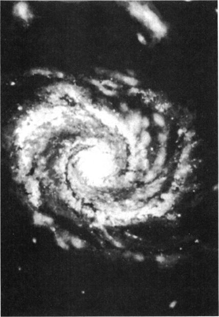
LARGE SPIRAL GALAXY APPEARS LIKE THIS TO AN OBSERVER APPROACHING PROM INTERGALACTIC SPACE. IN THIS IMAGINARY VIEW, BASED ON PHOTOGRAPHS OF THE GALAXY M5I, WE ARE A FEW HUNDRED THOUSAND LIGHT YEARS DISTANT« TWO SMALL IRREGULAR GALAXIES APPEAR NEAR THE TOP OF THE PICTURE.
大螺旋星系APPEARS 喜欢这个观察者逼近 PROM星际空间。在这张虚构的视图中，基于银河M5I的照片，我们距现在有几百个光年了«在图像的顶部附近出现了两个不规则的星系。
The spiral shape suggests rotation, and, indeed, if we wait a few million years, we shall be able to watch the process ourselves. Any shorter time will scarcely suffice, for a typical large galaxy may require more than 100 million years for one complete turn. The galaxy does not rotate as a rigid body, however. The inner regions, because of the greater concentration of mass, rotate more rapidly than the outer portions; and there is thus a continual “shear” effect across the body of the galaxy. The spiral pattern may be attributed in part to this differential rotation, but it also appears to be connected in some way with electric and magnetic fields in the galaxy. The full explanation is not yet clear.
螺旋形表明旋转，实际上，如果我们等待几百万年，我们将能够亲自观察该过程。更短的时间几乎是不够的，因为一个典型的大型星系可能需要一亿年的时间才能完成一个完整的转弯。但是，银河系不会像刚体一样旋转。由于质量的集中，内部区域的旋转速度比外部区域快；因此，在银河系的整个身体上都有持续的“剪切”效应。螺旋模式可能部分归因于这种旋转差，但它似乎也以某种方式与星系中的电场和磁场有关。完整的解释尚不清楚。
The particular galaxy we have chosen is about 100,000 light years in diameter, and when seen edge-on is about 10,000 light years thick. From our position several hundred thousand light years out, the great galaxy resembles a softly glowing pinwheel with a bright center and spiral arms. Its actual constitution, however, remains as much of a mystery as ever from this distance. So we must now turn our telescope upon it to discover that the glow comes from uncountable billions of separate points of light. We thus answer our next question—What is a galaxy? It is a colossal aggregation of stars—stars by the billions. In many places we can see great clouds of dust and gas, many light years in extent, some luminous and some dark, scattered among the stars. Most of this material lies in the regions of the spiral arms. The nuclear region of the galaxy seems relatively free from it.
我们选择的特定星系的直径约为100,000光年，而边缘观测的厚度约为10,000光年。在距我们数十万光年的位置上，巨大的星系就像一个柔和发光的风车，带有明亮的中心和旋臂。然而，从这一距离来看，它的实际构造仍然像以往一样是个谜。因此，我们现在必须将望远镜对准它，以发现辉光来自无数数十亿个单独的光点。因此，我们回答了下一个问题-什么是星系？它是恒星的巨大聚集，数十亿的恒星。在许多地方，我们可以看到尘埃和气体的巨大云层，范围是许多光年，有的发光，有的黑暗散布在恒星之间。这些材料大部分位于螺旋臂的区域中。
Before beginning our detailed exploration of this galaxy, let us pause for a few moments in another attempt to understand the scale of things. The picture (opposite) shows the galaxy as it appears from our vantage point a few hundred thousand light years out. We have chosen this particular galaxy because it is our own—somewhere among all those billions of stars lies one rather ordinary sort of star—our Sun, with its attendant planets.
在开始对这个星系进行详细探索之前，让我们暂停片刻，以进行另一次尝试以了解事物的规模。图片（相反）显示了从我们的有利位置出现几十万光年的星系。我们选择了这个特殊的星系，因为它是我们自己的 —在所有地方中的某个地方那数十亿颗恒星是一种相当普通的恒星，即我们的太阳及其伴随的行星。
How much will we have to enlarge this picture in order to find the Sun, its planetary family, and our home, the Earth?
为了找到太阳，它的行星家庭以及我们的家园地球，我们必须放大多少图片？
The answer, as we expected, is literally numbing to the mind, but once again serves to shock us into some degree of comprehension of the vastness of space. An enlargement of a few times will not help us—or of a few hundred times. But suppose we can enlarge the picture until it covers all of North America. Then the billions of individual stars will appear as pinpoint specks averaging about 600 feet apart. The Solar System—if we can locate the exact spot to look for it—will be about two inches in diameter, and the Sun and Earth will appear as two pinpoint dots about 1/30 inch apart. The Earth, in fact, will be totally invisible to the naked eye on this scale, and we shall have to examine our super-enlarged picture with a super-microscope to eventually locate the Earth as a sub-microscopic dot a few millionths of an inch in diameter.
正如我们所期望的那样，答案确实使人麻木，但再次使我们对某种程度上的广阔空间感到震惊。扩大几倍对我们没有帮助，或者扩大几百倍。但是，假设我们可以放大图片，直到它覆盖整个北美。然后，数十亿颗单独的恒星将以平均距离大约600英尺的精确斑点出现。如果能找到确切的位置来寻找太阳系，太阳系的直径将约为2英寸，太阳和地球将以两个精确的点出现，它们的间隔约为1/30英寸。实际上，在这个尺度上，地球将是肉眼完全看不见的，我们将不得不用超显微镜检查我们的超大图片，以最终将地球定位为亚微米点，其高度为百万分之几。直径英寸。
Keeping this scale in mind, let us now begin a tour through the Galaxy.
牢记这一规模，现在让我们开始浏览银河系。
Approaching the nearest star cloud, we watch for some time in awed silence as the cloud resolves first into a haze of millions of glimmering flecks of light, each becoming eventually a brilliant star and ultimately spreading out to spangle the heavens all about us. We are not surprised to find that the individual stars are separated from each other by relatively enormous distances, even though our telescopic view made them appear to be crowded together in incredibly thick masses. This was an illusion due to their unimaginable numbers and the great distance from which we viewed them. It was something like looking at a great city at night from a distance of many miles; the countless lights seem to melt together into a single glowing haze. The average distance between any two stars is on the order of three or four light years, and since the diameter of an average star is less than one light minute, we can see that the relative separation is vast indeed.
接近最近的恒星云，我们静静地观看了一段时间，因为云首先分解成数以百万计的微弱光斑，最终成为一颗璀璨的恒星，并最终散布开来，笼罩着我们周围的天堂。我们并不惊讶地发现，各个恒星彼此之间相隔相对较大的距离，即使我们的望远镜视角使它们看起来像是挤在一起，而且质量极高。由于它们难以想象的数量以及我们与之相距甚远的距离，这真是一种幻想。这就像晚上从许多英里远的地方看一座大城市。无数的光似乎融化成一个发光的雾。两颗星之间的平均距离约为三到四个光年，
There are many exceptions to this general rule, though, as in many places we find two or more stars quite close together and revolving about each other. Some of these pairs, known as “binary stars,” are nearly in contact and complete one revolution in less than a day, while others are so widely separated as to require centuries for a single revolution. As we continue to study the stars of the Galaxy, we learn that such double, triple, and multiple stars are by no means rare. Possibly about half of all the stars are double or multiple systems.
但是，该一般规则有许多例外，因为在许多地方，我们发现两个或两个以上的恒星彼此靠得很近并且彼此绕转。这些对中的一些对称为“双星”，几乎在一天之内就完成了一次旋转，而另一些则相距太远，单次旋转需要几个世纪的时间。随着我们继续研究银河系的恒星，我们发现这种双星，三星和多星绝非罕见。可能所有星星中约有一半是双星或多星系统。
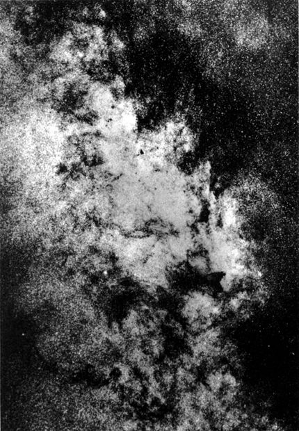
SPIRAL ARM OF THE GALAXY IS REVEALED AS A VAST COMPLEX OF STAR CLOUDS. ABOUT 400 BILLION INDIVIDUAL STARS POPULATE THIS STELLAR SYSTEM, WHICH IS ONE OF THE LARGEST GALAXIES KNOWN.
旋臂星系 被揭示为A的名将如云庞大复杂。这个星系系统拥有约4000亿颗独立星，是已知的最大星系之一。
PHOTOGRAPH by ALAN McCLURE
摄影：ALAN M c CLURE

AN INFINITE PROFUSION OF SHINING SUNS. THIS STAR FIELD IS A SMALL PORTION OF THE GREAT CYGNUS STAR CLOUD; THESE ARE A FEW OF THE ESTIMATED 400 BILLION STARS WHICH COMPRISE OUR GALAXY.
无限灿烂的太阳。这颗星际是大天鹅星云的一小部分。这些是组成我们的银河系的大约4000亿颗恒星。
LOWELL OBSERVATORY
洛厄尔天文台
In addition, we frequently come upon great clusters of stars containing hundreds or even thousands of members, gravitationally connected and moving together through space. As we survey the fantastic blazing beauty of one of these clusters, we realize it is time to answer another question: What is a star?
此外，我们经常遇到由数百或什至数千个成员组成的巨大恒星团，这些恒星在万有引力作用下相互连接并一起在太空中移动。当我们调查这些星团之一的梦幻般的炽烈之美时，我们意识到是时候回答另一个问题：什么是星星？
To answer this, we shall take a close look at one, not from a distance of several light years, but from a mere light minute (10 million miles or so). What we see now is not a tiny point of light, but an immense blazing globe of such intense brilliance that we cannot gaze upon it without protection for our eyes. We are looking at a typical, normal star.
为了回答这个问题，我们将近距离观察，而不是从几光年的距离，而是从仅仅一光分钟（1000万英里左右）。我们现在所看到的不是一个微小的光点，而是一个巨大而耀眼的耀眼地球，如果没有保护我们的眼睛，我们就无法凝视它。我们正在寻找一颗典型的普通恒星。
The particular star we have chosen is about average in size; its diameter is slightly less than one million miles, or about six light seconds. After our experience with distances of thousands of light years, a distance of six light seconds seems absurdly small. Yet, a star of this size could easily contain a million globes the size of the Earth.
我们选择的特定恒星大约是平均大小；它的直径略小于一百万英里，约六光秒。根据我们对数千光年的距离的经验，六光秒的距离似乎太小了。但是，这种大小的恒星很容易包含地球大小的一百万个地球仪。
As we examine the dazzling surface of this star, we can find nothing solid about any part of it; every part appears to be boiling, erupting, and exploding in various ways. Great flame-like tongues of glowing matter are continually leaping up and falling back, huge jets of blazing gas shoot up like gigantic fountains, and immense turbulent whirlpools move like fiery clouds across the boiling surface. In only a few hours such clouds may rise to heights of several hundred thousand miles above the star.
当我们检查这颗恒星令人眼花surface乱的表面时，我们在其任何部分都找不到任何坚实的东西。每个部分似乎都以各种方式沸腾，爆发和爆炸。巨大的火焰状火焰状的舌头不断地跳跃和回落，巨大的炽烈气体喷出，就像巨大的喷泉一样，巨大的湍流漩涡像炽热的云彩一样在沸腾的表面上移动。在短短的几个小时内，此类云层便会升至恒星上方数十万英里的高度。
The entire star is a colossal globe of superheated gas. By “gas” we do not mean to convey the impression of an airy nothing, like the inside of an inflated balloon. This star has enough mass to make over 300,000 planets like the earth, and its density is greater than many normally liquid or solid substances. In some stars, in fact, the density exceeds to an astonishing degree that of our heaviest known metals. This material is gaseous here because nothing solid or liquid can exist at the temperature found on a star.
整个恒星是一个巨大的过热气体地球。我们所说的“气体”并不是要传达出空虚的印象，例如膨胀的气球的内部。这颗恒星具有足够的质量，可以像地球一样构成超过300,000个行星，并且其密度大于许多通常为液体或固体的物质。实际上，在某些恒星中，密度超过了我们已知的最重金属的惊人程度。这种物质在这里是气态的，因为在恒星上发现的温度下不会存在任何固体或液体。

ENORMOUS CLOUD OF GLOWING GAS RISES FROM THE SURFACE OF THE SUN LIKE A TOWERING FOUNTAIN OF FLAME. SUCH ERUPTIONS, CALLED “ PROMINCNCES,” ILLUSTRATE SOME OF THE TYPICAL ACTIVITY ON THE SURFACE OF A STAR. THE SMALL WHITE DISC SHOWS THE EARTH TO THE SAME SCALE.
来自太阳表面的大量气体冒出，就像火焰喷出的喷泉一样。这种喷发被称为“突起”，说明了恒星表面上的一些典型活动。小型光盘显示的是同一规模的地球。
JULY 9, 1917 — MT. WILSON OBSERVATORY
1917年7月9日-MT。威尔逊天文台
The surface temperature of this particular star is about 6000° C, and the interior temperature is nearly 20 million degrees. This temperature allows a nuclear reaction—the conversion of hydrogen into helium—to proceed, which explains the energy source of the star. A typical average star such as this contains sufficient hydrogen for 20 or 30 billion years of energy production. So, as we can see, a star is a natural atomic furnace. We might think of it as a natural and perpetual nuclear reactor.
这颗特定恒星的表面温度约为6000摄氏度，内部温度接近2000万度。该温度允许进行核反应-将氢转化为氦气-这解释了恒星的能源。像这样的典型普通恒星含有足够的氢，可以产生20或300亿年的能量。因此，正如我们所看到的，恒星是天然的原子炉。我们可能会将其视为一个天然的永久核反应堆。
“It looks just like the Sun,” someone says. And, in this simple and direct observation we have the whole key to understanding the stars. They are other suns. Or, to put the statement in its correct form, our Sun is merely one of the stars.
有人说：“看起来就像太阳。” 而且，通过这种简单而直接的观察，我们便拥有了了解星星的全部关键。他们是其他太阳。或者，以正确的陈述形式来表达，我们的太阳只是星星之一。
With this knowledge, let us continue our trip through the galaxy. We are now surrounded by stars; we pass them by the millions. Our realization that each one is in reality a blazing sun capable of swallowing up a million earths gives us an incredible and even frightening picture of the unimaginable vastness of the Universe. Now we turn our attention to the individual stars and see what else can be learned from them.
有了这些知识，让我们继续银河之旅。我们现在被星星包围；我们让他们经过了数百万。我们意识到每个人实际上都是能够吞噬一百万个地球的烈日，这使我们对宇宙的不可思议的广阔感到难以置信，甚至令人恐惧。现在，我们将注意力转移到各个恒星上，看看还能从它们中学到什么。
The first thing we notice is a definite variety of color. We find that some stars are white or bluish; others are yellowish, and some show an orange or reddish tint. If we know our physics, we will deduce that this is due to a difference in temperature. White and blue stars are the hottest, red stars are the coolest. The coolest stars may have a surface temperature of a mere 2000° C, while a great blue giant may be ten or fifteen times hotter.
我们注意到的第一件事是一定的颜色。我们发现有些恒星是白色或带蓝色的。其他的则为淡黄色，有些则显示为橙色或淡红色。如果我们了解物理原理，我们将推断出这是由于温度差异引起的。白色和蓝色的星星最热，红色的星星最冷。最冷的恒星的表面温度可能仅为2000°C，而一颗巨大的蓝巨星的温度可能高出十到十五倍。
There is also a great difference in stellar diameters and densities. Some of the great red giants are hundreds of times bigger than our Sun, but their temperatures are low and their substance is highly rarified. At the otherextreme we find the astonishing “white dwarf” stars which are only a fraction of the size of the Sun but weigh tons to the cubic inch. The difference in actual luminosity is another subject for study in our celestial survey. We come across some great stars which outshine the Sun by more than 50,000 times, but such supergiants are exceedingly rare. Much more numerous are the tiny “red dwarf” stars whose feeble illumination may be a mere 1/100,000 the luminosity of the Sun. For every supergiant we find thousands of stars like our Sun, and for every star of the solar type we find thousands of red dwarfs, by far the commonest citizens in the stellar community. Our Sun thus appears as a fairly respectable member of the stellar population.
恒星的直径和密度也有很大的不同。一些伟大的红色巨人的体积比我们的太阳大数百倍，但它们的温度低且物质稀有。在另一个极端，我们发现了令人惊讶的“白矮星”恒星，它们仅是太阳大小的一小部分，但其重量却达到立方英寸。实际光度的差异是我们天球测量中另一个需要研究的主题。我们遇到了一些伟大的恒星，它们比太阳耀眼的多50,000次，但是这种超级巨人极为罕见。数量众多的是微小的“红矮星”恒星，其微弱的光照可能仅是太阳光度的1/10万。对于每个超级巨星，我们都会发现成千上万的恒星，例如太阳；对于太阳类型的每一颗恒星，我们都会发现成千上万的红矮星，这是恒星社区中最普通的公民。因此，我们的太阳似乎是恒星族中相当受人尊敬的成员。
Among the more unusual and peculiar members are the “variable stars.” These are suns which do not remain constant in their outpourings of light and heat, but fluctuate in a peculiar manner, some periodically, others erratically. The commonest types are red giants,which appear to pulsate, expanding and contracting like a beating heart. If we watch a few typical examples, we shall soon see that their average period is about a year and their light range is very great, usually more than 100 times and,in some examples, over 1000 times. These stars are called “long-period variables.” Another similar type of pulsating star has a period of a few days or weeks and a light range of only two or three times. These stars are white or yellow giants and are technically known as “cepheids.”
在“太阳系”中，最不寻常和特殊的成员是“ 变星”。这些太阳的光和热不能保持恒定，而是以独特的方式波动，有的周期性地波动，有的则不稳定。最常见的类型是红色巨人，它们像跳动的心脏一样搏动，扩张和收缩。如果我们看几个典型的例子，我们很快就会看到它们的平均周期约为一年，它们的光照范围非常大，通常超过100倍，在某些例子中还超过1000倍。这些恒星被称为“长周期变量”。另一种类似类型的脉动恒星的周期为几天或几周，而光程仅为其两倍或三倍。这些恒星是白色或黄色巨人，在技术上被称为“造父变星”。
The long-period variables and the cepheids appear to follow certain rules which allow us to predict their future behavior with fair accuracy. Not so obliging, and therefore more intriguing to the curious astronomer, are the more erratic variable stars, some of which fluctuate in a completely unpredictable manner. There are small dense white stars, for example, that flare up suddenly in the course of a day or so, increasing forty or sixty times in brightness, thereafter slowly fading back to normal, only to repeat the process again and again at intervals of a few months. Some of the tiny red dwarfs show a similar effect, flaring up to double their normal light in a few minutes, then fading just as suddenly. We also find stars whose variations are completely irregular; they may fade or brighten at any time from some still unknown cause. Our steady, dependable Sun seems comfortably unexciting when compared to these erratic, unstable stars.
长周期变量和造父变星似乎遵循某些规则，这些规则使我们可以相当准确地预测它们的未来行为。更不稳定的可变恒星并没有那么令人费解，因此对好奇的天文学家更感兴趣，其中一些恒星以完全无法预测的方式波动。例如，有一些小的密集的白色恒星，它们在一天左右的过程中突然爆发，亮度增加了四十或六十倍，此后逐渐恢复正常，只是每隔一秒重复一次几个月。一些小小的红矮星也表现出类似的效果，在几分钟内爆发出使其正常光线翻倍的效果，然后突然消失。我们还发现恒星的变化完全不规则；由于某些未知原因，它们随时可能褪色或变亮。我们稳定
The most spectacular of all the variable stars are the novae. If we travel around the galaxy for a year or so, we have a fair chance to see one. A nova is a star that literally explodes, blasting its outer layers into space with titanic violence and rising to unheard-of brilliance for a period of a few days or weeks. A supernova is a similar phenomenon on a vastly greater scale—it results in the more-or-less complete destruction of a giant star, with an explosion that makes an ordinary nova look pale by comparison. A first-rate supernova may equal the total luminosity of all the other billions of stars in a galaxy put together. Unfortunately, the supernovae are very rare, and we might have to cruise around the Galaxy for several centuries before seeing one.
在所有变星中最壮观的是新星。如果我们在银河系中旅行一年左右，我们就有机会看到它。一颗新星实际上是会爆炸的恒星，它会以巨大的暴力行为将其外层爆炸进入太空，并在几天或几周的时间内上升到前所未有的光彩。一个超新星是在大得多的类似现象的规模，它会导致一个巨星的更多或更少的完全破坏，有爆炸，使一个普通的新星外观由相形见绌。一流的超新星可能等于银河系中所有其他数十亿颗恒星的总光度。不幸的是，超新星非常罕见，我们可能必须在银河系中巡游几个世纪才能看到它。

GALACTIC STAR CLUSTER IS A MASSED GROUP OF SEVERAL HUNDRED SUNS, OFFERING A SPLENDID SIGHT FOR SMALL TELESCOPES. THIS EXAMPLE IS M37 IN THE CONSTELLATION OF AURIGA.
银河 星团是由数百个太阳组成的大量群，它们为小望远镜提供了出色的视觉效果。此示例是AURIGA星座中的M37。
13” TELESCOPE— LOWELL OBSERVATORY
13英寸电视—洛厄尔天文台

GREAT DIFFUSE NEBULA KNOWN AS M8 LIES IN THE SUMMER SKIES IN THE CONSTELLATION OF SAGITTARIUS. THIS VAST CLOUD OF RARIFIED GASES SHINES BY THE LIGHT OF AN INVOLVED CLUSTER OF HIGHLY LUMINOUS STARS.
弥漫性星状星云在马蹄莲星座中被称为 M8谎言。大量的高亮度恒星的参与，使这种瓦斯形成的巨大气孔闪闪发亮。
42” TELESCOPE-LOWELL OBSERVATORY
42英寸望远观察台
To the question, “Why do certain stars fluctuate, pulsate, or explode?” it must be admitted that we have no lack of theories, but also no definite proven answers. All these spectacular happenings are symptoms of various kinds of stellar instability, generally thought to indicate that the star is approaching the point of exhausting its nuclear “fuel” supply. Such stars, it seems, may first expand into red giants, then later collapse into the super-dense “white dwarf” state, where their life history ends.
对于“为什么某些恒星会波动，脉动或爆炸？”这一问题，必须承认我们不缺乏理论，也没有确定的可靠答案。所有这些壮观的事件都是各种恒星不稳定的症状，通常认为这表明该恒星正接近耗尽其核“燃料”供应的地步。看来，这类恒星可能首先膨胀为红色巨星，然后崩溃为超致密的“白矮星”状态，从而终止了它们的生活史。
The stars of the Universe are thus seen to be in various stages of evolution, from the virtually newborn to the dying cinders. We have seen some of the dying cinders — let us now study a region where new stars are still being formed.
因此，从真正新生的煤渣到垂死的煤渣，宇宙的恒星处于演化的各个阶段。我们已经看到了一些垂死的煤渣-现在让我们研究一个仍在形成新恒星的区域。
You will remember that, when we looked at this Galaxy from our telescopic vantage point far out in space, we noticed that much dust and gaseous material was distributed among the stars, especially in the region of the spiral arms. We are now entering one of these regions. The great glowing cloud of gases and dust which we see floating ahead of us is called a “nebula.” To be precise, we should call it a “diffuse nebula” or “gaseous nebula,” so as to avoid confusion with the so-called “spiral nebulae,” which are actually galaxies. Galaxies should no longer be referred to as “nebulae,” of course; but the term was applied in the early days, when the true nature of the galaxies was not known, and the term is often used even today.
您会记得，当我们从太空中遥远的望远镜有利位置观察银河时，我们注意到许多尘埃和气态物质散布在恒星之间，尤其是在旋臂区域。我们现在正在进入这些地区之一。我们看到漂浮在我们前方的巨大的气体和尘埃发光云被称为“ 星云”。确切地说，我们应将其称为“弥散星云”或“气态星云”，以避免与此类混淆。称为“螺旋星云”，实际上是星系。当然，星系不应再被称为“星云”。但是这个术语是在早期时才使用的，当时人们还不知道银河系的真正性质，甚至在今天也经常使用该术语。
The particular diffuse nebula we have chosen is a fair example of the type, measuring about twenty light years in extent and consisting of highly rarified gases, chiefly hydrogen, helium, nitrogen, and oxygen (picture opposite). The Galaxy contains a tremendous amount of this matter; in fact, it is estimated that over a third of the mass of the Galaxy is in the form of dust and gas clouds. This material, however, remains invisible unless illuminated by nearby stars. Thus the nebula at which we are now looking is visible only because of the hot stars embedded in it, which cause the gases to shine. There are two processes by which the nebula may be illuminated. If the star is of a sufficiently high temperature (20,000°K or above), the gases may be excited to luminescence by the star’s ultraviolet radiation, a process known as “fluorescence.” If the temperature of the star is too low, the nebula will merely shine by reflected starlight. Fluorescence produces the more brilliant illumination and also gives the glowing gases a peculiar ghostly greenish color. It happens that the spiral arms of the Galaxy are extraordinarily rich in great blue-hot supergiant stars, and the involved nebulosity glows in vivid splendor. The presence of these stars is no accident. We find them in the regions where they were born, and the great diffuse nebulae are the “star factories” of the galaxy. We are witnessing one of the scenes in the drama of creation.
我们选择的特殊弥散星云就是这种类型的一个很好的例子，其范围约为二十光年，由高度稀有的气体组成，主要是氢，氦，氮和氧（图相反）。星系包含大量的物质。在事实上，据估计，银河的质量超过三分之一是尘埃和气云的形式。但是，除非被附近的恒星照亮，否则这种材料仍然不可见。因此，我们现在所看到的星云仅由于嵌入其中的炽热恒星而可见，这会导致气体发光。有两个过程可以照亮星云。如果恒星的温度足够高（20,000°K或更高），则气体可能会被恒星的紫外线辐射激发而发光，这一过程称为“荧光”。如果恒星的温度太低，则星云会发光。只会被反射的星光照耀。荧光产生更明亮的照明，还使发光的气体具有特殊的幽灵般的绿色。碰巧，银河系的旋臂非常富含蓝色的超级巨星，而且所涉及的星云以生动的光芒发光。这些星星的出现并非偶然。我们在它们出生的地区发现它们，巨大的弥散星云是银河系的“恒星工厂”。我们目睹了创造戏剧中的场景之一。
In studying these vast chaotic masses of glowing gas, we often find them associated with nearby clouds of dark dust, producing strange and spectacular patterns against the starry background. Some of them appear in great foggy masses of indistinct form; others seem like slender wisps and streamers of light reaching from star to star; and others.lacking illumination, appear as great dark blots against the bright star clouds of the Galaxy. Some of this matter may have come from exploding stars or other celestial cataclysms, but it seems more likely that most of it has never been part of any star but is rather a portion of the original “building material” from which the galaxies were formed and will therefore supply the material for many stars in ages to come. The Universe is still young, as we can see. Although the galaxies have probably existed for 10 billion years or so, this is but a fraction of their total “life expectancy.“
在研究这些巨大的混乱的炽热气体团块时，我们经常发现它们与附近的黑尘云有关，在星空背景下产生奇怪而壮观的图案。其中一些以模糊的形式出现在雾蒙蒙的大群众中。其他人似乎像纤细的小精灵，流光从一颗星星传到另一颗星星。以及其他缺乏照明的地方，在银河系的明亮恒星云上表现为巨大的深色斑点。其中一些问题可能来自爆炸的恒星或其他天灾，但似乎更有可能的是，它绝大部分都不是任何恒星的一部分，而只是形成星系的原始“建筑材料”的一部分，因此，它将为以后的许多恒星提供物质。我们可以看到，宇宙还很年轻。
A typical diffuse nebula, as we said, is something like 20 light years in diameter, and we might pause again for a moment of contemplation concerning the scale of things. With the Earth and Sun one inch apart, our scale model of this nebula would spread over 20 miles of countryside. There is enough material in one of these clouds to make many hundreds of stars like our Sun.
正如我们所说，一个典型的弥散星云的直径约为20光年，我们可能会再次停顿片刻，以思索事物的规模。当地球和太阳相距一英寸时，我们对该星云的比例模型将遍布20英里的乡村。这些云团之一中有足够的物质来制造像我们的太阳一样的数百颗恒星。
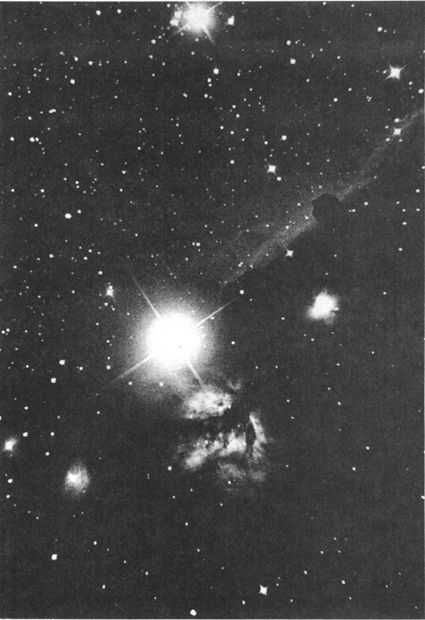
BRIGHT AND DARK NEBULOSITY PRODUCES STRANGE PATTERNS IN THE REGION OF THE SPECTACULAR “HORSEHEAD NEBULA” IN THE CONSTELLATION OF ORION. THIS PHOTOGRAPH WAS MADE WITH AN 8” REFLECTING TELESCOPE.
亮区和暗星云 了奇怪的图案壮观的“马头星云”的猎户星座的区域。这张照片是用8英寸的反射式望远镜制成的。
KENT DE GROFF, LOWELL OBSERVATORY
肯特·德·格罗夫（LOVE天文台）

TYPICAL PLANETARY NEBULA CONSISTS OF A HOLLOW SHELL, BUBBLE, OR RING OF GAS SURROUNDING A HOT BLUE DWARF STAR. THIS EXAMPLE IS THE “OWL NEBULA” M97 IN URSA MAJOR.
典型的行星状星云 由环绕热蓝矮星的气体的空心壳，气泡或环组成。此示例是URSA MAJOR中的“ OWL NEBULA” M97。
42” TELESCOPE — LOWELL OBSERVATORY
42英寸电视—洛厄尔天文台
Somewhat smaller is another type of nebula which we shall now briefly visit (picture opposite). This type, as you will notice, rather resembles a hazy globe of smoke. This vaporous sphere is composed of the same sort of rarified gases which we met in the diffuse nebulae. In the center of the sphere is a small but extremely hot bluedwarf star which supplies the illumination for the entire nebula. These objects are not as large as the diffuse nebulae, but are often remarkably bright for their size. The particular example we are studying has a diameter of somewhat less than one light year. An object of this type is called a “planetary nebula.” The term does not imply any connection with planets, but merely indicates that such nebulae rather resemble the pale disc of a distant planet as seen through a small telescope.
稍小的是另一种类型的星云，我们现在将对其进行简要介绍（右图）。如您所见，这种类型更像是朦胧的烟雾状地球。这个蒸气球由与弥散星云中遇到的相同稀有气体组成。在球体的中心是一颗很小但非常炽热的蓝矮星，它为整个星云提供照明。这些天体不如弥散星云大，但它们的大小通常非常明亮。我们正在研究的特定示例的直径略小于一光年。这种物体称为“行星状星云”。该术语并不表示与行星有任何联系，而仅表示该星云类似于通过小型望远镜观察到的遥远行星的苍白圆盘。
The actual significance of the planetary nebulae remains obscure. They are undoubtedly produced by some sort of outbursts which have occurred on the central stars, but the outbursts appear to have been much less violent than the explosions we call “novae.” Perhaps we should classify a planetary nebula as an unusually “lazy” type of nova.
行星状星云的实际意义仍然不清楚。它们无疑是由中央恒星上发生的某种爆发产生的，但是这些爆发似乎没有我们称之为“新星”的爆炸那么剧烈。也许我们应该将行星状星云归类为异常的“惰性”类型。新星
Continuing our voyage through the spiral arms of the Galaxy, we are repeatedly astonished by the extraordinary richness of these regions. Not only do the vast nebulae present countless vistas of great interest and beauty, but we also notice enormous numbers of star groups, clusters, and associations, some of them measuring over 100 light years in extent and containing thousands of stars of different sizes and color. Many of them are embedded in glowing nebulosity or smothered in great dark clouds of cosmic dust. All of these star clusters are examples of one type, the “galactic” or “open” cluster, so called from their scattered appearance and the fact that they are found inside the Galaxy, chiefly along the spiral arms. There is one other type of star cluster; and, in order to see it, we must travel out about 30,000 light years to the outer rim of the Galaxy.
通过银河系的旋转臂继续航行，我们屡屡被这些地区的异常丰富而惊讶。巨大的星云不仅呈现出无数有趣而美丽的远景，而且我们还注意到大量的恒星团，星团和协会，其中一些恒星的范围超过100光年，并且包含成千上万个大小和颜色不同的恒星。他们中的许多人被笼罩在发光的星云中，或被深深的宇宙尘埃云遮住了。所有这些星团都是“星系”或“开放”星团的一种类型，从它们散乱的外观以及它们主要在旋臂上发现于银河系中这一事实而称呼它。还有另一种星团。为了看到它，我们必须外出旅行30
From our new position we can now see a number of fuzzylooking objects distributed around the edges of the Galaxy on all sides. As we approach one, it gradually grows into a great silvery ball spangled by thousands of star-points, and finally, from a few hundred light years away, we get the view shown in the picture opposite.
从我们的新位置，我们现在可以看到许多模糊的物体分布在银河边缘的各个侧面。当我们接近一个球时，它逐渐长成一个巨大的银色球，上面闪耀着成千上万个星点，最后，从几百光年之外，我们得到了对面的风景。

FINEST GLOBULAR STAR CLUSTER IN THE SKY IS THIS MAGNIFICENT SWARM OF COUNTLESS STARS KNOWN AS OMEGA CENTAURI OR NGC 5139, ONE OF THE NEAREST CLUSTERS OF THIS TYPE TO THE EARTH.
FINEST球状星团IN THE SKY IS THIS 宏伟称为半人马座ω或NGC 5139，一个图像，此类型到地球最近的集群无数明星群。
HARVARD COLLEGE OBSERVATORY
哈佛大学天文台
This magnificent object, resembling a vast celestial swarm of bees, is called a “globular star cluster”; it is incomparably richer and more compact than the galactic type, las you can see. It is also noted for its beautifully spherical outline. About a hundred of these clusters are known; the particular one at which we are looking is about 200 light years in diameter and contains a million stars. Its total luminosity is more than 500,000 times the light of the Sun.
这个宏伟的天体类似于巨大的蜜蜂天体，被称为“ 球状星团 ”。就像您所看到的，它比银河系更丰富，更紧凑。还以其精美的球形轮廓而闻名。其中约有一百个簇是已知的。我们正在寻找的特定恒星直径约为200光年，并包含一百万颗恒星。它的总光度是太阳光的500,000倍以上。
When we viewed some of the rich star clouds of the galaxy, we received the impression that the stars were packed so thickly as to be almost in actual contact. The globular cluster now gives us the same impression, which again turns out to be an illusion. As we travel through the cluster, we find that the real separation of the stars is on the order of half a light year or so, pinpoints averaging 3000 feet apart on our much-used scale model! This cannot be called crowding, although it is much more “crowded” than most regions of the Galaxy. Only the Galactic Center, in fact, is so thickly populated.
当我们观察银河系中一些富裕的恒星云时，我们得到的印象是，恒星堆积得如此之密，以至于几乎可以实际接触。球状星团现在给我们同样的印象，再次证明这是一种幻觉。当我们通过集群旅行，我们发现恒星的真正分离是上半光一年左右的订单，平均针点相距3000英尺我们多使用的比例模型！尽管它比银河系的大多数区域“拥挤”得多，但不能称之为拥挤。实际上，只有银河中心如此人口稠密。
And the Galactic Center, incidentally, is where we are now headed.
顺便提一句，银河中心就是我们现在要去的地方。
Having looked at the Galaxy from far out in space, you will remember the bright central nucleus which appeared to dominate the general glow of the great spiral. That nucleus was the Galactic Center, the great concentration of mass about which the rest of the system revolves. The brightness of the Center is not due to any greater luminosity of its stars; on the contrary, the great hot supergiant stars are quite absent from this region. It is instead the unbelievably vast numbers of the stars which give the Center a brilliance exceeding even the rich star clouds of the spiral arms.
从遥远的太空看向银河系后，您会记得明亮的中央核似乎主导了大旋涡的一般辉光。那个原子核是银河系中心，整个系统的其余部分都围绕着质量集中。中心的亮度并不是由于它的恒星的亮度更高。相反，该区域却没有巨大的超级巨星。取而代之的是，令人难以置信的是，大量的恒星赋予了中心超凡的光芒，甚至超过了旋臂的丰富恒星云。
No one can guess how many stars are contained in the Galactic Center—certainly hundreds of millions, perhaps billions. We are at the very hub of the Galaxy, and in this region of awesome splendor we have reached the climax of our celestial journey. Let us think for a moment of the billions of other Suns, the nebulae and clusters, and the countless other wonders we have seen. Let us think also of the millions of other galaxies beyond this one, each another star city containing a few hundred billion Suns. If we can even begin to grasp these concepts, however hazily, we have made a good start at understanding the astronomer’s Universe, and we are also in a good position to increase our knowledge by asking the right questions:
没有人能猜出银河系中心有多少颗恒星，肯定有数亿颗，甚至数十亿颗。我们位于银河的枢纽，在这个令人敬畏的辉煌地区，我们已经达到了天体旅行的高潮。让我们考虑一下数十亿其他太阳，星云和星团以及我们所见过的无数其他奇观。让我们也考虑一下这个星系以外的其他数百万个星系，每个星系都包含数千亿个太阳。如果我们甚至可以开始模糊地理解这些概念，我们就已经在理解天文学家的宇宙方面有了一个良好的开端，并且我们也可以通过提出正确的问题来增加我们的知识：
QUESTION: If we had chosen some other galaxy at random instead of this one, would we have seen the same things?
问题：如果我们随机选择其他星系而不是这个星系，我们会看到相同的东西吗？
ANSWER: Yes. Any large spiral galaxy would be a fair duplicate of the one we have just explored. Some of the smaller galaxies, however, particularly the “elliptical” types, contain no dust and gas and would therefore contain no diffuse nebulae. Their stellar population also appears to be limited, as they contain none of the blue supergiants which we found in the spiral arms of our own Galaxy.
回答：是的。任何大型旋涡星系都将与我们刚刚探索的旋涡星系相当。但是，一些较小的星系，尤其是“椭圆形”星系，不包含灰尘和气体，因此不包含弥散星云。他们的恒星种群似乎也很有限，因为它们不包含我们在自己银河系的旋臂中发现的蓝色超巨星。
QUESTION: What is the reason for this difference?
问题：造成这种差异的原因是什么？
ANSWER: The full explanation is not yet known. There are two widely contrasting types of stellar population. Some regions are occupied by gas and dust clouds and blue giant stars; their presence identifies “Population I.” In other regions we find no dust or gas, and the brightest stars are red giants of only moderate luminosity; these are the earmarks of “Population II.“ From this we can see that the spiral arms of our Galaxy, and also the irregular galaxies, are Population I systems. The Galactic Center, the globular star clusters, and the spherical and elliptical galaxies are all Population II. There is no real doubt that this difference is due primarily to a matter of age. In a Population I system we still see star formation in progress, while in a Population II system the stars appear to be very ancient and are in an advanced state of stellar evolution. But it is not known why some galaxies appear to be so much older than others. These facts must be considered in any attempt to formulate a general theory of the history of the Universe.
答案：完整的解释尚不清楚。恒星种群有两种截然不同的类型。一些地区被气体和尘埃云以及蓝色巨星占据；它们的存在标识为“人口I”。在其他地区，我们没有发现灰尘或气体，最明亮的恒星是只有中等亮度的红色巨人。这些是“人口II”的专用标记。由此可见，银河系的旋臂以及不规则星系都是I类人口系统。银河系中心，球状星团以及球形和椭圆形的星系都是人口II。毫无疑问，这种差异主要是由年龄引起的。在“人口I”系统中，我们仍然看到正在形成恒星，而在“人口II”系统中，恒星看起来非常古老，并且处于恒星演化的高级状态。但是还不知道为什么有些星系比其他星系那么老。在试图提出宇宙历史的一般理论时，必须考虑这些事实。
QUESTION: Isn’t our Galaxy sometimes referred to as the “Milky Way”?
问题：我们的银河有时不是被称为“银河系”吗？
ANSWER: Yes. The galaxy is shaped like a wheel, you remember. The stars, therefore, appear more thickly massed when we look in one direction—down the longer diameter of the wheel. In this direction we see stars by the billions. But, because of the vast size of the Galaxy, most of these stars are too distant to be separately visible, and only their combined light reaches us in the form of a misty luminescence which appears to circle the heavens in a great glowing band. This appearance is easily noticed from Earth, and it is called the “Milky Way.” The Milky Way, then, is merely the result of viewing our Galaxy from the inside. When we look toward this glowing band, we are looking across the long dimension of the Galaxy. And the brightest portion, which we see from Earth in the southern sky in summer, marks the direction to the Galactic Center.
回答：是的。您还记得，星系的形状像一个轮子。因此，当我们从一个方向看时，恒星看起来更浓密-沿着车轮。在这个方向上，我们看到数十亿颗恒星。但是，由于银河系巨大，这些恒星中的大多数距离太远而无法单独看到，并且只有它们的组合光以雾状发光的形式到达我们，似乎在一个巨大的发光带中环绕着天堂。这种外观很容易从地球上注意到，因此被称为“银河系”。那么，银河系仅仅是从内部观察银河系的结果。当我们朝着这个发光的波段看时，我们正在看银河系的长边。夏季，我们从南方天空中的地球上看到的最明亮的部分标志着通往银河系中心的方向。
QUESTION: Where is our own Solar System located in our Galaxy?
问题：银河中我们自己的太阳系在哪里？
ANSWER: It is approximately 30,000 light years out from the center of the Galaxy, or a little more than halfway from the center to the outer edge. It is not located in any definite cluster, but is a member of one of the loose star clouds which compose part of a spiral arm of the Galaxy.
解答：距银河系中心约30,000光年，或距银河系中心至外缘约一半多一点。它不位于任何确定的星团中，而是组成星系螺旋臂一部分的松散星云之一的成员。
From a distance of 50 light years, the Sun appears as a faint yellowish star barely visible to the naked eye and completely indistinguishable from the myriads of other faint stars scattered over the heavens. From about four light years out it has become one of the brightest stars in the sky. And, finally, from a distance of less than one light hour (about 670 million miles), it begins to show as a disc instead of a point of light, and its brilliance has become dazzling.
从50光年的距离来看，太阳看起来像是一颗淡黄色的恒星，肉眼几乎看不见，与散布在天空上的无数其他淡淡的恒星完全无法区分。从大约四光年开始，它已成为天空中最亮的星星之一。最后，在不到一光小时（约6.7亿英里）的距离内，它开始以圆盘形式显示，而不是一个光点，其光彩夺目。
The Sun, from anywhere else in the galaxy, would be regarded as a very typical sort of star like billions of others, but for us it seems to have a certain uniqueness. As we already know, it is not a lone wanderer in space, but is accompanied by a “family” of objects known as the “Solar System,” all the members of which are within a few light hours of the dominant central star. The chief objects of interest in this system are nine small solid worlds known las the “planets,” which revolve about the Sun at different distances and various speeds. The nearest planet to the Sun is 36 million miles away and revolves about it in 88 days; the farthest is 100 times more distant and requires 248 years for one revolution. The planets also differ greatly in size, having diameters ranging from 3200 to 88,000 miles. The roll call of the planets—going outward from the Sun—reads as follows: Mercury, Venus, Earth, Mars, Jupiter, Saturn,. Uranus, Neptune, and Pluto.
太阳在银河系中的其他任何地方，都将被视为像数十亿颗恒星一样非常典型的恒星，但对我们而言，它似乎具有一定的独特性。众所周知，它并不是太空中的孤单流浪者，而是伴随着一个被称为“ 太阳系 ”的物体的“家庭”，其所有成员都位于占主导地位的中央恒星的数小时之内。该系统的主要关注对象是九个小的固体世界，称为“ 行星””，它以不同的距离和速度围绕太阳旋转。离太阳最近的行星是3600万英里，围绕它旋转88天。最远的距离是100倍，一次旋转需要248年。行星的大小也相差很大，直径范围为3200至88,000英里。从太阳向外飞来飞去的行星读起来如下：水星，金星，地球，火星，木星，土星。天王星，海王星和冥王星。

PLANETS OF THE SOLAR SYSTEM ARE THE OTHER WORLDS WHICH ORBIT THE SUN IN COMPANY WITH OUR OWN EARTH. SHOWN HERE ARE VENUS, MARS, JUPITER, AND SATURN.
太阳系的行星 是太阳与我们自己的地球一起绕太阳公转的其他世界。这里所示ARE V ENUS，男ARS，J UPITER，与小号A打开。
LOWELL OBSERVATORY PHOTOGRAPHS
洛厄尔天文台照片
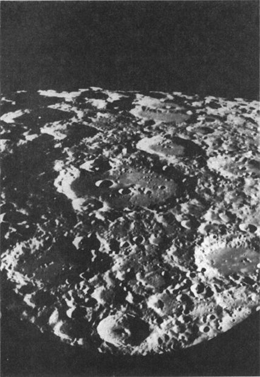
THE MOON IS THE ONLY KNOWN NATURAL SATELLITE OF THE EARTH AND THE NEAREST OBJECT IN SPACE. THOUSANDS OF GIANT CRATERS POCK-MARK THE SURFACE; THE HUGE FORMATION SHOWN HERE IS CLAVIUS, 135 MILES IN DIAMETER
THE MOON IS的唯一已知的天然卫星 è ARTH 和最近的对象空间。成千上万的巨型小袋在表面标记；此处显示的巨大岩层是 C 拉维斯，直径135 英里
LOWEU OBSERVATORY PHOTOGRAPH
洛厄天文台照片
Some of the planets have smaller bodies called “satellites” or “moons” revolving about them. There are 34 such objects in the solar system. Our Earth, as we all know, has only one natural satellite.
In addition to the planets and their satellites, we also find a host of “asteroids,” sometimes called “planetoids” or “minor planets,” revolving about the Sun, mainly between the orbits of Mars and Jupiter. Possibly fragments of a shattered world, they must be numbered in the thousands, although the majority are mere hunks of rock less than 5 miles in diameter. Possibly 4 dozen or so have diameters exceeding 100 miles; the two largest, Ceres and Pallas, have diameters of about 620 and 375 miles.
除了行星及其卫星之外，我们还发现了许多“ 小行星 ”，有时也称为“小行星”或“小行星”，它们围绕太阳旋转，主要在火星和木星的轨道之间。可能是破碎的世界的碎片，它们必须被编号成千上万，尽管大多数只是直径不到5英里的大块岩石。可能有4打左右的直径超过100英里；最大的两个谷神星和谷神星的直径分别为620和375英里。
Meteorites are perhaps similar to asteroids, except in the matter of size. They must be numbered in billions, but are usually no larger than tiny pebbles or sand grains. The Earth collides with millions of them each day, their fiery passage through our atmosphere producing the phenomenon called a “shooting star.” On rare occasions a meteorite may be large enough to reach the surface of the Earth before being completely incinerated by friction against the air. Meteorites are naturally of the greatest scientific interest and value since they are the only samples of material from beyond the Earth-Moon System which can be studied and analysed in the laboratory. The largest single specimen known today is the “Hoba” in South Africa, a solid mass of nickeliron weighing some 60 tons. The great majority of meteorites are composed of stony material, however, and a few consist of metallic iron and stony material mixed together. Giant meteorites have occasionally struck the Earth; the mile-wide Meteor Crater in Arizona was produced by such a collision some 30,000 years ago.
陨石除了大小以外，它们可能类似于小行星。它们必须以十亿为单位编号，但通常不大于小卵石或沙粒。地球每天与数以百万计的人发生碰撞，它们通过我们的大气层激烈燃烧，产生称为“流星”的现象。在极少数情况下，陨石可能大到足以到达地球表面，然后被与地球的摩擦完全焚毁。空气。陨石自然具有最大的科学兴趣和价值，因为它们是地球月球系统之外唯一可以在实验室中进行研究和分析的物质样品。今天已知的最大的单个标本是南非的“霍巴”（Hoba），是重约60吨的镍铁固体。绝大多数陨石是由石质材料组成的，还有一些由金属铁和石质材料混合而成。巨大的陨石偶尔袭击了地球；大约三万年前的一次撞车事故造成了亚利桑那州一英里宽的流星陨石坑。
The final members of the Solar System are the comets, large chunks of frozen gases and ices mixed together with dust and meteoritic material. Such an object is generally no more than 10 or 20 miles in diameter, but when near the Sun becomes surrounded by a huge glowing cloud of vapor which may be several times the size of the Earth. Comets revolve about the Sun in periods which may range from a few years up to many centuries. A comet orbit is usually a long ellipse, bringing the comet very near the Sun and the Earth at the closest approach, but afterwards carrying it out beyond the farthest planets at the other end of its journey. Comets are visible only when relatively near the Sun and appear as hazy “stars” often accompanied by a long glowing “tail” of fine dust and gas. Tail activity is connected in some way with the radiation from the Sun and with the streams of electrically charged particles being emitted by the Sun; the tail vanishes as the comet recedes from the Sun and heads out into interplanetary space. The return of certain comets may be predicted when the period is known; the most famous example is undoubtedly Halley’s Comet, which has a period of about 76 years and will return again in 1986.
太阳系的最后成员是彗星，大量的冷冻气体和冰块与灰尘和陨石混合在一起。这种物体的直径通常不超过10或20英里，但是当太阳附近时，它就会被巨大的发光蒸气云包围，而蒸气云可能是地球大小的几倍。彗星围绕太阳旋转的时期可能从几年到几个世纪不等。彗星轨道通常是一个长椭圆形，使彗星以最接近的方式非常靠近太阳和地球，但随后在其行程的另一端将其推到最远的行星之外。彗星只有在相对靠近太阳的情况下才可见，并且表现为朦胧的“星星”，通常伴随着长时发出的细尘和气体的“尾巴”。尾巴活动与太阳的辐射以及太阳发射的带电粒子流有某种联系。彗星从太阳后退并驶向行星际空间时，尾巴消失了。当周期已知时，可以预测某些彗星的返回。最著名的例子无疑是哈雷彗星，它的存在时间约为76年，将于1986年再次出现。
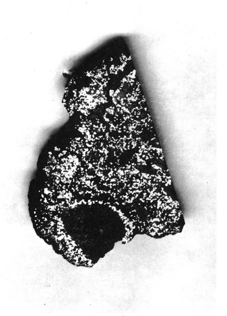
STRUCTURE OF A STONY-IRON METEORITE. A POLISHED FRAGMENT OF THE 85-POUND METEORITE WHICH FELL AT PATWAR, INDIA, JULY 29, 1935, SHOWING BRIGHT METALLIC NICKELIRON GRAINS IN A DARK MATRIX OF SILICATE MINERALS.
石铁陨石的结构。1935年7月29日在印度帕特瓦尔倒下的85磅陨石的抛光片段，在深色硅酸盐矿物基质中显示出明亮的金属尼古龙颗粒。
2 X ENLARGEMENT BURNHAM COLLECTION
2 X放大 伯恩翰收藏
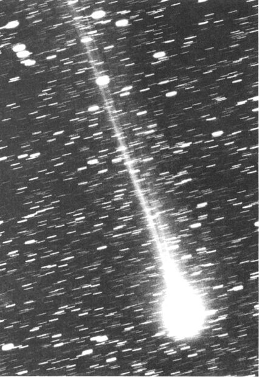
COMET BURNHAM 1959k, DISCOVERED BY THE AUTHOR AT LOWELL OBSERVATORY IN DECEMBER 1959. THIS PHOTOGRAPH SHOWS THE COMET ON APRIL 22, I960, SHORTLY BEFORE ITS CLOSEST APPROACH TO THE EARTH.
1959年1月的伯爵（COMMET BURNHAM），1959年12月在洛厄尔天文台被作者发现。这张照片是在I960年4月22日向地球进行更近的拍摄之前，向其显示的。
PHOTOGRAPH BY ALAN MC CLURE
摄影：ALAN MC CLURE
One Star (The Sun)
一星（太阳）
Nine Planets) (worlds)
九个行星）（世界）
Thirty-four Satellites (moons)
三十四颗卫星（月亮）
Thousands of Asteroids (minor planets)
数千个小行星（小行星）
Thousands of Comets
千彗星
Billions of Meteorites
数十亿颗陨石
One final question is certain to occur to us—Is the Sun’s family unique, or are other stars surrounded by similar “solar systems”? The answer is quickly given. We do not know. Among the billions of stars composing our Galaxy, which is itself only one among millions, it appears certain that other solar systems must exist—somewhere. There may, in fact, be millions of other planetary systems. But, because of the vastness of space, we shall never be able to observe them directly. Even at the distance of the nearest star—a mere four light years—a planetary system such as ours would be completely beyond the range of the greatest telescope in the world; which is in the nature of a comment on both the incredible immensity of our Universe and the almost microscopic insignificance of our home in space.
我们肯定会想到最后一个问题-太阳的家族是独一无二的，还是其他恒星被类似的“太阳系”包围？答案很快给出。我们不知道。在组成我们的银河的数十亿颗恒星中，它本身仅是百万分之一，似乎可以肯定，某些地方还必须存在其他太阳系。实际上，可能还有数百万其他行星系统。但是，由于空间辽阔，我们将永远无法直接观察它们。即使在距离最近的恒星只有四光年的距离，像我们这样的行星系统也将完全超出世界上最大的望远镜的范围。这本质上是对我们宇宙不可思议的庞大性以及我们在太空中的房屋几乎微不足道的评论。
And, having returned once again to Earth, let us leave our travelers alone with their thoughts.
并且，再次回到地球后，让我们将旅行者的想法抛在脑后。

CELESTIAL PHOTOGRAPHY is one of the many exciting fields open to the amateur astronomer who has gained a “working knowledge of the heavens”. This is the galaxy M101, photographed with a 12½-inch reflector, by Evered Kreimer.
天文摄影是业余天文学家获得的众多令人兴奋的领域之一，这些天文学家已经获得了“天堂的工作知识”。这是埃弗雷德·克雷默（Evered Kreimer）拍摄的银河系M101，上面有一个12½英寸的反射镜。
FUNDAMENTAL KNOWLEDGE FOR THE OBSERVER
观察员的基本知识
GAINING A “WORKING KNOWLEDGE” OF THE HEAVENS CH.3
获得重工的“工作知识” CH.3
In the preceding chapter we toured the Universe with the speed of imagination and learned something of the various heavenly bodies and their general arrangement in space. Now we must begin a different sort of survey—an examination of the sky as it appears from the Earth. We want a “working knowledge” of the heavens; we want to be able to find our way about among the various celestial wonders; we want to be able to locate specific objects and find them easily at any time. We want to be able to find the Great Orion Nebula, the Hercules Cluster, the Andromeda Galaxy, and eventually such esoteric objects as Omicron Eridani, NGC 7789, and UX Ursa Majoris. We are dealing now with the big three fundamentals of actual observing: How do we find an object? When will it be visible? Where do we look? These are the items which will concern us in this chapter.
在上一章中，我们以想象的速度游览了宇宙，并了解了各种天体及其在空间中的总体布置。现在，我们必须开始另一种类型的调查-检查从地球出现的天空。我们需要对天堂的“工作知识”；我们希望能够在各种天体奇观中找到解决方法；我们希望能够随时定位特定对象并轻松找到它们。我们希望能够找到大猎户座星云，大力神星团，仙女座星系，以及最终的神秘物体，如Omicron Eridani，NGC 7789和UX Ursa Majoris。现在，我们正在处理实际观测的三大基本原则：我们如何找到物体？什么时候可以看到？我们在哪里看？这些是本章中与我们有关的项目。
Following this, we shall briefly introduce some of the terms, definitions and symbols used constantly by observers, among them the magnitude system, the celestial coordinate system, and the use of angular measurement in astronomy. These things often seem wonderfully mystical to a beginner, but soon become as comfortably familiar as the hours and minutes on a clock face or the divisions on a foot rule.In astronomy, as in many other things, we grow in knowledge automatically, through experience.
接下来，我们将简要介绍观察者经常使用的一些术语，定义和符号，其中包括量级系统，天坐标系统以及天文学中角度测量的使用。这些东西通常对于初学者来说似乎是神奇的神秘事物，但很快就变得像钟表上的小时和分钟或尺子上的刻度一样熟悉。在天文学中，就像在许多其他事物中一样，我们通过经验自动增长知识。
How then do we begin? Let us first consider our position on Earth. We live on a rotating globe which is a satellite of one star—the Sun—some 93 million miles away. As the globe turns, we find ourselves facing sunward for a period of approximately 12 hours; then we are carried across the dark half of our planet for another 12 hours. This continual cycle of day and night is one of the outstanding features of our physical world.
那我们怎么开始呢？让我们首先考虑一下我们在地球上的位置。我们生活在一个旋转的地球上，该地球是一颗大约9300万英里之外的一颗恒星的卫星，即太阳。随着地球的旋转，我们发现自己面临朝阳约12个小时；然后我们又被带到了地球的黑暗一半，又呆了12个小时。昼夜的这种连续循环是我们物理世界的显着特征之一。
For some reason, perhaps explainable by the psychology of primitive peoples, it seems natural to regard the daytime appearance of things as the normal situation and to consider the night as strange, perhaps even somewhat fearful. Nothing can destroy this false impression more quickly and thoroughly than astronomy. When we face toward the Sun, our atmosphere is so brilliantly illuminated by scattered light that the feeble rays of the stars and planets are overpowered by the glare. It is only when we are on the “night side” of the Earth that we can see the sky as it really is and as it would appear at all times if there were no atmosphere surrounding the Earth.
出于某种原因，也许可以用原始民族的心理来解释，自然而然地将白天的事物视为正常情况，而将夜晚视为陌生的事物，甚至有些恐惧。没有什么能比天文学更快，更彻底地消除这种错误印象。当我们面对太阳时，我们的大气层被散射光照亮，以至于恒星和行星的微弱光线被眩光所压倒。只有当我们处于地球的“夜晚”时，我们才能看到天空的真实面貌，并且如果周围没有大气层，天空也将始终出现。
Obviously, the best introduction to our subject would be an actual look at the real sky itself. So let us choose a clear moonless night in some secluded spot with a clear view in all directions, away from the lights and glare of cities and highways. Here the heavens are revealed in unforgettable grandeur seldom, if ever, glimpsed by the unfortunate city dweller. Here we are face to face with the beauty, the wonder, and the mystery of creation.
显然，对我们主题的最佳介绍将是对真实天空本身的实际观察。因此，让我们在一个僻静的地方选择一个晴朗无月的夜晚，在各个方向都可以看到清晰的景色，远离城市和高速公路的灯光和眩光。在这里，令人难忘的宏伟事物很少被不幸的城市居民瞥见。在这里，我们面对创造的美丽，奇观和神秘。
“One might think,” wrote Emerson, “that the atmosphere was made transparent with this design; to give man, in the heavenly bodies, the perpetual presence of the sublime…”
艾默生写道：“人们可能会认为，这种设计使气氛变得透明；赋予人类崇高的永恒魅力……”
THE CONSTELLATIONS
星座
THE CONSTELLATIONS. Using our imaginations, we can trace out many seeming patterns in the stars: squares, crosses, circlets, and more elaborate figures such as the outlines of men, animals, and other objects. Several thousand years ago, the men of ancient times—the world’s first amateur astronomers—invented a number of such star patterns and named them after the heroes, beasts, and demi-gods of their own rich mythology. In more recent times, a number of additional groups were introduced by more modern astronomers, and there are now 88 standard configurations recognized— they are called the “Constellations.” Among them we find such groups as the familiar Ursa Major (Great Bear or Big Dipper) in the north; Orion, the Hunter, in winter skies, Sagittarius, the Archer, in the summer, and Cetus, the sea monster, and Pegasus, the flying horse, in the autumn heavens. Since 1930, the constellations all have definite official boundary lines defined by the International Astronomical Union, so there is never any doubt where one constellation ends and another begins. Every star in the sky has a definite constellation “address.”
星座。利用我们的想象力，我们可以找出星星中许多看似的图案：正方形，十字架，圆圈和更精细的人物，例如人，动物和其他物体的轮廓。几千年前，世界上最早的业余天文学家-古代人发明了许多这样的星型，并以他们自己丰富的神话中的英雄，野兽和半神来命名。在最近一段时间，更现代的天文学家引入了许多其他的小组，现在公认有88种标准配置，它们被称为“ 星座”在这些人中，我们找到了北部那样熟悉的Ursa Major（大熊或北斗七星）这样的团体。猎户座的猎户座在冬天的天空，射手座的射手在夏天的夏天，海怪Cetus和飞马的飞马在秋天的天堂。自1930年以来，所有星座都有由国际天文学联合会定义的明确官方边界线，因此，毫无疑问一个星座在哪里结束而另一个星座在哪里开始。天空中的每个星星都有一个明确的星座“地址”。
Although a beginner usually thinks of a constellation as an imaginary outline figure, the serious observer soon begins to regard it as a definite area of the sky, rather like a state or country on Earth. It should be scarcely necessary to point out here that the constellations are merely artificial star groups defined by arbitrary boundaries, in much the same way as the countries of the world are areas artificially divided and marked off by arbitrary boundary lines. The stars of a constellation do not necessarily have any connection with each other; they simply lie in the same direction as seen from the Earth. The stars in any constellation are at varying distances, some of them hundreds of times more distant than others, so that the whole constellation would appear radically different if seen from some other point in space. If we suddenly took up residence in some other solar system many light years away, we would have to invent an entirely new set of constellations to fill our skies.
尽管初学者通常将星座视为虚构的轮廓图，但认真的观察者很快就开始将其视为天空的确定区域，而不像地球上的一个州或一个国家。几乎没有必要在这里指出这些星座仅仅是由任意边界定义的人造星团，其方式与世界上的国家是被任意划分并被任意标记隔开的区域相同。边界线。一个星座的恒星不一定彼此之间有任何联系；它们只是与从地球上看的方向相同。任何星座中的恒星的距离都是变化的，其中一些恒星的距离是其他恒星的数百倍，因此，如果从太空中的其他角度来看，整个星座将显得截然不同。如果我们突然在距离许多光年的其他太阳系中居住，我们将不得不发明一套全新的星座来填补我们的天空。
Nevertheless, for us on Earth the constellations form a definite and, for all practical purposes, permanent system of recording the apparent positions of the celestial objects.
然而，对于我们地球上的星座而言，它们形成了一个确定的，从所有实际目的出发的永久性系统，用于记录天体的视在位置。
We say “for all practical purposes” because it is evident that these star patterns must gradually change in the course of time. The Galaxy is rotating, the Solar System is in motion, and all of the stars are moving in various directions at velocities averaging many miles per second. It may seem surprising, therefore, that the constellation figures are not noticeably changing from year to year, or even from day to day. The answer to this puzzle lies in the vast distances separating the stars. The nearest star to our own Solar System is more than four light years distant, which is quite typical of the average separation of stars throughout space. Now a star may be moving at 30 miles per second, for example; but if we must observe It at a distance of 30 trillion miles, we shall not be able to detect any direct evidence of motion, except with highly accurate measuring instruments used over a period of years. The star’s naked-eye position will not be noticeably altered, even after centuries. Thus, it is not difficult to see why the constellation figures that we see tonight are the same ones seen by the ancient Egyptians, Chaldeans, and the pre-Homeric Greeks, three thousand years ago.
我们说“出于所有实际目的”是因为显然这些星型必须随着时间的推移而逐渐变化。星系正在旋转，太阳系正在运动，所有恒星都以平均每秒数英里的速度向各个方向移动。因此，似乎星座数字每年，甚至每天都没有明显变化。这个难题的答案在于将星星隔开的距离很远。离我们自己的太阳系最近的恒星距离我们超过四个光年，这是整个空间中恒星平均间隔的典型特征。例如，现在一颗恒星可能以每秒30英里的速度移动；但是如果我们必须在30万亿英里的距离内观察它，我们将无法检测到任何直接的运动证据，除非使用了多年来使用的高度精确的测量仪器。即使经过几个世纪，恒星的裸眼位置也不会明显改变。因此，不难理解为什么我们今晚看到的星座图与三千年前的古埃及人，迦勒底人和荷马时代以前的希腊人所见的星座相同。
LEARNING THE CONSTELLATIONS
学习星座
LEARNING THE CONSTELLATIONS. The problem of finding our way about the sky is thus substantially reduced to the problem of learning the constellations. Perhaps the simplest aid for the beginner is the device known as the “planisphere” or “star finder,” a revolving chart which may be set for any date and time and shows all the star patterns in their relation to the horizon. An inexpensive and very useful form of planisphere called the “Star Explorer” may be obtained at small cost from the Hayden Planetarium in New York City. A very similar model called the “Star and Satellite Pathfinder” is available for about $0.75 from the Edmund Scientific Company in Barrington, New Jersey. More elaborate and expensive models are obtainable from various dealers in astronomical books and supplies.
学习星座。因此，在天空中寻找我们的方式的问题被大大简化为学习星座的问题。对于初学者来说，最简单的帮助可能是被称为“ Planisphere ”或“ star finder”的设备，这是一种旋转图表，可以为任何日期和时间设置，并显示出所有与星际关系的星型。便宜而且非常有用可以从纽约市的海顿天文馆以少量成本获得称为“星际探索者”的流星体形式。新泽西州巴灵顿市的埃德蒙科学公司（Edmund Scientific Company）售价约0.75美元，有一个非常类似的模型，称为“星与卫星探路者”。可以从天文学书籍和补给品的各个经销商处获得更复杂，更昂贵的模型。
CONSTELLATION IDENTIFICATION
星座识别
There are a number of relatively inexpensive books dealing with constellation identification. A long-time favorite has been the Field Book of the Skies by W. T. Olcott and E. W. Putnam. Another was McKready’s Beginner’s Star Book, now unfortunately out of print, but still obtainable frequently from dealers in secondhand books. In using any of the older books, the reader must remember that many of the astronomical facts given will often be badly out-of-date; the constellation charts, however, will remain usable indefinitely.
有许多关于星座识别的相对便宜的书籍。长期以来最喜欢的是WT Olcott和EW Putnam撰写的《天空画册》。另一个是McKready的《初学者的星空书》，很遗憾，它现在已经绝版了，但仍然可以从经销商那里以二手书的形式频繁获得。在使用任何较旧的书籍时，读者都必须记住，给出的许多天文事实常常会过时。但是，星座图将无限期保持可用。
In using any of these charts, the observer must choose the correct chart for the time and date and then face the proper direction. Sectional charts will usually be labeled as to north, south, etc. A chart showing the entire sky will have the compass directions printed around the outer circumference, and the observer must hold the chart so that the direction he is facing appears at the bottom of the chart. The same rule holds true with the revolving type of chart. The lower edge of the chart will then correspond more or less to the horizon in that direction.
在使用这些图表中的任何一个时，观察者必须为时间和日期选择正确的图表，然后面对正确的方向。断面图通常会标有北，南等标记。显示整个天空的图将在圆周上打印罗盘方向，观察者必须握住图，以使他面对的方向出现在底部图表。图表的旋转类型也适用相同的规则。然后，图表的下边缘将或多或少地对应于该方向上的地平线。
For the beginner attempting constellation identification for the first time, a few simple rules may be of some help: Start with the brighter stars and more conspicuous groups. Begin near the center of the field and work outward. Choose a clear moonless night and use a dim red light when referring to charts and maps. Such an observing light may be made by mounting a piece of red paper over a flashlight lens. Never attempt to accomplish any constellation identification with one of the artistic 18th Century types of star chart—the variety which depicts the heavens as a confusing clutter of Greek heroes and mythical monsters. These imaginary figures have no connection at all with real astronomy. Confine your attention to the charts which show the actual star patterns as they appear in the sky.
对于初学者第一次尝试进行星座识别，一些简单的规则可能会有所帮助：从更亮的星星和更显眼的星团开始。从田野中心附近开始，然后向外工作。选择晴朗的无月夜晚，并在参考图表和地图时使用暗红色。这种观察光可以通过在闪光灯透镜上安装一张红纸来制成。永远不要尝试使用18世纪艺术性的星图之一来完成星座识别，这种星图将天堂描绘成混乱的希腊英雄和神话般的怪物。这些虚构的数字与真实的天文学根本没有任何联系。将注意力集中在显示实际星空出现在天空中的图表上。
Finally, it may be well to point out that a certain amount of distortion is unavoidable in making any chart of the sky. The heavens appear to us as the inside of a great globe, and no globe—not even an imaginary one—can be truthfully represented on a flat surface such as a sheet of paper. The distortion is negligible on charts of small areas of the sky, but becomes noticeable on any map which attempts to show the entire visible heavens—or the greater part of it—on a single chart. Thus, on the rotating planisphere the constellations near the southern horizon always appear somewhat squashed from top to bottom and elongated left to right. Individual monthly charts of the sky, such as those in Sky and Telescope magazine, are considerably less affected by this sort of distortion.
最后，最好指出 在绘制任何天空图表时都不可避免地会产生大量失真。在我们看来，天堂就像是一个巨大的地球仪的内部，没有任何一个地球仪，甚至是一个虚构的地球仪，都不能真实地呈现在一张纸之类的平面上。在天空较小区域的图表上，这种失真可以忽略不计，但在任何试图在单个图表上显示整个可见天体（或更大部分）的地图上，这种失真就变得明显。因此，在旋转的平面上，南部地平线附近的星座总是看起来从上到下有些挤压，并从左到右拉长。诸如“ Sky and Telescope”杂志中的天空之类的单个天空月度图表受这种失真的影响要小得多。
THE APPARENT MOTION OF THE CONSTELLATIONS
星座运动
APPARENT MOTION OF THE CONSTELLATIONS. A study of the sky (or of the planisphere) will soon show that the constellation groups do not remain fixed in the heavens, but appear to move across the sky hour by hour, in the same manner as the Sun and Moon. This apparent motion is due to the 24-hour rotation of the Earth. To verify this motion, observe the night sky at intervals of several hours, choosing some fairly conspicuous stars and comparing their positions against some earthly landmarks such as nearby trees or telephone poles. Stars in the east are rising, those in the south are moving from left to right, and those in the west are setting. The motion of stars in the northern part of the sky is more peculiar; they appear to be moving in concentric circles around a fairly bright star not quite halfway up the sky. This star is the well known Polaris, or North Star, toward which the Earth’s axis happens very nearly to point. As a result of this circumstance, Polaris does not appear to share noticeably in the apparent turning of the sky; it seems rather to remain motionless in the north while the heavens slowly revolve about it.
星座运动。对天空（或平流层）的研究很快就会表明，这些星座群并没有保持固定在天堂，而是以与太阳和月亮相同的方式每小时都在天空中移动。这种明显的运动归因于地球24小时自转。为了验证这种运动，请每隔几个小时观察一下夜空，选择一些非常显眼的星星，并将其位置与附近的树木或电话杆等一些地标进行比较。东部的恒星正在上升，南部的恒星正在从左向右移动，而西部的恒星正在上升。天空北部的恒星运动更为奇特；它们似乎围绕着一颗相当明亮的恒星绕同心圆运动，而距离天空还不到一半。这颗星是著名的北极星或北极星，地球轴几乎几乎指向该点。由于这种情况，北极星似乎在明显的天空转弯中并没有明显的共享。它似乎宁愿在北方静止不动，而天却围绕着它慢慢旋转。
SEASONAL CHANGES OF THE CONSTELLATIONS. We must now consider a second apparent motion of the entire constellation pattern, a seasonal shift caused by the Earth’s motion around the Sun. The effect of this is to make every star reach the same position four minutes earlier each night. Thus a star which rises at 10 p.m. on January 1 will rise at 8 p.m. on February 1 and at 6 p.m. on March 1. In this way the constellations gradually drift westward and are replaced by new groups as the year progresses. The process is a yearly cycle and makes it possible for us to classify the constellations by seasons. Orion, Lepus, Canis Major and Taurus are typical winter constellations, for example. In the spring skies we have such groups as Leo, Virgo, Coma Bernices and Hydra. In the summer skies we have Lyra, Cygnus, Sagittarius and Scorpius; while the heavens of autumn present to our view such time-honored groups as Perseus, Andromeda, Cetus and Pegasus.
星座的季节变化。现在，我们必须考虑整个星座图的第二次表观运动，这是地球绕太阳运动引起的季节性变化。这样的效果是使每个星星每晚四分钟前到达同一位置。因此，一颗在1月1日晚上10点升起的恒星将在2月1日晚上8点和3月1日下午6点升起。随着时间的推移，星座逐渐向西漂移，并被新的群体所取代。这个过程是一个每年的周期，这使我们有可能按季节对星座进行分类。例如，猎户座，天秤座，犬少校和金牛座就是典型的冬季星座。在春季的天空中，我们有狮子座，处女座，昏迷贝尔尼采斯和九头蛇等组合。在夏日的天空中，我们有天琴座，天鹅座，射手座和天蝎座。在我们看来，秋天的天堂呈现了历史悠久的群体，如英仙座，仙女座，塞图斯和飞马座。
Constellations near enough to the North Star will remain continuously in view, as their apparent daily motion around Polaris will never carry them below the horizon. Such groups are called the “north circumpolar constellations.” Their number obviously depends upon the observer’s position on Earth. At the North Pole, Polaris would appear directly overhead, and all visible constellations would be circumpolar. At the Equator, Polaris would appear to lie on the horizon, and no constellations would be circumpolar. From the latitude of the United States, the constellations classified as circumpolar include the Big and Little Dippers (Ursa Major and Ursa Minor), Draco, Cepheus, Cassiopeia, and Camelopardus.
距离北极星足够近的星座将一直保持可见，因为它们在北极星周围的明显日常运动将永远不会将它们带到地平线以下。这样的群称为“北极外接极星座”。它们的数量显然取决于观察者在地球上的位置。在北极，北极星将直接出现在头顶上方，所有可见的星座都将处于极地。在赤道上，北极星似乎位于地平线上，没有星座会是极地的。从美国的纬度来看，被划分为极地的星座包括北斗七星和北斗七星（Ursa Major和Ursa Minor），Draco，Cepheus，仙后座和骆驼科。
There are likewise a group of constellations classified as “south circumpolar,” of little interest to North Americans, as they never rise above the southern horizon as seen from the United States.
同样有一群星座被定义为“南极极地”，北美人对此几乎没有兴趣，因为它们从未像美国那样超过南方地平线。
THE CELESTIAL SPHERE. Before introducing the next topic, let us pause briefly to review some of the facts given in Chapter 2. When we look toward the sky, we know that we are looking into limitless space; we have learned that the stars are actually great blazing suns many trillions of miles away. We are familiar with the idea that beyond these stars lie billions more, all together forming a vast disc-shaped aggregation called the “Milky Way Galaxy.” We know that this galaxy is, in turn, only one among hundreds of millions. All these things we know. Yet, for our present purpose, we must temporarily ignore such facts and return to a concept which may seem quite primitive, but which was once regarded as literally true. For purposes of observing convenience, we are going to pretend that the sky is a great hollow sphere with the Earth at its center. We must imagine the stars as being fixed to the inside surface of this “Celestial Sphere.” We can see only half the sphere at any one time, of course, the other half being out of sight beneath the horizon. As we have already learned, this fictitious sphere is in slow rotation, making one turn in four minutes less than a day. The north and south celestial poles, upon which the sphere rotates, are located directly above the Earth’s north and south poles. The Celestial Sphere likewise has an equator, which is a great circle drawn around the sphere midway between the poles. It passes directly overhead as seen from any point on the Earth’s equator.
礼仪球。在介绍下一个主题之前，让我们简短地停下来回顾一下第2章中给出的一些事实。我们了解到，恒星实际上是巨大的炽热太阳，距离数十万亿英里。我们熟悉这样的想法：除了这些恒星之外，还有数十亿颗恒星，它们一起形成一个巨大的盘状聚集体，称为“银河系”。我们知道，这个星系反过来只是亿万个。所有这些我们都知道。但是，出于我们目前的目的，我们必须暂时忽略这些事实，并返回一个看似原始的概念，但该概念一度被视为真实。为了方便起见，我们将假装天空是一个以地球为中心的巨大空心球。我们必须想象星星固定在这个“天体球”的内表面上。当然，我们一次只能看到球的一半，而另一半则不在地平线之下。正如我们已经了解到的，这个虚拟领域正在缓慢旋转，比一天不到四分钟的时间转了一圈。球体旋转的南北两极位于地球南北两极的正上方。天球同样有一个赤道，这是一个围绕两极之间的球体绘制的大圆。从地球赤道的任何一点看，它都直接从头顶经过。正如我们已经了解到的，这个虚拟领域正在缓慢旋转，比一天不到四分钟的时间转了一圈。球体旋转的南北两极位于地球南北两极的正上方。天球同样有一个赤道，这是一个围绕两极之间的球体绘制的大圆。从地球赤道的任何一点看，它都直接从头顶经过。正如我们已经了解到的，这个虚拟领域正在缓慢旋转，比一天不到四分钟的时间转了一圈。球体旋转的南北两极位于地球南北两极的正上方。天球同样有一个赤道，这是一个围绕两极之间的球体绘制的大圆。从地球赤道的任何一点看，它都直接从头顶经过。
The North Celestial Pole is thus located directly above the true north point of the horizon, and its altitude is equal to the observer’s latitude on Earth. The South Celestial Pole, of course, is always below the southern horizon for observers in the Earth’s northern hemisphere.
因此，北天极位于地平线真正北点的正上方，其高度等于观察者在地球上的纬度。当然，对于地球北半球的观察者来说，南天极总是在南地平线以下。
Another great circle on the Celestial Sphere is the Ecliptic, the apparent yearly path of the Sun and the approximate path of the Moon and planets. It is also the path of the Earth as seen from the Sun, Moon, and planets. The ecliptic is tilted at an angle of 23½° from the celestial equator and intersects the equator at two points called the “equinoxes,” The Sun passes the equinoxes at March 21 and September 21. The Spring or “Vernal Equinox” is also called the “First Point of Aries,” although the point is now actually located in the constellation of Pisces.
天球上的另一个大圆是黄道，它是太阳的明显年度路径，以及月球和行星的近似路径。从太阳，月亮和行星看，它也是地球的路径。黄道从天赤道倾斜了23½°的角度，并在两个点与赤道相交，称为“ 春分点 ”。太阳在3月21日和9月21日通过春分点。春季或“ 春分点 ”也被称为“ 第一个白羊座点 ”，尽管该点现在实际上位于双鱼座。
The twelve constellations lying along the ecliptic form a band around the sky called the “Zodiac.” All the bright planets will always be found somewhere within this band. The twelve zodiacal constellations are Aries, Taurus, Gemini, Cancer, Leo, Virgo, Libra, Scorpius, Sagittarius, Capricornus, Aquarius, and Pisces.
十二星座沿着黄道的形式躺在身边叫天空乐队“ 十二生肖 ”。所有明亮的行星总是会发现这个频段内的某处。这十二个黄道星座是白羊座，金牛座，双子座，巨蟹座，狮子座，处女座，天秤座，天蝎座，人马座，摩ri座，水瓶座和双鱼座。
We may now begin to see why the imaginary “Celestial Sphere” will prove useful for observational purposes. Since the sphere has both poles and an equator and since the stars are (for all ordinary purposes) fixed in their positions upon it, it is evident that we can set up a system of “celestial coordinates” for the location of objects in the sky.
现在我们可以开始了解为什么虚构的“天体球”将对观察目的有用。由于球体既有极点又有赤道，并且由于恒星（出于所有普通目的）固定在其位置上，因此很明显，我们可以为天空中的物体的位置建立一个“天体坐标系” 。
CELESTIAL COORDINATES. The system will be analogous to the latitude and longitude system used on Earth. We shall be using the terms “declination” and “right ascension” instead of latitude and longitude, however. A star’s declination is its distance north (+) or south (-) of the celestial equator, measured in degrees from 0° to 90°. For accurate positions, degrees are subdivided into sixty parts called minutes of arc (‘), and each minute is divided into sixty parts called seconds of arc (“). These same units are used in giving apparent sizes and apparent distances between celestial objects, as described later in this chapter.
座席坐标。该系统将类似于地球上使用的纬度和经度系统。但是，我们将使用“赤纬”和“右上角”来代替纬度和经度。恒星的偏角是指它在天赤道以北（+）或以南（-）的距离，以度为单位，从0°到90°。对于精确的位置，度分为60个部分，称为弧度分钟（'），每分钟分为60个部分，称为弧度秒（“）。这些相同的单位用于给出天体之间的视在大小和视距，如本章稍后所述。
Right ascension is measured in hours from 0 to 24, beginning at the First Point of Aries and going eastward. The hour lines of right ascension are spaced 15° apart at the equator and converge like spokes going toward a hub at the north and south celestial poles. Hours (h) of right [ascension (RA) are further divided into sixty minutes (m), and each minute is divided into sixty seconds (s).
从白羊座的第一点开始向东，从0到24的小时数内测量右提升。右上角的时线在赤道处相距15°，并像辐条一样汇聚到南北两极的枢纽。右上角的小时（h）进一步分为60分钟（m），每分钟又分为60秒（s）。
The celestial coordinate system makes it possible to state the position of any object or to locate any object whose coordinates are known. The practical aspects of this system will now be briefly discussed.
天体坐标系使得可以陈述任何物体的位置或定位坐标已知的任何物体。现在将简要讨论该系统的实际方面。
Let us suppose that we are using one of the standard star atlases such as Norton’s. On each of the star charts we find a superimposed grid of coordinate lines. The lines traversing the chart from top to bottom are the lines of right ascension. We will find them labeled Oh, lh, 2h, 3h, etc., at the top and bottom of each map, the numbers increasing as we go toward the left. Smaller marks between the hour lines indicate subdivisions of each hour. These are usually given at intervals of five minutes, though on some of the simpler atlases they may be given at ten-minute intervals instead. With some care we can plot (or estimate) the RA of an object to better than one-minute accuracy.
让我们假设我们正在使用一种标准的星图集，例如Norton's。在每个星形图上，我们都找到了坐标线的叠加网格。从上到下遍历图表的线是右上角的线。在每张地图的顶部和底部，我们会发现它们分别标记为Oh，lh，2h，3h等，随着我们向左移动，数字会增加。小时线之间的较小标记表示每小时的细分。这些通常以五分钟的间隔给出，尽管在一些较简单的地图集上，它们可能以十分钟的间隔给出。稍加小心，我们就可以绘制（或估计）物体的RA达到优于一分钟的精度。
The horizontal lines traversing the chart left to right are the parallels of declination, analogous to the parallels of latitude on Earth. The lines are usually drawn for every 10° of declination, and the smaller marks between generally indicate divisions of one degree. In reading or reporting a declination we must always remember to specify whether it is north (+) or south (-). The letters “n” and “s” may also be used, as they are in this book. In all the lists of objects in this Handbook, the celestial coordinates are given in the column headed “RA & DEC.” They appear in a contracted form as follows:
从左到右穿过图表的水平线是磁偏角的平行线，类似于地球上的纬度平行线。线通常是每10°偏斜绘制一次，并且之间的较小标记通常表示1度的分度。在阅读或报告磁偏角时，我们必须始终记住要指定偏北（+）或偏南（-）。本书中也可以使用字母“ n”和“ s”。在本手册的所有对象列表中，天体坐标在“ RA＆DEC”列中给出。它们以收缩形式出现，如下所示：

In the second example, the 34s has been rounded to 0.6 minute in the RA, and the 43.6’ has been rounded to 44’ in the Dec. All positions are thus given to the nearest tenth of a minute RA and to the nearest minute of arc in Dec. This degree of accuracy is more than sufficient for all ordinary purposes.
在第二个示例中，RA中的34s被四舍五入为0.6分钟，Dec中的43.6'被四舍五入为44'。因此，所有位置都被赋予RA的最接近的十分之一分钟和RA的最接近的分钟。 12月这个弧度。对于所有普通目的，这种准确性都绰绰有余。
Celestial coordinates may be used in two chief ways. First, they may be used to identify objects plotted on the star charts or to add objects which are not already shown. For example, suppose we wish to observe the very interesting double star called “61 Cygni.” The catalog position is: 21044n3828. As we should know by now, this decodes to read: RA 21h 04.4m, Dec +38°28’. Plotting this position in Norton’s Atlas, we find that it falls within the borders of the constellation Cygnus and that there is a small star shown at that position labeled “61.” The identification is thus certain, and it remains only to compare the chart with the actual sky and find the object, perhaps with the aid of a pair of binoculars.
天体坐标有两种主要使用方式。首先，它们可用于识别星图上绘制的对象或添加未显示的对象。例如，假设我们希望观察到非常有趣的双星，名为“ 61 Cygni”。目录位置为：21044n3828。正如我们现在应该知道的那样，它解码为：RA 21h 04.4m，Dec + 38°28'。在诺顿地图集上绘制该位置，我们发现该位置落在天鹅座星座的边界内，并且在该位置显示了一个标有“ 61”的小星星。因此可以确定标识，并且仅将其与实际的天空并找到目标，也许借助一副双筒望远镜。
Suppose, however, that our chosen object was the famous explosive variable star called “SS Cygni.” When we plot the catalog position (21407n4321), we find nothing shown on the atlas at that exact spot, and there is no star labeled “SS” in the region. In this case we are dealing with an object which is too faint to have been included in the atlas we are using. We can, however, still plot the position as accurately as possible on the map and then turn the telescope toward that precise spot in the sky, using a fairly wide field eyepiece. We shall now see a multitude of faint stars in the field, perhaps more than 100. Which one is SS Cygni? To identify it, we need a detailed chart of the field. For this star, and most of the other variables chosen for detailed description, finder charts are given in this book. After some problems with the orientation of the chart and perhaps after rechecking the atlas position and re-aiming the telescope several times, we eventually identify the brighter stars in the field and locate SS Cygni.
但是，假设我们选择的物体是著名的爆炸变星，称为“ SS Cygni”。当绘制目录位置（21407n4321）时，图集上的确切位置没有显示任何内容，并且没有标有“ SS”的星“ 在该区域。在这种情况下，我们要处理的对象太微弱，无法包含在我们使用的地图集中。但是，我们仍然可以在地图上尽可能准确地绘制位置，然后使用相当宽的目镜将望远镜对准天空中的那个精确点。现在，我们将在野外看到许多微弱的恒星，也许超过100颗。SS Cygni是哪个？为了识别它，我们需要该字段的详细图表。对于本书提供了该星号以及为进行详细说明而选择的大多数其他变量，查找器图表。在图表方向出现问题后，也许在重新检查了地图集位置并重新对准望远镜几次之后，我们最终确定了视野中较亮的恒星并找到了SS Cygni。
The second way in which RA and Dec may be used involves the installation of a pair of calibrated dials called “setting circles” on the telescope. These read the celestial coordinates directly and enable the observer to point the telescope toward any object of known position. To do this, however, the telescope must be equatorially mounted and accurately aligned on the celestial pole. Preferably, it should also be equipped with a good clock drive. The opinion has occasionally been expressed that setting circles are an absolute necessity if the observer wishes to locate the thousands of interesting objects in the skies above. This is, of course, utter nonsense and is somewhat equivalent to saying that it is impossible to locate New York without knowing its latitude and longitude. Finding objects is a simple matter of becoming familiar with the star patterns so that star charts may be used intelligently. The most elaborate telescopic equipment is no substitute for the observers self-achieved knowledge of the celestial geography—it may in fact act as a barrier to the attainment of that knowledge. Plan to know the sky. Keep mechanical devices in their proper place—as servants and aids to learning, but do not let them rob you of the joy and pride of firsthand knowledge.
可以使用RA和Dec的第二种方法涉及在望远镜上安装一对校准的刻度盘，称为“设置圈”。它们直接读取天体坐标，并使观察者能够将望远镜指向任何已知位置的物体。为此，望远镜必须赤道安装并精确对准天极。最好还应配备良好的时钟驱动器。偶尔有人认为，如果观察者希望在上方的天空中找到成千上万个有趣的物体，设置圆圈是绝对必要的。当然，这完全是胡说八道，在某种程度上相当于说，不知道纽约的纬度和经度就不可能找到纽约。查找对象是熟悉星形模式的简单问题，因此可以智能地使用星形图表。最精巧的望远镜设备无法替代观察者们对天体地理的自我了解—实际上，它可能成为阻碍人们获取该知识的障碍。计划知道天空。将机械设备放在适当的位置—作为仆人和辅助学习的工具，但不要让它们使您失去第一手知识的喜悦和骄傲。
PRECESSION
预防措施
PRECESSION. It is obvious that the celestial coordinates of an object are not absolutely permanent values. All the stars are moving in space in various directions, and these motions will gradually change every star’s position on the celestial sphere. As we have seen, such changes are extremely slow. Much more rapid, however, is another phenomenon known as “Precession of the Equinoxes,” or simply “precession,” a gradual shifting of the direction of the Earth’s axis in space. Precession does not alter the constellation outlines or change their boundaries with respect to the stars, but causes a slow drifting of the entire celestial coordinate system on the celestial sphere. Thus the right ascensions and declinations of all the stars are gradually changing, not because of the actual motion of the stars, but because of the drifting of the coordinate lines past them.
预防措施。很明显，物体的天坐标不是绝对的永久值。所有恒星在太空中朝各个方向移动，这些运动将逐渐改变每个恒星在天球上的位置。如我们所见，这种变化非常缓慢。然而，另一个更快的现象是被称为“春分岁差”或简称为“岁差”的现象，这是地球轴在空间中的方向逐渐移动。进动不会改变星座轮廓或改变它们相对于恒星的边界，但会导致整个天球坐标系在天球上的缓慢漂移。从而所有恒星正确的上升和下降趋势都在逐渐变化，这不是由于恒星的实际运动，而是由于经过它们的坐标线的漂移。
Precession is caused chiefly by the pull of the Moon on the Earth’s equatorial bulge and, to a lesser extent, by the pull of the Sun and the planets. The total effect is to make the Earth’s axis perform a circular “wobble” resembling the motion of a “dying top,” with a period of about 25,800 years. In the course of one such wobble, the Earth’s axis traces out a circle some 47° in diameter in the sky. Obviously, this means that the position of the celestial poles is constantly changing with respect to the star patterns. About 12,000 years ago the Earth’s axis pointed in the general direction of the star Vega, which was then the Pole Star. When the Pyramids were built, the star Thuban occupied the position of honor. Now the star we call “Polaris” marks the point. In 1960 it was slightly less than one degree distant from the true Pole, and the distance will continue to decrease during the next century.
进动主要是由于月亮在地球赤道隆起上的拉动引起的，而在较小程度上是由太阳和行星的拉动引起的。总的效果是使地球轴执行类似于“垂死的顶部”运动的圆形“摆动”，周期约为25,800年。在这种摆动的过程中，地球轴在天空中描绘出一个直径约47°的圆。显然，这意味着天极的位置相对于星型不断变化。大约12,000年前，地轴指向恒星Vega的大致方向，当时的恒星为极点星。金字塔建成时，塔班（Thuban）星占据了荣誉位置。现在，我们称之为“北极星”的星星标志着这一点。在1960年，它与真正的极点之间的距离略小于一度，
Because of precession, a star chart or a star position is absolutely accurate only at the time or “epoch” for which it is intended. It is customary to adopt certain years as “standard epochs” for star charts and position I catalogs, that of 1950 being the current standard. The well known Norton’s Star Atlas and the new Skalnate-Pleso atlas are both “epoch 1950,” as are all the positions given in this Handbook. All objects in this book can therefore be plotted directly on either of these standard atlases. If, however, we have an “epoch 1920” position of an object from an older catalog and wish to plot it on an “epoch 1950” chart, we must first apply a slight correction to bring the position up to date. For this we refer to the “Precession Tables” in Norton’s Atlas.
由于进动，星形图或星形位置仅在预期的时间或“纪元”时才绝对准确。通常习惯采用某些年份作为星图和位置I目录的“标准纪元”，而1950年是当前标准。众所周知的诺顿的《星图集》和新的Skalnate-Pleso图集都是“时代1950”，这本手册中的所有位置也是如此。因此，本书中的所有对象都可以直接绘制在这些标准图集上。但是，如果我们在较旧的目录中将对象的位置设置为“ epoch 1920”，并希望将其绘制在“ epoch 1950”图表上，则必须首先进行一些小的校正以使该位置保持最新。为此，我们参考诺顿地图集中的“进动表”。
The effect of precession over a few years is not great and may be safely ignored by the beginner or average amateur. In the course of time, however, the effect adds up and becomes noticeable. A few pages ago we mentioned the fact that the so-called “First Point of Aries” (the intersection of the celestial equator and the ecliptic at 0 hours RA) is now actually in the constellation of Pisces. In the lsast 2,000 years the shift caused by precession has amounted to nearly 30°, sufficient to move the point into the next constellation. In the course of a century the RA of a star may change by as much as a degree or more, depending on the position of the individual star. During the next 25,800 years, most of the stars will pass through every hour of RA, from Oh to 24h.
几年来岁差的影响不是很大，初学者或普通业余爱好者都可以安全地忽略。但是，随着时间的流逝，效果加起来并变得明显。在几页前，我们提到了一个事实，即所谓的“白羊座的第一点”（天赤道与黄道在RA 0小时的交点）现在实际上位于双鱼座。在过去的2,000年中，岁差引起的偏移总计近30°，足以将点移动到下一个星座。在一个世纪的过程中，取决于单个恒星的位置，恒星的RA可能会发生最大程度的变化。在接下来的25800年中，大多数恒星将从RA的每个小时经过，从Oh到24h。
Although precession may be of no actual practical interest to the beginning observer, it has been thought advisable to include a short discussion of the effect in this chapter, to demonstrate that the RA and Dec of celestial objects are not absolutely unchanging values, and also to help the earthbound observer to sense his situation on a moving, oscillating platform.
尽管进餐对于初学者来说可能没有实际的实际意义，但建议在本章中简短地讨论一下影响，以证明天体的RA和Dec不是绝对不变的值，并且对于帮助地球上的观察者在移动的摆动平台上感知他的处境。
DIRECTIONS IN THE SKY are defined by the celestial coordinate system. An object is said to be directly east or west of another if both lie on the same declination; an object is directly north or south of another if both lie on the same line of RA. For the simplest case, let us imagine we are facing directly south and looking at a bright star, as shown in Figure 1. Then “north” will be straight up, “south” will be straight down, “east” will be toward the left, and “west” toward the right. The seeming reversal of east and west may confuse beginners, but it is the natural and obvious result of looking outward from the Earth instead of down upon it. When we face south, east IS toward our left, and west is to our right.
天空中的方向是由天坐标系统定义的。如果两个物体都位于同一磁偏角上，则称该物体直接在另一个物体的东方或西方；如果两个物体都位于RA的同一条直线上，则它位于另一个物体的正北或正南。对于最简单的情况，让我们想象一下我们正对着南方并看着一颗明亮的星星，如图1所示。然后，“北”将笔直向上，“南”将笔直向下，“东”将向左，“西”将向右。东西方的看似反转可能会使初学者感到困惑，但这是从地球向外看而不是向下看的自然而明显的结果。当我们面对南方时，东部在我们的左边，而西部在我们的右边。
In other parts of the sky the directions become more confusing because our guiding lines of RA and Dec may appear tilted in various directions. In Figures 2, 3, and 4, we attempt to clarify this situation by showing the orientation of the lines as they would appear if “printed” on the sky, along with a properly oriented star chart.
在天空的其他部分，方向变得更加混乱，因为我们的RA和Dec指导线可能会朝各个方向倾斜。在图2、3和4中，我们试图通过显示线条的方向（如在天空上“打印”时出现的线条）以及正确定位的星图来澄清这种情况。
Another way of giving directions in the sky is by the use of “position angles” (PA). A position angle of 0°Indicates exact north; 90° is east; 180° is due south; and 270° is west. This system is used in giving the direction of a faint companion from its primary in double stars and in other applications, such as the direction of a moving object.
在天空中指示方向的另一种方法是使用“位置角度”（PA）。0°的位置角表示正北；向东90°；向南180度；270°是西。此系统用于在双星和其他应用程序中从其主要对象给出微弱伴星的方向，例如运动物体的方向。
The question of directions in the sky has been briefly discussed here in order to discourage the use of such inadequate terms as “toward the upper left” or “a little below and to the right” in astronomy. These orientations are suitable only for the immediate moment but will change continually as the Earth rotates, and therefore cannot be used in any permanent definition of a direction in the sky. It is far better that the serious observer should attempt to familiarize himself with the “framework” of the celestial sphere and the coordinate system. In the learning of such things, the use of star charts under the actual sky will soon accomplish what no amount of written instruction can do. The facts given in this chapter are not to be memorized or “learned”; they are to be used. Firsthand knowledge is our goal, and the sky itself is our teacher.
为了避免使用“朝左上方”或“稍低于下方”等不适当的术语，在此简要讨论了天空方向的问题。 并向右”。这些方向仅适用于当下，但会随着地球旋转而不断变化，因此不能用于对天空方向的任何永久定义。认真的观察者最好尝试熟悉天球的“框架”和坐标系。在学习此类事物时，使用实际天空下的星图将很快完成任何书面指令都无法完成的工作。本章给出的事实不宜记忆或“学习”；他们将被使用。第一手的知识是我们的目标，天空本身是我们的老师。
THE ZENITH, THE MERIDIAN SIDEREAL TIME
ZENITH，子午线时间
OTHER TERMS. We must now introduce a few astronomical terms which may not be completely unfamiliar, even to the average beginner. The ZENITH of a place is the point directly overhead; the corresponding point below the feet is called the “nadir.” As astronomers, we shall have little use for this. A line drawn across the sky from the north to south, passing through the zenith, is called the “MERIDIAN.” As the celestial sphere rotates, all objects must cross or “transit” the meridian once a day; such a passage is called a “culmination.” At culmination, a celestial object is midway between rising and setting and is also at its highest altitude above the horizon. As a familiar example, the Sun culminates at local noon. As we have already seen, every star culminates four minutes earlier each day.
其他条款。现在，我们必须引入一些天文学术语，即使对于普通初学者来说也可能并不完全陌生。位置的ZENITH是直接位于上方的点；脚下的相应点称为“最低点”。作为天文学家，我们对此几乎没有用。从南到北划过天空画出一条线，穿过天顶，被称为“ MERIDIAN。”作为天球旋转时，所有对象必须跨越或“过境”子午每天一次; 这样的一段被称为“ 高潮”在达到高潮时，天体位于上升和凝固之间，并且也位于地平线上方的最高高度。作为一个熟悉的例子，太阳在当地正午达到顶峰。正如我们已经看到的，每个恒星每天早四分钟达到顶点。
“Sidereal time” or “star time” is measured by the passage of the RA hour lines across the meridian. The sidereal time at any instant is simply the RA which coincides with the meridian at that moment. The bright star Aldebaran, for example, has an RA of 4h 33m. When this star is crossing the meridian, the sidereal time is therefore 4h 33m. For the beginning observer, sidereal time is chiefly useful as an indication of the constellations which are well placed for observation at any given time. For example, suppose we are planning to observe at 10 p.m. on August 5. From the accompanying table (Table I), we find that the approximate sidereal time will be 19h. Referring to our star atlas, we now find the 19-hour line of RA on our star chart and note that it runs through the constellations of Sagittarius, Aquila, Lyra, and Draco. These will be the groups that will be well placed for study at our chosen time. Of course, many other constellations, though not actually on the meridian, will still be in conveniently observable positions.
“ 天体时间 ”或“星时”是通过RA时线穿过子午线来测量的。任何时刻的恒星时间就是RA，它与那一刻的子午线重合。例如，明亮的恒星Aldebaran的RA为4h 33m。因此，当这颗恒星越过子午线时，恒星时间为4h 33m。对于新手观察者来说，恒星时间主要是用来指示星座的位置，在任何给定时间都可以很好地观测。例如，假设我们正计划在晚上10点到观察8月5日从附表（表一），我们发现恒星时间大约为19h。参考星图，现在我们在星图上找到RA的19小时线，并注意它贯穿射手座，天鹰座，天琴座和德拉科的星座。这些群体将在我们选择的时间很好地进行研究。当然，尽管实际上不在子午线上，但许多其他星座仍将处于方便观察的位置。

ANGULAR MEASUREMENT. This is a method of expressing the apparent sizes and distances between objects in the sky. Uninformed persons often say that the Moon looks “about a foot across” or that one star is located “about two inches” below another. In place of this unscientific and essentially meaningless way of describing apparent sizes and distances, the astronomer uses a system of “angular measurement” based on the divisions of the circle. As we know, a circle contains 360 degrees, and thus any line drawn from the true horizon to the zenith would be one-quarter of a circle and would therefore contain 90 degrees. Any object apparently covering 1/9 of this distance would have an angular size of 10 degrees. The separation of the two bright stars at the front of the Great Dipper’s bowl is approximately 5 degrees. The Moon has a diameter of about half a degree; so does the Sun, incidentally, which is one way of pointing out that the angular size or apparent size has nothing to do with actual diameter. The Sun is actually 400 times larger than the Moon, but as it is also 400 times farther away, both have the same angular size of half a degree, as would a one-inch disc placed 9½ feet away.
角度测量。这是一种表达天空中物体之间的视在尺寸和距离的方法。消息不灵通的人经常说月亮看上去“约一英尺宽”，或者一颗恒星位于另一颗恒星“约两英寸”以下。代替这种不科学的，基本上没有意义的描述视在大小和距离的方式，天文学家基于圆的划分使用了“角度测量”系统。众所周知，一个圆包含360度，因此从真实地平线到天顶绘制的任何线都将是一个圆的四分之一，因此将包含90度。任何明显覆盖此距离的1/9的物体的角度大小均为10度。北斗七星碗前部的两个明亮恒星的间隔大约为5度。月亮的直径约为半度。顺便提一下，太阳也是如此，这是指出角度大小或表观大小与实际直径无关的一种方式。实际上，太阳比月球大400倍，但距离也比月球大400倍，两者的角度大小相同，都是半度，就像放置在9½英尺外的一英寸圆盘一样。
A degree is the apparent size of any object whose distance is 57.3 times its diameter.
度是距离为直径的57.3倍的任何对象的外观尺寸。
The symbol for the degree is (°). For the measuring of objects of small apparent size, it is divided into 60 minutes of arc (‘), and each minute is further divided into 60 seconds of arc (“). These symbols, unfortunately, are identical to those commonly used for feet and inches; so the beginner must be on his guard and remember their new meaning.
度的符号是（°）。对于表观尺寸小的物体的测量，将其分为60分钟的弧度（'），每分钟又分为60秒的弧度（“）。不幸的是，这些符号与英尺和英寸常用的符号相同。因此，初学者必须保持警惕，并记住他们的新含义。
A minute of arc (l’) is about the smallest angular quantity which can be perceived by the best human eyes without optical aid. The planet Venus attains an approximate size of 1’ when it is nearest to the Earth; at such times its disc is almost detectable with the naked eye. A second of arc (1”) is an exceedingly tiny quantity, as you may imagine—it is the apparent size of a 25-cent piece seen from a distance of slightly over three miles. The orbit of the Earth, if seen from the distance of the nearest star (4.3 light years), would subtend an angle of about 1½”.
一分钟的弧度（l'）大约是最小的角度量，最好的人眼在没有光学辅助的情况下可以感知到。金星行星最接近地球时，其大小约为1'；在这种情况下，用肉眼几乎可以检测到其椎间盘。正如您可能想象的那样，一秒钟的弧度（1“）极小，它是从稍微超过三英里的距离看到的25美分的表观尺寸。的轨道如果从最近的恒星（4.3光年）的距离看，地球将对向大约1½英寸的角度。
The observer will, of course, wish to know what a second or minute of arc implies in terms of actual observing at the telescope. How does a 10” double star, for example, appear through a typical sixinch telescope? Will it appear widely separated, just barely divided, or single? The answer, naturally, depends upon the size and quality of the instrument and, to a lesser extent, upon the atmospheric conditions, the relative brightness of the two stars, etc. But to answer the question purely in terms of the apparent separation, a 10” pair should be quite easily divided in any good two-inch glass with a medium power, and pairs of 5” should be found not at all difficult with some experience. The theoretical limit for a good three-inch telescope is about 1½”, and for a sixinch about 0.75”. Under the best conditions, even closer pairs may be detected by an elongation of the image, although true separation is not achieved.
观察者当然希望知道一秒钟或一分钟的弧度对望远镜的实际观察意味着什么。例如，一个典型的六英寸望远镜如何出现一个10英寸的双星？它会显得分离很大，几乎没有分开，还是单个？答案自然取决于仪器的尺寸和质量，并在较小程度上取决于大气条件，两颗星的相对亮度等。但是，仅从表观分离度上回答这个问题，就应该很容易地将10英寸的眼镜对划分为任何中等功率的优质2英寸玻璃杯，而根据经验，发现5英寸的眼镜对也不难。好的三英寸望远镜的理论极限大约为1½“，而六英寸望远镜的理论极限为0.75”。在最佳条件下，甚至更靠近对可以由图像的伸长被检测到，尽管真正的分离是不实现的。
It should be obvious that there is a direct relation between the apparent or angular size of an object, the actual diameter, and the distance. If any two of these quantities are known, the third may be determined by the principles of geometry. For objects of stellar and galactic distances, the accompanying Table II has been prepared. We give here an example of its use: A certain galaxy has an apparent diameter of 10’. The distance is known to be 20 million light years. What is the actual diameter? From the table the answer is slightly under 60,000 light years. For a second example: A double star has an apparent separation of 2”. The distance is known to be 75 light years. Assuming that the two stars are actually being seen side by side, what is the real separation of the pair? In this case we must interpolate between values in the table. The answer is about 46 astronomical units (46 times the Earth-Sun separation).
很明显，物体的外观或角度大小，实际直径和距离之间存在直接关系。如果已知这些量中的任何两个，则第三个可以通过几何原理确定。对于恒星和银河距离的物体，附表II已经准备好了。我们在这里举例说明其用法：某个星系的表观直径为10'。距离已知为2000万光年。实际直径是多少？从表中得出的答案略低于60,000光年。再举一个例子：一颗双星的视距为2英寸。距离为75光年。假设两颗星实际上并排出现，那么这对之间真正的分隔是什么？在这种情况下，我们必须在表中的值之间进行插值。答案是大约46个天文单位（是地球与太阳之间的距离的46倍）。
THE MAGNITUDE SYSTEM
征兆系统
MAGNITUDE SYSTEM. This is a method of expressing the apparent brightness of a celestial object. In the original system, initiated by Hipparchus and Ptolemy some 2000 years ago, the 20 brightest stars in the sky were collectively grouped together as stars of the first brightness class or “first magnitude.” Stars about 2½ times fainter were classified as stars of the “second magnitude”, those still fainter were classified as “third magnitude,” and so on. Stars of the sixth magnitude were at the limit of naked-eye visibility.
征兆系统。这是一种表达天体视在亮度的方法。在大约2000年前由Hipparchus和Ptolemy发起的原始系统中，天空中20个最明亮的恒星归为一类，属于第一亮度等级或“第一等星”。大约2.5倍弱的恒星被归类为恒星的恒星。 “第二等量级”，那些仍然较弱的分类为“第三等量级”，依此类推。六等恒星处于肉眼能见度的极限。


This system, virtually unaltered, is still in use today. The exact ratio between magnitudes has been set at 2.512, this having the advantage of making a difference of 100 times in brightness for a difference of five magnitudes. Mathematically-minded persons will thus perceive immediately that the magnitude scale is a logarithmic one and that the number 2.512 is the fifth root of 100. A star of the first magnitude is thus 100 times brighter than a star of the sixth magnitude.
这个系统几乎没有改变，至今仍在使用。幅度之间的精确比例已设置为2.512，这具有以下优点：对于五个幅度的差异，亮度相差100倍。因此，具有数学头脑的人将立即感知到量级标度是对数，而数字2.512是100的第五根。因此，第一量级的恒星比第六量级的恒星亮100倍。
The difference in brightness for any difference in magnitude is given in the short table opposite (Table III).
在相对的简短表中（表III）给出了亮度差异的大小差异。
Some writers have spoken of the magnitude system as confusing, since the magnitude number grows larger as the star grows fainter. The confusion will disappear immediately if the word “class” is substituted for “magnitude.” Obviously, we would expect a “first class star” to be brighter than a second or third class star. And the term “fourth class” already begins to suggest faintness and unimportance.
一些作家称震级系统令人困惑，因为随着恒星逐渐变暗，震级数会变大。如果用“等级”一词代替“量级”，这种困惑将立即消失。显然，我们希望“一级星”比二级星或三级星亮。并且“第四类”一词已经开始暗示模糊和不重要。
The theoretical magnitude limits of various size telescopes are given in tables by various authors, but can never be rigidly defined because of such variable factors as sky conditions, the condition of the telescope, the sensitivity of the observer’s eyes, etc. It is commonly said that the limit of a three-inch telescope is magnitude 11.5, of a sixinch about 13.0, and of a ten-inch about 14.1. These estimates are undoubtedly on the conservative side and may possibly be extended up to 1.5 magnitudes under excellent conditions. In April 1965, observations of Pluto were made by the author with a ten-inch reflector at Lowell Observeatory. The planet was then magnitude 14.1 and was seen with no difficulty whatever; nearby field stars of magnitude 15.3 were glimpsed frequently. Seeing conditions and sky transparency were good, but not exceptionally so.
各种作者在表中给出了各种尺寸望远镜的理论幅值极限，但是由于诸如天空条件，望远镜条件，观察者眼睛的敏感度等可变因素，因此无法严格定义。通常说的是，三英寸望远镜的极限是11.5，六英寸约为13.0，十英寸约为14.1。这些估计无疑是保守的，在极好的条件下可能会扩展到1.5个数量级。1965年4月，作者在洛厄尔天文台用10英寸反射镜对冥王星进行了观测。那时行星的高度为14.1，无论如何都可以毫不费力地看到它。经常瞥见附近15.3级的野外恒星。看到条件和天空透明度很好，但并非例外。
Similarly, we may question the supposed naked-eye limit of sixth magnitude. Experienced observers often reach seventh, and in laboratory tests artifical stars of magnitude 8½ have been detected against a completely dark background. The present limit for any existing telescope appears to be about magnitude 23½, reached by the 200-inch reflector at Mount Palomar. This is about two million times fainter than the faintest stars visible to the unaided eye.
同样，我们可能会对第六级的肉眼极限提出质疑。经验丰富的观察员通常达到第七，在实验室测试中，在完全黑暗的背景下检测到了人造星8½。现有的任何望远镜的当前极限似乎约为23½，由帕洛玛山的200英寸反射镜达到。这比肉眼能看到的最微弱的恒星微弱约200万倍。

Ratios may be multiplied together to obtain figures 4.5 = ratio 63.1 not given in the table. For example: For a magnitude 0.2m = ratio 1.2 difference of 4.7 mags, we have the result shown here: Then 63. 1 X 1.2 = 75 7
比率可以相乘以获得表中未给出的数字4.5 =比率63.1。例如：对于一个0.2 m = 4.7 mags的比率1.2差，我们在这里显示结果：然后是63。1 X 1.2 = 75 7
The exact magnitude of a star on the standard scale can be accurately determined by modern photoelectric devices, and magnitudes are usually given to the nearest tenth— often to the nearest hundredth. Polaris, for example, has a catalog magnitude of 1.99, meaning that it may be regarded for all practical purposes as a standard second magnitude star. The magnitudes of the stars forming the Great Dipper, beginning at the front of the bowl and proceeding to the end of the handle, are as follows: 1.81, 2.37, 2.44, 3.30, 1.79, 2.40, and 1.87. In ordinary astronomical conversation, we would refer to all of these as “second magnitude stars,” with the exception of the fourth in the list, which is obviously third magnitude. In the bowl of the Little Dipper we find an interesting opportunity to familiarize ourselves with the appearance of various magnitudes; the four stars are second, third, fourth and fifth magnitudes.
现代光电设备可以准确确定标准尺度上恒星的精确大小，通常将大小精确到十分之一，通常精确到十分之一。例如，北极星的星表星等为1.99，这意味着从所有实际目的出发，它可以被视为标准的第二星。形成北斗七星的恒星大小从碗的前端开始，一直到手柄的末端，分别为：1.81、2.37、2.44、3.30、1.79、2.40和1.87。在普通的天文对话中，我们将所有这些都称为“第二等星”，除了列表中的第四等（显然是第三等）。在小瓢虫的碗中，我们找到了一个有趣的机会来熟悉各种大小的外观。
The 20 brightest stars in the sky are still referred to as “first magnitude stars. “ However, they are not all equally brilliant, and only one (Spica) has a magnitude of exactly 1.00. On the present scale, there are 22 stars brighter than magnitude 1.5.
天空中最亮的20个恒星仍被称为“一级星”。“但是，它们并非都同样出色，只有一个（Spica）的幅度恰好为1.00。在目前的尺度上，有22个恒星比1.5级亮。
It is evident that a star 2½ times brighter than magnitude 1.00 will have to be assigned a magnitude of 0.00, while one still brighter will actually have a negative or minus value. Thus Vega is magnitude 0.04; Sirius, the brightest star in the sky, has a magnitude of -1.42; while the planet Jupiter is usually brighter than -2.0, and Venus reaches -4.4 on occasion.
显然，必须将比1.00的亮度高2½倍的恒星指定为0.00的幅度，而将一颗仍更亮的恒星实际上分配为负值或负值。因此Vega为0.04；天狼星是天空中最明亮的恒星，其星等值为-1.42；而木星通常比-2.0亮，而金星有时会达到-4.4。
APPARENT AND ABSOLUTE MAGNITUDES
视线和绝对线
“DISTANCE MODULI” COLOR INDICES
“距离模块”颜色指数
Here it may be well to point out that the term “magnitude,” when used alone, is understood to mean “apparent magnitude,” the apparent brightness of a celestial object as seen by us. This has nothing to do with the actual or real luminosity of the object. The “absolute magnitude” of a star is the magnitude that the star would have if it were brought to a standard distance from the Earth, the distance agreed upon being 10 parsecs, or about 32½ light years. In astronomy, the symbol for apparent magnitude is usually a small letter “m,” while for absolute magnitude a capital “M” is used. The difference between apparent and absolute magnitudes is the quantity called the “distance modulus” or (m-M), which converts directly to an actual distance (Table IV), assuming that none of the light has been lost through absorption by interstellar dust or nebulosity. In many regions of space, a correction for such a light loss must be made; otherwise the derived distance will be overestimated.
这里可能要指出的是，术语“量级”单独使用时应理解为“ 视在量级 ”，即我们所看到的天体的视在亮度。这与物体的实际或真实发光度无关。恒星的“ 绝对量级 ”是如果恒星与地球之间的距离为标准距离（商定的距离为10帕秒）或约32½光年，则恒星具有的量级。在天文学中，表观量级的符号通常为小写字母“ m”，而对于绝对量级，则使用大写字母“ M”。视在幅度和绝对幅度之间的差异是称为“ 距离模量 ”或（mM）的量，它直接转换为实际距离（表IV），假设没有任何光因星际尘埃或星云的吸收而损失。在许多空间区域，必须对这种光损失进行校正。否则，得出的距离将被高估。

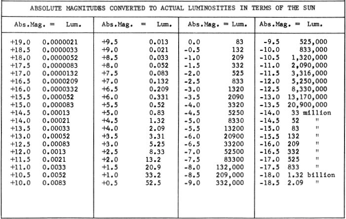
For an example, the star Rigel is magnitude 0.14 and it is about 900 light years away. If brought to a distance of only 32½ light years, its magnitude would rise to -7.1. Thus its apparent magnitude is 0.14, and its absolute magnitude is -7.1.
例如，恒星Rigel的星等为0.14，距离它约900光年。如果到仅32½光年的距离，其大小将升至-7.1。因此，其视在大小为0.14，其绝对大小为-7.1。
For another example, our Sun, if removed to the 32½ light year standard distance, would appear as a star of magnitude 4.8. This then is its absolute magnitude. The figure for Rigel, as we have just seen, is -7.1. The difference is 11.9 magnitudes, which tells us (Table III) that Rigel is about 57,000 times more luminous than the Sun.
再举一个例子，如果我们的太阳移到32½光年的标准距离，它将显示为4.8级的恒星。这就是它的绝对大小。正如我们刚刚看到的，Rigel的数字是-7.1。相差11.9个数量级，这告诉我们（表III），Rigel的发光强度是太阳的57,000倍。
This example is given to dramatize the obvious fact that there is a definite relation between the apparent magnitude, absolute magnitude, and distance of an object. If any two of these quantities are known, the third can be determined. Absolute magnitude can also be converted directly into actual luminosity in terms of the Sun. (Refer to Table V.)
给出该示例以戏剧化一个显而易见的事实，即物体的视在大小，绝对大小和距离之间存在确定的关系。如果已知这些量中的任何两个，则可以确定第三个。绝对量也可以直接转换为太阳的实际光度。（请参阅表V。）
Before ending this brief description of the magnitude system, we must mention one additional point: we have been speaking of “visual magnitudes,” star brightness as seen by the normal eye. Photographic plates and photoelectric instruments “see” the stars differently, and there are thus a variety of magnitude scales—photographic, photoelectric, bolometric, etc. The differences between the various measurements are chiefly a function of the color or temperature of the star; and thus the various scales are interrelated by quantities known as “color indices.” In its simplest and original meaning, the color index of a star is the difference between its visual magnitude and its photographic magnitude. The hotter and bluer stars appear brighter on the ordinary photographic plate than they do to the eye; whereas the redder and cooler stars appear fainter. By agreement, the two scales were set to give a color index of zero for stars of spectral type A0. A negative color index implies a hotter and bluer star, and a positive index indicates a cooler and redder one, as given in the brief table below:
在结束对量级系统的简要说明之前，我们必须提到另外一点：我们一直在谈论“视觉量级”，即正常眼睛所看到的恒星亮度。照相板和光电仪器以不同的方式“看”星星，因此存在各种大小的标度-摄影，光电，辐射热测量等。各种测量值之间的差异主要是星星的颜色或温度的函数。因此，各种比例尺之间通过称为“ 颜色指数 ”的数量相互关联从最简单和原始的意义上讲，恒星的颜色指数是其视觉大小与照片大小之间的差。在普通照相印版上，较热和较蓝的星星看起来比对眼睛更明亮；而较冷的恒星显得较暗。根据协议，将两个刻度设置为给出的颜色指数为对于光谱类型A0的恒星为零。负色指数表示较热和较蓝的星星，正指数表示较冷和较红的星星，如下表所示：

Color indices greater than two magnitudes are rare; the extremes are reached in the cases of the N-type red stars (S Cephei, R Leporis), where the color index exceeds five magnitudes. In reporting a color index, it is always necessary to specify whether it is “plus” or “minus.” It is well to adopt the same policy with regard to absolute magnitudes, even though a figure is understood to be “plus” unless it is actually labeled with a minus sign.
大于两个数量级的颜色指数很少见；如果N型红星（S Cephei，R Leporis）的颜色指数超过5个数量级，则达到极限。在报告颜色指数时，总是有必要指定它是“正”还是“负”。即使绝对值被理解为“正”，也要对绝对幅度采用相同的策略。实际上被标记为减号。
Throughout this “Celestial Handbook” all magnitudes given are visual, unless otherwise noted.
在本“基本手册”中，除非另有说明，否则给出的所有幅值都是可视的。
STAR NAMES AND DESIGNATIONS
明星名称和称号
STAR NAMES AND DESIGNATIONS. Most of the brighter stars in the sky have their own proper names which have been used since remote antiquity. We have already mentioned such examples as Vega, Aldebaran, Polaris, and Rigel. About thirty such names are in common use. It would be obviously impossible, however, to assign proper names to all of the 6000 naked-eye stars, not to mention the millions of others visible only through the telescope. A more practical system was devised by Bayer in 1603; he assigned each star in a constellation a letter of the Greek alphabet, beginning usually with Alpha for the brightest, Beta for the second brightest, Gamma for the third, and so on. In a few cases, however, as in the Great Dipper, order of position was used instead of order of brightness. The Greek letter was followed by the name of the constellation written in the possessive or “genitive” form. Thus the brightest star in Lyra became “Alpha Lyrae.” The second brightest star in Cepheus is designated “Beta Cephei.” It also has a proper name, Alfirk, but such names are rarely used for stars below the first magnitude.
明星名称和称号。自远古以来，天空中大多数明亮的恒星都有自己的专有名称。我们已经提到了Vega，Aldebaran，Polaris和Rigel等例子。大约有三十个这样的名字被普遍使用。但是，显然不可能为6000颗裸眼星全部赋予专有名称，更不用说仅通过望远镜才能看到的数百万其他恒星了。拜耳在1603年设计了一个更实用的系统。他为星座中的每个星星分配了一个希腊字母，通常以Alpha表示最亮，Beta表示第二亮，Gamma表示第三，依此类推。但是，在某些情况下，例如在北斗七星中，使用的是位置顺序而不是亮度顺序。希腊字母后跟以所有格或“属格”形式书写的星座名称。因此，天琴座中最亮的恒星变为“阿尔法天琴星”。仙王座中第二颗最亮的恒星被命名为“贝塔·塞费伊”。它也有一个适当的名字，Alfirk，但是这种名字很少用于第一星等以下的恒星。
Those interested in the lore of star names are referred to R. H. Allen’s classic work Star Names and Their Meanings, now available in a paperback reprint from Dover Publications, Inc., in New York.
那些对星名传说感兴趣的人可以参考RH Allen的经典著作《星名及其含义》，该书现已在Dover Publications的平装本中重印，公司，在纽约。
The entire Greek alphabet is given here for the beneifit of beginners who may be unfamiliar with Greek. To encourage those who may despair at the thought of learning such strange symbols, it should be stated here that no attempt to memorize the list is necessary. Any amateur who uses star charts and atlases will soon gain a knowledge of the letters without even trying.
这里给出了整个希腊字母，以表示可能对希腊语不熟悉的初学者的好处。为了鼓励那些可能对学习这种奇怪符号的想法感到绝望的人，这里应该指出，没有必要记住该列表。任何使用星形图表和地图集的业余爱好者都将很快获得对字母的了解，甚至无需尝试。
STAR NAMES AND DESIGNATIONS THE GREEK ALPHABET
明星名称和名称希腊字母
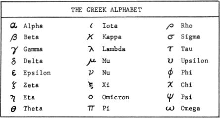
When gaining familiarity with the letters, remember that different star maps may show them in slightly different styles, just as no two persons make their English letters exactly the same. After a little experience, this should confuse no one.
熟悉字母时，请记住，不同的星图可能会以略有不同的样式显示它们，就像没有两个人的英文字母完全一样。经过一点经验，这应该不会使任何人感到困惑。
After the supply of Greek letters is exhausted, the remaining stars of a constellation are given ordinary numbers according to a system devised by Flamsteed. The numbering begins at the western border of a constellation and proceeds eastward. Thus we have such star designations as “61 Cygni,” “23 Orionis,” and “89 Virginis.” To find such stars, we must consult our charts of Cygnus, Orion, and Virgo and look for the small stars labeled 61, 23, and 89. Of course, if we have the celestial coordinates (RA and Dec) of these stars, we can locate them on the chart whether or not they are identified by number.
在用完希腊字母后，根据弗拉姆斯特德（Flamsteed）设计的系统，将星座的其余恒星赋予普通数字。编号从星座的西边界开始，向东进行。因此，我们有“ 61 Cygni”，“ 23 Orionis”和“ 89 Virginis”之类的星号。要找到此类恒星，我们必须查阅天鹅座，猎户座和处女座的图表，并寻找标有61、23的小恒星，和89。当然，如果我们具有这些恒星的天坐标（RA和Dec），则无论是否用数字标识它们，我们都可以在图表上找到它们。
The Greek letters and the Flamsteed numbers take care of most of the brighter stars of a constellation. Fainter objects are usually identified by their numbers in one of the standard catalogs used by professional astronomers. Examples are:
希腊字母和弗拉门德数字会照顾星座中大多数明亮的星星。微弱通常在专业天文学家使用的标准目录之一中，通过物体的编号来识别物体。例如：

The “HD,” “GC,” “BD,” and “CD” are comprehensive lists of thousands of stars by position, magnitude and (in the case of the first two) spectral type. These catalogs would be of very little use to the observing amateur and are mentioned here only because such numbers appear often in astronomical literature and appear occasionally in this book. The other five examples are lists of stars of special interest (doubles and stars of large proper motion) identified in each case by the astronomer who compiled the work. Although we may refer to these numbers from time to time in this Handbook, it is again evident that the catalogs themselves would be of very little use to the amateur observer; they are intended mainly as reference works for the professional astronomer.
“ HD”，“ GC”，“ BD”和“ CD”是按位置，大小和（在前两个情况下）光谱类型列出的数千颗恒星的综合列表。这些目录对于观察爱好者来说几乎没有用，在这里提到它们只是因为这样的数字经常出现在天文学中，而偶尔出现在这本书中。其他五个例子是清单，由天文学家将特别感兴趣的恒星（双子星和适当运动的恒星）列出来。尽管我们可能会在本手册中不时提及这些数字，但很显然目录本身对业余观察者几乎没有用处。它们主要是为专业天文学家提供参考。
For double and variable stars, additional systems of nomenclature are in common use. A faint double star may be designated by its number in one of the standard lists such as those of Aitken (ADS), Struve ( Σ or OΣ ), Dunlop (∆), Sir John Herschel (h), S. W. Burnham (β), T. E. Espin (Es), W. J. Hussey (Hu), etc. Hence we find stars marked h4848, Σ22051, ∆49, β328, etc.
对于双星和变星，通常使用附加的命名系统。在标准清单之一中，可能会用一颗昏暗的双星来指定其编号，例如Aitken（ADS），Struve（Σ或OΣ），Dunlop（∆），John Herschel爵士（h），SW Burnham（β）， TE Espin（Es），WJ Hussey（Hu）等。因此，我们找到了标记为h4848，Σ22051，∆49，β328 等的恒星。
A variable star is usually designated by a single or double Roman capital letter, such as R Virginis, T Ceti, VV Cephei, and SX Persei. This system allows 334 variable stars to be designated in any constellation; any further discoveries are designated V335, V336, etc. However, if a bright variable star already has a Greek letter designation, it is retained, and no additional designations are given.
可变星通常由一个或两个罗马大写字母指定，例如R Virginis，T Ceti，VV Cephei和SX Persei。该系统允许在任何星座中指定334个变星；任何进一步的发现都指定为V335，V336 等。但是，如果明亮的变星已经具有希腊字母标识，则将其保留下来，并且不再给出其他标识。
Novae are designated in the same manner as other variable stars, though frequently a bright nova will be referred to merely by the constellation and date—thus “Nova Persei 1901” and “Nova Aquilae 1918.” In the standard variable star catalogs these appear as “GK Persei” and “V603 Aquilae.” Both designations are in common use, and both are correct.
新星的命名方式与其他变星相同，尽管明亮的新星通常仅由星座和日期来指代-因此“新星1901”和“天鹰座1918”。在标准变星目录中，这些新星看起来像“ GK Persei”和“ V603 Aquilae”。这两个名称是常用的，并且都是正确的。
Star clusters, nebulae, and galaxies are generally designated by their numbers in the New General Catalogue (NGC) of John Dreyer, published in 1888 or in the older lists of Charles Messier (M) which date from the last half of the 18th Century. Thus we have such numbers as “NGC 6205” or “M13.” There is also a supplement to the NGC called the “Index Catalogue” (IC). Another system, devised by Sir William Herschel, is also in use. In his catalog we find such numbers as “HV 24” and “HIII 830.” The “H” stands for Herschel, of course. The “V” and “III” are Roman numerals indicating the class of object. On star atlases these numbers are shortened for practical reasons; the “H” is omitted, and the rest of the number is written in a contracted form: “245” and “8303”. Herschel numbers are little-used today except for their appearance in the standard Norton’s Atlas, and for this reason alone they are included in the lists in the present Handbook.
恒星团，星云和星系通常在1888年出版的约翰·德雷尔（John Dreyer）的新总目录（NGC）中或在18世纪后半叶的查尔斯·梅西耶（Ms）的较旧列表中按其编号指定。因此，我们有“ NGC 6205”或“ M13”之类的编号。NGC还有一个补充，称为“索引目录”（IC）。由William Herschel爵士设计的另一个系统也正在使用中。在他的目录中，我们可以找到“ HV 24”和“ HIII 830”这样的数字。“ H”当然代表赫歇尔。“ V”和“ III”是指示对象类别的罗马数字。在星图上，出于实际原因，这些数字会缩短；省略了“ H”，其余的数字则以缩写形式写成：“ 24 5 ”和“ 830 3””。除了在标准的诺顿地图集上出现外，赫歇尔编号现在很少使用，仅出于这个原因，它们已包含在本手册的列表中。
Herschel’s classification system is given here, though the modern observer must regard these classes with caution. They were based upon the visual appearance of the object in Herschel’ s telescopes and frequently tell us nothing about the true nature of the object. The distinction between true nebulae and external galaxies had not, of course, been made in Herschel’s time; and the great majority of his first five classes are now known to be external galaxies. Some of his class IV objects, “planetary nebulae,” are in fact external galaxies. The Herschel classes are:
这里给出了赫歇尔的分类系统，尽管现代观察者必须谨慎对待这些分类。它们是基于赫歇尔望远镜中物体的视觉外观，并且经常没有告诉我们有关物体真实性质的信息。当然，真正的星云与外部星系之间的区别并不是在赫歇尔时代做出的。现在，他前五堂课的绝大部分是外星系。他的某些IV类天体“行星状星云”实际上是外部星系。Herschel类是：
|
Practically all the brighter clusters, nebulae, and galaxies have NGC numbers, regardless of whatever other designations they may have. Thus NGC 1976 is also known as M42 and has a further popular name—the “Great Nebula in Orion.” The Messier (M) list contains 103 of the brighter objects (some modern lists add several more) and is a good reference for the beginner. Messier never had access to a large telescope, and all the “M” objects are fairly conspicuous in small instruments. The complete list, brought up to date with modern identifications, appears in the final “Index and Tables” section of this Handbook.
实际上，所有较亮的星团，星云和星系都具有NGC数，无论它们可能具有任何其他名称。因此NGC 1976也被称为M42，并有一个更受欢迎的名称-“猎户座大星云”。梅西耶（M）列表中包含103个明亮的物体（有些现代清单会添加更多），对于初学者来说是一个很好的参考。梅西耶从来没有使用过大型望远镜，并且所有“ M”物体在小型仪器中都非常明显。完整的列表，包括最新的现代标识，出现在本手册的最后“索引和表”部分。
THE SMALL TELESCOPE STAR ATLASES
小电视明星图集
THE USE AND CARE OF THE SMALL TELESCOPE is a topic not directly covered in this book. The author assumes that the typical user of this Handbook is the owner of a telescope in the 2-inch to 12-inch range, who has learned by direct experience (the best way!) how to use the instrument effectively. For those who wish advice in the matter of purchasing a good instrument, I recommend a new book by Dr. Henry E. Paul, Telescopes for Skygazing. And for those who need a comprehensive guide to observing techniques, covering all such practical matters as light grasp, resolution, vision, seeing effects, choice of oculars, accessories, etc., no better guide exists than the Amateur Astronomer’s Handbook by J. B. Sidgwick.
小电视的使用和维护是本书未直接涉及的主题。作者假定本手册的典型用户是2英寸至12英寸范围内的望远镜的所有者，他通过直接经验（最好的方法！）已学会了如何有效使用仪器。对于那些在购买优质仪器方面有意见的人，我推荐亨利·保罗博士（Henry E. Paul）撰写的新书，《天视望远镜》。对于需要全面的观测技术指南，涵盖所有实际问题的人，例如光的掌握，分辨率，视觉，观看效果，目镜的选择，配件等，没有比JB Sidgwick撰写的《业余天文学家手册》更好的指南了。
The vast majority of the objects listed in the Celestial Handbook can be studied in a good 6-inch reflector, probably the best telescope for a serious start in observing. But I would make one recommendation—whatever the size of the telescope, it should be used in conjunction with a good pair of 7x50 binoculars or other comparable low-power wide field instrument. Some observers, in fact, strongly advise that the beginner spend at least a few months exploring with binoculars, getting to know the sky, before graduating to the telescope. There is much to be said for this viewpoint. And, finally, for the enthusiast who wants the incomparable thrill of viewing the heavens through a telescope of his own making, I recommend A. J. Thompson’s Making Your Own Telescope.
可以使用6英寸好的反射镜研究《天体手册》中列出的绝大多数物体，这可能是认真观察的最佳望远镜。但我会提出一个建议-无论望远镜的大小如何，都应与一副好的7x50双筒望远镜或其他类似的低功率广角镜一起使用。实际上，一些观察者强烈建议初学者在毕业于望远镜之前用双筒望远镜至少花几个月的时间来了解天空。对于这个观点有很多要说的。最后，对于那些希望通过自己的望远镜观察无与伦比的快感的发烧友，我建议AJ Thompson 制作自己的望远镜。
STAR ATLASES
星图
USING A STAR ATLAS. Earlier in this chapter we mentioned the use of the planisphere or simple star charts for the purpose of learning the constellations. For the location of many of the specific objects of interest within each constellation, however, we require more detailed charts drawn on a larger scale, naming and identifying various objects of interest. A collection of such charts is called a “star atlas” and is an absolute necessity for the serious observer. Possibly the best star atlas for the average amateur, and even for the beginner, is Norton’s, available from most dealers in scientific and astronomical books. Eight double page maps cover the entire celestial sphere, showing all the naked-eye stars, hundreds of star clusters, nebulae, variable stars, and other objects of interest. Some 60 pages of compact information-packed notes precede the charts, making this one of the most useful reference books the amateur can own. Norton’s Atlas measures 11” by 8½”. The current price of the 16th edition is $12.50.
使用星图。在本章的前面，我们提到了使用平流层或简单星图来学习星座的目的。但是，对于每个星座中许多特定感兴趣对象的位置，我们需要以更大的比例绘制更详细的图表，以命名和标识各种感兴趣的对象。这样的图表的集合称为“星图集”，对于认真的观察者来说是绝对必要的。对于大多数业余爱好者，甚至对于初学者来说，最好的星图集都是诺顿的，这可以从大多数经销商那里买到。八个双页地图覆盖了整个天球，显示了所有裸眼星，数百个星团，星云，变星和其他感兴趣的物体。排在图表前的大约60页紧凑的信息笔记，使其成为业余爱好者可以拥有的最有用的参考书之一。诺顿地图集的尺寸为11英寸乘8½英寸。第16版的当前价格为12.50美元。
On an even larger scale is the new Skalnate Pleso Atlas of the Heavens compiled by Antonin Becvar and his associates at the Skalnate Pleso (Rocky Lake) Observatory in Czechoslovakia. This work is the most complete atlas available for all-purpose observing and may be ordered from the Sky Publishing Corporation, Cambridge, Massachusetts. It is a set of 16 charts, each measuring 22” by 16”, bound in the form of a large portfolio-size book and covering the entire heavens down to magnitude 7.75. Double stars, variables, clusters, nebulae, and galaxies are all identified by appropriate symbols printed in various colors. Star clusters are shown in yellow, diffuse nebulae in green, the Milky Way in blue, dark nebulae in grey, and galaxies in red. The Skalnate Pleso Atlas has recently been re-issued in a revised edition in a more compact format, and in 1976 was being offered at $14.00. A simpler “field edition” with stars in white on a black background, and on a somewhat reduced scale is also available at $5.00.
全新的Skalnate Pleso天上图集甚至更大由Antonin Becvar及其同事在捷克斯洛伐克的Skalnate Pleso（洛基湖）天文台汇编。这项工作是可用于全方位观测的最完整的地图集，可以从马萨诸塞州剑桥的天空出版公司订购。它由16张图表组成，每张图表的尺寸为22英寸乘16英寸，以一本大型投资组合书的形式装订，覆盖了整个天堂，下降到7.75级。双星，变星，星团，星云和星系都由以各种颜色印刷的适当符号来标识。星团显示为黄色，弥漫性星云显示为绿色，银河系显示为蓝色，暗星云显示为灰色，星系显示为红色。Skalnate Pleso Atlas最近以更紧凑的格式重新发行，并于1976年以$ 14.00的价格出售。
The present Celestial Handbook is intended for use with either Norton’s or the Skalnate Pleso Atlas, and the serious observer would do well to have both of them.
本《天体手册》旨在与Norton或Skalnate Pleso Atlas一起使用，认真的观察者最好同时使用它们。
********************
********************
The preceding sections of this chapter have been focused on the theme “Gaining a Working Knowledge of the Heavens.” We now turn to the celestial objects themselves, briefly reviewing some of the standard terms, definitions, and symbols used.
本章的前面各节着重于“获取天工知识”这一主题。我们现在转向天体本身，简要回顾一下所用的一些标准术语，定义和符号。
THE STARS are other Suns, located at immense distances, and existing in a wide variety of types and sizes. The Sun itself is so “typical” a star that it may be used as a standard by which to compare the others. Thus, in this book, the masses, diameters, luminosities, and densities of the stars are given in terms of the Sun; for typical examples of this usage, refer to the descriptions of such objects as Eta Cassiopeiae, Xi Bootis, 61 Cygni, etc. The astronomical symbol for the Sun is .
星星是距离很远的其他太阳，并且存在各种类型和大小。太阳本身是如此“典型”的一颗恒星，以至于可以用作比较其他恒星的标准。因此，在本书中，恒星的质量，直径，光度和密度是根据太阳给出的。有关此用法的典型示例，请参阅诸如Eta Cassiopeiae，Xi Bootis，61 Cygni 等对象的描述。太阳的天文符号是。
THE SPECTROSCOPE
光谱仪
SPECTRAL CLASSES
光谱类别
THE SPECTRAL CLASSES of the stars are mentioned constantly throughout this book, requiring even the most casual observer to have some understanding of their meaning. The spectroscope is an instrument which analyzes light. The ultimate nature of light may remain one of nature’s mysteries; but as a useful analogy we may imagine that a light beam consists of a series of wave-like “ripples” moving outward at tremendous velocity from the light source, much as the ripples on a pond spread out when a stone is dropped into the water. The color of the light is a function of the crest-to-crest distance or “wavelength” of these ripples, calibrated in “angstrom units” of one ten-millionth of a millimeter and identified by the symbol (λ) preceding the number. The longest visible wavelengths (about λ7600) produce the sensation of red, and the shortest (about λ3900) produce the sensation of violet. All the other visible colors lie between these two extremes.
在本书中不断提到星星的光谱类别，即使是最随意的观察者也需要对它们的含义有所了解。的分光镜是其分析光的仪器。光的终极本质可能仍然是自然的奥秘之一。但是作为一个有用的类比，我们可以想象光束由一系列波浪状的“波纹”组成，它们从光源以极快的速度向外移动，就像当石头掉入水中时池塘上的涟漪散开一样。光的颜色是这些波纹的波峰到波峰距离或“ 波长 ”的函数，以“ 埃”单位校准十分之一毫米的英寸”，并由数字前面的符号（λ）标识。最长的可见波长（约λ7600）产生红色的感觉，而最短的（约λ3900）产生紫色的感觉。所有其他可见颜色都位于这两个极端之间。
TYPES OF SPECTRA
光谱类型
The spectroscope analyzes light by sorting out all the wavelengths from longest to shortest and presenting them in systematic order in the form of a long, colored band called a “spectrum” which may be seen visually or be photographed. The most familiar example of a natural spectrum is the rainbow. In this case, the “dispersion” or spreading out of the light is accomplished by water droplets in the atmosphere, each acting as a tiny prism. In the spectroscope, the light is passed first through a fine, narrow slit, generally less than 1/500 inch in width, and then through a prism or series of prisms. In some models, a “diffraction grating” may take the place of a prism. The resulting spectrum may be directed into an eye-lens for actual viewing or projected onto a photographic plate. Professional spectroscopes are often equipped with a calibrated scale so that the wavelength of any spectral feature may be determined; in astronomical photography of spectra the calibration is obtained by photographing a “comparison spectrum” from an artificial light source on the same plate.
分光镜通过分出从最长到最短的所有波长，并以系统化的顺序将它们呈现为彩色长带（称为“ 光谱 ”），以可见或照相的方式对它们进行分析，从而对光进行分析。自然光谱最熟悉的例子是彩虹。在这种情况下，“ 分散或散发出来的光是由大气中的水滴完成的，每个水滴都充当一个微小的棱镜。在分光镜中，光首先通过宽度通常小于1/500英寸的细而窄的狭缝，然后再通过一个棱镜或一系列棱镜。在某些模型中，“衍射光栅”可以代替棱镜。所得光谱可以直接进入目镜以进行实际观察，也可以投影到照相板上。专业光谱仪通常配备有校准标尺，以便可以确定任何光谱特征的波长。在光谱的天文摄影中，通过在同一块板上拍摄来自人造光源的“比较光谱”来获得校准。
STELLAR SPECTRAL CLASSES
立体光谱类
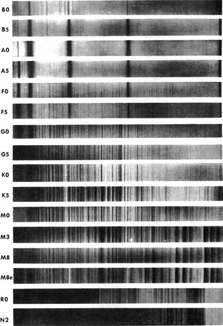
SPECRA OF SOME PROMINENT STARS
一些著名恒星的光谱
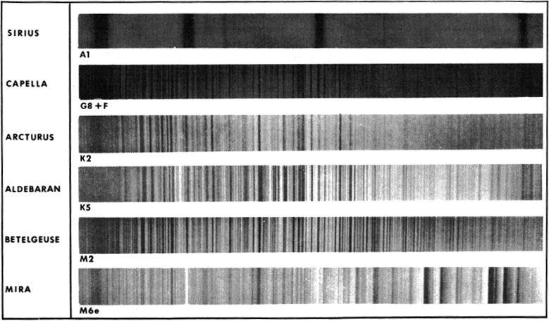
Since the colors of the spectrum are arranged according to wavelength, they always appear in the same order, with red at one end and violet at the other. Beyond both ends of the visible spectrum are other wavelengths — infrared and ultraviolet—which cannot be seen by the eye, but which may be recorded with special photographic equipment and also with certain photoelectric devices.
由于光谱的颜色是根据波长排列的，因此它们始终以相同的顺序出现，一端为红色，另一端为紫色。可见光谱的两端之外还有其他波长（红外线和紫外线），这些波长是肉眼无法看到的，但可以用特殊的照相设备以及某些光电设备记录下来。
There are three basic types of spectra:
光谱有三种基本类型：
1. A glowing solid, liquid, or gas under high pressure emits the full range of all wavelengths, producing a complete band of color. This is a “continuous spectrum.” An ordinary electric light shows a spectrum of this type since the light source is an incandescent solid.
1。高压下发光的固体，液体或气体会发出所有波长的整个范围，从而产生完整的色带。这是“ 连续光谱 ”。普通光源显示的是这种光谱，因为光源是白炽灯固体。
2. A glowing gas under low pressure radiates only in certain frequencies, producing an “emission spectrum,” a pattern of bright lines at certain definite positions in the spectrum. The reason for this is found in the actual structure of each type of atom; thus the pattern of lines produced by each element or compound is as unique as a fingerprint and positively identifies the type of atom which is emitting the light. Some elements have a very simple pattern consisting of a few lines, while others produce patterns containing many dozens of lines.
2。低压下的发光气体仅以某些频率辐射，从而产生“ 发射光谱 ”，即光谱中某些确定位置的亮线图案。在每种原子的实际结构中都可以找到原因。因此，由每种元素或化合物产生的线条图样与指纹一样独特，并且可以肯定地标识出发光的原子类型。一些元素具有由几行组成的非常简单的模式，而其他元素产生的包含数十行的模式。
3. A rarified gas, when at a lower temperature than the light source, absorbs the same frequencies which it would emit if it were hot and glowing. Thus when light passes through such gas, various wavelengths are absorbed and appear as dark lines or bands in the spectrum. This is called an “absorption spectrum.”
3。当稀有气体的温度低于光源的温度时，它吸收的热量与发光和发光时的发射频率相同。因此，当光通过这种气体时，各种波长被吸收并在光谱中显示为暗线或暗带。这称为“ 吸收光谱”。
A typical star spectrum is of this third type, because the dense glowing mass of the star produces a continuous spectrum, but various wavelengths are absorbed by the thinner gases of the star’s atmosphere. The spectrum of our nearest star—the Sun—contains thousands of dark lines, and in this way most of the elements known on Earth have been identified in the Sun. The Sun is not, however, one of the hottest stars or one of the coolest; it is a rather average type called “class G2” by the astronomers. Stars can be arranged in various classes by their spectral characteristics, and this classification system is the central subject of this discussion.
典型的恒星光谱属于第三种类型，因为恒星的密集发光物质会产生连续光谱，但是各种波长被恒星大气中的稀薄气体吸收。我们最近的恒星-太阳的光谱包含数千条暗线，这样，地球上已知的大多数元素都已在太阳中被识别出。但是，太阳并不是最热的恒星之一或最凉的恒星之一。它是一种相当普通的类型，被天文学家称为“ G2类”。恒星可以根据其光谱特征按各种类别排列，而这种分类系统是本次讨论的主题。
|
|
|
|
|
|
|
|
|
|
|
|
The vast majority of stellar types may be arranged in a logical sequence, each spectral class gradually merging into the next. The chief classes now recognized are identified by the letters 0, B, A, F, G, K, and M. Each class contains ten subdivisions numbered from 0 to 9. Thus a “B5” star is approximately midway between B0 and A0. The classes define a temperature sequence—or color sequence—which amounts to the same thing. Stars of type 0 and B are blue-white; A stars are white; F and G stars are yellowish; K stars are orange, and M stars are red. Three additional classes, R, N, and S, are used for stars which resemble type M but show certain spectral differences, as described in the short summary on the opposite page. Stars of type N are the reddest known.
绝大多数恒星类型可以按逻辑顺序排列，每个光谱类别逐渐合并到下一个。现在识别出的主要类别由字母0，B，A，F，G，K和M标识。每个类别包含从0到9编号的十个细分。因此，“ B5”星大约位于B0和A0之间。这些类定义了温度序列（或颜色序列），它们的含义相同。类型0和B的星星是蓝白色的。星星是白色的；F星和G星微黄；K星为橙色，M星为红色。如对页简短摘要中所述，三个额外的类别R，N和S用于类似于M型但显示出某些光谱差异的恒星。N型恒星是最红的恒星。
Prefixes and suffixes are often used to further define the status of a star. Some typical examples are:
前缀和后缀通常用于进一步定义星星的状态。一些典型的例子是：
|
As we study the spectral series from type 0 to type M, we find a gradual increase in the number and complexity of the spectral lines and bands, the cooler stars showing by far the richest spectra. This does not necessarily imply any fundamental difference in chemical composition, but is largely the effect of temperature. In the cool N-type stars, for example, we find rich banded spectra produced by carbon compounds in the atmosphere of the star; these would be destroyed by significantly higher temperatures. The spectral features depend not only upon the elements present, but also upon the temperature. Thus the interpretation of stellar spectra is a complex study, and many stars display spectral peculiarities which still defy explanation.
当我们研究从0型到M型的光谱系列时，我们发现光谱线和谱带的数量和复杂性逐渐增加，较冷的恒星显示出最丰富的光谱。这不一定意味着化学成分有任何根本性的差异，而在很大程度上是温度的影响。例如，在凉爽的N型恒星中，我们发现恒星大气中碳化合物产生的带状光谱很丰富。这些将被明显更高的温度所破坏。光谱特征不仅取决于存在的元素，而且取决于温度。因此，对恒星光谱的解释是一项复杂的研究，许多恒星显示出光谱特征，这仍然无法解释。
The terms “early” and “late” are often used in referring to spectral classes; 0 and B stars are “early” types, and M stars are “late” types. The terms simply refer to the position of the class in the standard sequence of letters O-B-A-F-G-K-M and have no connection with the star’s evolution or history.
术语“较早”和“较晚”通常用于指代光谱类别。0星和B星是“早期”类型，M星是“晚期”类型。这些术语仅指该类在字母OBAFGKM的标准序列中的位置，与恒星的演化或历史无关。
The “Doppler Effect” is the displacement of the whole pattern of spectral lines due to the motion of the star (or of the observer). If a star is approaching, the lines are shifted toward the violet; if it is receding, they are shifted toward the red. The amount of displacement may be converted to actual velocities in miles per second in the line of sight, a measurement known as the star’s “radial velocity.” The term “red-shift” has gained great fame in astronomical literature since it is a phenomenon displayed by all the external galaxies, with the exception of the very nearest ones. This “cosmological red-shift,” interpreted as a Doppler effect, seems to indicate that the entire Universe is expanding.
“多普勒效应”是由于恒星（或观察者）的运动引起的光谱线整个图案的位移。如果有恒星接近，则线条会朝紫色方向移动；如果后退，它们会向红色移动。位移量可以转换为视线中以每秒英里数为单位的实际速度，该测量称为星的“ 径向速度”。“红移”一词在天文学中已广为人知，因为它是一种现象由所有外部星系显示，最接近的星系除外。这种被认为是多普勒效应的“宇宙学红移”似乎表明整个宇宙正在扩展。
The Doppler principle may be used also in detecting and measuring stellar rotation and in detecting orbiting double stars which are too close to be separately seen by any telescope.
多普勒原理还可用于探测和测量恒星旋转，以及探测轨道太近的双星，它们太近而无法被任何望远镜分开看到。
STAR MOTIONS, TEMPERATURES
星星运动，温度
STAR MOTIONS. In addition to radial velocity, astronomers deal with several other varieties of star motion. The “proper motion” is the actual displacement of a star over a period of time, compared to the background of extremely distant objects which can be regarded as fixed in position. For example, in comparing photographs made just one year apart, we find that the star Omicron Eridani is changing its position by more than 4” per year. This is a direct indication that the star is relatively close. The greatest known proper motion is shown by Barnard’s Star in Ophiuchus, which is moving about 10.29” per year.
明星动作。除径向速度外，天文学家还处理其他几种星运动。“ 正常运动 ”是恒星在一段时间内的实际位移，与被视为固定位置的极远天体的背景相比。例如，在比较仅隔一年拍摄的照片时，我们发现Omicron Eridani明星每年的位置变化超过4英寸。这直接表明恒星相对较近。已知最大的适当运动是由Ophiuchus的Barnard's Star所显示，它每年运动约10.29英寸。
Once the distance is known, the proper motion may be converted to actual speed in miles per second across the line of sight; this figure is called the “tangential velocity.” Finally, if both the radial and tangential velocities are known, the true “space velocity” is easily computed from simple geometrical principles.
一旦知道了距离，就可以将适当的运动转换为视线中以英里/秒为单位的实际速度；该图称为“ 切向速度”。最后，如果同时知道径向和切向速度，则可以根据简单的几何原理轻松计算出真正的“ 空速 ”。
TEMPERATURES in astronomy are usually given on the absolute or “Kelvin” scale; the divisions in degrees are equal to those of the more familiar Centigrade scale, but the starting point is much lower, in fact, at absolute zero. Thus 0°K = -273°C, the temperature at which all molecular motion theoretically ceases. Similarly, 100°C, the boiling point of water, is 373°K. In dealing with very great temperatures such as those found on stars, the two scales may be regarded as virtually identical. In any case, no conversion table is required since the difference is always exactly 273 degrees.
天文学的温度通常以绝对或“开尔文”标度给出。度的分度等于那些比较熟悉的百分制等级，但起点要低得多，实际上是绝对零。因此，0°K = -273°C，即所有分子运动在理论上停止的温度。同样，水的沸点100℃为373K。在处理非常高的温度（例如在恒星上发现的温度）时，这两个比例实际上可以认为是相同的。在任何情况下，都不需要转换表，因为差异始终恰好是273度。
THE H-R DIAGRAM
人力资源图
THE H-R DIAGRAM or color-magnitude diagram is a graph upon which stars are plotted by spectral type and actual luminosity. It is named for the two scientists Russell and Hertzsprung who first used it in 1913 in one of the early attempts to arrange the many types of stars into a meaningful system. A typical H-R Diagram is shown on the following page. The vertical coordinate represents absolute magnitude or actual luminosity in terms of the Sun, with the most luminous stars near the top and the faintest near the bottom. The horizontal coordinate represents color, temperature, or spectral type, all of which are naturally interrelated. The hottest stars are at the left, and the coolest toward the right.
HR图或色度图是根据光谱类型和实际光度绘制星图的图形。它以两位科学家Russell和Hertzsprung的名字命名，他们在1913年首次使用它，这是将多种类型的恒星排列成有意义的系统的早期尝试之一。下一页上显示了典型的HR图。垂直坐标表示相对于太阳的绝对大小或实际光度，其中发光最多的恒星位于顶部，而最暗的恒星位于底部。水平坐标表示颜色，温度或光谱类型，所有这些自然相关。最热的恒星在左边，最冷的恒星在右边。
The stars plotted on this diagram represent a fairly typical selection of the various stellar types. They include the majority of the stars within a few hundred light years for which the necessary information has been obtained. The most evident fact is that the plotted points are not distributed randomly over the graph, but appear to be restricted to certain definite areas. The main feature is a long band running across the graph from upper left to lower right, demonstrating the existence of a large “family” of stars which range from blue, hot, and bright, down to red, cool, and faint. This band is called the “Main Sequence” and includes all the stars which are operating primarily on the hydrogen-to-helium nuclear reaction. Thus the position of a Main Sequence star depends upon its mass, the more massive stars being naturally hotter and more luminous. Stars in the upper left portion of the graph are thus rather massive objects, in some cases ranging up to 60 or more solar masses. In contrast, any star which falls near the lower right end of the Main Sequence is probably an extreme lightweight among stars, containing less than 10 percent the mass of the Sun.
在该图上绘制的恒星代表各种恒星类型的相当典型的选择。它们包括几百个光年之内的大多数恒星，这些恒星已经获得了必要的信息。最明显的事实是，绘制的点并非在图形上随机分布，而是似乎仅限于某些确定区域。主要特征是一条长带从左上角到右下角贯穿整个图形，这表明存在着一个大的“星系”星，范围从蓝色，高温，明亮，红色，低温和微弱不等。该频段称为“ 主音序””，并包括所有主要在氢氦原子核反应中运行的恒星。因此，主序列恒星的位置取决于其质量，质量更大的恒星自然会更热，更发光。因此，图左上方的星星是相当大的物体，在某些情况下，其范围高达60个或更多的太阳质量。相比之下，落在主序列右下角附近的任何恒星可能都是恒星中极轻量的，其质量不到太阳的10％。

The HERTZSPRUNG-RUSSELL DIAGRAM. This color-magnitude graph shows the various types of stars which exist within a few hundred light years of the Sun. (For explanation, refer to the text.)
HERTZSPRUNG-RUSSELL图。该色度图显示了在太阳几百光年内存在的各种类型的恒星。（有关说明，请参阅本文。）
In addition to the normal main sequence stars, we find a few other concentrations of star points at other locations on the H-R Diagram. Across the top is a thin scattering of points representing the extreme supergiants which may attain luminosities of over 50,000 suns. Near the upper right corner are a number of stars which are red and cool, but still have very high luminosities and must therefore have very great actual dimensions. These are the “red giants” which may often be 300 or 400 times the size of our Sun. Finally, in the lower left portion of the graph we find a few peculiar objects which have rather high temperatures but very low luminosities; these are the shrunken “white dwarfs” or “degenerate stars” which have contracted to a state of incredible density, evidently after exhausting their nuclear “fuel” supplies. In addition to these major groups, there are a few stars which fall somewhat above the main sequence and are known as “subgiants,” while a few stars falling somewhat below the main sequence are termed “subdwarfs.”
除了正常的主序列恒星外，我们还在HR图的其他位置发现了一些其他的恒星点浓度。横跨顶部的是代表超级超级巨星的点的稀疏散射，它们可能获得超过50,000个太阳的光度。右上角附近有许多红色和凉爽的恒星，但仍然具有很高的发光度，因此必须具有很大的实际尺寸。这些是“ 红色巨人 ”，它们通常是我们太阳大小的300或400倍。最后，在该图的左下部分，我们找到了一些奇特的物体，它们的温度都很高，但是光度却很低。这些是缩小的“ 白矮星”””或“退化的恒星”，显然已经耗尽了核“燃料”供应，但已收缩到令人难以置信的密度。除了这些主要类别外，还有一些星落在主序列上方，被称为“ 亚子 ”，而有些星落在主序列以下，则被称为“亚矮星” 。
Since the spectral type alone does not fully define the status of a star, astronomers often use “MK luminosity classes” (defined by W. Morgan and P. Keenan) in the form of Roman numerals which may be appended to the spectral type. The classes are:
由于仅光谱类型不能完全定义恒星的状态，因此天文学家经常使用罗马数字形式的“ MK光度等级”（由W. Morgan和P. Keenan定义），该数字可以附加在光谱类型之后。这些类是：
|
With this system, the full classification of Betelgeuse would be “M2 Ia,” and that of the Sun would be “G2 V.” Betelgeuse is an extreme sort of red supergiant, not only vastly larger and more brilliant than our Sun; but also, apparently, operating on a different nuclear energy source. Such differences raise many questions about the life histories of the stars and the evolutionary paths they follow. In the article on Betelgeuse (Alpha Orionis) in this Handbook, the general outline of red-giant evolution is presented. For a further discussion of the use of H-R diagrams in the study of stellar evolution, the reader is referred to the article on the star cluster M13 in Hercules.
使用此系统，Betelgeuse的完整分类将为“ M2 Ia”，而太阳的完整分类将为“ G2 V”。Betelgeuse是一种极端的红色超级巨人，不仅比我们的太阳大得多，而且更辉煌。但显然也使用不同的核能源。这种差异引发了有关恒星的生命历史及其遵循的进化路径的许多问题。在本手册中有关槟榔（Alpha Orionis）的文章中，介绍了红色巨人进化的一般概述。有关在恒星演化研究中使用HR图的进一步讨论，请读者参阅有关大力神星系M13的文章。
DOUBLE STARS
双星
DOUBLE STARS appear to the unaided eye as single stars, except in the case of unusually wide pairs, but through the telescope may be “split” or resolved into two or more components. If the two stars are known to be actually near each other in space and bound together by gravitational attraction, they are called “physical” doubles. When actual orbital motion has been detected, these are termed “binaries.” On the other hand, some apparent doubles are known to be due to the chance alignment of two totally unrelated stars, one being far beyond the other; these are called “optical” doubles.
双星出现肉眼作为单个分，除了在非常宽的对的情况下，但通过望远镜可“分裂”或拆分成两个或更多个组件。如果已知这两个恒星实际上在空间中彼此靠近，并通过引力吸引而束缚在一起，则它们被称为“ 物理 ”双星。当检测到实际的轨道运动时，这些被称为“ 双星”。另一方面，已知一些明显的双星是由于两颗完全不相关的恒星的偶然对准而引起的，一颗恒星远于另一颗恒星。这些被称为“ 光学 ”双打。
The apparent separation of a double at any time is measured in seconds of arc. The apparent orientation of the pair is defined by the “position angle” (PA), always measured from the bright star toward the fainter. Due north is a PA of 0°; due east is 90°, etc. In the case of a binary system, the motion of the companion is said to be direct when the PA is increasing and retrograde when it is decreasing. Periastron is the point in the true orbit where the actual separation between the stars is at a minimum. The semi-major axis is one-half the distance across the longest dimension of the true orbit; it may also be defined as the mean separation of the two stars. It is usually given in seconds of arc, but may be converted directly into an actual separation in miles or astronomical units (Table II) once the distance of the star is known. In the binary stars we are given our only opportunity of the direct determination of stellar masses. By Newton’s laws, there is a direct relationship between the separation, period, and the total mass of a binary pair; when any two of these quantities are known, the third may be computed.
在任何时间，双倍的视在间距均以弧秒为单位。视线对的视向由“ 位置角 ”（PA）定义，始终从亮星向微弱的方向测量。正北是0°的PA；由于向东是90°，依此类推。在双星系统中，当PA增大时，伴星的运动被认为是直接的，而当PA 减小时，伴星的运动则被认为是逆行。Periastron是真实轨道中恒星之间实际间隔最小的点。该半长轴是真实轨道最长尺寸的一半距离；它也可以定义为两颗星的平均间隔。通常以弧度秒为单位给出，但是一旦知道了恒星的距离，就可以直接转换为以英里或天文单位表示的实际间隔（表II）。在双星中，我们获得了直接确定恒星质量的唯一机会。根据牛顿定律，二元对的间隔，周期和总质量之间存在直接关系；当这些量中的任何两个已知时，可以计算第三个。
In the case of spectroscopic binaries, the duplicity is revealed by the spectroscope, although the two stars may be too close to be resolved by any telescope. The term “astrometric binary” designates a system where an unseen companion is detected through periodic deviations in the motion of a visible star.
在分光镜双星的情况下，分光镜是由分光镜揭示的，尽管两颗恒星可能太靠近而无法被任何望远镜分辨。术语“ 天文二进制 ”表示一种系统，通过该系统中的周期性偏差可以检测到看不见的同伴。可见恒星的运动。
STAR DISTANCES
星星距离
STAR DISTANCES may be determined by direct trigonometrical measurements only in the case of fairly near stars. As the Earth revolves around the Sun, the nearer stars show a small yearly shift against the background of more distant stars. The radius of the Earth’s orbit (one astronomical unit) is the base-line used in measuring the amount of this shift, termed the star’s “parallax,” A distance unit often used by professional astronomers is the “parsec,” the distance of an object having a parallax of 1 or, to phrase it another way, the distance at which one AU would subtend an angle of 1”. The parsec is equivalent to 3.26 light years. It is a convenient unit to use, since the distance in parsees is merely the reciprocal of the parallax. However, the light year seems firmly entrenched in popular astronomical literature and is used throughout this book. A short conversion table for the standard distance units is given below:
STAR的距离可以通过直接测量三角仅在较近恒星的情况来决定。当地球绕太阳公转时，较近的恒星在更远的恒星背景下显示出很小的年度变化。地球轨道（一个天文单位）的半径是在测量该偏移量所使用的碱线，称为星形的“ 视差 ”，经常使用由专业天文学家的距离单位是“ 秒差距，是指视差为1的物体的距离，或者换句话说，一个AU对向于1”的角度的距离。秒差距等于3.26光年。它是一个方便使用的单位，因为视点之间的距离仅仅是视差的倒数。但是，光年似乎已在流行的天文学中根深蒂固，并在整本书中使用。以下是标准距离单位的简短换算表：
|
There is, of course, no star as near as one parsec. The nearest star, the triple system of Alpha Centauri, is 1.33 parsecs or 4.3 light years distant and shows a parallax of about 0.75”. Distances less than about 30 light years may be determined with good accuracy by the direct parallax method and with fair reliability out to about 100 light years. At 300 light years, the probable error of the measurement nearly equals the size of the parallax; and at greater distances the method becomes virtually useless. More indirect methods must then be used. The distance of very remote objects may be determined if, in some way, their actual luminosities can be learned. The comparison of the apparent and absolute magnitudes (the distance modulus) then gives the distance. This is the “spectroscopic parallax” method, in which the intrinsic luminosity of the star is determined from various spectroscopic features. For extremely remote objects, various stars of known high luminosity may be used as distance indicators, supergiant stars, novae, etc. Finally, there are the remarkable pulsating variable stars called “cepheids” whose periods are proportional to their luminosities; these are often called the “measuring sticks of the Universe.” The principle of distance calculation by the cepheid rule seems direct and straightforward, but in practice matters are complicated by the presence of light-absorbing material in interstellar space. Objects thus seem fainter than they are, and distances are overestimated. This effect must be allowed for in any attempt to measure distances based upon apparent and absolute magnitudes. It is not surprising that the distances of many celestial objects are very roughly known and that modern catalogs still contain numerous discrepancies. (For a summary of the cepheid method of distance determination, refer to the article on Delta Cephei.)
当然，没有一颗恒星比一秒差距大。最近的恒星，即半人马座星的三重系统，相距1.33秒差距或4.3光年，并显示约0.75英寸的视差。小于约30光年的距离可以通过直接视差方法以较高的精度确定，并且可以可靠地确定到约100光年的距离。在300光年时，测量的可能误差几乎等于视差的大小；距离越远，该方法实际上就变得无用了。然后必须使用更多的间接方法。如果可以某种方式获知它们的实际发光度，则可以确定非常遥远的物体的距离。比较然后，视在和绝对量值（距离模量）的乘积即为距离。这是“ 光谱视差 ”方法，其中根据各种光谱特征确定恒星的固有光度。对于极端遥远的物体，可以使用已知高亮度的各种恒星作为距离指示器，超大恒星，新星等。最后，有称为“造父变星”的引人注目的脉动变星，其周期与它们的光度成正比。这些通常被称为“宇宙的量尺”。通过造父变星规则进行距离计算的原理似乎直接而直接，但实际上，星际空间中存在光吸收材料会使事情变得复杂。因此，物体看起来比它们更暗，距离被高估了。任何试图基于视在和绝对大小来测量距离的尝试都必须考虑到这种影响。毫不奇怪的是，许多天体的距离是众所周知的，现代目录仍然包含许多差异。（有关距离测量法的造父变星方法的摘要，请参阅德尔塔·塞菲（Delta Cephei）上的文章。）
VARIABLE STARS
变星
VARIABLE STARS are stars which change in brightness, either periodically, irregularly, or explosively. The simplest way to illustrate the typical behavior of any specific example is to plot the magnitude (vertical scale) against the time (horizontal scale) on a graph which is then known as a “light curve.” Numerous examples will be found throughout this book. Known periods of variable stars range from a few hours up to a number of years. The light variations range from a tiny fraction of a magnitude up to 9 or 10 magnitudes in some extreme cases. The novae, of course, may exceed even these limits.
易变星是亮度周期性或不规则或爆炸性变化的星。举例说明任何特定示例的典型行为的最简单方法是在图表上绘制幅度（垂直比例）与时间（水平比例）的关系，然后将其称为“ 光曲线”。本书中将找到许多示例。 。已知的变星周期从数小时到数年不等。在某些极端情况下，光的变化范围从很小的一个量级到9或10个量级。当然，新星甚至可能超过这些限制。
There are many different types of variable stars, but it is possible to group them into three broad classes: (1) Pulsating variables, (2) Eruptive or cataclysmic variables, (3) Eclipsing variables. The various sub-types will now be briefly reviewed.
有许多不同类型的变星，但可以将它们分为三大类：（1）脉动变星，（2）爆发或催化变星，（3）渐进变星。现在将简要回顾各种子类型。
TYPES OF VARIABLE STARS
变星的类型
(1) PULSATING VARIABLES are stars which appear to be periodically oscillating, expanding and contracting. The chief types are:
（1）脉动变量是似乎周期性地振荡，膨胀和收缩的恒星。主要类型为：
Cepheids—very luminous giants, periods from one to fifty days or so, but usually about one week. Light range up to two magnitudes. Spectral types F, G, and K. These stars show clockwork precision in their pulsations and also display the noted ‘‘period-luminosity relation” which makes them valuable as distance indicators. Typical examples are Delta Cephei, Eta Aquilae, RT Aurigae.
造父变星-非常发光的巨人，周期从1到50天左右，但通常大约一周。光照范围可达两个量级。光谱类型为F，G和K。这些恒星在其脉动中显示出发条的精确度，并且还显示出著名的“周期-光度关系”，这使其很有价值。典型的例子是Delta Cephei，Eta Aquilae，RT Aurigae。
Long-period Variables—pulsating red giant stars with periods from about 75 days up to two years or more. The average light range is five or six magnitudes. Spectral class usually M, sometimes R, N, or S. Typical examples are Omicron Ceti, Chi Cygni, R Leonis, R Hydrae. Periods do not show the absolute precision of the cepheids, but may vary by a number of days.(indicated by abbreviation LPV in the lists in this book).
长周期变量-脉冲红巨星，周期约75天到两年或更长时间。平均光范围是五或六个量级。光谱类别通常为M，有时为R，N或S。典型示例为Omicron Ceti，Chi Cygni，R Leonis和R Hydrae。句号没有显示出造父变星的绝对精度，但是可能会变化几天（以本书列表中的缩写LPV表示）。
Semi-regular Variables—mostly red giant stars with periods often poorly defined; subject to unpredictable variations. Typical examples are Alpha Herculis, W Cygni, and Rho Persei.
半规则变量-大多数是周期不明确的红色巨星；遭受不可预测的变化。典型示例是Alpha Herculis，W Cygni和Rho Persei。
Irregular Variables—giants of various spectral types with no definite period. Betelgeuse and Mu Cephei are placed in this class by some authorities, but classed with the semi-regular types by others.
不规则变量 -各种频谱类型的巨人，没有确定的周期。Betelgeuse和Mu Cephei被某些权威机构归为此类，但其他权威则将其归为半常规类型。
Cluster Variables or “RR Lyrae” Stars—precise periods generally under one day, range about one magnitude, spectral type A or F, light curve of the “cepheid” type with rapid rise and slower decline (identified “Cl.Var.” in lists in this book). Typical example—RR Lyrae.
星团变量或“ RR Lyrae”星-精确周期通常在一天之内，范围大约为一个量级，光谱类型为A或F，“造父变星”类型的光曲线具有快速上升和缓慢下降的趋势（在“本书中的列表）。典型示例-RR Lyrae。
RV Tauri Stars—pulsating giants with multiple light curves, alternate maxima and minima in a period of 30 to 150 days, superimposed on a longer wave of three or four years. Total range may be about three magnitudes, spectral types G or K. Typical examples—RV Tauri, R Scuti.
RV Tauri Stars —脉动的巨人，在30到150天的时间内具有多条光曲线，最大值和最小值交替出现，并叠加了三到四年的较长波浪。总范围可能约为三个量级，光谱类型为G或K。典型示例-RV Tauri，R Scuti。
Beta Canis Majoris Stars—brilliant stars of types B1-BS, magnitude range very slight, periodic oscillations of spectral lines in period of about 0.2 day. Typical examples are Beta Cephei and Beta Canis Majoris.
Beta Canis Majoris恒星— B1-BS类型的明亮恒星，幅度范围非常小，光谱线的周期性振荡大约为0.2天。典型的例子是Beta Cephei和Beta Canis Majoris。
Dwarf Cepheids—resemble the RR Lyrae stars but show smaller amplitudes and shorter periods. Spectral types A and F, period less than 0.25 day. Typical examples—CY Aquarii, SX Phoenicis. Another subclass, Delta Scuti stars, have very slight light changes and periods of under 0.2 day.
矮造父变星-类似于RR天琴星，但振幅较小，周期较短。光谱类型A和F，周期小于0.25天。典型示例-CY Aquarii，SX Phoenicis。另一个子类别Delta Scuti恒星的光变化很小，周期不到0.2天。
(2) ERUPTIVE VARIABLES consist chiefly of the novae and the nova-like stars. The major classes are:
Novae are hot subdwarfs which brighten explosively by 7 to 15 magnitudes or so in a period of a few days, thereafter fading back to normal in a few years. Typical examples are V603 Aquilae (1918), GK Persei (1901) and DQ Herculis (1934).
新星是炽热的矮星，它们在几天内爆发性地增亮7至15个大小，然后在几年内逐渐恢复正常。典型的例子有V603天鹰座（1918），GK Persei（1901）和DQ Herculis（1934）。
Recurrent Novae are those which have shown two or more outbursts. They differ also from the standard novae in showing smaller amplitudes, shorter maxima, and a more rapid return to normal brightness. Typical examples are T Corona Borealis, RS Ophiuchi, and WZ Sagittae.
经常出现的新星爆发过两次或两次以上。它们与标准新星的区别还在于，它显示出较小的振幅，较短的最大值以及更快地恢复正常亮度。典型的例子是北极光度日冕（T Corona Borealis），蛇蝎（RS Ophiuchi）和射手座（WZ Sagittae）。
Supernovae are exploding stars which brighten by 20 or more magnitudes, attaining a brilliance of several hundred million suns. These are thought to be massive stars which do not “return to normal,” being largely destroyed in the explosion. Typical examples are: the Nova of 1572 in Cassiopeia and the Nova of 1604 in Ophiuchus.
超新星是正在爆炸的恒星，其亮度增加了20个或更多，获得了几亿个太阳的光辉。这些被认为是巨大的恒星，不会“恢复正常”，而是在爆炸中被大量摧毁。典型的例子有：仙后座的1572年新星和蛇夫座的1604年新星。
Dwarf Novae or “SS Cygni Type Stars” are hot dwarfs which show sudden outbursts of up to five magnitudes, returning to normal faintness in a week or so, but repeating the phenomenon again and again at intervals of a few months. Typical examples are U Geminorum and SS Cygni. A small subclass, typified by Z Camelopardi, act in a similar manner, but occasionally show long periods of constant light at some intermediate magnitude between maximum and minimum.
矮新星或“ SS Cygni型恒星”是热矮星，表现出突然的爆发，强度高达五级，在一周左右的时间内恢复了正常的昏暗状态，但每隔几个月便一次又一次地重复出现这种现象。典型的例子是U Geminorum和SS Cygni。以Z Camelopardi为代表的一小类子类以类似的方式起作用，但偶尔会显示出持续不断的恒定光，并且处于最大值和最小值之间的某个中间量级。
Flare Stars are faint red dwarfs which show extremely sudden outbursts of up to several magnitudes in a time of one or two minutes. Typical examples are: UV Ceti, DO Cephei, and Alpha Centauri C.
耀斑恒星是微弱的红矮星，在一两分钟的时间内会突然爆发出高达数个数量级的爆发。典型示例是：UV Ceti，DO Cephei和Alpha CentauriC。
R Corona Borealis Stars have light curves resembling “reverse novae.” The star remains normally bright, but may fade by eight magnitudes or so at unpredictable intervals, returning to normal in a period of many months. These stars are giants of various spectral types. The standard star of the class is R Corona Borealis.
R Corona Borealis恒星的光曲线类似“逆向新星”。该恒星通常保持明亮，但可能以不可预测的间隔衰减八度左右，并在数月内恢复正常。这些恒星是各种光谱类型的巨星。该级别的标准明星是R Corona Borealis。
Nova-like Stars form an uncertain group of irregular variables with erratic behavior, some with composite spectra, as R Aquarii, Z Andromedae, and BF Cygni. Some of these are the so-called “symbiotic stars” in which the spectral features of a red giant and blue dwarf both appear.
像新星一样的恒星形成不确定的不规则变量组，它们具有不稳定的行为，其中一些具有复合光谱，如R Aquarii，Z Andromedae和BF Cygni。其中一些是所谓的“共生星”，其中出现了红巨星和蓝矮星的光谱特征。
(3) ECLIPSING VARIABLES are binary systems in which the two stars occult each other periodically as they revolve in their orbits.
Algol Systems are relatively widely separated so that the light curve remains fairly flat between the large dips representing the eclipses. Typical examples: Beta Persei, U Cephei, U Sagittae.
Algol系统相距较远，因此代表日食的大谷之间的光曲线保持相当平坦。典型示例：Beta Persei，U Cephei，U Sagittae。
Lyrid Systems, or Beta Lyrae Stars, are usually giant systems revolving in close proximity, both stars being distorted into ellipsoids by tidal effects and rapid rotation. The light curve is a continuously varying sinusoidal wave with alternate maxima and double minima. Typical examples: Beta Lyrae, 68 Herculis.
Lyrid系统或Beta Lyrae恒星通常是近距离旋转的巨型系统，两颗恒星都会因潮汐作用和快速旋转而变形为椭圆体。光曲线是一个连续变化的正弦波，具有交替的最大值和两倍的最小值。典型示例：Beta Lyrae，68 Herculis。
Dwarf Eclipsing Systems, or “W Ursa Majoris Stars,” are rapidly rotating dwarf binaries with the components nearly in contact; the periods are less than one day. Typical examples: W Ursa Majoris, U Pegasi.
矮人攀爬系统或“ W Ursa Majoris星”正在快速旋转矮人双星，其组件几乎处于接触状态。期限少于一天。典型示例：W Ursa Majoris，U Pegasi。
Ellipsoidal Variables are binaries which do not eclipse, but vary in light as they revolve due to the changing amount of luminous surface seen from the Earth. Typical examples: Zeta Andromedae, b1 Persei.
椭球变量是不偏食的二进制文件，但是由于从地球上看到的发光表面的变化量，它们在旋转时的光线会发生变化。典型的例子：Zeta Andromedae，b 1 Persei。
In addition to the chief classes, some authorities would add a fourth major group—nebular variables—whose changes may be due in some way to surrounding gas and dust clouds. Typical examples: T Tauri, R Monocerotis, RW Aurigae, and T Orionis. There are other stars which cannot conveniently be classed in any of the major groups.
除了头等舱外，一些当局还会增加第四个主要类别- 星云变量-其变化可能以某种方式归因于周围的气体和尘埃云。典型示例：T金牛座，R Monocerotis，R Aurigae和T Orionis。还有其他一些恒星不能方便地归入任何主要群体。
TYPES OF VARIABLE STARS CLASSIFICATION OF NEBULAE AND GALAXIES
星云和星系的恒星分类类型
NEBULAE are the clouds of rarified gas and dust found in space, often involving whole groups of stars and distributed chiefly along the spiral arms of the Galaxy. The two chief types—diffuse nebulae and planetary nebulae—were introduced in Chapter 2, and little else concerning them need be said here. For a summary of planetary nebulae, refer to M57 in Lyra; for information on some of the better known diffuse nebulae, refer to M42 in Orion, M8 in Sagittarius, Ml in Taurus, etc.
NEBULAE是在太空中发现的稀有气体和尘埃云，通常涉及整群恒星，主要分布在银河系的旋臂上。第2章介绍了两种主要类型-弥散星云和行星星云，在此无需赘述。有关行星状星云的概述，请参见天琴座的M57；有关某些更知名的弥散星云的信息，请参考Orion中的M42，射手座中的M8，金牛座中的M1 等。
CLASSIFICATION OF GALAXIES
星系的分类
GALAXIES are the other “Island Universes” beyond our own Milky Way System. They are classified in three main groups—spirals, ellipticals, and irregulars. As with many classificational systems, there is a certain degree of overlapping between classes, and more elaborate systems have been devised. Since no two galaxies are exactly alike, it would be possible to refine such systems indefinitely and invent more and more detailed subclasses. For most purposes the original classificational system is quite adequate and is used throughout this book. For researchers specializing in more technical studies of the galaxies, de Vaucouleurs’ Reference Catalog of Bright Galaxies is now a standard source of data (University of Texas Press, 1964).
银河系是我们银河系以外的另一个“岛屿宇宙”。它们分为三大类-螺旋形，椭圆形和不规则形。和许多一样分类系统中，类之间存在一定程度的重叠，并且已经设计出了更为复杂的系统。由于没有两个星系完全相同，因此可以无限地完善此类系统并发明越来越详细的子类。对于大多数目的而言，原始分类系统已经足够，并且在本书中都使用了该分类系统。对于专门从事星系技术研究的研究人员而言，德沃柯勒的《明亮星系参考目录》现已成为标准数据来源（德克萨斯大学出版社，1964年）。
The three chief classes of galaxies are:
星系的三个主要类别是：
(1) Spirals—divided into normal spirals (S) and barred spirals (SB). In a normal spiral the arms curve out directly from the rounded nuclear mass; in a barred spiral they begin at opposite ends of a flattened oblong central bar.
（1）螺旋线-分为普通螺旋线（S）和禁止螺旋线（SB）。在正常的螺旋状态下，手臂直接从圆形核物质弯曲出来。呈螺旋状，它们从扁平的长方形中央条的相对两端开始。
To the primary capital letters “S” or “SB” may be appended three smaller letters, a, b, or c, which further describe the general structure of the spiral. In an “a” system the nuclear bulge dominates the galaxy, and the spiral arms are narrow and tightly wound. In a “b” system the nuclear mass and the spiral arms are about equally prominent. In a “c” system the nucleus is small, and the spiral arms are widely opened and well resolved into clumps and clouds of stars. The Andromeda Galaxy is an Sb spiral, for example, and the great M101 in Ursa Major is a typical type Sc. Our own Galaxy, difficult to study from our position within, is usually considered to be type Sb, but some recent studies suggest a type closer to Sc.
在主要大写字母“ S”或“ SB”后面可以附加三个较小的字母a，b或c，这三个字母进一步描述了螺旋的一般结构。在“ a”系统中，核隆起主导着星系，螺旋臂狭窄且紧密缠绕。在“ b”系统中，核质量和螺旋臂大约同样突出。在“ c”系统中，原子核很小，螺旋臂被广泛张开并很好地分解为团块和恒星云。例如，仙女座星系是Sb螺旋形，而Ursa Major中的M101是典型的Sc型。我们自己的银河系，很难从我们的位置进行研究，通常被认为是Sb型，但最近的一些研究表明它的类型更接近Sc。
A fourth subclass, Sd, is sometimes used to designate systems in which the nucleus is reduced to a tiny condensation of nearly stellar appearance, and the spiral pattern may be nearly lost in a chaotic mass of star clouds. A typical example is NGC 7793 in Sculptor.
第四子类Sd有时用于表示这样的系统，其中核被还原成几乎是恒星外观的微小凝结，并且螺旋形图案可能几乎消失在混乱的星云质量中。一个典型的例子是Sculptor中的NGC 7793。
The terms “early” and “late” are sometimes used in referring to the sequence Sa, Sb, Sc; for example, an Sa spiral is said to be “earlier” than type Sb. The use of these terms has no connection with the life history of a galaxy or the direction of its evolutionary development. Indeed, it appears from present evidence that the Sd and Sc stages are actually the earliest in the life of a spiral and that the Sa stage is the last.
术语“较早”和“后期”有时用于指代序列Sa，Sb，Sc。例如，据说Sa螺旋比Sb类型“更早”。这些术语的使用与星系的生命历史或其演化方向无关。实际上，从目前的证据看来，Sd和Sc阶段实际上是螺旋寿命中最早的阶段，而Sa阶段是最后一个阶段。
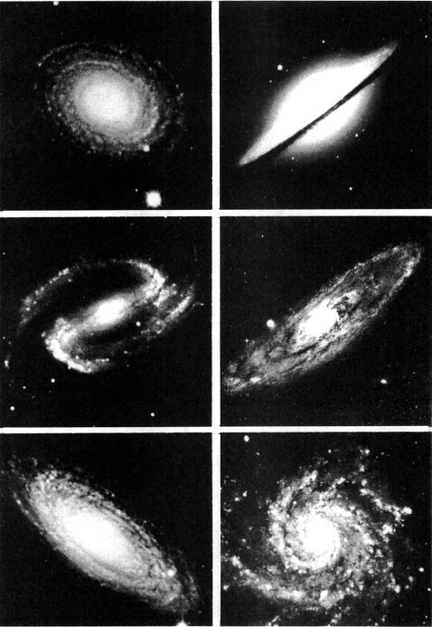
A VARIETY OF GALAXIES
各种星系
NGC 488, Pisc = Sb
NGC 488，Pisc = Sb
NGC 1300, Erid = SBb
NGC 1300，Erid = SBb
NGC 2841, UMai = Sb
NGC 2841，UMai = Sb
NGC 4594, Virg = Sa/Sb
NGC 4594，Virg = Sa / Sb
NGC 224, Andr = Sb
NGC 224，安德=锑
NGC 628, Pisc = Sc
NGC 628，Pisc = Sc

A VARIETY OF GALAXIES
各种星系
NGC 4486, Virg = EO
NGC 4486，Virg = EO
NGC 1365, Forn = SBb
NGC 1365，Forn = SBb
NGC 1156, Arie = Irr
NGC 1156，Arie = Irr
p NGC 205, Andr = E6
p NGC 205，Andr = E6
NGC 5457, UMaj = Sc
NGC 5457，UMaj = Sc
NGC 5128, Cent = E0/S0 p
NGC 5128，美分= E0 / S0 p
(2) Elliptical Galaxies display no spiral pattern or other structure, but are simply spheroidal or elliptical swarms of stars, resembling super-size globular clusters. Usually there is a brighter central condensation. These galaxies are classed by their apparent degree of oblateness from E0 (perfectly round) to E0 (elongated lens-shaped systems).
（2）椭圆星系不显示螺旋状图案或其他结构，而只是球状或椭圆形的恒星群，类似于超大型球状星团。通常会出现较亮的中央结露。这些星系按照其从E0（完全圆形）到E0（细长的透镜状系统）的明显扁度来分类。
The transitional type “S0” defines a galaxy which resembles an elliptical type, but in which a flattened central plane or disc may just be detected. If any true spiral pattern is discernible, the galaxy is classed as an “sa”.
过渡类型“ S0”定义了一个类似于椭圆形的星系，但是在其中可以检测到平坦的中心平面或圆盘。如果可以辨认出任何真实的螺旋形图案，则将银河系归类为“ sa”。
(3) Irregular Galaxies, identified by the letter “I”, are systems which appear as coarse masses of star clouds, lacking any symmetry or smooth distribution of stars. These galaxies, may, however, grade imperceptibly into the coarser spirals, as one of the typical examples - the Large Magellanic Cloud in Dorado - appears to show an incipient spiral pattern.
（3）由字母“ I”标识的不规则星系是显示为星云的粗团，缺乏对称或平滑分布的恒星的系统。但是，这些星系可能会不知不觉地变成较粗的螺旋形，因为典型的例子之一-多拉多的大麦哲伦星云-似乎显示出初期的螺旋形。
In all classes of galaxies, a small letter “p” may be used to indicate various peculiarities such as outer rings or haloes, distorted structure, tidal filaments, and other unusual features. Some of the most interesting cases of this type (as M82 in Ursa Major, M87 in Virgo, and NGC 4038 in Corvus) receive special attention in this Handbook.
在所有类别的星系中，都可以使用小写字母“ p”来表示各种特殊性，例如外环或光环，扭曲的结构，潮汐细丝和其他异常特征。在此手册中，一些此类最有趣的案例（例如Ursa Major中的M82，处女座中的M87和乌鸦座中的NGC 4038）受到特别关注。
THE HUBBLE CONSTANT is the relationship between the red-shift of a galaxy and its distance, a relationship of great importance since it defines not only the scale, but also the age, of the Universe. This relationship, which appears to be linear, has been drastically revised since the time of Hubble, and is now (1975) thought to be about 53 km/sec per megaparsec, or roughly 10 miles per second for each million light years of distance.
哈勃常数是星系的红移与其距离之间的关系，这是非常重要的关系，因为它不仅定义了宇宙的尺度，而且还定义了宇宙的年龄。自哈勃以来，这种关系似乎是线性的，已经进行了大幅度的修改，现在（1975年）被认为是每兆帕秒约53公里/秒，每百万光年距离每秒约10英里。
QUASARS or “Quasi-stellar Radio Sources” are strange and enigmatic objects which have only recently come to the attention of astronomers. Stellar in appearance, they show enormous red shifts which suggest that they are the most distant objects yet identified in the Universe. If the Hubble relationship is assumed to hold true for these objects, their actual luminosities must be higher than any other type of object known, exceeding even the largest galaxies, and the source of this huge energy output has been a subject for much current speculation. All known quasars seem to be extremely distant objects, which of course means that we are seeing them as they were, far back in the remote past. There is a growing belief, therefore, that the quasar phenomenon represents a stage in the early history of a galaxy. Only one of these strange objects can be considered a subject for the typical amateur telescope, 3C 273 in Virgo, which appears as a star of about the 12th magnitude.
QUASARS或“ 准星体无线电源 ”是奇怪而神秘的物体，直到最近才引起天文学家的注意。在外观上恒星，它们显示出巨大的红移，表明它们是宇宙中迄今发现的最遥远的物体。如果假定哈勃关系对这些对象成立，则它们的实际发光度必须高于另一个已知类型的天体，甚至超过最大的星系，这种巨大的能量输出的来源一直是许多当前猜测的主题。所有已知的类星体似乎都是非常遥远的物体，这当然意味着我们正在遥远的过去看到它们。因此，人们越来越相信类星体现象代表了银河系早期的一个阶段。这些奇怪的物体中只有一个可以被认为是典型的业余望远镜在处女座的3C 273的主题，它看起来像一颗恒星，大约是12级。
COSMOLOGY
美容学
COSMOLOGY is that branch of astronomy which sums up and includes everything else; it deals with the over-all features of the Universe, the structure and distribution in space of the celestial bodies, the great questions of matter, energy, space, time, relativity, cosmic evolution, the mysteries of beginnings and endings, and ultimate destinies. For the last half century, the central theme of cosmology has been the concept of the Expanding Universe, which is still accepted (1976) as the only feasible explanation of the “red-shift”. If all the galaxies are receding from each other, then in the past they were much closer together than we now find them, and some 16 or 18 billion years ago must have been very close indeed. The present Universe seems to have had its beginning in a tremendously dense and extremely hot “primordial atom” or “cosmic fireball” at that very distant time. This primeval epoch, however, can be called the “time of creation” only in a very limited sense, since the primordial fireball was obviously preceded by some condition which existed earlier, presumably the gravitational collapse of the universe which existed before the present one. The “Big Bang” hypothesis is thus not necessarily in conflict with the concept of some sort of “steady state” universe, or at least a cyclic universe which undergoes alternate periods of expansion and contraction.
宇宙学是天文学的一个分支，它总结并包括其他所有内容。它涉及宇宙的全部特征，天体空间的结构和分布，物质，能量，空间，时间，相对论，宇宙演化，起点和终点的奥秘以及最终命运的重大问题。在过去的半个世纪中，宇宙学的中心主题一直是“扩展宇宙”的概念，该概念至今仍被接受（1976年），是对“红移”的唯一可行解释。如果所有星系都在相互消退，那么过去它们之间的距离比我们现在所发现的距离要近得多，而且大约在16或180亿年前确实确实非常接近。当前的宇宙似乎始于一个极其密集和极其炙手可热的“在那个遥远的时间原始原子 ”或“ 宇宙火球 ”。但是，这个原始纪元只能在非常有限的意义上被称为“创造的时代”，因为原始火球显然先于某些先存在的条件，大概是在当前重力之前存在的宇宙引力坍塌。因此，“ 大爆炸 ”假设不一定与某种“ 稳态 ”宇宙或至少经历周期性膨胀和收缩的周期性宇宙的概念相抵触。
Although lacking final confirmation from astronomical evidence, the oscillating universe seems philosophically more appealing than a “linear” or one-way universe which ends with dead galaxies of burned-out stars expanding forever into limbo. Also, of course, it does not present the knotty and probably artificial problem of explaining an original “creation”. The invention of one or more deities does not furnish any real solution; the existence of such beings would constitute but another mystery which must also be explained. Oriental philosophers speak of the “Tao”, the all-pervading intelligence of the Universe, never personified or regarded as a “being” of any sort; such a concept seems vastly more appropriate to the Universe we actually live in than do the grossly anthropomorphic and marvelously tortuous theologies of Western thinkers. “The Tao that can be expressed in words”, begins the Book of Lao Tzu, “is not the absolute Tao. The names that can be given are not absolute names.” But...”from the days of old until now, its manifested forms have never ceased.....”
尽管缺乏天文学证据的最终确认，但从理论上讲，与“线性”或单向宇宙相比，振荡宇宙似乎更具吸引力，而“线性”或单向宇宙以烧尽恒星的死星系结束，永远膨胀为地势。而且，当然，它不会显示解释原始“创作”的棘手和可能是人为的问题。一个或多个神灵的发明并没有提供任何真正的解决方案。这些生物的存在将构成另一个谜，也必须加以解释。东方哲学家谈论“ 道 ”，这是宇宙无处不在的智慧，从未被人格化或视为任何形式的“存在”。这样的概念似乎比我们西方人真正的拟人化和曲折的神学更适合我们实际生活的宇宙。《老子》开始说“可以用言语表达的道”，不是绝对的道。可以给出的名称不是绝对名称。”但是。“从古至今，它的表现形式从未停止 ……”
To search for an object the size of the Earth in our Galaxy is comparable to searching for an object smaller than a dust grain, lost somewhere in North America. It is in the last degree unlikely that the acquired knowledge and ideas developed by the inhabitants of this cosmic speck should constitute the final word on the subject. Every man of honesty recognizes that we are in the earliest stage of knowledge of the Universe; we have barely begun to learn how to learn. The uncritical acceptance of any dogmatic philosophy at this stage constitutes intellectual suicide, since it closes the mind to any new evidence, or to any new vision of the world. “If we are open only to those discoveries which will accord with what we already know”, said the English-American philosopher Alan Watts, “we might as Well stay shut. “ The study of astronomy has opened our eyes to a Universe whose unimaginably vast extent, both in space and time, surpasses anything of which Man could have dreamed. And yet, the celestial horizons continue to widen, and our present knowledge is just the beginning.....
要寻找一个在我们银河系中的地球大小的物体，就相当于寻找一个在北美某处丢失的小于尘粒的物体。在最后的程度上，由这个宇宙斑点的居民所获得的知识和思想不可能构成该主题的最终词汇。每个诚实的人都认识到我们处于了解宇宙的最早阶段。我们才刚刚开始学习如何学习。在这一阶段，任何教条主义哲学的不加批判的接受都构成了思想上的自杀，因为它使人们无法接受任何新的证据或世界的任何新视野。英裔美国哲学家艾伦·沃茨（Alan Watts）说：“如果我们只对符合我们已经知道的发现的人开放”，“我们不如闭嘴。“天文学的研究使我们打开了一个宇宙的视线，它在空间和时间上都具有不可思议的巨大范围，超越了人类可能梦dream以求的一切。然而，天体的视野继续扩大，我们目前的知识仅仅是开始。
“Only that day dawns to which we are awake”, wrote Henry David Thoreau in the final paragraph of Walden. “There is more day to dawn. The Sun is but a morning star.”
亨利·戴维·梭罗（Henry David Thoreau）在Walden的最后一段中写道：“只有那天我们醒了。” “还有更多的黎明。太阳不过是晨星。”
HOW TO USE THIS BOOK
如何使用此书
THE ARRANGEMENT OF THE CELESTIAL HANDBOOK
天体手册的安排
TERMS, SYMBOLS, AND ABBREVIATIONS USED
所使用的术语，符号和缩写
The arrangement of the Celestial Handbook is alphabetical, by constellation. Each constellation is divided into four subject sections, as follows: LIST OF DOUBLE AND MULTIPLE STARS
《天体手册》的排列按字母顺序是按星座排列的。每个星座分为四个主题部分，如下所示：双星和多星列表
LIST OF VARIABLE STARS
变星清单
LIST OF STAR CLUSTERS, NEBULAE, AND GALAXIES
星团，星云和星系的清单
DESCRIPTIVE NOTES
描述性注释
The lists are arranged in the following manner: LIST OF DOUBLE AND MULTIPLE STARS
列表按以下方式排列：双星和多星列表
Name- The most commonly used designation of the star. Greek letters and Flamsteed numbers are given preference. Fainter doubles are identified by their numbers in such catalogs as those of: F.G.W.Struve = Σ
名称 -最常用的星号。优先使用希腊字母和弗拉姆斯蒂德数字。较弱的双打在其目录中由其编号标识，例如：FGWStruve =Σ
O.Struve = 0Σ
O.Struve =0Σ
J.Herschel = h
赫歇尔= h
J.Dunlop = ∆
邓禄普= ∆
S.W.Burnham =ß
SWBurnham = ß
R.G.Aitken = A
RGAitken = A
Alvan Clark = AC
阿尔文·克拉克= AC
R.A.Rossiter = Rst
RARossiter = Rst
F.Argelander = Arg
F.Argelander =精氨酸
H.A.Howe = Hwe
HAHowe =霍
Cordoba Obsvt = Cor
科尔多瓦Obsvt = Cor
T.E.Espin = Es
TEEspin = Es
W.J.Hussey = Hu
WJHussey =胡
R.T.Innes = I
RTInnes =我
T.J.J.See = λ
TJJSee =λ
C.Rumker = Rmk
C.鲁姆克= Rmk
G.W.Hough = Ho
GWHough =何
W.H.van den Bos = B
WHvan den Bos = B
E.S-.Holden = Hn, Hld
ES-.Holden = Hn，Hld
G. P.Kuiper = Kui
GPKuiper =奎伊
J.South = S
南方= S
Dist- The angular separation of the two stars in seconds of arc. The distances of third or fourth components are given from the primary (A) star unless otherwise noted.
距离 -两颗星的弧度角间隔，以秒为单位。除非另有说明，否则第三或第四分量的距离是从初级（A）星得出的。
PA- The position angle of the pair in degrees in the usual sense, measured from the brighter to the fainter component.
PA-在通常意义上，对的位置角度，以度为单位，从较亮的部分到较暗的部分进行测量。
Yr- The year in which the preceding measurements were made. The last two digits only are given; the first two are understood to be “19”. The few measurements made before 1900 are identified by the entry “00”.
Yr-进行前述测量的年份。仅给出最后两位数字；前两个被理解为“ 19”。1900年之前进行的几次测量由条目“ 00”标识。
Mags- The visual magnitudes of the two stars on the standard scale, to the nearest half magnitude.
磁星-两颗星在标准比例上的视觉大小，精确到一半。
Notes- Various information of interest. Abbreviations and terms are: relfix= relatively fixed pair; no definite change in separation or angle in at least 50 years.
PA inc = the position angle is increasing.
PA inc =位置角度正在增加。
Dist dec = the apparent separation is decreasing.
Dist dec =表观分离度正在减小。
Spect = spectral type; a single entry refers to the primary star, two entries to the A & B pair unless otherwise noted.
Spect =光谱类型；除非另有说明，否则单个条目是指主恒星，两个条目是A和B对。
cpm = common proper motion; the two stars are moving through space together.
cpm =普通适当运动；两颗星一起在太空中移动。
optical = the two stars are not a physical pair.
光学=两颗星不是物理对。
A,B,C — These letters are used to identify the components of multiple systems, in the order in which they appear in the list. Remarks in the “Notes” column always refer to the A-B pair, unless one of the other components is specifically mentioned by letter “C”, “D”, etc.
A，B，C —这些字母用于标识多个系统的组件，按照它们在列表中出现的顺序。“注释”列中的注释始终指AB对，除非用字母“ C”，“ D” 等明确提及其他组件之一。
(*) This sign indicates a more detailed description, following the catalog lists.
（*）此符号表示在目录列表之后的详细说明。
RA & DEC - The celestial coordinates (1950 epoch). They are given in a contracted form, as in the two following examples: 22115s2119 = RA 22h 11.5m; Dec -21° 19’.
RA＆DEC-天坐标（1950年）。它们以合同形式提供，如以下两个示例所示：22115s2119 = RA 22h 11.5m；12月-21°19'。
06078n4844 = RA 6h 07.8m; Dec +48° 44’.
06078n4844 = RA 6h 07.8m; 12月+ 48°44'。
LIST OF VARIABLE STARS
变星清单
An attempt has been made to list all known variables which reach 9.5 magnitude or brighter at maximum.
试图列出所有已知变量，最大达到9.5幅值或更高。
Name- The standard designation of the star. Stars with Greek letter designations are listed first, other stars in the usual order: R,S,T....Z, RS, RT, etc.
名称-星星的标准名称。首先列出带有希腊字母标记的星，其他星按通常的顺序列出：R，S，T .... Z，RS，RT 等。
MagVar- The visual magnitudes of the star at maximum and minimum. Only approximate mean values can be given for many long-period variables which do not repeat their cycles exactly.
MagVar-最大和最小恒星的视觉大小。对于许多长周期变量，仅给出近似平均值，这些变量不会精确地重复其周期。
Per- The period in days. For long-period variables and other pulsating stars this is the interval between maxima. In the case of eclipsing variables it is the interval between minima. Irregular variables are identified by the abbreviation “Irr”. In the case of periods of less than one day, the entry begins with a decimal point; the “0” being omitted to save space.
Per-以天为周期。对于长周期变量和其他脉动星，这是最大值之间的间隔。在日蚀变量的情况下，它是最小值之间的间隔。不规则变量由缩写“ Irr”标识。如果期限少于一天，则输入以小数点开始；省略“ 0”以节省空间。
Notes- Various information of interest, usually beginning with the class of variable. Some abbreviations used are: LPV. = Long period variable.
注释-感兴趣的各种信息，通常以变量类开头。使用的一些缩写是：LPV。=长期变量。
Cl.Var. = cluster variable (RR Lyrae type star) Ecl.Bin. = eclipsing binary
Cl.Var。=聚类变量（RR Lyrae型星）Ecl.Bin。=黯然失色
Semi-reg = Semi-regular variable
Semi-reg =半常规变量
Spect = the spectral type
Spect =光谱类型
(*) This sign indicates a more detailed description following the catalog lists.
（*）此符号表示在目录列表之后的详细说明。
RA & DEC - The celestial coordinates for 1950, as previously described.
RA＆DEC-如前所述，1950年的天体坐标。
LIST OF STAR CLUSTERS, NEBULAE, AND GALAXIES
星团，星云和星系的清单
NGC = The standard number from the New General Catalogue of John Dreyer.
NGC = John Dreyer新通用目录中的标准编号。
OTH = Other designations, as in the following examples: M35 - The number in the catalog of Charles Messier. 337 The number assigned by Sir William Herschel.
OTH =其他名称，例如以下示例：M35-Charles Messier目录中的编号。33 7威廉·赫歇尔爵士分配的电话号码。
1.405-The number in the “Index Catalogue”, a supplement to the NGC.
1.405- NGC的补充“ 索引目录 ”中的数字。
∆1309 - The number in Dunlop’s list.
∆1309-邓禄普列表中的数字。
TYPE - The class of object. The symbols are:  Galactic star cluster 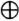Globular star cluster Diffuse nebula Planetary nebula
Galactic star cluster 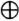Globular star cluster Diffuse nebula Planetary nebula  Dark Nebula
Dark Nebula  Galaxy SUMMARY DESCRIPTION - The visual appearance and chief facts about the object. In the case of galaxies, the first line gives the type, visual magnitude, and the apparent size. For the majority of other objects the apparent diameter (“diam”) and magnitude (“mag”) are given. The remainder of the description employs a simplified code, based on the system used in the NGC: B = Bright
Galaxy SUMMARY DESCRIPTION - The visual appearance and chief facts about the object. In the case of galaxies, the first line gives the type, visual magnitude, and the apparent size. For the majority of other objects the apparent diameter (“diam”) and magnitude (“mag”) are given. The remainder of the description employs a simplified code, based on the system used in the NGC: B = Bright
TYPE-对象的类别。这些符号包括：银河星团球状星团弥散星云行星星云暗星云星系概述 -物体的视觉外观和主要事实。对于星系，第一行给出类型，视觉大小和视在大小。对于大多数其他对象给出了表观直径（“直径”）和大小（“ mag”）。本说明书的其余部分根据NGC中使用的系统，采用了简化的代码：B = Bright
b = brighter
b =更亮
L = Large
L =大
pS = pretty small
pS =很小
F = Faint
F =微弱
vF = very faint
vF =非常微弱
R = round
R =圆
C = compressed or
C =压缩或
condensed
浓缩的
S = small
S =小
rrr= well resolved
rrr =好解决
E = elongated
E =拉长
e = extremely
e =极
c = considerably
c =相当
P = poor
P =差
np = north preceding
np =朝北
sp = south preceding
sp =向南
1C = little compressed
1C =压缩很少
Ri = rich
Ri =富有
M = middle
M =中
N = nucleus
N =核
mag = magnitude
mag =大小
diam = diameter
直径=直径
g = gradually
g =逐渐
s = suddenly
s =突然
m = much
m =很多
v = very
v =非常
14m = 14th magnitude
14 m = 14级
st = star or stars
st =一个或多个星星
irr = irregular
irr =不规则
neby = nebulosity
neby =星云
9.... 9th mag and fainter
9 .... 9 mag and fain
nf = north following
nf =向北跟随
sf = south following
sf =向南跟随
Class C ---- G. Class numbers for galactic clusters, defining richness and degree of concentration: C = loose and irregular clusters
C级---- G.银河星团的等级编号，定义了丰富度和集中度：C =散乱和不规则星团
D = loose clusters
D =松散的簇
E = moderately concentrated
E =中等集中
F = fairly well compressed, compact clusters G = very rich compact clusters
F =压缩得很好的紧凑簇G =非常丰富的紧凑簇
Class I ---- XII. Class numbers for globular clusters, defining the degree of concentration: I = extremely rich and highly compressed XII = very loose, sparse clusters
第一类-XII。球状星团的类别编号，定义了集中程度：I =非常丰富且高度压缩的XII =极为稀疏的星团
(*) This sign indicates a more detailed description or a photograph, or both, following the catalog lists.
（*）此符号表示在目录列表之后的更详细的描述或照片，或两者兼有。
RA & DEC - The celestial coordinates for 1950, as previously described.
RA＆DEC-如前所述，1950年的天体坐标。
The standard type symbols for galaxies (Sa, Sb, Sc, E,) etc., are defined on page 92.
第92页上定义了星系的标准类型符号（Sa，Sb，Sc，E等）。
Detailed descriptions for the following objects: 1. All stars in the constellation brighter than magnitude 3.50.
以下对象的详细说明：1.星座中的所有恒星都比3.50级高。
2. All objects in the lists of doubles, variables, clusters, nebulae, and galaxies which were identified by the sign (*) 3. Other objects of special interest which fall into neither of the above groups; for example - 3C273, Barnard’s Star, Van Maanen’s Star, etc.
2.用符号（*）标识的双打，变量，星团，星云和星系列表中的所有对象。3.不属于上述类别的其他特殊对象；例如-3C273，Barnard's Star，Van Maanen's Star 等。
Objects given detailed notes are listed in the following order: 1. Stars with Greek letter designations, in alphabetical order. (As Alpha Andromedae) 2. Stars with Flamsteed numbers. (As 36 Andromedae) 3. Stars with standard double-star designations (as ∑215) 4. Stars with standard variable star designations (as R Andromedae) 5. Stars with miscellaneous designations. (As Wolf 359, or Groombridge 34) 6. Star clusters, nebulae or galaxies with Messier numbers. (As M31) In numerical order.
带有详细注释的对象按以下顺序列出：1.带有希腊字母标记的星，按字母顺序排列。（作为Alpha Andromedae）2.带有弗拉姆斯蒂德数字的星星。（如36 Andromedae）3.具有标准双星标记的星星（如∑215）4.具有标准可变星号标记的星星（如R Andromedae）5.具有其他标记的星星。（如Wolf 359或Groombridge 34）。6.具有梅西尔数的星团，星云或星系。（作为M31）按数字顺序。
7. Star clusters, nebulae or galaxies with NGC numbers. (As NGC 891) In numerical order.
7.具有NGC编号的星团，星云或星系。（如NGC 891）按数字顺序。
8. Star clusters, nebulae or galaxies with other designations. (As IC 405) FINDER CHARTS are provided for the majority of variable stars chosen for a detailed description. These were made directly from plates obtained with the 13-inch telescope at Lowell Observatory, and show stars to about 15th magnitude. The large circle on each chart represents a field of one-degree diameter except when specifically labeled otherwise. North is always at the top. In using these, or any other photographic charts, the observer must remember that the relative brightnesses of stars may differ somewhat from the visual appearance; red stars appearing brighter to the eye than they do on the print, and blue stars just the opposite.
8.具有其他名称的星团，星云或星系。（如IC 405）FINDER CHARTS被提供为广大选择用于详细描述变星。这些是直接用洛厄尔天文台的13英寸望远镜获得的板制成的，显示出大约15级的恒星。每个图表上的大圆圈表示一个度直径的字段，除非另有特别说明。北部始终位于顶部。在使用这些或任何其他摄影图表时，观察者必须记住，星星的相对亮度可能与视觉外观有所不同。红色的星星看上去比印刷品上的眼睛明亮，而蓝色的星星恰好相反。
LIST OF DOUBLE AND MULTIPLE STARS
双星和多星清单


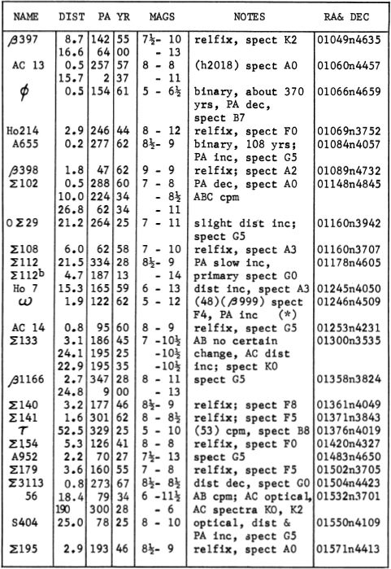

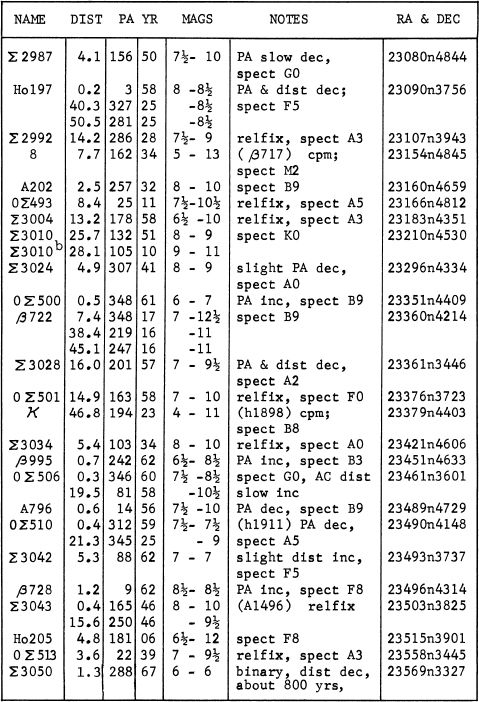

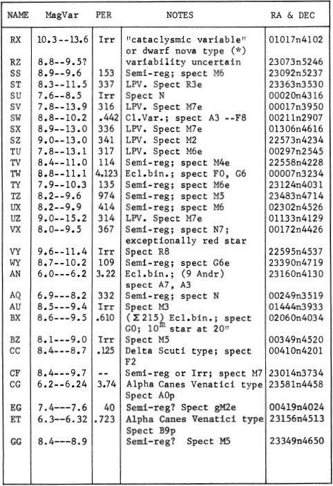

ALPHA Name-ALPHERATZ; sometimes called “Sirrah”. Mag 2.06; spectrum given by various authorities as B8, B9, A0, or Al, but peculiar for the unusual strength of the lines of manganese. Position 00058n2849. Direct parallaxes obtained at Allegheny and Yerkes agree in giving a distance of about 120 light years; the resulting luminosity is about 160 times that of the Sun and the absolute magnitude about -0.7. Slightly different results are obtained from the spectroscopic characteristics which suggest an absolute magnitude of -0.1; this would reduce the distance to about 90 light years.
ALPHA名称-ALPHERATZ；有时称为“ Sirrah”。马格2.06; 各种权威机构给出的光谱，如B8，B9，A0或Al，但因锰系金属强度异常而特有。位置00058n2849。在阿勒格尼（Allegheny）和耶克斯（Yerkes）上获得的直接视差相距约120光年。产生的光度约为太阳的160倍，绝对值约为-0.7。从光谱特性获得的结果略有不同，表明绝对幅度为-0.1；这样可以将距离减少到大约90光年。
The annual proper motion is 0.20” in PA 140°, and the radial velocity is about 7 miles per second in approach.
在PA 140°中，年度固有运动为0.20英寸，进近时径向速度约为每秒7英里。
Alpheratz is a spectroscopic binary with a period of 96.697 days. The two stars are of unequal brightness and the companion has not been detected spectroscopically. According to J.A.Pearce (1937) the orbit of the visible star has an eccentricity of 0.53; the mean radius of the orbit may be about 20 million miles.
Alpheratz是光谱双星，周期为96.697天。两颗恒星的亮度不相等，并且没有通过光谱检测到该同伴。根据JAPearce（1937）的研究，可见恒星的轨道偏心率为0.53；轨道的平均半径可能约为2000万英里。
In addition, there is a distant optical companion of the 11th magnitude, discovered by Sir William Herschel and first measured by F.G.W.Struve in 1836 when the distance was 64.9”. This star is not a true physical companion to Alpha and the separation in 1954 had increased to 81.5” in PA 280° from the proper motion of the primary.
此外，还有一个11级的远距离光学伴星，由威廉·赫歇尔爵士发现，并于1836年由FGWStruve首次测量，当时距离为64.9英寸。这颗恒星不是Alpha的真正物理伴侣，1954年的分离从原初的正确运动增加到了PA 280°的81.5英寸。
Alpheratz marks the northeast corner of the familiar Great Square of Pegasus, and is identified on some of the older atlases as “Delta Pegasi”. It is now officially assigned to Andromeda.
Alpheratz标志着熟悉的飞马座大广场的东北角，在一些较旧的地图集上被标识为“ Delta Pegasi”。现在已正式分配给仙女座。
BETA Name-MIRACH. Mag 2.03; spectrum M0 III. Position 01069n3521. The distance is about 75 light years according to parallaxes obtained at Mt.Wilson, Allegheny, and McCormick; the resulting luminosity is about 75 times that of the Sun, and the absolute magnitude about +0.2. The star shows an annual proper motion of 0.21” in PA 122° and the radial velocity is about 0.2 miles per second in recession.
测试版名称：MIRACH。马格2.03; 频谱M0 III。位置01069n3521。根据在威尔逊山，阿勒格尼山和麦考密克山获得的视差，该距离约为75光年。产生的光度约为太阳的75倍，绝对值约为+0.2。恒星在PA 122°处显示出0.21英寸的年度固有运动，在后退时径向速度约为0.2英里/秒。
Mirach has a companion of the 14th magnitude at 28” I in PA 202°, discovered by E.Barnard at Yerkes in 1898. It apparently shares the proper motion of the primary, and is a dwarf star some 800 times fainter than the Sun. There are two other stars of the 12th magnitude at 85” and 90”, but these are merely optical companions. Mirach itself, like many of the red giant stars, has been suspected of slight variability.
米拉奇（Mirach）在PA 202°处28英寸I处有一个14级的伴星，这是1898年由埃纳·巴纳德（E.Barnard）在耶克斯（Yerkes）上发现的。它显然具有原行星的适当运动，是一颗矮矮星，比太阳暗淡约800倍。还有另外十二颗恒星分别位于85“和90”，但它们只是光学伴侣。像许多红色巨星一样，Mirach本身也被怀疑有轻微的变化。

BETA ANDROMEDAE. The star is the bright central image with the diffraction spikes; the galaxy NGC 404 is at the upper right.
BETA ANDROMEDAE。恒星是明亮的中心图像，带有衍射峰。星系NGC 404在右上方。
(42-inch reflector, Lowell Observatory)
（42英寸反射镜，洛厄尔天文台）
Observers of this star should attempt to find the 12th magnitude galaxy NGC 404 in the same field, a good test for the light-gathering ability of the telescope. It is located 6.4’ from the star toward the northwest.
这颗恒星的观测者应该尝试在同一场中找到12星等星系NGC 404，这是对望远镜聚光能力的良好测试。它位于从恒星向西北6.4'的位置。
GAMMA Name-ALMACH. Mag 2.12; spectrum K2 II or K3. Position 02008n4206. This is a beautiful double star, one of the finest within range of a small telescope. According to T.W.Webb it was probably discovered by J.T. Mayer in 1788 (R.H.Allen gives the date as 1778) but the first recorded measurements appear to be those of F.G.W. Struve in 1830. The brighter star is golden yellow or slightly orange, and the companion (mag 5.08) appears a definite greenish-blue. The color contrast is unusually fine, and often seems more striking with the eyepiece very slightly displaced from the position of sharpest focus. There has been no definite change in separation or angle in the pair in the last 130 years. In 1962 the measurement made at Lowell was: 10” in PA 63°.
GAMMA名称-ALMACH。马格2.12; 频谱K2 II或K3。位置02008n4206。这是一颗美丽的双星，是小型望远镜范围内最好的一颗。根据TWWebb的说法，它可能是JT Mayer在1788年发现的（RHAllen给出的日期是1778年），但最早记录的测量值似乎是FGW Struve在1830年进行的测量。 5.08）出现了确定的蓝绿色。色彩对比度异常出色，并且通常使目镜偏离最清晰焦点的位置略微有些震撼。在过去的130年中，这对眼镜的间距或角度没有确定的变化。1962年，在洛厄尔（Lowell）进行的测量为：PA 63°中的10英寸。
In 1842, Struve discovered that the companion is itself a close double. It is a binary with a period of 61 years according to recent computations by P.Muller (1957). The star was at periastron in 1891 and again in 1952; the greatest separation of the components is about 0.55” and will be reached about 1982. The apparent orbit is a muchelongated ellipse extending toward PA 110°; the semi-major axis is 0.3” and the eccentricity is 0.93. Both of the stars are late B or early A type; the individual magnitudes are 5.5 and 6.3.
1842年，Struve发现同伴本身就是近亲。根据P.Muller（1957）的最新计算，它是一个周期为61年的二进制文件。1891年和1952年，这颗恒星都在天体周围；组件之间的最大间隔约为0.55英寸，并将在1982年左右达到。视在轨道为向PA 110°延伸的长椭圆形。半长轴为0.3英寸，偏心率为0.93。两颗恒星都是B晚或A早类型。各个大小分别为5.5和6.3。

The brightest member of the close pair is itself a spectroscopic binary with a period of 2.67 days and two identical spectra (about B9) visible. Gamma Andromedae is thus a quadruple system. The luminosity of the K-star is about 650 times that of the Sun; the B-C-D system totals about 50 times the light of the Sun. The actual separation of the A-B pair may be about 800 AU, and the B-C separation averages about 30 AU.
接近对中最亮的成员本身就是一个光谱双星，周期为2.67天，可见两个相同的光谱（约B9）。因此，伽玛线虫科是一个四重系统。K星的光度约为太阳的650倍；BCD系统的总光强约为太阳的50倍。AB对的实际间隔可能约为800 AU，而BC间隔的平均值平均约为30 AU。
The distance is approximately 260 light years; the annual proper motion is 0.07”; the radial velocity is about 7 miles per second in approach. The total absolute magnitude is about -2.4.
距离约为260光年；年度适当运动为0.07英寸；进近时径向速度约为每秒7英里。总的绝对大小约为-2.4。
DELTA Mag 3.25; spectrum K3 III. Position 00366n3035. The computed distance is about 160 light years, the actual luminosity about 100 times that of the Sun. The absolute magnitude is -0.2. The star shows an annual proper motion of 0.16” in PA 125°; the radial velocity is 4½ miles per second in approach.
三角洲 Mag 3.25; 频谱K3 III。位置00366n3035。计算出的距离约为160光年，实际的光度约为太阳的100倍。绝对大小为-0.2。恒星在PA 125°处的年度固有运动为0.16英寸；进近时径向速度为每秒4½英里。
The 12th magnitude companion at 28.7” was discovered by S.W.Burnham with the 26-inch refractor at the U.S.Naval Observatory in 1878. It shares the proper motion of the primary and is a red dwarf of about 1/40 the luminosity of the Sun. The spectral type is dM2.
SWBurnham于1878年在USNaval天文台用26英寸折射镜发现了128.7星等高伴星。它具有原初的正常运动，是一颗红矮星，大约是太阳光度的1/40。光谱类型为dM2。
In the case of a wide common motion pair of this type it is interesting to compute the probable actual separation of the two stars. At a distance of 160 light years 28.7” corresponds to about 1420 AU. A figure obtained in this way is called a “projected separation”, and is of course only a minimum value, resulting from the assumption that the two stars are exactly the same distance from us. If one component is actually farther than the other, the true separation may be much greater. In the majority of cases it is impossible to decide the point.
在这种类型的共同运动对较宽的情况下，计算两颗恒星的可能实际间隔很有趣。在160光年的距离处，28.7英寸相当于大约1420 AU。这样得出的数字称为“投影距离”，当然只是最小值，这是由于假设两颗星与我们的距离完全相同。如果一个组件实际上比另一个组件更远，则实际分隔可能会更大。在大多数情况下，无法确定要点。
ZETA Mag 4.06 (slightly variable); spectrum Kl III. Position 00447n2400. This star is a spectroscopic binary with a period of 17.7673 days, and the typical example of an “ellipsoidal variable” in which the light changes are due to the fact that both stars are oval in shape and present varying amounts of luminous surfaces as they revolve in their orbits. Very small partial eclipses may also add to the effect. According to S.Jones, the spectroscopic orbit is nearly circular, with the slight eccentricity of 0.017, and the brighter star is about 3.9 million miles from the center of gravity of the system. The light variations were first measured photoelectrically by J.Stebbins in 1928, and suggest that the two components are revolving nearly in contact. The larger star may be about 8 or 10 times the diameter of the Sun.
ZETA Mag 4.06（稍有变化）; 光谱Kl III。位置00447n2400。这颗恒星是光谱的双星，周期为17.7673天，是“椭圆形变量”的典型示例，其中光的变化是由于两个恒星均为椭圆形，并且随着它们的旋转呈现出不同数量的发光表面在他们的轨道上。很小的部分月食也会增加效果。根据S.Jones的说法，光谱轨道几乎是圆形的，偏心率为0.017，更亮的恒星距离系统重心约390万英里。光线的变化首先由J.Stebbins在1928年进行了光电测量，结果表明这两个组件几乎都在接触中旋转。较大的恒星可能约为太阳直径的8或10倍。
Direct parallaxes obtained at Allegheny and McCormick give the distance as about 100 light years; the total luminosity is then about 18 suns.Different results seem to be obtained, however, from the spectroscopic features; these suggest a luminosity class of II or III. If the star is actually a KI III giant, the absolute magnitude should be about +0.8 (luminosity = 40 suns) and the distance must then be about 150 light years. An attribution to luminosity class II would further increase this discrepancy.
在阿勒格尼和麦考密克获得的直接视差给出的距离约为100光年。这样总的发光度约为18个太阳。但是，从光谱特征来看似乎获得了不同的结果。这些表明发光度等级为II或III。如果这颗恒星实际上是KIIII巨人，则绝对大小应约为+0.8（光度= 40个太阳），并且距离必须约为150光年。归因于II级发光度会进一步增加这种差异。
Zeta Andromedae also has a faint visual companion of the 13th magnitude at 96” in PA 230°; it apparently shares the annual proper motion of the primary (0.13”) and was first detected by S.W.Burnham in 1910. It is a red dwarf at least 400 times fainter than the Sun. The radial velocity of both stars is 14 miles per second in approach.
Zeta Andromedae在PA 230°处还有一个微弱的视觉伴侣，在96英寸时为13级。它显然具有每年一次原初的固有运动（0.13“），并于1910年被SWBurnham首次发现。这是一颗比太阳微弱至少400倍的红矮星。接近时，两颗恒星的径向速度均为每秒14英里。
LAMBDA Mag 3.88; (slightly variable); spectrum G8 IV. Position 23351n4611. A peculiar spectroscopic binary star, discovered by W.W.Campbell in 1899, and displaying the unusual feature of bright (emission) lines of calcium in its spectrum. According to J.L.Greenstein (1952) the stellar absorption lines are quite sharp but the emission lines are fairly broad, raising some interesting questions concerning the structure of the star’s atmosphere and the possible presence of large prominences. There is also the peculiar fact that the slight variations in light show no correlation with the revolution period of the system. The visual range is about 0.4 magnitude.
LAMBDA Mag 3.88；（稍有变化）；频谱G8 IV。位置23351n4611。由WWCampbell在1899年发现的奇特光谱双星，在其光谱中显示出明亮的（发射）钙线。根据JLGreenstein（1952）的研究，恒星的吸收线很尖锐，但发射线却很宽，这引起了一些有关恒星大气结构和可能存在大突起的有趣问题。还有一个特殊的事实，即光线的细微变化与系统的旋转周期无关。可视范围约为0.4级。
The period of the binary pair is 20.5212 days, and the orbit has the small eccentricity of 0.04 according to J.A.Pearce and E.C.Walker (1944). The bright star is less than 1 million miles from the center of gravity of the system, but the actual separation of the two stars is uncertain. Only one component is detected spectroscopically. The primary is a subgiant with a computed diameter of 6 times that of the Sun, and a luminosity of about 16 suns. The absolute magnitude is about +1.9. Parallaxes obtained at Allegheny and Sproul agree in giving the distance as about 80 light years.
根据JAPearce和ECWalker（1944）的研究，双星对的周期为20.5212天，并且轨道的离心率很小，为0.04。明亮的恒星距离系统重心不到一百万英里，但是两颗恒星的实际间隔尚不确定。在光谱上仅检测到一种成分。原边是一个亚细亚种，其计算的直径是太阳的6倍，并且发光度约为16个太阳。绝对大小约为+1.9。在阿勒格尼（Allegheny）和斯普劳（Sproul）上获得的视差一致认为该距离约为80光年。
The annual proper motion of Lambda Andromedae is 0.45” in PA 159°; the mean radial velocity is about 4 miles per second in recession.
Lambda Andromedae在PA 159°的年度固有运动为0.45英寸；在衰退期间，平均径向速度约为每秒4英里。
OMICRON Mag 3.63 (slightly variable); spectrum given as composite (B6 + Al) by some authorities, simply “B6p” by others. Position 22596n4203. This star is a peculiar variable of uncertain class, perhaps combining the features of several different classes. The variations were first suspected by Guthnick and Prager in 1915, and confirmed by R.M.Emberson (1939) who found a range of about 0.5 magnitude. An examination of Harvard patrol plates showed variations of about one magnitude. Spectra have been obtained since 1890, often showing the features of a normal B6 type star, but at other times showing the presence of a gaseous shell or ring. The shell was apparently present in 1890 but absent in 1893 and 1928, developing again about 1937 and very evident in 1946 and 1952. There is some evidence that short-period variability in the star is connected in some way with the presence of the surrounding shell. The star is remarkable for its extremely high rotational velocity of 215 miles per second (at the equator), one of the most rapidly rotating stars known.
欧姆龙马格3.63（略有变化）; 一些主管部门以合成形式（B6 + Al）给出的频谱，而其他一些主管部门则简称为“ B6p”。位置22596n4203。这颗恒星是不确定类别的特殊变量，可能结合了几种不同类别的特征。这种变化最初是在1915年由Guthnick和Prager怀疑的，并由RMEmberson（1939）证实，他们发现了大约0.5个量级。对哈佛巡逻板的检查显示出大约一个量级的变化。自1890年以来就获得了光谱，通常显示出正常B6型恒星的特征，而其他时候则显示出气态壳或环的存在。该壳显然在1890年存在，但在1893年和1928年不存在，在1937年左右再次发展，在1946年和1952年非常明显。有证据表明，恒星的短周期变化与周围的壳层存在某种联系。这颗恒星以其每秒215英里的极高旋转速度（在赤道处）而著称，是已知最快的旋转恒星之一。
S.Archer (1959) suggests that there may be some interaction between the rotation period and the pulsation of the star, when a shell is present. He found in 1958 that the short-period variations appear to resemble those of the cluster variables (RR Lyrae stars), and derived a period of 0.7882 days with an amplitude of about 0.5 magnitude.
S.Archer（1959）提出，当存在壳时，自转周期和恒星的脉动之间可能存在一些相互作用。他在1958年发现，短期变化似乎类似于聚类变量（RR Lyrae星），并得出了0.7882天的周期，振幅约为0.5级。
At other times, however, the light changes appear to be of an entirely different nature. The observations of H.Schmidt (1959) indicated a period of 1.59984 days, very close to double the period found by Archer, and the light curve strongly resembles that of an eclipsing binary of the lyrid type. Primary minimum has a depth of about 0.15 magnitude. The evidence seems clear that the star is a close binary, but with the added complications of occasional shell activity and short-period pulsations in at least one of the components.
但是，在其他时候，光的变化似乎具有完全不同的性质。H.Schmidt（1959）的观测结果表明，周期为1.59984天，非常接近Archer发现的周期的两倍，其光曲线与lyrid型日食双星极相似。初级最小值的深度约为0.15。证据似乎清楚地表明，恒星是密闭的双星，但在至少一个组成部分中，偶有壳活动和短周期的脉动增加了复杂性。
A.Slettebak (1952) calls attention to the interesting discovery that the shell of the star is stratified. The spectrum lines of helium show the greatest rotational broadening and evidently originate in the main body of the star. The lines of magnesium and silicon are sharper, and apparently originate at higher levels in the shell. The iron lines seem to be produced at various levels. This same effect has been found in another famous shell star, 48 Librae.
A.Slettebak（1952）提请注意这有趣的发现，即恒星的壳是分层的。氦的光谱线显示出最大的旋转展宽，显然起源于恒星的主体。镁和硅的线更锋利，并且显然起源于壳中的较高水平。铁线似乎产生于不同水平。在另一个著名的壳星48天秤座中也发现了同样的效果。
Parallax measurements of Omicron Andromedae have been inconclusive, but suggest that the distance cannot be less than 450 or 500 light years. The actual luminosity would appear to be in the range of 500 to 800 times that of the Sun, and the absolute magnitude near -2.0. The estimated diameter of the B-star is 4 to 6 times that of the Sun. The spectral peculiarities make it unsafe to attempt to define the luminosity class, but Slettebak (1952) states that the broad “wings” of the hydrogen lines suggests an object which is near the main sequence.
Omicron Andromedae的视差测量尚无定论，但建议该距离不能小于450或500光年。实际的亮度似乎是太阳的500到800倍，并且绝对值接近-2.0。B星的估计直径是太阳的4到6倍。光谱的特殊性使其难以尝试定义发光度等级，但Slettebak（1952）指出，氢线的宽“翼”暗示着一个靠近主序列的物体。
The annual proper motion of Omicron Andromedae is only 0.02”; the radial velocity is about 8½ miles per second in approach.
Omicron Andromedae的年度适当运动仅为0.02英寸；进近时径向速度约为每秒8½英里。
PI Mag 4.43; spectrum B5 V. Position 00342n3327. Pi Andromedae has two visual companions for the telescope; the brighter one at 36” was first measured by Sir William Herschel late in the 18th century, and shares the proper motion of the primary. In addition, the chief star is a spectroscopic binary with a period of 143.606 days; two spectra of nearly identical type are visible. For the orbit of the brighter star J.A.Pearce (1936) found an eccentricity of 0.56; the mean separation of the two stars is in the neighborhood of 150 million miles, but the exact figure depends upon the value accepted for the inclination of the orbit, which is unknown.
PI Mag 4.43；频谱B5V。位置00342n3327。Pi Andromedae有两个望远镜的视觉伴侣。威廉·赫歇尔爵士（Sir William Herschel）于18世纪后期首次测量了36英寸亮度下的亮度，并具有与小行星相同的运动。此外，主恒星是一个光谱双星，周期为143.606天。可见几乎相同类型的两个光谱。对于更明亮的恒星，JAPearce（1936）的轨道偏心率为0.56；两颗星的平均间隔大约在1.5亿英里以内，但确切数字取决于轨道倾角的接受值（未知）。
The distance, from parallax measurements obtained at Sproul Observatory, may be about 350 light years, and the resulting absolute magnitude about -0.8 (luminosity about 170 suns.) The annual proper motion is very slight, about 0.015”; the radial velocity averages 5½ miles per second in recession.
从Sproul天文台获得的视差测量值得出的距离可能约为350光年，所产生的绝对绝对值约为-0.8（发光度约为170个太阳。）年度固有运动非常轻微，约为0.015英寸；在衰退中，径向速度平均为每秒5½英里。
For the common proper motion companion at 36” we give once again the “projected separation” of the two stars, approximately 3860 AU.
对于“ 36”的普通适当运动伴星，我们再次给出两颗星的“预计间隔”，约为3860 AU。
OMEGA Mag 4.84; spectrum F4 IV. Position 01246n4509. This is a close and difficult double star, discovered by S.W.Burnham with the 12-inch refractor at Lick Observatory in 1881. The two stars form a binary of long period with a gradual increase in the PA, from 92° at the time of discovery to 122° in 1962. The system shows a fairly large annual proper motion of 0.36” in PA 107°. The McCormick and Allegheny parallaxes agree in giving the distance as about 135 light years; the actual luminosities of the two stars are then 17 and 0.025 suns. The small companion is a red dwarf. According to the Yale “Catalogue of Bright Stars” (1964) Omega Andromedae is an outlying member of the Hyades moving group in Taurus, moving toward the same convergent. The radial velocity is about 6½ miles per second in recession. The Hyades cluster is so close to us that outlying members may be found in almost any part of the sky; they may be identified by their space motions but this can be done only when both the proper motion and radial velocity are accurately known.
欧米茄马格4.84; 频谱F4 IV。位置01246n4509。这是一颗密闭且困难的双星，由SWBurnham在1881年在里克天文台用12英寸折射镜发现。两颗星形成了一个长期双星，并且功率逐渐增大，从发现时的92°到1962年为122°。该系统在PA 107°中显示出0.36英寸的相当大的年度固有运动。麦考密克和阿勒格尼视差一致，给出的距离约为135光年。那么两颗星的实际光度分别是17和0.025个太阳。小伙伴是红矮星。根据耶鲁大学的“明亮的星星目录”（1964年），欧米茄Andromedae是金牛座Hyades迁徙团体的一个偏远成员，正朝着同一会聚点发展。在衰退中，径向速度约为每秒6½英里。海德斯星团离我们太近了，以至于在天空的几乎任何地方都可以发现离群成员。它们可以通过它们的空间运动来识别，但是只有当正确地知道了适当的运动和径向速度时，才能做到这一点。
In the same field with Omega is the faint double star β82, noted by S.W.Burnham in 1872 when it was 135” from Omega in PA 110°. This star does not share the large motion of Omega itself, and the separation has been steadily decreasing from the proper motion of the bright star; in 1965 it was slightly under 2’. β82 itself has shown no definite change in separation or PA since discovery. According to the Lick “Index Catalogue of Visual Double Stars” (1961) the separation in 1943 was 4.9” in PA 138°, both stars being of magnitude 10.4.
在与欧米茄同场的地方是微弱的双星β82，由SWBurnham在1872年注意到，当时距欧米茄135度，PA 110°。这颗恒星不具有欧米茄本身的大运动，并且与明亮恒星的正常运动之间的距离一直在逐渐减小；在1965年，它略低于2'。自发现以来，β82本身在分离度或PA上未显示出明确的变化。根据里克的“视觉双星索引目录”（1961年），1943年在PA 138°的分离度为4.9”，两颗星的大小均为10.4。
36 Mag 5.45; spectrum Kl IV. Position 00523n2321. The star is a close but interesting binary, discovered by F.G.W.Struve in 1836. According to a computation by P. Muller (1957) the period is about 165 years with periastron occurring in 1957. The components are magnitudes 6.2 and 6.7, and their apparent separation varies from 0.6” to 1.4”. The closest approach lasts for a number of years, as in the interval from 1930 to 1980, and the star is then an excellent test object for larger amateur telescopes. The computed orbit gives the semi-major axis as 1.0”; and the eccentricity is 0.31.
36马格5.45; 光谱Kl IV。位置00523n2321。这颗恒星是一个近距离但有趣的双星，由FGWStruve于1836年发现。根据P. Muller（1957）的计算，该周期约为165年，在1957年发生了星云。成分为6.2和6.7，以及它们的明显分离从0.6英寸到1.4英寸不等。最接近的方法持续了数年，例如从1930年到1980年的时间间隔，因此该恒星是大型业余望远镜的绝佳测试对象。计算出的轨道的半长轴为1.0英寸；偏心率为0.31。
The primary star is a subgiant of class Kl with about 7 times the luminosity of the Sun. The companion is probably similar in type since there is no noticeable color contrast between the components. “A beautiful strong yellow’1 says T.W.Webb.
初级恒星是K1类的次星，其太阳光度约为太阳的7倍。由于组件之间没有明显的颜色对比，因此伴侣的类型可能相似。TWWebb说：“一个美丽的强黄色' 1。
Parallax measurements of 36 Andromedae give the distance as about 160 light years. On this basis the true separation of the stars averages about 50 AU, somewhat greater than the distance of Pluto from the Sun. The star has an annual proper motion of 0.13”; the radial velocity is about 1.2 miles per second in recession.
对36个Andromedae的视差测量得出的距离约为160光年。在此基础上，恒星的真正分离平均约为50 AU，略大于冥王星与太阳的距离。恒星的年度固有运动为0.13英寸；在衰退中，径向速度约为每秒1.2英里。

Σ 215 Mag 8.6 (variable); spectrum GO. The position is 02060n4034. A rather faint but easy pair, first measured by F.G.W.Struve in 1831. The annual proper motion is given in the Lick “Index Catalogue” as 0.03”; this may apply to both stars since no definite relative change has been noted in more than a century. The present separation is slightly over 20”. The distance of this star is not definitely known.
Σ215 Mag 8.6（可变）; 频谱GO。位置是02060n4034。FGWStruve于1831年首次测量这对货币对，但比较淡淡。Lick“ Index Catalogue”（指数目录）中的年度适当波动为0.03”；这可能对两个恒星都适用，因为一个多世纪以来没有发现任何明确的相对变化。目前的间距略大于20英寸。这颗恒星的距离尚不确定。
The brighter component is the short-period eclipsing binary BX Andromedae, with a range of 8.6 to 9.5 and a period of 0.6101123 days (14h 38.6m). According to the Moscow “General Catalogue of Variable Stars” (1958) the light curve is of the lyrid type, with a secondary minimum of magnitude 9.0. The shortness of the period suggests that this star is a dwarf system of the W Ursa Major type.
较亮的成分是短周期的二元BX Andromedae，范围在8.6到9.5之间，周期为0.6101123天（14h 38.6m）。根据莫斯科的“变星总目录”（1958年），光曲线属于莱里德类型，其次要最小值为9.0。这个时期的短暂表明这颗恒星是W Ursa Major型的矮系统。
R Variable; spectrum S6e. Position 00214n3817. This is the brightest of the long-period variables in Andromeda, discovered at Bonn, Germany, in 1858. It is easily located near the bright triangle of stars formed by Theta, Rho, and Sigma Andromedae, about 4° southwest of the Great Galaxy M31. R Andromedae is noted for its exceptionally large range which at times has exceeded nine magnitudes. The star at maximum is visible in binoculars, and on occasion has attained naked-eye visibility. At minimum it is sometimes almost impossible to detect in a good 8-inch telescope. The period averages 409 days, but may vary by a number of days from one cycle to the next.
R变量; 频谱S6e。位置00214n3817。这是1858年在德国波恩发现的仙女座星系中最亮的长期变量。它很容易位于由大星系西南约4°的西塔，罗氏和西格玛仙女座形成的明亮三角形附近M31。R Andromedae因其异常大的范围而著名，有时超过9个数量级。在双筒望远镜中最大可见的恒星，有时达到肉眼可见性。至少，有时几乎不可能用优质的8英寸望远镜检测到。周期平均为409天，但从一个周期到下一个周期可能会相差几天。
The star is a pulsating red giant of the general type to which the famous Mira (Omicron Ceti) belongs, but the spectral class in this case is type S. The distinguishing feature of the S-type stars is the presence of bands of zirconium-oxide instead of titanium-oxide in the spectrum. In the case of R Andromedae, however, bands of both compounds appear in the spectrum, the TiO features weakening or vanishing when the star is near maximum.
这颗恒星是著名的Mira（Omicron Ceti）所属的一般类型的脉动红色巨星，但在这种情况下，光谱类别为S型。S型恒星的显着特征是存在锆带。光谱中用氧化钛代替氧化钛。但是，在安德烈亚德科的情况下，两种化合物的谱带都出现在光谱中，当恒星接近最大时，TiO的特征会减弱或消失。

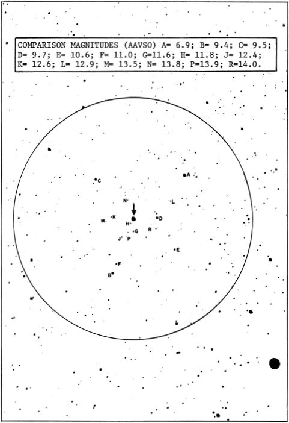
R ANDROMEDAE. Finder chart made from a 13-inch telescope plate at Lowell Observatory. Circle diameter = 1 degree. North is at the top. Limiting magnitude about 15. Bright star at lower right is Rho Andromedae, magnitude 5.1. I
R ANDROMEDAE。洛威尔天文台的13英寸望远镜板制成的查找器图。圆直径= 1度。北部在顶部。限制星等约为15。右下方的亮星是Rho Andromedae，星等为5.1。一世
The distance of the star is not known with any degree of accuracy, but appears to be too remote to offer any results from the direct parallax method. If the actual luminosity is comparable to Mira the distance must be 4 or 5 times greater, possibly about 800 to 1000 light years. The radial velocity is about 6½ miles per second in approach; the annual proper motion is only 0.02”. (For a more detailed account of the long-period variables, refer to Omicron Ceti.)
恒星的距离未知，精度不高，但是距离太远，无法直接视差法得出任何结果。如果实际光度与Mira相当，则距离必须是4倍或5倍，可能约为800到1000光年。进近时径向速度约为每秒6½英里；年度适当运动只有0.02英寸。（有关长周期变量的更多详细信息，请参阅Omicron Ceti。）
Z Variable. Position 23312n4832. A remarkable and peculiar variable star, possibly associated with the recurrent novae, but displaying certain enigmatic features of its own. Normally it is a semiregular red variable of small amplitude with an M-type spectrum and an average magnitude of about 11. At long intervals, however, the star flares up in sudden outbursts of about 3 magnitudes, and at these times the M-spectrum is overpowered by a “shell spectrum” of wide bright lines, similar to that of a nova. As the nova-like spectrum slowly fades the star returns to its former pattern of slow and semiregular variations.
Z变量。位置23312n4832。一颗奇异而独特的变星，可能与周期性新星有关，但显示出其自身的某些神秘特征。通常，它是一个小振幅的半规则红色变量，具有M型光谱，平均强度大约为11。但是，在较长的时间间隔内，恒星突然爆发时突然爆发了大约3个数量级，此时，M光谱类似于新星，宽广的亮线的“壳光谱”使它无法控制。随着类似新星的光谱逐渐消失，恒星返回到其先前的缓慢和半规则变化模式。
The most violent recorded outbursts have occurred in 1901, 1914, 1939, and 1959. The maximum of 1901 was preceded by fluctuations of gradually increasing amplitude which can be detected on Harvard plates as early as 1890. After reaching a maximum of about 9½ the star declined, and had faded to 12th magnitude by 1907. In the autumn of 1914 it rose again to nearly 8th magnitude, faded by 3 magnitudes during the next year, then brightened again in the spring of 1916. For the next 15 years the star brightened and dimmed in a fairly regular cycle of about 695 days, but with steadily decreasing amplitude. By 1931 a normal minimum was reached, and the star remained faint until the outburst of 1939. In the summer of that year it began to brighten, and reached magnitude 7.9 in November, probably the greatest brightness yet recorded. In 1959 it rose to 10th magnitude, and in 1961 brightened to 9.2.
记录到的最强烈的爆发发生在1901、1914、1939和1959年。在1901年的最大值之前，振幅的逐渐增加的波动可以在哈佛大学的板块上检测到，最早可以在1890年发现。在达到约9½星之后下降，并在1907年下降到12级。在1914年秋天，它再次上升到近8级，在第二年又下降了3级，然后在1916年春季再次变亮。在接下来的15年中，恒星变亮并以大约695天的相当规则的周期变暗，但振幅逐渐减小。到1931年，达到了正常的最小值，直到1939年爆发之前，恒星一直保持昏暗状态。那年夏天，它开始变亮，并在11月达到7.9级，可能是有记录以来的最大亮度。
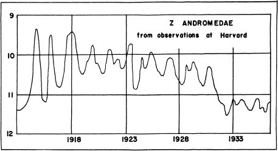
From spectroscopic observations it now appears certain that Z Andromedae is actually a close binary star. The spectrum is composite, and combines the features of a low temperature red giant and a hot bluish B-star which is probably a subdwarf. P.W.Merrill has applied the term “symbiotic stars” to objects of this type. Z Andromedae and R Aquarii are perhaps the most typical examples. The bright outbursts are attributed to the blue stars, but the red components appear to be variable also, with a range of one or two magnitudes. In addition, the spectrum shows the lines which are characteristic of the gaseous nebulae, and it seems certain that both of the components are enveloped in a gaseous cloud. In the case of R Aquarii a faint diffuse nebula can actually be seen surrounding the star, and it is in a state of slow expansion.
从分光镜观察，现在可以肯定的是，Andromedae Z实际上是一颗接近的双星。光谱是合成的，并结合了低温红色巨星和热蓝色B星的特征，这可能是一个矮星。PWMerrill已将“共生星”一词应用于此类对象。Z Andromedae和R Aquarii也许是最典型的例子。明亮的爆发归因于蓝色恒星，但红色分量似乎也是可变的，范围为一到两个量级。另外，该光谱显示出气态星云的特征线，并且似乎可以肯定的是，这两个成分都被气态云所包裹。在R Aquarii的情况下，实际上可以看到围绕恒星的微弱弥散星云，并且它处于缓慢扩张的状态。
A significant fact about Z Andromedae is that the blue and red components both vary in nearly the same cycle of about 700 days, and that the radial velocities again show approximately the same period. The variations of both stars may be connected in some way with the orbital motion of the system. The bright outbursts may be attributed to some process of interaction between the components; the same mechanism has been proposed also for the recurrent novae. But the exact details are quite uncertain. In the case of the eruptive “dwarf novae” of the U Geminorum type there is some evidence that the red component is the seat of the outbursts, rather than the blue subdwarf as has been generally assumed. At the present time, the whole subject is well supplied with fascinating uncertainties. (Refer also to R Aquarii, AG Pegasi, and T Corona Borealis.)
Z Andromedae的一个重要事实是，蓝色和红色成分几乎都在大约700天的同一周期内变化，并且径向速度又显示出大致相同的周期。两颗恒星的变化可能以某种方式与系统的轨道运动有关。明亮的爆发可能归因于组件之间的某些交互过程。对于复发性新星也提出了相同的机制。但是确切的细节还不确定。对于爆发的U Geminorum型“矮新星”，有一些证据表明红色部分是爆发的所在地，而不是通常认为的蓝色矮子。目前，整个主题都充满了令人着迷的不确定性。（另请参阅R Aquarii，AG Pegasi和T Corona Borealis。）

Z ANDROMEDAE. Finder chart made from a 13-inch telescope plate at Lowell Observatory. Circle diameter = 1 degree. North is at the top. Limiting magnitude about 15.
Z ANDROMEDAE。洛威尔天文台的13英寸望远镜板制成的查找器图。圆直径= 1度。北部在顶部。极限幅度约为15。
RX Variable. Position 01017n4102. An erratic and very unpredictable variable star, belonging to the rare class of which Z Camelopardi is the prototype. It was discovered in 1905 by the British observer A.S.Williams, and his preliminary light curve was published the same year. The variations frequently resemble those of the famous SS Cygni, with smallscale nova-like outbursts occurring repeatedly at intervals of from 2 to 3 weeks. The total range is about 3½ magnitudes, and the rise to maximum is usually accomplished in 2 or 3 days. But at other times the variations are completely irregular and totally unpredictable. On occasion the star may remain nearly constant for several months, as shown on the accompanying light curves.
RX变量。位置01017n4102。一颗不稳定且非常难以预测的变星，属于Z Camelopardi的原型中的罕见类。它是由英国观察员ASWilliams在1905年发现的，他的初步光曲线于同年发表。这些变化经常类似于著名的SS Cygni的变化，小规模的新星状爆发每隔2至3周重复出现一次。总范围约为3½量级，通常在2或3天内即可达到最大值。但是在其他时候，这些变化是完全不规则的，并且是完全不可预测的。有时，恒星可能会在几个月内保持几乎恒定不变，如随附的光曲线所示。

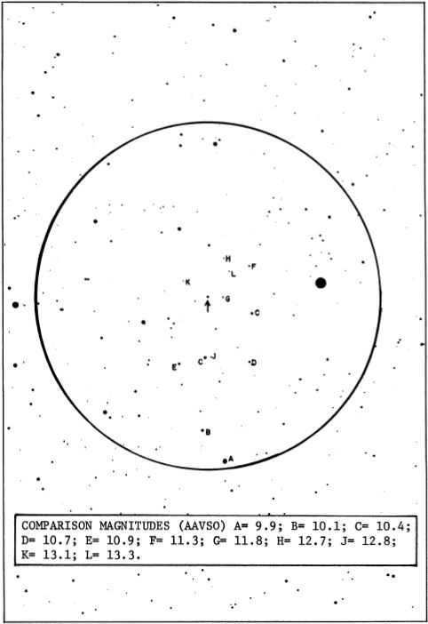
RX ANDROMEDAE. Finder chart made from a 13-inch telescope plate at Lowell Observatory. Circle diameter = 1 degree. North is at the top. Limiting magnitude about 15. Bright star inside the circle is 39 Andromedae, magnitude 5.9.
RX ANDROMEDAE。洛威尔天文台的13英寸望远镜板制成的查找器图。圆直径= 1度。北部在顶部。极限星等为15。圆圈内的亮星为39仙女座，星等为5.9。
RX Andromedae has a peculiar spectrum, showing bright hydrogen lines against an apparently continuous background, the lines weakening as the star rises to maximum. The color is equivalent to a late A-type star. The spectral features and light curve both show a strong resemblance to Z Camelopardi. RX Andromedae is a very close and rapid binary with a period of 5h 05m, a significant discovery since the similarly acting SS Cygni, AE Aquarii, and U Geminorum are all known to be close dwarf or subdwarf binaries of this same type. A current theory regards the outbursts as a result of an interchange of material between the close components, one of which may be a degenerate star.
RX Andromedae具有奇特的光谱，在明显连续的背景下显示出明亮的氢线，随着恒星升至最大，该线减弱。颜色等同于晚A型星。光谱特征和光曲线都与Z Camelopardi非常相似。RX Andromedae是一个非常紧密且快速的二进制文件，周期为5h 05m，这是一个重大发现，因为类似作用的SS Cygni，AE Aquarii和U Geminorum都被认为是同类的矮矮星或近矮矮星。当前的理论认为，爆发是由于紧密成分之间物质交换的结果，其中之一可能是一颗退化的恒星。
R.P.Kraft (1962) classes the blue components of these systems as subdwarfs (sdBe) and finds that their absolute magnitudes lie in the range of +7½ to +9. He also finds some evidence that the intrinsically fainter stars have the shortest orbital periods. The other star in each pair seems to be a red dwarf whose mass is often comparable to that of the Sun, but abnormally underluminous for its mass. Kraft suggests that material ejected from the red star forms a gaseous ring or disc around the blue dwarf. According to one theory, some of this material is eventually brought into contact with the body of the degenerate star, with explosive results. The accuracy of this picture has been questioned, however, by W.Krzeminski (1965) who finds evidence that in the very similar system U Geminorum the outbursts originate in the cooler redder component, rather than in the hot subdwarf. (Refer to U Geminorum)
RPKraft（1962）将这些系统的蓝色成分归类为矮人（sdBe），发现它们的绝对大小在+范围内。7½至+9。他还发现一些证据，表明本征较弱的恒星的轨道周期最短。每对中的另一颗恒星似乎是一颗红矮星，其质量通常可与太阳相媲美，但质量却异常明亮。卡夫（Kraft）建议从红星中喷出的物质在蓝矮星周围形成气态环或圆盘。根据一种理论，某些这种物质最终会与退化的恒星的主体接触，从而产生爆炸性结果。然而，W.Krzeminski（1965）质疑了这张照片的准确性，他发现证据表明，在非常相似的系统U Geminorum中，爆发来自较冷的红变部分，而不是热的矮化部分。（请参阅U Geminorum）
W.J.Luyten (1965) finds an annual proper motion of about 0.01” for RX Andromedae, suggesting a distance of at least a few hundred light years. At the time of writing, no direct parallax measurement seems to be available. (Refer also to SS Cygni, U Geminorum, AE Aquarii, and Z Camelopardi.)
WJLuyten（1965）发现RX Andromedae的年度适当运动约为0.01英寸，这表明该距离至少为数百光年。在撰写本文时，似乎没有直接的视差测量可用。（另请参阅SS Cygni，U Geminorum，AE Aquarii和Z Camelopardi。）
GRB 34 Groombridge 34 (ADS 246) (BD+43°44) Position 00155n4344. This is a noted red dwarf binary system, and one of the closest double stars to the Solar System. It is located about ¼° north of 26 Andromedae. The star was discovered through proper motion measurements in 1860. The two components are magnitudes 8.1 and 10.9 and are separated by 39”. The PA is increasing by about 5° per century; the orbital motion is thus so slow that no definite period can yet be derived. According to a preliminary computation by Hopmann (1957) a period of slightly over 3000 years is suggested, with periastron about 2320 A.D. Hopmann’s orbit has a semi-major axis of 44” and an eccentricity of 0.25.
GRB 34 Groombridge 34（ADS 246）（BD + 43°44）位置00155n4344。这是一个著名的红矮星双星系统，也是离太阳系最近的双星之一。它位于26 Andromedae以北约¼ °。该恒星是在1860年通过适当的运动测量发现的。这两个分量分别是大小8.1和10.9，相隔39英寸。功率每世纪增加约5°；因此，轨道运动是如此缓慢，以至于还不能得出确定的周期。根据霍普曼（Hopmann，1957年）的初步计算，建议使用大约3000年以上的时间，周线约为公元2320年。霍普曼轨道的半长轴为44英寸，偏心率为0.25。

Groombridge 34-Finder chart made from a 13-inch telescope ! plate at Lowell Observatory. Circle diameter = 1 degree. North is at the top. Limiting magnitude about 15. Bright star inside the circle is 26 Andromedae, magnitude 6.0.
用13英寸望远镜制作的Groombridge 34-Finder图表！在洛厄尔天文台。圆直径= 1度。北部在顶部。极限星等为15。圆圈内的亮星为26仙女座，星等为6.0。
Groombridge 34 is 11.7 light years distant, and has the large proper motion of 2.89” annually in PA 82°. The true separation of the two stars averages about 160 AU. According to A.H.Joy (1947) the primary is a spectroscopic binary of uncertain period. The chief facts about the two stars are given in the following short table:
格罗姆布里奇34的距离为11.7光年，并且在PA 82°中每年有2.89英寸的大固有运动。两颗星的真正分离平均约为160 AU。根据AHJoy（1947）的观点，主要是不确定周期的光谱双星。下表列出了有关这两颗星的主要事实：
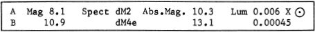
A third star of the 11th magnitude, called “C”, was 20n distant in 1917, but it is not a physical member of the system, and does not share the large proper motion of A & B. The separation in 1961 had increased to about 2.3’ from the gradual drift of the motion pair. The radial velocity of both stars is about 11 miles per second in recession.
1117年的第三颗恒星称为“ C”，在1917年相距20 n，但它不是系统的物理成员，并且不共享A＆B的大固有运动。1961年的分离增加了从运动对的逐渐漂移到大约2.3'。在衰退中，两颗恒星的径向速度约为每秒11英里。
M3I (NGC 224) Position 00400n4100. The Great Andromeda Galaxy, the chief object of interest in the constellation. It is the brightest and nearest of all the spirals, and the only one which can be considered a definite, obvious naked-eye object. As seen without optical aid it appears as a small elongated bit of fuzzy light, about 1° west of the star Nu Andromedae. A pair of good binoculars will be found very useful in searching for it, and on a really clear night will enable the full diameter to be traced out to over 4°. When observing M31 through the small telescope, a low power wide-field eyepiece is essential; high powers show only the nuclear condensation.
M3I（NGC 224）位置00400n4100。大仙女座星系，该星座的主要关注对象。它是所有螺旋中最亮，最接近的螺旋，并且是唯一可以被视为确定的，明显的肉眼物体的螺旋。在没有光学辅助的情况下，它看起来像是一小串模糊的模糊光，位于Nu Andromedae星以西约1°。将会发现一副好的双筒望远镜在搜索时非常有用，并且在一个真正晴朗的夜晚，可以将整个直径追溯到超过4°。通过小型望远镜观察M31时，必须使用低功率的广角目镜。大国只显示核浓缩。
According to R.H.Allen, the Andromeda Galaxy has been known at least as far back as 905 A.D. and was mentioned by the Persian astronomer Al Sufi in the 10th Century. It was called the “Little Cloud” and appeared on star charts long before the development of the telescope in 1609. Simon Marius is usually credited with the first telescopic observation of the object in 1611 or 1612. He compared the soft glow to “the light of a candle shining through horn”. For the visual observer, the description is still accurate today, even in the age of the great modern telescopes. The largest instruments reveal little more than an elongated foggy patch which gradually brightens in the center to a nearly star-like nucleus. In a good 8-inch reflector, the prominent dark lane on the northwest edge of the central hub, and the bright star cloud near the south-tip may both be glimpsed, if the sky is dark and clear. But except for these faint details, the soft light of the great galaxy remains a smoothly luminous glow without the slightest hint of resolution. Early observers had thought the “nebula” to be composed of glowing gases; some regarded it as “a solar system in the making” and imagined that our own Sun looked much the same in the days of the primeval dust cloud, when the planets were being formed, Spectroscopic analysis of M31 eventually destroyed all such assumptions, and left no doubt that the light of the enigmatic “Great Nebula” actually came from a multitude of individual stars.
根据RHAllen的说法，仙女座星系至少早在公元905年就已为人所知，并在10世纪被波斯天文学家Al Sufi提及。它被称为“小云”，早在1609年望远镜发展之前就出现在星图上。西蒙·马里乌斯通常被认为是1611年或1612年首次对物体进行望远镜观测。他将柔和的发光与“光”进行了比较穿过角的蜡烛”。对于视觉观察者来说，即使在当今伟大的现代望远镜时代，这种描述仍然是准确的。最大的仪器仅显示出细长的雾状斑块，该雾斑在中央逐渐变亮为几乎星形的核。在良好的8英寸反射镜中，中央枢纽西北部边缘处突出的深色车道，如果天空阴暗晴朗，可能会瞥见南端附近的明亮星云。但是，除了这些微弱的细节外，巨大的星系的柔和的光线仍然保持着柔和的发光，没有丝毫的分辨率。早期的观察者认为“星云”是由发光的气体组成的。有些人认为它是“正在形成的太阳系”，并想象我们自己的太阳在原始尘埃云的日子看起来几乎一样，即在行星形成时，对M31的光谱分析最终破坏了所有这些假设，于是离开了毫无疑问，神秘的“大星云”的光芒实际上来自众多独立的恒星。巨大的星系的柔和的光线保持了平稳的发光，没有丝毫的分辨率。早期的观察者认为“星云”是由发光的气体组成的。有些人认为它是“正在形成的太阳系”，并想象我们自己的太阳在原始尘埃云的日子看起来几乎一样，即在行星形成时，对M31的光谱分析最终破坏了所有这些假设，于是离开了毫无疑问，神秘的“大星云”的光芒实际上来自众多独立的恒星。巨大的星系的柔和的光线保持了平稳的发光，没有丝毫的分辨率。早期的观察者认为“星云”是由发光的气体组成的。有些人认为它是“正在形成的太阳系”，并想象我们自己的太阳在原始尘埃云的日子看起来几乎一样，即在行星形成时，对M31的光谱分析最终破坏了所有这些假设，于是离开了毫无疑问，神秘的“大星云”的光芒实际上来自众多独立的恒星。

THE GREAT ANDROMEDA GALAXY M31, photographed with the 5” Cogshall camera at Lowell Observatory. This huge spiral is probably the largest member of the Local Group of Galaxies.
伟大的安德罗梅达银河M31，在洛厄尔天文台用5英寸Cogshall相机拍摄。这个巨大的螺旋可能是银河系本地组织的最大成员。
Only long-exposure photographs taken with large telescopes will reveal the true nature of such an object. The “Little Cloud” in Andromeda is actually a vast galaxy, an aggregation of billions of stars like our own Milky Way galaxy. It appears as an elongated oval because it is inclined only 15° from the edge-on position; actually it is round and flat, and has a spiral pattern which classes it as type Sb. This great island universe is the nearest of all the spirals and is probably the largest member of the Local Group of galaxies. The distance is 2.2 million light years. In viewing such an object, we are not only looking out through space across the enormous distance of about 13 thousand quadrillion miles; but we are also looking back through time, to a period about 2 million years ago, when the light of the Andromeda system started on its long journey toward the Earth.
只有使用大型望远镜拍摄的长时间曝光照片才能揭示出这种物体的真实本质。仙女座星系中的“小云”实际上是一个巨大的星系，像我们自己的银河系一样聚集了数十亿颗恒星。它显示为细长的椭圆形，因为它从边缘位置仅倾斜了15°；实际上，它是圆形且扁平的，并具有将其归类为Sb类型的螺旋形图案。这个巨大的岛屿宇宙是所有漩涡中最接近的，并且可能是本地银河系中最大的成员。距离为220万光年。在观察这样的物体时，我们不仅要在大约13000万亿英里的巨大距离中直视太空，而且还要观察太空。但我们也回顾了大约200万年前的时间，
The first hint of the true nature of the Andromeda Galaxy came late in 1923 when several cepheid variable stars were identified in the system. In a study of these objects, made with the 100-inch telescope at Mt.Wilson, Dr.E.Hubble definitely established the great spiral as an extra-galactic object, and derived a tentative distance of about 900,000 light years. Hubble’s discovery was announced at the meeting of the American Astronomical Society in Washington D.C. in December 1924, and dramatically ended the long controversy over the nature of the “spiral nebulae”. Further studies, still using the pulsating cepheids as distance indicators, caused a revision of the distance to about 750,000 light years, and until rather recently this remained the most accurate estimate possible. For the method of using cepheid stars as distance indicators, refer to Delta Cephei.
仙女座星系真实本质的第一个提示出现在1923年末，当时在系统中识别出了多个造父变星。在用威尔逊山的100英寸望远镜对这些物体进行的研究中，哈勃博士确实将巨大的旋涡确立为银河系外的物体，并得出了约90万光年的暂定距离。哈勃的发现是在1924年12月在华盛顿举行的美国天文学会的会议上宣布的，并大大结束了有关“螺旋星云”本质的长期争论。进一步的研究仍然使用脉动的造父变星作为距离指示器，将距离修正为约750,000光年，直到最近，这仍然是最准确的估计。对于使用造父变星作为距离指示器的方法，

THE ANDROMEDA GALAXY. This striking photograph of M31 was obtained with the 36-inch Crossley Reflector at Lick Observatory.
ANDROMEDA银河系。M31的这张引人注目的照片是使用里克天文台的36英寸Crossley反射镜获得的。
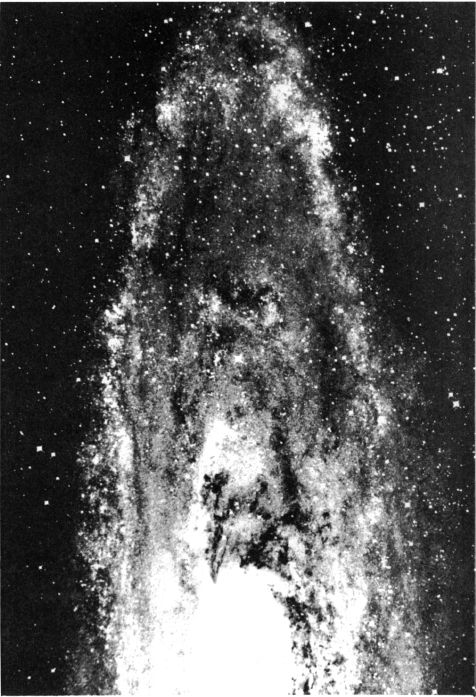
NORTHEAST SECTION OF THE ANDROMEDA GALAXY M31; from a photograph obtained with the Crossley Reflector at Lick Observatory.
ANDROMEDA GALAXY M31的东北部；摘自利克天文台用Crossley Reflector获得的照片。

SOUTHWEST SECTION OF THE ANDROMEDA GALAXY M31; from a photograph obtained with the Crossley Reflector at Lick Observatory.
ANDROMEDA GALAXY M31的西南部分；摘自利克天文台用Crossley Reflector获得的照片。

In 1953, however, investigation of the Andromeda Galaxy with the newly completed 200-inch telescope proved that the stars of the system are arranged in two different “populations”. The spiral arms contained bright blue giant stars and nebulous regions immersed in clouds of dust (Population I) while the nuclear hub is a vast swarm of fainter red and yellow stars (Population II). The discovery was soon made that the cepheid stars are intrinsically different in luminosity in the two populations, a Population I cepheid being the brightest by at least 1.5 magnitudes. As a result, the cepheids used in the distance calibration were discovered to be more luminous than had been thought, and the distance scale was seen to be in error by a factor of 2 or 3. Various lines of evidence now agree in giving a distance of 2.2 million light years for M31, and placing the next nearest spiral (M33 in Triangulum) at about 2.4 million light years. It is not expected that any further great revisions will be required.
但是，在1953年，用新完成的200英寸望远镜对仙女座星系进行了研究，结果证明该系统的恒星排列在两个不同的“人口”中。螺旋臂包含明亮的蓝色巨型恒星和浸没在尘埃云中的星云状区域（种群I），而核中心是一大群较暗的红色和黄色恒星（种群II）。很快发现，在这两个种群中，造父变星的内在光度本质上是不同的，其中一类造父变星最亮至少1.5个数量级。结果，发现距离校准中使用的造父变星比以前想象的要发光得多，并且距离比例尺的误差被认为是2或3倍。 M31的220万光年 并将下一个最近的螺旋形（在Triangulum中的M33）置于约240万光年。预计将不需要任何进一步的重大修订。
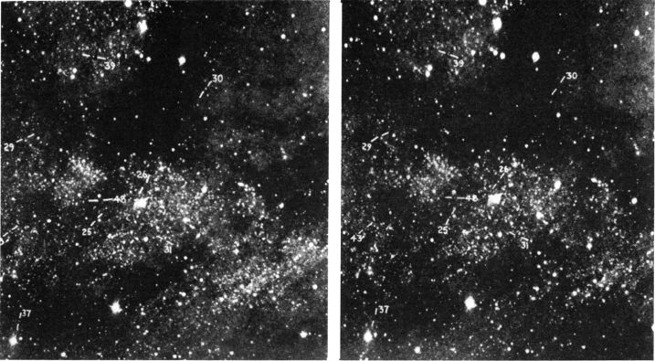
CEPHEID VARIABLE STARS in the Andromeda Galaxy, detected and studied by E.Hubble in 1924, on plates made with the 100-inch telescope at Mt.Wilson, Print reproduced from Hubble’s “Realm of the Nebulae”, through the courtesy of Yale University Press.
E.Hubble在1924年用威尔逊山的100英寸望远镜制作的板块，对仙女座星系中的CEPHEID变星进行了研究，并通过耶鲁大学出版社提供的图片复制了哈勃的“星云王国” 。
The outer parts of M31 were first resolved into stars on long-exposure photographs with the 100-inch telescope at Mt.Wilson. Resolution of the nuclear hub proved much more difficult, and was finally accomplished with special red-sensitive plates on the 200-inch telescope at Palomar. This was a triumph of observational astronomy, but it must be remembered that anything like a complete resolution of the galaxy is quite impossible. At a distance of over 2 million light years, only the most brilliant stars - the high luminosity giants - can be seen at all. Our own Sun, at such a distance, would appear of visual magnitude 29.1, and would be 200 times too faint to be detected in the greatest telescopes on Earth.
M31的外部首先在威尔逊山的100英寸望远镜上通过长时间曝光的照片分解为恒星。核中心的解析被证明要困难得多，最终在帕洛玛的200英寸望远镜上用特殊的红色感光板完成。这是观测天文学的一次胜利，但必须记住，像银河系一样的任何事情都是完全不可能的。在超过200万光年的距离上，根本看不到最灿烂的恒星-高光度巨星。在这样的距离下，我们自己的太阳将出现29.1的视觉强度，其微弱的200倍无法在地球上最大的望远镜中检测到。
The Andromeda Galaxy probably contains over 300 billion individual stars. Its computed mass is about 400 billion times that of the Sun. The total luminosity is equal to 11 billion suns, and the absolute magnitude is given by A.Sandage as -20.3. This is intrinsically one of the most luminous galaxies known.
仙女座星系可能包含超过3000亿颗恒星。它的计算质量约为太阳的4000亿倍。总光度等于110亿个太阳，绝对强度由A.Sandage给出为-20.3。这本质上是已知的最发光的星系之一。
On the best photographs the image of M31 measures a full 160’ X 40’, nearly 2.7° across the longer dimension. This corresponds to an actual diameter of 110,000 light years. Measurements with the sensitive instrument known as the densitometer increase the size to 4.5° or 180,000 light years. Thus M31 must be classed as one of the largest galaxies known. Our own Galaxy, for comparison, is thought to measure about 100,000 light years in diameter, and the majority of the known spirals are less than half this size. The central mass of M31 is a huge elliptical galaxy in itself, and measures about 12,000 light years in diameter. This hub is a huge globular aggregation rich in red and yellow giant stars, and comparatively free of dust and gas. It is classified as a “Pop. II” system. In contrast, the outer portions, containing the spiral arms, comprise a typical “Pop. I” system, notable for the presence of extremely luminous blue giant stars, extensive bright and dark nebulosity, dust and gas. A detailed study of the Andromeda Galaxy by W. Baade has identified seven distinct spiral arms: two dust arms near the nucleus, and five outer arms of coiled star clouds. An interesting feature of M31 is the system of dark dust lanes which outline the spiral form of the galaxy, giving us perhaps an idea of the appearance of our own Milky Way system from a similar distance.
在最佳照片上，M31的图像尺寸为完整的160'X 40'，在较长尺寸上接近2.7°。这对应于110,000光年的实际直径。使用称为密度计的敏感仪器进行的测量将尺寸增加到4.5°或180,000光年。因此，M31必须归类为已知的最大星系之一。相比之下，我们自己的银河系被认为可以测量到约100,000光年的直径，并且大多数已知的螺旋形星系的直径都小于该尺寸的一半。M31的中心质量本身就是一个巨大的椭圆星系，直径约为12,000光年。这个中心是巨大的球形聚集体，富含红色和黄色的巨星，并且相对没有灰尘和气体。它被归类为“流行音乐”。II”系统。相反，包含螺旋臂的外部部分 包括一个典型的“流行音乐 I”系统，以极度发光的蓝色巨星，广泛的明暗雾状，尘埃和气体而闻名。W. Baade对仙女座星系进行了详细研究，发现了七个不同的螺旋臂：两个靠近原子核的尘埃臂，以及五个盘旋星云的外臂。M31的一个有趣功能是深色尘埃带系统，勾勒出银河系的螺旋形式，使我们可以从相似的距离了解我们自己的银河系的外观。
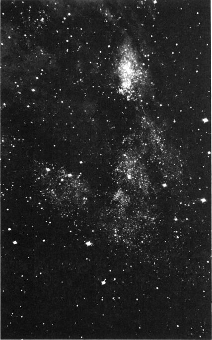
SOUTHERN SECTION OF THE ANDROMEDA GALAXY, photographed with the 100-inch reflector at Mt.Wilson. The prominent star cloud near the top of the print is NGC 206.
ANDROMEDA银河的南面，用威尔逊山上的100英寸反射镜拍摄。靠近照片顶部的著名星云是NGC 206。
Among the star clouds of M31, one object is to be especially noted. Sufficiently conspicuous to appear in the “NGC” Catalog as a separate entry, it bears the number NGC 206. It is easily located near the south tip of the galaxy and close to the western rim, where it may be detected with a good 8-inch telescope on a dark night« The dimensions of this cloud of stars are about 2900 X 1400 light years. A few hundred stars in the cloud have luminosities of over 10,000 times that of the Sun, while the fainter stars are literally uncountable. The brightest individual stars of the spiral arms have absolute magnitudes of about -7, comparable to such supergiants as Rigel and Deneb; while for the brightest of the red giants in the central hub the figure is about -3.5.
在M31的星云中，应特别注意一个物体。足够明显，可以单独显示在“ NGC”目录中，它的编号为NGC206。它很容易位于银河系南端附近，并且靠近西缘，在那里可以用8很好的检测到它。英寸的望远镜，在漆黑的夜晚«这颗星云的尺寸约为2900 X 1400光年。云中的几百颗恒星的光度是太阳的10,000倍以上，而微弱的恒星实际上是不可数的。螺旋臂中最亮的单个恒星的绝对星等约为-7，可与超级巨星Rigel和Deneb相提并论。而对于中心枢纽中最亮的红色巨人，该数字约为-3.5。
In the heart of the central hub lies the actual nucleus of the Andromeda spiral, a sharp star-like condensation which looks nearly stellar even in the largest telescopes« Observations at Lick show that this nucleus has an apparent size of about 2.5” X 1.5”, indicating an actual diameter of some 50 light years. The nucleus seems to be something in the nature of a super-globular star cluster, containing possibly over 10 million stars. In such a mass, the separation of the stars would average only a few hundred AU, and the density would be about 50 or 60 stars to the cubic light year« In such dense groupings of stars the possibility of stellar collisions must be considered. It has been suggested that some of the peculiar phenomena displayed by galaxies such as M87 in Virgo, with its nuclear “jet”, are due to explosions in the nuclei. Such an explosion could conceivably begin with a collision of two stars. Another suggestion is that a supernova explosion in a dense star region acts as a triggering device, and in some way causes a chain reaction of other explosions. In some of the strong “radio galaxies” we may be seeing such phenomena. The intense radio source “Cygnus A” appears to be a case in point. It is interesting to note that the center of our own Galaxy has been identified with a very powerful radio source called “Sagittarius A”. This source is believed to be a very small dense nucleus very similar to the one observed in M31”.
在中心枢纽的中心是仙女座螺旋星系的实际核，这是一个尖锐的恒星状凝结，即使在最大的望远镜中也看起来几乎是恒星。«里克观察表明，该核的表观大小约为2.5英寸X 1.5英寸，表示实际直径约为50光年。原子核似乎具有超球状星团的性质，可能包含超过1000万颗恒星。在这样的质量中，恒星的分离平均只有几百个AU，而密度将是立方光年的大约50或60个恒星。在这种密集的恒星群中，必须考虑恒星碰撞的可能性。有人认为，诸如处女座中的M87等星系及其核“喷射”所显示的某些特殊现象是由于原子核爆炸引起的。可以想象，这样的爆炸可能是由两颗恒星碰撞引起的。另一个建议是，稠密恒星区域中的超新星爆炸起触发装置的作用，并以某种方式引起其他爆炸的连锁反应。在某些强大的“射电星系”中，我们可能会看到这种现象。强烈的无线电源“天鹅座A”似乎就是一个例子。有趣的是，我们自己的银河系中心已被称为“射手座A”的强大无线电源识别。该来源被认为是非常小的致密核，与在M31中观察到的非常相似。在某些强大的“射电星系”中，我们可能会看到这种现象。强烈的无线电源“天鹅座A”似乎就是一个例子。有趣的是，我们自己的银河系中心已被称为“射手座A”的强大无线电源识别。该来源被认为是非常小的致密核，与在M31中观察到的非常相似。在某些强大的“射电星系”中，我们可能会看到这种现象。强烈的无线电源“天鹅座A”似乎就是一个例子。有趣的是，我们自己的银河系中心已被称为“射手座A”的强大无线电源识别。该来源被认为是非常小的致密核，与在M31中观察到的非常相似。

NUCLEUS OF THE ANDROMEDA GALAXY is shown (top) on a plate made with the 60-inch reflector at Mt.Wilson. Resolution of the central hub of M31 is evident (below) on a 120-inch reflector plate made at Lick Observatory.
上图是在威尔逊山用60英寸反射镜制成的板上显示（上图）了安德罗密德银河系的核。在里克天文台制作的120英寸反射板上可以清楚地看到M31中心轮毂的分辨率（下）。
The Andromeda Galaxy has been found to be surrounded by some 140 objects which have been identified as globular star clusters from their apparent size, distribution, and absolute magnitudes. They are apparently comparable with those in our own Galaxy in size and brightness, and some have been partially resolved with the 200-inch telescope. A number of other objects have been identified as planetary nebulae, and many bright emission regions appear along the spiral arms on red-sensitive photographs. In its content of stars, dust, and gas the Andromeda system strongly resembles the Milky Way.
仙女座星系被发现围绕着约140个物体，这些物体从它们的表观大小，分布和绝对大小被确定为球状星团。它们的大小和亮度显然可以与我们自己的银河系媲美，并且其中一些已经通过200英寸望远镜得到了部分解决。许多其他物体已被确认为行星状星云，在红色感光照片上，沿着螺旋臂出现了许多明亮的发射区域。仙女座星系的恒星，尘埃和气体含量非常类似于银河系。
The first successful attempt to measure the radial velocity of the Andromeda system was made by V.M.Slipher at Lowell Observatory in 1912. At the time the true nature of the “spiral nebulae” was quite unknown. Using exposures of up to 7 hours with the 24-inch refractor, Slipher found a large displacement of the spectral lines toward the blue end, indicating a high velocity of approach. From measurements of four different spectrograms, the mean velocity was found to be about 300 kilometers per second.
VMSlipher于1912年在洛厄尔天文台进行了首次成功测量仙女座系统径向速度的尝试。当时，“螺旋星云”的真正本质还不得而知。Slipher使用24英寸折射镜曝光长达7个小时，发现光谱线朝向蓝色端的位移很大，表明进近速度很高。通过对四个不同频谱图的测量，发现平均速度约为每秒300公里。
In announcing the discovery, Slipher stated that “the magnitude of this velocity, which is the greatest hitherto observed, raises the question whether the velocity-like displacement might not be due to some other cause, but I believe we have at the moment no other interpretation for it. Hence we may conclude that the Andromeda Nebula is approaching the Solar System with a velocity of about 300 kilometers per second.”
在宣布这一发现时，Slipher表示：“迄今为止观察到的最大速度的幅度提出了这样一个问题，即类似速度的位移是否可能不是由其他原因引起的，但我相信目前没有其他原因了。对其进行解释。因此，我们可以得出结论，仙女座星云正以每秒约300公里的速度接近太阳系。”
The best of modern measurements give the radial velocity as 266 kilometers per second, but much of this velocity is actually the effect of the motion of our own Sun in the rotating Milky Way galaxy. Applying this correction, the true velocity of M31 is reduced to about 35 kilometers per second in approach. M31 thus does not show a “red—shift” as do all the more remote galaxies; it is a member of the Local Group which contains our own Milky Way, and the members constitute a gravitationally bound family.
最好的现代测量方法得出的径向速度为每秒266公里，但实际上，大部分速度是我们自身太阳在旋转的银河系中运动的影响。应用此校正，进近时M31的真实速度降低到约35公里/秒。因此，M31不会像所有更遥远的星系一样显示出“红移”。它是包含我们自己的银河系的本地组的成员，并且这些成员构成了一个受重力约束的家庭。

NOVAE IN THE ANDROMEDA GALAXY as identified by E.Hubble in 1932 with the 100-inch telescope at Mt.Wilson. Plate from Hubble’s “Realm of the Nebulae”, Yale University Press.
1932年由埃伯·哈勃（E.Hubble）在威尔逊山（Mt.Wilson）用100英寸望远镜所观测到的安德鲁玛星系中的新星。耶鲁大学出版社，哈勃的《星云的境界》中的板块。
Like our own star system, the Andromeda Galaxy is known to be in slow rotation about its central mass. It does not rotate as a solid body, however. The central hub rotates in only 11 million years, while the outer portions move more slowly and require from 90 to 200 million years to make one complete turn. The observed rotation of this galaxy partly answers the question “Do spiral arms lead or trail?” In M31 the northwest edge is obviously the nearer side, and since the radial velocity measurements show that the southern tip is approaching and the northern tip receding, it is evident that in this particular spiral the arms trail as the galaxy turns. This is also true for all the other spirals which are so oriented that a measurement can be made, and it seems safe to conclude that the question is settled.
像我们自己的恒星系统一样，仙女座星系绕其中心质量缓慢旋转。但是，它不会作为实体旋转。中央轮毂仅旋转1100万年，而外部轮毂移动得更慢，并且需要90到2亿年才能完成一整圈。观测到的这个星系的自转部分地回答了“旋臂是领先还是落后？”的问题，在M31中，西北边缘显然是更近的一侧，并且由于径向速度测量表明南端正在接近而北端在后退，因此很明显，在这种特殊的螺旋运动中，随着银河系的转动，手臂向后移动。所有其他螺旋的方向也是如此，以致可以进行测量，这也是正确的，并且可以肯定地说，问题已经解决。
NOVAE IN THE ANDROMEDA GALAXY. Since resolution of M31 was first achieved in 1923, over 100 novae have been detected in it, and it is estimated that if a constant watch were kept the total might run as high as 30 per year. The great distance of M31 makes these stars appear very faint, from the 15th to the 19th magnitudes. When corrected for distance, however, their actual luminosity is found to be comparable to the normal novae of our own galaxy. The faintest of them has a luminosity of about 10,000 suns and the most brilliant are equal to about 400,000 suns. The nova of 1925 was, according to Hubble, the brightest normal nova recorded in M31. Its absolute magnitude was about -9.3, approximately equal to Nova Aquilae 1918 in our own galaxy.
安德鲁玛星系中的新星。自1923年首次实现M31的分辨率以来，已在其中探测到100多颗新星，据估计，如果保持恒久不变的手表，每年的总运行速度可能高达30只。M31的巨大距离使这些恒星从15级到19级显得非常微弱。但是，如果对距离进行校正，它们的实际光度可与我们自己星系的正常新星相媲美。它们中最弱的具有约10,000个太阳的光度，而最亮的则等于约40万个太阳。根据哈勃说，1925年的新星是M31中记录的最明亮的正常新星。它的绝对大小约为-9.3，大约等于我们自己星系中的1918年新天鹰座。
Harlow Shapley, in his book “Galaxies”, makes the interesting comment that at the present rate of “novation” some 50 million novae have probably appeared in M31 in the last 2 million years. The light waves of all these outbursts are now on their way to the Earth, events of the far future for us, but of the distant past for the hypothetical inhabitants of the Andromeda Galaxy.
哈洛·夏普利（Harlow Shapley）在他的《星系》一书中发表了有趣的评论，以目前的“革新”速度，过去200万年来M31可能出现了约5000万颗新星。所有这些爆发的光波现在都正在流向地球，这对我们来说是遥遥无期的事件，但对于仙女座星系的假设居民来说却是遥远的过去。
At the distance of M31, even the brightest of the normal novae is beyond the range of amateur telescopes. In the year 1885, however, a star appeared near the nucleus that exceeded the light of any normal nova by a factor of at least 10,000. Probably near peak brightness when discovered by E.Hartwig on August 20 of that year, the star was near naked-eye visibility with an estimated magnitude of about 6. An observation of the new star was also made by Professor L.Gully in Rouen, France, on August 17, but he failed to realize the significance of the object, and attributed it to a defect in a new telescope! Gully’s description leads to a magnitude estimate of 5½ or 6. An analysis of the observations has been made by S.Gaposchkin at Harvard; he finds that the maximum probably occurred on August 17, 1885, and the peak brightness may have been about magnitude 5.4.
在M31的距离处，即使最明亮的普通新星也超出了业余望远镜的范围。然而，在1885年，原子核附近出现了一颗恒星超过任何正常新星的光至少10,000倍。当年E.Hartwig在8月20日发现该恒星时，其亮度可能接近峰值，估计约为6级。肉眼可见的这颗恒星也由鲁昂的L.Gully教授进行了观测，法国，8月17日，但他未能意识到该天体的重要性，并将其归因于新望远镜的缺陷！Gully的描述得出的震级估计为5½或6。哈佛大学的S.Gaposchkin进行了观测分析。他发现最大值可能发生在1885年8月17日，峰值亮度可能约为5.4级。
The light of the nova decreased for about 5 months, and the star faded from sight in February 1886. According to R.H.Allen it was last seen by A.Hall with the 26-inch refractor at Washington as a 16th magnitude object, on February 1, 1886. This unique phenomenon was of exceptional interest to astronomers; since the nature and distance of the “spiral nebulae” were then unknown, the actual brightness of the new star was a matter of conjecture.
这颗新星的光减弱了约5个月，并于1886年2月从视线中消失了。根据RHAllen的说法，它是A.Hall于2月1日在华盛顿用26英寸折射镜作为第16级望远镜观测到的。 1886年。天文学家特别关注这种独特现象。由于当时还不知道“螺旋星云”的性质和距离，因此，新恒星的实际亮度只是一个推测。
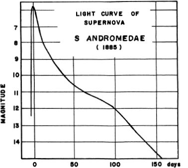

SOUTHERN TIP OF THE ANDROMEDA GALAXY, showing some of the objects identified on 100-inch telescope plates at Mt.Wilson Observatory. This plate originally appeared in E.Hubble’s “Realm of the Nebulae” and is reproduced by permission of Yale University Press. The object marked “star cloud” is NGC 206.
安德罗梅达银河系的南端，展示了威尔逊山天文台在100英寸望远镜板上发现的一些物体。该板块最初出现在哈勃（E.Hubble）的“星云王国”中，并经耶鲁大学出版社的许可复制。标有“星云”的对象是NGC 206。
Today it is known that the nova of 1885 was in reality one of the most brilliant stars which man has ever viewed; a representative of that wonderful but very rare class of exploding stars known as “supernovae”. At a distance of 2.2 million light years, a star which appears as a 6th magnitude object must have an actual luminosity of about 1.6 billion times that of the Sun. The corresponding absolute magnitude would be -18.2. This star, often referred to by its letter designation “S Andromedae”, has the distinction of being the first extra-galactic supernova ever observed, though of course its actual significance was not realized at the time. The supernova phenomenon appears to be due to the catastrophic collapse and explosive disintegration of a massive star, an event which may occur, on the average, every 2 or 3 centuries in any one galaxy. In the last thousand years there have been at least four such super-explosions observed in our own Galaxy: the first in Lupus in 1006 AD, the second in Taurus in 1054 AD, now represented by the expanding “Crab Nebula”, the third in Cassiopeia in 1572 (Tycho’s Star), and the fourth in Ophiuchus in 1604 (Kepler’s Star).
今天，众所周知，1885年的新星实际上是人类有史以来最灿烂的恒星之一。奇妙但罕见的爆炸恒星类别的代表，被称为“超新星”。在距离220万光年的距离上，出现为6级星体的恒星的实际光度必须约为太阳的16亿倍。相应的绝对大小为-18.2。这颗恒星通常以其字母命名“ S Andromedae”来称呼，其区别在于它是有史以来第一个观测到的银河外超新星，尽管其当时的实际意义当然并未得到认识。超新星现象似乎是由于大质量恒星的灾难性坍塌和爆炸性崩解所致，平均每个星系中每2或3个世纪就会发生一次这种事件。
M31 AS A RADIO SOURCE. The Andromeda Galaxy has been identified as a source of radio radiation by H.Brown and C.Hazard at Jodrell Bank in England. This radiation, at a frequency of 158.5 megacycles, was detected in 1950 with a paraboloidal antenna 218 feet in diameter, the largest in the world at the time. This was the first detection of radio energy from an external galaxy. A number of other cases are now known, and it is thought probable that every normal galaxy is at least a weak transmitter of radio radiation. The strongest radio sources are definitely abnormal objects such as the peculiar galaxies Cygnus A, NGC 5128 in Centaurus, and M87 in Virgo. In the Andromeda Galaxy, a normal spiral, the radio energy appears to originate in the tenuous gas clouds which occupy the spaces between the stars.
M31作为无线电源。英格兰Jodrell银行的H.Brown和C.Hazard已将仙女座星系确定为无线电辐射源。1950年用直径为218英尺的抛物面天线检测到了这种辐射，频率为158.5兆周，当时是世界上最大的。这是首次检测到来自外部星系的无线电能。现在已经知道了许多其他情况，并且认为每个正常星系都有可能至少是无线电辐射的弱发射器。最强的无线电源肯定是异常物体，例如奇特的星系天鹅座A，半人马座的NGC 5128和处女座的M87。在仙女座星系（正常的螺旋形）中，无线电能量似乎起源于占据恒星之间空间的稀疏气体云。
THE COMPANIONS OF THE ANDROMEDA GALAXY. M31 has four small satellite companions, dwarf systems of the elliptical type. All are apparently at the distance of the main system and are gravitationally connected with it. Each is composed of millions of faint stars; resolution of all four systems has been accomplished with red-sensitive exposures on the 100-inch and 200-inch telescopes. The main facts of interest are given in the following brief table. Luminosities are in millions of suns, diameters are in light years. M31 itself is listed first for comparison.
ANDROMEDA银河系的组成。M31有四个小型卫星伴星，椭圆形的矮化系统。所有这些显然都在主系统的距离之内，并且在重力上与之相连。每个都是由数百万个微弱的恒星组成；通过在100英寸和200英寸望远镜上进行红敏曝光，可以实现所有四个系统的分辨率。下表提供了感兴趣的主要事实。亮度以百万太阳为单位，直径以光年为单位。首先列出M31进行比较。

NGC 205. The largest of the companions of the Andromeda Galaxy; resolved into millions of stars on this 200-inch telescope plate. Mt.Wilson and Palomar Observatories.
NGC205。仙女座星系中最大的同伴；在这个200英寸的望远镜板上分辨出数百万颗恒星。威尔逊山和帕洛玛天文台。

NGC 185. One of the dwarf elliptical companions to the Great Andromeda Galaxy. Resolution into stars is shown on this 200-inch telescope plate. Palomar Observatory
NGC185。大仙女座星系的矮椭圆形伴星之一。这个200英寸的望远镜板上显示出星星的分辨率。帕洛玛天文台

For the amateur telescopist, all four of these small systems are available for observations. M32 may be seen in field glasses as a fuzzy 9th magnitude “star” just 24. to the south of the central mass of M31. According to Messier it was first seen by Le Gentil in 1749. The corrected radial velocity of M32 is about 10 miles per second in recession, probably a result of the orbital motion around the massive M31. In a 3-inch telescope, NGC 205 is visible as a larger but dimmer oval blob of light, 35’ northwest of the M31 nucleus. Messier may have been the first to see NGC 205, in the year 1773, though it was never entered in his famous catalog. M32 and NGC 205 are conspicuous on photographs of the Andromeda Galaxy and are well known to most observers. Both are considerably larger than visual observations would indicate; densitometer studies of M32 show that the true size is at least 8.5’. These are the closest galaxies of the elliptical type, and are typical systems of the Population II class. Only in a small dust cloud in NGC 205 are any Pop. I stars found.
对于业余伸缩镜专家来说，所有这四个小型系统都可供观察。在野外镜中，M32可以看作是位于M31中心质量以南24点处的模糊的9级“星”。根据Messier的说法，它最早是由Le Gentil于1749年发现的。在衰退中，M32的校正径向速度约为每秒10英里，这可能是围绕大型M31的轨道运动的结果。在3英寸望远镜中，NGC 205是一个较大但较暗的椭圆形光斑，位于M31原子核西北35'处。梅西耶可能是第一个在1773年看到NGC 205的人，尽管它从未被列入他著名的目录中。M32和NGC 205在仙女座星系的照片上很显眼，并且是大多数观察者所熟知的。两者都远远大于视觉观察所表明的；M32的密度计研究表明，真实尺寸至少为8.5'。这些是椭圆型最接近的星系，是人口II类的典型系统。在NGC 205中只有一小团尘埃云。我找到星星。
The other two objects, NGC 185 and NGC 147, are some distance from the main group, about 7° to the north. They are much fainter and considerably more difficult to view, although a good 6-inch telescope is capable of showing both of them when sky conditions permit. They are 58’ apart and can be seen together in a low power wide-field ocular. With absolute magnitudes of about -12.8 and -12.5 these are among the intrinsically faintest galaxies known.A feature of interest is the small irregularly-shaped dust patch which can be seen on 200-inch telescope photographs of NGC 185. The remainder of the galaxy appears to be pure Population II. NGC 185 and 147 are actually located in the constellation of Cassiopeia, and are described here only because of their physical connection with the Great Andromeda Galaxy.
其他两个物体NGC 185和NGC 147与主体之间相距一定距离，与北约7°。尽管在天空条件允许的情况下，一台好的6英寸望远镜能够显示它们，但它们却显得微弱得多且难以观察。它们相距58'，可以在低倍广角目镜中一起看到。这些绝对星系的绝对大小约为-12.8和-12.5，是已知的本质上最微弱的星系之一。有趣的特征是小的不规则形状的尘埃斑，可以在200英寸望远镜的照片中看到该星系的其余部分似乎是纯粹的种群II。NGC 185和147实际上位于仙后座星座，这里仅由于它们与大仙女座星系的物理联系而在此进行描述。
THE LOCAL GROUP. The Milky Way System and M31 are the two brightest members of a small cluster of galaxies known as the Local Group. At least 20 members are now recognized and additional faint systems may yet be found. For information on other members refer to: The Magellanic Clouds in Dorado and Tucana, M33 in Triangulum, NGC 6822 in Sagittarius, IC 1613 in Cetus, and the peculiar dwarf galaxies “Fornax System” and “Sculptor System”.
当地的团体。银河系和M31是被称为“本地群”的小星系团中两个最亮的成员。现在至少识别出20个成员，并且可能还会发现其他模糊系统。有关其他成员的信息，请参考：多拉多和图卡纳的麦哲伦星云，三角的M33，射手座的NGC 6822，塞图斯的IC 1613，以及特殊的矮星系“ Fornax系统”和“ Sculptor系统”。
NGC 752 A large scattered cluster of fairly bright stars, located about 5° south of Gamma Andromeda and slightly west, at 01548n3726. The group is actually more conspicuous in good binoculars than in the average telescope, due to its large area and low density; it makes its best impression in relatively small rich-field instruments with wide-angle eyepieces. The apparent diameter is about 45’, the members ranging in brightness from 9th to 12th magnitude.
NGC 752：01548n3726，位于伽玛仙女座（Gamma Andromeda）以南约5°，稍西偏西的一大片散布着明亮的恒星。实际上，与普通望远镜相比，这组望远镜的视野更大，因为它的面积大且密度低。它在带有广角目镜的相对较小的富视野仪器中给人留下了最深刻的印象。表观直径约为45'，其亮度范围为9至12级。
In an early study of the cluster, E.G.Ebbighausen (1939) obtained proper motions for 125 stars in the group, identifying 39 stars as almost certain members and 24 others as very probable. The annual proper motion of the cluster was found to be about 0.012” in PA 160°; the radial velocity is about 2.5 miles per second in approach. According to a summary by H.Arp (1962) the distance is close to 1300 light years; the actual diameter must then be about 17 light years. The brightest stars are listed in the short table below, according to photoelectric measurements by H.L.Johnson at McDonald Observatory in 1952. Not included is the apparently brightest star in the cluster (magnitude 7.1) which has been found to be a non-member.
在对该星团的早期研究中，EGEbbighausen（1939）获得了该组中125颗恒星的正确运动，确定了39颗恒星几乎是某些恒星，而其他24颗恒星很可能是恒星。发现在PA 160°时，星团的年度固有运动约为0.012英寸。进近时径向速度约为每秒2.5英里。根据H.Arp（1962）的总结，该距离接近1300光年。则实际直径必须约为17光年。根据麦当劳天文台HLJohnson在1952年进行的光电测量，下表中列出了最亮的恒星。星团中显然最亮的恒星（7.1级）不包含在内，不包括在内。


Star #1 is a G7 III giant about 40 times brighter than the Sun; the absolute magnitude is about +0.7, The membership of Star #2 is somewhat uncertain since the radial velocity seems to be much higher than the cluster stars; it may very well be a foreground object. Omitting this star, there are 7 other orange giants in the cluster but virtually all the other members are F-type subgiants with the single exception of #11. This A0 star seems to be confirmed as a cluster member by both proper motion and radial velocity measurements. With this one exception the cluster is characterized by a complete absence of early-type stars.
1号星是G7 III巨星，比太阳亮40倍；绝对星等约为+0.7，由于径向速度似乎比簇状星高得多，所以＃2星的隶属程度还不确定。它很可能是前景对象。省略这颗星，星团中还有7个其他的橙色巨人，但实际上所有其他成员都是F型子实体，唯一的例外是＃11。通过适当的运动和径向速度测量，似乎可以确认这颗A0星为团簇成员。除了这一例外，该星团的特征是完全没有早期型恒星。
Although not spectacular visually, NGC 752 is a most unusual and interesting cluster. Its stellar population, as shown by the familar H-R diagram or color-magnitude graph, seems to place it somewhere between the normal galactic clusters and the globulars in the matter of age and evolutionary development. Its structure and space motion definitely class it as a galactic cluster, but the stars seem to be evolving toward the typical pattern displayed by the H-R diagram of a globular cluster. The majority of members are F-type subgiants which lie well above the main sequence, and are presumably evolving toward the giant stage. The cluster population appears to end rather abruptly just above absolute magnitude +4; no fainter members are known, and probably do not exist.
尽管从视觉上看并不壮观，但NGC 752是最不寻常且最有趣的群集。如熟悉的HR图或色度图所示，它的恒星种群似乎就年龄和进化发展而言，将其置于正常的银河星团和小球之间。它的结构和空间运动肯定将其归类为银河星团，但恒星似乎正在向球状星团HR图显示的典型模式演变。大多数成员是F型亚族，它们远高于主要序列，并且可能正在向巨人阶段发展。集群人口似乎在绝对数量+4之上突然结束。没有较弱的成员是已知的，并且可能不存在。

NGC 752. The field of the widely-scattered star cluster is shown on this plate made with the 13-inch telescope at Lowell Observatory.
NGC 752.这张散布的星团的场在洛威尔天文台用13英寸望远镜制成的这张板上显示。
In an analysis of the H-R diagram, N.G.Roman (1955) finds that “the differences between the normal and the NGC 752 main sequences is very similar to the change of the theoretical main sequence with time”. Current ideas of stellar evolution suggest a minimum age of about 1.5 billion years for the cluster, older than most of the well known galactic clusters, but younger than M67 in Cancer and NGC 188 in Cepheus. Two other clusters which seem to be of comparable age and type are NGC 7789 in Cassiopeia and NGC 2158 in Gemini. H.Arp (1962) refers to these as “intermediate-age star clusters” and suggests that they were formed in the outer regions of the Galaxy where star formation is slower and the interstellar gas is less rich in the atoms of the metals. The fact that the subgiants of NGC 752 are metal-poor by a factor of 2 has been confirmed by spectroscopic analysis. It is also possible that the lack of smaller low-mass stars is due to their gradual escape from the cluster during the long period since its formation.
在对HR图的分析中，NGRoman（1955）发现“正常序列和NGC 752主序列之间的差异与理论主序列随时间的变化非常相似”。当前关于恒星演化的想法表明，该星团的最小年龄大约为15亿年，比大多数众所周知的银河星团年龄大，但在巨蟹星座的M67和在Cepheus的NGC 188年龄要小。年龄和类型相仿的另外两个星团是仙后座的NGC 7789和双子座的NGC 2158。H.Arp（1962）称它们为“中间年龄的星团”，并暗示它们是在银河的外围区域形成的，在该区域的恒星形成较慢，而星际气体中金属原子的富集较少。NGC 752的次要子的金属贫乏程度为2倍，这一事实已通过光谱分析得到了证实。缺少较小的低质量恒星的原因还可能是由于它们自形成以来的很长一段时间内逐渐从星团中逃脱。
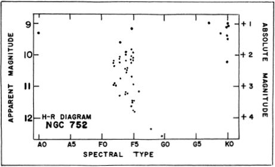
In view of the relatively great age of NGC 752, it would be interesting to identify possible white dwarf members of the cluster. At the distance of the group the most luminous white dwarfs would appear about 18th magnitude, and would be difficult to detect. In a preliminary study, W.J.Luyten (1951) found a number of faint white and bluish stars in the cluster area; nine of these have apparent magnitudes of 19 and 20 and may be cluster members, though no positive proof is yet available.
鉴于NGC 752的使用年龄相对较大，因此识别出该星团中可能存在的白矮星成员将很有趣。在该组的距离最远的白矮星将出现在第18级，并且很难检测到。在一项初步研究中，WJLuyten（1951）在星团区域发现了许多淡淡的白色和蓝色恒星；尽管尚无肯定的证据，但其中有九个的视星等分别为19和20，可能是集群成员。
NGC 891 One of the most striking examples of a spiral galaxy seen exactly edge-on; equalling in interest the more famous NGC 4565 in Coma Berenices. It is located about midway between Gamma Andromedae and the open cluster M34 in Perseus, at 02193n4207. The galaxy is not an easy object in the small telescope since the surface brightness is quite low, but on a clear night it may be detected with an aperture of 5 or 6 inches. The apparent size is about 12’ X 1’; the total magnitude about 12.
NGC 891旋转星系中最引人注目的例子之一是正好位于边缘。有趣的是，更著名的昏迷贝伦尼采（NGC 4565）。它位于Gamma Andromedae和Perseus的疏散星团M34之间的中间位置，位置为02193n4207。由于表面亮度非常低，因此在小型望远镜中，星系不是一件容易的事，但在晴朗的夜晚，可能会以5或6英寸的孔径检测到它。表观尺寸约为12'X 1'; 总大小约为12。
The distance of NGC 891 is still somewhat controversial. According to M.L.Humason, N.U.Mayall, and A.R.Sandage (1956) the galaxy is a member of a small group which includes NGC 1023 in Perseus, NGC 925 in Triangulum, and several other members. The computed modulus is about 29 magnitudes, giving a distance of 20 million light years. According to J.Materne (1974) of the Hamburg Observatory, however, the published Humason red-shift is seriously in error; he finds a corrected value of about 435 miles per second and accepts a distance of 13.1 megaparsecs, or about 43 million light years. The NGC 891-1023-925 group appears to be dynamically stable, with a total mass of about 800 billion suns.
NGC 891的距离仍然存在争议。根据MLHumason，NUMayall和ARSandage（1956）的说法，该星系是一个小组的成员，其中包括珀尔修斯的NGC 1023，三角的NGC 925和其他几个成员。计算出的模量约为29个量级，距离为2000万光年。但是，根据汉堡天文台的J.Materne（1974）的观点，已发表的Humason红移严重错误；他发现校正后的值约为每秒435英里，接受的距离为13.1兆帕，即约4,300万光年。NGC 891-1023-925组似乎是动态稳定的，总质量约为8000亿个太阳。
The true diameter of NGC 891 itself must be over 120,000 light years if the derived distance is accepted; the total luminosity must then be about 1½ billion times that of the Sun. The absolute magnitude may be about -18.6. This is several magnitudes fainter than M31.
如果接受得出的距离，NGC 891本身的真实直径必须超过120,000光年。那么总的光度必须是太阳的15亿倍。绝对大小可以是大约-18.6。这比M31弱了几个数量级。

NGC 891 in ANDROMEDA. A prime example of an edge-on spiral galaxy. 60-inch telescope photograph, Mt.Wilson and Palomar Observatories.
Normanda中的NGC 891。边缘螺旋星系的一个典型例子。60英寸望远镜照片，威尔森山和帕洛玛天文台。
Photographs taken with great telescopes show a complex system of dark clouds extending in the form of an equatorial band across the entire length of the galaxy, well defined in silhouette as it crosses the nucleus, and breaking up into irregular masses farther out in the region of the spiral arms. Much of these details are revealed only by long-exposure photography, though the dark band itself was known in the time of Lord Rosse, and is clearly shown on his drawings made in 1850 with the 6-foot reflector at Parsonstown, Ireland. According to John Herschel, the visual appearance of the object gave the impression of “a thin flat ring of enormous dimensions, seen very obliquely”. One of the very early plates of this galaxy was a fine photograph made by Isaac Roberts with his 20-inch reflector in 1891, and showing the dark lane much as it appears on modern photographs. Measurements by C.K.Seyfert (1940) show that the dark lane is not truly “dark” but is 0.6 to 0.9 magnitude fainter than the surrounding brightness of the galaxy.
用大望远镜拍摄的照片显示，一个复杂的乌云系统以赤道带的形式延伸到整个银河系的整个长度上，轮廓清晰地界定了它穿过核的位置，并分解成更远的不规则质量块。螺旋臂。尽管暗带本身在罗斯勋爵时代就已为人所知，但许多细节仅通过长时间曝光的摄影才能揭示出来，并且在1850年他在爱尔兰帕森斯敦（Parsonstown）用6英尺反射镜制作的画作中清楚地显示了这些暗带。根据约翰·赫歇尔（John Herschel）的说法，该物体的视觉外观给人的印象是“非常倾斜的巨大尺寸的扁平扁平环”。这个星系最早的板块之一是艾萨克·罗伯茨（Isaac Roberts）于1891年用他的20英寸反射镜拍摄的精美照片，并显示出与现代摄影作品相同的暗道。CKSeyfert（1940）的测量结果表明，暗线并不是真正的“暗”，而是比星系周围的亮度暗0.6至0.9量级。
In our own Milky Way, similar clouds of dust and dark nebulosity are responsible for the irregularities and dark lanes in the Milky Way. The famous “Great Rift” which runs from Cygnus through Sagittarius is a prime example. When we observe NGC 891, the explanation for such phenomena is quite plain, and it is interesting to note that wide-angle camera photographs of the Milky Way strikingly resemble photographs of NGC 891. (To make the comparison, refer to the section on the Sagittarius Milky Way)
在我们自己的银河系中，类似的尘埃云和暗雾状云是造成银河系中不规则和黑暗车道的原因。从天鹅座到射手座的著名的“大裂谷”就是一个很好的例子。当我们观察到NGC 891时，对这种现象的解释很简单，有趣的是，银河系的广角相机照片与NGC 891的照片惊人地相似。（要进行比较，请参阅射手座银河系）
NGC 7662 A bright, slightly elliptical planetary nebula, measuring 32” X 28”, bluish-green in color. Position 23234n4212. It can be detected with very small telescopes as a nearly stellar object of magnitude 8½, half a degree southwest of the 5th magnitude star 13 Andromedae. With a 6-inch glass and a magnification of at least 50X it begins to show a softly glowing disc. In a 10-inch glass the darker center gives it an annular appearance; the central star is a difficult object visually, but appears clearly on photographs. Using the 40-inch Yerkes refractor, E.Barnard described this nebula as “a beautiful object-a slightly elliptical disc with quite sharply defined outlines. Unsymmetrically placed on this is a roughly elliptical broken ring of greater brightness. The interior of this ring is dark but not black, and in this, approximately central, is ordinarily a faint stellar nucleus.”
NGC 7662明亮的略呈椭圆形的行星状星云，尺寸为32英寸X 28英寸，颜色为蓝绿色。位置23234n4212。可以用很小的望远镜将其探测为近乎恒星的8½星体，这是第五星13 Andromedae西南偏半度。使用6英寸的玻璃杯和至少50倍的放大倍率，它开始显示出柔和的光碟。在10英寸的玻璃杯中，较暗的中心使其具有环形外观。中央恒星在视觉上是一个困难的物体，但在照片上清晰可见。使用40英寸YerkesE.Barnard验光仪将此星云描述为“一个美丽的物体-椭圆形的圆盘，轮廓清晰鲜明。不对称地放置在它上面的是一个椭圆形的断环，亮度更高。这枚戒指的内部是黑暗的，但不是黑色的，并且在这个大约中央的地方，通常是一个微弱的恒星核。”
Like many of the planetaries, NGC 7662 shows some remarkable color effects when seen with a large telescope. The main body of the nebula appears to glow with a bright bluish green color, strongest in the concentric “shells” which enclose the darker center. These details are enclosed in a larger fainter shell which often seems to be of a rosy or pinkish tint, according to some observers, very possibly due at least in part to the effect of contrast. The central star, a hot bluish dwarf, often appears yellow by contrast with the bluish tint of the nebulosity.
与许多行星一样，NGC 7662在用大望远镜观察时也表现出一些非凡的色彩效果。星云的主体似乎以明亮的蓝绿色发光，在包围较暗中心的同心“壳”中最强。根据一些观察者的说法，这些细节被包裹在一个较大的较弱的外壳中，该外壳通常看起来像是玫瑰色或粉红色，这很可能至少部分是由于对比度的影响。中心恒星是炽热的蓝矮星，与星云的蓝色色调形成鲜明对比时，通常显得黄色。
The distances of the planetary nebulae are not known with any real accuracy. According to the Skalnate Pleso Catalogue (1951) the distance of NGC 7662 is about 1800 light years, the actual diameter about 20,000 AU. In a survey of the brighter planetaries, C.R.O’Dell (1963) derived a distance of 1740 parsecs or about 5600 light years for this nebula, increasing the actual size to 0.8 light year, or nearly 50,000 AU. The central star is a bluish dwarf with a continuous spectrum and a computed temperature of about 75,000°K. The nuclei of the planetary nebulae are among the hottest stars known.
行星状星云的距离并没有真正的精确度。根据Skalnate Pleso Catalogue（1951），NGC 7662的距离约为1800光年，实际直径约为20,000 AU。在对更亮的行星的调查中，CRO'Dell（1963）得出了该星云的距离为1740帕秒或约5600光年，从而将实际大小增加到0.8光年，即近50,000 AU。中央恒星是带连续光谱和计算温度约为75,000°K的蓝矮星。行星状星云的原子核是已知最热的恒星之一。
In the years between 1897 and 1908, E.Barnard found evidence of variability in this central star. His observations, made on nearly 80 different dates, showed a magnitude range of 12th to 16th; the periods of greatest brightness were not long lasting and occurred at irregular intervals. The reality of these changes has been questioned, however, by modern observers. C.R.0’Dell points out that the apparent brightness of a star surrounded by strong nebulosity is critically correlated with the seeing. “As the seeing varies, the ability to discern the star will change because of the superposition of the nebula, while nearby comparison stars will not be affected.” As mentioned elsewhere in this book, the central star of the Ring Nebula M57 in Lyra has also been suspected of variability but the physical reality of such changes remains unproved. Amateurs with fairly large telescopes have an opportunity to contribute information of value toward a solution of this controversy. The visibility, or otherwise, of the central star should be recorded on different nights, with estimates of the apparent magnitude; then the seeing conditions should be recorded by making critical observations on various close double stars.
在1897年至1908年之间，巴纳德（E.Barnard）发现了这颗中央恒星变异性的证据。他在近80个不同的日期进行的观测显示，其震级范围为12至16。最大亮度的时间段不会持续很长时间，并且以不规则的间隔发生。但是，现代观察家对这些变化的现实提出了质疑。CR0'Dell指出，被强烈的星云包围的恒星的视在亮度与视线密切相关。“随着视线的变化，由于星云的叠加，辨别恒星的能力将发生变化，而附近的比较星将不会受到影响。”正如本书其他地方所提到的，天琴座的M57环形星云的中央恒星具有也被怀疑具有可变性，但这种变化的物理现实仍未得到证实。拥有相当大望远镜的业余爱好者有机会为解决这一争议提供有价值的信息。应当在不同的夜晚记录中心星的能见度，否则应进行表观估计。然后应通过对各种近距离双星进行批判性观测来记录观测条件。

NGC 7662. Top: Direct photograph with the 42-inch reflector at Lowell Observatory. Below: Drawing by Barnard, with the Yerkes 40-inch refractor, Courtesy of the Royal Astronomical Society, from ‘‘Monthly Notices” Volume 68 (1908)
NGC7662。上图：在洛厄尔天文台用42英寸反射镜直接拍照。下图：由皇家天文学会提供，由Barnard用Yerkes 40英寸折射镜绘制，摘自“月度通告”，第68卷（1908年）
As in all the planetary nebulae, much of the light is fluorescence, induced by strong ultraviolet from the hot central star. The characteristic bluish-green glow, however, once attributed to a hypothetical new element “nebulium”, is now known to be chiefly due to the so-called “forbidden lines” of doubly ionized oxygen at 5007 and 4959 angstroms. The great strength of this radiation, excited by electron collision in the nebula, is possible only because of the extremely low density of the gas, found by computation to average something like 10,000 atoms per cubic centimeter. (For a more detailed account of fluorescense and collision excitation, refer to the “Ring Nebula” M57 in Lyra.
像在所有行星状星云中一样，大部分的光都是荧光，是由炽热的中央恒星发出的强烈紫外线诱发的。然而，特征性的蓝绿色辉光曾经归因于一种假设的新元素“星云”，现在主要是由于5007和4959埃的双重离子化氧气的所谓“禁忌线”。由于星云中电子碰撞激发的这种辐射强度很高，这仅是因为气体的密度极低，通过计算发现该气体的平均密度约为每立方厘米10,000个原子。（有关荧光感和碰撞激发的更多详细信息，请参阅Lyra中的“环形星云” M57。
To the astrophysicist the planetary nebulae present many interesting problems. There is no doubt that the nebula - a huge globe of rarified gas surrounding a small super-hot star - has been produced in some way by material ejected from the star. But it seems clear that one of the oldest theories, which regarded the planetaries simply as ancient novae, is quite wrong. The gaseous shells which appear around a former nova bear a superficial likeness to planetary nebulae, but expand at enormous rates and seem to vanish after a relatively short time. In contrast, the planetaries seem fairly permanent structures, expanding quite slowly, and in some cases seeming to be maintained by steady outflow of material from the star. Thus the central stars may be regarded as some variety of eruptive or “emission” star, possibly related to the Wolf-Rayet stars or to some of the rapidly evolving red giants which are known to be ejecting material into space. Another view regards a planetary nebula as the result of an exceptionally “lazy” nova. (A survey of facts and theories is presented in the section on M57 in Lyra. See Also NGC 7009 and NGC 7293 in Aquarius, and M27 in Vulpecula.)
对于天文学家来说，行星状星云存在许多有趣的问题。毫无疑问，星云是围绕一颗小的超热恒星的稀有气体的巨大球体，是由恒星喷出的物质以某种方式产生的。但是很明显，最古老的理论之一是错误的，该理论将行星简单地视为古代新星。出现在前新星周围的气态壳表面看起来很像行星状星云，但以极高的速度膨胀，并在相对较短的时间后消失。相比之下，行星似乎是永久性的结构，扩张得相当缓慢，在某些情况下似乎由恒星不断流出的物质所维持。因此，中央恒星可被视为某种形式的爆发性或“发射性”恒星，可能与Wolf-Rayet恒星有关，也可能与某些迅速演化的红色巨人有关，这些红色巨人已知是将物质喷射到太空中的。另一种观点认为行星状星云是异常“新星”产生的结果。（有关事实和理论的概述在天琴座的M57部分中进行了介绍。另请参见水瓶座的NGC 7009和NGC 7293，以及Vulpecula的M27。）
LIST OF DOUBLE AND MULTIPLE STARS
双星和多星清单

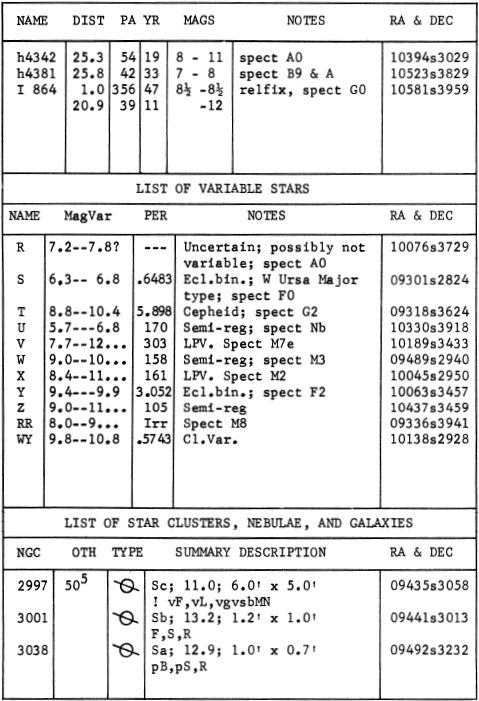
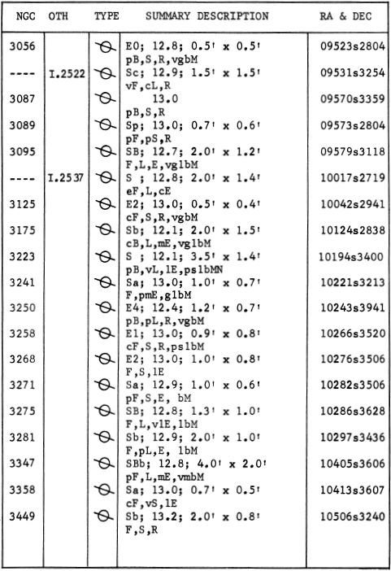

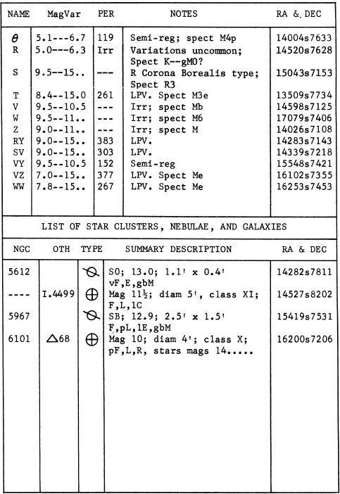
LIST OF DOUBLE AND MULTIPLE STARS
双星和多星清单


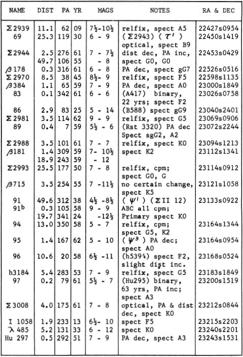


DESCRIPTIVE NOTES
描述性注释
ALPHA Name-SADAL MELIK, sometimes called “Rucbah”. Mag 2.93; spectrum G2 Ib. Position 22032s0034. The distance of Alpha Aquarii is about 1100 light years, the actual luminosity about 6000 times that of the Sun. The star has the same spectral class and surface temperature as the Sun, but is a giant star, whereas the Sun is a main sequence object. The diameter may be about 80 times that of the Sun, and the absolute magnitude is about -4.6. The annual proper motion is very slight, about 0.015”; the radial velocity is about 4½ miles per second in recession.
ALPHA名称-SADAL MELIK，有时也称为“ Rucbah”。马格2.93; 频谱G2 Ib。位置22032s0034。Alpha Aquarii的距离约为1100光年，实际的光度约为太阳的6000倍。该恒星与太阳具有相同的光谱类别和表面温度，但它是一个巨大的恒星，而太阳是主要的序列物体。直径可能是太阳直径的80倍，绝对大小约为-4.6。年度适当运动非常小，大约为0.015英寸；在衰退中，径向速度约为每秒4½英里。
BETA Name-SADAL SUND. Mag 2.86; spectrum GO Ib. Position 21289s0548. The computed distance is 1030 light years; the actual luminosity is about equal to that of Alpha Aquarii, at 5800 times the luminosity of the Sun. The annual proper motion is about 0.017”; the radial velocity is about 4 miles per second in recession.
测试版名称-SADAL SUND。马格2.86; 频谱GO Ib。位置21289s0548。计算出的距离为1030光年；实际光度大约等于Alpha Aquarii的光度，是太阳光度的5800倍。年度适当运动量约为0.017英寸；在衰退中，径向速度约为每秒4英里。
The star has two 11th magnitude companions at 35.5” and 58.6”, both optical attendants only. The closer star was discovered by John Herschel in 1828, the other by S.W. Burnham with a 6-inch refractor in 1879. Both separations appear to have increased slightly since discovery.
这颗恒星有两个11级的伴星，分别位于35.5英寸和58.6英寸，均是光学乘务员。较近的恒星是由约翰·赫歇尔（John Herschel）在1828年发现的，另一颗是由SW伯纳姆（SW Burnham）在1879年用6英寸折射镜发现的。自发现以来，两者的间隔似乎都有所增加。
GAMMA Name-SADACHBIA. Mag 3.84; spectrum B9 III. Position 22191s0138. Parallaxes obtained at Allegheny and Yale agree in giving the distance as about 95 light years, leading to an actual luminosity of about 20 suns (absolute magnitude about +1.5.) The star is a spectroscopic binary with a period of 58.1 days. The yearly proper motion is 0.12”; the radial velocity is about 8 miles per second in approach.
GAMMA名称-SADACHBIA。马格3.84; 频谱B9 III。位置22191s0138。在Allegheny和Yale获得的视差在给出95光年，实际发光度约为20个太阳（绝对值约为+1.5。）这颗恒星是光谱双星，周期为58.1天。年度适当运动为0.12英寸；进近时径向速度约为每秒8英里。
A 12th magnitude star at 49” was noted by John Herschel in 1838; it has no real connection with the bright star and the separation is decreasing due to the proper motion of Gamma itself. In the year 2000 the separation will be about 28”.
约翰·赫歇尔（John Herschel）在1838年发现了一颗49英寸12级星。它与明亮的恒星没有真正的联系，并且由于伽玛自身的适当运动，其距离正在减小。到2000年，分隔距离约为28英寸。
DELTA Name-SKAT. Mag 3.28; spectrum A3 V. Position 22520s1605. The distance is about 85 light years (Mt.Wilson and Yale parallaxes). The actual luminosity is about 28 times that of the Sun, the absolute magnitude about +1.2. The annual proper motion is 0.05” and the radial velocity is 11 miles per second in recession.
三角洲名称-SKAT。Mag 3.28；频谱A3V。位置22520s1605。距离约为85光年（威尔逊山和耶鲁视差）。实际的亮度大约是太阳的28倍，绝对值大约为+1.2。在衰退中，年度固有运动为0.05英寸，径向速度为每秒11英里。
EPSILON Name-AL BALI. Mag 3.77; spectrum Al V. Position 20450s0941. Parallax measurements are rather discordant, but suggest a distance of about 170 light years, giving an actual luminosity of about 70 suns. The expected luminosity of an Al main sequence star is about absolute magnitude +0.7 (luminosity = 40 suns) which would decrease the distance to about 135 light years.
EPSILON Name-AL BALI。马格3.77; 频谱Al V.位置20450s0941。视差测量值并不协调，但建议的距离约为170光年，实际亮度约为70个太阳。Al主序星的预期发光度约为绝对值+0.7（发光度= 40个太阳），这将使距离减小到约135光年。
The annual proper motion is 0.04”; the radial velocity, suspected to be somewhat variable, is about 10 miles per second in approach.
年度适当运动为0.04英寸；怀疑速度有些变化的径向速度在进近时约为每秒10英里。
ZETA Mag 3.66; spectrum F2 IV. Position 22262s0017. This is the central star of the Y-shaped asterism formed by Gamma, Zeta, Eta, and Pi Aquarii, a figure often called the “Water Jar” of Aquarius. Zeta is a very fine close binary star, probably discovered by C.Mayer in 1777, refound by W.Herschel about 1779, and well observed up to the present day. The two stars are magnitudes 4.42 and 4.59 and are 1.7” apart (1967). The separation appears to have been decreasing steadily during the past 180 years since a measurement of 4.56” was made by Herschel in 1781. The direction of revolution is retrograde, or clockwise.
ZETA Mag 3.66; 频谱F2 IV。位置22262s0017。这是由Gamma，Zeta，Eta和Pi Aquarii（通常被称为水瓶座“水罐”）构成的Y型星空的中心星。Zeta是一颗非常出色的近距离双星，可能是C.Mayer在1777年发现的，W.Hschel在1779年重新发现了它，直到今天为止都得到了很好的观察。两颗星的距离分别为4.42和4.59，相距1.7英寸（1967年）。自从1781年赫歇尔（Herschel）测量到4.56英寸的距离以来，这种间隔似乎一直在稳定减少。旋转方向是逆行或顺时针。
Although the binary character of this star was recognized by Herschel as early as 1804, the exact period is still uncertain, and values ranging from 400 years up to over 1600 years have appeared in various texts. According to a computation by Dr.O.Franz (1958) the period is about 600 years, with closest separation of the components in 1972. The computed orbit has a semi-major axis of 4.0” and an eccentricity of 0.45.
尽管早在1804年Herschel就认识到了这颗恒星的双星特征，但确切的时间仍不确定，各种文献中都出现了从400年到1600多年不等的数值。根据O.Franz博士（1958年）的计算，该周期大约为600年，各分量的最接近间隔在1972年。计算出的轨道的半长轴为4.0英寸，偏心率为0.45。

Both stars are subgiants of very similar type; the spectra are classed as F2 by some authorities, as F2 & Fl by others. The actual luminosities are 8 and 7 times that of the Sun. The distance of the system is about 75 light years. The true separation of the two stars averages close to 100 AU. Zeta Aquarii shows an annual proper motion of 0.19” in PA 78°; the radial velocity is about 15 miles per second in recession.
两颗星都是非常相似类型的子星。某些主管部门将光谱分类为F2，其他主管部门将光谱分类为F2和F1。实际的亮度是太阳的8到7倍。该系统的距离约为75光年。两颗星的真正分离平均接近100 AU。Zeta Aquarii在PA 78°处的年度正常运动为0.19英寸；在衰退中，径向速度约为每秒15英里。
According to an analysis by Dr.K.Strand, a third unseen component exists in the system. From the gravitational effect upon the visible pair, the invisible body appears to be a satellite of Zeta B, about which it revolves in 25.5 years at a distance of 0.4” or about 9 AU. The masses of the three stars are calculated to be 1.13, 0.85, and 0.28 the mass of the Sun. The third component would probably be visible as a 12th magnitude object were it not so close to the bright pair. From its rather small mass and low luminosity of about 0.008 that of the Sun, it seems likely that the unseen Zeta C is a red dwarf of type dM1 or dM2. The two bright stars, on the other hand, are definitely over-luminous for their masses, and appear to be evolving toward the giant stage. The absolute magnitudes are about +2.6 and +2.8.
根据Dr.K.Strand的分析，该系统中存在第三个看不见的组件。从对可见对的引力作用来看，不可见物体似乎是Zeta B的卫星，它围绕它旋转在25.5年内，距离为0.4英寸或9 AU。计算得出三颗恒星的质量分别为太阳的质量1.13、0.85和0.28。如果不是非常靠近明亮的那对，则第三个分量可能是第12级的对象。从其相对较小的质量和约0.008的低太阳光度来看，看不见的Zeta C可能是dM1或dM2型的红矮星。另一方面，这两颗明亮的恒星绝对是发光的，并且似乎正朝着巨大的舞台发展。绝对大小约为+2.6和+2.8。
The star is an excellent test object for the small telescope, since the magnitudes are so nearly equal. It may be resolved with a good 3-inch glass, seeing conditions permitting, and is always an easy object with the 7-inch Lowell Observatory refractor.
对于小望远镜来说，恒星是非常好的测试对象，因为其大小几乎相等。在条件允许的情况下，可以使用3英寸的优质玻璃来解决此问题，并且对于7英寸的洛厄尔天文台折射仪而言，它始终是一件容易的事情。
R Variable. Position 23412s1534. An interesting and peculiar variable star, discovered by Harding in 1811. It sometimes reaches the 6th magnitude at maximum and has an average period of 386 days, but individual periods may be very erratic. On occasion the star has remained nearly constant during an interval of several years. A stable period of this sort lasted from 1931 to 1934, when the magnitude remained close to 9. In the years following, it returned to its usual pattern of semiregular variation. The accompanying light curve shows typical fluctuations over an 8 year period, and was compiled from the observations of the AAVSO.
R变量。位置23412s1534。哈丁（Harding）在1811年发现的一颗有趣而奇特的变星。它有时最大达到六等星，平均周期为386天，但单个周期可能非常不稳定。有时，在几年的间隔中，恒星几乎保持恒定。这种稳定时期从1931年持续到1934年，当时震级保持在接近9的水平。在随后的几年中，它恢复了通常的半规则变化模式。随附的光曲线显示了在8年中的典型波动，并且是根据AAVSO的观察结果编制的。
R Aquarii is a red pulsating giant star of spectral type M7e, resembling the long period variables, but with certain peculiarities which make it a virtually unique object. From spectroscopic observations the existence of a companion star seems definitely established. The spectrum of the companion is that of a high-temperature 0 or B star, and is normally very faint, but becomes strong at times of unusual fluctuations in brightness. A peculiar feature of the system is that the amplitude of the “red” variation seems to decrease when the “blue” component is most active. There is little doubt that both stars are intrinsically variable. R Aquarii is thus the typical example of a rather rare class of variables characterized by composite spectra, in which the features of a low temperature red giant and a hot subdwarf are combined. P.W. Merrill has applied the term “symbiotic stars” to objects of this type.
R Aquarii是光谱类型为M7e的红色脉动巨星，类似于长期变量，但具有某些特殊性，这使其实际上是一个独特的天体。从分光镜观察来看，伴星的存在似乎已经确定。伴随的光谱是高温0或B星的光谱，通常非常微弱，但在亮度出现异常波动时会变强。该系统的一个独特功能是，当“蓝色”分量最活跃时，“红色”变化的幅度似乎会减小。毫无疑问，两颗恒星本质上都是可变的。因此，R Aquarii是一类非常罕见的以复合光谱为特征的变量的典型示例，其中结合了低温红巨星和热矮星的特征。PW

THE WATER JAR and COMET KOHOUTEK. The Y-shape asterism called the “Water Jar” appears at the top of this print, made January 13, 1974, with the 13-inch wide-angle camera at Lowell Observatory.
WATER JAR和COMET KOHOUTEK。1974年1月13日在洛厄尔天文台使用13英寸广角相机拍摄的这张照片的顶部出现了被称为“水罐”的Y形星象。
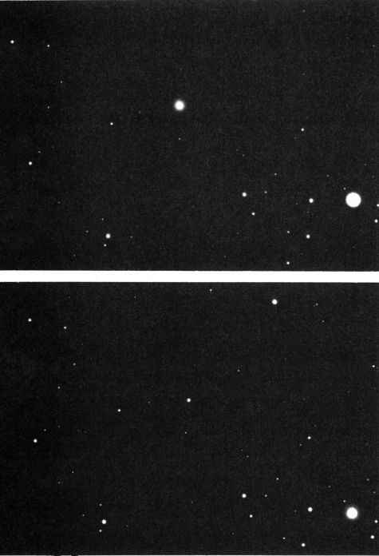
VARIATIONS IN R AQUARII. The top plate was made September 15, 1931; the other on August 25, 1974. Lowell Observatory photographs made with the 13-inch camera.
R AQUARII中的变化。顶板于1931年9月15日制成；另一幅摄于1974年8月25日。洛厄尔天文台使用13英寸相机拍摄的照片。
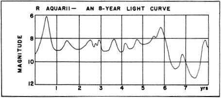
A revised distance determination of about 800 light years for R Aquarii allows us the deduce the following absolute magnitudes and luminosities for the system:
修订后的R Aquarii约800光年的距离确定使我们可以推断出该系统的以下绝对大小和光度：
M7e Red Star (maximum) = -1.1; luminosity = 230 X Sun
M7e红星（最大值）= -1.1；光度= 230 X太阳
B2? Blue Star (average) = +4.2; luminosity = 1.7 X Sun
B2？蓝星（平均）= +4.2; 光度= 1.7 X太阳
The red star appears to be a normal giant of the long period or semiregular variable class, similar to Omicron Ceti (Mira) but the companion is a true subdwarf underluminous star which exceeds our Sun only by a magnitude or so, even at maximum. Theoretical formulae suggest that its diameter may be about 1/6 to 1/10 that of the Sun, while the red star must be at least 100 times the size of the Sun. The separation of the two stars may be on the order of 1 AU. Radio emission from the R Aquarii system has been detected at the Algonquin Radio Observatory in Ontario in April 1973.
这颗红星似乎是一个长周期或半规则变星的正常巨星，类似于Omicron Ceti（Mira），但它的伴星是真正的矮矮星地下发光恒星，仅比我们的太阳高出一个数量级，甚至最大。理论公式表明，其直径可能约为太阳的1/6至1/10，而红色恒星的直径至少应为太阳大小的100倍。两颗星的间隔可能约为1 AU。1973年4月在安大略省的阿冈昆无线电天文台检测到R Aquarii系统的无线电发射。
THE R AQUARII NEBULA. As early as 1919 it was found that the spectrum of R Aquarii showed several bright lines characteristic of the gaseous nebulae. Although these lines were found to vary greatly in intensity, they showed no evident correlation with the magnitude changes of the star. This spectroscopic discovery was confirmed in 1921 by observations made with the 42-inch reflector at the Lowell Observatory. Photographs obtained by C.O.Lampland revealed a peculiar lens-shaped nebulosity about 2’ in extent, composed of curved filaments symmetrically placed about the star. In the center of this cloud, the star itself appeared embedded in a small nebulous disc resembling a miniature planetary nebula, but which seemed to be variable in brightness.
拉夸里星云。早在1919年，人们发现R Aquarii的光谱显示出气态星云的几条亮线。尽管发现这些线的强度变化很大，但它们与恒星的大小变化没有明显的相关性。该光谱学发现于1921年通过在洛厄尔天文台用42英寸反射镜进行观测得到了证实。COLampland获得的照片显示出一个奇特的透镜状星云，范围约为2'，由围绕恒星对称放置的弯曲细丝组成。在这颗云的中心，恒星本身似乎嵌在一个类似微型行星状星云的小星云盘中，但亮度似乎是可变的。

NEBULOSITY SURROUNDING R AQUARII. Top: direct photograph with the 100-inch reflector. Below: drawing made from several photographs.
包围R AQUARII的周围环境。上图：使用100英寸反射镜直接拍照。下图：由几张照片制成的图画。
Mt.Wilson Observatory
威尔逊山天文台
The expansion of the outer nebula, first suspected by Lampland, has been confirmed by E.Hubble and W.Baade at Mt.Wilson, and may indicate that a nova-like outburst occurred in the system some 6 or 7 centuries ago. This possibility casts new light on the significance of the symbiotic stars, and opens up a new and fascinating line of thought. A number of eruptive stars are now recognized as members of close binary systems, and there is growing evidence that the “symbiotic nature” of these stars is in some way responsible for the nova-like activity.
威尔逊山的哈勃（E.Hubble）和巴德（W.Baade）证实了外星云的膨胀，首先是兰普兰（Lampland）怀疑的，这可能表明大约在6或7个世纪前，系统中发生了新星状爆发。这种可能性为共生星的重要性提供了新的思路，并开辟了新的和令人着迷的思路。现在，许多喷发恒星被认为是紧密双星系统的成员，并且越来越多的证据表明，这些恒星的“共生性质”在某种程度上导致了类似新星的活动。
Z Andromedae is perhaps the most typical example, and its violent outbursts, such as that of 1914, have been thoroughly studied. Between explosions the star appears to act like a normal semiregular red giant. The bright outbursts, however, appear to originate in a hot bluish companion. Two of the actual recurrent novae - T Coronae and RS Ophiuchi - are close binary systems of the same type. In each case there is a hot blue subdwarf, mated with a cooler star of later spectral type. Even the explosive SS Cygni stars seem physically related to the abovementioned objects, differing chiefly in the fact that both components are dwarfs or subdwarfs, and the separation is much less.
Z Andromedae也许是最典型的例子，并且对它的猛烈爆发（例如1914年的猛烈爆发）进行了深入研究。在爆炸之间，恒星看起来像正常的半规则红色巨人。然而，明亮的爆发似乎来自热的蓝色同伴。实际的复发新星中的两个-T Coronae和RS Ophiuchi-是同类型的紧密双星系统。在每种情况下，都有一个热的蓝色亚矮星，与较晚光谱类型的较冷恒星相配。甚至连SS Cygni爆炸星在物理上也与上述天体有关，主要不同之处在于两个分量都是小矮人或小矮人，而相隔的距离要小得多。
Mention should be made also of two long-period variable stars, Mira Ceti and X Ophiuchi, which have binary companions actually visible through the telescope. The companion to X Ophiuchi appears to be a normal K-star, but that of Mira is a bluish dwarf or subdwarf which is itself variable by at least two magnitudes, and thus closely resembles the unseen companions of the other symbiotic stars.
还应该提到两个长周期的变星，米拉·塞蒂和X蛇夫座，它们实际上通过望远镜可以看到双星伴星。X Ophiuchi的伴星似乎是正常的K星，而Mira的伴星是蓝矮星或亚矮星，其自身至少相差两个量级，因此非常类似于其他共生星的看不见的同伴。
The relationship of the symbiotic stars, erratic variables, and novae, has been the subject of much speculation. A current theory suggests that the two members of a symbiotic pair may have evolved to the point where an expanding giant star has begun to engulf its smaller neighbor; the outbursts of the smaller and partially degenerate star thus being attributed to accretion of material from the giant. It is difficult to evaluate this picture, and some recent studies of the SS Cygni stars seem to cast doubt on the traditional assumption that the outbursts always originate in the bluer and hotter star. However, although the details are still extremely hazy, it seems most probable that some process of interaction between the components is chiefly responsible for the erratic fluctuations of the symbiotic stars. A similar mechanism may eventually be identified as a cause of the SS Cygni outbursts, and very possibly of the recurrent novae. The idea was first suggested for the star AE Aquarii, a peculiar erratic dwarf which is now known to have a close K-type companion.
共生恒星，不稳定的变量和新星之间的关系一直是许多猜测的主题。当前的理论表明，一个共生对的两个成员可能已经进化到一个正在膨胀的巨星开始吞噬它的较小邻居的程度。较小且部分退化的恒星的爆发，因此归因于巨星物质的积聚。很难评估这张照片，最近对SS Cygni恒星的一些研究似乎质疑传统的假设，即爆发总是起源于更蓝和更热的恒星。然而，尽管细节仍然非常朦胧，似乎最有可能的是一些组件之间相互作用的过程主要负责共生恒星的不稳定波动。类似的机制最终可能被确定为SS Cygni爆发的原因，并且很有可能是复发新星的原因。这个想法最初是针对恒星AE Aquarii提出的，这是一种奇特的不规则矮人，如今已知具有紧密的K型伴侣。
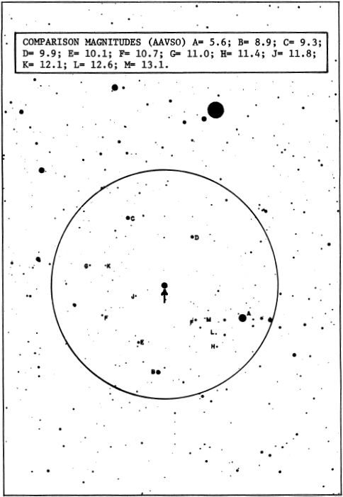
R AQUARII. Finder chart made from a 13-inch telescope plate at Lowell Observatory. Circle diameter = 1 degree. North is at the top. Limiting magnitude about 15. Bright star at top is Omega-2 Aquarii, magnitude 4.6.
R AQUARII。洛威尔天文台的13英寸望远镜板制成的查找器图。圆直径= 1度。北部在顶部。极限星等为15。顶部的亮星为Omega-2 Aquarii，星等为4.6。
(Refer also to: Z Andromedae, AE Aquarii, Omicron Ceti, BF Cygni, and AG Pegasi. For typical SS Cygni stars refer to: U Geminorum, SS Aurigae, SU Ursa Majoris, and SS Cygni. Recurrent novae are chiefly described under: T Corona Borealis, WZ Sagittae, U Scorpii, T Pyxidis, and RS Ophiuchi. For novae in general refer to: V603 Aquilae, GK Persei, DQ Herculis, and CP Puppis.)
（另请参阅：Z Andromedae，AE Aquarii，Omicron Ceti，BF Cygni和AG Pegasi。对于典型的SS Cygni恒星，请参考：U Geminorum，SS Aurigae，SU Ursa Majoris和SS Cygni。复发性新星的主要描述如下： T Corona Borealis，WZ Sagittae，U Scorpii，T Pyxidis和RS Ophiuchi。对于新星，通常指：V603天鹰座，GK Persei，DQ Herculis和CP Puppis。）
AE Variable. Position 20376s0103. A peculiar faint erratic variable star, related probably to the SS Cygni stars, and possibly to the recurrent novae. The star is characterized by almost constant activity and the variations are unusually complex. At times there are very sudden explosive maxima when the light nearly doubles for an hour or so; this phenomenon may occur repeatedly at intervals of about a day. The rise to maximum is frequently very rapid, though on occasion the star will brighten by only a small amount and then fade back to normal in a short time. There are also more violent eruptions which occur at intervals of about a year, when the brightness may increase by two magnitudes. And finally, recent studies reveal extremely rapid changes of small amplitude with average periods of less than an hour.
AE变量。位置20376s0103。一颗奇特的微弱不稳定的变星，可能与SS Cygni恒星有关，也可能与周期性新星有关。恒星的特征是几乎恒定的活动，并且变化异常复杂。有时，当灯光几乎翻倍达一个小时左右时，会出现非常突然的爆炸最大值。这种现象可能以大约一天的间隔重复发生。上升到最大值通常非常快，尽管有时恒星只会少量发光，然后在短时间内逐渐恢复正常。当亮度可能会增加两个数量级时，还会爆发大约每隔一年的剧烈爆发。最后，最近的研究表明，小幅度变化非常迅速，平均周期不到一个小时。
AE Aquarii is thus an exciting object to observe, although the greatest visual brightness is rarely as high as 10th magnitude. The rapid changes make it a difficult object for adequate spectroscopic study even with large instruments. At discovery by A.Wachmann in 1931, the star was thought to be a long period variable of the Mira type. The sudden outbursts were first detected in a photographic study by E.Zinner in 1937, and the star was then classed among the SS Cygni stars, sometimes called ‘‘cataclysmic variables”. Although AE Aquarii is much more erratic and unpredictable than any of the classic SS Cygni stars, it still appears to be a member of the same general physical group. Like SS Cygni itself, the star is known to be a very close binary system in very rapid revolution. A.H.Joy found the radial velocity to be variable in 1954, with a range of about 180 miles per second. The masses of the two stars appear to be very nearly equal. The period is given by Joy as 0.701 days, but according to M.F.Walker (1965) the most recent observations indicate a period closer to 10 hours.
尽管最大的视觉亮度很少会达到十分之一，但AE Aquarii仍然是令人兴奋的观察对象。快速的变化使得即使使用大型仪器，也很难进行足够的光谱研究。在1931年A.Wachmann的发现中，该恒星被认为是Mira类型的长期变星。突然的爆发首先在摄影中被发现1937年由E.Zinner进行研究，然后将该恒星归类为SS Cygni恒星，有时也称为“催化变数”。尽管AE Aquarii比任何经典的SS Cygni恒星都更加不稳定和不可预测，但它似乎仍然是同一常规物理类的成员。与SS Cygni本身一样，该恒星在快速旋转中也被认为是非常紧密的双星系统。AHJoy在1954年发现径向速度是可变的，范围约为每秒180英里。两颗星的质量似乎非常接近。Joy给出的周期为0.701天，但是根据MFWalker（1965）的最新观察，该周期接近10小时。
The spectrum of the brighter star was classed as dG8 by Joy, but is now considered to be about dKO. This star has about a third the luminosity of the Sun, and the absolute magnitude is about +6. The other component, regarded as the source of the erratic outbursts, is a dwarfish hot star with a bright-line spectrum of uncertain class, and an absolute magnitude of about +7. The actual separation of the two stars cannot be more than a few hundred thousand miles, which implies that they are nearly in contact. The system is remarkably similar to SS Cygni, and other such related stars as U Geminorum and Z Camelopardi. In each case a dwarfish hot star is accompanied by a larger G or K type companion. These systems are of unusual interest and significance, since they seem to show us a pair of stars “caught” at a very critical phase in their mutual evolution. The components may indeed be acting upon each other in such a way as to alter the normal course of a star’s evolution. The hot star is regarded as an object which may be near the white dwarf state, or becoming at least partially degenerate. It is suggested that the K-type companion is beginning its evolutionary expansion, resulting in a gas flow from the larger star toward the smaller; possibly some of this material is collected by the hot star, with explosive results. Although the truth of such theories is still very difficult to judge, some verification may come from studies of the recurrent novae, several of which are now known to be close binaries. As in the case of the “symbiotic” stars and the novae, it seems very probable that some form of interaction between the components is responsible for the erratic outbursts. (Refer also to SS Cygni and U Geminorum)
Joy将该明亮恒星的光谱归类为dG8，但现在认为它约为dKO。这颗恒星的光度约为太阳的三分之一，绝对大小约为+6。另一个成分，被认为是不稳定的爆发源，是矮星热星，其亮线光谱不确定，其绝对大小约为+7。两颗星的实际间隔不能超过几十万英里，这意味着它们几乎处于接触状态。该系统非常类似于SS Cygni，以及其他类似的恒星，如U Geminorum和Z Camelopardi。在每种情况下，矮星热星都会伴有更大的G型或K型伴侣。这些系统异常重要且意义重大，因为它们似乎向我们展示了一对处于相互进化的非常关键阶段的恒星。这些组件确实可能以改变恒星演化的正常过程的方式相互作用。热星被视为可能接近白矮星状态或至少部分退化的天体。有迹象表明，K型伴星开始其演化膨胀，导致气体从较大的恒星流向较小的恒星；可能其中一些物质是由热星收集的，产生爆炸性结果。尽管这些理论的真实性仍然很难判断，但是对反复出现的新星的研究可能会得到一些验证，其中一些现在被认为是紧密的双星。就像“共生”恒星和新星一样，组件之间某种形式的交互作用似乎很可能导致不稳定的爆发。（另请参阅SS Cygni和U Geminorum）
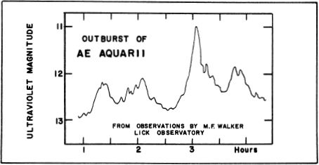

AE AQUARII. Finder chart made from a 13-inch telescope plate at Lowell Observatory. Circle diameter = 1 degree. North is at the top. Limiting magnitude about 15. Bright star at right is 71 Aquilae, magnitude 4.3.
AE AQUARII。洛威尔天文台的13英寸望远镜板制成的查找器图。圆直径= 1度。北部在顶部。限制星等为15。右边的亮星为71天鹰座，星等为4.3。
CY Variable. Position 22352n0117. CY Aquarii is a noted short-period pulsating variable which, at the time of its discovery by C.Hoffmeister in 1934, had the shortest period on record, only 88 minutes. Up to 1965 only one star of still shorter period had since been found, SX Phoenicis, with a period of 79 minutes.
CY变量。位置22352n0117。CY Aquarii是一个著名的短周期脉动变量，在C.Hoffmeister于1934年发现时，它是有记录的最短时间，只有88分钟。到1965年为止，只发现了一颗更短周期的恒星SX Phoenicis，周期为79分钟。
CY Aquarii has a light curve similar to those of the cepheids (refer to Delta Cephei). The rise to maximum is very rapid and the decline proceeds much more slowly. If the star is observed when increasing in brightness, the light change is so rapid that it can be detected in less than 10 minutes watching. The visual range is from magnitude 10.6 to 11.3.
CY Aquarii的光亮曲线与造父变星的光亮曲线相似（请参阅Delta Cephei）。上升到最大值非常快，而下降进行得慢得多。如果在增加亮度时观察到星星，则光线变化是如此之快，以至于在观看不到10分钟的时间内即可察觉到。可视范围是从10.6到11.3。
The spectral class changes from B8 to A3 as the star falls to minimum, and because of the slight resulting change in the color, the photographic range is 0.2 magnitude greater than the visual. The computed distance of the star is close to 1300 light years, giving the average luminosity of the star as about 9 times that of the Sun. The absolute magnitude at maximum must be about +2.6.
随着星空降到最低，光谱等级从B8变为A3，并且由于颜色的轻微变化，因此摄影范围比视觉范围大0.2级。算出的恒星距离接近1300光年，使恒星的平均发光度约为太阳的9倍。最大绝对值必须约为+2.6。
DWARF CEPHEIDS. CY Aquarii was formerly classified as a “cluster variable” of the RR Lyrae type. From its small size and lower luminosity, and its position on the H-R diagram, it is now evident that the star cannot be a true cluster variable. It appears to be the typical example of a new class of short-period pulsating variables called “dwarf cepheids” by H.J.Smith of Harvard Observatory. The stars are dwarfs of spectral types A and F, and generally have periods of from 1.3 hours to 4.7 hours. They are not as large as the true RR Lyrae stars, but are denser, and from 2 to 30 times less luminous. They show a period luminosity relationship whereby the stars of longer period have the highest actual luminosity, but the smallest range in brightness. It seems probable that these stars are related to the variables of the Delta Scuti class, of which Rho Puppis and Delta Scuti are typical examples (periods of 3.38 and 4.65 hours respectively). Other known stars of the class are Delta Delphini, CC Andromedae, and DQ Cephei. For the H-R diagram classification of the various short-period pulsating stars, refer to Delta Scuti.
矮人头颅。CY Aquarii以前被归类为RR Lyrae类型的“集群变量”。从它的小尺寸和较低的亮度，以及它在HR图上的位置，现在可以明显看出，恒星不可能是真正的星团变量。这似乎是哈佛天文台的HJSmith称为“矮造父变星”的新型短周期脉动变量的典型示例。恒星是光谱类型为A和F的矮星，通常具有1.3到4.7个小时的周期。它们不像真正的RR天琴星那么大，但密度更高，发光度低2到30倍。它们显示出周期光度关系，其中较长时间的恒星具有最高的实际光度，但亮度范围最小。这些恒星似乎与Delta Scuti类的变数有关，其中Rho Puppis和Delta Scuti是典型示例（分别为3.38和4.65小时）。该类别中其他知名的星星是德尔菲尼三角洲（Delta Delphini），Andromedae CC和塞菲（DQ Cephei）。有关各种短周期脉动星的HR图分类，请参阅Delta Scuti。
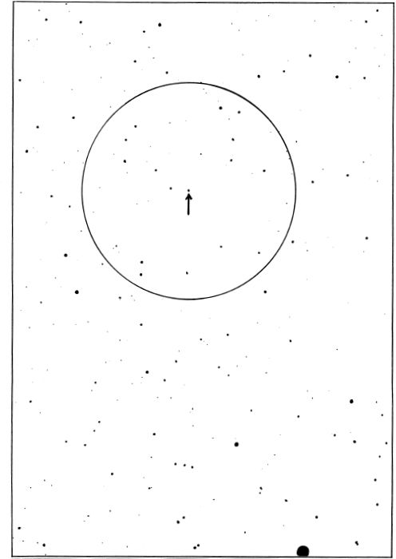
CY AQUARII. Finder chart made from a 13-inch telescope plate at Lowell Observatory. Circle diameter = 1 degree. North is at the top. Limiting magnitude about 14. Bright star at lower right is Eta Aquarii, magnitude 4.1.
CY AQUARII。洛威尔天文台的13英寸望远镜板制成的查找器图。圆直径= 1度。北部在顶部。限制星等约为14。右下方的亮星为Eta Aquarii，星等为4.1。
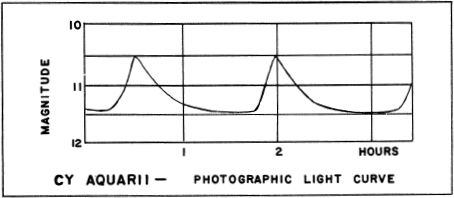
M2 (NGC 7089) Position 21309s0104. A fine bright globular star cluster, first seen by Maraldi in 1746, and rediscovered by Charles Messier in 1760. It is an object easily available to small telescopes, visible as a tiny hazy “star” in field glasses, and resembling a little ball of glowing mist in a 2-inch telescope. With a good 8-inch or 10-inch telescope, partial resolution of the cluster may be achieved. The visual diameter of about 7’ increases to 11’ on the best photographic plates, and the total integrated magnitude is about 6.0.
M2（NGC 7089）位置21309s0104。精细明亮的球状星团，由Maraldi于1746年首次发现，并于1760年由Charles Messier重新发现。它是小型望远镜可轻易获得的物体，在野外镜中看起来像是一个朦胧的“恒星”，类似于一个小球。在2英寸望远镜中发光的雾气。使用好的8英寸或10英寸望远镜，可以实现聚光镜的部分分辨率。在最佳照相板上，约7'的视觉直径增加到11'，总积分量约为6.0。

GLOBULAR STAR CLUSTER M2. A fine object for larger amateur telescopes, partially resolvable in an 8-inch glass.
球形星团M2。大型业余望远镜的优良物件，可部分溶解在8英寸玻璃中。
Lowell Observatory 42-inch reflector.
洛厄尔天文台42英寸反射镜。
M2 lies at a distance of about 50,000 light years, considerably farther than the great M13 in Hercules or M5 in Serpens. The actual diameter is about 150 light years. One of the richer and more compact globular clusters, it gains in impressiveness through its position in a rather blank portion of the sky ordinarily devoid of faint stars. In large telescopes the cluster is a wonderful sight; John Herschel compared the distribution of the stars to a heap of fine sand, and considered it to be composed of many thousands of 14th and 15th magnitude stars. Today it seems certain that the total population of the cluster is not less than 100,000 stars, the brightest of which are red and yellow giants with absolute magnitudes of about -3. As a standard of comparison it should be remembered that our Sun at such a distance would appear as a star of magnitude about 20.7, detectable only with the greatest telescopes. The total absolute magnitude of M2 is close to -10, or about half a million times the luminosity of the Sun.
M2的距离约为50,000光年，比大力神的M13或塞尔彭的M5远得多。实际直径约为150光年。它是更丰富，更紧凑的球状星团之一，它通过位于通常没有昏暗恒星的天空相当空白的位置而获得令人印象深刻的印象。在大型望远镜中，星团是一个奇妙的景象。约翰·赫歇尔（John Herschel）将恒星的分布比作一堆细沙，并认为它是由成千上万的14级和15级星组成的。如今，似乎可以肯定的是，星团的总数量不少于10万颗星，其中最亮的是绝对值约为-3的红色和黄色巨星。作为比较的标准，应该记住，在这样的距离下，我们的太阳将看起来像一颗大约20.7的恒星，只有用最大的望远镜才能检测到。M2的总绝对大小接近-10，大约是太阳光度的一百万倍。
According to Sawyer’s “Bibliography of Individual Globular Clusters” (1947) M2 contains 17 known variable stars, a small total compared to the nearly 200 recognized in the cluster M3 in Canes Venatici. The majority of these stars are short-period pulsating variables of the RR Lyrae class, often called “cluster variables” from their abundance in the globulars. Three classical cepheid variables have been studied in M2 by H.Arp and G.Wallerstein (1961); these reach 13th magnitude at maximum, and the periods are 15.57, 17.55, and 19.30 days. A fourth object appears to be an RV Tauri type star with a 67.09 day period and a range of slightly over 2 magnitudes.
根据索耶的“单个球状星团的参考书目”（1947年），M2包含17个已知的变星，与Canes Venatici的M3星团中识别的近200个相比，总数很小。这些恒星中的大多数是RR Lyrae类的短周期脉动变量，由于它们在球状体中的丰度，通常被称为“集群变量”。H.Arp和G.Wallerstein（1961）在M2中研究了三个经典造父变星。它们最多达到13级，周期为15.57、17.55和19.30天。第四个天体似乎是RV Tauri型恒星，周期为67.09天，射程略大于2级。
The integrated spectral class of the cluster is F0; the radial velocity is very slight, amounting to less than 2 miles per second in approach. (For an account of the significance of the globulars in the study of stellar evolution, refer to M13 in Hercules).
群集的综合光谱类别为F0；径向速度非常小，接近时每秒不到2英里。（有关球状体在恒星演化研究中的重要性的说明，请参见大力神中的M13）。
M72 (NGC 6981) Position 20508s1244. Globular star cluster, located in the extreme western portion of the constellation, 3° WSW of the Saturn Nebula NGC 7009. This is not one of the more brilliant globulars and generally may be described as unimpressive except in large telescopes. It was discovered in August 1780 by M. Mechain, and confirmed by Messier in October of the same year. Messier thought the apparent diameter to be about 2’ and the observations of Sir William Herschel (1810) gave about the same apparent size. Modern photography increases the apparent size to about 5’. Visually, the total magnitude is about 9.
M72（NGC 6981）位置20508s1244。球状星团位于星座的最西端，是土星星云NGC 7009的西南偏西3°。这不是较亮的球状之一，通常可以描述为不令人印象深刻，大型望远镜。它是由M. Mechain在1780年8月发现的，并于同年10月由Messier确认。梅西耶认为表观直径约为2'，威廉·赫歇尔爵士（Sir William Herschel）（1810）的观察也得出了相同的表观尺寸。现代摄影将视在大小增加到大约5'。在视觉上，总大小约为9。
Herschel, with a power of 280X on his great reflector described M72 as “a very bright object....a cluster of stars of a round figure but the very faint stars on the outside of globular clusters are generally a little dispersed so as to deviate from a perfectly circular form.... it is very gradually extremely condensed in the centre, but with much attention even there the stars may be distinguished.” M72 is one of the more “open” globulars, and according to H.Shapley has a degree of concentration comparable to M12 in Ophiuchus and M4 in Scorpius.
赫歇尔在其大型反光镜上具有280倍的放大倍率，将M72描述为“一个非常明亮的物体。。。。。。。。。。。。。。。。。。。。。。。。。。。。。。。。它偏离了完美的圆形。。。它逐渐逐渐凝结在中心，但是即使在那儿，也可能会注意到恒星。” M72是更“开放”的球状之一，据H.Shapley称。具有比在蛇夫座中的M12和天蝎座中的M4相当的集中度。
In an extensive catalog published by H.S.Hogg (1963) the apparent diameter is given as 5!1, the total integrated magnitude as 10.25 (photographic), and the integrated spectral type as G2. From current studies the distance modulus appears to be about 16.3 magnitudes, giving the distance as about 60,000 light years and the extreme diameter as 85 light years. This cluster is one of the more difficult globulars to resolve, as the brightest stars do not quite attain 15th magnitude. K.G.Jones (1968) speaks of it as “surprisingly difficult to resolve for so large and unconcentrated a cluster.” With the author’s 10-inch reflector, a definite mottling around the edges becomes noticeable with moderate powers, though averted vision is necessary to confirm the suspicion of partial resolution. Walter S.Houston reported much the same impression with a 13-inch aperture telescope.
在HSHogg（1963）出版的大量目录中，表观直径为5！1，总积分幅度为10.25（照片），积分光谱类型为G2。根据目前的研究，距离模量似乎约为16.3量级，距离为约60,000光年，极限直径为85光年。该星团是更难解析的球状星团之一，因为最亮的恒星并未达到15级。KGJones（1968）称其为“对于如此大且不集中的集群很难解决。”使用作者的10英寸反射镜，在中等强度的情况下，边缘周围一定会出现明显的斑点，尽管必须通过避开视野来确认怀疑部分解决。沃尔特·S。
Forty-two variable stars have been discovered in M72 up to 1973, the majority of which appear to be short-period pulsating stars of the RR Lyrae class. The cluster shows an approach radial velocity of about 160 miles per second.
到1973年，在M72上已经发现了42颗变星，其中大多数似乎是RR天琴星类的短周期脉动星。该星团显示进场径向速度约为每秒160英里。
M73 (NGC 6994) Position 20562s1251. This object, not a true cluster, is merely a knot of four small stars, located about 1.5° E and slightly south from M72. It was noted by Messier in October 1780 and described as a cluster of “three or four small stars which look like a nebula at first sight; it contains a little nebulosity..” On this last point Messier was definitely in error, as the best of modern photographs show no signs of nebulosity in the group, though of course it is a common experience that faint double or triple stars often appear fuzzy in small telescopes or with poor seeing conditions. The over-all diameter of the asterism is about 1!2, the individual magnitudes about 10.5, 10.5, 11.0, and 12.0. The object is aptly described by Admiral Smyth’s brief note: “A trio of 10th magnitude stars in a poor field - that is M73. I give it out of respect to Messier’s memory.”
M73（NGC 6994）位置20562s1251。这个物体，不是真正的星团，仅仅是四个小恒星的结，它们位于东经1.5度左右，离地球稍南M72。梅西耶在1780年10月注意到它，并形容为“三到四颗小恒星，乍一看像星云。在最后一点上，梅西耶绝对是个错误，因为最好的现代摄影作品没有显示该组中有任何星云，但当然，通常的经验是，淡淡的双星或三星通常显得模糊不清。在小型望远镜或视差条件下。星形的总直径约为1！2，单个大小约为10.5、10.5、11.0和12.0。史密斯海军上将的简短记录恰当地描述了该天体：“在一块贫瘠的田野中，一颗三等分的十等星-M73。我出于对Messier记忆的尊重。”
NGC 7009 Position 21014s1134. A small bright nebula of the “planetary” class, located about 1 degree west of Nu Aquarii, and first observed by Sir William Herschel in 1782. It was called by Lord Rosse the “Saturn” Nebula from the extending rays or ansae which project from the main disc on either side. The nebula has a rather high surface brightness and appears nearly stellar in small low power telescopes. The total magnitude is about 8; the central star is about 12th visually, and somewhat brighter photographically.
NGC 7009位置21014s1134。小行星状星云，位于努阿夸里（Nu Aquarii）以西约1度，最初是由威廉·赫歇尔爵士（Sir William Herschel）于1782年观测到的。罗塞勋爵从射出的放射线或ansae称其为“土星”星云。两侧的主光盘。星云具有相当高的表面亮度，并且在小型低倍望远镜中看起来几乎是恒星。总大小约为8；中央星在视觉上大约是第12位，而摄影上则更亮一些。
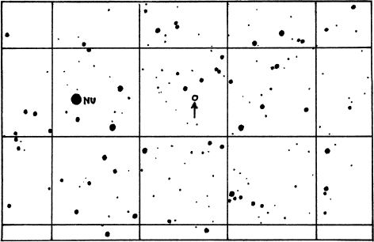
NGC 7009. A finder chart for the Saturn Nebula, showing stars to about magnitude 9½. Grid squares are 1° on a side with North at the top.
NGC为土星星云7009.取景器图，示出了分至约9级半。网格正方形的侧面为1°，顶部为North。

NGC 7009. The “Saturn Nebula” in Aquarius, one of the brighter planetaries. Mt.Wilson Observatory 60-inch telescope photograph.
NGC7009。水瓶座的“土星星云”，更明亮的行星之一。威尔逊山天文台60英寸望远镜的照片。
This was one of the first planetary nebulae to be observed by Rosse with his 6-foot reflector, and is described in his paper “Observations on the Nebulae” (1850). He saw the nebula as a fairly uniform luminous disc, but was apparently unable to detect the darker center or the central star. “It has ansae which probably indicate a surrounding nebulous ring seen edgeways.” Rosse’s drawing portrays the nebula with a somewhat greater degree of symmetry and perfection than is actually the case; it is shown as a perfect nebulous miniature of Saturn.
这是Rosse用他的6英尺反射镜观测到的第一批行星状星云之一，并在他的论文“星云观测”（1850年）中进行了描述。他把星云看成一个相当均匀的发光盘，但显然无法探测到较暗的中心或中心恒星。“它的ansae可能表明从边缘看到了周围的星云环。” Rosse的绘画以比实际情况更大的对称度和完美度描绘了星云。它被显示为土星的完美雾状微缩模型。
The nebula is a strikingly beautiful object in large telescopes, shining with a vivid green fluorescent glow. The flattened central disc measures about 25” X 17” and is enclosed in a larger shell about 30” X 26”. There is considerable intricate detail in both rings, and the two projecting rays end in bright condensations about 44” apart. The ansae may be glimpsed in a good 10-inch telescope. The central star is an extremely hot bluish dwarf with a continuous spectrum, and a computed temperature of about 55,000°K. Strong ultraviolet radiation from the star is the cause of the bright fluorescent glow of the nebulosity and the green tint is due to-the radiation of doubly ionized oxygen.
星云是大型望远镜中惊人的美丽物体，发出鲜明的绿色荧光。扁平的中心盘尺寸约为25英寸X 17英寸，并封装在约30英寸X 26英寸的较大外壳中。两个环上都有相当复杂的细节，并且两个投射光线以相距约44英寸的明亮聚光结束。anasae可以用10英寸好的望远镜瞥见。中心恒星是具有连续光谱的极热的蓝矮星，计算出的温度约为55,000°K。来自恒星的强烈紫外线辐射是雾状物质发出明亮的荧光的原因，而绿色色调是由于双重离子化氧的辐射所致。
Distances of planetary nebulae are, in nearly all cases, only roughly known. According to a study by C.R. O’Dell (1963) the distance of NGC 7009 is about 3900 light years, leading to an actual diameter of about 0.5 light year. The central star has a luminosity of about 20 suns; the absolute magnitude may be about +1.5. The nebula has a radial velocity of 28 miles per second in approach. (For a summary of facts and theories about the planetary nebulae, refer to M57 in Lyra)
在几乎所有情况下，行星状星云的距离仅是大致已知的。根据CR O'Dell（1963）的研究，NGC 7009的距离约为3900光年，因此实际直径约为0.5光年。中央恒星的发光度约为20个太阳。绝对大小可能约为+1.5。接近时，星云的径向速度为每秒28英里。（有关行星状星云的事实和理论的摘要，请参见天琴座的M57）
NGC 7293 Position 22270s2106. The “Helical Nebula”, usually regarded as the largest and nearest of the planetary nebulae. It has a diameter of 12’ x 16’ or about half the apparent width of the Moon. Despite its large size the nebula is faint and has a low surface brightness. The total magnitude is about 6½. Binoculars will show the object as a large circular hazy spot, and it is not a difficult object for a small telescope if a low power ocular is used. Yet it is said that this nebula was never observed by either of the Herschels with their giant telescopes! A rich-field instrument with a wide-angle eyepiece is the ideal telescope for objects of this type.
NGC 7293位置22270s2106。“螺旋星云”通常被认为是行星状星云中最大和最接近的。它的直径为12'x 16'，大约是月球表观宽度的一半。尽管星云很大，但它还是很模糊，表面亮度也很低。总大小约为6½。双筒望远镜会将物体显示为大的圆形朦胧点，如果使用低倍目镜，对于小型望远镜而言，这并不是一个困难的物体。然而，据说任何一个赫歇尔人都没有用巨型望远镜观测到过这个星云！带有广角目镜的广角镜是这类物体的理想望远镜。
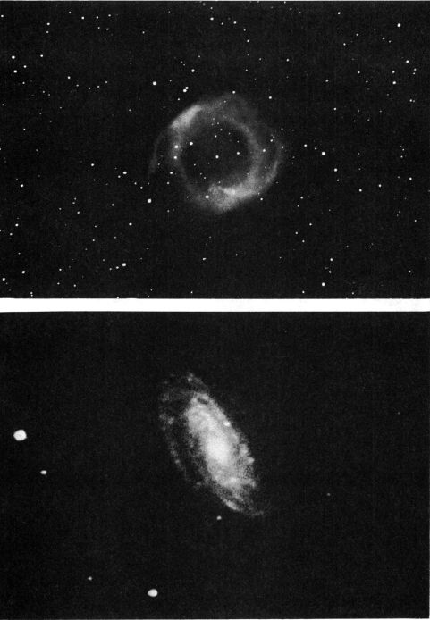
DEEP-SKY OBJECTS IN AQUARIUS. Top: The Helical Nebula NGC 7293, photographed with the 42-inch reflector at Lowell Observatory. Below: The galaxy NGC 7392 photographed with the 100-inch reflector at Mt.Wilson.
水瓶座的深空物体。上图：螺旋星云NGC 7293，在洛厄尔天文台用42英寸反射镜拍摄。下图：星系NGC 7392用威尔逊山上的100英寸反射镜拍摄。
The annular appearance, similar to the Ring Nebula in Lyra (M57), is not clearly seen visually, but is well shown on long exposure photographs. The general structure resembles a helix or coil with two turns; a much smaller planetary nebula in Draco (NGC 6543) has a very similar pattern.
环形外观类似于天琴座的环形星云（M57），视觉上看不到清晰，但在长时间曝光的照片上可以很好地显示出来。总体结构类似于带有两个匝的螺旋或线圈。德拉科（NGC 6543）中较小的行星状星云具有非常相似的模式。
The nebula is a spherical shell of very tenuous gas, illuminated by a tiny but exceedingly hot central star of the 13th magnitude. As in all the planetaries, the star is a dense bluish dwarf or subdwarf. The estimated diameter is about 2% that of our Sun, but the temperature is over 100,000°K. The gases of the nebula are excited to shine by strong ultraviolet radiation from the star, the typical bluish-green color of such nebulae being caused by doubly ionized oxygen. The color is very striking in some of the smaller brighter planetaries, such as NGC 7009 (also in Aquarius) but is not noticeable visually in NGC 7293 which has such a low surface brightness.
星云是由非常微弱的气体构成的球形壳，被第13级的微小但异常炽热的中央恒星照亮。与所有行星一样，恒星是密集的蓝矮星或亚矮星。估计直径约为我们太阳直径的2％，但温度超过100,000°K。星云中的气体被恒星发出的强烈紫外线激发而发光，这种星云的典型的蓝绿色是由双重离子化的氧气引起的。在某些较小的明亮行星上，颜色非常醒目，例如NGC 7009（也在水瓶座），但在具有如此低的表面亮度的NGC 7293中，肉眼看不到。
A photograph taken in red light with the 200-inch telescope shows much complex detail in the nebula, and reveals a peculiar system of spoke-like features on the inner edge of the ring, all pointing toward the central star. Each of these small features resembles a tiny comet with a star-like head and a faint nebulous “tail” streaming outward, away from the central star. The interpretation of these features is uncertain, but it seems likely that they are formed by a process analogous to the production of comet tails, possibly by corpuscular radiation from the hot central star as the nebula slowly expands.
用200英寸望远镜在红光下拍摄的照片显示了星云中非常复杂的细节，并且在环的内边缘揭示了特殊的辐条状特征系统，全部指向中央恒星。这些小特征中的每一个都像一颗彗星一样微小的彗星，头顶上有一个模糊的星云状的“尾巴”，远离中心恒星。对这些特征的解释尚不确定，但似乎可能是由类似于彗星尾巴产生的过程形成的，可能是由于星云缓慢扩张时，来自炽热中央恒星的微粒辐射所致。
Photographs made at Mt.Palomar also show a second faint outer shell of gas, visible most clearly on the north and east side of the nebula, 11.3’ out from the central star. Multiple shells are known in some of the other planetaries, probably indicating two or more periods of gas ejection, separated by long intervals of non-activity.
在帕洛玛山上拍摄的照片还显示出第二个微弱的气体外壳，在星云的北侧和东侧最清晰可见，距离中心恒星11.3'。在其他一些行星中，已知有多个壳，这可能表明气体喷射有两个或两个以上的时期，被长时间的不活动所隔开。
Although NGC 7293 is usually considered the nearest of the planetary nebulae, there is still no general agreement on the exact distance. In his text “Elementary Astronomy”, Otto Struve states that a trigonometrical parallax for the Helical Nebula was obtained by A.van Maanen, giving a distance of 26 parsecs or about 85 light years. The true diameter would then be about 0.3 light year, which seems unexpectedly small. The value reported in the Skalnate Pleso Catalogue (1951) is 180 parsecs or about 590 light years. From the angular diameter and surface brightness, L.Kohoutek (1962) has derived a formula which indicates a distance of about 86 parsecs, while I.S.Shklovsky (1956) obtained 50 parsecs from a very similar method. In a table of the brighter planetaries published by C.R.O’Dell (1963) the distance is given as 137 parsecs or about 450 light years. This is close to the value quoted by C.W.Allen in his “Astrophysical Quantities” (1963). Accepting this figure, the true diameter of the nebula is found to be about 1.75 light year, and the central star has a luminosity of about 1/15 that of the Sun (absolute magnitude about +7½). The total mass of the nebula is estimated to be about 1/10 the solar mass. The radial velocity is about 9 miles per second in approach.
尽管通常认为NGC 7293是最接近行星状星云的行星，但对于确切的距离仍然没有普遍的共识。奥托·斯特鲁夫（Otto Struve）在他的著作《基本天文学》中指出，螺旋星云的三角视差是由A.van Maanen获得的，其视差为26视差或约85光年。真实直径约为0.3光年，这似乎出乎意料的小。Skalnate Pleso Catalog（1951）中报告的值是180帕秒或约590光年。L.Kohoutek（1962）从角直径和表面亮度得出了一个公式，该公式表明距离约为86帕秒，而ISShklovsky（1956）通过非常相似的方法获得了50帕秒。在CR发布的更明亮的行星表中 O'Dell（1963）给出的距离为137秒差距或约450光年。这接近CWAllen在他的《天体物理量》（Astrophysical Quantities，1963年）中引用的值。接受这个数字，发现星云的真实直径约为1.75光年，而中心恒星的光度约为太阳的1/15（绝对值约为+7.5）。星云的总质量估计约为太阳质量的1/10。进近时径向速度约为每秒9英里。

NGC 7293. The Giant Planetary Nebula in Aquarius, photographed in red light with the 200-inch reflector at Mt. Palomar.
NGC7293。水瓶座的巨型行星状星云，用200英寸反射镜在红山拍下红光。帕洛玛
The place of the planetaries in the picture of stellar evolution is still uncertain. Superficially, they resemble the gaseous shells ejected by the novae, but such shells expand at a violent rate and vanish in a short time. In contrast, the planetaries seem relatively permanent, with measured expansion rates of a mere 10 or 20 miles per second. A typical planetary nebula thus seems to require about 20,000 years to reach its average size of about 0.5 light year. According to some theorists, the peculiar hot central stars are former Wolf-Rayet stars which are now changing to the white dwarf state, the nebula being produced by emission activity during the transition period. According to another view, a planetary nebula may simply be an exceptionally “lazy” type of nova, where material is being ejected quietly, rather than explosively. Nearly 500 planetaries are known, but the total number in our Galaxy may be 10,000 or more. (For a summary of facts concerning the planetary nebulae, refer to M57 in Lyra)
行星在恒星演化过程中的位置仍然不确定。从表面上看，它们类似于新星喷出的气态壳，但这种壳以猛烈的速度膨胀并在短时间内消失。相比之下，行星似乎相对固定，测得的扩张速度仅为每秒10或20英里。因此，一个典型的行星状星云似乎需要约20,000年的时间才能达到其平均大小约0.5光年。一些理论家认为，奇特的中心热星是前沃尔夫·雷耶特星，现在正转变为白矮星状态，星云是在过渡时期由发射活动产生的。根据另一种观点，行星状星云可能只是异常“懒惰”型的新星，在这种新星中，物质被安静地喷出，而不是爆炸性地喷出。已知有近500颗行星，但是我们银河系中的总数可能达到10,000或更多。（有关行星状星云的事实的摘要，请参见天琴座的M57）
LIST OF DOUBLE AND MULTIPLE STARS
双星和多星清单

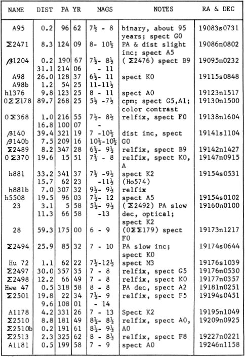

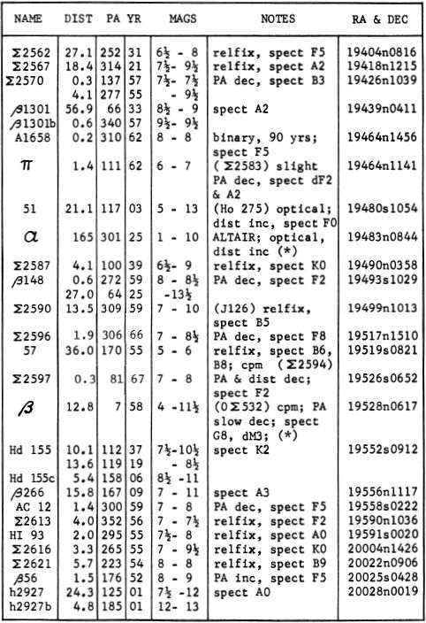

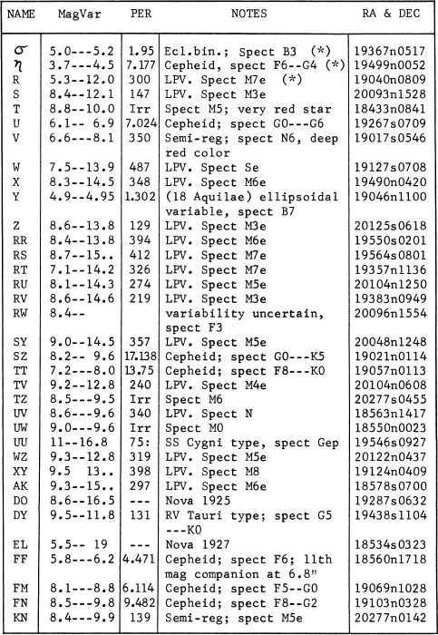

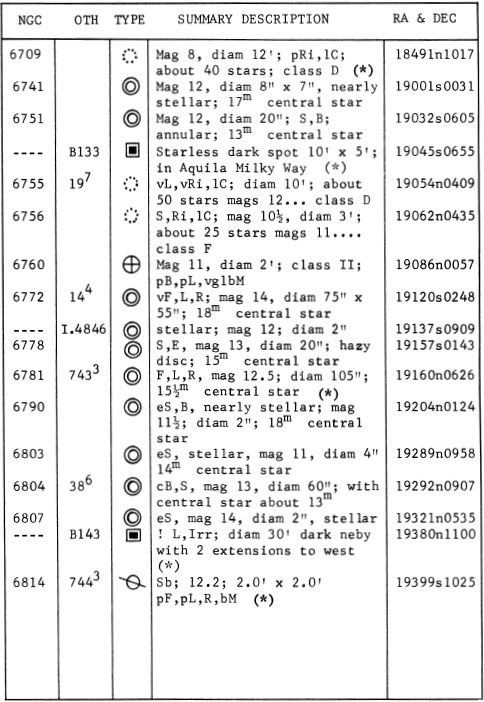
ALPHA Name - ALTAIR. Mag 0.77; spectrum A7 V. The position is 19483n0844. Altair is the 12th brightest star in the sky. Opposition date (midnight culmination) is July 18.
ALPHA名称-ALTAIR。魔力0.77; 频谱A7V。位置是19483n0844。Altair是天空中第12最亮的星星。异议日期（午夜最高点）是7月18日。
Altair is located at a distance of 16 light years, and is thus one of our nearer neighbors among the brighter stars. It is white main sequence star rather similar to Sirius in type, about 1½ times the size of our Sun and 9 times brighter. The absolute magnitude is +2.2. The star shows an annual proper motion of 0.66” in PA 54°; the radial velocity is 16 miles per second in approach.
Altair位于16光年的距离，因此是我们在较亮的恒星中较近的邻居之一。它是白色的主序星，在类型上与天狼星非常相似，大约是太阳大小的1½倍，亮度是太阳的9倍。绝对大小为+2.2。恒星在PA 54°处的年度正常运动为0.66英寸；进近时径向速度为每秒16英里。
The 10th magnitude optical companion at 165” was first measured by F.G.W.Struve in 1836 when the separation was 152” in PA 322°. The star has no actual connection with Altair itself, and the separation is increasing from the proper motion of the primary.
FGWStruve于1836年首先在165英寸处测量了10级光学伴星，当时在322°F处的间距为152英寸。这颗恒星与Altair本身没有任何实际联系，并且与原行星的适当运动之间的距离在增加。
The most remarkable fact about Altair is its very rapid rotation, one of the fastest known. The rotational speed at the equator, measured by the widening of the spectral lines, amounts to 160 miles per second, and the star completes one turn in about 6½ hours. In comparison, the rotation period of our Sun is 25.4 days. As a result of its rapid spinning the star probably has the shape of a flattened ellipsoid, the equatorial diameter being nearly twice the polar diameter. (Photograph on page 230)
关于Altair的最显着事实是其旋转速度非常快，这是已知最快的之一。通过光谱线的加宽测得的赤道旋转速度为每秒160英里，恒星在大约6½小时内完成一圈。相比之下，我们的太阳的自转周期为25.4天。由于其快速旋转，恒星可能具有扁平的椭圆形形状，赤道直径几乎是极直径的两倍。（第230页的照片）
BETA Name - ALSCHAIN. Mag 3.71; spectrum G8 IV. Position 19528n0617. The distance is some 40 light years, the actual luminosity about 4 times that of the Sun (absolute magnitude +3.5.) The measured radial velocity is 24 miles per second in approach. Beta Aquilae is a convenient comparison star for the nearby cepheid variable Eta Aquilae.
测试版名称 -ALSCHAIN。马格3.71; 频谱G8 IV。位置19528n0617。距离约为40光年，实际光度约为太阳的4倍（绝对值+3.5。）进近时测得的径向速度为每秒24英里。Beta Aquilae是附近造父变星Eta Aquilae的便捷比较星。
Beta is a visual double star, but a rather difficult one due to the faintness of the companion which is 12.8” distant. The two stars form a physical pair with a fairly large annual proper motion of 0.48” in PA 175°. First detected by O.Struve in 1852, the faint star is a red dwarf of spectral type dM3, about 1/300 the luminosity of the Sun. The absolute magnitude is about +11. The PA of the pair has decreased by 10° in the last century, and nothing can be known of the period of revolution except that it must require many centuries. On the assumption that the total mass of the system is about one solar mass, the period of revolution may be in the range of 1000 to 2000 years. The projected separation of the pair is 160 AU.
Beta是一颗视觉上的双星，但由于同伴的微弱距离（距离12.8英寸）而显得比较困难。两颗恒星形成物理对，在PA 175°时具有0.48英寸的相当大的年度固有运动。这颗昏暗的恒星由O.Struve于1852年首次发现，它是光谱类型为dM3的红矮星，大约是太阳光度的1/300。绝对大小约为+11。该对的功率因数在上个世纪已下降了10°，对革命时期一无所知必须需要几个世纪的时间。假设系统的总质量约为一个太阳质量，则旋转周期可能在1000至2000年的范围内。该对的预计间距为160 AU。
GAMMA Name - TARAZED. Mag 2.67; spectrum K3 II. Position 19439n1029. Rather discordant parallax measurements suggest a distance in excess of 300 light years. From the spectral characteristics the absolute magnitude appears to be about -2.4 (luminosity = 750 suns) and the resulting distance is close to 340 light years. The annual proper motion is 0.01”; the radial velocity is about 1 mile per second in approach.
GAMMA名称-TARAZED。马格2.67; 频谱K3 II。位置19439n1029。相反，不一致的视差测量表明距离超过了300光年。从光谱特性来看，绝对量级大约为-2.4（光度= 750个太阳），所产生的距离接近340光年。年度适当运动为0.01英寸；进近时径向速度约为每秒1英里。
Gamma Aquilae is situated in an interesting section of the summer-time Milky Way, near the Great Rift. About 1½° to the west is the curious dark nebula B143. (*)
Gamma Aquilae坐落在夏季银河系中一个有趣的区域，靠近大裂谷。奇怪的暗星云B143向西约1½ °。（*）
DELTA Mag. 3.36; spectrum F0 IV. The position is 19230n0301. Parallaxes obtained at McCormick, Allegheny and Yale agree in giving a distance of about 53 light years. The actual luminosity is then about 10 times that of the Sun, and the absolute magnitude about +2.3. The star has an annual proper motion of 0.27” in PA 73°; the radial velocity is 18 miles per second in approach.
DELTA弹匣。3.36; 频谱F0 IV。位置是19230n0301。在麦考密克，阿勒格尼和耶鲁大学获得的视差一致，其视距约为53光年。实际的亮度大约是太阳的10倍，绝对值大约为+2.3。该恒星在PA 73°处的年度固有运动为0.27英寸；进近时径向速度为每秒18英里。
Spectral variations with a period of about 4 hours have been detected in this star, and are probably due to some sort of atmospheric pulsation, rather than to binary motion as was first suggested. In addition, there is an unseen companion with a period of 3.42 years, detected by systematic variations in the proper motion. According to H.L.Alden (1944) the maximum expected separation of the pair is about 0.3”, but since the expected difference in brightness is several magnitudes, it is unlikely that the companion will be detected visually.
在这颗恒星中检测到了大约4小时周期的光谱变化，这可能是由于某种形式的大气脉动，而不是最初提出的双星运动。此外，还有一个看不见的伴侣，其周期为3.42年，可以通过适当运动的系统变化来检测。根据HLAlden（1944），这对眼镜的最大预期间隔约为0.3英寸，但由于预期的亮度差为几个数量级，因此不太可能在视觉上检测到该同伴。
ZETA Mag 2.99, spectrum A0 V. Position 19031n1347. The distance, from Allegheny and McCormick parallaxes, is about 90 light years. The star has an absolute magnitude of +0.8 (luminosity = 40 suns). The annual proper motion is 0.10”; the radial velocity is 15½ miles per second in approach. The spectral lines are unusually wide and diffuse, probably indicating a very high rate of rotation. Zeta Aquilae is also a visual double star, a close and difficult pair discovered by S.W.Burnham with the 26-inch refractor at Washington in 1878. The separation has increased slightly since discovery (4.9” in 1878) and the PA is decreasing at a rate of about 13° per century. The period is unknown, but must be many centuries. The faint star is a dwarf of uncertain type, with a luminosity about 1/100 that of the Sun. The projected separation of the pair is about 175 AU.
ZETA Mag 2.99，频谱A0 V.位置19031n1347。阿勒格尼视差和麦考密克视差之间的距离约为90光年。这颗恒星的绝对大小为+0.8（发光度= 40个太阳）。年度适当运动为0.10英寸；进近时径向速度为每秒15½英里。光谱线异常宽且弥漫，可能表明回转。Zeta Aquilae还是视觉上的双星，是SWBurnham在1878年用26英寸折射镜在华盛顿发现的一对紧密而困难的对。自发现以来（1878年为4.9英寸），分离距离略有增加，并且PA的减小速率为大约每世纪13°。这个时期是未知的，但必须有多个世纪。这颗微弱的恒星是一个不确定类型的矮星，其光度约为太阳的1/100。该对的预计间隔约为175 AU。
ETA Variable. Position 19499n0052. A bright variable star of the cepheid class, discovered by Pigott in 1784, shortly after Goodricke’s discovery of the variations of Delta Cephei itself. It is one of the most easily observed of the cepheids, being exceeded in apparent brightness only by Polaris and Delta Cephei. The period, precise as fine clockwork, is 7.17644 days. During this time the magnitude changes slowly and smoothly from a minimum of 4.5 to a maximum of 3.7, the rise requiring slightly over 2 days, and the fall about 5. The light changes can be easily seen without a telescope, and may be followed by comparing the star with the nearby Beta Aquilae which is magnitude 3.71.
ETA变量。位置19499n0052。造父变星的一颗明亮的变星，于1784年在古德里克（Goodricke）发现德尔塔·塞菲（Delta Cephei）自身变种之后不久，由皮格特（Pigott）发现。它是造父变星中最容易观察到的一种，仅北极星和德尔塔·凯菲（Delta Cephei）在表观亮度上超过了。这个周期，精确地说是精密的发条，为7.17644天。在此期间，震级从最小的4.5缓慢地平滑变化到最大的3.7，上升需要2天的时间，下降大约5。在没有望远镜的情况下可以轻松看到光的变化，随后可能会出现将这颗恒星与附近的3.71级Beta天鹰座进行比较。
The light variations are attributed to an actual pulsation of the star, though the exact details are uncertain and the cause is controversial. When the star is growing in brightness, the spectroscope shows that the surface is approaching the Earth, while at minimum it appears to be receding; the star thus seems to be alternately expanding and contracting. These pulsations are accompanied by a cyclic change in temperature, color, and spectral class, the range being from type G4 at minimum to F6 at maximum. The spectroscopic features are those of a supergiant of luminosity class Ib. The absolute magnitude of the star at mid-range is about -3.2 photographic or -3.8 visual, equivalent to about 2800 suns. At peak brightness the luminosity reaches about 4000 times that of the Sun. The diameter, which varies somewhat during the cycle, lies in the range of 70 to 80 times that of the Sun. The luminosities of the cepheid stars are proportional to their periods, allowing these stars to be used as distance indicators for very remote objects such as star clusters and even the nearer galaxies. From the period-luminosity relation, the absolute magnitude may be found, and the comparison with the apparent magnitude then gives the distance. By this principle, Eta Aquilae itself is estimated to be about 1300 light years away.
尽管确切的细节尚不确定并且原因尚有争议，但光的变化是由于恒星的实际脉动引起的。当恒星的亮度增加时，分光镜显示出该表面正在接近地球，而至少看起来正在后退。因此，恒星似乎交替地膨胀和收缩。这些脉动伴随着温度，颜色和光谱类别的周期性变化，范围从最小的G4型到最大的F6型。光谱特征是Ib级发光度超大的特征。这颗恒星在中距离的绝对大小约为-3.2摄影或-3.8视觉，相当于大约2800个太阳。在峰值亮度下，发光度达到太阳的约4000倍。直径在循环过程中有些变化，处于太阳的70到80倍的范围内。造父变星的光度与它们的周期成正比，这使得这些恒星可以用作非常遥远的物体（例如星团甚至更近的星系）的距离指示器。从周期-光度关系中，可以找到绝对大小，然后与视在大小的比较给出距离。根据这一原理，埃塔·天鹰座本身估计距离大约1300光年。然后与视在大小的比较给出距离。根据这一原理，埃塔·天鹰座本身估计距离大约1300光年。然后与视在大小的比较给出距离。根据这一原理，埃塔·天鹰座本身估计距离大约1300光年。
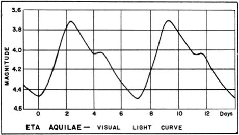
A peculiar feature of the light curve is the noticeable “hump” on the descending branch, indicating a 9-hour interruption in the fading of the star toward minimum. In comparing this light curve with those of other cepheids, it is found that this feature is present in many other stars whose periods lie in the 7 to 10 day range. It is fully as apparent in W Geminorum, S Sagittae, and S Muscae. While not fully understood, it seems likely that the explanation for this “standstill” in the light is connected with the phenomenon of multiple pulsations. If various layers of the star’s atmosphere are rising and falling at different speeds there may be times, always occuring at the same phase, when two interfering pulsation waves temporarily cancel out.
光曲线的一个特殊特征是在下降分支上明显的“驼峰”，表明恒星向最小方向衰落的9小时中断。通过将该光曲线与其他造父变星进行比较，发现该特征存在于许多其他周期为7至10天的恒星中。这在W Geminorum，S Sagittae和S Muscae中完全显而易见。尽管尚未完全理解，但似乎是这种“静止”的解释与多重脉动现象有关。如果恒星大气层的各个层以不同的速度上升和下降，则有时会出现两个相干脉动波暂时抵消的时刻，总是在同一相位发生。
The measured parallax of Eta Aquilae is about 0.005” which is too small to be a reliable distance indicator; the annual proper motion is about 0.01”; the radial velocity averages 9 miles per second in approach. (For a more detailed discussion of the cepheid variable stars, refer to Delta Cephei)
Eta Aquilae的视差约为0.005英寸，太小了，不足以作为可靠的距离指示器；年度适当运动量约为0.01英寸；进近时径向速度平均为每秒9英里。（有关造父变星的更详细讨论，请参阅Delta Cephei）
THETA Mag 3.25; spectrum B9.5 III. The position is 20087s0058. The distance derived from a parallax obtained at McCormick is about 325 light years, in fair agreement with that computed from spectroscopic features. The absolute magnitude is about -1.7 (luminosity = 400 suns). The annual proper motion is only 0.03”; the radial velocity is about 16 miles per second in approach.
THETA Mag 3.25；频谱B9.5 III。职位是20087s0058。从麦考密克获得的视差得出的距离约为325光年，这与根据光谱特征计算出的距离基本一致。绝对大小约为-1.7（发光度= 400太阳）。年度适当运动仅为0.03英寸；进近时径向速度约为每秒16英里。
Theta Aquilae is a spectroscopic binary with a period of 17.124 days. Both spectra are visible, and are both close to type B9 or A0. According to C.U.Cesco and O.Struve (1946) the spectroscopic orbit has the rather high eccentricity of 0.60. The separation of the two stars may average about 15 million miles.
Theta Aquilae是光谱双星，周期为17.124天。这两个光谱都是可见的，并且都接近B9或A0型。根据CUCesco和O.Struve（1946）的观点，光谱轨道的偏心率很高，为0.60。两颗星的间隔可能平均约为1500万英里。
LAMBDA Mag 3.44; spectrum B9 V. Position 19036s0458. Allegheny and Yale parallaxes give the distance as about 160 light years, in good agreement with the distance derived from the spectroscopic parallax method. The spectral type is somewhat uncertain since the lines are abnormally wide and diffuse, presumably indicating a very rapid rotation. The absolute magnitude is about -0.1 (luminosity = 90 suns). The annual proper motion is 0.09”; the radial velocity is 8½ miles per second in approach.
LAMBDA Mag 3.44；频谱B9 V.位置19036s0458。阿勒格尼和耶鲁视差给出的距离约为160光年，这与从光谱视差方法得出的距离非常吻合。光谱类型有些不确定，因为这些线异常宽且弥漫，大概表明旋转非常快。绝对大小约为-0.1（发光度= 90个太阳）。年度适当运动为0.09英寸；进近时径向速度为每秒8½英里。
Lambda Aquilae is located in an interesting area of the Milky Way, just to the northeast of the great Star Cloud in Scutum. The wide optical double 15 Aquilae is less than 1° to the north and slightly west, and the very red N-type variable V Aquilae lies a degree to the southwest, near the faint annular nebula NGC 6751.
Lambda Aquilae位于银河的一个有趣区域，就在Scutum大星云的东北方。宽光学双天鹰座15天鹰座星系向北小于1°，略西偏西，非常红的N型变量V天鹰座星系向西南倾斜1度，靠近微弱的环形星云NGC 6751。
SIGMA Mag 5.17 (slightly variable); spectrum B3 V. Position 19367n0517. A rapidly revolving eclipsing binary star, discovered at Mt.Wilson in 1912. In 1916 the first spectroscopic orbit was computed by F.C. Jordan, and the light variations were detected photometrically by E.Dershem at the University of Illinois in 1918. In a study by C.Wylie and J.Stebbins in 1920, the light curve was identified as that of an eclipsing binary of the lyrid class. Both components are B-type giants of very similar type, classed as B3 by some authorities, and as B3 and B4 by others. The orbit appears to be very nearly circular and the period is 1.95027 days. The actual distance between the two stars is calculated to be 6.35 million miles, and the orbital velocities are 49 and 62 miles per second. The mutual eclipses of the system are small partial obscurations; primary maximum has a depth of about 0.2 magnitude. The light curve is of the Beta Lyra type, in which the magnitude varies continually, and it is evident that both stars are somewhat ellipsoidal in shape by reason of rapid rotation and tidal effects. The equatorial velocity of rotation of the brighter star has been measured at about 75 miles per second. The chief facts about the two components are given in the following table: Diameters, masses, etc., are given in terms of the Sun. From the computed luminosities, the distance appears to be approximately 950 light years. Sigma Aquilae shows no evident proper motion; the radial velocity is about 3 miles per second in approach.
适马Mag 5.17（稍有变化）; 频谱B3V。位置19367n0517。1912年在威尔逊山发现了一颗快速旋转的日蚀双星。1916年，FC乔丹计算了第一个光谱轨道，1918年，伊利诺伊大学的埃瑟·德瑟姆以光度法检测了光的变化。在1920年C.Wylie和J.Stebbins的研究中，光曲线被确定为lyrid类的日蚀双星。这两个组成部分都是非常相似类型的B型巨人，某些当局将其分类为B3，其他当局将其分类为B3和B4。轨道似乎几乎是圆形的，周期为1.95027天。据计算，两颗恒星之间的实际距离为635万英里，轨道速度为每秒49英里和62英里。系统的相互蚀是小的局部模糊；初级最大值的深度约为0.2个量级。光曲线是Beta Lyra类型的，其大小连续变化，并且很明显，由于快速旋转和潮汐作用，两颗恒星的形状都呈椭圆形。测得的恒星的赤道旋转速度约为每秒75英里。下表给出了有关这两个分量的主要事实：直径，质量等以太阳为单位给出。根据计算的光度，该距离似乎约为950光年。西格玛天鹰座没有显示出明显的适当运动。进近时径向速度约为每秒3英里。很明显，由于快速旋转和潮汐效应，两颗恒星的形状都呈椭圆形。测得的恒星的赤道旋转速度约为每秒75英里。下表给出了有关这两个分量的主要事实：直径，质量等以太阳为单位给出。根据计算的光度，该距离似乎约为950光年。西格玛天鹰座没有显示出明显的适当运动。进近时径向速度约为每秒3英里。很明显，由于快速旋转和潮汐效应，两颗恒星的形状都呈椭圆形。测得的恒星的赤道旋转速度约为每秒75英里。下表给出了有关这两个分量的主要事实：直径，质量等以太阳为单位给出。根据计算的光度，该距离似乎约为950光年。西格玛天鹰座没有显示出明显的适当运动。进近时径向速度约为每秒3英里。根据计算的光度，该距离似乎约为950光年。西格玛天鹰座没有显示出明显的适当运动。进近时径向速度约为每秒3英里。根据计算的光度，该距离似乎约为950光年。西格玛天鹰座没有显示出明显的适当运动。进近时径向速度约为每秒3英里。
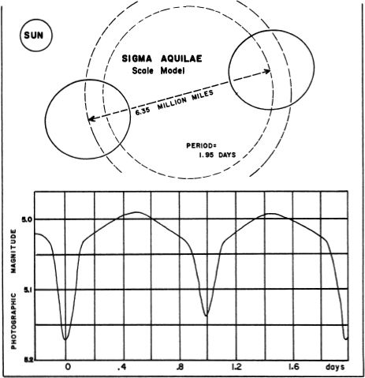

An optical companion of magnitude 12½ was recorded by John Herschel in 1830, at 48” in PA 328°. There has been no change since discovery, and the faint star is probably not physically related to Sigma.
约翰·赫歇尔（John Herschel）于1830年在PA 328°的48英寸处记录了一个122.5级的光学伴星。自发现以来，没有任何变化，这颗昏暗的恒星可能与Sigma在物理上不相关。
R Variable. Position 19040n0809. The brightest of the long-period variable stars in Aquila, discovered at Bonn, Germany, in 1856. It is a pulsating red giant of the Mira class, often attaining naked-eye visibility at maximum. The star is located in the Great Rift of the Aquila Milky Way, about 5½° south of Zeta Aquilae, and is easily recognized in the telescope by its fine red color which grows in intensity as the star fades. The spectral type changes from M5e at maximum to M8e at minimum, with a corresponding drop in the temperature from about 2350°K to 1890°K. This is one of the coolest stars known.
R变量。位置19040n0809。1856年在德国波恩发现的天鹰星中最亮的长周期变星。它是米拉级的脉动红色巨人，经常能获得最大的肉眼可见度。这颗恒星位于天鹰座银河系的大裂谷，位于Zeta天鹰座以南约5½°，在望远镜中容易辨认，因为它的精细红色随着恒星衰落而逐渐增强。光谱类型从最大的M5e变为最小的M8e，温度从大约2350°K下降到1890°K。这是已知的最酷的恒星之一。
The visual range is about 6½ magnitudes (400 times) in brightness, but radiometric measurements show that the total energy emitted in all wavelengths changes by only 0.9 magnitude. The apparent fading at minimum results from the fact that a large part of the energy output has shifted over to the invisible infrared portion of the spectrum. The total “radiometric magnitude” of R Aquilae at the maximum is about +1.8; the star would thus appear brighter than Polaris if the human eye was sensitive to radiation at all wavelengths.
可视范围的亮度约为6.5个量级（400倍），但辐射测量表明，所有波长下发出的总能量仅变化0.9个量级。最小的表观衰落是由于以下事实造成的：大部分能量输出已转移到光谱的不可见红外部分。R Aquilae的总“辐射量级”最大约为+1.8；如果人眼对所有波长的辐射都敏感，那么该恒星将显得比北极星更亮。

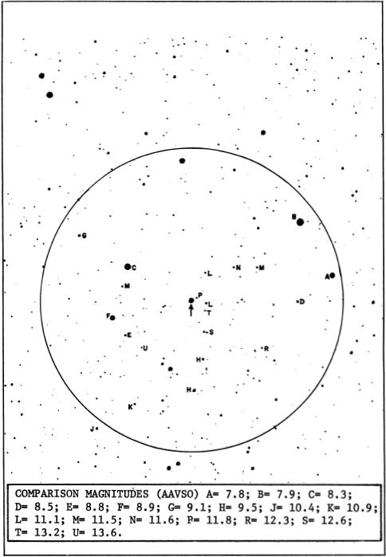
R AQUILAE. Finder chart made from a 13-inch telescope plate at Lowell Observatory. Circle diameter = 1 degree. North is at the top. Limiting magnitude about 15.
R AQUILAE。洛威尔天文台的13英寸望远镜板制成的查找器图。圆直径= 1度。北部在顶部。极限幅度约为15。
R Aquilae shows the unusual feature of a slowly changing period; in the last 80 years it has decreased from 350 days to about 300 days. Only a few such cases are known; the most definite other examples are R Hydrae and R Centauri. The explanation awaits more complete knowledge of the mechanics of the pulsations and the physical processes at work; it seems safe to say only that a change in period implies some sort of readjustment in the star’s internal structure. Possibly R Aquilae is entering a stage where the evolution proceeds with great rapidity. A radio “Flare” of this star was detected on October 8, 1973.
拉奎拉（R Aquilae）表现出一个缓慢变化时期的不寻常特征；在过去的80年中，它从350天减少到了大约300天。只有少数这种情况是已知的。最明确的其他例子是R Hydrae和R Centauri。解释需要更完整的脉动力学和工作物理过程知识；可以肯定地说，周期的变化意味着恒星内部结构的某种调整。R Aquilae可能正在进入一个发展迅速的阶段。1973年10月8日，发现了这颗恒星的广播“耀斑”。
The distance of no long-period variable is known very accurately. In a statistical study of many stars of the type, R.Wilson and P.W.Merrill (1942) derived a probable absolute magnitude in the range of -0.2 to -1.0 for stars of spectral type M5e--M8e at maximum. The peak luminosity of R Aquilae may thus be about 200 times that of the Sun; the resulting distance is close to 600 light years. The star shows a small annual proper motion of 0.07”; the radial velocity is about 19 miles per second in recession.
没有长周期变量的距离是非常准确的。在对许多类型的恒星的统计研究中，R.Wilson和PWMerrill（1942）得出了最大的M5e-M8e光谱类型恒星的绝对绝对值可能在-0.2至-1.0范围内。R Aquilae的峰值光度因此可能是太阳的峰值光度的200倍；由此产生的距离接近600光年。这颗恒星显示出一个很小的每年0.07英寸的适当运动；在衰退中，径向速度约为每秒19英里。
NOVA AQUILAE 1918 (V603 Aquilae) The most brilliant nova recorded during the last 300 years. Position 18464n0031. The nova was first noticed on the night of June 8, 1918, as an object of the 1st magnitude, some 6° north of the Scutum star cloud in the Milky Way. Among the early discoverers was E.Barnard, who was then in the state of Wyoming for the purpose of observing a total solar eclipse which had occurred only a few hours previously! At the same hour the new star was independently discovered by a youth of 17, who later became America’s champion comet-discoverer and variable star observer, Leslie C. Peltier of Delphos, Ohio.
NOVA AQUILAE 1918（V603天鹰座）近300年来记录的最灿烂的新星。位置18464n0031。这颗新星是在1918年6月8日晚上首次被发现的，它是银河系中Scutum星云以北约6°的第1级星体。早期发现者中有E.Barnard，当时他在怀俄明州，目的是观测仅仅几个小时之前发生的日全食！在同一时间，这颗新星由17岁的年轻人独立发现，后来成为美国冠军彗星发现者和变星观测者，俄亥俄州的德尔福斯的Leslie C. Peltier。
At discovery the nova was already brighter than Alpha Aquilae (Altair) but within a matter of hours it had taken its place as the leading star of the northern sky, and outshone every star in the heavens with the single exception of Sirius. Examination of plates taken previously of the region showed that the star had been an 11th magnitude object up to June 3. On June 7 it had risen to 6th magnitude, and on June 9 attained peak brilliance of magnitude -1.4. From that brightness it slowly faded to 4th magnitude by the end of June. In March 1919 it was about 6th magnitude and at the limit of naked-eye visibility.
在发现时，这颗新星已经比阿尔法天鹰座（阿尔特尔）更亮，但在短短几个小时内它就取代了它成为北方天空的领先恒星， 除小天狼星外，星空超越了天上的每颗恒星。对该区域先前采集的板块进行的检查表明，该恒星到6月3日为止一直是11级的天体。6月7日，该星升至6级，6月9日达到了-1.4级的最高亮度。从那个亮度开始，到6月底，它逐渐降低到了4级。在1919年3月，它大约是6级，处于肉眼可见度的极限。
Spectroscopically, the nova was a remarkable object. During the period of greatest brilliancy, spectroscopic analysis showed successive shells of gas being blown into space with velocities of from 1000 to 1400 miles per second. A few months after maximum, a gaseous nebulosity was detected about the star; its diameter increased for some years at a rate of about 2” per year, so that the former nova began to resemble a planetary nebula. Then this gaseous shell faded and eventually vanished into space. Nova Aquila today is a bluish star of magnitude 11.95 (1968), apparently much smaller and denser than our Sun.
在光谱上，这颗新星是一个了不起的物体。在最灿烂的时期，光谱分析表明，连续不断的瓦斯弹以每秒1000至1400英里的速度被吹入太空。恒星升起几个月后，在恒星周围发现了气态星云。它的直径以每年约2英寸的速度增长，几年来，使得这颗前新星开始像行星状星云。然后，这种气态的壳褪色，最终消失在太空中。今天的新星天鹰座是一颗蓝星，数量级为11.95（1968），显然比我们的太阳小得多，而且密度更大。
The distance of Nova Aquilae is calculated to be in the neighborhood of 1200 light years, implying that the explosion witnessed in 1918 had actually occurred about 700 A.D. The actual luminosity at maximum was some 440,000 times that of the Sun, probably among the brightest normal novae on record. The absolute magnitude was about -9.3. In its present 12th magnitude state the star is still about 2 times brighter than our Sun. The light increase during the outburst was thus about 100,000 times, and was accomplished in only 6 days!
据计算，新天鹰座的距离在1200光年左右，这意味着1918年见证的爆炸实际上大约发生在公元700年。最大的实际光度约为太阳的440,000倍，可能是最明亮的正常新星之一记录在案。绝对量约为-9.3。在目前的十二等星状态下，恒星仍比我们的太阳亮约2倍。因此，爆发期间的光照增加约为100,000次，并且仅用6天就完成了！
THE PHENOMENA OF NOVAE. These stellar outbursts are popularly referred to as “exploding stars”, but the term should not be taken to imply that the star is destroyed in the blast. This may indeed be true in the case of the more violent “supernovae” to be described later. But for the ordinary or “classical” novae at least, the phenomenon appears to be restricted to the outer layers of the star, and leaves the main stellar body essentially unchanged. In a typical normal nova the following phenomena are observed:
新星现象。这些恒星爆发通常被称为“爆炸恒星”，但该术语不应被认为暗示该恒星在爆炸中被破坏。对于更暴力的“超新星”（稍后将描述），这的确是正确的。但是至少对于普通的或“经典的”新星来说，这种现象似乎仅限于恒星的外层，而恒星的主要主体却基本保持不变。在典型的正常新星中，观察到以下现象：
First, a many thousand-fold increase in brightness in the course of a few days, reaching at maximum a luminosity of roughly 10,000 to 450,000 times that of the Sun. The absolute magnitude at maximum may range from -5.0 to about -9.5. This state of maximum brilliance rarely lasts for more than a few days, however, and after passing its peak brilliance the nova begins to decline, and returns to its original faintness after a few years. The fading may not proceed uniformly and the star is often subject to minor fluctuations and pulsations. Even after reaching a final minimum it may still show measurable variations for a number of years.
首先，在几天的过程中，亮度增加了数千倍，最大亮度达到了太阳的10,000到450,000倍。最大绝对量可以在-5.0至约-9.5的范围内。这种最高亮度的状态很少会持续几天以上，但是，在超过其最高亮度之后，新星开始下降，并在几年后恢复到原始的昏暗状态。衰落可能不会均匀进行，并且恒星通常会受到轻微的波动和脉动。即使达到最终最小值，多年来仍可能显示出可测量的变化。

Remarkable changes in the spectrum are observed simultaneously with the light changes. As the nova rises to its maximum the spectrum shows absorption lines of hydrogen and ionized atoms of iron, calcium, and other metals; these soon show a large displacement toward the violet end of the spectrum, indicating a very violent expansion of the outer layers of the star. At maximum, measurements of the lines reveal that successive shells of gaseous matter are being blown into space with enormous expansion velocities which range from a few hundred up to over 2000 miles per second. After a year or so this expanding cloud may actually become visible in the telescope. Also, as the nova starts to fade, bright lines appear in the spectrum, which eventually comes to resemble the spectrum of a diffuse nebula. The appearance is not permanent, however, and after a number of years the expanding gaseous shell fades to invisibility, leaving the former nova as a faint white-hot star, considerably smaller and denser than the Sun.
与光的变化同时观察到光谱的显着变化。当新星上升到最大时，光谱显示出氢和铁，钙和其他金属的离子原子的吸收线。这些很快就向光谱的紫罗兰色末端显示了很大的位移，表明恒星外层的膨胀非常剧烈。最多，对这些线的测量表明，连续的气态物质壳以巨大的膨胀速度被吹入太空，膨胀速度从每秒几百英里到超过2000英里不等。大约一年后，这种扩展的云实际上可能在望远镜中变得可见。此外，随着新星开始衰落，光谱中出现亮线，最终类似于弥散星云的光谱。然而，这种外观并不是永久性的，并且经过数年的膨胀，气态壳逐渐消失为隐形状态，使这颗前新星像微弱的白热星一样，比太阳小得多且密度更高。
The chief stages of a nova outburst are indicated on the schematic diagram below. The “initial rise” of 8 or 9 magnitudes is usually accomplished in a few days, and is often followed by a short “pre-maximum halt” lasting for a number of hours. This feature is not always present, or at least is not always detected. The final rise to peak brilliancy then follows at a slightly lower rate, and increases the brightness by another magnitude or two. Various stars display individual peculiarities; Nova Aquilae and Nova Puppis (1942) were typical “fast novae” with a single sharp maximum and a rapid decline, whereas Nova Aurigae (1891) and Nova Herculis (1934) remained near maximum for a number of weeks. In 1925, Nova Pictoris had three maxima spaced out over a period of nearly 10 weeks.
新星爆发的主要阶段如下图所示。通常会在几天内完成8或9个数量级的“初始上升”，并且随后通常会出现短暂的“最大停止前”，持续数小时。此功能并非始终存在，或者至少并非始终被检测到。然后，最终达到峰值亮度的速率稍低一些，并使亮度增加一到两个数量级。各种恒星显示出各自的特点；Nova Aquilae和Nova Puppis（1942）是典型的“快速新星”，具有单个急剧的最大值和一个快速下降的趋势，而Nova Aurigae（1891）和Nova Herculis（1934）则在数周内保持接近最大值。在1925年，Nova Pictoris在近10周的时间内将三个最大值隔开。
During the first 1 to 3 months after maximum, the typical nova fades by about 3½ magnitudes. This period is called the “early decline” and is followed by a 2 to 3 month “transitional phase” where stars again show their individual behavior. Some merely continue to fade rather steadily as did Nova Puppis, others begin a series of oscillations with a period of several days (Nova Persei 1901) and still others drop suddenly by 8 or 9 magnitudes, only to re-brighten again by some 5 magnitudes before beginning the final decline. Examples of this “dip and recovery” type were Nova Aurigae (1891) and Nova Herculis (1934). Nova Aquilae itself displayed definite oscillations during the transition period, though those of Nova Persei were much more striking.
在最大爆发后的前1到3个月中，典型新星衰落了大约3½个量级。这个时期称为“早期下降”，随后是2到3个月的“过渡期”，在此期间，恒星再次显示出其各自的行为。有些只是像Nova Nova Puppis一样持续稳定地衰落，有些则以几天为周期开始一系列振荡（Nova Persei 1901），还有一些突然下降了8或9个量级，只是再次变亮了5个量级在开始最终下降之前。这种“浸入和恢复”类型的例子是Nova Aurigae（1891）和Nova Herculis（1934）。新星天鹰座本身在过渡时期表现出明确的振荡，尽管新星佩尔塞伊的冲击更为明显。

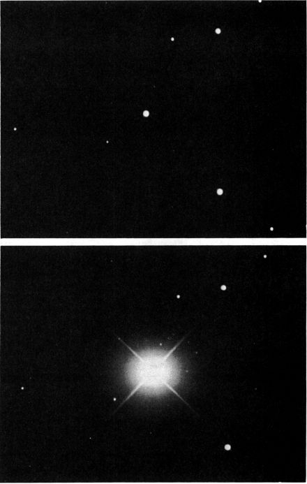
NOVA AQUILAE 1918. The star is shown before the outburst, and shortly after maximum in June 1918. Photographed with the 42-inch reflector at Lowell Observatory.
NOVA AQUILAE1918。这颗恒星在爆发前显示，1918年6月最大爆发后不久。这张照片是在洛厄尔天文台的42英寸反射镜上拍摄的。
The fading of a nova to the final “postnova” stage usually requires several years, and in the case of some of the very slow novae the star may not reach its normal minimum for several decades. Nova Aquilae, a fairly typical case, required 7 years to fade to its normal 11th magnitude state. Nova Aurigae (1891) required 15 years, Nova Cygni (1876) about 8 years, and Nova Persei (1901) about 15 years.
新星衰落到最后的“后新星”阶段通常需要几年，对于某些非常缓慢的新星，恒星可能几十年都无法达到其正常最小值。新星天鹰座（Nova Aquilae）是一个非常典型的案例，它需要7年的时间才能褪色至正常的11级强度。Nova Aurigae（1891）需要15年，Nova Cygni（1876）需要大约8年，Nova Persei（1901）需要大约15年。
After reaching the postnova stage, some novae may continue to show slight variations, while others remain quite steady. Nova Aquilae and Nova Aurigae have remained nearly constant for a number of years , whereas Nova Cygni (1876) and Nova Persei (1901) still show rapid variations. Those of the latter occasionally exceed two magnitudes. Postnova variations are known for both fast and slow novae and there appears to be no evident correlation with the type of outburst or amplitude of the light curve.
进入后新星阶段后，某些新星可能会继续表现出轻微的变化，而另一些则保持相当稳定。Nova Aquilae和Nova Aurigae多年来一直保持几乎不变，而Nova Cygni（1876）和Nova Persei（1901）仍显示出快速的变化。后者的偶尔会超过两个数量级。后新星的变化对于快新星和慢新星都是众所周知的，并且似乎与爆发类型或光曲线幅度没有明显的相关性。
Virtually all known postnova stars are objects of the same peculiar type, hot bluish subdwarfs of small radius and high density, apparently intermediate between the main sequence stars and the true white dwarfs. M.Humason (1938) obtained the spectra of 16 old novae and classified them all as type 0 or early B. The majority had strong continuous spectra; some showed emission lines. On the assumption that the surface brightness of a postnova is the same as that of a normal 0-type star, the densities of some of the old novae have been computed. For Nova Aquilae the result is 70 times the density of the Sun, for Nova Persei about 200 times.
几乎所有已知的新星后恒星都是相同奇特类型的物体，它们是半径小的高密度热蓝矮星，显然位于主序星和真白矮星之间。M.Humason（1938）获得了16个新星的光谱，并将它们归为0型或B早期。一些显示出发射线。假设后新星的表面亮度与正常的0型恒星的表面亮度相同，则已计算出一些旧新星的密度。对于新星天鹰星来说，其结果是太阳密度的70倍，对于新星波斯星来说，则是200倍。
SOME NOVA HISTORY. Approximately 100 novae have been recorded throughout history, the majority within the last century. Ancient records are in many cases vague and uncertain, and frequently contain too little information to permit a definite identification of the reported object. Some of the ancient “new stars” may have been real novae, but others were undoubtedly comets or bright meteors The earliest authentic nova recorded was possibly that of 1006 A.D. in the constellation of Lupus, now recognized as a supernova. In July 1054 A.D. a supernova explosion resulted in the formation of the expanding “Crab Nebula” (Ml in Taurus.) In November 1572 another brilliant supernova, now called “Tycho’s Star”, appeared in Cassiopeia and remained visible for more than a year. In 1600 the peculiar star P Cygni rose to maximum, but after fading to 5th magnitude has remained nearly constant ever since, and it is not certain that this star should be classed with the true novae. The fourth known supernova in our Galaxy in the last thousand years (Kepler’s Star) blazed up in Ophiuchus in 1604. Following this, no other nova attained first magnitude until the maximum of Eta Carinae in 1827; but here again the identification of this peculiar star as a true nova is uncertain. It is classified by many authorities as an erratic nebular variable. In the first half of the 20th Century, five novae have reached a brilliance of 1st magnitude: Nova Persei 1901, Nova Aquilae 1918, Nova Pictoris 1925, Nova Herculis 1934, and Nova Puppis 1942.
一些新星历史。整个历史记录了大约100颗新星，其中大部分是上个世纪。在许多情况下，古代记录是模糊且不确定的，并且经常包含的信息太少而无法确定报告对象的确切信息。一些古老的“新星”可能是真实的新星，但其他无疑是彗星或明亮的流星。记录的最早真实的新星可能是公元1006年在红斑狼疮星座中，现已被认为是超新星。公元1054年7月发生超新星爆炸，形成了不断扩展的“蟹状星云”（金牛座的密西根州）。1572年11月，另一颗耀眼的超新星（现称“第谷的恒星”）出现在仙后座，并保持可见一年以上。1600年，奇特的P Cygni星升至最大，但是自从衰落到5级以后，它一直保持几乎恒定不变，并且不确定这颗恒星是否应归类为真正的新星。1604年，在我们的银河系中，第四颗已知的超新星（开普勒星）在蛇夫座着火。此后，直到1827年埃塔·卡里纳峰达到最大值时，再没有其他新星达到第一星等。但是在这里，再次将这颗特殊的恒星识别为真正的新星还是不确定的。许多权威人士将其归类为不稳定的星云变量。在20世纪上半叶，五个新星达到了第一个光辉：Nova Persei 1901，Nova Aquilae 1918，Nova Pictoris 1925，Nova Herculis 1934和Nova Puppis 1942。1604年，在我们的银河系中，第四颗已知的超新星（开普勒星）在蛇夫座着火。此后，直到1827年埃塔·卡里纳峰达到最大值时，再没有其他新星达到第一星等。但是在这里，再次将这颗特殊的恒星识别为真正的新星还是不确定的。许多权威人士将其归类为不稳定的星云变量。在20世纪上半叶，五个新星达到了第一个光辉：Nova Persei 1901，Nova Aquilae 1918，Nova Pictoris 1925，Nova Herculis 1934和Nova Puppis 1942。1604年，在我们的银河系中，第四颗已知的超新星（开普勒星）在蛇夫座着火。此后，直到1827年埃塔·卡里纳峰达到最大值时，再没有其他新星达到第一星等。但是在这里，再次将这颗特殊的恒星识别为真正的新星还是不确定的。许多权威人士将其归类为不稳定的星云变量。在20世纪上半叶，五个新星达到了第一个光辉：Nova Persei 1901，Nova Aquilae 1918，Nova Pictoris 1925，Nova Herculis 1934和Nova Puppis 1942。许多权威人士将其归类为不稳定的星云变量。在20世纪上半叶，五个新星达到了第一个光辉：Nova Persei 1901，Nova Aquilae 1918，Nova Pictoris 1925，Nova Herculis 1934和Nova Puppis 1942。许多权威人士将其归类为不稳定的星云变量。在20世纪上半叶，五个新星达到了第一个光辉：Nova Persei 1901，Nova Aquilae 1918，Nova Pictoris 1925，Nova Herculis 1934和Nova Puppis 1942。

NOVA AQUILAE 1918. Finder chart made from a 13-inch telescope plate at Lowell Observatory. Circle diameter = 1°; limiting magnitude about 14. North is at the top. Bright star in the field is GC 25805, magnitude 6.3.
NOVA AQUILAE1918。在洛厄尔天文台用13英寸望远镜板制成的寻星图。圆直径= 1°；极限强度大约为14。北方在顶部。现场的亮星是GC 25805，强度为6.3。
THE CAUSE OF NOVAE. To the amateur and professional alike, the nova problem presents one of the most fascinating subjects for investigation in the whole realm of astrophysics. Theories of nova formation fall logically into two categories; one postulating various external causes, the other regarding the nova as the result of peculiar physical conditions existing in the star itself.
新星的原因。对于业余爱好者和专业人士而言，新星问题都是整个天体物理学领域最令人着迷的研究课题之一。从理论上讲，新星形成的理论分为两类。一个假定各种外部原因，另一个假定是由于恒星本身存在特殊物理条件而导致的新星。
Theories of the first type will be summarized very briefly, since they are now of historical interest only. One of the earliest and most popular ideas was that a nova showed us a direct collision or grazing encounter between two stars. The fatal difficulty in this theory is that it cannot account for the observed frequency of novae; so widely scattered are the stars in space that direct collisions or even close encounters can be expected to occur at intervals of many millions of years. Yet it is an observed fact that there are at least a few novae seen every year in our Galaxy, and the true total probably amounts to 30 or 40 per year.
第一种类型的理论将被非常简要地概述，因为它们现在仅具有历史意义。最早和最受欢迎的想法之一是，一颗新星向我们表明了两颗恒星之间直接的碰撞或掠食相遇。这个理论的致命困难是它不能解释观测到的新星出现频率。太空中的恒星是如此分散，以至于直接碰撞甚至近距离相遇的间隔有望在数百万年的时间内发生。但是，可以观察到的事实是，每年在我们的银河系中至少观测到一些新星，而真正的总数可能每年达30或40个。
Another theory attributed nova outbursts to the rapid passing of a star through thick nebulosity; according to this view the sudden blazing of the star would be the effect of friction, much as a meteor is heated to the point of incandescence by its plunge through the atmosphere of the Earth. A serious objection to this theory is the observed similarity of all nova outbursts, the fact that their light curves are nearly identical in form, and the fact that postnova stars are all objects of the same rare type. It is difficult to see how chance encounters between various types of stars with nebulae of widely varying density and size could lead in every case to such strikingly similar results.
另一种理论将新星爆发归因于快速爆发 恒星穿过浓密的雾状；根据这种观点，恒星的突然闪耀将是摩擦的影响，就像流星因其穿过地球大气层的暴跌而被加热到白炽点一样。对该理论的一个严重反对意见是观察到所有新星爆发的相似性，它们的光曲线在形式上几乎相同，以及后新星都是相同稀有类型的天体。很难看到密度和大小变化很大的星云在各种类型的恒星之间碰巧如何在每种情况下都能产生如此惊人的相似结果。
As a result of the recent rapid advance in astrophysical knowledge, there is now a general agreement that nova outbursts are due to no external cause, but to some instability in the star itself. Perhaps it would be well to qualify this statement by admitting that a number of postnova stars are known to be extremely close binaries, and it appears likely that the presence of a close companion is connected in some way with the outbursts. In this sense only, some nova outbursts may have an “external cause”. This question will be discussed in more detail after a brief review of the probable reasons for instability in a single star.
由于近来天文学知识的飞速发展，现在人们普遍同意，新星爆发不是由于外部原因引起的，而是由于恒星本身的某些不稳定性引起的。通过承认已知许多后新星是非常接近的双星，也许可以很好地证明这一说法，并且看起来紧密伴侣的存在可能与爆发有某种联系。仅从这个意义上讲，某些新星爆发可能是“外部原因”。在简要回顾了单个恒星不稳定的可能原因之后，将对该问题进行更详细的讨论。
First, let us consider the general picture of stellar evolution as it presents itself to us today. The stars are “atomic furnaces”, globes of intensely heated gas in which energy is produced by various nuclear reactions, chiefly the transmutation of hydrogen into helium. The resulting internal radiation pressure prevents the star from unlimited contraction under the action of gravitation. Thus the normal stars are maintained in a state of equilibrium, and their energy is released at a fixed rate. It can be calculated that the hydrogen supply of the Sun is sufficient for more than 10 billion years of energy production in this balanced state. The more massive stars will radiate their substance away at a correspondingly higher rate, and the heaviest known stars will last less than a million years. Thus it is among the high-luminosity giants that we find the stars of shortest life expectancy.
首先，让我们考虑一下今天向我们展示的恒星演化的总体情况。恒星是“原子炉”，是由强烈加热的气体组成的球体，在其中通过各种核反应产生能量，主要是将氢转化为氦气。由此产生的内部辐射压力可防止恒星在重力作用下无限收缩。因此，正常恒星保持平衡状态，并且它们的能量以固定的速率释放。可以计算出，在这种平衡状态下，太阳的氢供应量足以满足超过100亿年的能源生产需求。更大质量的恒星将以更高的速率辐射出它们的物质，而最重的恒星将持续不到一百万年。
In the article on Betelgeuse (Alpha Orionis) we have traced the evolution of a star from the main sequence through the red giant stage. This material will not be repeated here, as we are now interested in the events which follow the red giant stage. Having no internal energy supply, the star is now contracting, and growing denser and hotter. The final result will be a star of planetary size and of incredibly high density - a white dwarf, as such an object is called.
在有关Betelgeuse（Alpha Orionis）的文章中，我们追踪了恒星从主要序列到红色巨人阶段的演化。由于我们现在对红色巨人舞台之后的事件感兴趣，因此这里将不再重复此材料。由于没有内部能量供应，这颗恒星现在正在收缩，并且变得越来越密集，越来越热。最终的结果将是一颗具有行星大小和令人难以置信的高密度的恒星-白矮星，即所谓的天体。
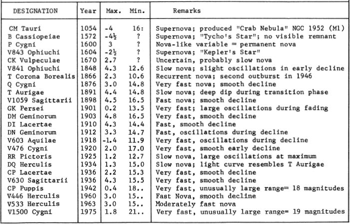
White dwarfs are no figment of the scientific imagination. Over 200 stars of the type are now known, and they are truly remarkable objects. Densities of several tons to the cubic inch are typical for such objects. The connection between these degenerate dwarfs and the spectacular novae lies in the fact that a massive star cannot contract into a white dwarf without becoming unstable in the process. It is not difficult to see why this is believed to be so. A star of small mass will contract to the point where the increasing pressure of the highly compressed interior balances any further tendency toward contraction. But when a stellar mass exceeds about 1.25 solar masses, there is no balancing point, and such a star will have an unlimited tendency toward contraction.
白矮星不是科学想象的虚构人物。现在已知超过200颗这种类型的恒星，它们确实是杰出的物体。这种物体的典型密度为几吨至立方英寸。这些退化的矮星与壮观的新星之间的联系在于，一个巨大的恒星不能收缩成白矮星而不会变得不稳定。不难看出为什么会这样。较小质量的恒星将收缩到高度压缩的内部不断增加的压力平衡任何进一步收缩趋势的程度。但是，当恒星质量超过约1.25太阳质量时，就没有平衡点，这样的恒星将具有无限的收缩趋势。
Unlimited contraction implies that the rotation velocity of the star must increase steadily in accordance with the law of the conservation of angular momentum, and also that the internal pressure and temperature will increase without limit. It is possible that in both of these factors we have conditions which lead to catastrophe. As the speed of rotation increases, the centrifugal force increases also, and if it becomes stronger than the star’s gravitational force the star will be disrupted. This theory of rotational instability has been suggested as a possible cause of nova formation. Another suggestion is that certain nuclear reactions come into play once a certain limit of density and temperature is passed. Detailed developments of these ideas have been presented by Schatzman, Hoyle, Gamow, Gaposchkin, and other students of the nova problem. Some theorists favor the idea of a shock-wave being propagated from the interior of the star to the surface; others assume a series of nuclear reactions which lead to a star’s increasing instability and final explosion. These theories are often reviewed in current texts; the student is referred also to the authoritative book “The Galactic Novae”, by C.P.Gaposchkin. Fred Hoyle also presents many informative and entertaining speculations concerning the novae in his “Frontiers of Astronomy”.
无限的收缩意味着恒星的旋转速度必须根据角动量守恒定律稳定地增加，并且内部压力和温度将无限制地增加。在这两个因素中，我们都有可能导致灾难的情况。随着旋转速度的增加，离心力也会增加，如果离心力大于恒星的重力，恒星将被破坏。有人提出这种旋转不稳定性的理论是形成新星的可能原因。另一个建议是，一旦超过一定的密度和温度极限，某些核反应就会起作用。这些想法的详细发展已经由Schatzman，Hoyle，Gamow，Gaposchkin和其他有关新星问题的学生提出。一些理论家赞成冲击波从恒星内部传播到表面的想法。其他人则假定发生了一系列核反应，这些反应导致恒星不断增加的不稳定性和最终爆炸。这些理论经常在当前文献中进行回顾。学生也被参考权威书CPGaposchkin撰写的“ The Galactic Novae”。弗雷德·霍伊尔（Fred Hoyle）在他的《天文学前沿》中也提出了许多有关新星的有趣且有趣的推测。
NOVAE AS DOUBLE STARS. An important addition to our knowledge of novae was provided recently by the discovery that a few novae are close binaries. Duplicity was first found for Nova Herculis 1934, an extremely close binary in which the components eclipse each other in a cycle of 4.65 hours, one of the shortest periods known. Nova Aurigae 1891 is a very similar system with a period of 4.9 hours. Nova Persei 1901 is now recognized as a double with a period of 1.9 days, and Nova Aquilae was found in 1962 to be a rapid binary with a period of 3h 20m. Many of the other old novae remain to be studied, but there is a growing suspicion that all of them may prove to be unusually close binaries, and that the outbursts are connected in some way with the duplicity. If so, many of the older theories concerning novae may be drastically revised. Additional evidence comes from two other types of objects: the “recurrent novae” and the eruptive variables of the SS Cygni and U Geminorum type. There is growing evidence that these stars also, are very close binary systems.
新星双星。最近发现了一些新星是紧密的双星，这为我们对新星的知识提供了重要的补充。双重性是在1934年的新星大力士（Nova Herculis）中首次发现的，它是一种极为紧密的二元体系，其中的各个成分以4.65小时的周期相互遮盖，这是已知的最短周期之一。Nova Aurigae 1891是一个非常相似的系统，周期为4.9小时。Nova Persei 1901现在被认为是1.9天的双星，Nova Aquilae于1962年被发现是周期3h 20m的快速双星。还有许多其他的新星有待研究，但是越来越多的人怀疑它们可能都是异常接近的双星，并且爆发与双重性有某种联系。如果是这样，许多有关新星的较旧的理论可能会被彻底修改。其他证据来自另外两种类型的天体：“反复出现的新星”以及SS Cygni和U Geminorum类型的喷发变量。越来越多的证据表明这些恒星也是非常紧密的双星系统。
RECURRENT NOVAE are defined as stars which have shown more than one outburst. As of 1965 there are 7 known examples, of which the most famous are T Corona Borealis, RS Ophiuchi, and WZ Sagittae. Aside from the feature of repeating outbursts, these stars are notably different from the classical novae; the amplitudes of the outbursts are much less and the duration of the maxima are short. The brightest example, T Corona, rises from 10th magnitude to 2nd in less than a day, but fades below naked-eye range in a week, and reaches the postnova stage in a few months. The star is a 228-day binary in which the nova component is much the fainter of the two except during an outburst. The other star is type M, and is presumably a red giant. At maximum, the actual luminosity of T Corona is comparable to that of a classical nova; it is thus rather puzzling to find that another example, WZ Sagittae, is a white dwarf which reaches a luminosity of a mere 30 suns at maximum. Obviously the recurrent novae are not all objects of the same type, and probably do not form a true physical group. Yet, the expected duplicity has been detected for WZ Sagittae; the orbital period of 81.6 minutes is at present the shortest known. The two stars must be of abnormally small size and revolve nearly in contact.
游走新星被定义为显示出一个以上爆发的恒星。截至1965年，已有7个已知示例，其中最著名的是T Corona Borealis，RS Ophiuchi和WZ Sagittae。除了重复爆发的特征外，这些恒星与经典新星明显不同。爆发的幅度要小得多，最大值的持续时间很短。最亮的例子是T Corona，它在不到一天的时间内从第十等高上升到第二，但是在一周之内逐渐消失到肉眼以下，并在几个月内达到了后新星阶段。这颗恒星是一个228天的双星，其中新星成分是两者中较弱的一个，除非在爆发期间。另一颗恒星是M型，可能是红色巨星。最高来说，T Corona的实际光度与经典新星相当。因此，令人费解的是发现另一个例子，WZ射手座，是一个白矮星，其最大发光度仅为30个太阳。显然，复发的新星并不是所有相同类型的物体，并且可能没有形成真正的物理群。但是，已检测到WZ的预期重复性射手座 目前已知的最短轨道时间为81.6分钟。两颗星的大小必须异常小，并且几乎会相互接触旋转。
SS CYGNI STARS are bluish dwarfs which show repeated outbursts on a small scale; a typical example (the star U Geminorum) flares up several times a year, brightening by a factor of about 100, and remaining at maximum for a few days. It might appear that these feeble objects bear only a superficial resemblance to the violent classical novae; yet the same type of mechanism may be operating, as once again the expected duplicity seems to be an essential feature. For SS Cygni the revolution period is about 6½ hours, for U Geminorum about 4½ hours.
SS CYGNI STARS是蓝矮星，表现出小范围反复爆发。一个典型的例子（U Geminorum恒星）每年爆发几次，增亮约100倍，最多持续几天。看起来这些微弱的物体与暴力的古典新星只是表面上的相似。但是相同类型的机制可能仍在运行，因为预期的双重性似乎又是一个基本特征。对于SS Cygni，公转周期约为6½小时，对于U Geminorum，公转周期约为4½小时。
DISCUSSION. There are thus three types of objects to consider: the full-scale “classical” novae, the recurrent novae, and the SS Cygni stars. In all three cases, typical examples are recognized as close and very rapid binaries. Although it may be that at least one member of such a pair is intrinsically unstable, it seems likely that novae and nova-like outbursts are connected in some way with the presence of the close companion. The simplest picture is to assume that the unstable star is triggered by accretion of material from the companion, an idea first proposed for the erratic star AE Aquarii. But even if this theory is basically correct, the exact details of the nova-process will undoubtedly be the subject of much speculation for years to come.
讨论。因此，需要考虑三种类型的天体：完整的“经典”新星，循环新星和SS Cygni星。在这三种情况下，典型示例均被视为接近且非常快速的二进制文件。尽管这对中的至少一个可能是内在不稳定的，但似乎新星和类似新星的爆发可能以某种方式与亲密伴侣一起存在。最简单的图景是假设不稳定的恒星是由同伴的物质积聚触发的，这是首次为不稳定的恒星AE Aquarii提出的想法。但是，即使这一理论基本上是正确的，新星过程的确切细节无疑将在未来几年成为许多猜测的主题。
An interesting point must be made in connection with the recurrent novae and the SS Cygni stars. These objects appear to show a period-amplitude relation, whereby those stars of longer period show the more violent outbursts. If the relation is assumed to hold true for the classical novae as well, we might guess that stars like Nova Aquilae will explode again, but only at intervals of several thousand years. The suggestion that all novae are recurrent leads on to further speculation: Is there an evolutionary connection between the three types of stars, and if so, in which direction does it proceed? Will SS Cygni, for example, eventually develop into a full-scale nova? Or will Nova Aquilae ultimately settle down with periodic smallscale eruptions of the SS Cygni class? And, if the classical novae actually repeat their violent outbursts, how many explosions are required to reduce the star’s mass to the stable point? The material ejected during each maximum appears to be only a millionth of the solar mass; thus the star may undergo thousands of such explosions before its career is ended. In any case, the final result, it is believed, is a super-dense white dwarf star, or perhaps a pair of such stars, if the duplicity discovered for some novae is an essential feature of all. Assuming, however, that a single star can become violently unstable and erupt as a nova, it is interesting to speculate on the possibility that many of the known white dwarfs were once novae. The famous companion to Sirius, in a nova outburst, would appear about as bright as a full moon to observers on the Earth!
关于循环新星和SS Cygni星，必须提出一个有趣的观点。这些天体似乎表现出周期-振幅关系，从而那些较长周期的恒星表现出更剧烈的爆发。如果假设这种关系也适用于经典新星，那么我们可能会猜测，像新天鹰星这样的恒星将再次爆炸，但间隔只有几千年。关于所有新星都是复发性的建议导致了进一步的推测：三种恒星之间是否存在进化联系，如果是，它将朝哪个方向发展？例如，SS Cygni最终会发展成完整的新星吗？还是Nova Aquilae最终会因SS Cygni类的周期性小规模爆发而最终安定下来？而且，如果古典新星实际上重复了他们的猛烈爆发，需要多次爆炸才能将恒星的质量降低到稳定点？在每个最大值期间喷出的物质似乎仅是太阳质量的百万分之一。因此，恒星可能会在其职业生涯结束之前经历数千次此类爆炸。无论如何，如果发现某些新星的双重性是所有人的基本特征，那么最终结果被认为是超稠密的白矮星，或者也许是一对这样的恒星。然而，假设一颗恒星会变得剧烈不稳定并像新星一样爆发，那么推测许多已知的白矮星曾经是新星的可能性就很有趣。天狼星爆发时，天狼星的著名同伴对地球上的观察者来说似乎像满月一样明亮！
SUPERNOVAE. A typical nova, as we have noted, may reach a luminosity of several hundred thousand suns. At rare intervals, an exploding star appears which exceeds the brightness of a normal nova by a factor of 10,000 or more. These objects, the “supernovae” seem to average one in about 3 centuries in any one galaxy. Only four have been definitely recorded in our own Galaxy, the last in Ophiuchus in 1604. The supernova phenomenon is probably restricted to the rather massive stars, and it seems that the star may be almost totally destroyed in the outburst. Although no supernova has appeared in our Galaxy since the invention of the telescope, they are detected from time to time in the other galaxies. The best known example was the star of 1885 which appeared in the nucleus of the Great Andromeda Galaxy M31. (For a discussion of supernovae, refer to “Tycho’s Star” - also known as B Cassiopeiae)
超新星。正如我们已经指出的，典型的新星可能会达到数十万个太阳的光度。每隔极少的时间，就会出现一颗爆炸的恒星，其亮度超过正常新星的亮度的10,000倍或更多。这些物体，“超新星”似乎在任何一个星系中平均约占三个世纪。在我们自己的银河中肯定只记录了四颗，最后一颗是在1604年的蛇夫座。超新星现象可能仅限于相当大的恒星，而且看来该恒星可能在爆发时几乎被完全摧毁了。尽管自望远镜发明以来，我们的银河系中还没有出现超新星，但它们不时在其他星系中被发现。最著名的例子是1885年的恒星，它出现在大仙女座星系M31的核中。（关于超新星的讨论，
VAN BIESBROECK’S STAR (LFT 1467) (Ross 652b) (Wolf 1055b) A famous red dwarf star, which has the lowest visual luminosity known for any star. It was discovered photographically with the 82-inch reflector of the McDonald Observatory in Texas in 1943. It is a distant companion of the 9th magnitude star BD + 4°4048, whose position is 19145n0506. The separation of the pair is 74” in PA 150°, corresponding to a true separation of about 400 AU. The distance from the Earth is 19 light years. Both stars show the large annual proper motion of 1.47” toward PA 203°. The primary is a dwarf M3 V star whose visual luminosity is about 1/250 that of our Sun. (Apparent magnitude = 9.1) The companion is the remarkable member of the pair, having a luminosity of about 1/570,000 that of the Sun. The apparent magnitude is 18.0 visual, and +19.3 absolute. The star’s apparent luminosity is about 700 times the light of Jupiter. If put in place of the Sun, it would appear slightly brighter than the full moon. The actual size of Van Biesbroeck’s Star is not definitely known, but the spectral type (dM6e) and the luminosity indicate that it is only a fraction of the mass and diameter of our Sun. According to current ideas of stellar structure such a star cannot maintain a sufficiently high internal temperature to operate the hydrogen-to-helium reaction which powers most stars. It is suggested that gravitational contraction may be a source of at least a part of the energy output, and that such a star may be slowly cooling and approaching the “black dwarf” state.
范·比斯布罗克的明星（LFT 1467）（Ross 652b）（Wolf 1055b）著名的红矮星，其视觉亮度是所有恒星中已知的最低。1943年，它是在德克萨斯州麦当劳天文台的82英寸反射镜上通过摄影发现的。它是9星BD + 4°4048的遥远伴侣，其位置为19145n0506。该对的间距在PA 150°中为74英寸，对应于约400 AU的真实间距。距地球的距离是19光年。两颗星均向PA 203°方向显示了1.47英寸的大的年度适当运动。主星是一颗M3 V矮星，其可见光度约为太阳的1/250。（表观星等= 9.1）伴侣是该对的杰出成员，其光度约为太阳的1 / 570,000。视在大小为18.0视觉，+ 19.3绝对。恒星的表观光度约为木星的700倍。如果代替太阳，它将显得比满月略亮。Van Biesbroeck恒星的实际大小尚不确定，但光谱类型（dM6e）和光度表明它仅是太阳质量和直径的一小部分。根据目前恒星结构的想法，这样的恒星不能保持足够高的内部温度来操作为大多数恒星提供动力的氢-氦反应。有人提出，重力收缩可能是至少一部分能量输出的来源，并且这种恒星可能正在缓慢冷却并接近“黑矮星”状态。Van Biesbroeck恒星的实际大小尚不确定，但光谱类型（dM6e）和光度表明它仅是太阳质量和直径的一小部分。根据目前恒星结构的想法，这样的恒星不能保持足够高的内部温度来操作为大多数恒星提供动力的氢-氦反应。有人提出，重力收缩可能是至少一部分能量输出的来源，并且这种恒星可能正在缓慢冷却并接近“黑矮星”状态。Van Biesbroeck恒星的实际大小尚不确定，但光谱类型（dM6e）和光度表明它仅是太阳质量和直径的一小部分。根据目前恒星结构的想法，这样的恒星不能保持足够高的内部温度来操作为大多数恒星提供动力的氢-氦反应。有人提出，重力收缩可能是至少一部分能量输出的来源，并且这种恒星可能正在缓慢冷却并接近“黑矮星”状态。根据目前恒星结构的想法，这样的恒星不能保持足够高的内部温度来操作为大多数恒星提供动力的氢-氦反应。有人提出，重力收缩可能是至少一部分能量输出的来源，并且这种恒星可能正在缓慢冷却并接近“黑矮星”状态。根据目前恒星结构的想法，这样的恒星不能保持足够高的内部温度来操作为大多数恒星提供动力的氢-氦反应。有人提出，重力收缩可能是至少一部分能量输出的来源，并且这种恒星可能正在缓慢冷却并接近“黑矮星”状态。

FIELD OF VAN BIESBROECK’S STAR, centered on BD +4°4048. Circle diameter = 1°; north at the top, limiting magnitude about 14. Bright star in the field is 22 Aquilae, mag 5.4. Chart made from a Lowell Observatory 13-inch plate.
范·比斯布罗克星场，以BD + 4°4048为中心。圆直径= 1°；顶部向北，限制其幅度约为14。该场中的亮星是22天鹰星，mag 5.4。图表由洛厄尔天文台的13英寸板制成。
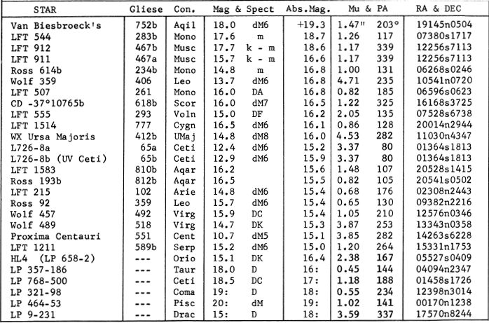
Although only a few dozen stars are known with absolute magnitudes fainter than 15, it must not be inferred that such stars are actually rare in space. Obviously, we can detect only the nearby specimens. The table on Page 228 gives the chief information concerning the 27 stars which presently rank as the faintest known. The information was compiled from the lists of W.J.Luyten and W.Gliese (1957). Spectra or estimated spectral classes are given when known. Absolute magnitudes of the last five entries are somewhat uncertain, since the distances are not yet accurately determined. It is possible that LP 464-53 may replace Van Biesbroeck’s Star as the faintest known, when the distance is eventually measured.
尽管只有几十颗恒星绝对值小于15的恒星是已知的，但不能推断此类恒星实际上在太空中是稀有的。显然，我们只能检测附近的标本。第228页的表格提供了有关27颗恒星的主要信息，这些颗星目前排名最弱。该信息是从WJLuyten和W.Gliese（1957）的清单中收集的。已知光谱或光谱类别。由于尚未准确确定距离，因此最后五个条目的绝对大小有些不确定。当最终测量距离时，LP 464-53可能会取代众所周知的最微弱的范·比斯布鲁克的明星。
It is also interesting to note that the extreme faintness of Van Biesbroeck’s star is due in part to its color. Much of the radiation is in the infrared, and the total or “bolometric magnitude” is thus about 3 magnitudes brighter. Considered from this standpoint, there are probably several stars known at present whose luminosities are lower. The record-holder, however, may not be the white dwarf star LP9-231, whose bolometric absolute magnitude was once thought to be about +17.4, based on a preliminary trigonometric parallax by W.J.Luyten. From recent measurements this star now appears to be more remote (about 60 light years) than was originally thought, and certainly has a higher bolometric luminosity than Van Biesbroeck’s Star.
有趣的是，范·比斯布劳克（Van Biesbroeck）的恒星极度昏暗的部分原因是其颜色。大部分辐射都在红外线中，因此总辐射强度或“辐射强度”亮度大约高3个数量级。从这个角度考虑，目前可能已知几颗亮度较低的恒星。但是，记录保持者可能不是白矮星LP9-231，根据WJLuyten的初步三角视差，它的辐射热绝对值曾经被认为约为+17.4。根据最近的测量，这颗恒星现在似乎比原先想象的要遥远（约60光年），并且肯定比Van Biesbroeck的恒星具有更高的辐射热亮度。
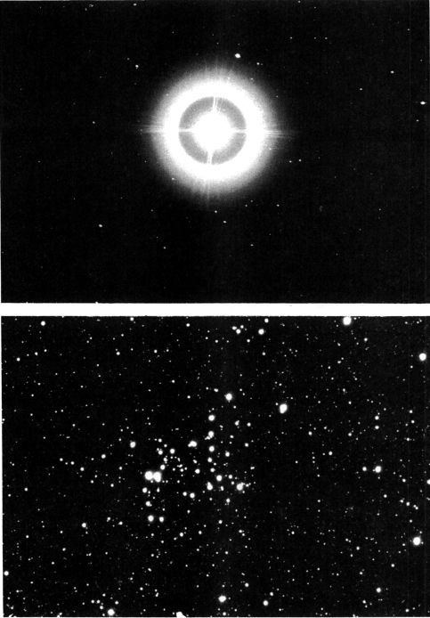
DEEP-SKY OBJECTS IN AQUILA, Top: The 1st magnitude star Altair. Below: The open star cluster NGC 6709. Lowell Observatory photographs with the 13-inch camera.
阿奎拉的深空天体，上图：一等星恒星Altair。下图：一颗开放星团NGC6709。洛厄尔天文台用13英寸相机拍摄。

DEEP-SKY OBJECTS IN AQUILA. Top: The planetary nebula NGC 6781. Below: The many-armed spiral galaxy NGC 6814. Both photographs were made with the 200-inch Palomar telescope.
阿奎拉中的深空物体。上图：行星状星云NGC6781。下图：多臂螺旋星系NGC6814。这两张照片都是用200英寸的帕洛玛望远镜拍摄的。
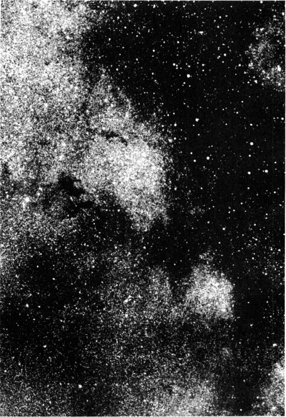
STAR CLOUDS IN THE MILKY WAY near Gamma Aquilae. The dark I nebula B143 is the curious two-pronged marking at left center.
Gamma Aquilae附近的银河系中的星云。昏暗的I星云B143是左中心的两叉好奇标记。
Lowell Observatory Photograph
洛厄尔天文台照片
B143 Dark Nebula. Position 19380n1100. Observers of the summer skies will find one of the richest and most spectacular fields for exploration in the Milky Way from Cygnus to Sagittarius. The star clouds of Aquila are remarkable for the great profusion and complexity of dark nebulous matter; the long belt of interstellar dust clouds known as the “Great Rift” is most conspicuous in this constellation, visually dividing the Milky Way into two parallel streams. The eastern branch continues on to the rich regions of Scutum and Sagittarius toward the south and the other branch diverges to the west where it loses itself in the vast spaces of Ophiuchus.
B143黑暗星云。位置19380n1100。从天鹅座到射手座的银河系，夏天的天空的观察者会发现最丰富，最壮观的领域之一。天鹰座的星云以暗云状物质的巨大繁复和复杂性而著称。在这个星座中，星际尘埃云长带被称为“大裂谷”最为明显，从视觉上将银河系分为两个平行的流。东部分支继续向南延伸到Scutum和射手座的富裕地区，而另一个分支向西分支，在那里它在蛇夫座广阔的空间中迷失了自己。
Some of the dark nebulae of Aquila call for special comment. About 1½° to the west of Gamma Aquilae and slightly north is the curious dark marking B143, a strangely shaped dust cloud some 30’ in diameter with two sharply-outlined “prongs” pointing westward. Another 30’ to the south is another similar prong, which bears a separate number, B142. This double dark nebula is one of the few in the sky which can be appreciated in amateur telescopes. Appearing not merely as a starless area, it actually gives a strong impression of an obscuring mass suspended between the observer and the star-strewn background. A rich-field telescope is essential for such objects; an 8” or 10” will provide a fine view when skies are dark and clear.
天鹰座的一些黑暗星云需要特别评论。伽马天鹰座以西约1½ °，北稍稍是好奇的深色标记B143，这是一种形状奇怪的尘埃云，直径约30'，有两个轮廓突出的“ p”指向西。向南的另一个30'是另一个类似的插脚，带有单独的编号B142。这个双暗星云是天空中为数不多的少数望远镜之一，可以在业余望远镜中欣赏到。它不仅显示为无星星的区域，而且还给人留下了强烈的印象，即观察者和满是星状背景的物体之间悬浮着一层模糊的物质。广角望远镜对于这类物体至关重要。8“或10”的天空在黑暗和晴朗的情况下将提供良好的视野。
Another prominent dark nebula, B133, is shown on Page 234, on a photograph made with the Mt.Wilson 100-inch telescope. An object of this sort would probably be completely undiscoverable were it situated in some blank portion of the sky, far from the Galactic plane. In the densest part, measuring 9’ x 5’, not a single star image can be detected on 100-inch telescope plates with a 4-hour exposure!
在第234页上，用威尔逊山100英寸望远镜拍摄的照片显示了另一个著名的暗星云B133 。如果这种物体位于天空的某个空白区域中，并且远离银河系平面，则可能是完全找不到的。在最密集的部分（尺寸为9'x 5'）中，在100英寸的望远镜板上曝光4小时后，无法检测到单个星状图像！
Distances of such dark nebulae are usually quite uncertain, and the only safe statement is the obvious one, that the dark cloud is evidently nearer than the bright region against which it is seen projected. The star clouds of this region lie at a distance of possibly 5000 light years, and the dark nebulosities may lie anywhere between, but are probably at least a thousand light years distant. Guessing at a probable distance of about 2500 light years, the actual diameters are found to be something like seven light years for B133 , and over 20 light years for B143.
这样的暗星云的距离通常是非常不确定的，唯一的安全说法是显而易见的，即暗云显然比所看到的明亮区域更近。该区域的星云距离可能约为5000光年，而暗雾状星云可能位于两者之间的任何位置，但可能至少相距一千光年。猜测大约2500光年的距离，发现B133的实际直径约为7光年，而B143则超过20光年。
DARK NEBULA B133. A prominent dark cloud in the Aquila Milky Way, about 2° south of Lambda Aquilae. Mt.Wilson Observatory 100-inch telescope photograph.
黑暗星云B133。Laquila Aquilae以南约2°的Aquila银河系中的一朵突出的乌云。威尔逊山天文台100英寸望远镜的照片。
LIST OF DOUBLE AND MULTIPLE STARS
双星和多星清单


DESCRIPTIVE NOTES
描述性注释
ALPHA Mag 2.95; Spectrum B2 V. Position 17280s4950. The computed distance is about 390 light years, leading to an actual luminosity of 760 times that of the Sun (absolute magnitude = -2.4). The annual proper motion is 0.08”; the radial velocity is about 1 mile per second in approach. Alpha Arae is a spectroscopic binary star of uncertain period.
ALPHA Mag 2.95；频谱B2 V.位置17280s4950。计算出的距离约为390光年，导致实际的光度是太阳的760倍（绝对值= -2.4）。年度适当运动为0.08英寸；进近时径向速度约为每秒1英里。Alpha Arae是一个不确定周期的光谱双星。
BETA Mag 2.87; spectrum K3 Ib. Position 17211s5529. The distance is estimated to be about 1030 light years, and the star is a supergiant with about 5700 times the luminosity of the Sun. The computed absolute magnitude is about -4.6. The annual proper motion is 0.03”; the radial velocity is very slight, less than ½ mile per second in approach.
测试版 2.87；光谱K3 Ib。位置17211s5529。该距离估计约为1030光年，而这颗恒星是一颗超巨星，其太阳光度约为5700倍。计算出的绝对量约为-4.6。年度适当运动为0.03英寸；径向速度非常小，进近速度小于½英里/秒。
GAMMA Mag 3.32; spectrum Bl III. Position 17212s5620. The computed distance is about 680 light years which leads to an actual luminosity of about 1700 suns; the corresponding absolute magnitude is -3.3. The star shows an annual proper motion of 0.02”; the radial velocity is 2½ miles per second in approach.
GAMMA Mag 3.32；频谱Bl III。位置17212s5620。计算出的距离约为680光年，这将导致大约1700个太阳的实际光度。相应的绝对大小为-3.3。恒星的年度固有运动为0.02英寸；进近时径向速度为每秒2½英里。
The 10th magnitude companion at 17.9” was discovered by John Herschel in 1835. There has been no certain change in separation or angle in over a century, and the faint star is probably not a true physical companion to Gamma. The projected separation of the pair would be about 3760 AU, an unusually wide pair perhaps, but no greater than many others whose physical connection is undoubted. The companion, if at the same distance as the bright star, has a luminosity of about 3½ suns.
约翰·赫歇尔（John Herschel）在1835年发现了17.9级的10级伴星。一个多世纪以来，间隔或角度一直没有确定的变化，这颗昏暗的恒星可能不是伽玛的真正物理伴侣。该对的预计间隔约为3760 AU，这也许是一个异常宽的对，但不超过其物理连接无疑的其他许多对。如果与明亮恒星的距离相同，则伴星的发光度约为3.5个太阳。
ZETA Mag 3.16; spectrum K5 III. Position 16545s5555. The distance is about 90 light years; the true luminosity about 35 times that of the Sun. The absolute magnitude is about +1.0. Zeta Arae shows an annual proper motion of 0.04”; the radial velocity is 3½ miles per second in approach.
ZETA Mag 3.16; 频谱K5 III。位置16545s5555。距离约为90光年；真实的光度大约是太阳的35倍。绝对大小约为+1.0。Zeta Arae的年度正常运动为0.04英寸；进近时径向速度为每秒3½英里。
NGC 6188 Position 16359s4855. A wonderful field of bright and dark nebulosity, located near the central line of the Milky Way, some 7° south and west of Zeta Scorpii. The brightest portion of the nebulosity was discovered by John Herschel in 1836, and has the form of a very irregular triangle, measuring about 20’ x 12’. On the northeast side, near the apex, is located the galactic star cluster NGC 6193, whose giant stars supply the illumination for the entire cloud. Long-exposure photography reveals a wealth of spectacular details in the nebulosity. The dark obscuring masses are bordered by bright rims which seem to be reflecting the glare of the involved stars, and the whole unearthly picture is strongly reminiscent of the famous “Horse-head” in Orion. Some astronomers have proposed that the bright-rim nebulae mark the fronts of advancing shock waves as a dark cloud expands into space, sweeping up the interstellar dust and gas. If we are actually seeing a collision zone of this sort in NGC 6188, the region affected must be at least 15 light years in extent.
NGC 6188位置16359s4855。位于银河系中心线附近，Zeta Scorpii南，西约7°的一个明亮的暗雾状星域。雾状星团中最亮的部分是约翰·赫歇尔（John Herschel）在1836年发现的，呈非常不规则的三角形，约20'x 12'。在东北部，靠近顶点，是银河星团NGC 6193，其巨型恒星为整个云层提供照明。长时间曝光摄影揭示了星云中许多壮观的细节。黑暗的模糊物体周围是明亮的边缘，似乎反映了所涉及恒星的眩光，整个地下的画面强烈地让人联想到猎户座著名的“马头”。一些天文学家已经提出，随着暗云向太空的扩散，星际尘埃和气体被清除，明亮边缘的星云标志着前进的冲击波的前沿。如果我们实际上在NGC 6188中看到了这种碰撞带，则受影响的区域必须至少为15光年。
NGC 6188. An interesting region of mixed bright and dark nebulosity. photographed with the 60-inch reflector of Harvard Observatory’s southern station in South Africa.
NGC6188。一个有趣的区域，混合了明亮和暗淡的模糊。用南非哈佛天文台南站的60英寸反射镜拍摄。
In a survey of bright emission nebulosities at the Commonwealth Observatory in Australia, C.S.Gum (1955) found that the group is merely the center of a vast nebulosity which has a full diameter of over 3°, or about 160 light years. From a study of the involved stars, a distance modulus of 9.6 magnitudes is derived, giving the distance as about 2700 light years.
CSGum（1955）在对澳大利亚联邦天文台的明亮发射云雾进行的一项调查中发现，该星团仅仅是一个直径大于3°或约160光年的巨大云雾的中心。通过对相关恒星的研究，得出了9.6量级的距离模量，得出的距离约为2700光年。
The involved cluster, NGC 6193, is a remarkable and brilliant aggregation, about 15 light years in diameter. The brightest star is the visual double h4876 (HD 150136), an 0-type giant whose apparent magnitude of 5.9 implies an actual luminosity of about 3000 suns, before making any correction for interstellar absorption. The spectral type is given by various authorities as 05, 06, or 07; the absolute magnitude may be about -3.7. The 7th magnitude companion at 9.6” was discovered in 1836, and has shown no definite change in separation or PA since that time; it has a spectral class of 06. The closer companion, at 1.6”, was first measured in 1878. Neither star has shown any relative motion since discovery; the projected separations are: AB = 1300 AU; AC = 8000 AU. There is also a 10th magnitude companion at 13.4” in PA 160°, and a fourth star at 13.9” in PA 15°, magnitude 11. In addition, the primary star appears to be a spectroscopic binary of uncertain period; the mean radial velocity is about 14 miles per second in recession. (Refer also to the “Horse-head” nebula B33 in Orion, and the nebula M16 in Serpens)
所涉及的星团NGC 6193是一个非凡而杰出的聚集体，直径约15光年。最亮的恒星是视觉双星h4876（HD 150136），这是一种0型巨星，其视星等为5.9意味着在对星际吸收进行任何校正之前的实际光度约为3000太阳。各种权威机构将光谱类型指定为05、06或07；绝对大小可能约为-3.7。1836年发现了9.6“的第7级伴星，自那时以来，分离度或PA一直没有确定的变化。它的光谱类别为06。1878年首次测量到了更近的伴星，其高度为1.6英寸。自发现以来，两颗恒星都没有显示出任何相对运动。预计的间距为：AB = 1300 AU；AC = 8000澳元 在PA 160°中，还有13.4英寸处有第10级伴星，在13°处有第4星。PA 15°处9英寸，震级11。此外，初级恒星似乎是不确定周期的光谱双星。在衰退时，平均径向速度约为每秒14英里。（另请参阅猎户座中的“马头”星云B33和塞尔彭斯中的M16星云）
NGC 6397 Position 17368s5339. A bright globular star cluster, located on the left edge of the Milky Way, some 10½° south of Theta Scorpii. It was first observed by Lacaille in 1755. It is an object of special interest from recent studies which indicate that it may be the nearest of all globulars to the Solar System. Unfortunately the far southern declination places it beyond the reach of observers in the United States. The most thorough studies of the cluster have been made with the 74-inch reflectors at Mt.Stromlo in Australia, and at Radcliffe Observatory in South Africa.
NGC 6397位置17368s5339。一个明亮的球形星团，位于银河系的左边缘，在西塔蝎子以南约10½°处。拉卡耶（Lacaille）于1755年首次观察到它。这是最近研究特别关注的一个对象，表明它可能是所有小球中最接近太阳系的部分。不幸的是，南方偏角使它超出了美国观察员的承受范围。在澳大利亚的斯特罗姆山和南非的拉德克利夫天文台，使用74英寸的反射镜对星团进行了最彻底的研究。
NGC 6397 is not one of the richer globulars, but has a rather loose, scattered structure which permits easy resolution in relatively small telescopes. The extreme diameter is close to 20’, and the total integrated magnitude is 7.3. The two dozen brightest stars (mags 10--12) show no evident concentration toward the cluster center, but seem to be distributed in random groups and curving rows across the background of fainter members. The cluster closely resembles the better-known M4 in Scorpius in apparent size, brightness, and structure. According to H.B. Sawyer’s “Bibliography of Individual Globular Clusters” (1947) the integrated spectral type is F5; the radial velocity about 6½ miles per second in recession.
NGC 6397不是较富球状的球状球之一，而是具有相当疏松，分散的结构，可以在较小的望远镜中轻松分辨。极端直径接近20'，总积分量为7.3。两打最亮的恒星（mags 10--12）没有显示出朝向星团中心的明显集中，而是似乎以随机组的形式分布，并在微弱成员的背景上弯曲成行。该星团在外观大小，亮度和结构上都与天蝎座中最著名的M4相似。根据HB Sawyer的“单个球状星团参考书目”（1947年），综合光谱类型为F5；在衰退中，径向速度约为每秒6½英里。
A peculiar feature of NGC 6397 is the apparent absense of short-period pulsating variables which are often so common in the globulars. One such star, with a period of 0.331 day, was detected in a study of the cluster by H.Swope and I.Greenbaum (1952) but it appears to be two magnitudes too faint to be a cluster member, and is thus probably a background star. Two other variables lie within the apparent borders of the cluster - a long-period variable and a semiregular type - but it is not certain that either is a true cluster member. In contrast, some globulars contain dozens of variable stars; Omega Centauri possesses over 160, and M3 has nearly 200.
NGC 6397的一个独特功能是缺少短周期的脉动变量，这些变量在球状体中通常很常见。H.Swope和I.Greenbaum（1952）在对星团的研究中发现了一颗这样的恒星，周期为0.331天，但似乎太微弱了两个星团，因此很可能是一颗恒星。背景星。另外两个变量位于群集的明显边界之内-一个长周期变量和一个半规则类型-但不确定哪个变量都是真正的群集成员。相反，一些球状体包含数十个可变恒星。欧米茄半人马拥有160多个，而M3拥有近200个。
The brightest members of NGC 6397 are red giants of absolute magnitude about -2, or some 500 times the luminosity of the Sun. The total luminosity of the cluster is about 8000 times the light of the ‘Sun; much fainter than many of the well known globulars. The true diameter may be about 50 light years. These figures are based on a study of NGC 6397 by L.Searle and A.W.Rodgers at Mt.Stromlo in 1965. They derive a true distance modulus of about 12 magnitudes for the cluster, with an estimated uncertainty of about 0.3 magnitude. The resulting distance is about 8200 light years, which makes this the closest globular cluster known, significantly nearer than the two great clusters Omega Centauri (NGC 5139) and 47 Tucanae (NGC 104) which are usually considered the nearest. There is some reason to believe that the cluster M4 in Scorpius is also nearer than either of the two giants, but it lies in a region so heavily obscured by interstellar dust that reliable measurements are almost impossible to make.
NGC 6397的最亮成员是红色巨人，其绝对大小约为-2，或约为太阳光度的500倍。团簇的总光度大约是“太阳”光的8000倍；比许多众所周知的小球都暗淡得多。真实直径可能约为50光年。这些数字是基于1965年L.Searle和AWRodgers在Stromlo山对NGC 6397的研究得出的。它们得出的星团的真实距离模量约为12个量级，估计的不确定性约为0.3个量级。由此产生的距离约为8200光年，这使其成为已知的最接近的球状星团，比通常被认为是最接近的两个巨大星团Omega Centauri（NGC 5139）和47 Tucanae（NGC 104）更近。

NGC 6397. This globular star cluster in Ara is believed to be the closest cluster of this type to the Solar System.
NGC6397。据信Ara的这个球状星团是与太阳系最接近的此类星团。
Radcliffe Observatory
拉德克利夫天文台
In a study of NGC 6397 at Radcliffe by R.Woolley, J.B. Alexander, L.Mather, and E.Epps (1961) accurate magnitudes and colors for nearly 1000 stars in the cluster were obtained, down to magnitude 15. The resulting H-R diagram is shown below. As explained elsewhere in this book (see M13 in Hercules) the appearance of the diagram is very different from that of a typical galactic cluster, and indicates that the globulars are very ancient star groups. This view is supported also by spectroscopic studies made at Mt.Stromlo (1965) which show that the stars of the cluster are deficient in the atoms of the metals by a factor of about 100, when compared to normal stars of Population I. This appears to be another effect of age; the material available for star formation today is growing increasingly metal-rich through the activity of massive stars which build up the heavier atoms by nuclear reactions in their interiors, later releasing these atoms into space in supernova explosions. “First-generation stars” were thus presumably formed from material which was metal-poor, and this indicates that NGC 6397 may be one of the most ancient star clusters known. (Refer also to M13 in Hercules, Omega Centauri, 47 Tucanae, M4 in Scorpius, and M5 in Serpens)
在R.Woolley，JB Alexander，L.Mather和E.Epps（1961）在Radcliffe的NGC 6397研究中，获得了星团中近1000颗恒星的精确星等和颜色，直至星等15。如下所示。如本书其他地方所述（参见大力神中的M13），该图的外观与典型银河星团的外观非常不同，表明该球状星体是非常古老的恒星群。这种观点也得到了斯特罗姆洛山（1965）进行的光谱研究的支持，该研究表明，与种群I的正常恒星相比，该团簇的恒星缺乏金属原子约100倍。成为年龄的另一种影响；如今，通过大质量恒星的活动，形成恒星的材料正变得越来越富金属，大质量恒星通过其内部的核反应积聚较重的原子，随后在超新星爆炸中将这些原子释放到太空中。因此，“第一代恒星”大概是由贫金属的材料形成的，这表明NGC 6397可能是已知的最古老的星团之一。（另请参阅赫拉克勒斯（Cercules），半人马座（Omega Centauri），杜卡纳（Tucanae）47，天蝎座（Scorpius）中的M4和瑟彭斯（Serpens）中的M5）

LIST OF DOUBLE AND MULTIPLE STARS
双星和多星清单


DESCRIPTIVE NOTES
描述性注释
ALPHA Name-HAMAL, “The Head of the Sheep”. Mag 2.00; spectrum K2 III. Position 02043n2314. Hamal is about 75 light years distant (Mt.Wilson parallax) and has an actual luminosity of about 70 Suns. The absolute magnitude is +0.2. The annual proper motion is 0.24”; the radial velocity is 8½ miles per second in approach.
阿尔法名字哈玛尔，“羊的头”。魔力2.00; 频谱K2 III。位置02043n2314。哈马尔（Halal）相距约75光年（威尔逊山视差），实际光度约为70个太阳。绝对大小为+0.2。年度适当运动为0.24英寸；进近时径向速度为每秒8½英里。
BETA Name-SHERATAN, “The Sign”. Mag 2.65; spectrum A5 V. The computed distance is about 52 light years, giving an actual luminosity of 17 Suns, and an absolute magnitude of about +1.7. The annual proper motion is 0.15”; the radial velocity is about 1 mile per second in approach. Position 01519n2034.
BETA名称-SHERATAN，“标志”。马格2.65; 光谱A5V。计算出的距离约为52光年，给出的实际光度为17个太阳，绝对值约为+1.7。年度适当运动为0.15英寸；进近时径向速度约为每秒1英里。位置01519n2034。
Beta Arietis was discovered to be a spectroscopic binary by H.C.Vogel in 1903, and the first orbit was computed by H.Ludendorff in 1907. The period is 106.997 days and the orbit has the high eccentricity of 0.89. In his analysis of the system, R.M.Petrie (1938) stated that “the results of this study show that the orbit of Beta Arietis is by far the most eccentric of any known spectroscopic binary, and is exceeded by very few of the visual systems. The orbital elements show no definite variation over a period of 30 years”. The mean separation of the two stars appears to be in the range of 15 - 20 million miles.
1903年，HCVogel发现Beta Arietis是光谱双星，H.Ludendorff在1907年计算了它的第一个轨道。周期为106.997天，该轨道具有0.89的高偏心率。在对系统的分析中，RMPetrie（1938）表示：“这项研究的结果表明，迄今为止，Beta Arietis的轨道是所有已知光谱双星中最偏心的，并且很少有视觉系统会超过它。轨道元素在30年内没有明显变化”。两颗恒星的平均间隔似乎在15-20百万英里范围内。
GAMMA Name-MESARTHIM. Mag 3.90; spectra B9 V and A0p. Position 01508n1903. This is one of the best known double stars, and one of the earliest to be discovered, found accidentally by Robert Hooke in 1664 while he was following a comet. The components have shown no change in angle in 3 centuries, but the separation may have decreased slightly since the time of F.G.W.Struve, whose measurement of 8.6” was made in 1830. The present separation is about 7.8”; the individual magnitudes are 4.75 and 4.83. The two stars share a common proper motion of 0.14” annually in PA 141°. Some indication of orbital motion may be found in the difference in the radial velocities of the two stars: A = less than 1 mile per second in approach; B = about 2½ miles per second in recession.
GAMMA名称-MESARTHIM。马格3.90; 光谱B9 V和A0p。位置01508n1903。这是最著名的双星之一，也是最早发现的一颗，由罗伯特·胡克（Robert Hooke）于1664年追随彗星时偶然发现。组件在3个世纪以来都没有出现角度变化，但是自FGWStruve（在1830年测量8.6英寸）以来，分离距离可能略有减少。目前的分离距离约为7.8英寸。个别的幅度是4.75和4.83。两颗恒星每年在PA 141°共同共同运动0.14英寸。在两颗恒星的径向速度差异中可以找到一些轨道运动的迹象：A =进近小于1英里每秒；B =约2每秒½英里衰退。
According to a parallax obtained at Allegheny, the distance of Gamma Arietis is about 160 light years, giving the system a total luminosity of about 50 suns. The projected separation of the pair is about 385 AU. According to the Moscow General Catalogue (Supplement 1974) the southern component of Gamma Arietis is a magnetic variable of the Alpha Canum type; period 2.607 days and amplitude of 0.02 magnitude. The star has a somewhat unusual spectrum, containing very prominent lines of silicon.
根据在Allegheny获得的视差，伽玛Arietis的距离约为160光年，使该系统的总光度约为50个太阳。该对的预计间隔约为385 AU。根据《莫斯科总目录》（1974年增补版），伽马阿列提斯的南部部分是Alpha Canum类型的磁变量。周期2.607天，振幅0.02级。这颗恒星具有不寻常的光谱，包含非常突出的硅线。
In addition to the physical pair, a third star of the 9th magnitude (Gamma C or ,3512) lies 221” distant in PA 84°. In 1878 S.W.Burnham found it to be a close double; magnitudes 9 and 13, separation 1.7”. This star does not share the motion of the bright pair, and the separation from Gamma A&B is slowly decreasing from an early measurement of 228” in 1823.
除物理对外，第9个星等的第三颗恒星（伽玛C或3512）在PA 84°处距离221英寸。1878年，SWBurnham发现它是接近两倍的。9和13级，相距1.7英寸。这颗恒星没有共享明亮对的运动，并且与伽玛A＆B的距离从1823年的228“的早期测量值开始缓慢减小。
30 Mag 6.57; spectrum dF5. Position 02341n2426. A wide and easy double star, the components sharing a proper motion of about 0.15” per year in PA 90°. There has been no change in separation or angle since the first measurements were made in 1835. The magnitudes are 6.57 and 7.37, spectra dF5 and dF6. Both stars are yellow, but many observing lists refer to the smaller star as bluish or lilac. The brighter star is a spectroscopic binary with a period of 9.851 days. The mean radial velocity of the system is about 9½ miles per second in recession.
30马格6.57; 频谱dF5。位置02341n2426。宽而容易的双星，组件在PA 90°中共享大约每年0.15英寸的适当运动。自从1835年进行首次测量以来，间隔或角度一直没有变化。幅度为6.57和7.37，光谱为dF5和dF6。两颗恒星都是黄色的，但是许多观测列表将较小的恒星称为蓝或淡紫色。明亮的恒星是一个光谱双星，周期为9.851天。在衰退中，系统的平均径向速度约为每秒9½英里。
Trigonometric parallaxes obtained at Allegheny, McCormick, and Mt.Wilson give the distance as about 190 light years; the resulting absolute magnitudes are +2.8 and +3.6 (luminosities = 6 and 3 X Sun).
在阿勒格尼，麦考密克和威尔逊山获得的三角视差给出的距离约为190光年；最终的绝对大小为+2.8和+3.6（发光度= 6和3 X Sun）。
53 Mag 6.09; spectrum B2 V. Position 03046n1741. This is one of three so-called “Runaway stars” which are characterized by abnormally high space velocities and appear to be moving outward from the region of the Orion Nebula association. A study of the three stars has suggested that such objects are escaped members of the group of young stars connected with the Great Nebula. If so, the stars were ejected only a few million years ago, possibly by the explosions of supernovae. The space velocity of 53 Arietis is approximately 35 miles per second, somewhat lower than the other two known stars of the type. The expulsion from the Orion region is estimated to have occurred about 5 million years ago. The annual proper motion of the star is about 0.025”; the radial velocity is 17 miles per second in recession.
53马格6.09; 频谱B2 V.位置03046n1741。这是三个所谓的“失控星”之一，其特征是异常高的空速，并且似乎从猎户座星云协会的区域向外移动。对三颗恒星的研究表明，这些天体是与大星云相连的年轻恒星群的逃逸成员。如果是这样的话，恒星可能是在超新星爆发后才在几百万年前被弹出的。53 Arietis的空速约为每秒35英里，略低于该类型的其他两个已知恒星。猎户区被驱逐出境的时间大约在500万年前。恒星的年度适当运动约为0.025英寸；在衰退中，径向速度为每秒17英里。
The two other Runaway stars are Mu Columbae and AE Aurigae, with space velocities of over 70 miles per second, and computed separation ages of about 2.0 and 2.7 million years, respectively. The most unusual star of the three is AE Aurigae; it is an erratic variable with an amplitude of about 0.7 magnitude, and is presently located in the midst of a large diffuse nebulosity, IC 405. The studies of these objects may supply valuable information concerning the birth of stars and their formation in groups and expanding associations.
另外两颗失控的恒星分别是Mu Columbae和AE Aurigae，其空速超过每秒70英里，计算出的分离年龄分别约为2.0年和270万年。三颗星中最不寻常的恒星是AE Aurigae。它是一个不稳定的变量，其振幅约为0.7大小，目前位于较大的弥散星云中，IC405。对这些天体的研究可能会提供有关恒星诞生及其成组和膨胀的有价值的信息。协会。
The most interesting question concerning such stars is of course the problem of their “escape” from the groups in which they were formed. Various mechanisms have been proposed, but none has been entirely satisfactory in the attempt to explain the acceleration of a star to a high velocity. The explosion of a supernova could not in itself produce such an effect, but still might be the answer to the problem in another sense. If we suppose that the presupernova star was a member of a close binary pair, the orbital velocities would have been very high; the sudden explosion of one star would then “release’ the other star which would continue out into space at the same high velocity. In the case of 53 Arietis, this explanation is rendered somewhat questionable by the fact that the star may be a close binary at the present time. The radial velocity has been reported to be variable , and the star is listed as a spectroscopic binary in R.E.Wilson’s Catalog (1953). However, the star has recently been identifier as a Beta Canis type variable (period= 3h40m) and it now appears that the variable velocity may be due to that cause, rather than binary motion. (For a diagram of all three Runaway stars, refer to AE Aurigae, page 288.)
关于此类恒星最有趣的问题当然是它们从其形成的群中“逃逸”的问题。已经提出了各种机制，但是在解释恒星向高速运动的尝试中，没有一种是完全令人满意的。超新星的爆炸本身并不能产生这样的效果，但是从另一种意义上说，它仍然可能是该问题的答案。如果我们假设超新星前恒星是一个紧密的双星对的成员，那么轨道速度将很高。一颗恒星的突然爆炸会“释放”另一颗恒星，该恒星将以相同的高速度继续进入太空。在53 Arietis的情况下，由于恒星目前可能是接近的双星这一事实，使得这种解释有些可疑。据报道径向速度是可变的，该恒星在REWilson目录（1953）中被列为光谱双星。但是，该恒星最近已被识别为Beta Canis类型变量（句号= 3h 40 m），现在看来可变速度可能是由于该原因引起的，而不是二进制运动。（有关所有三颗失控星的图，请参阅AE Aurigae，第288页。）
GALAXIES IN ARIES. Top: The coarse spiral NGC 972. Below: The irregular system NGC 1156.
星系中的银河系。上图：粗螺旋NGC972。下图：不规则系统NGC 1156。
Palomar Observatory 200-inch telescope.
帕洛玛天文台200英寸望远镜。
Z326 Position 02527n2640. Double star, discovered by F.G.W.Struve in 1831. The components are moving together through space at the rate of 0.31” per year in PA 124°. The separation of the pair has decreased somewhat since discovery, when the first measurement of about 9” was made. The projected separation of the pair is about 100 AU. Both stars are dwarfs, smaller and fainter than the Sun. The computed absolute magnitudes are +6.3 and +8.5; the spectral classes are dK2 and dMl; and the distance of the system is about 55 light years, according to a Yale trigonometric parallax.
Z326位置02527n2640。双星，由FGWStruve于1831年发现。组件在PA 124°中以每年0.31英寸的速度一起在太空中移动。自从发现大约9英寸的第一次测量以来，这对线的间距有所减小。该对的预计间隔约为100 AU。这两颗恒星都是矮星，比太阳还小和暗。计算的绝对大小为+6.3和+8.5；频谱类别为dK2和dM1; 根据耶鲁三角视差，该系统的距离约为55光年。
A third faint component is not mentioned in Aitken’s ADS Catalog, but was found in the course of proper motion studies at Lowell Observatory in 1959. It is a red dwarf of the 15th magnitude, about 43” from the main pair, at PA 260°. This star has a calculated luminosity of about 1/4000 that of the Sun, and the actual separation from the double primary must be at least 790 AU. The radial velocity of the whole system is about 20 miles per second in recession.
在Aitken的ADS目录中没有提到第三个微弱的分量，但在1959年的洛厄尔天文台进行的适当运动研究中发现了第三个微弱的分量。它是第15级的红矮星，距主副对约43英寸，PA 260° 。这颗恒星的计算光度约为太阳的1/4000，与双主星的实际间隔必须至少为790 AU。在衰退中，整个系统的径向速度约为每秒20英里。
LIST OF DOUBLE AND MULTIPLE STARS
双星和多星清单


ALPHA Name-CAPELLA, “The Goat Star”. Mag 0.06; the 6th brightest star in the sky. Spectrum G8 III + F (composite), color golden yellow. Position 05130n4557. Opposition date (midnight culmination) is December 12.
阿尔法 -卡佩拉（Alpha-Capella），“山羊之星”。魔力0.06; 天空中第六颗最亮的星星。光谱G8 III + F（复合），颜色为金黄色。位置05130n4557。异议日期（午夜最高点）是12月12日。
Capella is the nearest to the Pole of all the first magnitude stars, and from the latitude of the United States is visible at some hour of the night throughout the year. The star is 45 light years distant, according to trigonometrical parallaxes obtained at Allegheny, Yerkes, Mt.Wilson, and McCormick. The resulting luminosity equals 160 suns (absolute magnitude about -0.6). The annual proper motion is 0.44” in PA 169°; the radial velocity is 18½ miles per second in recession. The motion closely matches that of the Taurus moving group associated with the Hyades star cluster, and Capella may be an outlying member of the group.
卡佩拉（Capella）是所有第一等恒星中最靠近极点的地方，而且从美国的纬度出发，一年四季中的某个晚上都可以看到。根据在阿勒格尼，耶克斯，威尔逊山和麦考密克获得的三角视差，这颗恒星相距45光年。产生的光度等于160个太阳（绝对值约为-0.6）。PA 169°的年度固有运动为0.44英寸；在衰退中，径向速度为每秒18½英里。该运动非常接近与海德斯星团相关的金牛座移动组的运动，而卡佩拉可能是该组的离群成员。
Capella has been described as a red star by several ancient and medieval writers including Ptolemy and Riccioli. It seems unlikely that the color has actually changed since ancient times, and R.H.Allen in his “Star Names and Their Meanings” suggests that a yellow or orange star might seem red to “those whose eyes are specially sensitive to that tint”.
包括托勒密和里乔利在内的数个古代和中世纪作家将卡佩拉描述为一颗红星。颜色似乎不太可能自古以来就已经发生了变化，RHAllen在他的“明星名称及其含义”中建议，黄色或橙色的星星可能看起来像红色的“那些眼睛对此色泽特别敏感的人”。
The star is a binary, too close for telescopic observation. The duplicity was first detected with the spectroscope at Lick Observatory in 1899, and the separation was first directly measured by J.A.Anderson with the interferometer on the 100-inch telescope at Mt.Wilson in December 1919. The two stars are about 70 million miles apart, and revolve about their common center of gravity in a retrograde direction in a period of 104.022 days. The maximum apparent separation is only about 0.05”, and the computed orbit is very nearly circular, with an eccentricity of 0.01. The chief facts about the two stars are given in the following brief table.
这颗恒星是一颗双星，太近了，无法进行望远镜观察。1899年，第一次在利克天文台的分光镜上检测到了这种双重性； 1919年12月，JAAnderson用威尔逊山100英寸望远镜上的干涉仪直接测量了这种距离。两颗星相距约7000万英里，并在104.022天的时间内围绕它们的共同重心沿逆行方向旋转。最大视在间距仅为0.05英寸，计算出的轨道非常接近圆形，偏心率为0.01。下表提供了有关这两个星星的主要事实。

Capella shows a number of spectral peculiarites which make it difficult to classify the components accurately. The majority of the spectral features are produced by the G-star, classed by various authorities as G0,G5, or G8. Only a few spectral lines can be attributed to the F-star. This would ordinarily imply that the G-star is much the brighter of the two, but this explanation is contradicted by the interferometer observations, which show that the difference cannot be more than a few tenths of a magnitude. In their study of the system, O.Struve and S.M.Kung (1951) found evidence that the lines of the F-star are greatly broadened - apparently to the point of obliteration - by turbulent motions in the star’s atmosphere; the motions are “perhaps as large as in any star yet observed”.
卡佩拉（Capella）显示了许多光谱古云母，这使得很难对成分进行准确分类。大多数光谱特征是由G-star产生的，被各种权威机构归类为G0，G5或G8。F星只能归因于几条谱线。这通常意味着G-star比两者中的亮度要高得多，但是这种解释与干涉仪的观测结果相矛盾，干涉仪的观测结果表明，相差不能超过十分之一量级。O.Struve和SMKung（1951）在研究该系统时，发现有证据表明F恒星的线因恒星大气中的湍流运动而大大扩展了-显然达到了消灭的目的。这些运动“可能与尚未观测到的任何恒星一样大”。

CAPELLA. A “Close-up” of the 6th brightest star. The 10th magnitude companion is indicated by the small circle at lower left. Lowell Observatory 13-inch telescope plate.
卡佩拉。第六颗最亮恒星的“特写”。第10级伴星由左下角的小圆圈指示。洛厄尔天文台13英寸望远镜板。

In a study by K.O.Wright at the Dominion Astrophysical Observatory in 1953, spectral types of G5 III and GO were derived, and the same classes appear in C.E.Worley’s Catalog of Visual Binary Orbits (1963). W.W.Morgan in the Yerkes Atlas of Stellar Spectra assigned types of G5 and F6, but with considerable uncertainty.
1953年，科威特（KOWright）在自治天体天文台的一项研究中，推导了G5 III和GO的光谱类型，并且在CEWorley的《视觉二进制轨道目录》（1963）中出现了相同的类别。WWMorgan在《恒星光谱的耶克斯地图集》中分配了G5和F6的类型，但不确定性很大。
In a spectrophotometric study of Capella, K.L.Franklin (1959) found that the observed energy distribution of the star could be matched by a combination of types G8 III and F5 III, but that the F-star appears to be too red for its spectral class. The exact masses of the components also appear to be somewhat in doubt, though the total mass is well determined at 5½ to 6 solar masses. Current research suggests that the masses are nearly equal.
在卡佩拉的分光光度研究中，KLFranklin（1959）发现观察到的能量分布 该恒星可以与G8 III和F5 III类型的组合相匹配，但是F星对于它的光谱类别似乎太红了。尽管总质量确定为5½至6太阳质量，但部件的确切质量似乎也有些疑问。当前的研究表明，群众几乎是平等的。
Capella also has a third component which shares the proper motion of the primary. It is usually designated as “Capella H”, the letters B through G having been used up on faint field stars which have no real connection with Capella. The star is a faint red dwarf of magnitude 10, located 12 from the primary toward the southeast, in PA 141°. The actual separation is at least 11,000 AU or 0.17 light year. Capella H is itself a close double with an apparent separation of 2.7” in PA 137° (1951). The two stars defintely form a physical pair with some indication of binary motion; the PA is increasing at about 1° per year. According to G.Kuiper, the spectra are dMl and dM5; the total luminosity about 1% that of the Sun. C.E.Worley gives the visual magnitudes as 10.2 and 13.7.
卡佩拉（Capella）还具有第三个组件，与第三个组件共享正常的运动。它通常被称为“ Capella H”，字母B到G已用在与Capella没有真正联系的昏暗的恒星上。这颗恒星是一颗微弱的10级红矮星，位于从原边到东南方向12度，PA 141°。实际间隔至少为11,000 AU或0.17光年。Capella H本身是接近的两倍，在PA 137°（1951）中的表观间距为2.7“。两颗恒星确定地形成了一对物理运动，并带有二元运动的迹象。功率放大器以每年约1°的速度增加。根据G.Kuiper，光谱是dM1和dM5。总光度约为太阳的1％。CEWorley给出的视觉幅度为10.2和13.7。
Capella is thus a multiple star system, containing at least 4 components. A scale model of the system would show Capella A and B as two globes 13 and 7 inches in diameter and 10 feet apart; the components of Capella H would then be each 0.7 inch in diameter, 420 feet apart, and 21 miles from the main pair A & B !
卡佩拉因此是一个多星系统，包含至少4个组件。系统的比例模型将显示Capella A和B为两个直径分别为13和7英寸，相距10英尺的地球仪；然后，Capella H的组件直径将分别为0.7英寸，相距420英尺，并且与主要A和B对相距21英里！
BETA NAME- MENKALINAN. Magnitude 1.90 (variable); Spectrum A2 IV or A2 V. Position 05559n4457. The computed distance is about 90 light years; the actual luminosity about 110 times that of the Sun (absolute magnitude -0.3). The annual proper motion is 0.05”; the radial velocity is 11 miles per second in approach.
BETA名称- MENKALINAN。大小1.90（可变）; 频谱A2 IV或A2 V.位置05559n4457。计算出的距离约为90光年；实际光度大约是太阳的110倍（绝对值-0.3）。年度适当运动为0.05英寸；进近时径向速度为每秒11英里。
Beta Aurigae is a short-period eclipsing binary, in which two stars of very nearly equal size and brightness revolve in their orbits in a period of 3.96003 days. The star was one of the first spectroscopic doubles to be discovered, identified by A.Maury in 1890. The light variations were detected photometrically by J.Stebbins in 1910 and his orbital elements were published the following year. The orbit is virtually circular, and is oriented about 13° from the edge-on position. The eclipses are of small amplitude; the photographic range being from magnitude 1.92 to 2.01. There are two eclipses of almost identical depth in each revolution of the system, and about 25% of the diameter of each star is occulted at mid-eclipse. Each star is approximately 2.6 times the diameter of the Sun, and the computed masses are 2.35 and 2.25. Both spectra are A2. The separation of the pair is about 7½ million miles, or about 1/12 the separation of the Earth and Sun.
Beta Aurigae是一个短周期的日食双星，其中大小和亮度几乎相等的两颗恒星在其3.96003天的时间内绕其轨道旋转。这颗恒星是最早发现的光谱双星之一，由A.Maury于1890年发现。19.J.Stebbins在1910年用光度法检测到了光的变化，并于次年发表了他的轨道元素。轨道实际上是圆形的，方向约为13°从边缘位置。蚀的幅度很小。摄影范围为1.92至2.01。在该系统的每次旋转中，有两次日食的深度几乎相同，而在日食中期，则掩埋了每颗恒星直径的大约25％。每颗恒星约为太阳直径的2.6倍，计算出的质量分别为2.35和2.25。两个光谱均为A2。这对之间的距离约为7千5百万英里，即地球与太阳之间的距离约为1/12。
Beta Aurigae shows very nearly the same space motion as Sirius, and appears to be a member of a widely scattered moving stream of at least 70 members, including other bright stars such as Alpha Ophiuchi and Delta Leonis. The space motion of this stream is rather similar to that of the well known Ursa Major cluster, but the connection of the two groups is not certain. It is generally believed that the true cluster and the larger stream are associated only temporarily. (Refer to the Ursa Major cluster)
Beta Aurigae显示出与Sirius几乎相同的空间运动，并且似乎是至少70个成员的广泛分散运动流的成员，其中包括其他明亮的恒星，例如Alpha Ophiuchi和Delta Leonis。这股水流的空间运动与众所周知的Ursa Major星团的空间运动非常相似，但是两组之间的联系尚不确定。通常认为，真正的簇和较大的流只是暂时关联的。（请参阅Ursa Major集群）
Beta Aurigae has a distant optical companion of magnitude 10½ at 184” in PA 40°, first recorded by Sir William Herschel in 1783. There is also a closer attendant of the 14th magnitude, discovered by E.Barnard in 1901, when the separation was 12.6” in PA 181°. The most recent observations of this star, reported in the Lick “Index Catalogue”, show no change in separation, but a slight decrease in the PA to about 174°. The measures suggest common proper motion with the primary, and give the luminosity of the faint star as about 1/630 that of the Sun. The projected separation of the pair is about 350 AU.
Beta Aurigae在PA 40°184“处有一个距离为10½的遥远光学伴星，最早是由威廉·赫歇尔爵士（Sir William Herschel）于1783年记录的。还有一个更接近的第14幅度的伴星，由E.Barnard在1901年发现，当时分离在PA 181°中为12.6英寸。在《里克索引目录》（Lick“ Index Catalogue”）中报道的这颗恒星的最新观测结果表明，分离没有变化，但PA略微降低至174°。这些措施暗示了与原行星共同的正常运动，并使隐约恒星的光度约为太阳的光度的1/630。该对的预计间隔约为350 AU。
EPSILON Mag 3.00 (variable); Spectrum about F0, but given by various authorities as A8, F0, or F2. Supergiant, luminosity class Ia. Position 04584n4345. This is one of three stars forming the flattened triangular group called “the Kids”; the other two are Eta and Zeta. Epsilon is the northernmost of the three, and the nearest to Capella. It is located about 3° distant from Capella, toward the southwest.
EPSILON Mag 3.00（可变）; 关于F0的频谱，但由各种权威机构给出为A8，F0或F2。超级，亮度等级Ia。位置04584n4345。这是形成被称为“儿童”的扁平三角形群的三颗星之一。另外两个是Eta和Zeta。厄普西隆（Epsilon）是这三个区域中最北端的，并且最接近卡佩拉（Capella）。它位于距Capella约3°处，朝西南方向。
Epsilon Aurigae is a noted eclipsing binary star, one of the most remarkable and puzzling of all known eclipsing variables. It has been the subject of so many studies and investigations that O.Struve (1962) declared its history to be “in many respects the history of astrophysics since the beginning of the 20th century.” Ironically, the chief result of this intensive research has been the gradual elimination - one after the other - of the seemingly best and most promising interpretations of the system. It cannot be said that our present understanding of Epsilon Aurigae is very clear, but it is probably safe to say that there is some major error in the interpretation which requires one of the components to be vastly larger than any other star known.
Epsilon Aurigae是一个著名的日食双星，它是所有已知的日食变量中最引人注目的也是最令人困惑的事情之一。O.Struve（1962）宣称它的历史是“自20世纪初以来在许多方面的天体物理学的历史”。这已成为众多研究和调查的主题。具有讽刺意味的是，这项深入研究的主要结果是是逐步消除该系统的看似最好，最有希望的解释。不能说我们对Epsilon Aurigae的理解非常清楚，但是可以肯定地说，在解释中存在一些重大错误，这要求其中一个分量要比已知的任何其他恒星都要大得多。
The observed facts about the system are quickly given. The two stars revolve about their common center of gravity in the exceptionally long period of 9883 days, or 27.06 years. In the course of each revolution the visible star is eclipsed by an unseen companion, and the apparent magnitude of Epsilon then falls from 3.0 to 3.8. The Moscow General Catalogue of Variable Stars (1958) gives the photographic range as 3.73 to 4.53. The deepest phase of the eclipse lasts for a full year; the partial phases last half a year each. The beginning of the eclipse can be detected about 190 days before greatest obscuration is reached. During minimum, the light is usually said to remain nearly constant, but observations at the most recent eclipse, in 1955-1957, showed a slight fading of about 1/10 magnitude between second and third contacts. The cause of this is not known. There are also slight secondary irregularities of about the same order of magnitude which become noticeable during an eclipse, and for several years before and after. At the 1928 eclipse, some of these irregularities seemed to repeat at intervals of about 11 months, though other observations have revealed no real evidence of true periodicity.
很快就可以观察到有关系统的事实。两颗星在极长的9883天（即27.06年）内绕着它们共同的重心旋转。在每次旋转的过程中，可见的恒星都会被看不见的伴星遮盖，Epsilon的视星等从3.0降到3.8。莫斯科变星总目录（1958）给出的摄影范围是3.73至4.53。月食的最深处持续了整整一年；部分阶段每个持续半年。在达到最大遮盖力之前大约190天，可以检测到月食的开始。通常说来，在最短期间，光线几乎保持恒定，但是在最近一次月食（1955-1957年）观察到，第二和第三次接触之间出现了约1/10量级的轻微衰减。其原因尚不清楚。在月食期间以及前后的几年中，还会出现大约相同数量级的轻微次要不规则现象。在1928年的月食中，其中一些不规则现象似乎以大约11个月的间隔重复出现，尽管其他观察结果并未显示出真正周期性的真实证据。

THE KIDS. Epsilon Aurigae is at center; Eta and Zeta are the two stars near the bottom. Capella is the bright star at upper left. Lowell Observatory 5-inch camera plate.
孩子们。Epsilon Aurigae位于中心；Eta和Zeta是底部附近的两颗星星。卡佩拉是左上角的明亮星星。洛厄尔天文台5英寸摄象机板。

As an eclipsing binary, Epsilon Aurigae is an interesting example of a type in which a long “atmospheric eclipse” precedes and follows the actual hiding of the star by its companion. Thus it may be that the secondary fluctuations are due to large-scale irregularities in the outer atmosphere of the eclipsing star. Other well known stars of this class are VV Cephei, Zeta Aurigae, and 31 Cygni.
作为日食双星，Epsilon Aurigae是一个有趣的例子，其中一个长的“日食”出现在恒星与其伴星实际隐藏之后。因此，次级波动可能是由于日食恒星外部大气中的大规模不规则性引起的。此类中的其他知名星星是VV Cephei，Zeta Aurigae和31 Cygni。
The first recorded minimum of Epsilon Aurigae was that of 1821, observed by K.Fritsch. At the next eclipse, in 1847-1848 the variability was confirmed by Schmidt, Heis, and Argelander. Schmidt continued his observations, and recorded a third minimum in 1874-1875. In 1912 an analysis of the accumulated observations was published by H.Ludendorff, it being then evident that the star was an eclipsing binary of unusually long period and extraordinary interest. Although the eclipses of 1928-1930 and 1955-1957 were very widely observed, the main problem remains unsolved: What is the true nature of the mysterious companion which causes the eclipses, and which by some calculations may be the largest star known ?
K.Fritsch观察到，Epsilon Aurigae的首次记录下限是1821年。在下一次日食，1847-1848年，Schmidt，Heis和Argelander确认了变异性。施密特继续他的观察，并在1874-1875年录得第三最低记录。H.Ludendorff在1912年发表了一项对累积观测值的分析，当时很明显，这颗恒星是一个异常暗淡的双星，具有异常长的时间和异常的兴趣。尽管人们广泛观察到1928-1930年和1955-1957年的日食，但主要问题仍未解决：神秘伴侣的真正本质是什么？日食，通过某些计算，哪颗星可能是已知的最大恒星？
THE BRIGHT COMPONENT, which gives all the visible light of the system, is a supergiant whose type is close to F0; the spectral characteristics suggest a luminosity which probably equals that of Rigel, at about 60,000 times the light of the Sun. The computed absolute magnitude is about -7.1. The diameter may be about 180 times that of the Sun. From these figures, the estimated distance is about 3300 light years, too great for reliable parallax measurements. An attempt made at Allegheny, however, yielded a result of 0.001% equivalent to 3260 light years. Needless to say, such a result cannot be taken at face value, and proves only that the distance is very great. The annual proper motion of the star is less than 0.01”; the radial velocity averages about 1.8 miles per second in approach.
能够提供系统所有可见光的明亮组件是一个超级巨人，其类型接近于F0。光谱特征表明其发光度大约等于Rigel，约为太阳光的60,000倍。计算的绝对量约为-7.1。直径大约是太阳的180倍。根据这些数字，估计距离约为3300光年，对于可靠的视差测量而言太大了。但是，在阿勒格尼（Allegheny）进行的尝试却产生了0.001％的结果，相当于3260光年。不用说，这样的结果不能从表面上得出，仅证明距离非常大。恒星的年度固有运动小于0.01英寸；进近时径向速度平均约为每秒1.8英里。
From the radial velocity measurements, the mean orbital speed of the visible star is in the range of 9 to 10 miles per second, and the orbit is found to be considerably non-circular, with an eccentricity of about 0.33. The orbit is about 15 AU in radius, or about 1.4 billion miles. Very similar results were obtained by Dr.K.Strand (1959) by astrometric measurements of Yerkes 40-inch telescope plates; he obtained a semi-major axis of 0.014”, corresponding to about 1.25 billion miles or 14 AU. The orbit of the star seems to be oriented about 18° from the edge-on position. The total mass of the system is believed to be about 30 solar masses, with the visible star having somewhat the greater mass. The 27-year period then implies a mean separation of about 30 AU, comparable to Neptune and the Sun.
根据径向速度测量，可见恒星的平均轨道速度在每秒9到10英里的范围内，并且发现该轨道相当不圆，偏心率约为0.33。轨道半径约为15 AU，即约14亿英里。Dr.K. Strand（1959）通过对40英寸Yerkes望远镜板的天体测量获得了非常相似的结果。他获得了0.014英寸的半长轴，对应于约12.5亿英里或14 AU。恒星的轨道似乎与边缘位置成18°角。该系统的总质量被认为约为30太阳质量，可见星的质量稍大。然后，这27年意味着平均间隔约30 AU，与海王星和太阳相当。
THE ECLIPSING COMPONENT has never been observed directly or detected spectroscopically, and would have remained entirely unknown except for its periodic transits across the bright primary. According to the usual or “traditional” interpretation, first introduced in 1937 by G.Kuiper, B. Stromgren, and O.Struve, the star may be a low density supergiant of exceptional characteristics, perhaps the largest, coolest, and most rarified star known. It would be 15 times the size of its companion, or about 2800 times the diameter of the Sun. The average density, about one-billionth that of the Sun, would approach what we would call an absolute vacuum. According to this interpretation, the eclipsing star is normally invisible, partly because its faint light would be lost in the glare of the highly luminous primary, but also perhaps because it may be at too low a temperature to emit much visible radiation. A surface temperature of less than 1500° K has been obtained through indirect calculation, and indicates that the star radiates chiefly in the far infrared, emitting virtually no visible light.
遗漏成分从未被直接观察到或未通过光谱法检测到，除了其在明亮的原色中的周期性跃迁外，仍将是完全未知的。根据通常由G.Kuiper，B.Stromgren和O.Struve于1937年首次提出的解释，该恒星可能是具有特殊特征的低密度超巨星，也许是最大，最凉爽，最稀有的恒星众所周知。这将是其同伴大小的15倍，或者是太阳直径的2800倍。平均密度约为太阳的十亿分之一，将接近我们所谓的绝对真空。根据这种解释，黯淡的恒星通常是不可见的，部分原因是其昏暗的光线会在高亮度初生恒星的眩光中消失，但也可能是因为温度太低而无法发出大量可见辐射。通过间接计算获得的表面温度低于1500°K，这表明该恒星主要在远红外辐射，实际上不发射可见光。

POSSIBLE MODELS FOR THE PECULIAR SYSTEM EPSILON AURIGAE.
特殊系统EPSURION AURIGAE的可能模型。
Still following this interpretation, we find another peculiarity: the star seems to be partially transparent, at least in the outer layers. This is made evident by the fact that the visible star does not disappear completely when eclipsed; it merely dims to about half its normal light. And, although the shape of the light curve seems to imply a total eclipse, the spectrum of the eclipsed star remains visible throughout “totality” and is essentially unchanged except for a definite strengthening of the absorption lines. A doubling of the lines, before and after eclipse, has been observed, and may be attributed to gas streams between the components. A more difficult feature to explain is the fact that the eclipsed star fades without changing color; the eclipsing body apparently acts as a “neutral filter” and absorbs all wavelengths equally. To explain this feature, and also the nearly constant light during maximum eclipse, it has been proposed that the outer layers of the eclipsing star are ionized by radiation from the F-star, and the actual eclipsing body is this relatively thin ionized layer. This is the model presented in the first diagram on the opposite page.
仍然遵循这种解释，我们发现了另一个特点：恒星至少在外层似乎是部分透明的。可见的恒星在日食后并不会完全消失，这一点可以证明这一点。它只是调暗到正常亮度的一半。并且，尽管光曲线的形状似乎暗示着全日食，但全遮盖视星的光谱在整个“总量”中仍然可见，除了吸收线的确定加强外，基本上没有变化。在日食之前和之后，观测到的线数增加了一倍，这可能归因于组件之间的气流。一个更难解释的特征是，黯淡的恒星在不改变颜色的情况下逐渐消退。遮盖体显然起“中性滤光片”的作用，并平等地吸收所有波长。为了解释此特征以及最大日食期间近乎恒定的光线，已经提出，食星的外层被F星的辐射电离，而实际的食星体是相对薄的电离层。这是在对面的第一张图中提供的模型。
If it is actually a star, this strange object may well be the largest star known, and would fill up much of the Solar System out to beyond the orbit of Saturn. Other interpretations have been suggested, however, and at present it seems likely that our ideas about this strange system will soon be drastically revised. All attempts to detect the infrared radiation of the strange companion have failed, and it now seems more likely that the eclipsing body is not a star at all, but rather a vast cloud of gases, dust, or solid particles, surrounding a relatively small star which cannot itself be detected. M.Hack (1961) has proposed that the eclipsing body is a shell or ring of ionized gases surrounding a hot 0-type or B-type star which may be about 2 magnitudes fainter than the primary, and is therefore undetectable spectroscopically. S.Huang (1965) suggests that the secondary star is encircled by a flattened disc of rotating gases which is viewed edge-on, and which passes horizontally across the primary star to produce the eclipses. According to this model, shown in the third of the diagrams on page 270, the nearly flat bottom of the light curve does not imply that the eclipse is total, and there is thus no need to explain why the eclipsed star is still visible all through “totality”. With these newer interpretations, we may be near a solution of the mystery of Epsilon Aurigae, though at the cost of demoting this remarkable object from its ranking position among the largest known stars.
如果它实际上是一颗恒星，那么这个奇怪的物体很可能是已知的最大恒星，它将使整个太阳系充满，直至超出土星的轨道。但是，已经提出了其他解释，目前，我们对这个奇怪系统的想法似乎很快将被彻底修改。所有检测陌生伴侣的红外辐射的尝试均以失败告终，现在看来食相星根本不是恒星，而是围绕相对较小恒星的巨大气体云，尘埃或固体颗粒云本身无法检测到。M.Hack（1961）提出，蚀食体是围绕着热的0型或B型恒星的电离气体的壳或环，其可能约为比主要的弱2个数量级，因此在光谱上无法检测到。S.Huang（1965）提出，次要恒星被一个扁平的旋转气体盘围绕着，从侧面观察该气体，并使其水平穿过一次恒星而产生日食。根据此模型（如第270页的图表的第三部分所示），光曲线的近乎平坦的底部并不表示日食是完全的，因此无需解释为什么日食始终可见“总数”。通过这些新的解释，我们也许可以解决Epsilon Aurigae的奥秘了，尽管要付出代价，将这个非凡的天体从其在已知的最大恒星中的排名降级。
Epsilon Aurigae also has a faint visual companion of magnitude 14, discovered by S.W.Burnham with the 18½-inch refractor at Dearborn Observatory in 1891. According to the Yale “Catalogue of Bright Stars” (1964) the two stars probably form a physical pair. The projected separation is about 30,000 AU, or close to 0.5 light year. (Present apparent separation about 28.6”)
Epsilon Aurigae还有一个微弱的14级视觉伴侣，这是SWBurnham在1891年在迪尔伯恩天文台用18½英寸折射镜发现的。根据耶鲁大学的“明亮恒星目录”（1964年），这两个恒星可能是一对物理配对。预计分离约为30,000 AU，或接近0.5光年。（目前的视距约为28.6英寸）
ZETA Name-SADATONI. Mag 3.76 (variable); spectrum K4 II + B7 V. Position 04590n4100. One of the three stars forming the small triangular group called “the Kids”, located about 2.75° south of Epsilon Aurigae. It is an eclipsing variable, first recognized as a spectroscopic double by A.Maury in 1897, and confirmed as a binary by W.W.Campbell in 1908. Zeta Aurigae consists of a relatively small blue-hot star and a K-type giant companion, orbiting about their common center of gravity in a period of 972.176 days, or about 2.66 years. The computed separation of the components is in the range of about 500 million miles, and the eccentricity of the orbit is 0.40. The main facts about the two stars are given in the table below.
ZETA名称-SADATONI。Mag 3.76（可变）; 频谱K4 II + B7 V.位置04590n4100。形成称为“孩子”的三角形小群的三颗星之一，位于Epsilon Aurigae以南2.75°处。这是一个日蚀变量，1897年A.Maury首次将其识别为光谱双，并于1908年被WWCampbell确认为双星。ZetaAurigae由相对较小的蓝热星和K型巨星组成，在972.176天（约2.66年）内绕它们的共同重心运行。计算出的分量间隔约为5亿英里，轨道的偏心距为0.40。下表列出了有关这两颗星的主要事实。
The diameter and luminosity of the primary are perhaps the most uncertain figures in the table. A few authorities have classed the star as a supergiant of class Ib, which could raise the absolute magnitude to as high as -4.4. The diameter of 160 X should be regarded as a minimum; some estimates have ranged up to 300 solar diameters. The mass figures are according to recent studies (1960). From the derived luminosities the distance of the system appears to be about 1200 light years. The annual proper motion is about 0.03”; the radial velocity is 8 miles per second in recession.
原色的直径和光度可能是表格中最不确定的数字。一些权威机构将这颗恒星归类为Ib级超级巨星，这可能将绝对星等提高到-4.4。160 X的直径应视为最小值；一些估计范围高达300个太阳直径。大量数字是根据最近的研究（1960年）得出的。根据得出的光度，系统的距离似乎约为1200光年。年度适当运动量约为0.03英寸；在衰退中，径向速度为每秒8英里。
The eclipse of the smaller B7 star by its giant companion occurs once every 2 years and 8 months. For a period of about a month before the actual eclipse begins, the light of the small star must come through progressively deeper layers of the giant’s atmosphere, and spectroscopic study at this time has revealed much information about the structure and composition of the star’s atmospheric layers. There appear to be local condensations and irregularities in the giant’s chromosphere, perhaps comparable to solar prominences. These studies also reveal the chemical stratification of the star’s atmosphere. Lines of the neutral metals appear to be produced in the lowest levels of the atmosphere, while the atoms of ionized metals are found in higher levels. Hydrogen and ionized calcium are abundant at all levels, out to the detectable limits of the star’s atmosphere, more than 20 million miles above the surface.
较小的B7恒星由其巨大的同伴蚀食每2年零8个月发生一次。在实际月食开始之前约一个月的时间里，小恒星的光必须穿过巨星大气层的越来越深的层，而此时的光谱研究已经揭示了有关恒星大气层结构和成分的许多信息。在巨人的色球层中似乎存在局部凝结和不规则现象，这可能与太阳的突出现象相当。这些研究还揭示了恒星大气的化学分层。中性金属的线似乎是在大气的最低层中产生的，而离子化金属的原子是在较高层中的。氢和离子钙在各个层面上都很丰富，

The actual eclipse of the B-star is total for 38 days and is preceded and followed by partial phases lasting 32 hours each. During totality the spectrum of the B-star vanishes completely. Because of the great difference in the colors of the components, the amplitude of the light curve depends critically upon the method of observation. As a visual variable, the star is of small interest, since the range is less than 0.15 magnitude. Photographically it is about ½ magnitude, and rises to nearly 2 magnitudes when observed in the ultraviolet. The photographic range is about 5.0 to 5.6.
B星的实际日食总共持续38天，随后发生部分阶段，每次持续32小时。总体而言，B星的光谱完全消失了。由于组件的颜色差异很大，因此光曲线的幅度关键取决于观察方法。作为视觉变量，由于范围小于0.15，因此对星星的兴趣很小。从照相上看，它约为1/2大小，在紫外线下观察时上升到近2大小。摄影范围为约5.0至5.6。
ETA Mag 3.18; spectrum B3 V. Position 05030n4110. The third star in the small group called “the Kids”, forming a naked-eye pair of 3/4° separation with Zeta Aurigae. Eta is the eastern star of the pair. The computed distance is about 370 light years, the actual luminosity is about 580 times that of the Sun, and the absolute magnitude about -2.1. The star shows an annual proper motion of about 0.08”; the radial velocity is 4½ miles per second in recession. The close proximity of Zeta Aurigae offers an interesting opportunity to compare star colors, particularly noticeable when Zeta itself is in eclipse.
ETA Mag 3.18；频谱B3 V.位置05030n4110。小组中的第三颗星叫做“孩子们”，与Zeta Aurigae形成了3/4°间隔的裸眼对。埃塔（Eta）是这对夫妇的东方之星。计算出的距离约为370光年，实际光度约为太阳的580倍，绝对量约为-2.1。恒星显示每年约0.08英寸的适当运动；在衰退中，径向速度为每秒4½英里。Zeta Aurigae的近距离提供了一个比较星色的有趣机会，当Zeta本身处于月食时尤其明显。
THETA Mag 2.65; spectrum B9 V. Position 05563n3713. The computed distance is about 110 light years, leading to an actual luminosity of about 85 suns, and an absolute magnitude of about +0.1. The annual proper motion is 0.10”; the radial velocity is 17½ miles per second in recession. Theta Aurigae is often called a “silicon star”, from the abnormal strength of that element in the lines of its spectrum.
THETA Mag 2.65；频谱B9V。位置05563n3713。计算出的距离约为110光年，导致实际的亮度约为85个太阳，并且绝对值约为+0.1。年度适当运动为0.10英寸；在衰退中，径向速度为每秒17.5英里。由于其元素在谱线中的异常强度，Theta Aurigae通常被称为“硅星”。
The star has two companions for the small telescope, the closer pair forming a slow retrograde binary of uncertain period. The earliest recorded measurements appear to be those of O.Struve in 1871, and the PA of the pair has turned through about 40° in the last 70 years. Thus the period may be about 7 or 8 centuries. The separation has remained at about 3½” for many years. The small star, of magnitude 7½, is about equal to our Sun in luminosity and spectral type. The projected separation of the pair is about 110 AU.
这颗恒星有两个小型望远镜的伴星，较近的一对形成了不确定周期的缓慢逆行双星。最早记录的测量值似乎是O.Struve在1871年进行的测量，在过去70年中，这对测量仪的PA旋转了大约40°。因此，该时期可以是大约7或8个世纪。多年来，分离度一直保持在约3½英寸。在亮度和光谱类型上，大小为7½的小恒星大约等于我们的太阳。该对的预计间隔约为110 AU。
The second companion, at about 52% was noted by O. Struve in 1852. It is not physically connected with the close pair, and the separation is increasing due to the proper motion of Theta itself.
第二个伴星大约在52％处由O. Struve在1852年注意到。它与近对并没有物理连接，并且由于Theta本身的适当运动，其间隔正在增加。
IOTAMag 2.67; spectrum K3 II. Position 04537n3305. The computed distance is about 330 light years; the actual luminosity about 750 times that of the Sun. The corresponding absolute magnitude is -2.4. The annual proper motion is only 0.02”; the radial velocity is 10½ miles per second in recession.
IOTA Mag 2.67; 频谱K3 II。位置04537n3305。计算出的距离约为330光年；实际的光度大约是太阳的750倍。相应的绝对大小为-2.4。年度适当运动只有0.02英寸；在衰退中，径向速度为每秒10½英里。
T Nova Aurigae 1891. Position 05288n3025, about 2° north and east of Beta Tauri. The nova was discovered on the night of January 23, 1892, by the amateur observer T.D.Anderson of Edinburgh, Scotland. (This same dedicated observer was later the discoverer of Nova Persei in 1901.) Previous photographs of the region of Nova Aurigae show that the star had been bright for some 6 weeks, and had apparently gone unnoticed. Photographs taken up to December 8, 1891 do not show it, but on a plate of December 10 it is magnitude 5.4. Thus the rise to naked-eye visibility must have taken place in a period of scarcely more than 24 hours. The further brightening, by a factor of 2½ times, occupied the next 9 days. The maximum probably occurred about Dec. 20, at magnitude 4.4. The nova had faded to 5.0 at the time of its discovery.
T Nova Aurigae 1891年。位置05288n3025，在Beta Tauri以北和以东约2°。该新星是1892年1月23日夜间由苏格兰爱丁堡的业余观察员TD安德森发现的。（同一位敬业的观察员后来是1901年发现Nova Persei的人。）以前有关Nova Aurigae地区的照片显示，该恒星已经亮了约6周，并且显然没有被注意到。截至1891年12月8日的照片均未显示，但在12月10日的盘子上为5.4级。因此，肉眼可见性的提高肯定是在不到24小时的时间内发生的。进一步增亮2倍½次，占用了接下来的9天。最大值可能发生在12月20日左右，幅度为4.4。新星在发现之时已褪色至5.0。
C.P.Gaposchkin has referred to this star as the “first well observed nova of modern times”. At Lick Observatory a very complete series of spectroscopic observations was made by W.W.Campbell with the 36-inch refractor. Much of our modern knowledge of Nova Aurigae has resulted from a very thorough analysis of this material by D.B.McLaughlin.
CPGaposchkin将这颗星称为“近代第一颗观测良好的新星”。WWCampbell在Lick天文台使用36英寸折射镜进行了非常完整的光谱观察。DBMcLaughlin对这种材料进行了非常彻底的分析，从而得出了我们对Nova Aurigae的许多现代知识。
The nova faded slowly during January and February of 1892; in March the brightness began to decrease rapidly, and fell to magnitude 15 by late April. In August the star began to brighten again, and reached magnitude 9½, at which it remained for 3 years. In 1897 it had faded to 11½, and in 1903 it was about 14th. Finally, some 33 years after the outburst, it reached a constant minimum of magnitude 15½. There have been no definite changes since 1925.
新星在1892年1月和2月间缓慢消失。3月，亮度开始迅速下降，到4月下旬下降到15级。8月，恒星再次开始变亮，达到9½的强度，并保持了3年。在1897年，它已经衰减到11½，在1903年，它大约是第14位。最终，在爆发后约33年，它达到了恒定的最小值15½。自1925年以来，没有任何明确的变化。
The spectrum of the nova at discovery showed numerous bright bands displaying high approach velocities, some exceeding 600 miles per second. At the reappearance in August, the spectrum had changed to resemble a planetary nebula. Using the 36-inch Lick refractor, E.Barnard found that the image of the nova appeared as a diffuse nebulous disc, measuring about 3” in diameter. In 1943 this shell had increased to a diameter of about 12”. The nova is now about 14.8 magnitude (photographic), bluish in color, and shows an 0-type spectrum with some emission lines.
发现时的新星光谱显示出许多亮带，显示出很高的进场速度，有些超过每秒600英里。在八月重现时，光谱已改变为类似于行星状星云。E.Barnard使用36英寸的Lick折射镜，发现这颗新星的图像显示为直径约3英寸的弥散星云盘。在1943年，此壳的直径增加到了约12英寸。现在，这颗新星大约为14.8幅（摄影），颜色为蓝色，并显示出带有一些发射线的0型光谱。
NOVA AURIGAE. Finder chart made from a 13-inch telescope plate at Lowell Observatory. Circle diameter = 1 degree. North is at the top. Limiting magnitude about 15.
NOVA AURIGAE。洛威尔天文台的13英寸望远镜板制成的查找器图。圆直径= 1度。北部在顶部。极限幅度约为15。
The computed distance of T Aurigae is about 4100 light years; the absolute magnitude at maximum was about -6.2, corresponding to 25,000 times the light of our Sun. The light curve was a rather rare type, characterized by a maximum lasting some three months, a sudden drop at about 100 days, and a subsequent recovery to a lower secondary maximum. Nova Herculis 1934 (DQ Here) is another example of this class, usually called “slow novae”. The two light curves are compared on page 276.
T Aurigae的计算距离约为4100光年。最大绝对值约为-6.2，相当于太阳光的25,000倍。轻度曲线是一种相当罕见的曲线，其特征是最大持续约三个月，在大约100天时突然下降，随后恢复到较低的次要最大值。1934年的新星大力士（DQ Here）是此类的另一个示例，通常称为“慢新星”。在第276页比较两条光曲线。
In 1954, M.F.Walker at Mt.Wilson made the surprising discovery that DQ Herculis is a close binary with the very short period of 4.65 hours. The recurrent nova WZ Sagittae was later found to be a very similar system, suggesting that nova activity might be connected in some way with the duplicity. This theory is now strengthened by new findings; Nova Persei (1901) and Nova Aquilae (1918) are both close binaries, and Walker’s studies of T Aurigae reveal it as a close and rapid double also. The period is 4.905 hours, and the two stars form an eclipsing pair in which the primary eclipse (partial) lasts about 40 minutes. This is another of those strange systems in which two dwarf stars are revolving almost in contact; to interpret such a system and explain the nova phenomenon is indeed a challenge for the modern astrophysicist. (For a discussion of novae in general, refer to Nova Aquilae 1918)
1954年，威尔逊山（Mt.Wilson）的MFWalker令人惊讶地发现DQ Herculis是一个封闭的二进制文件，仅用了4.65小时。后来发现复发的新星WZ射手座是一个非常相似的系统，这表明新星活动可能与双重性有关。现在，新发现加强了这一理论。Nova Persei（1901）和Nova Aquilae（1918）都是近距离双星，而且Walker对T Aurigae的研究也显示出它是近距离且快速的双星。周期为4.905小时，两颗恒星形成一次日食对，其中一次月食（部分）持续约40分钟。这是另一个奇怪的系统，其中两个矮星几乎都在旋转接触。解释这样的系统并解释新星现象确实是现代天体物理学家的挑战。
RT (48 Aurigae) Variable. Position 06254n3032. A bright cepheid variable star which was discovered in 1905 by T.H.Astbury, a member of the British Astronomical Association. It is easily located, slightly less than midway along a line drawn from Epsilon Geminorum to Theta Aurigae. As in all the classical cepheids, the cycle of variations is characterized by split-second precision, the exact period being 3.728261 days and the visual amplitude about 1 magnitude. The rise to maximum requires about 1½ days and the decline about 2½ days. The photographic range is 5.3 to 6.5.
RT（48 Aurigae）变量。位置06254n3032。这是一颗明亮的造父变星，于1905年由英国天文学协会成员THAstbury发现。它的位置很方便，沿着从Epsilon Geminorum到Theta Aurigae的线的中间位置略小于中间位置。与所有经典造父变星一样，变化的周期具有瞬间精确的特征，精确的周期为3.728261天，振幅约1个量级。上升到最高大约需要1.5天，约下降2天半。摄影范围为5.3至6.5。
The variations of the star appear to be due to an actual stellar pulsation, the star expanding at maximum and contracting at minimum. Spectroscopic measurements show that the radial velocity varies by about 35 miles per second in the course of the cycle, the largest approach velocity coinciding with maximum brightness. As shown on the graph below, the light curve is virtually a mirror-image of the radial velocity curve. The variations are accompanied by a change in color and spectral class, from F5 to about GO. The star is a supergiant of luminosity class Ib, with a maximum visual luminosity of about 2300 suns. The absolute magnitude at maximum is about -2.6 photographic, or -3.1 visual. The mean radial velocity is 13 miles per second in recession; the very slight proper motion has been measured at 0.017” annually.
恒星的变化似乎是由于实际的恒星脉动引起的，恒星最大程度地膨胀而最小程度地收缩。光谱测量表明，在整个循环过程中，径向速度每秒变化约35英里，最大接近速度与最大亮度一致。如下图所示，光曲线实际上是径向速度曲线的镜像。这些变化伴随着颜色和光谱类别的变化，从F5到大约GO。这颗恒星是Ib级发光体的超巨星，其最大可见光度约为2300个太阳。最大绝对量约为-2.6摄影值，或-3.1视觉值。在衰退中，平均径向速度为每秒13英里；每年只有0.017英寸的轻微运动。
Although the causes of the pulsations are still controversial, it is known that there is a relationship between the periods and luminosities of these stars, intrinsically brighter cepheids requiring a longer time to complete the cycle. Thus the true luminosities of distant cepheids may be determined from the observed periods, and the distances derived. This principle was used in the first attempt to determine the distance of the Andromeda Galaxy in 1923. In the case of RT Aurigae, the derived distance is about 1600 light years, more than 1350 times closer than the Andromeda system. RT Aurigae would appear as a 21st magnitude object if it was at the distance of the Andromeda Galaxy! (For a general account of the cepheid variables, refer to Delta Cephei).
尽管产生脉动的原因尚有争议，但众所周知，这些恒星的周期与光度之间存在关系，本质上较亮的造父变星需要更长的时间才能完成循环。因此，可以根据观测周期确定远造父变星的真实发光度，并得出距离。1923年首次尝试使用该原理确定仙女座星系的距离。在RT Aurigae的情况下，得出的距离约为1600光年，比仙女座系更近1350倍。如果距离仙女座星系很近，RT Aurigae将显示为第21级物体！（有关造父变星的一般说明，请参阅Delta Cephei）。
RW Variable. Position 05046n3020. A peculiar variable star, often considered the prototype of its rare class. It was discovered by Ceraski at the Moscow Observatory in 1906. The position is about 1° southwest of the midpoint of a line drawn from Iota Aurigae to Beta Tauri. The light changes are large and often rapid; the star may sometimes change by as much as a magnitude in a few hours. The maximum visual range is about 3½ magnitudes or some 25 times in brightness. The Moscow General Catalog (1958) gives the photographic range as 9.6 to 13.6. The variations are quite irregular, and no definite periodicity seems to be evident.
RW变量。位置05046n3020。一颗奇特的变星，通常被认为是稀有星的原型。它是由Ceraski在1906年在莫斯科天文台发现的。该位置位于从Iota Aurigae到Beta Tauri的直线中点的西南约1°。光线变化很大，通常很快。恒星有时可能在几个小时内发生最大变化。最大可视范围约为3½幅值或亮度的25倍左右。莫斯科总目录（1958）给出的摄影范围是9.6至13.6。这些变化是非常不规则的，并且似乎没有明确的周期性。
The spectrum is peculiar, but resembles class G5 and shows strong emission lines of hydrogen, calcium, and other elements. Spectrum analysis indicates turbulent conditions in the atmosphere of the star, and possibly that several atmospheric layers are expanding at different rates. The surrounding region is thick with dark obscuring clouds and although there is no visible nebulosity in the immediate vicinity, it is suggested that stars of the class may owe their sudden variability to some type of interaction with the interstellar material. RW Aurigae thus resembles the nebular variables in its general characteristics. Stars of the type are believed to have rather low luminosities, comparable to that of the Sun.
光谱是特殊的，但类似于G5类，显示出氢，钙和其他元素的强发射线。频谱分析表明，恒星大气层中存在湍流条件，可能几个大气层以不同的速率膨胀。周围的区域很厚，有暗暗的云层，尽管附近没有可见的星云，但建议该类恒星的突变可能是由于与星际物质发生某种类型的相互作用。因此，RW Aurigae的总体特征类似于星云变量。这种类型的恒星被认为具有与太阳相当的低亮度。
The distance of RW Aurigae is not definitely known, but if the actual luminosity is comparable to the similar star T Tauri, the absolute magnitude may average about +5; the distance modulus is then about 5½ magnitudes, and the distance about 400 light years. Needless to say, such calculations can give only a general idea of the distance.
RW Aurigae的距离尚不确定，但如果实际光度可与类似的T Tauri恒星相媲美，则绝对大小平均约为+5；的距离模数则约5 ½量值，以及约400光年的距离。不用说，这种计算只能给出距离的一般概念。
A small number of stars which fluctuate in a rather similar manner are frequently called “RW Aurigae type” variables, though the resemblance may in many cases be superficial, and the members do not form a real physical group. Spectral types range from B to M, with and without emission lines, the light variations are erratic, the stars are generally main sequence objects rather than giants, and many of them are associated with regions of bright or dark nebulosity. Among stars of the type, the rapidly varying RR Tauri is one of the best known examples, and its light curve closely resembles that of RW Aurigae. The spectral type, however, is A2. Perhaps the most interesting of all is the star T Tauri, associated with the variable nebula NGC 1555. This star has given its name to a fairly well-defined class of nebular variables which may be a sub-class of the RW Aurigae type. Knowledge of many of these stars is still fragmentary, but the T Tauri stars are currently believed to be newly formed from the nebulous clouds where they are found. It may be that the RW Aurigae stars are also in an early stage of development, and have not yet reached a stable state. The finding of many low-luminosity erratic variables in nebulous clusters, such as the Orion complex, NGC 6611 in Serpens , etc., seems to lend support to this view. These strange objects may eventually teach us much about star formation. (See also T Tauri, RR Tauri, NGC 6611, and R Monocerotis, associated with the variable nebula NGC 2261)
少数以类似方式波动的恒星通常被称为“ RW Aurigae型”变量，尽管在许多情况下相似之处可能是肤浅的，并且成员并不构成真实的物理团。光谱类型从B到M，有和没有发射线，光的变化是不稳定的，恒星通常是主要的序列物体，而不是巨星，并且其中许多与明亮或黑暗的雾状区域相关。在这类恒星中，快速变化的RR Tauri是最著名的例子之一，其光曲线与RW Aurigae的光曲线非常相似。但是，光谱类型为A2。也许最有趣的是与变星云NGC 1555相关的T Tauri恒星。这颗星的名字来源于一个定义明确的星云变量类，它可能是RW Aurigae类型的子类。关于许多这些恒星的知识仍然是零碎的，但目前认为T Tauri恒星是从发现它们的云雾云中新形成的。RW Aurigae恒星可能还处于发展的早期阶段，尚未达到稳定状态。在星云团中发现许多低发光度的不稳定变量，例如猎户座复合体，塞尔彭斯的NGC 6611等，似乎为这一观点提供了支持。这些奇怪的物体最终可能会教给我们很多有关恒星形成的知识。（另请参阅与可变星云NGC 2261相关的T Tauri，RR Tauri RR，NGC 6611和R Monocerotis）但是据信T Tauri恒星是从发现它们的云雾云中新形成的。RW Aurigae恒星可能还处于发展的早期阶段，尚未达到稳定状态。在星云团中发现许多低发光度的不稳定变量，例如猎户座复合体，塞尔彭斯的NGC 6611等，似乎为这一观点提供了支持。这些奇怪的物体最终可能会教给我们很多有关恒星形成的知识。（另请参阅与可变星云NGC 2261相关的T Tauri，RR Tauri RR，NGC 6611和R Monocerotis）但是据信T Tauri恒星是从发现它们的云雾云中新形成的。RW Aurigae恒星可能还处于发展的早期阶段，尚未达到稳定状态。在星云团中发现许多低发光度的不稳定变量，例如猎户座复合体，塞尔彭斯的NGC 6611等，似乎为这一观点提供了支持。这些奇怪的物体最终可能会教给我们很多有关恒星形成的知识。（另请参阅与可变星云NGC 2261相关的T Tauri，RR Tauri RR，NGC 6611和R Monocerotis）例如Orion合成体，Serpens的NGC 6611等，似乎都支持这种观点。这些奇怪的物体最终可能会教给我们很多有关恒星形成的知识。（另请参阅与可变星云NGC 2261相关的T Tauri，RR Tauri RR，NGC 6611和R Monocerotis）例如Orion合成体，Serpens的NGC 6611等，似乎都支持这种观点。这些奇怪的物体最终可能会教给我们很多有关恒星形成的知识。（另请参阅与可变星云NGC 2261相关的T Tauri，RR Tauri RR，NGC 6611和R Monocerotis）

RW AURIGAE. Finder chart made from a 13-inch telescope plate at Lowell Observatory. Circle diameter = 1 degree. North is at the top. Limiting magnitude about 15.
RW AURIGAE。洛威尔天文台的13英寸望远镜板制成的查找器图。圆直径= 1度。北部在顶部。极限幅度约为15。
55 Variable. Position 06096n4746. An explosive dwarf variable star of the SS Cygni class, discovered in 1907 by E.Silbernagel at Munich, by a comparison of plates made in 1901 and 1903. The star is located about 3½ ° northeast of Beta Aurigae. It is characterized by a nearly constant minimum, interrupted by violent nova-like outbursts at intervals ranging from 50 to 100 days or more. The average period, however, is about 55 days. At these times the light increases by a factor of about 60 times; in about 24 hours the star may rise to maximum brilliancy. The magnitude at minimum is approximately 15, and is therefore beyond the reach of smaller amateur telescopes, but the star can be located when near peak brightness if the position is accurately known.
55可变。位置06096n4746。这是一颗SS Cygni级的矮人变星，由E.Silbernagel于1907年和1903年对板进行比较，由慕尼黑的E.Silbernagel发现。该恒星位于Beta Aurigae东北约3½°。它的特征是几乎恒定不变的最小值，间隔50至100天或更长时间，被强烈的新星状爆发中断。但是，平均时间约为55天。在这些时候，光线增加了大约60倍。在大约24小时内，恒星可能会升至最大亮度。最小的数量级大约为15，因此超出了小型业余望远镜的范围，但是如果可以精确知道位置，则可以在接近峰值亮度时定位恒星。
The light curve is very similar to those of SS Cygni and U Geminorum, but in addition to the regular outbursts the star occasionally exhibits more rapid and irregular fluctuations. Such an erratic period, shown on the second section of the light curve below, usually lasts about 100 days; the star then returns to its normal cycle.
该光曲线与SS Cygni和U Geminorum的光曲线非常相似，但是除了规则的爆发外，这颗恒星偶尔还会表现出更快和不规则的波动。如下面的光曲线第二部分所示，这种不稳定的时期通常持续约100天。然后，恒星返回其正常周期。
Like the other well-studied stats of this rare class, SS Aurigae is an extremely close binary star whose period, recently determined to be about 4h 20m, is among the shortest known. The components are tiny subdwarf stars; the explosive member of the pair is usually thought to be the bluer component, classified as a Be type subdwarf, but even this essential point is in dispute. There is some evidence that in the case of U Geminorum, the outbursts originate in the cooler of the two stars, and not in the hot dwarf. (Refer to U Geminorum). The members of these unusual pairs appear to have absolute magnitudes in the range of +7 ½ to +9; during an outburst the total light rises to about the luminosity of the Sun. A rough calculation, based upon the “distance modulus” method, then indicates a distance in the range of 350--400 light years. W.J.Luyten (1965) has measured an annual proper motion of 0.03” for SS Aurigae, consistent with the derived distance. The relationship of these stars to the novae and recurrent novae has been the subject of much speculation. (Refer also to SS Cygni, U Geminorum, AE Aquarii, WZ Sagittae, and Nova Aquilae 1918)
像其他经过仔细研究的稀有星系统计数据一样，SS Aurigae是一颗极为接近的双星，其周期最近被确定为最短的4h 20m。这些成分是微小的矮矮星。通常认为这对炸药中的炸药是蓝色成分，被归类为Be型矮人，但即使是这一要点也有争议。有证据表明，在“ U Geminorum”中，爆发起源于两颗恒星中的较冷者，而不是热矮星。（请参阅U Geminorum）。这些异常对的成员的绝对大小似乎在+7.5到+9范围内；在爆发期间，总光线上升到大约太阳的光度。根据“距离模量”方法进行的粗略计算得出的距离为350--400光年。WJ Luyten（1965）测量到SS Aurigae的年度固有运动为0.03英寸，与得出的距离一致。这些恒星与新星和复发新星的关系一直是许多猜测的主题。（另请参阅SS Cygni，U Geminorum，AE Aquarii，WZ射手座和Nova Aquilae 1918）

SS AURIGAE. Finder chart made from a 13-inch telescope plate at Lowell Observatory. Circle diameter = 1 degree. North at the top. Brightest star on the chart is mag 6.8.
SS AURIGAE。洛威尔天文台的13英寸望远镜板制成的查找器图。圆直径= 1度。北在顶部。图表上最亮的星星是mag 6.8。
AE Variable. Position 05130n3415. Spectrum 09.5 V. An unusual 0-type variable star, normally of the 6th magnitude, but subject to irregular variations of small amplitude. The computed distance is about 1600 light years, leading to a luminosity of about 900 suns. The average absolute magnitude may be about -2.5.
AE变量。位置05130n3415。频谱09.5V。不寻常的0型变星，通常为6级，但会出现小幅度的不规则变化。计算出的距离约为1600光年，导致约900太阳的光度。平均绝对大小可以约为-2.5。
AE Aurigae illuminates the diffuse nebulosity IC 405, often called the “Flaming Star Nebula”. This turbulent cloud is some 18’ in extent , corresponding to an actual diameter of about 9 light years. The present association of star and nebula, however, appears to be the result of a chance encounter. Radial velocity measurements show that the star is receding at about 36 miles per second, and the nebula at only 13 miles per second. Photographs of the region also support the inference that the star has only recently entered the nebula. About a degree southwest of the star is a faint nebulosity (sometimes identified in catalogs as S126) which shows a sharp eastern boundary, parallel to the motion of AE Aurigae. The appearance seems to suggest that this boundary is the edge of a zone which has been swept clear of nebulosity by the northward motion of the star.
AE Aurigae照亮了弥漫性星云IC 405，通常称为“火焰星云”。该湍流云的范围约为18'，对应于约9光年的实际直径。但是，目前恒星和星云之间的联系似乎是偶然相遇的结果。径向速度测量表明，恒星以每秒约36英里的速度后退，而星云仅以每秒13英里的速度后退。该区域的照片还支持推断该恒星是最近才进入星云的。在恒星西南大约一个度角处有一个微弱的雾状星云（有时在目录中标识为S126），它显示出一个与AE Aurigae的运动平行的尖锐的东部边界。
A comparison of red and blue plates reveals some peculiar features. On blue exposures the most prominent detail is the bright twisted filament running out from the star on the southeast side. According to G.H.Herbig (1958) the spectrum of this feature indicates that the composition is chiefly dust, associated with very little free gas. Virtually all the details visible on blue photographs show a continuous spectrum. Red plates show an entirely different pattern of emission features, where the radiation of ionized gas is predominant. The presence of dust clouds so near an 0-type star again indicates that the star and nebula have been associated a relatively short time; presumably the structure and appearance of the nebulosity will eventually be greatly modified by the star’s radiation.
红色和蓝色印版的比较揭示了一些独特的特征。在蓝色曝光下，最突出的细节是明亮的扭曲细丝从东南侧的恒星伸出。根据GHHerbig（1958）的光谱，该特征表明该成分主要是粉尘，几乎没有游离气体。几乎所有在蓝色照片上可见的细节都显示出连续的光谱。红板显示出完全不同的发射特征模式，其中主要是离子化气体的辐射。尘埃云如此靠近0型恒星，再次表明恒星和星云的关联时间相对较短。据推测，星云的结构和外观最终将被恒星的辐射所改变。
AE AURIGAE and the nebula IC 405; photographed with a 12½-inch reflector by Evered Kreimer of Prescott, Arizona. This print is oriented with northwest at the top.
AE AURIGAE和星云IC 405；由亚利桑那州普雷斯科特的Evered Kreimer用12.5英寸反射镜拍摄。该印刷品以西北为导向。
The interesting fact about the motion of AE Aurigae is that the star seems to be moving directly outward from the region of the Great Nebula M42 in Orion, suggesting the possibility that the star is an escaped member of the huge Orion association of 0 and B-type stars. The annual proper motion of 0.03” indicates a considerable space velocity (about 80 miles per second) when allowance is made for the distance of some 1600 light years. If the speed of recession has remained reasonably constant, it can be estimated that the separation occurred about 2.7 million years ago. In addition, there are at least two other stars known which show high space velocities outward from the Orion region; these are 53 Arietis and Mu Columbae. The three objects are often referred to as “Runaway Stars”. The plotted paths of the three are shown on the diagram on page 288. The space velocity of 53 Arietis is about 35 miles per second, while that of Mu Columbae is close to 75 miles per second. The chief difficulty in the “escape theory” is the lack of a suitable accelerating process to explain the high velocities of the stars. The explosion of a supernova has been suggested, but such an explosion, by itself, would not produce such an effect. According to a modification of this idea, it may be possible that the star was once a member of a close binary pair, with high orbital velocities; the explosion of the companion would then free the other star which would continue out into space at the same high velocity. In favor of this idea is the fact that many supernova explosions would be expected to occur in such a region as the Orion complex, where massive rapidly evolving stars are plentiful. (Refer also to 53 Arietis and Mu Columbae).
关于AE Aurigae的运动有趣的事实是，恒星似乎是从猎户座大星云M42区域直接向外移动，这表明该恒星可能是逃逸成员，它与0和B-输入星星。0.03英寸的年度固有运动表明，如果为大约1600光年的距离留出一定的空间速度（每秒约80英里）。如果衰退的速度保持在合理的恒定水平，则可以估计这种分离发生在大约270万年前。另外，至少还有另外两个已知的恒星从猎户座区域向外表现出高空速。这些是53 Arietis和Mu Columbae。这三个物体通常被称为“逃亡之星”。这三个的绘制路径显示在图上。第288页。53 Arietis的空速约为每秒35英里，而Mu Columbae的空速接近每秒75英里。“逃逸理论”的主要困难是缺乏合适的加速过程来解释恒星的高速度。已经提出了超新星的爆炸，但是这种爆炸本身不会产生这种效果。根据这个想法的修改，这颗恒星可能曾经是一个紧密的双星对的成员，具有很高的轨道速度。伴随的爆炸将释放另一颗恒星，该恒星将继续以相同的速度进入太空。支持这一想法的事实是，预计在Orion复杂区域会发生许多超新星爆炸，在该区域中有大量快速旋转的恒星。

DIAGRAM SHOWING THE PLOTTED PATHS OF THE THREE “RUNAWAY STARS” AND THEIR RECESSION FROM THE REGION OF THE ORION ASSOCIATION.
该图显示了三个“跑道之星”的绘制路径，以及它们从猎户座协会所在地区的回归。
AE AURIGAE and the NEBULA IC 405. Top: Blue photograph. Below: Photograph in red light.
AE AURIGAE和NEBULA IC405。上图：蓝色照片。下图：红灯下的照片。
Crossley Reflector, Lick Observatory
里克天文台Crossley Reflector
ANDREWS‘ STAR (GC 7066) (BD +31°1048) Suspected flare star. Position 05374n3120. Spectrum B7. This star appears to be an unusual variable of unknown type, discovered photographically by A.D.Andrews of Armagh Observatory in Ireland. The star is located just 1° north and somewhat east of 26 Aurigae, where it may be found as an unlabeled 6th magnitude star on both Norton’s Atlas and the Skalnate Pleso Atlas. The variations were first detected on plates of the region made on March 1, 1964, with the Armagh 12-inch Schmidt telescope. The first plate showed the star nearly 3 magnitudes brighter than normal, but on plates obtained only two hours later the magnitude was back to about 6. A spectacular increase in brightness was observed again on March 14 when the star was found to be about 2 magnitudes brighter than normal; it returned to its usual brightness in less than an hour.
安德鲁斯之星（GC 7066）（BD + 31°1048）怀疑是火星。位置05374n3120。频谱B7。这颗恒星似乎是未知类型的不寻常变量，由爱尔兰Armagh天文台的ADAndrews摄影发现。这颗恒星位于26 Aurigae以北仅1°处，略偏东，在诺顿地图集和Skalnate Pleso Atlas上都可以找到它，是未标记的6级星。1964年3月1日，使用Armagh 12英寸施密特望远镜在该区域的板块上首次发现了这种变化。第一块板显示出恒星比正常亮了近3个量级，但是在仅两个小时后获得的板中，该值又回到了约6个。3月14日，又发现恒星约为2个量级，再次观察到了亮度的惊人增加。比正常明亮
The star is not listed as a known variable in any of the standard catalogs, and a check of Armagh plates going back to 1955 revealed no earlier variations. Changes of such rapidity have not previously been discovered in any B-type star. The variations suggest a flare star, but all known examples are M-type red dwarfs. According to the Yale “Catalogue of Bright Stars” (1964) the spectral type of Andrews’ star is B7 V. No parallax or proper motion data are recorded.
在任何标准目录中，均未将该恒星列为已知变量，并且对自1955年以来的Armagh板块进行的检查没有发现较早的变化。以前从未在任何B型星中发现这种速度的变化。这些变体暗示了耀斑的恒星，但所有已知的例子都是M型红矮星。根据耶鲁大学（Yale）“明亮的星星的目录”（1964年），安德鲁斯恒星的光谱类型为B7V。未记录视差或适当的运动数据。
Andrews suggests the possibility of a faint M-type companion, which might be lost in the glare of the B-star except during a flare. Evidently this is an object well worth further study. Comparison magnitudes of some nearby field stars are: Chi Aurigae= 4.77; 26 Aurigae= 5.40; 136 Tauri= 4.61.
安德鲁斯（Andrews）暗示可能会出现昏暗的M型伴侣，这种伴侣可能会在B星的眩光中迷失，除非在爆发期间。显然，这是一个值得进一步研究的对象。附近一些野外恒星的比较大小为：Chi Aurigae = 4.77；26 Aurigae = 5.40; 136陶里= 4.61。
M36 (NGC 1960) Position 05329n3407. The first of 3 bright galactic star clusters in the Auriga Milky Way, discovered by Le Gentil in 1749. It lies about 5° southwest of Theta Aurigae and some 2.3° distant from the cluster M38; the two clusters may be viewed together in the field of a wide-angle low power telescope. M36 is the smaller but brighter of the two, and contains about 60 stars of magnitudes 9 to 14. The central knot of bright stars measures about 10’ in diameter, and includes the easy double star Σ737, separation 10.7”. The group makes its best impression with a fairly low power (20X to 50X) on a 6-inch or 8-inch telescope. M36 is one of the younger galactic star clusters, containing bright B-type stars among its members, and would be as splendid a group as the famous Pleiades if it were some 10 times closer. According to the photoelectric measurements of H.L.Johnson and W.W.Morgan (1953) the 15 brightest stars have the following magnitudes and spectra:
M36（NGC 1960）位置05329n3407。Le Gentil于1749年发现的Auriga银河系中3个明亮的银河星团中的第一个。它位于Theta Aurigae西南约5°，距M38团约2.3°。可以在广角低倍望远镜的视野中一起观察这两个星团。M36是两者中较小但较亮的一颗，包含约60个9到14级的恒星。明亮恒星的中心结直径约为10'，并且包括容易的双星Σ737，相距10.7英寸。该小组用6英寸或8英寸望远镜的低功率（20倍至50倍）来给人留下最好的印象。M36是较年轻的银河星团之一，成员之间包含明亮的B型恒星，如果距离更近十倍，它将与著名的P宿星团一样出色。

A FIELD OF STAR CLUSTERS IN AURIGA. M37 is at upper left, M36 below center, and M38 at lower right. Photographed with a 5-inch camera, Lowell Observatory.
奥里加（AURIGA）的星空群。M37在左上方，M36在中心下方，M38在右下方。用5英寸相机在洛厄尔天文台拍摄。

STAR CLUSTER M36. A bright galactic cluster in the star clouds of the Auriga Milky Way, photographed with the 13-inch telescope at Lowell Observatory.
星团M36。在洛厄尔天文台用13英寸望远镜拍摄到的Auriga银河系星云中明亮的银河系星团。

The brighter members are all B-type stars, including both main sequence stars, subgiants, and several giants of luminosity class III. No red giants exist in this cluster. The brightest members have absolute magnitudes of about -1.6 (luminosity = 360 suns). The majority of these stars show very broad spectral lines, attributed to rapid rotation, another point of similarity to the Pleiades. From photometric studies of M36 made at Lowell Observatory, H.L. Johnson (1957) has derived a distance of about 1260 parsecs or about 4100 light years. The true diameter of the group is then about 14 light years, and the total luminosity is equivalent to about 5000 suns.
较亮的成员都是B型恒星，包括主序恒星，次亚恒星和若干发光度III级巨星。该集群中不存在红色巨人。最亮的成员的绝对大小约为-1.6（发光度= 360太阳）。这些恒星中的大多数显示出非常宽的光谱线，这归因于快速旋转，这是the宿星的另一个相似点。HL Johnson（1957）从洛厄尔天文台对M36的光度研究中得出，距离约为1260帕秒或约4100光年。这样，该组的真实直径大约是14光年，总光度相当于大约5000太阳。
M37 (NGC 2099) Position 05490n3233. A superb galactic star cluster for telescopes of all sizes, usually considered the finest of the three Messier open clusters in Auriga, and apparently first observed by Messier himself in 1764. It will probably look like a nebula in instruments smaller than 1½-inch aperture, but in anything larger than a 2-inch, some of the individual stars will be seen easily. “A diamond sunburst”, as C.E.Barns described it, this striking cluster is a virtual cloud of glittering stars. “Even in small instruments”, says T.W.Webb, “it is extremely beautiful, one of the finest of its class”. The great observer Smyth called it “a magnificent object, the whole field being strewed as it were with sparkling gold-dust; it resolves into infinitely minute points of lucid light”. The Earl of Rosse commented on the “wonderful loops and curved lines of stars”, which seem also to be a feature of some other galactic clusters, as M35 in Gemini, for example.
M37（NGC 2099）位置05490n3233。一个精湛的银河星团，适用于各种规模的望远镜，通常被认为是奥里加三个Messier开放星团中最好的，显然是由Messier本人于1764年首次观察到的。在孔径小于1.5英寸的仪器中，它看起来像是星云，但是在任何大于2英寸的物体中，某些单个的恒星将很容易被看到。正如CEBarns描述的那样，“钻石之森”是一个由闪闪发光的恒星组成的虚拟云团。TWWebb说：“即使是小型乐器，它也非常漂亮，是同类产品中最好的之一”。伟大的观察者史密斯（Smyth）称其为“宏伟的物体，整个领域都散布着闪闪发光的金粉。它分解为无限清晰的光点。”

STAR CLUSTER M37. One of the finest of the galactic star clusters; photographed with the 13-inch telescope at Lowell Observatory.
星团M37。银河系中最好的星团之一；在洛厄尔天文台用13英寸望远镜拍摄。
M37 contains about 150 stars down to magnitude 12½; the total population may be in excess of 500 stars. The stellar population of this cluster is significantly different from that of M36, and suggests an older and more evolved group of stars. An age of somewhat over 200 million years is indicated by current knowledge of stellar evolution. The earliest type star in the cluster is of spectral class B9 V, and the majority of the other bright members are main sequence A stars with absolute magnitudes of about -1. But the cluster also contains at least a dozen red giants. The brightest of these has a visual magnitude of about 9½ and stands out near the cluster center “like a ruby on a field of diamonds”.
M37包含约150颗恒星，降级为12.5；总人口可能超过500星。该星团的恒星种群与M36的恒星种群明显不同，这表明恒星群的年龄更大且进化程度更高。当前关于恒星演化的知识表明年龄超过2亿年。团簇中最早的恒星是光谱等级B9 V，大多数明亮成员是主序A恒星，绝对星等约为-1。但是该集群还包含至少十二个红色巨人。其中最明亮的视觉强度约为9½，并且在簇中心附近突出，“就像钻石场上的红宝石”。
The distance of the cluster is about 4600 light years according to a study by F.R.West (1964); this agrees well with an earlier determination of 4700 light years, published by Harlow Shapley in 1931. The actual diameter of the cluster is about 25 light years, the total luminosity about 2500 times the light of the Sun.
FRWest（1964）的一项研究表明，星团的距离约为4600光年。这与Harlow Shapley于1931年发布的4700光年的早期测定非常吻合。星团的实际直径约为25光年，总光度约为太阳光的2500倍。
M38 (NGC 1912) Position 05253n3548. A large star cluster in the Auriga Milky Way, located about 2.3° northwest of M36, discovered by Le Gentil in 1749. It is a scattered group of irregular form, with the brightest stars in a pattern resembling an inverted letter “Pi”. To Webb it was “a noble cluster arranged as an oblique cross” with a pair of stars in each arm. “Larger stars dot it prettily with open doubles. Glorious neighborhood”.
M38（NGC 1912）位置05253n3548。Le Gentil于1749年发现了Auriga银河系中一个大型恒星团，位于M36西北约2.3度。它是由不规则形式组成的分散群，最亮的恒星类似于倒置字母“ Pi”。对韦伯来说，这是“一个排列成斜十字的贵族星团”，每只胳膊上都有一对星星。“更大的星星用开放的双打点缀它。光荣的邻居”。
The full diameter of M38 is about 20’ and the total membership must be well over 100 stars. The earliest type members are giants of spectral class B5, with absolute magnitudes of about -1.5. The cluster also contains a number of A-type main sequence stars and several giants of type G. The brightest star of the cluster is a yellow GO giant with a visual magnitude of about 7.9, and an actual luminosity of about 900 suns. As a useful standard for comparison it may be remembered that our Sun would appear as a star of magnitude 15.3 at the distance of M38, some 4200 light years. The true diameter of the cluster is about 25 light years, comparable to M37. A number of other fainter clusters will be found in this rich region of the sky.
M38的整个直径约为20'，成员总数必须超过100星。最早的类型成员是光谱等级B5的巨星，其绝对大小约为-1.5。该星团还包含许多A型主序星和几个G型巨星。该星团中最亮的星是黄色的GO巨星，其可见度约为7.9，实际发光度约为900个太阳。作为比较的有用标准，可能要记住，我们的太阳在M38的距离（约4200光年）处将显示为15.3级的恒星。团簇的真实直径约为25光年，与M37相当。在天空的这一富裕区域中还会发现许多其他较暗的星团。

STAR CLUSTER M38, as photographed with the 13-inch telescope at Lowell Observatory. The smaller cluster NGC 1907 is near the lower right edge.
STAR CLUSTER M38，与洛厄尔天文台的13英寸望远镜合照。较小的簇NGC 1907在右下边缘附近。
LIST OF DOUBLE AND MULTIPLE STARS
双星和多星清单


DESCRIPTIVE NOTES
描述性注释
ALPHA Name-ARCTURUS, “The Guardian of the Bear”. The 4th brightest star in the sky, formerly given 6th place, but shown by modern measurements to outshine both Vega and Capella. Magnitude -0.06; spectrum K2 III. Position 14134n1927. Opposition date (midnight culmination) is April 27.
阿尔法名字-ARCTURUS，“熊的守护者”。天空中最明亮的第四颗星，以前排名第六，但现代测量显示它比维加和卡佩拉都要亮。大小-0.06; 频谱K2 III。位置14134n1927。异议日期（午夜最高点）是4月27日。
Arcturus is located at a distance of about 37 light years, one of the Sun’s nearer neighbors in space. The diameter of the star is estimated to be about 20 million miles, roughly 25 times the diameter of the Sun. The luminosity is about 115 times that of the Sun, and the absolute magnitude is -0.3. The computed mass of the star is about 4 times the solar mass, leading to a density in the range of 0.0003 the solar density. The spectrum is that of a K-type giant, and rather resembles the spectrum of a sunspot. With modern infrared recording devices, the heat received from the star can be measured, and is found to equal the heat of a single candle at a distance of about 5 miles. The actual surface temperature of Arcturus is approximately 4200°K. The color of Arcturus is usually described as a golden yellow or “topaz”; Smyth called it reddish yellow.
Arcturus距离太阳约37光年，是太阳在空间中的近邻之一。恒星的直径估计约为2000万英里，大约是太阳直径的25倍。亮度约为太阳的115倍，绝对大小为-0.3。计算出的恒星质量约为太阳质量的4倍，导致太阳密度为0.0003。光谱是K型巨人的光谱，与黑子的光谱类似。使用现代的红外记录设备，可以测量从恒星接收到的热量，并且发现它与大约5英里外的单个蜡烛的热量相等。Arcturus的实际表面温度约为4200°K。Arcturus的颜色通常被描述为金黄色或“黄玉”。史密斯称它为红黄色。
A remarkable fact about Arcturus is its great annual proper motion of 2.29” in PA 209°, the largest proper motion shown by any of the 1st magnitude stars with the exception of Alpha Centauri. The motion was first detected by Halley in 1718. The actual space velocity of Arcturus is almost 90 miles per second in the direction of the constellation of Virgo. This motion has been bringing the star closer to the Earth ever since it first became visible to the naked eye nearly half a million years ago. At the present time, Arcturus is almost at its minimum distance from the Solar System, about 37 light years. The star still shows an approach radial velocity of about 3 miles per second, which will gradually diminish to zero as the star passes us several thousand years from now. Arcturus will thereafter continue to recede from us as it continues its motion toward Virgo, and will have faded below naked-eye visibility in the course of another 500,000 years.
关于Arcturus的一个显着事实是，它在PA 209°的最大年度固有运动为2.29英寸，这是最大的除半人马座Alpha外，其他任何1级恒星显示的运动。该运动最初是由哈雷在1718年发现的。在处女座的方向上，Arcturus的实际空间速度几乎为每秒90英里。自从大约半百万年前肉眼首次看到恒星以来，这种运动就使它离地球更近了。目前，Arcturus距太阳系的最小距离约为37光年。这颗恒星仍然显示出大约每秒3英里的进近径向速度，随着恒星从现在起经过我们几千年，它将逐渐减小到零。此后，Arcturus将继续向着处女座运动，继续向后退，并且在接下来的500,000年中将逐渐消失到肉眼能见度以下。
Arcturus is a “Population II” star, a member of the great spherical halo which is centered on the hub of our galaxy. This explains the large apparent motion, and the rapid passage through our part of the heavens; Arcturus is moving in a highly inclined orbit around the center of the galaxy, and is presently cutting through the galactic plane. The Sun, on the other hand, is moving with the general “stream of traffic” in the plane of the galaxy; thus the large relative motion between the two objects. From the viewpoint of an Arcturian, it would be the Sun and the rest of the general stream which is moving so rapidly.
Arcturus是一颗“人口II”星，是位于我们星系中心的巨大球形光晕的成员。这解释了巨大的表观运动，以及快速通过我们天上的部分；Arcturus在围绕银河系中心的高度倾斜的轨道中运动，目前正在穿越银河系平面。另一方面，太阳在银河系平面内以一般的“交通流”移动。因此，两个对象之间的相对运动较大。从Arcturian的角度来看，太阳和一般河流的其余部分移动得如此之快。

THE PROPER MOTION OF ARCTURUS-From Lowell Observatory 13-inch Telescope Plates. Scale-19” of arc/mm.
圆弧的正确运动-来自洛厄尔天文台的13英寸望远镜板。比例为19英寸弧/毫米。
As the brightest star of the northern skies, Arcturus has been known and admired since ancient times. R.H.Allen states that the star was one of the first to be given a name, and devotes several pages of his classic work “Star Names and Their Meanings” to a discussion of the various titles and mythological references concerning Arcturus. In ancient times it was known as the “Watcher” or the “Guardian”; the Arabs knew it under two names which may be translated “the Lance-Bearer” and “the Keeper of Heaven”. It is sometimes called “Job’s Star” from the reference to it in the Book of Job, although the reference now appears to be a mis-translation, and probably refers to the Great Bear or Big Dipper instead.
作为北部天空中最明亮的恒星，Arcturus自古以来就广为人知和钦佩。RHAllen指出，这颗星星是第一个被赋予名字的人，他将他经典著作《星星的名字及其含义》的几页专门用于讨论有关阿克图鲁斯的各种标题和神话参考。在古代，它被称为“守望者”或“守护者”。阿拉伯人以两个名字知道它，可以翻译成“长矛兵”和“天堂守护者”。从《约伯记》中的引用有时被称为“乔布斯之星”，尽管该引用现在看来是误译，可能是指“大熊”或“北斗七星”。
Arcturus became a famous object - in the popular sense of the word - in the spring of 1933 when the “Century of Progress” Exposition opened in Chicago. The light of the star was focused by telescopes on photoelectric cells, and the current generated was used to activate the switch to turn on the flood-lights at the exposition grounds. Arcturus was chosen for the purpose because its distance was then estimated to be 40 light years; the light reaching the Earth in 1933 had started on its journey about 1893, when another fair had been in progress in Chicago.
1933年春天，“进步世纪”博览会在芝加哥开幕时，Arcturus成为了一个著名的物体（从流行的意义上来说）。恒星的光被望远镜聚焦在光电管上，产生的电流被用来激活开关，以打开博览会地面上的泛光灯。之所以选择Arcturus，是因为它的距离估计为40光年。1933年，到达地球的光是在大约1893年的旅程中开始的，当时另一场博览会正在芝加哥进行。
Smyth stated that Arcturus was the first star on record to be observed in daylight with a telescope. This was accomplished by Morin in 1635, a feat which may be duplicated by any amateur today with a good small telescope and properly aligned setting circles.
史密斯说，阿克图鲁斯是有记录的第一个在白天用望远镜观察到的恒星。莫林（Morin）在1635年完成了这项壮举，如今的壮举可以由任何业余爱好者使用一个好的小型望远镜和适当对准的定位圈来复制。
BETA Name-NEKKAR. Magnitude 3.48, spectrum G8 III. Position 15001n4035. The distance of the star is approximately 140 light years, the actual luminosity about 70 times that of the Sun. The absolute magnitude is +0.3. The annual proper motion is 0.06”; the radial velocity is 12 miles per second in approach.
测试版名称-NEKKAR。幅度3.48，频谱G8 III。位置15001n4035。恒星的距离大约是140光年，实际的光度大约是太阳的70倍。绝对大小为+0.3。年度适当运动为0.06英寸；进近时径向速度为每秒12英里。
GAMMA Name-SEGINUS. Mag 3.05 (slightly variable); Spectrum A7 III. Position 14301n3832. The star is at a distance of about 120 light years; the actual luminosity is about 75 times that of the Sun, and the absolute magnitude about +0.2. The annual proper motion is 0.19”; the radial velocity is 21 miles per second in approach. The star shows a slight variability in a period of about 7 hours, with an amplitude of a few hundredths of a magnitude (photographic range = 3.20 to 3.25). The exact classification is somewhat uncertain, but the star is probably related to the 8 Scuti variables or the Alpha Canum Venaticorum type. There is also an optical companion of magnitude 12½ at 33” distance, discovered by S.W.Burnham in 1878 with the 18½-inch Dearborn refractor. The PA and separation are both increasing from the proper motion of the primary, and the apparent separation was at a minimum (19”) about 1780.
GAMMA名称-SEGINUS。Mag 3.05（略有变化）; 频谱A7 III。位置14301n3832。这颗恒星的距离约为120光年。实际的亮度大约是太阳的75倍，绝对值大约为+0.2。年度适当运动为0.19英寸；进近时径向速度为每秒21英里。这颗恒星在约7小时内显示出轻微的变化，幅度为百分之几的大小（摄影范围= 3.20至3.25）。确切的分类尚不确定，但该恒星可能与8Scuti变量或Alpha Canum Venaticorum类型。SWBurnham于1878年与18½英寸迪尔伯恩折射镜一起发现了距离为33“时距离为12½的光学伴侣。PA和分离距离都随着原边的正常运动而增加，并且表观分离距离最小（19英寸）约为1780。
ARCTURUS. A “close-up” of the brightest star north of the Celestial Equator. This one-hour exposure, in red light, was made with the 13-inch astrograph at Lowell Observatory.
ARCTURUS。天体赤道以北最亮恒星的“特写”。在洛厄尔天文台用13英寸的天文图拍摄了这个一小时的红光曝光。
DELTA Mag 3.47; spectrum G8 III. Position 15135n3330. The distance of Delta Bootis is approximately 140 light years according to parallaxes obtained at Allegheny and McCormick; the resulting luminosity is about 70 times that of the Sun (absolute magnitude +0.3). The star shows an annual proper motion of 0.15”; the radial velocity is close to 7 miles per second in approach.
三角洲 3.47; 频谱G8 III。位置15135n3330。根据在阿勒格尼和麦考密克获得的视差，三角靴的距离约为140光年。产生的光度大约是太阳的70倍（绝对值+0.3）。恒星显示每年适当运动0.15英寸；进近时径向速度接近每秒7英里。
At a distance of 105” is the distant 7th magnitude companion, first measured by F.G.W.Struve in 1835. The two stars form a wide common proper motion pair, with a projected separation of about 4560 AU. The companion is a GO main sequence star, very similar to our sun in type and luminosity. Its computed absolute magnitude is about +4.6.
距离为105英寸的是遥远的7级伴星，这是由FGWStruve于1835年首次测量的。两颗恒星形成一个宽的共同固有运动对，预计相隔约4560 AU。伴星是GO主序星，其类型和光度与太阳非常相似。其计算的绝对大小约为+4.6。
EPSILON Name-MIRAK or IZAR. Mag 2.37; spectrum K0 II or K1 II. Some authorites however, suggest a luminosity class of III. Epsilon Bootis is one of the most beautiful of the double stars, though generally a difficult object for a 3-inch glass and not exactly easy for beginners even with a 6-inch. T.W.Webb, however, observed the images clearly separated with a 2¼-inch achromat, and also states that Buffham resolved the pair with a 9-inch mirror stopped down to 1 7/8 inches. The star was discovered by F.G.W.Struve in 1829, who honored it with the poetic title “Pulcherrima” in appreciation of the fine color contrast. The primary, magnitude 2.47, is yellow-orange in color, and the smaller star, magnitude 5.04, is bluish but often seems slightly greenish. The spectral class is about A2.
EPSILON名称-MIRAK或IZAR。马格2.37; 频谱K0 II或K1 II。但是，一些权威人士建议使用亮度等级III。Epsilon Bootis是双星中最漂亮的双星之一，尽管通常对于3英寸的玻璃来说这是一个困难的物体，即使对于6英寸的玻璃，对于初学者来说也并不容易。然而，TWWebb观察到图像被2¼英寸的消色差透镜清晰地分开，并且还指出，Buffham用9英寸的反射镜将这对图像分解为1 7/8英寸。FGWStruve于1829年发现了这颗星，他对它的诗意称呼为“ Pulcherrima”，以表彰其出色的色彩对比。主星为2.47，颜色为黄橙色，而较小的星为5.04，颜色为蓝色，但通常看上去略带绿色。光谱等级约为A2。
Parallax measurements have been somewhat discordant , but suggest a distance in the range of 200-300 light years. Some individual published measurements are given here:
视差测量有些不协调，但建议距离在200-300光年的范围内。这里给出了一些单独发布的度量：

The Yale “Catalogue of Bright Stars” (1964) gives the parallax as 0.013”, corresponding to a distance of about 250 light years. This gives the K-star an absolute magnitude of about -1.9 (luminosity = 500 suns), very close to the accepted value for a K0 II giant. The companion, an A-type main sequence star, then has an absolute magnitude of +0.6 (luminosity = 45 suns). The annual proper motion of the pair is only 0.05”; the radial velocity is 10 miles per second in approach.
耶鲁大学的“明亮的星星目录”（1964年）给出的视差为0.013”，相当于约250光年的距离。这使K-star的绝对大小约为-1.9（光度= 500个太阳），非常接近K0 II巨人的可接受值。伴星是A型主序列恒星，其绝对大小为+0.6（光度= 45个太阳）。该对的年度正常运动仅为0.05英寸；进近时径向速度为每秒10英里。
The two stars definitely form a physical pair, but the relative motion is extremely slow. There has been no definite change in separation since discovery, but the PA appears to be very gradually increasing, from 321° in 1829 to 338° in 1962. The projected separation of the pair is about 230 AU. If one star is actually being seen far beyond the other, the true separation may be much greater. The lack of definite orbital motion in more than 130 years suggests that such is the case. The period may be at least several thousand years.
这两颗恒星确实形成了物理对，但是相对运动非常慢。自发现以来，分离的间隔并没有确定的变化，但是PA似乎正逐渐增加，从1829年的321°到1962年的338°。该对的预计分离约为230 AU。如果实际上看到一颗恒星远远超过另一颗恒星，那么真正的分离可能会更大。130多年来缺乏明确的轨道运动表明情况确实如此。期限可能至少是几千年。
ETA Name-MUPHRID. Mag 2.69; spectrum GO IV. The position is 13523n1839. The distance of this star is about 32 light years, the standard distance for calculating absolute magnitudes; thus the apparent and the absolute magnitudes are the same - +2.7. The star is a G-type subgiant with a luminosity of about 7 suns. The annual proper motion is 0.37” in PA 190°; the radial velocity is very slight, less than 0.1 mile per second in approach. The star is a spectroscopic binary with a period of 495 days.
ETA名称-MUPHRID。马格2.69; 频谱GO IV。职位是13523n1839。这颗恒星的距离约为32光年，这是计算绝对大小的标准距离；因此，视在和绝对量级相同-+2.7。这颗恒星是G型次星，其发光度约为7个太阳。PA 190°的年度固有运动为0.37英寸；径向速度非常小，进近速度小于每秒0.1英里。这颗恒星是一个光谱双星，周期为495天。
MU Name-ALKALUROPS. Mag 4.30 and 6.50; spectra F0 IV and dGl. Position 15226n3733. Mu Bootis is a wide common proper motion pair with a separation of 108”, discovered by F.G.W.Struve in 1826. Trigonometric and spectroscopic parallaxes agree in giving the distance as about 95 light years. The projected separation is then about 3170 AU, and the absolute magnitudes are +2.0 and +4.2. The annual proper motion is 0.17” in PA 300°; the radial velocity is about 6 miles per second in approach.
MU名称-ALKALUROPS。Mag 4.30和6.50; 光谱F 0 IV和dG1。位置15226n3733。Mu Bootis是宽广的普通固有运动对，其间距为108英寸，由FGWStruve在1826年发现。三角和光谱视差在确定距离上是一致的大约95光年 预计的间隔约为3170 AU，绝对大小为+2.0和+4.2。PA 300°的年度固有运动为0.17英寸；进近时径向速度约为每秒6英里。
The fainter star is a close binary with a period of about 260 years. According to a computation by Baize (1952) the orbit has a semi-major axis of 1.46” and an eccentricity of 0.59. The motion is retrograde, with periastron in 1865. Both stars resemble the Sun in type and luminosity. The mean separation is about 43 AU.
较暗的恒星是一颗接近260年的双星。根据Baize（1952）的计算，该轨道的半长轴为1.46英寸，偏心率为0.59。这项运动是逆行的，在1865年发生了周星变。两颗恒星的类型和光度都类似于太阳。平均间隔约为43 AU。
XI Mag 4.54; spectrum G8 V. Position 14491n1918. A well known and attractive binary star, discovered by Sir William Herschel in 1780. It is among the nearer double stars with a distance of 22 light years. The orbital period is computed to be 149.9 years, with periastron occurring in 1909. The semi-major axis of the orbit is 4.9”, and the eccentricity is 0.50. The true separation of the two stars averages about 33 AU. The apparent separation varies from 1.8. (1912) to 7.3” (1984). The two stars show a fine color contrast, usually described as yellow and reddish-violet. Information of interest about the components is given in the brief table below:
XI Mag 4.54；频谱G8V。位置14491n1918。威廉·赫歇尔爵士（Sir William Herschel）于1780年发现的一颗众所周知且有吸引力的双星。它是距离22光年的较近双星之一。计算得出的轨道周期为149.9年，在1909年发生了周星变。轨道的半长轴为4.9英寸，偏心率为0.50。两颗星的真正分离平均约为33 AU。表观间隔为1.8。（1912）至7.3英寸（1984）。两颗星显示出良好的色彩对比，通常被描述为黄色和红紫色。下表中提供了有关这些组件的感兴趣信息：

The annual proper motion of the system is 0.17” in PA 129°; the radial velocities of the two components are 2% and 4 miles per second in recession.
系统的年度正常运动在PA 129°中为0.17英寸；在衰退中，这两个组件的径向速度分别为2％和每秒4英里。
Astrometric studies by K.Strand (1943) also indicate a third unseen component in the system, revolving about one of the visible stars in a period of 2.2 years. The unseen star has a computed mass of about 0.1 solar mass, an unusually small value. Even at the relatively small distance of Xi Bootis, a star of such a low mass would probably be too faint to be detected visually in the glare of the two bright components. The expected apparent magnitude would be 14th or fainter.
K.Strand（1943）进行的占星术研究还表明，该系统中有第三个看不见的成分，在2.2年的时间内围绕一颗可见恒星旋转。看不见的恒星的计算质量约为0.1太阳质量，这是一个非常小的值。即使在Xi Bootis的相对较小的距离处，如此低质量的恒星也可能太微弱，无法在两个明亮成分的眩光下目视检测到。预期的视在量级将是第14位或更弱。
44 ( i Bootis) Mag 4.76; spectrum dGl + dG2. The two stars of this pair form an interesting binary system, discovered by F.G.W.Struve in 1832. The position is 15022n4751. The apparent orbit is a very elongated and narrow ellipse which allows the apparent separation to vary from 4.7” (1880) to less than 0.4” (1969). The period is still uncertain by a number of years. Orbits by K.Strand (1937) and A.Gennaro (1940) give the following results:
44（i Bootis）Mag 4.76；频谱dG1 + dG2。这对星中的两颗星形成了一个有趣的双星系统，由FGWStruve于1832年发现。位置是15022n4751。视在轨道是一个非常细长的椭圆形，允许视在距离从4.7英寸（1880年）到小于0.4英寸（1969年）不等。这个时期仍然不确定很多年。K.Strand（1937）和A.Gennaro（1940）的轨道得出以下结果：

The orbit diagram on page 310 is plotted from the results of computations by Strand. The distance of the pair is about 40 light years; the annual proper motion is 0.40” in PA 274°; the radial velocity is 15 miles per second in approach.
根据Strand的计算结果绘制了第310页的轨道图。该对的距离约为40光年；PA 274°的年度固有运动为0.40英寸；进近时径向速度为每秒15英里。
The primary star is very similar to our Sun in size, luminosity, and type; the absolute magnitude may be about +4.4. The mean separation of the two stars is about 45 AU. The fainter star is an object of special interest; it is a very close binary in which the two components form a dwarf eclipsing system resembling such pairs as W Ursae Majoris and U Pegasi. The two stars are revolving in a virtually circular orbit, in the exceptionally short period of 6.427 hours, and the components eclipse each other at every revolution. The drop in light during each eclipse is about half a magnitude. The computed separation of the two stars is in the neighborhood of 3/4 of a million miles, or about three times the separation of the Earth and Moon. The total mass of the pair is 1.5 solar masses, and both stars are dwarfs of spectral type dG2, comparable to our sun in size and brightness.
初级恒星的大小，光度和类型与太阳非常相似。绝对大小可能约为+4.4。两颗星的平均间隔约为45 AU。较暗的恒星是一个特别令人感兴趣的物体。它是一个非常接近的二进制文件，其中的两个分量形成了一个矮食系统，类似于W Ursae Majoris和U Pegasi。这两颗恒星在6.427小时的极短时间内绕着几乎是圆形的轨道旋转，并且每旋转一圈，它们的成分就会相互遮盖。每次月食期间的光线下降约为一半。计算得出的两颗恒星的间隔在百万英里的3/4左右，大约是地球与月球间隔的三倍。这对星云的总质量为1.5太阳质量，两颗恒星都是光谱类型为dG2的矮星，

Systems of this type are of considerable interest, as some recent studies make it seem probable that they are the ancestors of the eruptive “dwarf novae” of the U Geminorum and SS Cygni variety. Evidence for an exchange of material between the components is already present, in the form of gaseous streams between the stars. One example, U Pegasi, has already shown flares or eruptions of small amplitude, perhaps a preview of its future violent activity. (See also W Ursae Majoris, U Pegasi, and SS Cygni)
这种类型的系统引起了极大的兴趣，因为最近的一些研究表明它们很可能是U Geminorum和SS Cygni变种爆发的“矮新星”的祖先。组分之间物质交换的证据已经存在，以恒星之间的气流形式存在。一个例子，U Pegasi，已经显示出耀斑或小幅度爆发，可能是其未来暴力活动的预告。（另请参阅马约里乌拉圭人，U Pegasi和SS Cygni）
T Nova Bootis 1860. Position 14118n1918, about 25’ from Arcturus in PA 250°. The only definite observations of this enigmatic object were those of Joseph Baxendell in April 1860. While searching for new variable stars he found this object at about magnitude 9.75 on April 9 ; the brightness was recorded as approximately the same on April 10 and 11. On April 22 the magnitude had fallen to 12.8, and the following night the star could not be found in a 13-inch reflector. Despite thorough searches by Schoenfeld, Winnecke, Pickering, Daniel, Hartwig, Zinner, and others, the star has never been seen again. Modern plates of the field show no star as bright as 17th magnitude near the position.
T Nova Bootis1860。位置14118n1918，距Arcturus在PA 250°处约25'。对这个神秘物体的唯一确定的观察是约瑟夫·巴克森德尔（Joseph Baxendell）在1860年4月的观察。在寻找新的变星时，他在4月9日发现了这个物体的星等约为9.75；在4月10日和11日，亮度被记录为大致相同。4月22日，亮度下降到12.8，第二天晚上，在13英寸的反射镜中找不到该恒星。尽管Schoenfeld，Winnecke，Pickering，Daniel，Hartwig，Zinner和其他人进行了详尽的搜索，但该恒星再也没有被看到。该领域的现代板块在该位置附近没有显示出第17级的恒星。
Granting the reality of this object, the nova appears to have had an amplitude of at least 7 magnitudes, an unusually rapid decline of about a magnitude in four days, and a position unusually far from the central plane of the Galaxy (Galactic latitude about +68°). From these facts J.Ashbrook (1953) suggests that the star was probably a recurrent nova, which implies that several additional outbursts may have been missed in the last century. One alternate explanation, that the star was a distant variable of the U Geminorum type (dwarf nova) does not seem likely in view of the many searches made by experienced observers. Interested amateurs should make periodic checks of the field and any reappearance of the star should be reported to a major observatory without delay.
考虑到这个天体的存在，这颗新星的振幅至少为7级，在四天内异常下降了大约一个量级，并且位置异常远离银河系的中心平面（银河系纬度大约为+ 68°）。根据这些事实，J.Ashbrook（1953）暗示该恒星很可能是一颗周期性新星，这意味着在上个世纪可能错过了几次额外的爆发。另一种解释是，鉴于经验丰富的观测者进行了多次搜索，因此似乎不太可能是恒星是U Geminorum类型（矮新星）的变体。有兴趣的业余爱好者应定期检查该区域，并将该恒星的重新出现立即报告给主要的天文台。
T BOOTIS FIELD, showing stars to about magnitude 9½. Grid squares are 1° on a side with north at the top.
T BOOTIS FIELD，显示恒星约为9½。网格正方形的一侧为1°，顶部为北。
GALAXIES IN BOOTES. Top: The normal spiral NGC 5248. Below: The unusual spiral NGC 5614 which has a somewhat distorted structure. Palomar Observatory 200-inch plates.
星系中的星系。上图：正常的螺旋NGC5248。下：不寻常的螺旋NGC 5614，其结构有些扭曲。帕洛玛天文台200英寸板块。
LIST OF DOUBLE AND MULTIPLE STARS
双星和多星清单

LIST OF DOUBLE AND MULTIPLE STARS
双星和多星清单


DESCRIPTIVE NOTES
描述性注释
S Variable. Position 05356n6846. A long-period pulsating variable star, discovered by T.E. Espin in 1891. The star has an average period of about 326 days, and the amplitude occasionally reaches 3 magnitudes. The greatest visual brightness is about magnitude 8.0. The star is a noted object because of its spectral class of R8. It was one of the first R-type variables to be recognized; another typical example is RU Virginis. These stars are similar to the N-type “carbon stars” such as R Leporis, except that they are at a somewhat higher temperature and the carbon bands are considerably weaker. They do not show as intense a red hue as the N-type stars, and are stronger in the blue and violet portion of the spectrum. Bright hydrogen lines are a characteristic feature of the spectrum, as they are in the long-period variables in general. Possibly the R-type stars form a connecting link between types K and N, or between M and N.
小号变量。位置05356n6846。由TE Espin在1891年发现的一种长周期脉动变星。该恒星的平均周期约为326天，其振幅偶尔会达到3个量级。最大的视觉亮度约为8.0级。由于它的光谱等级为R8，所以该恒星是一个值得注意的物体。它是最早被认可的R型变量之一。另一个典型示例是RU Virginis。这些恒星类似于R Leporis等N型“碳星”，除了它们的温度略高且碳带明显弱。它们的色相不如N型星强，在光谱的蓝色和紫色部分更强。明亮的氢谱线是光谱的特征，因为它们通常属于长周期变量。

S CAMELOPARDI. Finder chart made from a 13-inch telescope plate at Lowell Observatory. Circle diameter = 1 degree. North is at the top. Limiting magnitude about 15.
S CAMELOPARDI。洛威尔天文台的13英寸望远镜板制成的查找器图。圆直径= 1度。北部在顶部。极限幅度约为15。
The light curve of S Camelopardi shows somewhat flatter and broader maxima than the majority of the M-type long period variables. The rise to maximum requires about 100 days, and the fall occupies very nearly the same length of time. When near maximum, the star may remain nearly constant for some three months. The top of the light curve is often slightly “saddle-shaped”, sometimes giving the star the appearance of having a double maximum. The reason for such individual peculiarities in light curves is still not understood, and the number of R-type variables is so small that no thorough study of a large number of examples is possible.
S Camelopardi的光曲线显示出比大多数M型长期变量更平坦，更宽的最大值。上升到最大值大约需要100天，而下降则占用几乎相同的时间。当接近最大时，恒星可能会在大约三个月内保持几乎恒定。光线曲线的顶部通常是稍微“马鞍形”的，有时使恒星看上去具有两倍的最大值。仍然不清楚光曲线中这种特殊性的原因，并且R型变量的数量如此之小，以致于无法对大量实例进行深入研究。
The distances of none of these stars are accurately known by direct measurements. The maximum absolute magnitude of an R8-type variable is believed to be about -1.7; this leads to a distance of about 2800 light years for S Camelopardi. The peak luminosity of the star may be about 400 times the light of the Sun. Stars of the type are all giants with diameters in the range of 200 to 300 times that of the Sun, the exact diameter varying by 30% or more in the course of the cycle of pulsation. (For a general review of the long-period variables, refer to Omicron Ceti).
通过直接测量可以准确地知道这些恒星中没有一个的距离。R8型变量的最大绝对值被认为约为-1.7。这导致S Camelopardi的距离约为2800光年。恒星的峰值光度可能约为太阳光的400倍。这种类型的恒星都是直径为太阳的200到300倍的巨人，在脉动的过程中，精确的直径相差30％或更多。（有关长周期变量的一般回顾，请参阅Omicron Ceti）。


S CAMELOPARDALIS. The long-period variable star is shown near minimum (top) in December 1940, and brightening to maximum (center) in April 1941. These photographs were made with the 13-inch telescope at Lowell Observatory.
骆驼科。长周期变星在1940年12月显示接近最小值（顶部），并在1941年4月照亮至最大（中心）。这些照片是用洛厄尔天文台的13英寸望远镜拍摄的。

Z CAMELOPARDALIS. The strange eruptive variable is shown here during its outburst of January 1942. From Lowell Observatory plates made with the 13-inch telescope.
Z CAMELOPARDALIS。1942年1月爆发期间，这里显示了奇怪的喷发变星。这是用13英寸望远镜制成的洛厄尔天文台的板块。
Z Variable. Position 08197n7317. One of the strange eruptive variable stars or “dwarf nova” types, usually considered the typical example of its class. It was discovered at Greenwich Observatory in 1904, during the course of work for the Astrographic Catalogue. The star shows constant eruptions which resemble a nova outburst on a small scale; these explosions repeat persistently at intervals of 2 to 3 weeks. The rise to maximum is normally completed in less than 2 days, and the normal light range is about 3 magnitudes. At other times, however, the star may remain constant or nearly so for several months, neither at maximum or minimum, but at some intermediate brightness. In addition, there are occasional periods of very erratic changes, which follow no predictable pattern.
Z变量。位置08197n7317。一种奇怪的喷发恒星或“矮新星”类型，通常被认为是其同类的典型例子。1904年，在《占星学目录》的工作过程中，它是在格林威治天文台发现的。恒星不断爆发，类似于小规模的新星爆发。这些爆炸持续2到3周。通常在不到2天的时间内即可达到最大值，正常光线范围约为3个量级。但是，在其他时间，恒星可能会保持恒定不变或接近几个月，既不会达到最大值也不会达到最小值，而是处于某些中间亮度。此外，偶尔会有非常不稳定的变化时期，这没有可预测的模式。
The Z Camelopardi stars closely resemble the better known SS Cygni stars, and are distinguished from them only by shorter average periods, smaller amplitudes, and the occasional periods of constant brightness at an intermediate magnitude. The two classes gradually merge into each other, however, and spectroscopic studies reveal no actual difference between them. Z Camelopardi itself has a peculiar spectrum resembling class G5 at minimum, but with several bright lines which weaken as the star rises to maximum. The very similar star RX Andromedae has the same type of spectrum. Like SS Cygni itself, these stars appear to be close subdwarf binaries; the orbital period of Z Cam has recently been determined to be about 6h58m. Outbursts of such systems are attributed to some type of interaction between the components, but the details are still uncertain and the connection of these stars with the more violent classical novae is speculative. (Refer also to SS Cygni)
Z Camelopardi Z恒星与众所周知的SS Cygni恒星非常相似，并且仅以较短的平均周期，较小的振幅以及偶尔出现的中等亮度恒星周期与它们区别开来。这两个类别逐渐相互融合，但是光谱研究表明它们之间没有实际差异。Z Camelopardi本身的光谱至少与G5类相似，但有几条亮线随着星体升至最大而减弱。非常相似的恒星RX Andromedae具有相同类型的光谱。就像SS Cygni本身一样，这些恒星似乎是近矮的双星。Z Cam的轨道周期最近被确定为大约6 h 58 m。这种系统的爆发归因于组件之间的某种类型的相互作用，但是细节仍然不确定，并且这些恒星与更猛烈的经典新星之间的联系是推测性的。（另请参阅SS Cygni）

Z CAMELOPARDI. Finder chart made from a 13-inch telescope plate at Lowell Observatory. Circle diameter = 1 degree. North is at the top. Limiting magnitude about 15.
Z CAMELOPARDI。洛威尔天文台的13英寸望远镜板制成的查找器图。圆直径= 1度。北部在顶部。极限幅度约为15。
RU Variable or ex-variable. Position 07163n6946. A former cepheid star which has apparently now ceased to pulsate, a case which appears to be unique in the annals of astrophysics. The star was originally discovered by L.Ceraski at Moscow in 1907; it had a period of 22.13 days and a visual light range of magnitude 8.3 to 9.2. One of the Population II cepheids, the star resembled W Virginis, and had a somewhat unusual light curve with a broad dome-shaped maximum; the rise and fall being nearly equal in duration. The spectrum at maximum was near KO Ib, but at minimum it was usually classed as type R, another unique feature. Strong bands due to carbon compounds are prominent in the spectrum. And in addition, RU Camelopardi was one of the few cepheids in which definite changes in period had been detected; from 22.216 days to 22.097 days. In recent years the period had been given in standard catalogs as 22.134 days.
RU可变或易变。位置07163n6946。前造父变星显然已经停止脉动，这种情况在天体物理学史上似乎是独一无二的。这颗星最初是由L.Ceraski在1907年在莫斯科发现的；它的周期为22.13天，可见光范围为8.3至9.2。这颗种群II的造父变星中的一颗类似于W维吉尼斯（W Virginis），并具有不寻常的光线曲线，其穹顶形最大值很大。上升和下降的持续时间几乎相等。光谱的最大值接近KO Ib，但是至少光谱通常被归类为R型，这是另一个独特特征。碳化合物引起的强谱带在光谱中突出。此外，卡梅洛帕迪（RU Camelopardi）RU是为数不多的发现周期有明显变化的造父变星之一。从22.216天到22.097天。
The last normal pulsations of RU Camelopardi appear to have been recorded in 1962. Early in 1965, observations of the star were obtained by S.Demers and J.D.Fernie at the David Dunlap Observatory in Canada; they found only slight irregular fluctuations. In 1966 no variations greater than 0.04 magnitude have been detected. At Sonneberg Observatory in Germany a series of patrol plates has shown that the amplitude of the variations was still normal in 1961 and 1962, decreasing in 1963 and 1964, and becoming virtually constant in 1965. The present magnitude is about 8.5.
RU Camelopardi的最后一次正常脉动似乎是在1962年记录的。1965年初，S.Demers和JDFernie在加拿大David Dunlap天文台获得了对该恒星的观测。他们发现只有轻微的不规则波动。1966年，没有发现大于0.04的变化。在德国的索内贝格天文台，一系列巡逻板表明，变化的幅度在1961年和1962年仍然是正常的，在1963年和1964年有所减小，并在1965年变得几乎恒定。目前的大小约为8.5。
Since no other case of this type is known, it is not possible to offer a ready explanation, or to answer the question: Has RU Camelopardi stopped pulsating for good, or will the variations eventually reappear? From theoretical studies of cepheids, it has always seemed that the pulsations must eventually die away, but over a time interval of at least 1000 years! Is the case of RU Camelopardi explainable by some random accident to the star, or has it perhaps entered a phase of its evolution where its physical characteristics change with abnormal rapidity? This is one star which should be carefully watched for any possible renewal of activity. (For a discussion of cepheids, refer to Delta Cephei; for an account of the Population II type cepheids, refer to W Virginis).
由于尚无其他此类案例，因此无法提供现成的解释或回答以下问题：CAMelopardi RU是否永久停止脉动，还是最终会再次出现变化？从对造父变星的理论研究看来，脉动最终必定会消失，但至少要间隔1000年！卡梅拉帕迪（RU Camelopardi RU）的情况是由恒星偶然发生的事故所解释，还是进入了其物理特征以异常快速度变化的演化阶段？这是一颗星星，应仔细观察其活动是否可能更新。（有关造父变星的讨论，请参阅德尔塔·塞菲；有关人口II型造父变星的说明，请参阅W维吉尼斯）。
RU CAMELOPARDI; Identification field, traced from a 13-inch telescope plate at Lowell Observatory. Circle diameter = 1 degree. Comparison star magnitudes are: A = 8.05; B = 8.73; C = 8.94; D = 9.07; E = 9.09.
RU CAMELOPARDI; 识别范围是从洛厄尔天文台的一块13英寸望远镜板上看到的。圆直径= 1度。比较星的大小为：A = 8.05；B = 8.73；C = 8.94；D = 9.07；E = 9.09。

NGC 1502 in CAMELOPARDALIS. This compact cluster contains the two easy double stars Σ484 and Σ485. Lowell Observatory photograph with the 13-inch telescope.
CAMELOPARDALIS中的NGC 1502。这个紧凑的星团包含两个容易的双星Σ484和Σ485。洛厄尔天文台用13英寸望远镜拍摄的照片。

NCC 2523 in CAMELOPARDALIS. A barred spiral galaxy of unusual structure. Palomar Observatory photograph with the 200-inch telescope.
NCAM 2523在CAMELOPARDALIS。异常结构的禁止旋涡星系。帕洛玛天文台用200英寸望远镜拍摄的照片。
NGC 2403. A large Sc-type spiral galaxy, one of the nearest systems beyond the Local Group. This photograph was made with the 61-inch astrometric reflector of the U.S. Naval Observatory at Flagstaff.
NGC2403。一个大型Sc型旋涡星系，是Local Group以外最近的系统之一。这张照片是由美国海军天文台位于弗拉格斯塔夫的61英寸天文反射镜拍摄的。
OFFICIAL U.S.NAVY PHOTOGRAPH
官方海军摄影
CENTRAL REGION OF NGC 2403. The heart of the great spiral is shown on this plate made with the 200-inch reflector.
NGC 2403的中央区域。此螺旋板的心脏显示在此200英寸反射器制成的板上。
Mt.Wilson and Palomar Observatories.
威尔逊山和帕洛玛天文台。
NGC 2403 Position 07320n6543. A large, loose-structured spiral galaxy lying in a rather blank region of the northern heavens, and now recognized as one of the nearest of the spirals beyond the Local Group. It may be seen easily as a large hazy spot in binoculars, and is frequently so detected by comet hunters. The magnitude of 10.2 in the Shapley-Ames Catalogue seems definitely too faint, and should be corrected to about 8.8. The apparent size is approximately 16’ x 10’. A definite degree of mottling becomes apparent with larger amateur telescopes, hinting at details which are fully revealed only on the photographic plate.
NGC 2403位置07320n6543。一个大型的，结构松散的旋涡星系，位于北部天堂的一个相当空白的区域，现在被认为是距离本地群最近的旋涡星系之一。它很容易被视为双筒望远镜中的大雾点，并且经常被彗星猎人发现。Shapley-Ames目录中的10.2的大小似乎确实太微弱了，应将其校正为8.8。表观尺寸约为16'x 10'。较大的业余望远镜会出现一定程度的斑点，这暗示了只有在照相底盘上才能完全看到的细节。
The structure of NGC 2403 greatly resembles that of the “Pinwheel” galaxy M33 in Triangulum. The central nucleus is small, and the spiral arms are coarse and irregular with many bright condensations, star clouds, and nebulous regions. The galaxy appears to be at approximately the same distance as the M81 - M82 group in Ursa Major, and is very probably an outlying member of that group, which is centered some 14° away. The distance is thus about 8 million light years, and the total luminosity about 4 billion times that of the Sun. The apparent diameter of 16’ corresponds to about 37,000 light years. The absolute magnitude of the system is close to -18. NGC 2403 is too close to show a large redshift; the corrected radial velocity is about 112 miles per second in recession.
NGC 2403的结构非常类似于Triangulum中的“风车”星系M33。中心核很小，螺旋臂粗大且不规则，有许多明亮的凝结，星云和星云状区域。该星系似乎与Ursa Major中的M81-M82组大约处于相同的距离，并且很可能是该组的外围成员，其中心位于大约14°处。因此，距离约为800万光年，总光度约为太阳的40亿倍。16'的表观直径相当于大约37,000光年。系统的绝对大小接近-18。NGC 2403距离太近，无法显示大的红移。在衰退中，校正后的径向速度约为每秒112英里。
According to A.R.Sandage, this galaxy was the first system beyond the Local Group in which cepheid variable stars were identified. In 1960, 27 variables had been detected in the system, and periods had been determined for 10 of them. No novae have been recorded in the galaxy. On 200-inch telescope plates made at Palomar, at least 100 hydrogen emission regions have been identified, the largest having a diameter of some 880 light years. A similar nebulosity exists in M33, but nothing quite as gigantic has been identified in our own galaxy. In addition, a large number of blue giant stars populate the spiral arms of NGC 2403, revealing to the modern astronomer the fact that star formation is still in progress in that distant island universe. This is evidently a rather “young” galaxy, perhaps comparable in age to M33 in Triangulum.
根据ARSandage的说法，该星系是本地群以外的第一个识别造父变星的系统。1960年，系统中检测到27个变量，并确定了其中10个的周期。星系中没有新星记录。在帕洛玛（Palomar）制造的200英寸望远镜板上，至少确定了100个氢发射区，最大的氢发射区的直径约为880光年。M33中也存在类似的星云，但在我们自己的银河系中，没有发现任何巨大的星云。此外，NGC 2403的螺旋臂中聚集了大量蓝色巨星，向现代天文学家揭示了在遥远的岛屿宇宙中恒星形成仍在进行的事实。这显然是一个相当“年轻”的星系，其年龄可能与Triangulum中的M33相当。
IC 342 Position 03419n6757. A large round spiral galaxy of type Sc; difficult for small telescopes but of great interest, since it may be a member of the Local Group of galaxies which includes our own Milky Way System. It was discovered by W.F.Denning about 1890 and reported to J.L.Dreyer who included it in the first “Index Catalogue” (a supplement to the NGC) in 1895. E.Hubble and M.Humason (1934) detected the spiral pattern and called attention to the large apparent size, revealed by densitometer measurements to be about 40’ E-W and 33’ N-S. In apparent size, IC 342 is thus one of the largest spirals in the sky, and is probably among the half dozen nearest galaxies. M31 and M33 are the only spirals likely to be closer to the Milky Way system.
IC 342位置03419n6757。一个大型的Sc型圆形旋涡星系；小型望远镜很难用，但引起了极大的兴趣，因为它可能是包括我们自己的银河系在内的银河系本地组织的成员。它是由WFDenning在1890年左右发现的，并报告给JLDreyer，后者于1895年将其包含在第一份“索引目录”中（NGC的补充）。E.Hubble和M.Humason（1934）发现了螺旋状，并引起了人们的注意。大的表观尺寸，通过密度计测量显示约为40'EW和33'NS。从表面上看，IC 342因此是天空中最大的螺旋形之一，并且可能在最近的六个星系中。M31和M33是唯一可能更接近银河系的螺旋。
IC 342 may be observed in an 8-inch glass under good conditions, and appears as a small fuzzy 12th magnitude nucleus surrounded by a very large and faint hazy glow. On photographs this outer glow reveals itself as a beautiful pattern of spiral arms curving about the nucleus. Oriented almost face-on, the object is as perfect in form as the great M101 in Ursa Major, and evidently much nearer to our own galaxy. An interesting fact about IC 342 is its location only 10° above the galactic plane, well within the star clouds of the Milky Way. This undoubtedly results in a heavy degree of obscuration, and the distance is therefore indeterminate. The observed redshift is very nearly zero, but after correcting for the solar motion the true value is found to be about 106 miles per second in recession. This is comparable to the velocities measured for some other members of the Local Group, as NGC 6822 in Sagittarius. If accepted as a member, IC 342 is the fourth known spiral in the Local Group; the other dozen or so members are all dwarf elliptical systems and irregulars. Tentatively accepting a distance comparable to M31 (the Andromeda Galaxy) the actual size of IC 342 is found to be about 25,000 light years, and the total luminosity possibly about 10 million times the light of the Sun. These figures can be regarded as little more than intelligent guesses, since the distance and exact degree of obscuration are both unknown. Another suspected member of the Local Group is NGC 6946 in Cepheus, which, however, shows about twice as large a redshift.
IC 342可以在良好条件下的8英寸玻璃中观察到，并表现为12级大小的模糊核，周围有非常大且微弱的朦胧辉光。在照片上，这种外在光芒展现出自己是一个美丽的螺旋形图案，围绕着细胞核弯曲。该物体几乎面朝上定向，其形状与Ursa Major中的伟大M101一样完美，并且显然更接近我们自己的银河系。关于IC 342的一个有趣事实是，它的位置仅在银河平面上方10°处，并且位于银河系的星云内。毫无疑问，这会导致很大程度的模糊，因此距离是不确定的。观测到的红移非常接近于零，但是在校正太阳运动后，发现真实值约为每秒106英里的衰退。这可以与对本地其他成员的速度进行比较，例如射手座的NGC 6822。如果被接受为成员，则IC 342是本地组中的第四个已知螺旋；其他十几个成员都是矮椭圆形系统和不规则形。暂时接受一个相当于M31（仙女座星系）的距离，发现IC 342的实际大小约为25,000光年，总光度可能约为太阳光的1000万倍。这些数字可以被视为仅仅是聪明的猜测，因为距离和模糊的确切程度都是未知的。本地小组的另一名可疑成员是Cepheus的NGC 6946，但其红移约为两倍。IC 342是本地组中的第四个已知螺旋；其他十几个成员都是矮椭圆形系统和不规则形。暂时接受一个相当于M31（仙女座星系）的距离，发现IC 342的实际大小约为25,000光年，总光度可能约为太阳光的1000万倍。这些数字可以被视为仅仅是聪明的猜测，因为距离和模糊的确切程度都是未知的。本地小组的另一名可疑成员是Cepheus的NGC 6946，但其红移约为两倍。IC 342是本地组中的第四个已知螺旋；其他十几个成员都是矮椭圆形系统和不规则形。暂时接受一个相当于M31（仙女座星系）的距离，发现IC 342的实际大小约为25,000光年，总光度可能约为太阳光的1000万倍。这些数字可以被视为仅仅是聪明的猜测，因为距离和模糊的确切程度都是未知的。本地小组的另一名可疑成员是Cepheus的NGC 6946，但其红移约为两倍。000光年，总光度可能约为太阳光的1000万倍。这些数字可以被视为仅仅是聪明的猜测，因为距离和模糊的确切程度都是未知的。本地小组的另一名可疑成员是Cepheus的NGC 6946，但其红移约为两倍。000光年，总光度可能约为太阳光的1000万倍。这些数字可以被视为仅仅是聪明的猜测，因为距离和模糊的确切程度都是未知的。本地小组的另一名可疑成员是Cepheus的NGC 6946，但其红移约为两倍。

IC 342. Spiral Galaxy in Camelopardus, identified as a member of the Local Group of galaxies.
IC 342.骆驼属中的螺旋星系，被确定为银河系本地组织的成员。
60-inch telescope photograph, Mt.Wilson Observatory.
60英寸望远镜照片，威尔逊山天文台。
DEEP-SKY OBJECTS IN CAMELOPARDUS. Top: The planetary nebula NGC 1501. Below: The irregular galaxy NGC 2366.
骆驼科的深空物体。上图：行星状星云NGC1501。下图：不规则星系NGC 2366。
Mt.Wilson and Palomar Observatories.
威尔逊山和帕洛玛天文台。
LIST OF DOUBLE AND MULTIPLE STARS
双星和多星清单


ZETA Name-TEGMENI. Mag 5.10; spectra F8 V and GO V. Position 08093n1748. This is one of the most remarkable of all known multiple star systems, discovered by T.Mayer in 1756. It was listed as a double star until 1781, when Sir William Herschel discovered a third component. The closer pair, A and B, form a binary system with a period of 59.6 years. The orbit is retrograde, and the apparent separation varies from 0.6” to about 1.2”, with widest separation occurring in 1960. The semi-major axis of the computed orbit is 0.88” and the eccentricity is 0.32. The actual separation of the pair averages about 19 AU, comparable to Uranus and the Sun. Both components are yellowish main sequence stars; the apparent magnitudes are 5.6 and 5.9.
ZETA名称-TEGMENI。魔法5.10; 频谱F8 V和GO V.位置08093n1748。这是T.Mayer在1756年发现的所有已知多星系统中最引人注目的系统之一。直到1781年William Herschel爵士发现了第三部分时，它才被列为双星。较接近的一对A和B形成一个二进制系统，周期为59.6年。轨道是逆行的，视距从0.6英寸变化到约1.2英寸，最远的间隔发生在1960年。计算出的轨道的半长轴为0.88英寸，偏心距为0.32。该对的实际间隔平均约为19 AU，与天王星和太阳相当。这两个成分都是淡黄色的主序星。表观量级为5.6和5.9。
The third component, Zeta C, revolves about the pair at a distance of 5.8”, in a computed period of about 1150 years. The magnitude is 6.02, the spectral class is dG2. Orbital elements of the wide pair are uncertain; the separation has remained nearly constant since the early measurements of O.Struve in 1826, but the PA has changed by about 70° in the last 135 years. The computed semi-major axis of the A-C system is about 8”, equivalent to a mean separation of about 175 AU. The eccentricity is 0.26.
第三个分量Zeta C在大约1150年的计算周期内以5.8“的距离围绕该对旋转。幅度为6.02，光谱类别为dG2。宽对的轨道元素不确定。自1826年对O.Struve进行早期测量以来，分离度几乎保持不变，但在过去135年中，PA改变了约70°。交流系统的计算出的半长轴约为8英寸，相当于平均间距约为175 AU。偏心率为0.26。

GALAXY NGC 2623 in CANCER, This odd object with extending filaments resembles the “Ring-tail” galaxy NGC 4038 in Corvus. Palomar Observatory 200-inch telescope photograph.
CANCER中的GALAXY NGC 2623，这个具有延伸细丝的奇异物体类似于乌鸦座中的“环尾”星系NGC 4038。帕洛玛天文台200英寸望远镜的照片。

PRAESEPE. Star Cluster M44 in Cancer. This historic photograph is a portion of the first plate made with the 13-inch wide-angle telescope at Lowell Observatory, on April 6, 1929.
PRAESEPE。巨蟹座M44星团。这张历史照片是1929年4月6日在洛厄尔天文台用13英寸广角望远镜拍摄的第一张板的一部分。
From irregularities in the motion of star C, it has been found that this star has an unseen companion with a period of 17.64 years; the average separation being about 0.25” or close to 5 AU. The companion has not been detected visually in any telescope, and must be a dwarf star of low luminosity, probably a white dwarf. Some astronomers have suspected the existence of a fifth star in the system.
根据恒星C运动的不规则性，发现该恒星有一个看不见的伴星，其周期为17.64年。平均间隔约为0.25英寸或接近5 AU。在任何望远镜中都没有目测到该伴星，它必须是低发光度的矮星，可能是白矮星。一些天文学家怀疑该系统中存在第五颗恒星。
In his analysis of the Zeta Cancri system, C.Gasteyer (1954) derived masses of 0.99, 0.88, 0.90, and 0.90 suns for the four stars. The adopted parallax of 0.047” leads to a distance of 70 light years. The primary star is then seen to be about twice the brightness of our Sun, with an absolute magnitude of about +3.9. The B and C stars are each slightly brighter than the Sun. The annual proper motion of the system is 0.16”; the radial velocity is about 3½ miles per second in approach.
在对Zeta Cancri系统的分析中，C.Gasteyer（1954）得出了四颗恒星的质量分别为0.99、0.88、0.90和0.90个太阳。采用的0.047英寸视差导致70光年的距离。这样一来，主恒星的亮度大约是太阳亮度的两倍，绝对值约为+3.9。B和C星星分别比太阳稍亮。系统的年度适当运动为0.16英寸；进近时径向速度约为每秒3½英里。
M44 (NGC 2632) Position 08375n1952. “Praesepe” or the “Beehive” star cluster, sometimes called the Manger, one of the largest, nearest, and brightest of the galactic star clusters. It is clearly visible to the naked eye, and appears as a nebula, but even an opera-glass will reveal its stellar nature. The group is over a degree in apparent size, and needs a low-power telescope and a wide-field eyepiece. A rich-field telescope is excellent for such an object. Good binoculars will also give a very pleasing view.
M44（NGC 2632）位置08375n1952。“ Praesepe”或“蜂巢”星团，有时也称为Manger，是银河系中最大，最接近和最亮的星团之一。肉眼可以清楚地看到它，并且看起来像是一个星云，但是即使是一个歌剧玻璃也可以显示出它的恒星性质。这群人的视线大小超过一个度，需要一个低功率望远镜和一个广角目镜。广角望远镜非常适合此类物体。好的双筒望远镜也能提供令人愉悦的视野。
According to legend, Praesepe was used in ancient times as a weather indicator. Aratus and Pliny have both stated that the invisibility of the object in an otherwise clear sky was considered to forecast the approach of a violent storm. Praesepe was one of the few clusters mentioned in antiquity, though of course its true nature was not recognized. Hipparchus (130 B.C.) called it a “Little Cloud” and Aratus (about 260 B.C.) refers to it as a “Little Mist”. According to R.H.Allen, it appeared on Bayer’s charts of about 1600 under the designation “Nubilum” or “Cloudy One”.
根据传说，Praesepe在古代曾用作天气指示器。Aratus和Pliny均表示，将物体在其他晴朗天空中的不可见性视为预报猛烈风暴即将来临的方法。普拉塞佩（Praesepe）是上古提到的少数几个集群之一，尽管当然它的真实本性并未得到认可。Hipparchus（公元前130年）称其为“小云”，而Aratus（约前260年）将其称为“小雾”。根据RHAllen的说法，它以“ Nubilum”或“ Cloudy One”的名称出现在拜耳的约1600张图表上。
The actual nature of Praesepe remained a mystery until the year 1610, when the newly invented telescope revealed that the object consisted of myriads of small stars. Galileo was the first to view the Beehive through the telescope, and was astonished and delighted by the first sight of the glittering cluster. T.W.Webb states that Galileo counted 36 bright stars in the group; later observers have recorded over 350, down to fainter than 17th magnitude.
直到1610年，当新发明的望远镜揭示出该物体由无数小恒星组成时，Praesepe的实际性质仍然是个谜。伽利略是第一个通过望远镜观察蜂巢的人，并且对闪闪发光的星团的第一眼感到惊讶和高兴。TWWebb指出，伽利略号算出了该组中的36颗明亮恒星。后来的观察者记录了350余种，甚至还不到第17级。
PRAESEPE. The Beehive star cluster, photographed with the 13-inch telescope at Lowell Observatory.
PRAESEPE。蜂巢星团，由洛厄尔天文台的13英寸望远镜拍摄。
The cluster is too distant for parallax measurements to be reliable, but modern studies have established the distance, through more indirect methods, as about 525 light years. The bright central portion of the cluster is about 13 light years in diameter, but some of the more distant members increase the total size to something like 40 light years. About 200 stars are recognized as physical members of the group, the magnitudes ranging from 6.3 to 14. For the 15 brightest stars, the following magnitudes and spectra have been obtained:
该星团距离太远，无法进行视差测量，但现代研究已经通过更间接的方法确定了大约525光年的距离。该星团的明亮中央部分直径约为13光年，但是一些较远的成员将总大小增加到约40光年。大约200颗恒星被认为是该组的物理成员，其大小范围从6.3到14。对于15个最亮的恒星，已获得以下大小和光谱：

Star #1 is Epsilon Cancri, the brightest member of the cluster; it has a luminosity of 70 suns, and an absolute magnitude of about +0.2. Eighty stars in the cluster are brighter than 10th magnitude , and about 100 are brighter than the Sun. As a standard of comparison, it may be remembered that our Sun would appear as a star of magnitude 10.9 at the distance of Praesepe. The great majority of the stars are normal main sequence objects, ranging in type from spectral class A2 to K6. There are four orange giants of type K0 III in the group, and 5 known white dwarfs with several more suspected. An interesting member is the faint variable TX Cancri, a dwarf eclipsing binary of the W Ursae Majoris type. The period is 0.38 day, the spectral type is dF8, and the photographic range is 10.5 to 10.8.
1号星是星团中最亮的成员Epsilon Cancri；它的发光度为70个太阳，绝对值约为+0.2。星团中的八十颗恒星比第10级亮，比太阳亮约100个。作为比较的标准，可能还记得我们的太阳将在Praesepe的距离处显示为10.9级的恒星。绝大多数恒星是正常的主序天体，类型从光谱等级A2到K6。该小组中有四只类型为K0 III的橙色巨人，还有五只已知的白矮星，还有几只嫌疑人。一个有趣的成员是微弱变量TX Cancri，它是W Ursae Majoris类型的矮食双星。周期为0.38天，光谱类型为dF8，摄影范围为10.5至10.8。
The annual proper motion of M44 is 0.037” in PA 249°, the actual space velocity being about 25 miles per second. The motion appears to be very nearly equal and parallel to that of the Hyades Cluster in Taurus, and it has been proposed that the two groups had a common origin. In favor of this idea is the fact that the two clusters seem identical in age; against it is the fact that the present separation is over 450 light years. Thus the question is not definitely settled. (Refer also to the Hyades cluster in Taurus. For a discussion of cluster age-dating, see M13 in Hercules).
M44在PA 249°的年度固有运动为0.037英寸，实际空速约为每秒25英里。该动议似乎与金牛座的海德斯集团的动议几乎相等，并且是平行的，有人提议这两个集团有共同的起源。支持这一想法的事实是，两个星团的年龄似乎相同。相反，目前的间隔超过450光年。因此，这个问题并不确定。（另请参阅金牛座的Hyades星团。有关星团年龄的讨论，请参阅Hercules中的M13）。
The Color-Magnitude diagram for M44, from observations by H.L.Johnson. BELOW-Comparison of diagrams for various clusters, based on studies by Allan Sandage.
M44的色度图表，来自HLJohnson的观察。下图-基于Allan Sandage的研究比较了各种群集的图。
M67 (NGC 2682) Position 08483n1200. A rich galactic star cluster, located 1.8° west of the star Alpha Cancri, and about 9° south of Praesepe. It is a compact group, some 15’ in diameter, and containing 500 or more members, from the 10th to the 16th magnitudes. The known spectral types range from B9 to K4. The cluster is some 2500 light years distant, according to recent studies by O.J.Eggen and A.Sandage (1964). The true diameter is some 12 light years. A peculiar feature of M67 is the great distance above the plane of the galaxy, nearly 1500 light years. The majority of the open clusters are distributed generally along the central plane of the Milky Way.
M67（NGC 2682）位置08483n1200。一个富裕的银河星团，位于Alpha Cancri星以西1.8°，Praesepe以南约9°。它是一个紧凑的组，直径约15'，包含从10到16个数量级的500个或更多的成员。已知的光谱类型范围从B9到K4。根据OJEggen和A.Sandage（1964）的最新研究，该星团距离大约2500光年。真实直径约为12光年。M67的一个独特特征是距银河系平面的距离很长，接近1500光年。大多数疏散星团通常沿银河系的中央平面分布。
M67 has a stellar population quite unlike that of a typical galactic star cluster, and was the subject of a detailed study by H.L.Johnson and A.Sandage in 1954. With the 82-inch telescope at McDonald and the 60-inch at Mt. Wilson, accurate colors and magnitudes were obtained for all the brighter members. Additional studies by Eggen and Sandage (1964) with the 100-inch and 200-inch reflectors extended this survey to the 16th magnitude; and accurate colors and magnitudes are now known for 500 stars in the cluster. When plotted on the familiar H-R diagram, these stars reveal a color-magnitude array unlike that of any other galactic cluster known up to 1954. The faint cluster NGC 188 in Cepheus has since been found to show a similar pattern, which resembles that of a typical globular star cluster, rather than a galactic type. In both clusters, the evolution of the brighter stars has carried them away from the main sequence; in the case of M67 this “turn-off point” is near absolute magnitude +3.5, implying an age of about 10 billion years. Probably only NGC 188 is known to have a greater age among galactic clusters. (For an explanation of the use of H-R diagrams in cluster age-dating, refer to M13 in Hercules).
M67的恒星数量与典型的银河星团完全不同，并且是HLJohnson和A.Sandage在1954年进行的详细研究的对象。麦当劳使用82英寸望远镜，山上使用60英寸望远镜。威尔逊，为所有较亮的成员获得了准确的颜色和大小。Eggen和Sandage（1964）对100英寸和200英寸反射镜的其他研究将该调查扩展到了16级。现在已知星团中500颗星的准确颜色和大小。当绘制在熟悉的HR图上时，这些恒星显示出色度阵列，这与1954年之前已知的任何其他银河星团不同。此后，发现在Cepheus的微弱星团NGC 188表现出相似的模式，类似于恒星的模式。典型的球状星团，而不是银河系。在两个集群中 明亮恒星的演化使它们脱离了主要序列。在M67的情况下，此“转折点”接近绝对值+3.5，这意味着大约100亿年的年龄。大概只有NGC 188在银河星团中的年龄更大。（有关在群集年龄约会中使用HR图的说明，请参阅Hercules中的M13）。
The brightest member of M67 is a 10th magnitude B9 star, whose true luminosity is equivalent to about 50 suns. The eleven K-type giants in the cluster are nearly of comparable luminosity, with absolute magnitudes ranging from +0.5 to about +1.5. An interesting feature of the H-R diagram is the scattering of brighter stars (mags 11-11½) forming a horizontal branch across the diagram. These are stars which have evidently passed through the red giant stage, and are now evolving back toward the left on the diagram, growing bluer and hotter. A similar “horizontal branch” is a well known feature of the H-R diagram of a globular cluster; but in M67 this feature lies about a magnitude lower on the diagram, near absolute magnitude +1.5 rather than +0.5. The evolved stars of M67 thus appear to have only half the luminosity of similar stars in a globular. The explanation is not entirely clear, but is usually attributed to a difference in chemical composition. Typical globulars seem to be deficient in the atoms of the metals, but the composition of M67 is fairly comparable to that of the Sun.
M67最亮的成员是B9恒星的10级，其真正的光度相当于约50个太阳。星团中的11个K型巨人几乎具有可比的发光度，绝对量级在+0.5到大约+1.5之间。HR图的一个有趣特征是散布更亮的恒星（11-11½磁），形成整个图的水平分支。这些恒星显然已经通过了红色巨人阶段，并且现在朝着图的左侧向回演化，变得越来越蓝和越来越热。相似的“水平分支”是球状星团HR图的一个众所周知的特征。但在M67中，此功能在图表上大约低了一个幅度，接近绝对幅度+1.5，而不是+0.5。因此，M67的演化恒星似乎只有球状相似恒星的光度的一半。解释尚不完全清楚，但通常归因于化学成分的差异。典型的球状体似乎缺乏金属原子，但是M67的组成与太阳的相当。

STAR CLUSTER M67. One of the most ancient known galactic clusters; photographed with the 13-inch telescope at Lowell Observatory.
星团M67。最古老的银河星团之一；在洛厄尔天文台用13英寸望远镜拍摄。

STAR CLUSTER M67. The unusual galactic cluster, as it appears on a photograph made with the 200-inch reflector at Palomar Observatory.
星团M67。在帕洛玛天文台用200英寸反射镜拍摄的照片中，出现了不寻常的银河星团。
LIST OF DOUBLE AND MULTIPLE STARS
双星和多星清单


ALPHA (12 Canum) Mag 2.89 (slightly variable); Spectrum A0p cr B9.5p. Position 12537n3835. Name-COR CAROLI, “the Heart of Charles”. The popular story is that the star was so named by Halley in honor of King Charles II of England, According to R.H.Allen, “This was done at the suggestion of the court physician Sir Charles Scarborough, who said that it had shone with special brilliance on the eve of the King’s return to London, May 29, 1660.” According to Deborah J.Warner of the National Museum of History and Technology in Washington, however, the original name was “Cor Caroli Regis Martyris” honoring the executed Charles I; the name, however, was probably not in wide use until the restoration of the British monarchy under Charles II, following the Cromwellian period. The attribution of the name to Halley appears in a report published by J.E.Bode at Berlin in 1801, but seems to have no other verification.
Α（12 Canum）Mag 2.89（稍有变化）; 频谱A0p cr B9.5p。位置12537n3835。名字-COR CAROLI，“查尔斯之心”。流行的故事是，这颗恒星是由哈雷命名的，以纪念英格兰国王查理二世，据RHAllen所说，“这是在宫廷医生查尔斯·斯卡伯勒爵士的建议下完成的，查尔斯·斯卡伯勒爵士曾说过，它在华盛顿国家历史技术博物馆的黛博拉·瓦纳（Deborah J.Warner）表示，然而，原名叫“ Cor Caroli Regis Martyris”，是为了纪念死者查理一世。然而，这个名称可能直到克伦威尔时期之后的查理二世恢复英国君主制之前才得到广泛使用。JE所发表的一份报告中出现了Halley的名字归属
Alpha Canum also marks the position of “Chara”, one of the two hunting dogs in the mythological outline of the constellation. The other dog is named “Asterion” and is marked by Beta.
Alpha Canum还标记了“ Chara”的位置，Chara是该星座神话轮廓中的两只猎狗之一。另一只狗名为“ Asterion”，并标有Beta。
Cor Caroli is one of the most attractive double stars for the small telescope, and is a favorite of observers, despite the fact that the color contrast - if any-is very slight. R.H.Allen called them flushed white and pale lilac; to Miss Agnes Clerke they were “pale yellow and fawn”. T.W. Webb states that John Herschel saw no color contrast in the pair whereas Dembowski recorded the odd color impression of “pale olive blue” for the fainter star. Webb himself called the color of the fainter star a “pale copper” which agrees better with the known spectral type of F0 V. The two stars are slightly under 20” apart, and the magnitudes are 2.89 and 5.60. No change in either PA or separation has been detected since the early measurements of F.G.W.Struve in 1830, but the stars definitely form a physical pair, as they share a common proper motion of 0.24” per year in PA 282°. The projected separation is about 770 AU.
Cor Caroli是小型望远镜最吸引人的双星之一，并且受到观察者的喜爱，尽管事实上色差（如果有的话）很小。RHAllen称它们为白色和淡紫色的丁香。对艾格尼丝·克莱克小姐来说，他们是“淡黄色和小鹿”。TW Webb指出，约翰·赫歇尔（John Herschel）在这对眼镜中没有看到任何颜色对比，而登博夫斯基（Dembowski）则为暗淡的星星记录了“淡橄榄蓝色”的奇怪色彩印象。韦伯本人将微弱的恒星的颜色称为“浅铜色”，这与已知的F0 V光谱类型更好地吻合。两颗恒星的相距略小于20英寸，大小分别为2.89和5.60。自从1830年FGWStruve的早期测量以来，没有检测到PA或间隔的变化，但是恒星确实形成了物理对，因为它们的共同固有运动为0。每年24英寸（PA 282°）。预计的间距约为770 AU。
Yale parallax measurements indicate a distance of about 120 light years, giving actual luminosities of about 80 and 7 suns. A slightly greater distance of about 135 light years is quoted by Donald H.Menzel in his “Field Guide to the Stars and Planets”. The smaller distance appears to agree better with the assumed luminosity calculated from the spectral features, about 0.0 to +0.6. Alpha Canum shows a radial velocity of about 1.8 miles per second in approach and the space motion suggests that the star may be a member of the Taurus stream associated with the Hyades cluster.
耶鲁视差测量表明距离约为120光年，实际发光度约为80和7个太阳。唐纳德·H·曼泽尔（Donald H.Menzel）在他的《星际行星实地指南》中引用了大约135光年的距离。较小的距离似乎与根据光谱特征计算出的假设发光度更好地吻合，约为0.0到+0.6。Alpha Canum在进近时显示出每秒约1.8英里的径向速度，太空运动表明该恒星可能是与Hyades星团相关的Taurus流的成员。
The primary star of this classic pair is of special interest to the astrophysicist; it is the standard example of a magnetic spectrum variable. H.Ludendorff in 1906 reported the variability of certain metallic lines in the spectrum; in 1913 it was found by A.Belopolsky that there are periodic changes in the intensity of various spectral lines-notably those of chromium and europium. One group of lines grows strong and the other faint, in an alternate rhythm with a period of 5.46939 days. A slight variation in light, of about 0.05 magnitude, was detected in the course of this cycle by P.Guthnick and R.Prager in 1914. Maximum intensity of the europium features coincides with maximum light. There is also a slight change in color; the star is bluest at minimum. Cor Caroli is also noted for the overabundance of the atoms of the metals in general, and of the “rare earths” elements in particular. The star has a remarkably intense magnetic field which varies periodically with the changes in the spectral lines. H.Babcock and S. Burd (1952) found a range of +5000 to -4000 gauss. These changes are all very complex, and while the processes responsible are still largely unknown, it now appears that it may be possible to analyse the star in terms of a “magnetic oscillator model”. This view regards the spectral changes as the result of the motions of stratified layers of the star in response to the varying magnetic field. These objects form a very rare class of variable stars; the Moscow General Catalogue (1958) listed no more than 9 known examples, but in the newer (1971) edition the number had grown to 28. Among the brightest other examples are Epsilon Ursa Majoris, Iota Cassiopeiae, Chi Serpentis, Kappa Piscium, 56 Arietis, and Beta Corona Borealis. The peculiar star Gamma Bootis, sometimes regarded as a member of this class, is still something of a puzzle, but is not a typical member. J.S.Glasby (1969) lists it among the Beta Canis Majoris stars, while the 1971 Moscow Catalogue has it placed among the Delta Scuti variables! The exact classification of many of these odd stars is still uncertain.
天体物理学家对这对经典双星的主要亮点特别感兴趣。它是磁频谱变量的标准示例。H.Ludendorff在1906年报道了光谱中某些金属线的变异性。A.Belopolsky在1913年发现，各种光谱线的强度存在周期性变化，特别是铬和euro的光谱线。一组线变强，另一条线变淡，间隔为5.46939天。在1914年，P.Guthnick和R.Prager在此循环过程中检测到了大约0.05量级的轻微光变化。Maximum特征的最大强度与最大光重合。颜色也略有变化。星星至少最蓝。通常，Cor Caroli还因为金属中原子的过量而引起了人们的注意，特别是“稀土”元素。恒星具有非常强的磁场，该磁场会随着谱线的变化而周期性地变化。H.Babcock和S.Burd（1952）发现范围为+5000至-4000高斯。这些变化都是非常复杂的，尽管主要负责的过程仍是未知的，但现在看来有可能根据“磁振荡器模型”来分析恒星。该视图将光谱变化视为响应于变化的磁场的恒星分层层运动的结果。这些天体形成了非常罕见的变星。莫斯科总目录（1958年）列出的已知例子不超过9个，但在较新的（1971年）版本中，该数字已增加到28个。其他最杰出的例子包括Epsilon Ursa Majoris，Iota Cassiopeiae，Chi Serpentis，Kappa Piscium，56 Arietis和Beta Corona Borealis。有时被认为是此类成员的奇特恒星Gamma Bootis仍然令人困惑，但不是典型成员。JSGlasby（1969）将其列为Beta Canis Majoris明星中的一员，而1971年《莫斯科目录》将其列入Delta Scuti变量之中！这些奇数恒星中许多恒星的确切分类仍不确定。
Y Variable. Position 12428n4543. Mag 4.8 (max). Spectrum N3. A bright semi-regular variable star, often honored with the somewhat poetic title given by Father Secchi- “La Superba”, in reference to the splendid appearance of its spectrum. Miss Agnes Clerke (1905) spoke of the “extraordinary vivacity of its prismatic rays, separated into dazzling zones of red, yellow, and green, by broad spaces of profound obscurity”. The star is #152 in a list of unusually red stars compiled by Schjellerup in 1866. It lies in a rather blank region of the constellation between Cor Caroli and the stars of the Great Dipper, but can be located and identified without difficulty from its unusual color. The position is about 35% of the distance along a line drawn from Cor Caroli to Delta Ursa Majoris. This is one of the reddest of all the naked-eye stars, and shows a truly odd and vivid tint in large telescopes. According to the Arizona-Tonantzintla Catalogue (1965) the star has a color index (B-V) of 2.55 magnitudes, and the difference between the visual and ultraviolet magnitudes is 9.16 mags! The extreme faintness of the blue and ultraviolet portion of the spectrum is due chiefly to very strong molecular absorption, apparently by the tri-atomic molecule C3 , according to studies by A.McKellar and E.H. Richardson (1954). La Superba is thus one of the “carbon stars” of spectral type N, the reddest of all known stars. The famous “Crimson Star” R Leporis belongs to this class, in which the bands of carbon compounds appear in the spectrum. Water vapor has also been recently detected in the atmospheres of some of these stars, one of the results of an abnormally low surface temperature. Some investigators have suggested that the stars of types N and R should be assigned to the same new spectral class to be called “C”, the Carbon Stars. Subdivisions range from CO to C9, with a subscript sometimes added to indicate the carbon abundance. With this system the classification of Y Canum is C54.
ÿ变量。位置12428n4543。最大4.8（最大）。频谱N3。一颗明亮的半规则变星，因其光谱的灿烂外观而经常被塞基神父授予“ La Superba”的诗意称号。艾格尼丝·克莱克小姐（1905年）谈到“其棱柱射线的非凡活力，被广阔而深of的空间分隔为红色，黄色和绿色的耀眼区域”。在1866年Schjellerup编制的异常红色恒星列表中，该星排名第152。它位于Cor Caroli和北斗七星之间的星座中一个相当空白的区域，但可以轻松定位和识别，其异常颜色。该位置大约是从Cor Caroli到Delta Ursa Majoris的直线距离的35％。这是所有裸眼星中最红的星之一，并在大型望远镜中显示出真正奇特而生动的色彩。根据《 Arizona-Tonantzintla Catalog》（1965年），该恒星的色指数（BV）为2.55量级，视觉和紫外线量级之间的差为9.16 mags！根据A.McKellar和EH Richardson（1954）的研究，光谱中蓝色和紫外线部分的极端模糊主要归因于非常强的分子吸收，显然是三原子分子C3吸收的。因此，La Superba是N型光谱的“碳星”之一，是所有已知恒星中最红的。著名的“深红色之星” R Leporis属于此类，其中碳化合物的谱带出现在光谱中。最近还在其中一些恒星的大气中检测到水蒸气，这是表面温度异常低的结果之一。一些研究人员建议，应将N型和R型恒星分配给同一新的光谱类别，称为“ C”碳星。细分范围从CO到C9，有时还会添加一个下标来表示碳含量。使用此系统，Y Canum的分类是C54。
Y CANUM. The unusual color of the star is illustrated here by a comparison of red and blue exposures.
Y CANUM。此处通过比较红色和蓝色曝光来说明星星的异常颜色。

GLOBULAR STAR CLUSTER M3 photographed (top) with an 8-inch reflector by Kent de Groff, and (below) with the 200-inch telescope at Palomar.
GLOBULAR STAR CLUSTER M3（上）是由Kent de Groff用8英寸反射镜拍摄的，（下）是在Palomar用200英寸望远镜拍摄的。
The maximum visual brightness of the star is about 4.8 and the visual range is about 1.5 magnitudes in a semiperiodicity averaging 160 days. According to the new Moscow Catalogue (1971) a longer superimposed period of about 2100 days may be involved in the cycle. The photographic range is 8.2 to about 10.0.
在平均160天的半周期中，恒星的最大视觉亮度约为4.8，视觉范围约为1.5量级。根据新的《莫斯科目录》（1971年），该周期可能需要更长的叠加时间，约为2100天。摄影范围为8.2至约10.0。
An attempt at a direct trigonometrical parallax has yielded no result, proving that the distance must be in the range of 400 light years or more. J.H.Moore at Mt.Wilson found evidence in 1923 that the absolute magnitudes of the N stars range from -1.5 to about -2.4; Y Canum is thus a giant star, perhaps comparable to Mira in size. It is also among the coolest stars known, with a surface temperature of about 2600°K. The annual proper motion has been measured at 0.01”; the radial velocity is about 7.5 miles per second in recession. (Refer also to R Leporis, TX Piscium, and S Cephei)
尝试直接三角视差不会产生任何结果，证明距离必须在400光年或更长时间内。威尔逊山的JHMoore在1923年发现了证据，证明N星的绝对星等范围在-1.5至-2.4之间。因此，Y卡纳姆（Y Canum）是一颗巨大的恒星，也许在大小上可与Mira媲美。它也是已知最冷的恒星之一，其表面温度约为2600°K。年度正常运动量为0.01英寸；在衰退中，径向速度约为每秒7.5英里。（另请参阅R Leporis，TX Piscium和S Cephei）
M3 (NGC 5272). Position 13399n2838. A beautiful bright globular star cluster, one of the most splendid in the sky. It was discovered by Messier in 1764 and can be seen as a hazy 6th magnitude “star” in field glasses. The small telescope shows it as a round nebulous object about 10’ in diameter, but the apparent size is nearly doubled on the best photographic plates. At least a 4-inch telescope is needed to partially resolve the outer edges, and a good 6-inch glass with a fairly high power will reveal hundreds of stellar points. Large telescopes show an incredible swarm of countless star images, massing to a wonderful central blaze, with glittering streams of stars running out on all sides. The seeming arrangement of the outer members into radiating streams and branches was noticed by both the Herschels and Lord Rosse; a similar pattern is evident in the great Hercules cluster M13 and in other bright globulars. Rosse found several small dark obscuring patches in the central mass, more or less verified on modern photographs, but more definitely present in the Hercules system M13. Their presence is of much interest since globulars are usually thought to contain virtually no dust or gas. True association with the cluster, however, is obviously very difficult to prove. Regarded as foreground objects, it may be argued that such small dark nebulae are present elsewhere in the sky but cannot be detected; such star swarms as M3 and M13 obviously make perfect backdrops to reveal their presence.
M3（NGC 5272）。位置13399n2838。美丽的明亮球状星团，是天空中最灿烂的星团之一。它是由梅西埃（Messier）在1764年发现的，可以看作是野外镜中朦胧的6级星“星”。小型望远镜将其显示为直径约10'的圆形星云状物体，但在最佳照相底盘上的表观大小几乎增加了一倍。至少需要一个4英寸的望远镜才能部分分辨外边缘，而一块具有相当高功率的优质6英寸玻璃将显示数百个恒星点。大型望远镜显示出无数的恒星图像，令人难以置信，聚集到奇妙的中央大火，四面闪烁着星光。赫歇尔家族和罗瑟勋爵都注意到外部成员似乎散布着放射状的溪流和树枝。在巨大的大力神星团M13和其他明亮的球状星团中，类似的模式也很明显。罗塞（Rosse）在中央质量块中发现了几个小的暗暗斑点，这些斑点或多或少在现代照片上得到了证实，但更明确地存在于大力神系统M13中。它们的存在引起了极大的兴趣，因为通常认为球状体实际上不包含灰尘或气体。但是，与集群的真正关联显然很难证明。作为前景物体，可能会争辩说，这样小的暗星云存在于天空的其他地方，但无法被检测到。M3和M13等恒星群显然是完美的背景，以揭示它们的存在。但肯定会出现在Hercules系统M13中。它们的存在引起了极大的兴趣，因为通常认为球状体实际上不包含灰尘或气体。但是，与集群的真正关联显然很难证明。作为前景物体，可能会争辩说，这样小的暗星云存在于天空的其他地方，但无法被检测到。M3和M13等恒星群显然是完美的背景，以揭示它们的存在。但肯定会出现在Hercules系统M13中。它们的存在引起了极大的兴趣，因为通常认为球状体实际上不包含灰尘或气体。但是，与集群的真正关联显然很难证明。作为前景物体，可能会争辩说，这样小的暗星云存在于天空的其他地方，但无法被检测到。M3和M13等恒星群显然是完美的背景，以揭示它们的存在。
GLOBULAR STAR CLUSTER M3. One of the finest clusters of this type. This photograph was made with the 120-inch reflecting telescope at Lick Observatory.
球形星团M3。这种类型的最佳群集之一。这张照片是用里克天文台的120英寸反射望远镜拍摄的。
M3 contains many thousands of stars, from magnitude 11 or so to the limit of detectability. The number of variable stars in M3 is greater than in any other globular, 189 of these stars having been detected up to 1963. Periods of the majority of these stars average about half a day, and the light may change so rapidly that in one case it doubles in less than 10 minutes. Stars of this type, called “cluster variables”, appear to be a sub-class of the well known cepheids. The typical example is the star RR Lyrae. In M3, these stars have apparent magnitudes of 15½. Since their absolute magnitudes are known from other studies to lie in the range 0.5 to +1.0, the distance modulus is seen to be about 15 magnitudes. From this method, the distance of M3 is in the range of 35,000 to 40,000 light years. The actual diameter is about 220 light years, the total luminosity about 160,000 times the light of the Sun, and the absolute magnitude close to -8.2. According to H.B.Sawyer’s “Bibliography of Individual Globular Clusters” (supplement 1963) the integrated spectral type of M3 is F7, the total photographic magnitude is 7.2, and the radial velocity is about 90 miles per second in approach.
M3包含数千颗恒星，从11级左右到可检测的极限。M3中的可变恒星数量大于任何其他球状星，直到1963年，这些恒星中已发现189颗。这些恒星中的大多数恒星平均周期约为半天，并且光的变化可能如此之快，以至于在一种情况下在不到10分钟的时间内翻倍。这种类型的恒星，被称为“群变量”，似乎是众所周知的造父变星的一个子类。典型的例子是RR Lyrae星。在M3中，这些恒星的视星等为15½。由于其他研究已知它们的绝对大小在0.5到+1.0范围内，因此距离模量约为15个大小。通过这种方法，M3的距离在35,000到40,000光年的范围内。实际直径约为220光年，总光度约为太阳光的16万倍，绝对值接近-8.2。根据HBSawyer的“各个球状星团的参考书目”（补充1963年），M3的综合光谱类型为F7，总摄影幅值为7.2，进近时径向速度约为90英里/秒。
At Palomar Observatory, more than 45,000 stars have been counted in this cluster, down to a magnitude of 22½. The faintest stars reached in this survey were about 1/6 the luminosity of the Sun; if the Sun could be removed to the same distance it would appear of magnitude 20.4. From the work of the Palomar astronomers, the total mass of M3 is about 140,000 times the mass of the Sun, and the total population is probably at least half a million stars. It is interesting to note, however, that the brightest stars of the cluster are not the chief contributors to its mass. Over 90% of the light of the swarm is given by relatively few stars, those of absolute magnitude +3½ and brighter. But the total mass of the cluster is accounted for mainly by the vast numbers of fainter stars.
在帕洛玛天文台，这个星团中已经有超过45,000颗恒星被观测到，数量降到了22½。在这次调查中，最微弱的恒星大约是太阳光度的1/6。如果太阳可以移到相同的距离，那么它将出现20.4级。从帕洛玛（Palomar）天文学家的工作来看，M3的总质量约为太阳质量的14万倍，总人口可能至少为50万颗恒星。然而，有趣的是，星团中最亮的恒星并不是其质量的主要贡献者。超过90％的群光是由相对较少的恒星发出的，绝对恒星+3½且更亮。但是星团的总质量主要由大量微弱的恒星组成。
M3 shares with M13 and M5 the distinction of being one of the three brightest globulars in the northern sky, and has probably been more thoroughly studied than any other cluster of the type. As a result of the work of A.Sandage, H.Arp, and W.Baum at Palomar, the color-luminosity relationship of all the members above 21st magnitude is known with good accuracy, and is shown in the H-R diagram on page 366. The pattern of plotted points is quite unlike that of a typical H-R diagram for stars near the Sun, and indicates that the globulars are extremely ancient star groups. In the article on M13 in Hercules, the fundamental facts about cluster age-dating are given in some detail; here it may be of some interest to call attention to the characteristic features of the M3 diagram. Stars of 19th magnitude and fainter are still main sequence objects. In a normal group of Population I stars, this main sequence would continue on toward the upper left portion of the diagram, into the region of bright blue stars. In M3, stars of this type are missing; instead there is a population of subgiants and giants forming a branch which leads to the bright red giants in the upper right portion of the graph. Evidently, all stars brighter than 19th magnitude have evolved into subgiants and giants, and the form of this giant branch reasonably duplicates the theoretical evolutionary tracks of older stars. In this way, it can be seen that the features of the graph imply great age. Finally there is the so-called “horizontal branch” at apparent magnitude 15½; these are evidently stars which have formerly passed through the red giant stage, are now in the next or “helium-burning” stage, and have become hotter and bluer. In the prominent “gap” in this branch occur the pulsating cluster type variables, again verifying the theory that this type of variability is a feature of the later stages of a star’s evolution. From the various lines of evidence, it is believed that a star cluster such as M3 may be something like 10 billion years old. Only a very few galactic clusters, such as NGC 188 in Cepheus and M67 in Cancer-appear to be of comparable age. (See also M13 in Hercules, M5 in Serpens, and NGC 5139 in Centaurus)
M3与M13和M5的区别在于它是北部天空中三个最亮的球状小球之一，并且可能比其他任何同类星团都有更深入的研究。通过帕洛玛（Palomar）的A.Sandage，H.Arp和W.Baum的研究，可以准确地获知21级以上所有成员的颜色-发光关系，并显示在第366页的HR图中。绘制点的模式与太阳附近恒星的典型HR图完全不同，表明球状体是非常古老的恒星群。在Hercules中有关M13的文章中，详细介绍了星团年龄约会的基本事实。在此可能需要引起注意M3图的特征。19级和微弱的恒星仍然是主要的序列物体。在正常的“群体I”恒星组中，该主要序列将继续朝图的左上方延伸到明亮的蓝色恒星区域。在M3中，这种类型的星星不见了；取而代之的是，有大量的次要人和巨人组成一个分支，该分支导致图形右上方的鲜红色巨人。显然，所有亮度高于19级的恒星都已经演化为亚巨星和巨人，而这个巨大分支的形式可以合理地复制较老恒星的理论演化轨迹。通过这种方式，可以看出该图的特征暗示了年龄的增长。最后，存在一个所谓的“水平分支”，其大小约为15½。这些显然是以前已经通过红色巨星阶段的恒星，现在处于下一阶段或“燃烧氦气”的阶段，并且变得更热和更蓝。在该分支的显着“间隙”中出现了脉动星团类型变量，这再次证实了这种类型的变异性是恒星演化后期特征的理论。从各种证据来看，人们认为诸如M3之类的恒星团可能存在大约100亿年的历史。只有极少数的银河星团，例如Cepheus的NGC 188和Cancer的M67似乎具有可比年龄。（另请参阅Hercules中的M13，Serpens中的M5和Centaurus中的NGC 5139）

SPIRAL GALAXY M51. The field of the “Whirlpool Galaxy”, photographed with the 13-inch telescope at Lowell Observatory.
螺旋星系M51。洛厄尔天文台用13英寸望远镜拍摄的“漩涡星系”场。
M51 (NGC 5194) Position 13278n4727, about 3½° SW from Eta Ursa Majoris, the end star in the handle of the Great Dipper. This is the famous “Whirlpool Galaxy”, the first galaxy found to show a spiral form. It was discovered by Messier in October 1773, and the intriguing spiral pattern was first detected by Lord Rosse with his giant 6-foot reflector at Parsonstown, Ireland, in 1845. Rosse published his drawing of the object in 1850; it seems that he had observed the galaxy previously with a 3-foot telescope and had missed the spiral pattern. Sir John Herschel, with his 18-inch reflector, had described a “very bright round nucleus surrounded at a distance by a luminous ring”. The discovery of the spiral pattern aroused much interest, and was regarded by some 19th century students of cosmology as a confirmation of Laplace’s Nebular Hypothesis. Thus the “spiral nebulae” were at first thought to be new Isolar systems in the process of formation, and it was not until 1923 that the question was settled with finality. The spirals were now recognized as external galaxies, and the modern picture of the Universe began to emerge.
M51（NGC 5194）位置13278n4727，与北斗七星的末端恒星Eta Ursa Majoris约3½°SW。这就是著名的“漩涡星系”，这是第一个发现呈螺旋形的星系。它是由梅西耶（Messier）在1773年发现的，罗斯福勋爵（Lord Rosse）于1845年首次在爱尔兰的帕森斯敦（Parsonstown）用他的6英尺巨型反射镜发现了这种迷人的螺旋图案。看来他以前曾用3英尺望远镜观察过星系，但错过了旋涡模式。约翰·赫歇尔爵士（Sir John Herschel）带着他的18英寸反射镜，描述了“一个非常明亮的圆核，周围被发光环包围着”。螺旋形的发现引起了人们的极大兴趣，一些19世纪的宇宙学学生认为螺旋形是对拉普拉斯星云假设的证实。因此，“螺旋星云”最初被认为是形成过程中的新的Isolar系统，直到1923年才最终解决了这个问题。旋涡现在被认为是外星系，宇宙的现代图景开始出现。
M51 is an Sc type spiral, about 35 million light years distant, of the 8th magnitude visually, and about 10’ in apparent diameter. As one of the nearest and brightest of the galaxies, and the one which shows the best-defined spiral structure, the Whirlpool is of great interest to all observers, though very little detail may be seen except in fairly large telescopes. A good pair of binoculars will show the object on a clear dark night, and a 2-inch glass will reveal a hazy patch of light with a brighter center. With a 6-inch glass the central nucleus appears prominently and dominates the misty glow of the system. The spiral form may be glimpsed, under the best conditions, and with some uncertainty, in an 8-inch telescope. In a 10-inch it may be held unmistakably when atmospheric conditions allow, and in a 12-inch the spiral coils begin to resemble the familiar photographs which have graced countless astronomy texts. The greatest telescopes resolve the spiral arms into a vast complex of star clouds, bright and dark nebulosity, individual stars, and nebulous “knots” which may be star groups and clusters. The entire spiral pattern is dominated - in fact it is defined - by the narrow dust lanes which may be traced deep into the nuclear region on short exposures. The two principal dust lanes lie on the inner edges of the two major spiral arms. Their structure is very complex with many branching filaments which often cross the associated spiral arms at nearly right angles. The arms themselves can be traced for about 1½ turns. The spiral pattern is evident to within 15” of the nucleus. Within this radius, the central mass has a mottled structure, and appears to break up into a number of separate cloudlets, divided by thin dust lanes. The actual nucleus is about 2.7” in diameter, and appears nearly stellar; the true diameter must be about 450 light years.
M51是一个Sc型螺旋，距离大约3500万光年，视觉上为8级，表观直径约为10'。作为最接近和最明亮的星系之一，也是显示最清晰的螺旋结构的星系，惠而浦引起了所有观察者的极大兴趣，尽管除了相当大的望远镜外，几乎看不到任何细节。一副好的双筒望远镜将在晴朗的漆黑夜晚显示物体，而2英寸的玻璃镜将显示朦胧的光线，并具有明亮的中心。使用6英寸的玻璃杯，中央原子核显眼，并占据了系统的朦胧光芒。在最佳条件下，在8英寸望远镜中可能会瞥见螺旋形。在10英寸的情况下，如果大气条件允许，可以毫无疑问地将其固定住，在12英寸长的螺旋形线圈中，它们开始类似于熟悉的照片，上面充斥着无数的天文学著作。最好的望远镜将旋臂分解成由星云，明暗云雾，单个恒星以及可能是恒星群和星团的星云状“结”组成的庞大复合体。整个螺旋模式主要由狭窄的尘埃带主导（实际上是由其定义的），这些尘埃带可以在短时间暴露于核区域的深处。两个主要的灰尘通道位于两个主要螺旋臂的内边缘。它们的结构非常复杂，有许多分支细丝，它们通常以几乎直角穿过相关的螺旋臂。手臂本身可以追踪约1½转。螺旋形在核的15英寸以内很明显。在此半径范围内，中心质量具有斑驳的结构，并似乎分解为多个单独的小云，并被细尘埃带分隔。实际的核直径约为2.7英寸，几乎呈星形。真实直径必须约为450光年。

SPIRAL GALAXY M51. The Whirlpool Galaxy, photographed with the 200-inch reflector at Palomar Observatory.
螺旋星系M51。旋涡星系，是在帕洛玛天文台用200英寸反射镜拍摄的。
A study of the radial velocities at various locations in M51 has been made by E.M. and G.R.Burbidge (1964); they derive a total mass of about 60 billion solar masses for the galaxy, out to the visible radius of some 18,000 light years. E.Holmberg, using the newer distance determination, finds the total mass to be about 160 billion suns, and the true diameter to be slightly over 100,000 light years. M51 now appears to be more or less the equal of the Andromeda System M31; the total luminosity is about 10 billion suns.
EM和GRBurbidge（1964）对M51各个位置的径向速度进行了研究。它们为银河系带来了约600亿太阳质量的总质量，超出了大约18,000光年的可见半径。E.Holmberg使用较新的距离确定方法，得出的总质量约为1600亿个太阳，真实直径约为100,000光年。现在，M51似乎与仙女座系统M31差不多；总光度约为100亿个太阳。
F.Zwicky (1955) has experimented with a technique of superimposing negatives taken in different colors, revealing many interesting details in the structure of M51. In the examples shown on page 372, the upper print was made by superimposing a blue negative on a yellow positive. The details of the spiral arms are strikingly brought out by this technique, which accentuates the “blue” details of the galaxy. On the lower print, a yellow negative and a blue positive have been superimposed; the distribution of the red and yellow stars is shown by this method. A very interesting feature is the radically different appearance of the satellite galaxy, NGC 5195, on the two prints.
F.Zwicky（1955）试验了一种叠加以不同颜色拍摄的底片的技术，揭示了M51结构中许多有趣的细节。在第372页所示的示例中，上部打印是通过将蓝色负片叠加在黄色正片上来完成的。旋转臂的细节通过这种技术引人注目，突出了银河系的“蓝色”细节。在下部的照片上，黄色负片和蓝色正片被叠加；用这种方法可以显示出红色和黄色星星的分布。一个非常有趣的功能是在两个图片上卫星星系NGC 5195的外观完全不同。
Conspicuous in the small telescope, this satellite system gives the appearance of being attached to the north end of the spiral arm of M51. Evidently it does not lie exactly in the plane of the big spiral, since dust lanes of the M51 arm may be seen crossing in front of it. There are also some dust patches on the opposite side, believed to be directly associated with the smaller galaxy itself. The classification of this peculiar system is uncertain. In the Hubble Atlas of Galaxies, A.Sandage (1961) refers to it as an irregular galaxy of the M82 type. Some longexposure photographs show faint outer filaments which seem to suggest the structure of an incipient barred spiral. On the other hand, E.M. and G.R.Burbidge (1964) have classed it as an SO system. If the superimposed dust clouds and the obscuring matter connected with the arm of M51 were removed, the system would probably resemble an elliptical galaxy. Its light is much redder than that of M51, and true resolution does not appear to have been achieved with any present telescope. The corrected radial velocities of the two objects are fairly comparable; 340 and 390 miles per second in recession.
该卫星系统在小型望远镜中非常引人注目，使它看起来像是附着在M51旋臂的北端。显然，它不完全位于大螺旋平面内，因为可以看到M51臂的灰尘通道在其前面交叉。在对面也有一些尘埃斑，被认为与较小的星系本身直接相关。这个特殊系统的分类是不确定的。在哈勃星系图集中，A.Sandage（1961）将其称为M82型不规则星系。一些长时间曝光的照片显示出微弱的外部细丝，似乎暗示了最初的禁止螺旋状结构。另一方面，EM和GRBurbidge（1964）将其归类为SO系统。如果去除了与M51的臂部相连的叠加尘埃云和遮盖物，则该系统可能类似于椭圆星系。它的光线比M51的光线要红得多，并且目前的望远镜似乎都无法实现真正的分辨率。校正后的两个物体的径向速度相当。衰退时每秒340和390英里。

SPIRAL GALAXY M51. Differences in the structure as shown by a technique of superimposing negatives. Top: The blue details. Below: The red details. Palomar Observatory.
螺旋星系M51。负片叠加技术显示的结构差异。顶部：蓝色细节。下图：红色细节。帕洛玛天文台。
M63 (NGC 5055) Position 13135n4217. A bright oval spiral galaxy of about the 10th magnitude, 9’ x 4’ in size, located some 5½° southwest of the Whirlpool. It is easily found by sweeping an area about midway between Cor Caroli and the end star of the Great Dipper’s handle. M63 was discovered by Mechain in 1779. The 8m star shown on the photographs lies 3.6’ west and slightly north.
M63（NGC 5055）位置13135n4217。一个明亮的椭圆形旋涡星系，位于漩涡池西南约5½ °，大小约为10'，大小为9'x 4' 。可以在Cor Caroli和北斗七星的末端恒星之间的中间区域扫一扫，轻松找到它。M63由Mechain在1779年发现。照片中显示的8 m星位于西3.6'处，稍北。
M63 is a very fine Sb type spiral, oriented about 30° from the edge-on position. It has a very bright central condensation measuring about 6” in diameter. This nucleus is encircled by a bright, tightly coiled system of spiral arms out to a radius of about 50”. Here there is a sudden drop in the surface brightness, and a second pattern of spiral arms continues to sweep outward in a series of magnificent sprays of star clouds. The outer arms are rather reminiscent of showers of sparks thrown out by a rotating fiery pinwheel. To others, the structure apparently resembles some vast celestial flower, since the galaxy has received the popular name of the “Sunflower”. The sudden discontinuity in the brightness between the inner and outer spiral features is the chief characteristic of the M63 type of galaxies, which are known as “multiple-arm spirals”. The very beautiful spiral NGC 2841 in Ursa Major would have a very similar appearance if its outer arms were a little more loose in structure. Many of the cloudlets and condensations in the arms have been identified as regions of bright nebulosity.
M63是非常精细的Sb型螺线，与边缘打开位置成30度角。它具有非常明亮的中央冷凝器，直径约为6英寸。这个核被明亮，紧密盘绕的螺旋臂系统围绕，半径约为50英寸。在这里，表面亮度突然下降，螺旋臂的第二种图案继续在一系列宏伟的星云喷雾中向外扫掠。外臂让人想起旋转的火热的风车喷出的火花。对其他人来说，该结构显然类似于一些巨大的天花，因为银河系已被俗称为“向日葵”。内，外旋涡特征之间亮度的突然不连续是M63型星系的主要特征，被称为“多臂旋涡”。如果其外臂的结构稍松一些，那么在Ursa Major中非常漂亮的螺旋NGC 2841的外观将非常相似。手臂中的许多小团和凝结已被确认为明亮的雾状区域。
The distance of M63 is not well determined, but the redshift of 345 miles per second (corrected for the solar motion) suggests a distance in the vicinity of 35 million light years. The actual diameter may be about 90,000 light years, and the total luminosity equal to some 10 billion suns. Radial velocity measurements across the body of the galaxy have been made with the 82-inch reflector of the McDonald Observatory by E.M. and G.R.Burbidge and K.H. Prendergast (1960). The resulting rotation curve implies a total mass of about 115 billion solar masses for the new revised distance of 10.7 megaparsecs. The absolute magnitude for this same distance is close to -20.
M63的距离尚不确定，但是每秒345英里的红移（针对太阳运动已校正）表明该距离约为3500万光年。实际直径可能约为90,000光年，总光度等于大约100亿个太阳。EM和GRBurbidge和KH Prendergast（1960年）使用麦当劳天文台的82英寸反射器对整个银河系的径向速度进行了测量。由此产生的旋转曲线表明，新修订的距离为10.7兆帕，总质量约为1150亿太阳质量。同一距离的绝对大小接近-20。
SPIRAL GALAXY M63. Two exposures with the 60-inch and the 100-inch reflectors, showing the inner and outer spiral features.
螺旋星系M63。用60英寸和100英寸反射镜进行两次曝光，显示出内部和外部螺旋状特征。
Mt.Wilson and Palomar Observatories.
威尔逊山和帕洛玛天文台。

SPIRAL GALAXY NGC 4258. A bright Sb type spiral in Canes Venatici; photographed with the 200-inch reflector at Palomar Observatory.
螺旋星系NGC 4258。在帕洛玛天文台用200英寸反射镜拍摄。

SPIRAL GALAXY M94. A very bright, compact spiral in Canes Venatici; photographed with the 200-inch reflector at Palomar Observatory.
螺旋星系M94。Canes Venatici的一个非常明亮，紧凑的螺旋形；在帕洛玛天文台用200英寸反射镜拍摄。
M94 (NGC 4736) Position 12486n4123. A bright, very compact and nearly circular spiral galaxy of the 9th magnitude, discovered by Mechain in 1781, and easily found in small telescopes since it forms an isosceles triangle with Alpha and Beta Canum, and lies about 1½° above a line joining them. Admiral Smyth called M94 a “comet-like nebula; a fine pale-white object” and thought it might be a compressed cluster of small stars. This galaxy is indeed remarkable for the intense brilliance of the central core which measures about 30” in diameter. At the edge of this featureless central hub, a pattern of tightly wound spiral arms emerges, continuing out to a radius of about 60”. In these closely packed whorls appear many irregular dust patches which are not shown on most photographs due to very strong over-exposure. At the outer edge of the first spiral zone, a second system of arms begins, continuing outward through a region of greatly decreased luminosity. In the second zone, the pattern of spiral arms is less well-defined than in the region near the hub, but is still quite compact and tight when compared to such “open” spirals as M33 (The Pinwheel) in Triangulum. At the outer edge of the second zone, a little more than 3’ from the nucleus, the spiral pattern fades away and the outer boundary appears to have been reached. However, a very faint outer ring may be seen on the best photographs, beginning at 4.3’ out from the center. This peculiar feature is not entirely detached from the main body, but contacts it on the west side.
M94（NGC 4736）位置12486n4123。明亮，第9级的非常紧凑，近圆形的螺旋星系，由梅襄在1781年发现的，很容易在小望远镜发现的，因为它形成一个等腰三角形Alpha和Beta Canum，和谎言大约1.5 °在连接他们的线上。史密斯海军上将称M94为“彗星状星云；一个精细的淡白色物体”，并认为它可能是压缩的小星星簇。这个银河系对于中央核的明亮度确实是非凡的，中央核的直径约为30英寸。在这个毫无特色的中央轮毂的边缘，出现了紧密缠绕的螺旋臂图案，延伸到大约60英寸的半径。在这些密密麻麻的螺纹中，出现了许多不规则的灰尘斑块，由于非常强烈的过度曝光，这些斑点在大多数照片中都没有显示。在第一螺旋区的外边缘，第二个臂系统开始，通过发光度大大降低的区域继续向外延伸。在第二个区域中，螺旋臂的样式比在轮毂附近的区域中定义不清晰，但是与Triangulum中的M33（风车）这样的“开放”螺旋相比，它仍然非常紧凑和紧凑。在第二个区域的外边缘，距离原子核仅3'多一点，螺旋图形逐渐消失，似乎已经达到了外部边界。但是，在最佳照片上可能会看到非常微弱的外圈，从中心开始的4.3'开始。这个独特的特征并未完全脱离主体，而是在西侧与主体接触。
M94 shows a redshift (corrected) of about 210 miles per second, less than M51 or M63, and suggesting a distance of close to 20 million light years. The resulting diameter is then about 33,000 light years and the total luminosity about 8 billion times the light of the sun.
M94显示每秒约210英里的红移（校正），小于M51或M63，并且暗示距离接近2000万光年。所得到的直径约为33,000光年，总光度约为太阳光的80亿倍。

NGC 4631. One of the largest of the edge-on galaxies, believed to be an Sc type spiral. Palomar Observatory 200-inch reflector photograph.
NGC4631。最大的边缘星系之一，被认为是Sc型旋涡。帕洛玛天文台200英寸反射镜照片。

GALAXIES in CANES VENATICI. Top: The fine spiral NGC 5005, photographed with the 100-inch telescope. Below: Irregular system NGC 4656, photographed with the 60-inch telescope.
甘蔗维纳蒂西的星系。上图：用100英寸望远镜拍摄的精细螺旋NGC 5005。下图：不规则系统NGC 4656，用60英寸望远镜拍摄。
Mt. Wilson Observatory
公吨。威尔逊天文台

GALAXIES IN CANES VENATICI. Top: The edge-on spiral NGC 4244, photographed with the 200-inch telescope. Below: The irregular system NGC 4449, photographed with the 100-inch telescope.
甘蔗威尼斯的星系。上：用200英寸望远镜拍摄的边缘螺旋NGC 4244。下图：不规则系统NGC 4449，用100英寸望远镜拍摄。
Mt.Wilson and Palomar Observatories
威尔逊山和帕洛玛天文台
LIST OF DOUBLE AND MULTIPLE STARS
双星和多星清单


“.....shining forth amid the host of stars in the darkness of the night, the star whose name men call Orion’s Dog.....”
“ ..... 在漆黑的夜晚，在众多恒星中闪闪发光，那颗被人们称为猎户座狗的星 ... ”
ALPHA Name-SIRIUS, “The Sparkling One” or the I “Scorching One”, also called the “Dog Star” and the “Nile Star”. Position 06430s1639. This is the brightest of the fixed stars, the “leader of the host of heaven”, and a splendid object throughout the winter months for observers in the northern hemisphere. To Americans the coming of Sirius heralds the approach of the Christmas season and conjures up visions of sparkling frosty nights and snow-laden fir trees; at Thanksgiving Week the star rises at about 9:00 pm, but by Christmas Eve he may be seen coming over the eastern horizon by 7:00. On New Year’s Eve he dominates the southern sky, reaching culmination just at midnight.
ALPHA名称-SIRIUS，“闪闪发光的人”或I“灼热的人”，也称为“狗星”和“尼罗河星”。位置06430s1639。这是固定恒星中最亮的恒星，是“天堂之主”，也是整个北半球冬季冬季观测者的绝佳对象。对美国人来说，天狼星的到来预示着圣诞节的来临，并让人联想起闪闪发光的霜冻夜和积雪的冷杉树。在感恩节周，星星大约在晚上9:00升起，但是到圣诞节前夕，可能会看到他在7:00时从东部地平线升起。在除夕，他统治着南部的天空，直到午夜才达到顶点。
Sirius is 9 times more brilliant than a standard first magnitude star. A magnitude of -1.58 has been quoted for years in standard texts, but it now seems that the figure is somewhat in error, due to the lack of any comparison stars of comparable splendor. The most accurate of modern observations indicate a magnitude of -1.42. T.W.Webb states that Sirius has been observed at noon with an aperture of one-half inch, and that Hevelius and Bond both perceived it by day. In any good telescope, Sirius is a truly dazzling object; to the Herschels the approach of the star to the field of their great reflectors was heralded by a glow resembling a coming dawn, and its actual entrance was almost intolerable to the eye. In color the star is a brilliant white with a definite tinge of blue, but in its rapid scintillation it often seems to flicker with all the colors of the rainbow. This is a purely atmospheric phenomenon, of course, and is most noticeable when the star is at a low altitude. “He comes richly dight in many colors,” wrote Martha E. Martin (1907) in her charming and informal book “The Friendly Stars”, “twinkling fast and changing with each motion from tints of ruby to sapphire and emerald and amethyst. As he rises higher and higher in the sky he gains composure and his beams now sparkle like the most brilliant diamond-not a pure white, but slightly tinged with iridescence.”
天狼星的光芒比标准的一级星高出9倍。在标准文本中，多年来一直引用-1.58的幅度，但由于缺乏可比的出色对比星，现在看来该数字有些错误。现代观测中最准确的表明，震级为-1.42。TWWebb指出，中午观测到天狼星的孔径为二分之一英寸，而Hevelius和Bond白天都可以看到它。在任何好的望远镜中，天狼星都是一个真正令人眼花object乱的物体。对于赫歇尔人来说，恒星接近其巨大的反射器区域的方法被预示着即将来临的黎明的辉光所预示，而其实际入口几乎是眼睛无法忍受的。在颜色上，星星是明亮的白色，带有一定的蓝色，但是在快速闪烁时，它似乎常常随着彩虹的所有颜色闪烁。当然，这是纯粹的大气现象，当恒星处于低空时最明显。玛莎·马丁（Martha E. Martin）（1907年）在她迷人而非正式的书《友善之星》（The Friendly Stars）中写道：“他的身材多种多样，从红宝石色到蓝宝石色，到翡翠色和紫水晶色，每一个动作都在快速旋转并发生变化。随着他在天空中越来越高的升起，他变得更加镇定，他的光束现在像最璀璨的钻石一样闪闪发光，不是纯白色，而是略带虹彩。”
THE PROPER MOTION OF SIRIUS over a period of 1000 years is illustrated here. Grid squares are 1° on a side.
此处说明了SIRIUS在1000年内的正常运动。网格正方形的侧面为1°。
SIRIUS, The brightest of the fixed stars, as it appears on a plate made with the 13-inch telescope at Lowell Observatory.
天狼星，固定星中最亮的星，出现在洛厄尔天文台用13英寸望远镜制成的盘子上。
Sirius is an Al type main sequence star about 23 times the luminosity of the Sun, 1.8 times the diameter, and 2.35 times the mass. The surface temperature is about 10,000°K and the central temperature is computed to be over 20 million degrees. The star has a yearly proper motion of 1.324” in PA 204°; in the last 2000 years it has thus changed its position by 44’ or about 1½ times the apparent width of the Moon. This motion was first detected by Halley and was announced in 1718; he found that the positions of Sirius, Arcturus, and Aldebaran were clearly different from those given in the catalogues of Ptolemy and other ancient records. Thus was “proper motion” discovered. The motion of Sirius itself in the last 1000 years is illustrated on page 387. The radial velocity of the star is 4½ miles per second in approach. Midnight culmination, or date of opposition, is January 1.
天狼星是一颗Al型主序星，大约是太阳光度的23倍，直径的1.8倍，质量的2.35倍。表面温度约为10,000°K，计算得出的中心温度超过2000万度。这颗恒星在PA 204°的年度固有运动为1.324英寸；在最近的2000年中，它的位置改变了44'，大约是月球表观宽度的1.5倍。此运动最早由哈雷发现，并于1718年宣布；他发现Sirius，Arcturus和Aldebaran的位置与托勒密和其他古代记录中的位置明显不同。因此发现了“适当的运动”。第387页说明了Sirius本身在过去1000年的运动。接近时恒星的径向速度为每秒4½英里。午夜高潮是1月1日。
At a distance of 8.7 light years, Sirius is the 5th nearest star known. Among the naked-eye stars it is the nearest of all, with the exception of Alpha Centauri. The vastness of space is dramatically illustrated by the fact that even such a “nearby” star is fully 550,000 times more distant than the Sun.
天狼星位于8.7光年的距离，是已知的第五近的恒星。在裸眼星中，除半人马座Alpha外，它是最接近的。即使是这样一个“邻近”的恒星，其距离也比太阳还要大550,000倍，这充分说明了空间的广阔。
Sirius is a member of a moving group of stars often called the Ursa Major Stream, with members scattered all over the sky. This widely-dispersed stream shows very nearly the same space motion as the Ursa Major cluster, but it is not definitely known if the association is real; among prominent members are Alpha Ophiuchi, Beta Aurigae, Delta Leonis, and Alpha Corona Borealis. Rather curiously, a similar “stream” may or may not be associated with the well known Hyades Cluster in Taurus; one of the presumed members is the 1st magnitude star Capella.
天狼星是一个移动的恒星群的成员，这些恒星通常被称为Ursa Major Stream，其成员散布在整个天空中。这种广泛分散的流显示出与“大熊座”星团几乎相同的空间运动，但不确定该联系是否真实。杰出成员包括Alpha Ophiuchi，Beta Aurigae，Delta Leonis和Alpha Corona Borealis。奇怪的是，类似的“流”可能会或可能不会与金牛座著名的海德斯星团；推测成员之一是卡佩拉1级星。
Sirius has been throughout human history the most brilliant of the permanent fixed stars, and was an object of wonder and veneration to all ancient peoples. Richard H. Allen, author of the classic “Star Names and Their Meanings”, devotes some 10 pages to a discussion of the various titles and mythological references concerning Sirius. The name appears to be derived directly from the Greek word for “sparkling” or “scorching”, though some connection with the Greek name for the Egyptian god Osiris has also been suggested. The Arabic name “Al Shi’ra” resembles the Greek, Roman, and Egyptian names, and suggests a common origin from an older tongue, possibly Sanskrit, in which the name “Surya”, the Sun God, simply means “The Shining One”. In the ancient Vedas the star is called “Tishiya” or “Tishtrya -the Chieftain’s Star”; in other Hindu writings it is referred to as “Sukra”, the rain god or rain star, or sometimes as the Hunter. “Sivanam”, the Dog, in the Rig-Veda, is described as “he who awakens the gods of the air and summons them to their office of bringing the rain..”; this appears to be another reference to Sirius.
在整个人类历史上，小天狼星一直是恒星中最灿烂的恒星，并且是所有古代人民的奇迹和崇敬的对象。经典著作《星名及其含义》的作者理查德·艾伦（Richard H. Allen）专门撰写了约10页，讨论了有关天狼星的各种名称和神话参考。该名称似乎直接源自希腊语中的“起泡”或“灼热”，尽管也有人建议将其与埃及神奥西里斯的希腊语名称联系起来。阿拉伯语名称“ Al Shi'ra”类似于希腊语，罗马语和埃及语的名称，并暗示了源自较古老的舌头（可能是梵语）的共同起源，其中“ Surya”（太阳神）的名称仅表示“光辉的人” ”。在古老的吠陀经中，这颗星被称为“ Tishiya”或“ Tishtrya-酋长之星”；在其他印度教著作中，它被称为“ Sukra”，雨神或雨星，有时也称为猎人。狗中的“ Sivanam”里格·韦达（Rig-Veda）被描述为“唤醒空中神灵并召唤他们到下雨办公室的人。” 这似乎是对天狼星的另一种指称。
Plutarch calls the star “The Leader”, while in the time of Homer it seems to have been known as the “Star of Autumn”. In late Persian times it was called “Tir”, the Arrow. In Chaldea the star was honored with such titles as “Kak-shisha”, the “Dog Star That Leads”, and “Du-shisha”, “The Director”. Another Babylonian name was “Kakkab-lik-ku” or the “Star of the Dog”, perhaps derived from the Assyrian “Kal-bu-sa mas”, the “Dog of the Sun”. An older Akkadian name, “Mul-lik-ud” has been translated “The Dog Star of the Sun”. The association of Sirius with a celestial Dog seems to have been very nearly universal throughout the classical world; in fact even in remote China the star was identified as a “Heavenly Wolf”. The Australian aborigines, however, regarded it as an Eagle.
普鲁塔克称之星为“领袖”，而在荷马时代，它似乎已被称为“秋天之星”。在波斯晚期，它被称为“ Tir”，箭。在迦勒底亚，这颗星被授予“ Kak-shisha”，“引领的狗星”和“ Du-shisha”，“导演”等称号。巴比伦的另一个名字是“ Kakkab-lik-ku”或“狗之星”，也许源自亚述人的“ Kal-bu-sa mas”，即“太阳的狗”。阿卡德语的旧名称“ Mul-lik-ud”已被翻译为“太阳的狗星”。在整个古典世界中，天狼星与天狗的联系似乎非常普遍。实际上，即使在偏远的中国，这颗恒星也被认为是“天狼”。但是，澳大利亚原住民将其视为鹰。
The identification of Sirius with the Biblical star “Mazzaroth” of the Book of Job is probably uncertain. Isaac Asimov, in his “Guide to the Bible”, speculates that the word possibly referred to the whole cycle of the zodiac or to the planets. The Hebrews, in any case, seem to have known Sirius under the Egyptian name of Sihor; the Semitic name “Hasil” probably also refers to Sirius. According to R.H.Allen, the Phoenicians are said to have known it as “Hannabeah”, “the Barker”.
将天狼星与《约伯记》中的圣经明星“马扎洛斯”的识别可能还不确定。艾萨克·阿西莫夫（Isaac Asimov）在他的《圣经指南》中推测，该词可能指的是十二生肖的整个周期或行星。无论如何，希伯来人似乎都以埃及人西hor的名字认识了天狼星。闪族名称“ Hasil”可能也指Sirius。根据RHAllen的说法，腓尼基人将其称为“ Hannabeah”，“ Barker”。
Sirius was the revered “Nile Star” or “Star of Isis” to the ancient Egyptians; its annual appearance just before dawn at the summer solstice heralded the coming rise of the Nile, upon which Egyptian agriculture-and in fact all life in Egypt-depended. In about 3000 BC this “heliacal rising” occurred about June 25, and is referred to in many temple inscriptions where the star is called the “Divine Sepet” (or Sopet or Sothis) and is identified with the soul of Isis. In the temple of Isis-Hathor at Denderah appears the ! inscription: “Her Majesty Isis shines into the temple on New Year’s Day, and she mingles her light with that of her father Ra on the horizon.” Sir Norman Lockyer in his book “The Dawn of Astronomy” (1894) states that this temple, dating from the time of the Ptolemies (3rd - 1st centuries BC) was oriented to the rising of Sirius. At least two other temples at Karnak were similarly oriented, dating from the time of the 18th Dynasty, and probably begun in the days of the Pharaoh Thutmose III, about 1500 - 1450 BC.
天狼星是古代埃及人尊敬的“尼罗河之星”或“伊希斯之星”。夏至来临之前，它每年的出现预示着尼罗河的崛起，埃及农业以及事实上埃及的所有生命都依赖尼罗河。在公元前3000年左右，这种“螺旋上升”发生在6月25日左右，在许多寺庙铭文中都被提及，该恒星被称为“神圣隔膜”（或Sopet或Sothis），并被伊希斯的灵魂所识别。在Denderah的Isis-Hathor神庙中出现了！题词：“伊西斯je下在元旦照进圣殿，她将她的光与父亲Ra的光融为一体。”诺曼·洛克耶爵士（Sir Norman Lockyer）爵士在其《天文学的黎明》（1894）中指出，这座寺庙的历史可以追溯到托勒密时期（公元前3世纪至1世纪），是为了适应天狼星的崛起。卡纳克（Karnak）至少还有两个寺庙的朝向类似，其历史可追溯至18世纪初，可能始于法老图特摩斯三世（Pharaoh Thutmose III）的时代，大约公元前1500至1450年。
Sirius is referred to in a striking passage from the Iliad, where King Priam, from the walls of Troy, sees the wrathful Achilles advancing across the Trojan plain..... “blazing as the star that cometh forth at Harvest-time, shining forth amid the host of stars in the darkness of the night, the star whose name men call Orion’s Dog. Brightest of all is he, yet for an evil sign is he set, and bringeth much fever upon hapless men...”
天狼星是从一段动人的文章提到伊利亚特，国王普里阿摩斯，从特洛伊城墙，看到愤怒的跟腱整个木马平原前进...... “炽热的恒星，在收获时的必在于，闪耀在夜晚的黑暗中，星星在四大星群中四处飞扬，那颗星的名字叫猎户座的狗。他是最聪明的人，但他设置了一个邪恶的兆头，给不幸的人带来很多发烧。..”
In the ancient Greek and Roman world, the influence of Sirius was regarded as extremely unfortunate, as the allusion to the wrathful Achilles in the Iliad would seem to suggest. In Virgil’s Aeneid we read of the “Dog Star, that burning constellation, when he brings drought and diseases on sickly mortals, rises and saddens the sky with inauspicious light”. The scorching heat of July and August occurs when Sirius rises with the Sun, and was attributed to the dire influence of the blazing star, bringing forth fever in men and madness in dogs. These ideas prevailed well up into the time of the Renaissance, as we find Dante speaking of “the great scourge of days canicular”. A more sensible view, however, was taken by Geminus (about 70 BC) when he wrote “It is generally believed that Sirius produces the heat of the Dog Days, but this is an error, for the star merely marks a season of the year when the Sun’s heat is the greatest”.
在古希腊和罗马世界，天狼星的影响被认为是极其不幸的，因为对伊利亚特愤怒的阿基里斯的暗示似乎暗示了这一点。在维吉尔的《埃涅瓦》中，我们读到“狗星，燃烧的星座，当他给生病的凡人带来干旱和疾病，用不吉利的光线使天空起伏不平时，” 天狼星随太阳升起时，发生了七月和八月的灼热，这归因于炽热恒星的可怕影响，使人发烧，使狗发疯。这些想法在文艺复兴时期就一直盛行，因为我们发现但丁谈到了“日子的巨大祸害”。 然而，Geminus（约在公元前70年）采取了更为明智的看法。 当他写道：“人们普遍认为，天狼星产生了“三伏天”的热量，但这是错误的，因为这颗恒星仅仅标志着太阳的热量最大的一年中的一个季节”。
But, says R.H.Allen, “he was an astronomer”. WAS SIRIUS A RED STAR IN ANCIENT TIMES? This question was first brought to the attention of the astronomical world by Thomas Barker who published a paper called “On the Mutations of the Stars” in the Philosophical Transactions for 1760. Citing the testimony of Aratus, Cicero, Horace, Seneca, and Ptolemy, he pointed out that all these ancient writers described Sirius with terms that can only be translated as “ruddy”, “reddish”, “blazing as fire”, etc. More than a century later the indefatigable and reportedly somewhat eccentric T.J.J.See made a thorough study of the ancient records: “therefore to satisfy my own curiosity I undertook a critical investigation of all of the ancient authors hitherto examined, and a great many others with a view of deciding definitely whether in antiquity Sirius was really red.” After a series of articles and notes totalling 29 pages, published in 1892 in Astronomy and Astrophysics, Professor See concluded that “the results of this research seem to establish beyond doubt the ancient redness of the Star”.
但是，RHAllen说：“他是一位天文学家”。西里乌斯（Sirius）是远古时代的一颗红星吗？这个问题首先由托马斯·巴克（Thomas Barker）引起了天文学界的注意，他在1760 年的《哲学交易》上发表了一篇题为《关于恒星的变异》的文章。他指出，所有这些古代作家对天狼星的描述都只能翻译为“红润”，“红色”，“炽烈如火” 等。一个多世纪以后，不知疲倦且据称有些古怪的TJJSee对古代记录进行了彻底的研究：“因此，为了满足我自己的好奇心，我对迄今研究过的所有古代作者进行了批判性调查，并对许多其他作者进行了考察。See教授于1892年在天文学和天体物理学上发表了一系列共29页的文章和笔记，得出的结论是：“这项研究的结果似乎毫无疑问地证明了古罗马时期的红色”。星”。
Among the more convincing statements were those made by Cicero, Horace, Ptolemy, and Seneca. Homer, in the Iliad seems to compare the gleam of Achilles’ copper shield to the light of Sirius. In a Babylonian cuneiform text the star, called “Kak-si-di”, is described also as “shining like copper”. Aratus describes the star with the term which is usually translated as “ruddy”. In the 1st century BC, Cicero refers to Sirius with the term “rutilo cum lum-ine” or “with a ruddy light”. Horace, only a few decades later, calls it the “rubra Canicula” or “ruddy Dog-star”. Seneca, in the days of Nero, definitely speaks of it as redder than Mars, whereas Jupiter “is not at all red”. The poet Columella, a contemporary of Seneca, compares the hues of roses to Tyrian purple, the rising sun, Sirius and Mars. Pliny, Ovid, and S.Pompeius Festus state that “ruddy dogs” were sacrificed at the ancient Floralia festival in honor of the Dog Star; this celebration was instituted at Rome in 238 BC in accordance with a decree of the oracle of the Sibyl. Ptolemy, in about 140 AD, refers to Arcturus, Aldebaran, Pollux, Betelgeuse, Sirius, and Antares as “fiery red”. However, Al Sufi, in the 10th century, does not mention Sirius among stars which he classes as red. Presumably by that time the star was no longer the “rubra canicula” of ancient times.
Cicero，Horace，Ptolemy和Seneca的发言更具说服力。荷马在伊利亚特（Iliad）似乎在将阿喀琉斯的铜盾的光芒与天狼星的光芒相提并论。在巴比伦楔形文字中，被称为“ Kak-si-di”的恒星也被描述为“像铜一样发光”。Aratus用这词形容星通常翻译为“红润”。在公元前一世纪，西塞罗用“ rutilo cum lum-ine”或“ rudy light”来指称Sirius。仅仅几十年后的贺拉斯（Horace）称其为“ rubra Canicula”或“红润的狗星”。在尼禄（Nero）时代，塞内卡（Seneca）肯定说它比火星更红，而木星“一点也不红”。诗人Columella是塞内卡（Seneca）的当代画家，他将玫瑰的色调与Tyrian Purple，初升的太阳，Sirius和Mars进行了比较。普林尼（Pliny），奥维德（Ovid）和庞贝乌斯·费斯特斯（S.Pompeius Festus）指出，在古老的Florada节上为了纪念狗星而牺牲了“红狗”。这项庆祝活动是根据罗马神谕的一项法令于公元前238年在罗马举行的。西比尔。托勒密（Ptolemy）大约在公元140年将Arcturus，Aldebaran，Pollux，Betelgeuse，Sirius和Antares称为“火红”。但是，在10世纪的Al Sufi中，他没有将天狼星归为红色，却没有提及天狼星。据推测，那时的恒星已不再是古代的“ rubra canicula”。
What conclusions can be drawn from this impressive collection of statements by the classical writers? The whole question was revived in modern times by recent observations of the faint companion to Sirius (now a white dwarf star) which seem to show that this star may be one of the hottest and therefore newest of all degenerate stars. Measurements by K.Rakos with the one-meter telescope at La Silla in Chile have been cited in support of the hypothesis that Sirius B might possibly have been in the red giant stage as recently as 2000 years ago. Stephen P.Maran, in the July-August issue of Natural History discusses this problem and concludes that “this explanation sounds logical, but unfortunately it contradicts much of what we know-or think we know-about the life cycles of the stars”. The most serious objection, of course, is that the time-scale seems unacceptably short; the expected time from the red giant stage to the white dwarf stage is about 100,000 years rather than a mere 2000. Yet, some astronomers have found theoretical reasons for supposing that, in certain types of stars at least, the final transformation from the giant to the degenerate dwarf might happen with great rapidity. Sirius B has a present mass of nearly 1 sun, and in its red giant stage would not have been a supergiant like Antares or Betelgeuse, but might have been bright enough at least to equal Sirius A and affect the naked-eye color of the system. The fairly impressive testimony of ancient writers at least suggests that this idea should be seriously considered. But in addition to the various possible explanations connected with stellar evolution, it seems to the author of this book that there is another possibility which might be considered, and which has nothing to do with the stars, namely the suggestion that the color-sensitivity or color balance of the average human eye has changed or evolved somewhat in the last few thousand years, and that the ancient peoples did not see colors quite the same as we do today.
从古典作家令人印象深刻的陈述中可以得出什么结论？整个问题在近代天狼星（现在是白矮星）的昏暗伴侣的观察中得以重现，这似乎表明这颗星可能是所有变质星中最热，因此也是最新的一颗。有人援引拉科斯（K.Rakos）在智利拉西拉（La Silla）用一米望远镜进行的测量，以支持小天狼星B可能在2000年前就处于红色巨人阶段的假设。史蒂芬·P·马兰（Stephen P.Maran），《自然史》的七月至八月号讨论了这个问题并得出结论：“这种解释听起来很合逻辑，但不幸的是，它与我们对恒星的生命周期所知（或认为我们知道）在很大程度上相矛盾”。当然，最严重的反对意见是时间尺度似乎短得无法接受。从红巨星阶段到白矮星阶段的预期时间约为100,000年，而不是仅仅2000年。然而，一些天文学家已经找到了理论上的理由，认为至少在某些类型的恒星中，巨星会最终转变为白星。退化的矮人可能很快发生。小天狼星B的当前质量接近1个太阳，在红色巨人阶段不会像Antares或Betelgeuse那样超级庞然大物，但可能足够明亮，至少等于小天狼星A并影响系统的裸眼颜色。古代作家相当令人印象深刻的证词至少表明，应该认真考虑这个想法。但是除了与恒星演化有关的各种可能解释之外，在本书的作者看来，还有另一种可能被考虑的可能性，它与恒星无关，即对颜色敏感或在过去的几千年中，普通人眼的色彩平衡发生了变化或演变，并且古代民族所看到的色彩与我们今天所看到的完全不同。
In support of this hypothesis, one might consider the fact that Ptolemy also classes Arcturus and Pollux among the “fiery red” stars, and that Capella was called red by ancient writers. All these stars today are yellowish; the term “topaz” is often used to describe Arcturus, but no honest observer today would call it “fiery red”. There are other odd color phrases used in ancient writings; consider Homer’s repeated use of the term “wine-dark sea”. It is true that Homer is possibly semi-legendary, and was also traditionally blind, but the authors, whoever they may have been, still employed the phrase as an appropriate metaphor for the normal color of the sea. Until more conclusive evidence is available, it seems unwise to state dogmatically that the ancient redness of Sirius must be dismissed as an impossibility. “It is always a capital mistake to theorize before you have all the evidence”, stated Sherlock Holmes. “It biases the judgment. “
为了支持这一假设，可以考虑托勒密还将Arcturus和Pollux归类为“炽热的红色”恒星，而古代作家将Capella称为红色。今天所有这些星星都是淡黄色的。“黄玉”一词通常用来形容Arcturus，但如今没有诚实的观察者会称其为“火红”。古代著作中还使用其他奇数词组。考虑一下荷马（Homer）反复使用“酒黑海”一词。的确，荷马可能是半传奇人物，而且传统上也是盲目的，但是无论作者是谁，都仍然将其用作对海洋正常颜色的适当隐喻。在没有更多确凿的证据可用之前，以教条式宣称天狼星的红色是不可能的，这似乎是不明智的。夏洛克·福尔摩斯说：“在获得所有证据之前先进行理论分析总是一个重大错误。” “它使判断有偏差。“
THE COMPANION TO SIRIUS. In the years between 1834 and 1844 the astronomer and mathematician F.W.Bessel found that Sirius had wavy irregularities in its motion through space, and came to the conclusion that the star had an invisible companion revolving about it in a period of about 50 years. The theoretical orbit of this unseen body was actually calculated in 1851 by C.H.F.Peters, but the expected companion persistently refused to show itself, despite the careful searches made by many experienced observers. Then, in January 1862, the prediction was fulfilled by the discovery of the companion near its expected place, by Alvan G.Clark, with an 18½-inch refracting telescope, then the largest refractor in the world. This instrument is still in use, at the Dearborn Observatory of Northwestern University in Illinois. The companion to Sirius has a magnitude of about 8.65, the distance from Sirius varying from about 3” to 11½” in a period of 49.98 years. Widest separation occurs in 1975, 2025, etc. The companion, usually called Sirius B, or “The Pup”, is an extremely difficult object in small and moderate size telescopes unless atmospheric conditions are very good. Usually it is completely lost in the overpowering glare of the brilliant Sirius. In the winter of 1962, during a period of exceptionally good seeing, the visibility of the companion was studied at Lowell Observatory with the 24-inch refractor (another superb Clark telescope) using an adjustable iris diaphragm over the objective. It was found that the faint star was most conspicuous with the aperture reduced to 18 inches, which helped to reduce some of the dazzling glare of the primary; it was still very definite at 12 inches, difficult at 9 inches, and detectable at 6 inches only because its exact position was known. The tests were made with magnifications ranging from 200 to 900. With the higher powers, it was possible to view the companion with Sirius itself placed entirely outside the field!
天狼星的同伴。在1834年至1844年之间，天文学家和数学家FWBessel发现小天狼星在太空中的运动存在波浪状的不规则性，得出的结论是，该恒星在约50年的时间内围绕它旋转着一个看不见的伴侣。这个看不见的物体的理论轨道实际上是由CHFPeters在1851年计算的，但是尽管许多有经验的观察者进行了仔细的搜索，但预期的同伴仍然拒绝展示自己。然后，在1862年1月，Alvan G.Clark带着一台18½英寸折射望远镜，然后是世界上最大的折射镜，在预期位置附近发现了同伴，从而完成了这一预测。伊利诺斯州西北大学迪尔伯恩天文台仍在使用该仪器。天狼星的同伴的震级约为8.65，在49.98年内，距Sirius的距离从3英寸到11½英寸不等。最广泛的分离发生在1975年，2025年，等等除非大气条件非常好，否则在小型和中型望远镜中，通常被称为“天狼星B”（Sirius B）或“小狗”的同伴是一个极其困难的物体。通常，它会被辉煌的小天狼星的强大眩光完全迷失。1962年冬天，在一个非常好的视线期间，在洛厄尔天文台研究了同伴的能见度，它使用24英寸折射镜（另一个克拉克望远镜），在物镜上使用了可调的可变光阑。人们发现，这颗昏暗的恒星最显眼，其孔径减小到18英寸，这有助于减少原初的一些刺眼的眩光。它在12英寸处仍然非常确定，在9英寸处困难，并且在6英寸处可以检测到，只是因为它的确切位置已知。测试的放大倍数为200至900。
The apparent proper motion of Sirius (heavy dashed line) showing how the irregular curved path is caused by the attraction of the massive companion. The center of gravity of the system moves along the solid line in the direction of the arrow.
天狼星的明显适当运动（重虚线）表明不规则的弯曲路径是由巨大的同伴的吸引引起的。系统的重心沿实线沿箭头方向移动。
Although the view of the mysterious companion through the Lowell telescope was undoubtedly the finest that the author of this book has ever experienced, he has since observed the star on many occasions with a 10-inch reflector, and no longer considers it an exceptionally difficult object. The air, however, must be very steady. With reflectors of the usual 4-vane diagonal-holder type, the image of the companion may also fall on one of the diffraction rays, where it is totally lost. The observer should determine the expected PA beforehand, and the telescope should be oriented so that the companion will fall between the diffraction spikes. This is the technique used to photograph the pair, as illustrated in the plate on page 398.
尽管通过洛厄尔望远镜对神秘伴侣的观察无疑是这本书作者所经历过的最好的景象，但此后他多次使用10英寸反射镜观察了这颗恒星，不再认为它是异常困难的物体。但是，空气必须非常稳定。使用通常的四叶片对角支架类型的反射器，伴侣的图像也可能会落在衍射射线之一上，而在该处完全丢失。观察者应事先确定预期的PA，望远镜的方向应使同伴落在衍射峰之间。如第398页的标牌所示，这是用于拍摄对的技术。
The possible duplicity of Sirius B is an unsolved question. Philip Fox in 1920 reported the image to be “persistently double” in 231°, separation 0.8”. Since Fox was an experienced observer and was using the same 18½-inch telescope with which the companion was originally detected, his observations should carry some weight. The suspected third star has also been seen by R.T.Innes in South Africa and by the well known double star expert van den Bos. Due to the great difficulty in the observations, it has not been possible to verify these reports. A third star in the system might explain reported slight irregularities in the orbits of the visible pair. In 1973, however, a thorough study by I.W.Lindenblad at the U.S.Naval Observatory concluded that there is no astrometric evidence for the existence of a third body in the Sirius system. And there, for the present, the matter rests.
Sirius B可能存在的双重性尚未解决。菲利普·福克斯（Philip Fox）在1920年曾报道该图像是在231°中“持续翻倍”，间距为0.8”。由于福克斯是一位经验丰富的观察员，并且使用与最初发现该同伴时相同的18½英寸望远镜，因此他的观察结果应具有一定的分量。南非的RTInnes和著名的双星专家范登·博斯也都看到了可疑的三颗星。由于观察中的巨大困难，因此无法验证这些报告。该系统中的第三颗恒星可能解释了可见对轨道上报告的轻微不规则现象。但是，1973年，美国海军天文台的IWLindenblad进行了彻底的研究，得出的结论是，天文学没有证据表明天狼星系统中存在第三具天体。就目前而言，问题就在这里。

The companion has now been followed through two complete revolutions of the system and the orbital elements are well known. The orbit has a semi-major axis of 7.62” and an eccentricity of 0.58; the mean separation of the 2 stars is 24 AU. Periastron occurs in 1944 and 1994. From the observed orbit the masses of the stars are 2.35 and 0.98 the solar mass.
现在，伴随着同伴经历了系统的两次完整旋转，并且轨道元件是众所周知的。轨道的半长轴为7.62英寸，偏心率为0.58；2星的平均间隔为24 AU。Periastron发生在1944年和1994年。从观察到的轨道看，恒星的质量为太阳质量的2.35和0.98。
THE NATURE OF SIRIUS B. The companion to Sirius has been an object of greatest interest ever since its discovery. The mass is nearly equal to that of the Sun. The luminosity, however, is less than 1/400 that of the Sun. The abnormally low luminosity might be explained in two ways: either by an extremely low temperature which would imply a very feeble surface brightness, or by an unusually small diameter. The spectrum of the star was difficult to determine due to the overpowering glare of the primary, but was finally obtained by W.Adams at Mt.Wilson in 1915. It was found to be class A or early F, probably about A5. The corresponding temperature is 8500° or 9000°K, several thousand degrees hotter than the Sun, and not much cooler than Sirius itself. The surface brightness is thus about 4 times greater than the Sun’s, and the low total luminosity implies an exceedingly small diameter of roughly 2% that of the Sun.
天狼星B的本性。自发现以来，天狼星的同伴一直是人们最感兴趣的对象。质量几乎等于太阳的质量。然而，光度小于太阳的光度的1/400。异常低的发光度可以用两种方法来解释：要么通过极低的温度暗示非常微弱的表面亮度，要么通过异常小的直径。由于原初的强光刺眼，很难确定恒星的光谱，但最终由W.Adams在威尔逊山于1915年获得。它被发现为A级或F早期，可能约为A5级。相应的温度为8500°或9000°K，比太阳高几千度，但比Sirius本身低很多。因此，表面亮度大约是太阳的4倍，太阳的2％。
SIRIUS and the COMPANION. An unusual photograph made with the 24-inch refractor at Sproul Observatory. A hexagonal diaphragm was used over the objective to create the 6-rayed pattern so that the elusive companion might be recorded.
SIRIUS和同伴。用Sproul天文台的24英寸折射镜拍摄的不寻常照片。在物镜上使用六边形光圈来创建6射线图样，以便记录难以捉摸的同伴。
From this result it is an obvious step to the final, most amazing characteristic of the “Sirius B” stars, now to be called “white dwarfs”. With a mass nearly equal to that of the Sun, but a diameter some 40 or 50 times smaller, the typical white dwarf must have an incredibly high density. According to the most recently determined values for mass and radius (table below) Sirius B has a density of about 90,000 times that of the Sun, or 125,000 times the density of water. A cubic inch of this star material weighs about 2tons.
从这个结果来看，这显然是迈向“ Sirius B”星最终，最惊人特征的明显一步，现在被称为“白矮星”。质量接近太阳的质量，但直径小40到50倍，典型的白矮星必须具有令人难以置信的高密度。根据质量和半径的最新确定值（见下表），天狼星B的密度约为太阳的90,000倍，或水的密度125,000倍。一立方英寸的这种恒星物质重约2吨。

The exact value computed for the density is dependent on the value accepted for the surface temperature, which determines the surface brightness per unit area. As we have seen, this is difficult to determine due to strong interference from the light of Sirius, computed values varying between 25,000 and 100,000 times the solar density. But though the exact figure is uncertain, there is no doubt whatever about the general order of magnitude, since the temperature would have to be comparable to the coolest stars known in order to reduce the density to anything approaching “normal” conditions.
为密度计算的确切值取决于表面温度可接受的值，该值确定每单位面积的表面亮度。如我们所见，由于天狼星的光线强烈干扰，很难确定这一点，计算值在太阳密度的25,000到100,000倍之间变化。但是，尽管确切的数字尚不确定，但毫无疑问，总的数量级是多少，因为温度必须与已知的最凉的恒星相媲美，才能将密度降低到接近“正常”条件的任何密度。
The statement often appears that Sirius B was the first white dwarf known. This is not strictly true, however, since the star 40 Eridani B was recognized as an A-type star of very low luminosity as early as 1910. Although the full implications of this were not immediately realized, it was evident that there was a strange peculiarity in the combination of high temperature and low luminosity. In a discussion of the problem, Professor H.N.Russell pointed out that all the known stars of very low absolute magnitude were class M, and the case of 40 Eridani B presented “an exception to what looked like a very pretty rule of stellar characteristics. I knew enough about it, even in those paleozoic days, to realize at once that there was an extreme inconsistency between what we would have then called ‘possible’ values of the surface brightness and density”. With characteristic optimism, W.H.Pickering observed that “It is just these exceptions which lead to an advance in our knowledge”. And A.Eddington stated that “Strange objects which persist in showing a type of spectrum entirely out of keeping with their luminosity may ultimately teach us more than a host which radiate according to rule”.
这种说法经常看起来是天狼星B是已知的第一个白矮星。但是，这并不是严格正确的，因为早在1910年，40号Eridani B恒星就被认为是具有极低光度的A型恒星。尽管并没有立即意识到其全部含义，但显然存在一种奇怪的现象。的特殊性高温和低亮度的结合。HNRussell教授在对这一问题的讨论中指出，所有已知的绝对星等极低的恒星都是M级，而40星Eridani B的情况提出了“看起来很漂亮的恒星特征规则的例外。即使在那些古生代的日子里，我对此也足够了解，以至于立刻意识到我们当时所谓的表面亮度和密度的“可能”值之间存在极大的矛盾。” WHPickering乐观地观察到，“正是这些例外导致了我们知识的进步”。爱丁顿（A.Eddington）说：“持续显示出完全不符合其光度的光谱的奇怪物体，最终可能比照准辐射的主体教会了我们更多的知识”。
Sirius B is still the brightest and nearest of all the white dwarfs, and still remains the most famous member of this strange and wonderful class of stars. For the owner of a small telescope, 40 Eridani B is the most easily observed white dwarf; although a member of a triple system, it is sufficiently far from the 4th magnitude primary so that there is no interference from the bright star. This first known white dwarf is also called “Omicron 2 Eridani” and is described under the constellation Eridanus.
小天狼星B仍然是所有白矮星中最亮和最接近的，并且仍然是这颗奇怪而奇妙的恒星中最著名的成员。对于小型望远镜的拥有者来说，40 Eridani B是最容易观察到的白矮星。尽管它是三重系统的成员，但它与四等星的主星相距足够远，因此不会受到明亮恒星的干扰。这个第一个已知的白矮星也被称为“ Omicron 2 Eridani”，并在“ Eridanus”星座下进行了描述。
A SUMMARY OF WHITE DWARF CHARACTERISTICS. The main facts about the white dwarf stars are presented in the brief review which follows.
白矮星特性综述。关于白矮星的主要事实在下面的简要介绍中介绍。
DIAMETERS are very small, comparable to the sizes of the planets, and averaging about 1/50 the diameter of the Sun. Sirius B is approximately 19,000 miles in diameter and the computed size of 40 Eridani B is 17,000 miles. Van Maanen’s Star in Pisces is believed to be slightly smaller than the Earth; the estimated size is 7800 miles. For Wolf 219 the computed figure is 5600 miles. Until rather recently, the smallest known white dwarf was AC +70°8247 in Draco, about half the size of the Earth. In 1962 and 1963, however, two faint stars were identified as probably the tiniest white dwarfs yet found. The first of these, discovered by W.J.Luyten, and designated LP 357-186, is located in Taurus and has an apparent magnitude of 18.3. The computed diameter is about 1200 miles. Even more fantastic is LP 768-500 in Cetus, discovered also by Luyten and announced in November 1963. It is a star of magnitude 18.3 with an annual proper motion of 1.18”. The computed diameter is about 1/1000 that of the Sun, or probably about 900 miles. These results are somewhat provisional since the exact distances are not well determined. Luyten has introduced the term “pigmy” as a designation for stars of unusually small size and exceptionally great density. Only a few stars are known with diameters less than Earth’s Moon.
直径非常小，可以与行星的大小相比，并且平均直径约为太阳直径的1/50。Sirius B的直径约为19,000英里，计算得出的40 Eridani B的尺寸为17,000英里。范·马南（Van Maanen）在双鱼座的恒星被认为比地球小；估计的大小是7800英里。对于Wolf 219，计算得出的数字是5600英里。直到最近，已知最小的白矮星还是德拉科的AC + 70°8247，大约是地球的一半。然而，在1962年和1963年，发现了两颗微弱的恒星，可能是迄今发现的最小的白矮星。其中第一个由WJLuyten发现，命名为LP 357-186，位于金牛座，视星等为18.3。计算出的直径约为1200英里。更加精彩是Cetus的LP 768-500，也是Luyten发现并于1963年11月宣布的。它是一颗18.3级的恒星，年度固有运动为1.18英寸。计算出的直径大约是太阳直径的1/1000，或者大约是900英里。这些结果在某种程度上是暂时的，因为无法确定确切的距离。鲁伊滕（Luyten）引入了“小猪”一词，意指尺寸异常小而密度异常大的恒星。仅知道几颗直径小于地球月球的恒星。
LUMINOSITIES are very low. Sirius B is 10,000 times fainter than its primary, and 1/435 the brightness of our Sun. Sirius B and Procyon B have absolute magnitudes of 11.4 and 13.1 respectively; Van Maanen’s Star is still fainter with an absolute magnitude of 14.2. In general, the values for white dwarfs range from the 9th to the 16th absolute magnitudes, with only a few stars exceeding these limits.
亮度非常低。小天狼星B的亮度比其原色弱10,000倍，是太阳亮度的1/435。Sirius B和Procyon B的绝对大小分别为11.4和13.1；范·马嫩（Van Maanen）的恒星仍然微弱，绝对值为14.2。通常，白矮星的值在9到16绝对值范围内，只有少数恒星超过这些限制。
HZ 29 in Canes Venatici appears to be one of the most luminous known white dwarfs; it has about 1/40 the luminosity of the Sun. The computed absolute magnitude is +8.9. At the other extreme, only a few white dwarfs are recognized with absolute magnitudes below 15. Wolf 457 in Virgo and Wolf 489 (also in Virgo) both have luminosities 15,000 times less than the Sun’s; the absolute magnitudes in each case are about +15.4. The star LFT 555 in Volans appears to be about 35,000 times fainter than the Sun, with a computed absolute magnitude of 16.2. A recently discovered star, HL4 in Orion, seems to be comparable to W489 in luminosity. Finally, the three new Luyten stars may claim the record for low-luminosity white dwarfs. LP 357-186 may be about 16½ absolute, and LP 768-500 is probably fainter than 17th. The star LP9-231, once thought to be among the least luminous of all stars, now seems to be more distant than originally estimated, and is therefore not as intrinsically faint as was first believed.
Canes Venatici的HZ 29似乎是已知的最发光的白矮星之一。它的亮度约为太阳的1/40。计算的绝对大小为+8.9。在另一个极端，只有少数白矮星的绝对星等低于15。在处女座的狼457和在处女座的狼489的光度都比太阳低15,000倍。每种情况下的绝对大小约为+15.4。Volans中的LFT 555恒星看起来比太阳暗约35,000倍，计算出的绝对大小为16.2。最近发现的一颗猎户座猎户座星号HL4的发光度与W489相当。最后，三颗新的Luyten恒星可能声称有低发光度白矮星的记录。LP 357-186的绝对值可能约为16½，而LP 768-500的绝对值可能比第17位差。星星LP9-231，
TEMPERATURES are high for most of the stars of the white dwarf class. More than half of the well observed examples fall into spectral class A, and have surface temperatures ranging from 8000° to 10,000° K. The few stars known of class B are somewhat hotter still. White dwarfs of class F (Ross 627 and Ross 640) are rather scarce, and those of later types are still scarcer. Van Maanen’s star seems to be of type G, and W489 is type K. The newly discovered HL4 is apparently similar to W489. As of 1975, no M-type white dwarf is known with certainty; the two stars G5-28 and G7-17 had been tentatively placed in this class, but it now seems more likely that these stars are red subdwarfs and not truly degenerate stars. According to J.L.Greenstein at Palomar (1974) G5-28 is definitely a subdwarf.
白矮星大多数恒星的温度都很高。良好观察到的例子中，有超过一半属于光谱A级，并且表面温度范围为8000°至10,000°K。已知的B级几颗恒星仍然更热。F级白矮星（罗斯627和罗斯640）比较稀少，而后继类型的白矮星仍然稀少。Van Maanen的明星似乎W4是G类型，W489是K类型。新发现的HL4显然与W489类似。截至1975年，还没有确定的M型白矮星。暂时将两颗恒星G5-28和G7-17置于此类中，但现在看来这些恒星更可能是红色矮星而不是真正退化的恒星。根据帕洛玛（1974）的JLGreenstein的说法，G5-28绝对是小矮人。
MASSES are known accurately for only three white dwarf stars which are members of well-observed binary systems. These are Sirius B, 40 Eridani B, and Procyon B, with masses of 0.98, 0.44, and about 0.65 the solar mass. Future additions to this short list will be the stars G175-34 in Camelopardalis, and G107-70 in Lynx, discovered during the Lowell Observatory proper motion survey. The first of these forms a binary with a red dwarf companion and an orbital motion of about 1° per year; the other is a close double DC pair of about 0.7” separation; a preliminary estimate of the period is about 16½ years. The total mass of each pair appears to be close to one solar mass.
仅对三颗白矮星（它们是被很好地观测的双星系统的成员）准确地知道了MASSES。它们是Sirius B，40 Eridani B和Procyon B，其质量分别为太阳质量的0.98、0.44和约0.65。洛厄尔天文台进行适当的运动调查时，会在骆驼科的G175-34星和天猫的G107-70星增加入选。它们中的第一个形成一个带有红矮星伴星的双星，并且每年绕轨道运动约1°。另一个是间距约为0.7英寸的闭合双DC对；初步估计时间约为16.5年。每对的总质量似乎接近一个太阳质量。
The masses of all other white dwarfs are derived from theoretical calculations, and range from 0.2 to about 1.25 the solar mass. The larger value approaches the “Chandrasekhar Limit”, beyond which contraction into a stable white dwarf is not possible; the stars AC +70°8247, LP 357-186, and LP 768-500 are believed to possess masses which are near this theoretical limit. The majority of white dwarf masses seem to be below the mass of the Sun. In general, the stars of greater mass have smaller radii, but there is no obvious correlation between radius and spectral type.
所有其他白矮星的质量都是从理论计算得出的，范围是太阳质量的0.2到1.25。较大的值接近“钱德拉塞卡极限（Chandrasekhar Limit）”，超过该极限就不可能收缩成稳定的白矮星。据信AC + 70°8247，LP 357-186和LP 768-500恒星的质量接近此理论极限。大多数白矮星质量似乎都低于太阳质量。通常，质量较大的恒星半径较小，但半径与光谱类型之间没有明显的相关性。
DENSITIES are incredibly high, averaging several tons to the cubic inch. Sirius B is approximately 125,000 times denser than water. Van Maanen’s Star is some 10 times denser yet, and weighs about 20 tons to the cubic inch. Wolf 219, smaller than the Earth, has a computed density of 4½ million times that of the Sun, or roughly 105 tons to the cubic inch. One of the densest stars known must be the object AC +70°8247, 12 million times denser than the Sun, and weighing a calculated 295 tons to the cubic inch.
密度非常高，平均为几吨到立方英寸。Sirius B的密度约为水的125,000倍。范马嫩（Van Maanen）的“星”（Star）密度大约高10倍，重约20吨至立方英寸。狼219号小于地球，其计算密度是太阳的4千5百万倍，约合105吨至立方英寸。已知最密集的恒星之一必须是物体AC + 70°8247，其密度是太阳的1200万倍，重约295吨至立方英寸。
The record for density may eventually be claimed by the two new Luyten stars previously mentioned. LP357-186 is estimated to be nearly 500 million times denser than the Sun, weighing about 11,000 tons to the cubic inch. On the assumption that the diameter of LP 768-500 is about 1/1000 that of the Sun, Luyten finds a density of about 1 billion times that of water for this star, equivalent to 18,000 tons to the cubic inch!
密度的记录最终可能会被前面提到的两颗新的Luyten恒星所宣称。LP357-186的密度估计是太阳的近5亿倍，重约11,000吨至立方英寸。在假设LP 768-500的直径约为太阳的1/1000，Luyten发现该恒星的密度约为水的10亿倍，相当于18,000吨至立方英寸！
SUBDWARF STARS. In addition to the “classical” white dwarf stars, there exist a number of semi-degenerate or “intermediate” stars concerning which very little is known. When plotted on the H-R diagram they are found to lie between the main sequence and the realm of the true white dwarfs. The bluish companion to Mira (Omicron Ceti ) seems to be a star of this class; it has a B-type spectrum but the absolute magnitude is only about +6. The pre-nova and post-nova stars also appear to be members of this rare subdwarf class, as well as the SS Cygni stars and the blue components of the “symbiotic stars” such as R Aquarii. Much remains to be learned about these peculiar objects.
字幕明星。除“经典”白矮星外，还存在许多半退化或“中间”星，对此知之甚少。当在HR图上绘制时，它们位于主要序列和真白矮星的领域之间。米拉（Omicron Ceti）的那位蓝蓝同伴似乎是这一阶级的明星。它具有B型光谱，但绝对幅度仅为+6。新星前和新星后的恒星，以及SS Cygni恒星和“共生星”的蓝色成分（如R Aquarii）也似乎是这一稀有亚矮星类的成员。关于这些奇特的物体，还有很多东西要学。
EXPLAINING THE DENSITIES OF THE WHITE DWARFS. Without our present knowledge of the nature of matter, such amazing densities would seem completely unbelievable. The density of the Sun is scarcely over ½ ounce to the cubic inch, and the densest substances known on Earth are only some 20 times heavier than water. However, it must be remembered that all normal matter on Earth consists mainly of empty space, and that even our densest metals are composed of atoms separated from one another by relatively enormous distances. In addition, the atoms themselves are exceedingly “open-work” structures in which the nuclei and electrons could be represented on a scale model by a few gnats flying about in Grand Central Station. Could we fill in all these spaces and pack the atomic particles tightly against each other, we would have a density comparable to that of the white dwarf stars. The material of such stars is tremendously compressed, the atoms having been more or less broken down and the constituent nuclei and electrons packed together, forming so-called “degenerate matter”. The cause of this compression is the star’s own gravitational field, which brings up the logical question: Why then does not the Sun collapse into the white dwarf state, and why does not gravitation produce this super-dense condition in every star? The answer is found in the nuclear energy supply of the Sun and the other stars; gravitation cannot bring about the collapse of the star as long as the interior energy-producing reactions are operating. All the normal stars can be regarded as natural and perpetual nuclear furnaces in which energy production is the result of the nuclear conversion of hydrogen into helium at temperatures of many million of degrees. While this continuous chain reaction is operating, the energy supply prevents gravitational contraction. But once the hydrogen “fuel” has been consumed, the star will begin to contract, and the density will grow greater and greater.
说明白矮人的密度。没有我们目前对物质本质的了解，如此惊人的密度似乎是完全难以置信的。太阳的密度几乎不到½盎司至立方英寸，并且地球上已知的最稠密物质仅比水重20倍。但是，必须记住，地球上所有正常物质都主要由空白空间组成，即使我们最稠密的金属也由彼此隔开相对较大距离的原子组成。此外，原子本身是极其“开放的”结构，其中原子核和电子可以通过在大中央车站（Grand Central Station）飞来飞去的几个gna在比例模型上表示。我们可以填充所有这些空间并将原子粒子彼此紧紧地堆积在一起，我们的密度可以与白矮星的密度相媲美。这些恒星的物质被极大地压缩，原子或多或少地被分解，组成原子核和电子堆积在一起，形成所谓的“简并物质”。这种压缩的原因是恒星自身的引力场，这引出了逻辑上的问题：为什么太阳不塌陷成白矮星状态，为什么引力不会在每颗恒星中产生这种超致密条件？答案来自太阳和其他恒星的核能供应。只要内部能量产生反应起作用，引力就不会导致恒星坍塌。所有正常的恒星都可以看作是天然的和永久的核炉，其能量产生是在数百万度的温度下将氢原子转化为氦原子的结果。在连续的链式反应运行期间，能量供应可防止重力收缩。但是一旦氢“燃料”被消耗掉，恒星将开始收缩，密度将越来越大。

White dwarfs can therefore be considered “dead stars” in the sense that they have exhausted their hydrogen supply, and their evolution is at an end. Though no longer producing nuclear energy, a white dwarf is still visible because the contraction has left the star at a high temperature. Eventually even this energy source must come to an end, and the ultimate fate of the star seems to be the “black dwarf” state, in which the star has cooled to a non-luminous planet-like body of incredible density. It is not known whether there are any such objects in existence at the present time; naturally we should never be able to observe them directly.
因此，白矮星可以说是“死星”，因为它们已经耗尽了氢的供应，并且它们的进化已经结束。尽管不再产生核能，但白矮星仍然可见，因为收缩使恒星处于高温状态。最终，即使是这种能源也必须终结，恒星的最终命运似乎是“黑矮星”状态，在这种状态下，恒星已经冷却到了无光密度的无发光行星状物体。目前尚不知道是否存在这样的对象。自然，我们永远都不能直接观察它们。
The cooling and fading of a white dwarf requires a fantastic length of time, and suggests that some of these objects, particularly the cooler and redder ones, must be among the most ancient stars known. It is thought that a white dwarf requires some 3 billion years to cool from a bluish A-type star to a yellowish F-type star, and another 5 billion years to cool to type K. Van Maanen’s Star has presumably been a white dwarf for 4 or 5 billion years at least, and the reddish W489, HL4, R193b, and G7-17 may be the oldest individual stars yet identified. It is thought that the majority of the degenerate stars in our galaxy are the remains of rather massive stars which consumed their hydrogen supply at a rapid rate. The same fate possibly awaits all present high-luminosity giants in the astronomically near future. Such giants as Rigel, Beta Lyrae, and S Doradus have life expectancies tremendously shorter than that of the Sun. Rigel, for instance, is at present about 60,000 times more luminous than the Sun, but its glory will necessarily be short-lived. It is of interest to reflect that when Rigel has ended its career, our Sun will still be shining with much of its present brightness.
白矮星的冷却和褪色需要很长的时间，这表明其中一些 天体，尤其是较冷和较红的天体，一定是已知的最古老的恒星之一。有人认为，白矮星要从蓝色的A型恒星冷却到淡黄色的F型星需要30亿年的冷却时间，而要冷却到K型又需要50亿年的冷却时间。至少4或50亿年，并且带红色的W489，HL4，R193b和G7-17可能是迄今发现的最古老的单个恒星。人们认为，我们银河系中大多数退化的恒星是相当庞大的恒星的残留，它们迅速消耗了氢的供应。在天文学上不久的将来，同样的命运可能等待着所有目前的高发光度巨头。Rigel，Beta Lyrae和S Doradus这样的巨人的预期寿命大大短于太阳。例如Rigel 目前它的发光量是太阳的60,000倍，但它的荣耀必定是短暂的。有意思的是，当瑞格尔（Rigel）结束其职业生涯时，我们的太阳仍将以其目前的大部分亮度发光。
SPECTROSCOPIC STUDIES OF THE WHITE DWARFS. The peculiar physical conditions of the white dwarfs make spectroscopic studies rather difficult. The dense mass of the star is covered by a relatively thin layer of non-degenerate material which may be 50 or 60 miles deep; above this is the atmosphere of the star which in typical cases is less than 100 feet thick. This atmosphere is the only portion of the star accessible to spectroscopic study. Because of the huge surface gravity, often exceeding 50,000 times that of the Earth, the white dwarf atmosphere is extremely compressed. The atmospheric pressure on Van Maanen’s Star, for example, is estimated to be about 2000 times that of the Earth. Such extraordinary conditions produce spectral peculiarities which are difficult to interpret.
白矮星的光谱学研究。白矮星的特殊物理条件使光谱研究变得相当困难。恒星的稠密物质被相对较薄的一层非退化物质所覆盖，其深度可能为50或60英里；上方是恒星的大气层，通常情况下，大气层的厚度小于100英尺。这种大气层是恒星中唯一可用于光谱研究的部分。由于巨大的地心引力，通常是地球重力的50,000倍，因此白矮星大气层受到了极大的压缩。例如，估计范·马嫩星上的大气压力约为地球的2000倍。这样的异常条件会产生难以解释的光谱特性。
A few white dwarfs appear to show virtually continuous spectra, with no detectable lines at all. These are classified as type “DC”, though it is possible that more sensitive equipment will eventually reveal faint lines in some of these spectra. It has been suggested that the disappearance of the lines may in some cases be due to extreme widening caused by high pressure.
一些白矮星似乎显示出几乎连续的光谱，根本没有可检测到的线条。这些设备被归类为“ DC”类型，尽管更敏感的设备最终可能会在其中某些光谱中显示出模糊的线条。已经提出，线的消失在某些情况下可能是由于高压引起的极端加宽。
Type “DB” white dwarfs such as HZ29 are among the hottest known and the spectra show strong lines of helium, apparently indicating unusually high abundances of this element. The commonest type “DA” white dwarfs show only hydrogen lines, suggesting that all heavier elements have been forced into the dense mass of the star, and that the tiny amount of remaining hydrogen has been squeezed to the surface. In cooler stars of type “DF” hydrogen lines and calcium lines often appear together, as in Ross 627; but when the temperature falls below 8000° K the hydrogen lines vanish entirely, and the spectrum shows only a few lines of metallic elements such as calcium and magnesium. Ross 640 is such a star. In these objects it may be that the heavier elements were produced from helium, after the exhaustion of hydrogen.
已知最热门的是“ DB”型白矮星（例如HZ29），光谱显示出很强的氦线， 显然表明该元素的丰度很高。最常见的“ DA”型白矮星仅显示氢谱线，表明所有较重的元素都被强迫进入了恒星的稠密质量，而极少量的剩余氢被挤压到了表面。像罗斯627一样，在“ DF”型较冷的恒星中，氢线和钙线经常同时出现。但是当温度降至8000°K以下时，氢线会完全消失，光谱显示仅几行金属元素，例如钙和镁。罗斯640就是这样的明星。在这些目的中，较重的元素可能是在氢气耗尽后由氦气产生的。
In a very late “DG” star, such as Van Maanen’s, the prominent lines are those of calcium and iron, but hydrogen lines are totally absent. In addition to these chief types, there are a few white dwarfs which show individual peculiarities. AC +70°8247 has an unidentified band at λ4135, and several stars are known with a single broad band at λ 4670, now attributed to the carbon molecule C2. Wolf 219 is the standard star of this type. HZ9 and WZ Sagittae are two unusual white dwarfs whose spectra show emission lines. The latter star is of special interest since it is a well known recurrent nova which underwent outbursts in 1913 and 1946.
在很晚的“ DG”星（例如Van Maanen's）中，突出的线是钙和铁，而氢线则完全不存在。除了这些主要类型之外，还有一些白矮星显示出各自的特点。AC + 70°8247在λ4135处有一个未知的带，并且已知几颗恒星在λ4670处有一个宽带，现在归因于碳分子C2。狼219是这种类型的标准星。HZ9和WZ射手座是两个不寻常的白矮星，其光谱显示出发射线。后一颗恒星特别引人注目，因为它是众所周知的周期性新星，于1913年和1946年爆发。
WHITE DWARFS AND THE NOVAE. The case of WZ Sagittae raises some interesting questions. It has long been recognized that there is some connection between white dwarfs and the exploding stars called novae. All known post-nova stars are hot dwarfs which appear to be at least partially degenerate, and may be intermediate between normal stars and the true white dwarfs. It is thought that the contraction toward the white dwarf state causes one or more periods of stellar instability, particularly in the more massive stars. Remembering that Chandrasekhar’s Limit is about 1.25 solar mass, it seems reasonable that stars of greater mass would become violently unstable during contraction, and that the nova outbursts can be explained in this way. In some cases the presence of a close companion star could be a contributing factor. Several of the nova-like variable stars (AE Aquarii, SS Cygni) are known to be close binaries in which one star may be partially degenerate. Studies of these stars may provide valuable evidence toward a solution of the nova mystery. (Refer also to Nova Aquilae 1918, WZ Sagittae, Nova Cygni 1975, and SS Cygni.)
白矮人和新星。WZ射手座的案子提出了一些有趣的问题。早就认识到，白矮星和爆炸的新星之间存在某种联系。所有已知的新星后恒星都是热矮星，它们似乎至少部分退化了，并且可能介于正常恒星和真白矮星之间。据认为，向白矮星状态的收缩会导致一个或多个恒星不稳定时期，尤其是在更大质量的恒星中。记住Chandrasekhar的极限大约是1.25太阳质量，较大质量的恒星在收缩过程中会变得剧烈不稳定，并且可以用这种方式解释新星爆发似乎是合理的。在某些情况下，紧密伴星的存在可能是一个促成因素。几颗类似新星的变星（AE Aquarii，SS Cygni）是近距离双星，其中一颗星可能会部分退化。研究这些恒星可能为解决新星之谜提供有价值的证据。（另请参阅1918年的Nova Aquilae，WZ射手座，1975年的Nova Cygni和SS Cygni。）
WHITE DWARFS AS DOUBLE STARS. A considerable number of the known degenerate stars are members of double and triple star systems. At about the time of the prediction and subsequent discovery of the companion to Sirius, it was shown that the bright star Procyon (Alpha Canis Minoris) was a very similar system with an orbital period of about 40 years. The faint companion, discovered visually at the Lick Observatory in 1896, is a white dwarf with a mass of about 0.65 sun. The “easiest” white dwarf, Omicron 2 Eridani B, forms a binary with a red dwarf companion “C” in a period of about 248 years; both stars in turn are in orbit about a normal K-star in a period of at least several thousand years. The system of Zeta Cancri contains an unseen star which is probably a white dwarf. In G175-34 in Camelopardalis, we have another red dwarf-white dwarf combination with a period probably exceeding 3 centuries. W.J.Luyten in 1974 has published a catalogue of the known binaries with white dwarf components, a total of 320 systems, a number of which, however, await spectroscopic confirmation.
白矮星双星。大量已知的简并星是双星和三星系统的成员。大约在预测和随后发现天狼星伴星的时候，就表明明亮的恒星Procyon（阿尔法·卡尼斯·米诺里斯）是一个非常相似的系统，轨道周期约为40年。这个微弱的同伴是1896年在利克天文台上目视发现的，是一颗质量约为0.65太阳的白矮星。最简单的白矮星Omicron 2 Eridani B在大约248年的时间内与红矮星伴星“ C”形成了双星。在至少几千年的时间里，两颗恒星依次围绕一颗正常的K恒星运行。Zeta Cancri系统包含一颗看不见的恒星，可能是白矮星。在骆驼科的G175-34中，我们还有另一个红矮白相组合，其周期可能超过3个世纪。WJLuyten于1974年发布了已知的带有白矮星成分的二进制文件的目录，总共有320个系统，但是其中一些仍在等待光谱确认。
Among the interesting objects listed in the Luyten census is a faint yellowish star which appears to share the proper motion of Xi Draconis, but is 25,000 times fainter than the 4th magnitude K-type primary. If the two really form a common motion pair, then the companion, at magnitude 15.6, must definitely be a degenerate star. The separation, according to Luyten, is 316” in PA 290°. Observers who wish to try for another white dwarf which is not generally known might turn their telescopes on GC 21205 in Lupus, position 15442s3745. It is the 6th magnitude star shown on the Skalnate-Pleso atlas about 1/3° SE of the globular cluster NGC 5986. The primary is a G6 main sequence star; the white dwarf companion is 15.2” distant in PA 131°; it is magnitude about 13.3, and spectral type DA.
在Luyten人口普查中列出的有趣物体中，有一颗淡黄色的恒星，似乎具有Xi Draconis的适当运动，但比4级K型初星慢25,000倍。如果两者确实形成了一个共同的运动对，那么，伴星（15.6级）一定是一颗退化的恒星。根据Luyten的说法，PA 290°的间距为316英寸。希望尝试另一个通常不为人知的白矮星的观察者可以将其望远镜转向位于狼疮的GC 21205，位置15442s3745。它是球状星团NGC 5986的Skatenate-Pleso图集上显示的6级星，它是球状星团NGC 5986的主星。白矮星同伴在PA 131°处的距离为15.2英寸；幅度约为13.3，光谱类型为DA。
Double stars with white dwarf components are of very great interest to the theoretical astrophysicists, since they often present the strange circumstance that the more massive star is still a main sequence object, while the less massive star has reached the white dwarf stage. If the two stars are of the same age, and have always been a physical pair, then the more massive star should evolve faster than the other. Both Sirius and Procyon present us with this puzzle. If the two components of a pair are very close together, then some form of mass-exchange may occur, which may alter the normal pattern and rate of evolution. Both Procyon and Sirius, however, are rather wide pairs, and this explanation does not appear feasible unless the separation was much less in the past.
理论上的天体物理学家对具有白矮星成分的双星非常感兴趣，因为它们经常会出现一种奇怪的情况，即较大质量的恒星仍然是主要的序列物体，而较小质量的恒星却到达了白矮星阶段。如果两颗星的年龄相同，并且一直是物理对，那么质量更大的恒星应该比另一个恒星更快地演化。Sirius和Procyon都向我们提出了这个难题。如果一对中的两个组成部分非常靠近，则可能发生某种形式的质量交换，这可能会改变正常的模式和进化速率。但是，Procyon和Sirius都是相当宽的一对，除非以前的分离远不如以前，否则这种解释似乎不可行。
There are a number of odd variable stars known in which one component appears to be a white dwarf. In addition to WZ Sagittae and the U Geminorum stars, the following deserve special mention: BD+16°516, a white dwarf in the Hyades cluster in Taurus, appears to be a member of a close eclipsing binary system with a period of 0.52118 day. According to B.Nelson and A.Young (1970) the primary eclipse is total and lasts 47 minutes with a drop of about 0.09 magnitude (photographic); the eclipsing body appears to be a normal KO dwarf star. HZ9, another member of the Hyades, is a peculiar emission star with large changes in radial velocity and seems a probable binary with a period of about half a day. In Canes Venatici is the star called HZ22 or UX Canum, believed to be a highly evolved but low-mass binary; the secondary is thought to be a white dwarf. J.L.Greenstein (1971) gives the orbital period as 0.5737 day, and finds the primary to be a blue B-type star of the 13th magnitude; the light of the system varies continually with an amplitude of about 0.3 magnitude. Another object in this same class is G61-29, near Alpha Comae; it is a white dwarf of type B with emission lines, and shows an eclipse type light curve resembling that of U Geminorum; the orbital period is 6 17m.
已知有许多奇变星，其中一个成分似乎是白矮星。除了WZ射手星和U Geminorum恒星外，还应特别提及以下几点：BD + 16°516，金牛座Hyades星团中的白矮星，似乎是日食0.52118天的近日双星系统的成员。根据B.Nelson和A.Young（1970）的说法，一次全蚀是整个历时，持续47分钟，下降幅度约为0.09（摄影）。黯淡的天体似乎是正常的KO矮星。HyZes的另一个成员HZ9是奇特的发射星，径向速度变化很大，似乎是一个可能的双星，周期约为半天。在Canes Venatici中，有一颗名为HZ22或UX Canum的恒星，据信是高度进化但质量低的双星。次级被认为是白矮星。JL Greenstein（1971）给出的轨道周期为0.5737天，并发现其初生恒星是一颗13级蓝色B型恒星；这是一颗恒星。系统的光以大约0.3幅度的幅度连续变化。同一等级的另一个物体是Alpha Comae附近的G61-29。它是带有发射线的B型白矮星，并表现出类似于U Geminorum的日食型光曲线。轨道周期是6 17米。
Among the rarest objects in space, however, are double star systems where BOTH components are white dwarfs. Up to 1976, only three such pairs have been positively identified though a number of excellent suspects appear in the Luyten catalogues. The pair LDS 275 in Antlia, discovered by Luyten, consists of two 15th magnitude DC stars, separated by 3.6”; the orbital period may be about 700 years. Another such pair is G107-70 in Lynx, discovered in 1962 by N.G. Thomas and the author of this book during the course of the Lowell Observatory Proper Motion Survey directed by H.L. Giclas. G107-70 is a double DC star, separation about 0.7” and a period, according to preliminary measurements, of probably less than 20 years. A much wider pair is G206-17 and G206-18 in Hercules, separated by 55” and with a common proper motion of about 0.27” per year in PA 220°. Spectral types are DA (weak-lined) and DC (late type). The best of the Luyten suspects for double white dwarf systems are the following three objects:
然而，在太空中最稀有的物体是双星系统，其中两个成分都是白矮星。直到1976年，尽管在Luyten目录中出现了许多出色的嫌疑犯，但只有三对这样的对被肯定。吕滕发现了安特利亚的LDS 275对，它由两个15级的DC星组成，相隔3.6英寸；轨道周期可能约为700年。另一对是Lynx上的G107-70，这是1962年NG Thomas在HL Giclas指导的洛厄尔天文台进行适当运动测量的过程中发现的，这本书的作者。G107-70是双DC星，相距约0.7英寸根据初步测量，这一时期可能不到20年。更大的一对是Hercules中的G206-17和G206-18，相隔55英寸，在PA 220°中，每年的正常运动量约为0.27英寸。光谱类型为DA（弱线）和DC（晚期）。Luyten对双重白矮星系统的最佳怀疑是以下三个对象：
LP370-50/51, at 09423n2341, about 19’ south of the bright star Epsilon Leonis. Both stars are magnitude 15.8 according to Luyten, and share a common motion of about 0.22” per year in PA 244°; the separation of the pair is 13”. Color measurements show that both stars are bluish, though no spectra have yet been reported.
LP370-50 / 51，位于09423n2341，位于明亮的恒星Epsilon Leonis以南约19'处。根据Luyten的说法，两颗恒星的震级均为15.8，并且在PA 244°时每年共享大约0.22英寸的共同运动；一对的间距为13英寸。颜色测量显示，尽管尚未报告光谱，但两颗恒星均为蓝色。
LP332-27/28, at 17276n2919 in Hercules. Luyten gives the magnitudes as 17.1 and 17.9 with a separation of 16”. Both stars have colors equivalent to A-type stars, and show the same proper motion of 0.25” per year in PA 217°. No spectra have been reported.
LP332-27 / 28，于17276n2919，在Hercules。Luyten给出的幅度为17.1和17.9，相隔16英寸。这两颗恒星的颜色都与A型恒星相同，并且在PA 217°中每年显示0.25英寸的相同适当运动。没有光谱报道。
LP77-24/25, at 23193n6910 in Cepheus. Luyten gives the magnitudes as 14.6 and 17.2, with colors equivalent to types B and A, respectively. The separation is 29” and the components show the same proper motion of 0.13” per year in PA 271°. No spectra have been reported.
LP77-24 / 25，位于Cepheus，地址为23193n6910。Luyten给出的幅度分别为14.6和17.2，其颜色分别等于B和A类型。间距为29英寸，部件在PA 271°中每年显示0.13英寸的相同正确运动。没有光谱报道。
These pairs, of course, are relatively wide systems, which are not expected to show any sign of orbital motion until observations have been carried out for centuries! Very little is known about the probable frequency of very close degenerate binary systems in space. Imagine, for example, a hypothetical system consisting of two white dwarf stars, each about the size of the Earth, separated by about 10,000 miles, and with a total mass of 1 sun. The orbital period would be about 35 seconds! The eclipses of such a pair, if the system was suitably oriented, would last a few seconds, and would be very difficult to detect by conventional photometric techniques. Observers with large telescopes might find it interesting to make occasional visual checks of known white dwarfs in the hopes of detecting such rapid variations.
当然，这些对是相对较宽的系统，在进行了数百年的观测之前，它们不会显示出任何轨道运动迹象！关于空间中非常接近的简并二元系统的可能频率知之甚少。例如，想象一个由两个白矮星组成的假想系统，每个白矮星均约地球大小，相隔约10,000英里，总质量为1个太阳。轨道周期约为35秒！如果将系统正确定向，那么这对食蚀将持续几秒钟，并且将很难通过常规光度技术进行检测。大型望远镜的观察者可能会发现偶尔对已知的白矮星进行目视检查很有趣，以期发现这种快速变化。
THE SEARCH FOR WHITE DWARF STARS. Until very recently, only a few hundred white dwarfs were known; because of their intrinsic faintness we can expect to see only the relatively nearby specimens. But from their comparative abundance in our own region of the Galaxy, it appears that these stars are by no means as rare as was once believed. J.L. Greenstein (1959) estimated that they comprise some 3% of the population of the Galaxy. Other estimates have ranged up to 10%. A list of white dwarfs and semi-degenerate stars published by Luyten in 1949 contained 96 objects. A total of 267 white dwarfs was reached in 1953 according to E. Schatzman, but the figure is uncertain since a number of these stars have not been studied spectroscopically, and may be subdwarfs or intermediates. Several thousand new suspects are now known from the systematic searches of Luyten, the Lowell Observatory proper motion survey, and other sky survey programs. “It would be almost correct to j state”, wrote Luyten in 1963, “that we are now finding white dwarfs wholesale. I once identified seventeen of them in one afternoon”. The method of search is suggested by the fact that a white dwarf is an intrinsically faint object, and must be relatively nearby in order to be seen at all. The simplest method of detecting nearby stars is by means of a “proper motion survey” in which plates are made some years apart and compared. Any stars which have shown a change in position are known to be fairly close. The next step is to secure color measurements or spectra. The great majority of faint proper motion stars are then found to be normal low-luminosity stars of the main sequence, but occasionally the searcher is rewarded by the finding of a white dwarf. A number of proper motion stars recorded by F.E.Ross, M.Wolf, and other early investigators were later identified as white dwarfs. The record for discoveries is indisputably held by W.J.Luyten, who is credited with the finding of more than half of the known stars of the type.
白矮星的搜寻。直到最近，才知道几百个白矮星。由于它们固有的模糊性，我们可以预期只能看到相对较近的标本。但是从他们的比较丰富在我们自己的银河系地区，看来这些恒星绝不会像过去所认为的那样稀有。JL Greenstein（1959）估计，它们约占银河人口的3％。其他估计范围高达10％。Luyten在1949年发表的一份白矮星和半简星的清单包含96个天体。根据E. Schatzman的说法，1953年共观测到267个白矮星，但由于许多此类恒星尚未进行光谱学研究，因此该数字尚不确定，可能是矮矮星或中间矮星。现在，通过对Luyten，洛厄尔天文台的适当运动调查以及其他天空调查程序的系统搜索，已知了数千名新的犯罪嫌疑人。Luyten在1963年写道：“ j州几乎是正确的，我们现在正在寻找批发白矮星。我曾经在一个下午确定了其中的十七个。” 白矮星本质上是一个微弱的物体，必须要相对靠近才能完全看到，这表明了搜索方法。检测附近恒星的最简单方法是通过“适当运动调查”，其中将板块分开几年并进行比较。已知任何位置变化的恒星都非常接近。下一步是确保颜色测量或光谱。然后发现绝大多数微弱的正常运动恒星是主要序列的正常低发光度恒星，但偶尔会因发现白矮星而对搜索者产生奖励。FERoss，M.Wolf和其他早期研究者记录的许多适当的运动星后来被识别为白矮星。
WHITE DWARFS AND THE RELATIVITY THEORY. The discovery of the white dwarfs has provided astronomers with a rare opportunity to make an observational check of Einstein’s Relativity theory. According to one provision of the theory all radiant energy may be regarded as possessing a certain amount of mass, and will be subject to gravitational force as would any material body. Specifically, Einstein predicted that the vibrational frequency of light should decrease in a strong gravitational field, increasing the apparent wavelength and shifting all the spectral lines toward the red. The amount of this shift is given by the formula M/R, where mass and radius are in terms of the Sun. Since the Sun’s gravitational red shift is 0.6 km/sec, that of Sirius B should be 0.98/0.022= 44.5 times greater or about 26.5 km/sec. The actual measured red shift is in close agreement with the predicted value, thus verifying one of the provisions of the relativity theory by actual observation.
白矮人与相对论。白矮星的发现为天文学家提供了难得的机会，可以对爱因斯坦的相对论进行观测检查。根据该理论的一项规定，所有辐射能都可以被视为具有一定量的质量，并且将像任何物质一样受到重力的作用。具体而言，爱因斯坦预测，在强重力场中，光的振动频率应降低，从而增加表观波长并使所有光谱线向红色移动。该偏移量由公式M / R，其中质量和半径以太阳为单位。由于太阳的引力红移为0.6 km / sec，因此Sirius B的引力红移应为0.98 / 0.022 = 44.5倍，即大约26.5 km / sec。实际测得的红移与预测值非常吻合，因此通过实际观察验证了相对论的规定之一。
NEUTRON STARS. After the white dwarfs or “stellar bankrupts” became accepted members of the stellar community, astronomers went on to speculate on the possibility of stars existing in a vastly greater degree of density. The Russian physicist L.Landau in 1932 postulated the existence of “neutron stars” and F.Zwicky in 1934 analysed the conditions under which a stellar body might contract to a single mass of nuclear material with a density several hundred million times that of a typical white dwarf. Such a super white dwarf might be no more than 6 to 10 miles in diameter, but would contain all the mass of a normal solar type star. J.Robert Oppenheimer, in 1939, studied the theoretical properties of such objects and determined that a newly formed neutron star should be a strong source of X-rays; at the same time G.Gamow, W.Baade, F.Zwicky and others theorized that such objects might be formed in the core of a gravitationally collapsing star as it approaches the supernova state.
中子星。在白矮星或“星际破产者”成为恒星族的公认成员之后，天文学家继续推测恒星以更大程度的密度存在的可能性。1932年，俄罗斯物理学家L.Landau假设存在“中子星”，F.Zwicky在1934年分析了恒星体可能收缩成单一核材料的密度，其密度是典型物质的几亿倍。白矮星。这种超白矮星的直径可能不超过6到10英里，但将包含普通太阳型恒星的所有质量。1939年，罗伯特·奥本海默（J.Robert Oppenheimer）研究了这类天体的理论特性，并确定新形成的中子星应该是X射线的强源。同时G.Gamow，W.Baade，F。
By the 1960’s it was known that a very remarkable stellar remnant of some sort existed in the heart of the famous “Crab Nebula” M1 in Taurus, the accepted remnant of the brilliant supernova of 1054 AD, and a strong source of both X-rays and radio energy. This object, which presumably supplied the energy to keep the entire nebula radiating, appeared as a star of the 16th magnitude, and seemed to be at a fantastically high temperature.
到1960年代，众所周知，金牛座著名的“蟹状星云” M1的心脏中存在着非常杰出的恒星残留物，它是公元1054年灿烂的超新星的公认残留物，并且都是X射线的强源和无线电能量。这个物体大概提供了能量以保持整个星云的辐射，它看起来像是第16级的恒星，并且似乎处于异常高的温度。
The possible identification of this object as a true neutron star was still being debated when, in 1968, a very remarkable radio source was detected by A.Hewish, J.Bell, and their associates at the Cambridge University Observatory. The new object was located in the northern Milky Way at 19196n2147, about 1.5° SE of the star 2 Vulpeculae; the radio energy was coming in short pulses following each other with remarkable regularity, at intervals of 1.337301 seconds. This object, promptly dubbed a “pulsar” was given the identifying number CP1919; more recently a standard numbering system for all pulsars has come into use and the official designation is now PSR1919+21; the designation thus gives the approximate coordinates in the sky. When the discovery of this first pulsar was announced in February 1968, three other similar objects had already been located by the Cambridge team, and within two years the number had grown to 40. By 1976 more than a hundred were known, none of them coinciding with any visible object, with one important exception. That faint hot star at the center of the Crab Nebula was shown to be emitting pulses of both radio energy and visible light, in the amazingly short period of 0.033089 seconds. The identification of this object, PSR0531+21, as a neutron star is now regarded as definite. Not even the smallest and densest known white dwarfs could revolve about each other or rotate with periods as short as a fraction of a second. (The Crab Pulsar is also the X-ray source Tau X-1, and the radio source Taurus A or 3C144.)
1968年，当A.Hewish，J.Bell及其同伴在剑桥大学天文台探测到一个非常引人注目的无线电源时，仍在争论将这种物体识别为真正的中子星的可能性。这个新天体位于银河系北部的19196n2147，距恒星2 Vulpeculae约1.5°SE。无线电能量以短脉冲的形式彼此以明显的规律性相继出现，间隔为1.337301秒。这个物体被迅速称为“脉冲星”识别号CP1919；最近，所有脉冲星的标准编号系统已经投入使用，正式名称为PSR1919 + 21；因此，该名称给出了天空中的近似坐标。1968年2月宣布发现第一个脉冲星时，剑桥团队已经找到了另外三个类似的天体，并且在两年内，这个天体的数量增加到40个。到1976年，人们知道了上百个，没有一个重合任何可见的物体，一个重要的例外。事实证明，在蟹状星云中央的那颗微弱的炽热恒星在短短的0.033089秒内发出了无线电能和可见光的脉冲。现在将确定该物体PSR0531 + 21为中子星是确定的。甚至最小，最密集的已知白矮星也不会彼此旋转或以短至几分之一秒的周期旋转。（蟹状脉冲星也是X射线源Tau X-1和无线电源Taurus A或3C144。）
According to the best current evidence, a pulsar may be regarded as a rapidly rotating neutron star with a remarkably intense magnetic field; the magnetic poles not coinciding with the axis of rotation. Radio energy is emitted in a comparatively narrow beam at the magnetic poles; as the neutron star rotates a radio pulse is detected twice in each revolution as the beam sweeps across our position. Only a small percent of the neutron stars are so oriented that such radio pulses can be detected. It is not surprising, therefore, that no pulsar has been detected at the site of Tycho’s Supernova of 1572 in Cassiopeia, or at the center of the Veil Nebula in Cygnus. On the other hand the pulsar PSR0833-45 is very probably the remnant of the ancient supernova associated with the strong X-ray source Vela X. It must be remembered that neutron stars are incredibly tiny objects by astronomical standards; a star 6 to 10 miles in diameter has an extremely small radiating surface and cannot be detected at great distances even though the surface temperature is extremely high. The Crab Pulsar may be visible only because of its extreme youth; the explosion occurred only 900 years ago, and the neutron star remnant is still at a fantastically high temperature.
根据目前的最佳证据，脉冲星可被视为具有强烈磁场的快速旋转的中子星。磁极与旋转轴不一致。在磁极处以相对较窄的束发射无线电能；当中子星旋转时，随着光束扫过我们的位置，每次旋转都会检测到两次无线电脉冲。只有一小部分中子星的方向如此，以至于可以检测到这种无线电脉冲。因此，毫不奇怪，在仙后座的第谷1572年第谷超新星站点或天鹅座的面纱星云中心均未发现脉冲星。另一方面，脉冲星PSR0833-45很可能是与强X射线源Vela X相关的古老超新星的遗留物。必须记住，按照天文学标准，中子星是非常小的物体。一颗直径6至10英里的恒星的辐射面极小，即使表面温度极高，也无法在远距离检测到。螃蟹脉冲星可能仅由于其极端的青春而可见。爆炸仅在900年前发生，而中子星残骸仍处于异常高的温度。
At the present time (1976) it is not known if all supernovae produce a neutron star, or if all neutron stars and pulsars are supernova remnants. The exact chain of events evidently depends on the type of star and the mass. In general, it seems reasonably certain that stars of less than 1.25 solar mass may contract to the white dwarf state directly without going through an explosion. Stars of greater mass are presumably fated to end their careers as supernovae, leaving a neutron star core in many cases, after the outer portions of the star are blasted away. The supernova phenomenon may explain the odd fact that in the Sirius and Procyon systems the less massive stars seem to be more evolved than the primaries. Possibly these stars were once objects of much greater mass, losing a large portion of their material in the supernova outburst which reduced them to degenerate stars.
目前（1976年），尚不清楚是否所有超新星都产生中子星，或者所有中子星和脉冲星是否为超新星残余。确切的事件链显然取决于恒星的类型和质量。通常，似乎可以合理地确定，小于1.25太阳质量的恒星可能会直接收缩成白矮星状态而不会发生爆炸。可能质量更大的恒星注定要以超新星的身份结束其职业生涯，在许多情况下，在恒星的外部部分被炸开后会留下中子星核。超新星现象可能解释了一个奇怪的事实，即在天狼星和Procyon系统中，质量较小的恒星似乎比原始恒星演化得更多。这些星星可能曾经是质量更大的物体，
There is, however, a theoretical upper limit to the mass of a neutron star, now generally agreed to be about 3.2 solar masses. Any stellar core whose mass exceeds this limit will continue to contract indefinitely, ultimately producing a gravitational field so intense that nothing -not even the star’s radiation - can escape.
但是，中子星的质量在理论上有一个上限，现在一般认为约为3.2太阳质量。任何质量超过该极限的恒星核将继续无限期地收缩，最终产生一个如此强烈的引力场，以至于任何东西（甚至不是恒星的辐射）都无法逃逸。
THE BLACK HOLE. The concept of the “Black Hole” is not exactly ultra-modern; the idea was probably first mentioned in 1798 by Pierre Laplace who showed that a body of sufficient mass and density would be invisible since not even light could escape the gravitational field. In 1916 the German physicist K.Schwarzschild computed the radius required to satisfy this condition for any given mass:
黑洞。“黑洞”的概念并不完全是超现代的。皮埃尔·拉普拉斯（Pierre Laplace）最早在1798年提到了这个想法，他指出，质量和密度足够大的物体将是不可见的，因为甚至没有光可以逃脱重力场。1916年，德国物理学家施瓦茨希尔德（K.Schwarzschild）计算了对于任何给定质量满足此条件所需的半径：

where R is in meters, the mass is in kilograms, time in seconds, C = the velocity of light in meters per second, and G= the gravitational constant of 6.7 X 10-11. For the Sun the Schwarzschild radius is found to be about 3 km; for the Earth it would be slightly less than 1 cm. An object of one solar mass, if squeezed down to a diameter of about 3½ miles, would become a “collapsar” or “black hole” since all the matter would be inside a “Schwarzschild Singularity” in which the escape velocity exceeds the velocity of light. Such a body would be effectively sealed off from the rest of the Universe by its “event horizon”, defined by the critical radius; it could neither be seen nor detected by any conventional techniques. Yet a black hole is not entirely unobservable; evidence for its existence might be found by its effect on nearby stars.
其中R以米为单位，质量以千克为单位，时间以秒为单位，C =光速以米/秒为单位，G =重力常数6.7 X 10 -11。对于太阳，Schwarzschild半径约为3公里；对地球来说，将略小于1厘米。一个太阳质量的物体如果被压缩到约3½英里的直径，将成为“ collapsar”或“黑洞”，因为所有物质都将位于“ Schwarzschild奇异点”内，其中逃逸速度超过了光。这样的身体将通过其“事件视界”与宇宙的其余部分有效地隔离开来，由临界半径定义；任何常规技术都无法看到或检测到它。然而，黑洞并不是完全无法观察到的。它对附近恒星的影响可能会找到它存在的证据。
The black hole hypothesis has been occasionally advanced as a possible explanation of phenomena observed in a few odd binary systems such as Beta Lyrae, Epsilon Aurigae, and SV Centauri; these systems appear to contain very massive objects which are not visible stars, or are at least severely under-luminous. At present, however, the most convincing candidate is the strange X-ray source called Cygnus X-1 or HDE 226868, located at 19565n3504, about ½° NE from Eta Cygni. The visible 9th magnitude star appears to be a BO supergiant of about 22 solar masses; it is a single-line spectroscopic binary with a period of 5.59982 days. The X-ray energy seems to originate in a tremendously heated stream of gas which is passing from the B-star to an unseen companion; rapid variations in the X-ray intensity suggest that the source is of very small dimensions. The mass of the unseen body is in the range of 15 to 20 solar masses, much too great for a white dwarf or neutron star. An object of this mass, if a normal star, should contribute nearly half the total light of the system but no evidence of its existence whatever can be detected spectroscopically. The large mass, lack of visible light energy, and the computed small size of the X-ray source all suggest that the unseen secondary is a collapsar or black hole.
黑洞假说偶尔会被提出来解释一些奇怪的二元系统中所观察到的现象，例如Beta Lyrae，Epsilon Aurigae和SV Centauri。这些系统似乎包含非常大的物体，这些物体不是可见的恒星，或者至少是严重欠发光的。但是，目前最有说服力的候选物是奇怪的X射线源，称为天鹅座X-1或HDE 226868，位于19565n3504，大约½ °来自Eta Cygni的NE。可见的第9级恒星似乎是约22个太阳质量的BO超巨星。它是单线光谱双星，周期为5.59982天。X射线能量似乎起源于从B星流向看不见的同伴的极度加热的气流。X射线强度的快速变化表明该光源的尺寸非常小。看不见的天体的质量在15至20太阳质量的范围内，对于白矮星或中子星来说太大了。这种质量的物体（如果是正常的恒星）应贡献该系统总光的近一半，但是无论用光谱学检测到什么，都没有证据表明其存在。质量很大，缺乏可见光能量，
Another possible object in this class is the X-ray source recently discovered near Theta Orionis in the Orion Nebula. Although black holes may possibly exist in fair numbers throughout the Universe, it seems possible to detect only those which are members of close double star systems. Particularly promising suspects are binaries with massive unseen companions, and which are also strong emitters of X-ray energy. In the case of the strange star SV Centauri, the evidence is of a different kind. The star is an eclipsing binary of the Beta Lyrae type with a 1.661 day period and computed masses of 9.4 and 11.1; both stars seem to be of type B. The odd feature of this binary is that the orbital period has been changing with abnormal rapidity over the years; since 1900 it has decreased by 0.14%, and is still decreasing. In a study of the star in 1971, J.B.Irwin and A.U.Landolt found evidence in the light curve for the existence of a third component, but the third body could not be detected spectroscopically, nor was any evidence found for the presence of gas streams between the components or gaseous shells surrounding them. In any case, the hypothetical third body would be a very massive object indeed to produce the steady change in the period of the visible pair; something in the nature of a black hole seems suggested by the evidence though no final conclusion can yet be made. The famous unseen companion to Epsilon Aurigae is another possible black hole candidate though the evidence is still circumstantial.
此类中的另一个可能物体是最近在猎户座星云的Theta Orionis附近发现的X射线源。尽管在整个宇宙中可能有相当数量的黑洞存在，但似乎只可能检测到那些是近距离双星系统成员的黑洞。特别有前途的嫌疑人是有大量看不见的同伴的二进制文件，并且它们也是X射线能量的强大发射器。对于奇怪的恒星SV Centauri，证据是另一种。这颗恒星是一个Beta Lyrae型的蚀食双星，周期为1.661天，计算的质量为9.4和11.1。这颗双星的奇怪特征是，这些年来，轨道周期一直在以异常快的速度变化；自1900年以来，0.14％，并且仍在下降。在1971年对这颗恒星的研究中，JBIrwin和AULandolt在光曲线中发现了存在第三种成分的证据，但无法通过光谱法检测到第三体，也未发现任何关于成分之间存在气流的证据。或围绕它们的气态贝壳。无论如何，假设的第三体确实是一个非常大的物体，可以在可见对的周期内产生稳定的变化。证据似乎暗示了黑洞性质的某些东西，尽管尚不能得出最终结论。尽管证据仍然是间接的，但Epsilon Aurigae的著名的看不见的同伴是另一个可能的黑洞候选人。
ANOTHER SIRIUS MYSTERY? In a recent book called “The Sirius Mystery” by Robert K.Temple (1975) the claim is made that the existence of the white dwarf companion to Sirius was known to the members of the Dogon tribe of Mali in Africa, a people whose religion and culture involves unusually sophisticated concepts concerning the stars and planets. According to the two French anthropologists M. Griaule and G.Dieterlen of the Societe des Africanistes in Paris, the Dogon have long had a tradition of an unseen companion to Sirius, with an orbital period of 50 years, and consisting of a material called “sagala” (“strong”) which is said to be vastly heavier than any metal on the Earth, “so heavy that all earthly beings combined cannot lift it”. According to Temple, the Dogon also accept a heliocentric theory of the Earth’s motion, are familiar with the four large satellites of Jupiter, and know that the planet Saturn is surrounded by a ring which “is different from the ring sometimes seen around the Moon”. Evidently, as Temple says, “the obvious parallels between this tribal information and the known facts concerning the true Sirius B are too elaborate and precise to be ignored”. He suggests that the Dogon reverence for Sirius may have been inherited from ancestors who once lived in Egypt, but admits, of course, that this would not explain their seemingly scientific knowledge of the nature of the star’s faint companion.
西里乌斯之谜？罗伯特·K·坦普尔（Robert K.Temple）（1975）在最近出版的一本名为《天狼星的奥秘》的书中声称，非洲马里的多贡族人知道该天狼星有白矮星伴侣，该民族的宗教信仰文化涉及涉及恒星和行星的异常复杂的概念。根据巴黎非洲学会的两位法国人类学家M. Griaule和G.Dieterlen所述，多贡人长期以来一直是小天狼星的隐形伴侣，轨道期为50年，由称为“ sagala”（“强壮”），据说比地球上的任何一种金属都重得多，“太重了，以至所有地上的众生都无法举起它”。坦普尔说，道贡也接受地球运动的日心说，他们熟悉木星的四颗大型卫星，并且知道土星被一个环包围，“不同于有时在月球周围看到的环”。显然，正如坦普尔所说，“该部落信息与有关真正的天狼星B的已知事实之间的明显相似之处太复杂，太精确了，因此不容忽视”。他认为，对天狼星的多贡崇拜可能是从曾经居住在埃及的祖先那里继承下来的，但是他承认，这当然不能解释他们关于恒星微弱伴侣本质的看似科学知识。“该部落信息与有关天狼星B的已知事实之间的明显相似之处太复杂，太精确了，因此不容忽视”。他认为，对天狼星的多贡崇拜可能是从曾经居住在埃及的祖先那里继承下来的，但是他承认，这当然不能解释他们关于恒星微弱伴侣本质的看似科学知识。“该部落信息与有关天狼星B的已知事实之间的明显相似之处太复杂，太精确了，因此不容忽视”。他认为，对天狼星的多贡崇拜可能是从曾经居住在埃及的祖先那里继承下来的，但是他承认，这当然不能解释他们关于恒星微弱伴侣本质的看似科学知识。
If these are indeed genuine tribal traditions, we would seem to be faced here with a truly inexplicable enigma. The “traditions” concerning the Jovian moons and Saturn’s rings, however, would seem to lead us to the virtually unavoidable conclusion that these people have at some time in the past been in contact with travelers from the western world who had some astronomical knowledge. “Surely the most reasonable hypothesis”, state I.W.Roxburgh and I.P.Williams of Queen Mary College in London, “is that fairly soon after the discovery of Sirius B, a missionary, explorer or French administrator, by accident or design, comes across this tribe of Sirius-worshippers and decides to give them new information about their god. He may even have had a telescope with him (a very popular piece of hand luggage in Victorian times) which he used to demonstrate his knowledge of the heavens, showing Jupiter’s satellites and Saturn’s rings. The Dogon would rapidly absorb such information into their religion so that by the thirties, when they were anthropologically investigated, the knowledge about Sirius B had become firmly part of their traditional beliefs.”
如果这些确实是真正的部落传统，那么我们在这里似乎将面临真正莫名其妙的事情谜。然而，有关木星卫星和土星环的“传统”似乎使我们得出一个几乎不可避免的结论，即这些人过去曾与来自西方世界的，具有一些天文学知识的旅行者接触。伦敦女王玛丽学院的IWRoxburgh和IPWilliams说：“当然，最合理的假设是，在天狼星B被发现后不久，一个传教士，探险家或法国管理者偶然或偶然发现了天狼星这个部落。 -崇拜者，并决定向他们提供有关其神的新信息。他甚至可能随身带着望远镜（维多利亚时代非常流行的手提行李），用来展示他对天的认识，展示木星的卫星和土星的环。
A REPRESENTATIVE LIST OF WHITE DWARF STARS. The following table (pages 417—425) contains the chief information concerning the well-observed white dwarfs. The information was compiled from the lists and catalogues of Greenstein, Schatzman, Luyten, Giclas, Wolf, Ross, Eggen, and others; most of the stars listed here have been definitely classed as white dwarfs either by actual spectra or by proper motion data combined with three-color photometry. Spectra are given when known.
白矮星的代表列表。下表（页417 - 425）载有关于良好的观测白矮星首席信息。这些信息是从格林斯坦，沙茨曼，卢伊滕，吉克拉斯，沃尔夫，罗斯，艾肯等人的清单和目录中汇编而来的；通过实际光谱或通过适当的运动数据结合三色测光法，此处列出的大多数恒星都被绝对地归类为白矮星。光谱在已知时给出。
The first column of the table gives the usual designation or discoverer’s number. LTT, LP, L, LDS, and BPM numbers are from the many lists published by W.J.Luyten. R= F.E.Ross; W= M.Wolf; F= J.Feige; HZ= M.Humason and F. Zwicky; Ton= Tonantzintla Observatory. G and GD objects were discovered by the author of this book with H.L.Giclas and N.G.Thomas, during the Lowell Observatory proper motion survey. LFT numbers are from Luyten’s catalogue of stars with motions exceeding 0.5” annually. Values given for magnitudes, motion and PA, etc., are in many cases preliminary measurements and are subject to future refinement. Magnitudes are photographic. Numbers in the last column refer to notes following the list.
该表的第一列给出了通常的名称或发现者的编号。LTT，LP，L，LDS和BPM编号来自WJLuyten发布的许多列表。R =费罗斯；W = M.沃尔夫; F = J.Feige; HZ = M.Humason和F.Zwicky; 吨= Tonantzintla天文台。这本书的作者与HLGiclas和NGThomas在洛厄尔天文台的适当运动调查中发现了G和GD对象。LFT数据来自Luyten的恒星目录，其运动每年超过0.5英寸。给出的幅值，运动和PA等的值在许多情况下是初步测量，并且有待进一步完善。幅度是照相的。最后一列中的数字表示列表后的注释。


NOTES TO THE TABLE. Numbers in the last column refer to notes, as follows:
表的注释。最后一栏中的数字指代注释，如下所示：
1. G130-49. Double star with G130-50; sep= 50”. Primary is magnitude 13.2, spectrum dK.
1. G130-49。带有G130-50的双星；sep = 50”。主要是幅度13.2，频谱dK。
2. G158-78. Double star with G158-77 (BPM 70193). Primary is magnitude 14.6, spectrum probably dM. Separation 90”.
2. G158-78。带有G158-77（BPM 70193）的双星。初级为14.6级，频谱可能为dM。分隔90英寸。
3. Van Maanen’s Star. Probably the nearest of the white dwarf stars with the exception of Sirius B and Procyon B. Description and chart in constellation Pisces.
3. Van Maanen的明星。天狼星B和Procyon B除外，可能是最近的白矮星。双鱼座的描述和图表。
4. G34-49. Double star with G34-48; separation 24”. The primary is magnitude 13.1, spectrum subdwarf M3.
4. G34-49。G34-48双星；间隔24英寸。主要是幅度13.1，频谱矮M3。
5. LP768-500. One of the smallest and densest of all the degenerate stars, with a diameter of possibly about 900 miles. (See note on page 401)
5. LP768-500。在所有退化的恒星中最小和最密集的恒星之一，直径约为900英里。（请参阅第401页的注释）
6. G71-B5b. Double star with G71-B5a; separation 13”. The primary is magnitude 14.3, spectrum about dMO.
7. h Per 1166. This star appears in the field of NGC 869, one-half of the famous Double Cluster in Perseus. The designation is perhaps somewhat unfortunate, since the star is obviously not a true cluster member at all, but merely a foreground object. The computed distance is about 130 light years.
7. h Per 1166年。这颗恒星出现在NGC 869领域，是英仙座著名双星团的一半。由于恒星显然根本不是真正的星团成员，而仅仅是一个前景物体，因此命名可能有些不幸。计算出的距离约为130光年。
8. G94-B5b. Double star with G94-B5a; separation 26”. The primary star is GC 2869, magnitude 8.3, spectrum dG.
8. G94-B5b。带有G94-B5a的双星；间隔26”。主星是GC 2869，强度为8.3，光谱为dG。
9. F24. J.L.Greenstein and O.J.Eggen (1965) report that the spectrum of this star resembles a post-nova.
9. F24。JLGreenstein和OJEggen（1965）报告说，这颗恒星的光谱类似于后新星。
10. LB 3303. The star has a red companion of about the 14th magnitude, 8” distant.
10. LB3303。这颗恒星有一个红色伴星，大约第14级，相距8英寸。
11. G5-28. This star was given a tentative spectral class of DM by Greenstein and Eggen (1965) but with a note of caution; it now appears that the star is probably an unusual red subdwarf instead. See Note 17.
11. G5-28。Greenstein和Eggen（1965）为这颗恒星赋予了暂定的DM光谱等级，但要谨慎。现在看来，这颗恒星可能是一个不寻常的红色亚矮星。见注17。
12. L587-77a. Double star with L587-77b; separation 8”. The companion is a 15th magnitude red dwarf.
12.L587-77a。L587-77b双星；分隔8”。伴星是第15级的红矮星。
13. W219. The spectrum has been occasionally classed as DC, but is peculiar for the presence of a single broad band at λ4670, attributed to C2. The color index is equivalent to class F. According to R.A.Bell (1962) the star is a member of a group of seven objects which appear to show the same space motion toward a convergent in the southern sky at 14440s5900. Although the reality of the group is somewhat questionable, it would appear to be more than a coincidence that four of the supposed members should be white dwarfs of the rare X4670 type: W219, L879-14, L145-141, and G28-27. Two other members are DC stars (L97-12 and L1363-3) and the last probable member is G7-17 which is either a red degenerate or a late-type subdwarf. The computed space velocity of the group is about 90 miles per second. See also Note 17.
13.W219。该光谱偶尔被归类为DC，但由于在C4处出现在λ4670处的单个宽带而特有。颜色指数相当于F级。根据RABell（1962）的说法，这颗恒星是七个物体组成的一组的成员，这些物体似乎在朝向南方天空的会聚点以14440s5900表现出相同的空间运动。尽管该小组的实际情况有些可疑，但是，四个假定的成员应该是罕见的X4670类型的白矮星似乎不仅仅是一个巧合：W219，L879-14，L145-141和G28-27。另外两个成员是DC星（L97-12和L1363-3），最后一个可能的成员是G7-17，它是红色的简并或晚型的矮星。该小组的计算空速约为每秒90英里。另见注释17。
14. BD+16°516. This star appears to be a member of a close eclipsing binary system. See note on page 408.
14.BD + 16°516。这颗恒星似乎是暗食双星系统的成员。请参阅第408页的注释。
15. LB 1497. Possibly a member of the Pleiades star cluster in Taurus; if so, the absolute magnitude is about +11.
15. LB1497。可能是金牛座the宿星团的成员。如果是这样，则绝对大小约为+11。
16. HZ4. Probably a member of the Hyades star cluster.
16.HZ4。可能是Hyades星团的成员。
17. G7-17. When this star was discovered at Lowell Observatory, it was noticed that the proper motion is nearly the same as W219, which is about 4° distant. In 1962, R.A.Bell announced that several other white dwarfs show the same motion toward a common convergent; seven possible members are now known. (Refer to note 13). G7-17 itself has a very peculiar spectrum, tentatively classed as “DM” by Greenstein & Eggen (1965) but with some uncertainty: “The spectrum is so peculiar that it probably cannot be confused with those of ordinary dM stars, but not enough is known about the spectra of either low-mass, partially degenerate stars or extremely metal-deficient dM stars to eliminate these stars as possible explanations of the observed spectrum”.
17. G7-17。当在洛厄尔天文台发现这颗恒星时，注意到其适当的运动与W219几乎相同，相距约4°。1962年，RABell宣布其他几个白矮星向着共同的会聚点显示了相同的运动。现在已知七个成员。（请参阅注释13）。G7-17本身具有非常独特的频谱Greenstein＆Eggen（1965）将其归类为“ DM”，但存在一些不确定性：“光谱是如此奇特，以至于无法与普通dM恒星相混淆，但是对这两种低质量的光谱知之甚少，部分变质的恒星或极度缺乏金属的dM恒星，以消除这些恒星，作为观测光谱的可能解释”。
18. LB 227. Probably a member of the Hyades star cluster.
18. LB 227.可能是Hyades星团的成员。
19. HZ10. Probably a member of the Hyades.
19.HZ10。可能是Hyades的成员。
20. LP357-186. One of the smallest and densest of all known degenerate stars. Refer to note on pages 400-402.
21. HG7-138. Probably a member of the Hyades. The spectral type is uncertain; Greenstein in 1974 classed it as a subdwarf G, but not a true white dwarf.
21.HG7-138。可能是Hyades的成员。光谱类型不确定。1974年，格林斯坦（Greenstein）将其归类为亚矮G，但不是真正的白矮。
22. 40 Eridani B, also called “Omicron 2 Eridani B”. The first known white dwarf and an easy object for the small telescope. A member of a triple star system. See detailed description in the constellation Eridanus.
22. 40 Eridani B，也称为“ Omicron 2 Eridani B”。第一个已知的白矮星和小型望远镜的简易物镜。三重星系统的成员。请参阅星座天牛座中的详细说明。
23. VR-7. Probably a member of the Hyades.
23.VR-7。可能是Hyades的成员。
24. VR-16. Probably a member of the Hyades.
24.VR-16。可能是Hyades的成员。
25. G174-34. This system is a binary, also known by the double star number given at the Vatican Observatory in 1908, Stein 2051. The two stars are magnitudes 11.2 and 13.0 (visual) and the separation is presently 6.5” with orbital motion of about 1° per year. The primary is a red dwarf of class dM4; the degenerate star is presently the eastern component of the pair and has a spectral type of DC. This is one of the few systems known which permits an accurate determination of the mass of a white dwarf star. See also note on page 402.
25.G174-34。该系统是双星系统，也由1908年在梵蒂冈天文台（Stein 2051）上给出的双星号而闻名。两颗星分别为11.2和13.0级（视觉），目前的分离度为6.5英寸，轨道运动每度约为1°年。初级是dM4类的红矮星。退化的恒星目前是这对恒星的东部部分，其光谱类型为DC。这是已知的能够精确确定白矮星质量的少数系统之一。另请参见第402页的注释。
26. HZ9. Probably a member of the Hyades. The spectrum is peculiar for the presence of emission lines and large changes in radial velocity. Luyten suggests that HZ9 is a binary with a period of about half a day; the companion may be an M-type red dwarf.
26. HZ9。可能是Hyades的成员。光谱对于发射线的存在和径向速度的大变化是特有的。Luyten认为HZ9是一个二进制文件，周期约为半天。伴侣可能是M型红矮星。
27. HZ7. Probably a member of the Hyades star cluster.
27. HZ7。可能是Hyades星团的成员。
28. G39-27. Double star with G39-28, separation about 2.1’. The bright primary is magnitude 8.42, spectrum dK5e. The space motion appears to class this pair as an outlying member of the Hyades.
28. G39-27。G39-28型双星，相距约2.1'。明亮的原边为8.42，频谱为dK5e。太空运动似乎将这对人归为Hyades的外围成员。
29. L879-14. One of the rare “λ4670” stars, and apparently a member of the W219 group. Refer to note 13.
29.L879-14。罕见的“λ4670”星之一，显然是W219群的成员。请参阅注释13。
30. HZ14. Probably a member of the Hyades.
30.HZ14。可能是Hyades的成员。
31. G86-Blb. Double star with G86-Bla; separation 9”. The primary is magnitude 14.2, spectrum near dM0.
31. G86-Blb。带有G86-Bla的双星；分隔9”。主要是幅度14.2，频谱接近dM0。
32. G102-39. This star may be a distant companion to the 7th magnitude star GC 7413, which is located about 1.5’ north-following. The bright star is magnitude 7.7, spectral type F8
32.G102-39。这颗恒星可能是距离约1.5'的7级恒星GC 7413的遥远伴侣。北部跟随。明亮的恒星为7.7级，光谱类型为F8
33. HL4. Announced by Haro and Luyten in the Bulletin of the Tonantzintla and Tacubaya Observatories in January 1960, with a note that the color corresponds to class G5 or K, and the star may be similar to W489. G.Herbig in 1963 obtained a spectral type of DK, and a parallax by Luyten gives the distance as about 22 light years. The absolute magnitude is thus about +15.4 visual. This is one of the reddest white dwarfs, with a color index (B-V) of +1.0 magnitude. See also note 76.
33. HL4。Haro和Luyten在1960年1月在Tonantzintla和Tacubaya天文台的公告中宣布，并注意颜色对应于G5或K类，并且该恒星可能类似于W489。G.Herbig在1963年获得了DK的光谱类型，而Luyten的视差给出的距离约为22光年。因此，绝对大小约为+15.4视觉。这是最红的白矮星之一，颜色指数（BV）为+1.0量级。另见注释76。
34. G99-47. One of the few stars known in which the light shows optical polarization. G195-19 and AC+70°8247 are two other examples; very strong magnetic fields are believed to be the explanation of this effect.
34.G99-47。已知的少数几颗恒星之一，其中的光显示出光的偏振。G195-19和AC + 70°8247是另外两个例子；据认为，很强的磁场是这种效应的解释。
35. G105-B2b. Double star with G105-B2a; separation about 127”. The primary is magnitude 13.2, spectrum dM2.
35.G105-B2b。带有G105-B2a的双星；分离约127英寸。主要是幅度13.2，频谱dM2。
36. Sirius B. The famous “Pup”, best known of the white dwarfs. Refer to text, pages 394 ff.
36. Sirius B.著名的“幼犬”，以白矮星而闻名。请参阅第394页及以下的文本。
37. G87-29. Double star with G87-28; separation 15”. The primary is magnitude 14.6, spectrum sdM6. The spectrum of the white dwarf shows the λ4670 band weakly.
37. G87-29。G87-28双星；间隔15英寸。主要是幅度14.6，频谱为sdM6。白矮星的光谱较弱地显示了λ4670波段。
38. G107-70. Double star with G107-69; separation 106”. The companion is magnitude 13.5, spectrum sdM5. The white dwarf is the southern star; it is a close binary (about 0.7”); both spectra probably late DC, period estimated at less than 20 years, distance about 30 light years. See also notes on pages 402 and 408.
38. G107-70。带有G107-69的双星；分隔106”。伴随的是幅度为13.5，频谱为sdM5。白矮星是南方的恒星。它是一个接近的二进制文件（大约0.7英寸）；两种光谱都可能是晚期直流电，估计周期不到20年，距离大约30光年。另请参见第402和408 页上的注释。
39. Procyon B. No spectrum available, due to the strong light of the 1st magnitude primary. The separation is about 4”, the period about 40 years. For details refer to the constellation section Canis Minor.
39. ProcyonB。由于一级强度的强光，没有光谱可用。间隔约4英寸，约40年。有关详细信息，请参见星座小犬座。
40. L745-46a. Double star with L745-46b; separation 21”. The companion is a 17th magnitude M-type red dwarf.
40.L745-46a。L745-46b双星；间隔21”。伴星是第17级的M型红矮星。
41. NGC 2477-116. The star is not a true member of the star cluster, but merely a foreground object at an estimated distance of about 130 light years. The color indicates a spectral type of about DA.
41.NGC 2477-116。恒星不是恒星团的真正成员，而仅仅是一个大约130光年的估计距离的前景物体。颜色表示大约DA的光谱类型。
42. L97-12. Possibly a member of the W219 moving group. Refer to note 13.
42.L97-12。可能是W219移动小组的成员。请参阅注释13。
43. GD-90. This star has a unique spectrum, and appears to be a strongly magnetic DA star.
43.GD-90。这颗星具有独特的光谱，似乎是强磁性的DA星。
44. G111-71. Double star with G111-72; separation 34”. The primary is magnitude 13.2, spectrum dM2.
44.G111-71。双星，带G111-72；间隔34”。主要是幅度13.2，频谱dM2。
45. LB 390, LB 1847, and LB 393. These stars are possibly members of the Praesepe star cluster M44 in Cancer.
45. LB 390，LB 1847和LB393。这些恒星很可能是巨蟹星座Praesepe星团M44的成员。
46. LDS 235b. Double star with LDS 235a; separation 30”. The primary is magnitude 11.6, spectrum dK3.
47. LP90-70. Double star with LP90-71; separation 44”. The companion is a dM2 star, photographic magnitude about 16.2. Eggen and Greenstein (1965) state that the spectrum of the white dwarf may be composite, possibly a combination of DC and dKe.
47.LP90-70。带有LP90-71的双星；间隔44”。伴星是一颗dM2星，照相量约为16.2。Eggen和Greenstein（1965）指出，白矮星的光谱可能是合成的，可能是DC和dKe的组合。
48. G195-19. One of the few stars showing optical polarization, resembling G99-47 and AC+70°8247. An additional peculiarity of G195-19, reported in 1972, is that the polarization varies in a cycle of 1.33 day.
48. G195-19。极少数显示光偏振的恒星之一，类似于G99-47和AC + 70°8247。1972年报道的G195-19的另一个特殊之处是极化以1.33天的周期变化。
49. G116-16. This star may be a distant proper motion companion to G116-14, also known as LTT 12432. The separation is 17.2’ and the bright primary is magnitude 9.0, spectrum dG5.
49. G116-16。这颗恒星可能是G116-14（也称为LTT 12432）的遥远适当运动伴侣。间隔为17.2'，明亮的原初为9.0级，光谱dG5。
50. G117-B15a. Double star with G117-B15b. Separation 15”, the companion is magnitude 16.1, spectrum dM2.
50.G117-B15a。带有G117-B15b的双星。间隔为15英寸，伴星为幅度16.1，频谱为dM2。
51. LDS 275. This interesting pair appears to be one of the few binaries known in which BOTH components are white dwarfs. Both spectra are DC; separation 3.6”. Orbital motion is quite slow, suggesting a period of about 700 years; on this assumption the total mass would be 1.4 solar masses. See also the note on page 408.
51. LDS 275.这对有趣的配对似乎是已知的少数两个二进制都是白矮星的二进制文件之一。两种光谱均为直流。间隔3.6英寸。轨道运动相当缓慢，表明周期约为700年。在此假设下，总质量将为1.4太阳质量。另请参见第408页的注释。
52. LP370-50 and LP370-51. Another pair resembling the system described above. On color measurements alone, this common motion pair appears to consist of two degenerate stars. See note on page 409.
52.LP370-50和LP370-51。另一对类似于上述系统。单独进行色彩测量时，该共同运动对似乎由两个退化的恒星组成。请参阅第409页的注释。
53. G117-B11b. Double star with G117-Blla; separation 14”. The primary is magnitude 15.2; the color indicates a spectral type of about dM3.
53.G117-B11b。带有G117-Blla的双星；间隔14”。主要是15.2。颜色表示约dM3的光谱类型。
54. F34. The spectrum is peculiar; the star may be an 0-type subdwarf, rather than a true white dwarf.
54.F34。光谱奇特；恒星可能是0型亚矮星，而不是真正的白矮星。
55. G44-32. A slight variability of this star was suspected at Lowell Observatory, and confirmed at Cerro Tololo in 1969, where variations of about 2% were detected in periods ranging from 10 to about 27 minutes.
55. G44-32。洛厄尔天文台怀疑这颗恒星略有变化，并于1969年在塞罗·托洛洛（Cerro Tololo）确认，该恒星在10至27分钟的时间内被观测到大约2％的变化。
56. LP970-30. Common motion with LP970-27; separation about 280”. The companion is magnitude 12.6, spectrum dM6.
56.LP970-30。与LP970-27共同运动；分离约280英寸。伴星为12.6，频谱为dM6。
57. L971-14. The spectrum appears to be composite, and the star may be a binary resembling SS Cygni. Eggen and Greenstein (1965) suggest a subdwarf 0-star with a red companion, both of low luminosity. The color of the system is similar to that of the nova WZ Sagittae.
57.L971-14。光谱似乎是合成的，恒星可能是类似于SS Cygni的双星。Eggen和Greenstein（1965）提出了一个矮红色的0星，带有红色的同伴，它们的发光度都较低。该系统的颜色类似于新星WZ射手座的颜色。
58. F46. Spectral class somewhat uncertain; may be only a subdwarf of type 0.
58. F46。光谱等级有些不确定；可能只是类型0的子矮人。
59. L 145-141. One of the rare “λ4670” white dwarfs, and a probable member of the W219 moving group. Refer to note 13.
60. G148-7. Double star with G148-6; separation 11”. The companion is magnitude 14.1, spectrum dM4.
60.G148-7。带有G148-6的双星；分隔11”。伴随的是幅度14.1，频谱为dM4。
61. L 1405-40. Double star with L 1405-41; separation 36”. The companion is magnitude 15.5, spectrum dM2e.
61.L 1405-40。带有L 1405-41的双星；分隔36”。伴星为15.5，频谱为dM2e。
62. HZ21. Spectral type uncertain; Humason and Zwicky in 1946 classed the star as type BO. Greenstein regards it as either a DO or extreme subdwarf 0.
62. HZ21。光谱类型不确定；Humason和Zwicky在1946年将其归类为BO型。格林斯坦将其视为DO或极端零矮度0。
63. HZ22, also called UX Canum Venaticorum. The star is a short period variable with a range of about 0.3 mag. Modern studies suggest that the star is a low-mass binary; at least one component is a white dwarf or extreme subdwarf. See note on page 408.
63. HZ22，也称为UX Canum Venaticorum。恒星是一个短周期变量，范围约为0.3 mag。现代研究表明，恒星是低质量的双星。至少一个成分是白矮星或极端亚矮星。请参阅第408页的注释。
64. C 1. The spectrum seems to be composite, combining the features of a DA white dwarf with a dMe star.
64. C 1.频谱似乎是合成的，结合了DA白矮星和dMe星的特征。
65. L 1046-18b. Double star with L 1046-18a; separation 2.6”. The companion is an M-type red dwarf of magnitude 14.7, photographic.
65.L 1046-18b。带有L 1046-18a的双星；间隔2.6英寸。伴侣是14.7级的M型红矮星（摄影）。
66. G148-B4b. Double star with G148-B4a; separation 8”. The primary is magnitude 15.1, spectrum early dM.
66.G148-B4b。带有G148-B4a的双星；分隔8”。主要是幅度15.1，频谱早期dM。
67. HZ29. Probably one of the hottest and most luminous white dwarfs known, with a computed absolute magnitude of about +8.9. The spectrum is classed as DB, and shows broad shallow spectral features of helium.
67.HZ29。可能是已知的最热，最发光的白矮星之一，其绝对绝对值约为+8.9。光谱被归类为DB，并显示出氦的宽浅光谱特征。
68. G61-17. Double star with G61-16; separation 25”. The primary is magnitude 13.5, spectrum sdM2.
68. G61-17。G61-16双星；间隔25英寸。主要是幅度13.5，频谱sdM2。
69. HZ34. Classed as either DO or extremely hot sd0.
69.HZ34。分类为DO或过热sd0。
70. W457. A trigonometric parallax indicates a distance of about 42 light years; the computed absolute magnitude is then +15.4. This is one of the lowest luminosities known for any white dwarf.
70. W457。三角视差表示大约42光年的距离；则计算出的绝对大小为+15.4。这是所有白矮星中已知的最低的亮度之一。
71. Classed as “DK” with some uncertainty; Greenstein and Eggen state that the spectrum is that of a very late type subdwarf with very weak lines. A direct parallax leads to a distance of about 45 light years and an absolute magnitude of +12.2; this would place the star definitely among the degenerate objects.
71.由于不确定，被归类为“ DK”；Greenstein和Eggen指出，该频谱是具有很弱线条的非常晚类型的亚矮星的频谱。直接视差导致大约45光年的距离和+12.2的绝对大小；这肯定会把恒星置于退化的物体之中。
72. G61-29. An unusual spectrum with emission lines, resembling HZ9. The star shows light variations in a period of about 6.28 hours; the light curve suggests an eclipsing binary of the U Geminorum type.
72. G61-29。具有发射线的异常频谱，类似于HZ9。恒星在约6.28小时内显示出光的变化。浅色曲线表示U Geminorum类型的黯淡双星。
73. HZ43. Double star; the companion is magnitude 14.7, spectral type dM; the separation is 3”.
73.HZ43。双星；伴星为14.7级，频谱类型为dM；间距为3”。
74. W485. The star R476 is located about 8.4’ distant; it shows nearly the same proper motion and the two stars may form a wide common motion pair. R476 is magnitude 14.3 and spectral type dM5.
74.W485。恒星R476位于约8.4'的距离；它显示出几乎相同的固有运动，并且两颗恒星可能形成一个很宽的共同运动对。R476是大小14.3和光谱类型dM5。
75. GD-325. The star shows a composite spectrum: DB + dM.
75.GD-325。星号显示了一个复合光谱：DB + dM。
76. W489. This remarkable object was the first of the late type white dwarfs to be discovered, and is still one of the few known with a color index (B-V) as great as 1.0 magnitude. The only other degenerate stars of an equal redness known in 1975 are: HL4, R193b, LP380-5, G107-70, and possibly G7-17 if that strange object is truly a degenerate star. The distance of W489, from a direct parallax, is about 25 light years; this gives the absolute magnitude as +10.8. See also note 109.
76. W489。这个引人注目的物体是发现的晚期白矮星中的第一个，并且仍然是少数已知的色指数（BV）高达1.0级的物体。1975年已知的唯一其他具有相同红色的退化恒星是：HL4，R193b，LP380-5，G107-70，如果那个奇怪的天体确实是退化恒星，则可能还有G7-17。W489与直视差的距离约为25光年；这样得出的绝对大小为+10.8。另见注释109。
77. LDS 455a. Double star with LDS 455b; separation 14”. The companion is an M-type red dwarf, visual magnitude about 13.9, photographic about 15.5.
77. LDS 455a。带有LDS 455b的双星；间隔14”。伴星是M型红矮星，视觉大小约为13.9，照片约为15.5。
78. LP380-5. Double star with LP380-6; separation 187”. According to photoelectric measurements at the U.S. Naval Observatory in 1975, the photographic magnitudes are 16.72 and 17.26; the brighter star is the white dwarf. This is one of the few degenerate stars which is redder than the classic W489; the color index (B-V) of LP380-5 is +1.09 mag. The faint companion is a late M-type red dwarf. See also note 76.
78.LP380-5。带有LP380-6的双星；分离187”。根据1975年美国海军天文台的光电测量，照片的大小分别为16.72和17.26；明亮的恒星是白矮星。这是少数几颗比经典W489更红的退化星之一。LP380-5的颜色指数（BV）为+1.09 mag。微弱的伴侣是晚期的M型红矮星。另见注释76。
79. L619-50. Double star with L619-49; separation 8”. The primary is magnitude 13, spectral type dK.
79.L619-50。L619-49双星；分隔8”。主要是幅度13，频谱类型dK。
80. G165-B5b. Double star with G165-B5a. Separation 58”. The bright primary is BD+34°2473, magnitude 9.6.
80.G165-B5b。带有G165-B5a的双星。分隔58”。明亮的原色是BD + 34°2473，大小为9.6。
81. Ton 202. Greenstein and Eggen (1965) state that the spectrum resembles that of an old nova, with very weak absorption and emission lines.
81.吨202. Greenstein和Eggen（1965）指出，该光谱类似于一个老新星的光谱，吸收和发射线非常弱。
82. GD-337. The spectrum is composite: DA + dK.
82.GD-337。频谱是合成的：DA + dK。
83. LP 135-155. Double star with LP 135-154; separation 18”. The primary is magnitude 15.7 with a color index equal to that of a late dM star. This is one of the pairs where the photographically brighter star is visually fainter than the other star; this has caused the designations “primary” and “secondary” to be reversed in some lists, and the numbers to be reversed as well! The white dwarf, in any case, is the western member of the pair, and photographically the brighter of the two stars although usually called the “secondary”.
83.LP 135-155。LP 135-154的双星；间隔18英寸。原色为15.7级，颜色指数等于晚dM星的颜色指数。这是一对在摄影上较亮的恒星在视觉上比另一颗恒星更暗的一对。这导致在某些列表中名称“ primary”和“ secondary”被颠倒，数字也被颠倒！无论如何，白矮星是这对星系的西方成员，并且在照相上是两颗恒星中较亮的，尽管通常被称为“次级”。
84. CPD-37°6571b. This is the companion to the 6th magnitude star GC 21205 or X249 near NGC 5986 in Lupus. The primary is also designated DM-37°10500 and BS 5864; the white dwarf is 15.2” distant and is magnitude 13.3. See note on page 407.
84.CPD-37°6571b。这是狼疮NGC 5986附近的6级恒星GC 21205或X249的伴星。初级也称为DM-37°10500和BS 5864; 白矮星的距离为15.2英寸，大小为13.3。请参阅第407页的注释。
85. BD+1°3129b. The primary is magnitude 9.8, spectrum dG0. Separation 16”. Proper motion very slight, if any.
85. BD + 1°3129b。初级是9.8级，频谱dG0。分隔16英寸。适当的运动非常轻微（如果有）。
86. G152-B4a. Double star with G152-B4b; separation 10”. The white dwarf is the eastern star of the pair, and is photographically the brighter of the two stars. The companion is a red M-type dwarf.
86.G152-B4a。带有G152-B4b的双星；间隔10英寸。白矮星是该对中的东方恒星，从照相上看是两个恒星中较亮的一个。伴星是红色的M型矮人。
87. LP 101-16. Double star with LP 101-15, separation 25”. The primary is a dM5e star of visual magnitude 12.9.
87. LP 101-16。带有LP 101-15的双星，间距25英寸。原核是视觉大小为12.9的dM5e星。
88. G138-47. Double star with G138-46, separation about 178”. The eastern star of the pair is the white dwarf; the other star has a spectral type of about dM2, and a visual magnitude of 14.0.
88.G138-47。带有G138-46的双星，间距约为178英寸。这对的东方之星是白矮星。另一颗恒星的光谱类型约为dM2，视觉大小为14.0。
89. Ton 261. Spectrum either DO or sd0.
89.音频261.对DO或sd0进行频谱分析。
90. G181-B5b. Double star with G181-B5a, separation 36”. The primary is BD+33°2834, visual magnitude 8.7.
90.G181-B5b。带有G181-B5a的双星，间隔36英寸。小学是BD + 33°2834，视觉大小8.7。
91. L845-70. Usually classed as “DC” though Greenstein states that the X4670 band may show faintly.
91.L845-70。尽管格林斯坦表示X4670频段可能显示得很暗，但通常被归类为“ DC”。
92. W672b. Double star with W672a, separation 13”. The primary is magnitude 14.0, spectrum sdM6.
92.W672b。W672a双星，间隔13英寸。主要是幅度14.0，频谱sdM6。
93. LP332-27 & 28. This common proper motion pair, on color measurements alone, appears to be a double white dwarf system. Refer to note on page 409.
93. LP332-27和28.仅在色彩测量上，这种常见的正确运动对似乎是双白矮星系统。请参阅第409页的注释。
94. G154-B5b. Double star with G154-B5a, separation 32”. The primary is type dM3, visual magnitude 11.9.
94.G154-B5b。带有G154-B5a的双星，间隔32英寸。主要是dM3型，视觉大小为11.9。
95. LP44-113. Another of the rare white dwarfs which shows optical polarization. G195-19 and AC+70°8247 are two other examples.
95.LP44-113。另一个罕见的白矮星，显示出光偏振。G195-19和AC + 70°8247是另外两个示例。
96. G140-Blb. Double star with G140-Bla, separation 27”. The bright primary is magnitude 9.5 visual, spectral type dK2.
96.G140-Blb。带有G140-Bla的双星，间隔27英寸。明亮的原色是9.5级视觉图像，光谱类型dK2。
97. Xi Draconis B. The primary is magnitude 3.76, spectrum K2 III; the white dwarf is magnitude 15.6 and 316” distant in PA 290° according to Luyten. This is one of the very few cases known in which a giant star of any type has a white dwarf companion. No spectrum of the faint star appears to be available at present (1976) but the color measurements appear to make the identification certain. See also the note on page 407.
97. Xi DraconisB。主要是3.76级，频谱为K2 III。根据Luyten的说法，白矮星在PA 290°处的距离为15.6级和316英寸。这是已知的极少数任何类型的巨星都有一个白矮星伴星的情况之一。目前（1976年）似乎没有可用的微弱恒星光谱，但是通过颜色测量可以确定其身份。另请参见第407页的注释。
98. LP9-231. Discovered by Luyten in 1965, and originally thought to be one of the smallest and least luminous of all white dwarf stars. Based on a preliminary trigonometrical parallax, Luyten estimated the distance to be about 10 light years, which gave an absolute magnitude of +17.9. Newer measurements have not confirmed these results, and the star now seems to be at least several times more distant than was originally thought, and the absolute magnitude now appears to be about +13.
98.LP9-231。由Luyten在1965年发现，最初被认为是所有白矮星中最小且发光最少的恒星之一。根据初步的三角视差，Luyten估计该距离约为10光年，绝对值为+17.9。较新的测量结果尚未证实这些结果，并且该恒星现在的距离似乎至少比原先想象的要大几倍，并且绝对星等现在看来约为+13。
99. G206-17 and G206-18. One of the rare double star systems known in which both components are white dwarf stars. Separation 55”, magnitudes 16.2 and 17.0. See note on page 409.
99. G206-17和G206-18。众所周知的稀有双星系统之一，其中两个成分都是白矮星。分隔55英寸，幅度16.2和17.0。请参阅第409页的注释。
100. G227-35. The light of the star shows some polarization.
100.G227-35。恒星的光显示出一些极化。
101. AC+70°8247. The spectrum is unique, showing an unidentified band at X4135; the color index is closely comparable to class A. This star is believed to be one of the smallest white dwarfs, probably about half the size of the Earth. This is also one of the magnetic white dwarfs, showing optical polarization.
101.AC + 70°8247。光谱是唯一的，在X4135处显示了一个未识别的谱带。颜色指数与A级几乎相当。这颗恒星被认为是最小的白矮星之一，可能大约是地球大小的一半。这也是磁性白矮星之一，显示出光偏振。
102. G142-B2b. Double star with G142-B2a, separation 19”. The primary is magnitude 12.7, spectrum dM2.
102.G142-B2b。带有G142-B2a的双星，间隔19英寸。主要是幅度12.7，频谱dM2。
103. LDS 678a. Double star with LDS 678b, separation 27”. The designations “a” and “b” are somewhat confused since the two stars are nearly equal in the visual. The white dwarf, which is designated “a” in this list, has a visual magnitude of 12.2. The other star is 12.1 visual, spectrum dM5.
103.LDS 678a。带有LDS 678b的双星，间距27英寸。名称“ a”和“ b”有些混淆，因为两颗星在视觉上几乎相等。白矮星在此列表中标记为“ a”，其视觉大小为12.2。另一颗星是12.1视觉，光谱为dM5。
104. LDS 683b. Double star with LDS 683a, separation 28”. The primary is magnitude 13.6, spectrum sdM1.
104.LDS 683b。带有LDS 683a的双星，间距28英寸。主要是幅度13.6，频谱sdM1。
105. WZ Sagittae. Famous recurrent nova with outbursts in 1913 and 1946. The star is an extremely close and rapid binary with a period of 81.6 minutes, and the spectrum of at least one component is definitely that of a white dwarf, but with superimposed emission lines. Refer to the constellation section Sagitta for additional description and charts.
105. WZ射手座。著名的周期性新星爆发于1913年和1946年。这颗恒星是非常紧密而快速的双星，周期为81.6分钟，并且至少一个成分的光谱肯定是白矮星的光谱，但有重叠的发射线。有关更多描述和图表，请参阅星座部分箭手座。
106. GD-229. The star shows optical polarization which varies in at least two different time scales; one on the order of a few minutes, and the other of about 1 day.
106.GD-229。星星显示出至少在两个不同时标上变化的光偏振；一个大约几分钟，另一个大约1天。
107. G24-9. Double star with G24-10, separation 102”. The primary is LFT 1534, magnitude 13.2, spectrum dM5.
107. G24-9。带有G24-10的双星，间隔102英寸。主要是LFT 1534，幅度13.2，频谱dM5。
108. W1346. Possibly a spectroscopic binary, based on reported variations in radial velocity.
108.W1346。基于报告的径向速度变化，可能是光谱双星。
109. R193b. Double star with R193, separation 13”. The primary is magnitude 13.3, spectrum dM4. The faint star is one of the reddest of the degenerate stars with a color index (B-V) of +1.13 magnitude. As of 1975 this appears to exceed the color index of any other degenerate star known, including HL4, W489, LP380-5, and G107-70. Refer to note 76.
109.R193b。R193双星，间隔13英寸。主要是幅度13.3，频谱dM4。淡淡的恒星是变色恒星中最红的恒星之一，颜色指数（BV）为+1.13量级。截至1975年，这似乎超过了已知的任何其他简并恒星的颜色指数，包括HL4，W489，LP380-5和G107-70。请参阅注释76。
110. LDS 749b. Double star with LDS 749a, separation 133”. The bright primary is magnitude 9.9, spectrum sdK4.
110. LDS 749b。双星，带LDS 749a，间隔133英寸。明亮的原色为9.9级，频谱为sdK4。
111. L 1363-3. This star is one of the presumed members of the W219 moving group; the spectral type is DC. Refer to note 13.
112. LDS 766a. Double star with LDS 766b, separation 9”. Luyten gives the photographic magnitude of the faint companion as 15.8; the color index classes it as a dM star.
112. LDS 766a。带有LDS 766b的双星，间距9英寸。Luyten给出昏昏欲睡的伴侣的摄影强度为15.8；颜色索引将其归类为dM星。
113. G18-34. The star is usually classed as “DC” though it has been reported to show very weak and broad lines of hydrogen. Greenstein classes it as a DA with weak lines.
113.G18-34。尽管据报道该恒星显示出非常弱而宽的氢线，但通常被归类为“ DC”。Greenstein将其归类为线条较弱的DA。
114. LDS 785a. Double star with LDS 785b, separation 9”. The companion is a dM star. Luyten gives the magnitudes as 13.9 and 14.1 (pg).
114.LDS 785a。带有LDS 785b的双星，间隔9英寸。伴侣是dM明星。Luyten给出的幅度分别为13.9和14.1（pg）。
115. G156-64. Double star with G156-65, separation 43”. ! The bright primary is LFT 1749, magnitude 8.7, spectrum G6.
115.G156-64。G156-65双星，间隔43英寸。！明亮的原边是LFT 1749，强度8.7，光谱G6。
116. G28-27. One of the rare X4670 stars, and probably a member of the W219 moving group. Refer to note 13. Greenstein and Eggen (1965) state that the spectrum may be composite (DK+DA?) and is possibly variable.
116. G28-27。X4670罕见的一颗恒星，可能是W219移动小组的成员。参见注释13。Greenstein和Eggen（1965）指出频谱可能是合成的（DK + DA？），并且可能是可变的。
117. F108 and F110. Spectral types uncertain; may be hot subdwarfs. F108 shows only hydrogen lines; F110 has additional sharp lines of helium.
117. F108和F110。光谱类型不确定；可能是炽热的矮人。F108仅显示氢线；F110还带有其他尖锐的氦气线。
118. LP77-24 and LP77-25. A possible new addition to the list of binaries in which both components are white dwarfs. See note on page 409.
118.LP77-24和LP77-25。这两个组件都是白矮星的二进制文件列表中可能有一个新的增加。请参阅第409页的注释。
119. G128-72. This is also L 1440-18, or LTT 16922.
119.G128-72。这也是L 1440-18或LTT 16922。
120. L 1512-34. Double star with L 1512-35, separation 174”. The primary is magnitude 11.7, spectrum dM5. This pair appears in some lists under the designation L 1512-34 A&B.
120.L 1512-34。L 1512-35的双星，间隔174英寸。主要是幅度11.7，频谱dM5。此对出现在某些列表中，标识为L 1512-34 A＆B。
121. LDS 826a. Double star with LDS 826b, separation 7”. The companion is a red dwarf of photographic magnitude 15.0.
121.LDS 826a。带有LDS 826b的双星，间隔7英寸。伴星是摄影级为15.0的红矮星。
BETA Name-MURZIM or MURZAM, “The Announcer’, so called from the fact that it rises just before Sirius and therefore heralds the appearance of the great Dog Star. Murzim is magnitude 1.98, spectrum Bl II, color white. Position 06205s1756. This is the standard example of a “Beta Canis Majoris type” of variable, a rare group of of pulsating B-type giants distinguished by ultra-short periods and small amplitudes. Otto Struve (1955) referred to them as “quasi-cepheids”. The first star of the type to be recognized was Beta Cephei, whose variable radial velocity was discovered by E.B.Frost in 1902. Beta Canis itself was identified as a similar type of object by S.Albrecht in 1908; the period was found to be almost exactly 6 hours. The small variations in light, about 0.03 magnitude, were first detected by J.Stebbins in 1928. In addition to the periodic changes in light and radial velocity, F.Henroteau found in 1918 that the appearance and width of the spectral lines also changes periodically, in a cycle about 2 minutes longer than the radial velocity variations. In a detailed analysis of the star in 1934, W.F.Meyer found that the observed velocity curve indicates that the star is oscillating in two superimposed periods of 6h 00m and 6h 02m. The two interfering pulsations produce a secondary harmonic cycle or “beat period” of about 49 days, the longest known for stars of this type.
测试版名字-MURZIM或MURZAM，“播音员”之所以这样称呼，是因为它刚好出现在Sirius之前，因此预示了伟大的Dog Star的出现。穆尔齐姆（Murzim）的震级为1.98，光谱为Bl II，颜色为白色。位置06205s1756。这是变量“ Beta Canis Majoris类型”的标准示例，该变量是一组罕见的脉动B型巨人，其特征是超短周期和小振幅。奥托·斯特鲁夫（Otto Struve，1955）称它们为“准造父变星”。第一颗被确认类型的恒星是Beta Cephei，它的径向速度可变是由EBFrost在1902年发现的。BetaCanis本身在1908年被S.Albrecht识别为类似类型的天体。发现该时间段几乎是6个小时。J.Stebbins于1928年首次发现了约0.03量级的光线细微变化。除了光速和径向速度的周期性变化外，F.Henroteau在1918年发现，光谱线的外观和宽度也周期性地变化，周期比径向速度变化长约2分钟。在1934年对恒星的详细分析中，WFMeyer发现，观测到的速度曲线表明恒星在两个叠加周期（6个周期）中振荡h 00 m和6 h 02 m。这两个干扰性脉动会产生约49天的二次谐波周期或“跳动周期”，这是此类恒星中最长的。
A direct parallax obtained at McCormick gave a distance of about 465 light years, but recent studies of the spectral features suggest a somewhat greater distance, probably about 750 light years. The computed absolute magnitude is -4.8, and the actual luminosity is 7600 times that of the Sun. The mean radial velocity is 20 miles per second in recession; the very small proper motion has been measured at 0.004” annually.
在麦考密克获得的直接视差给出了大约465光年的距离，但最近对光谱特征的研究表明，该距离稍长一些，大约为750光年。计算出的绝对大小为-4.8，实际亮度是太阳的7600倍。在衰退中，平均径向速度为每秒20英里；很小的适当运动量为每年0.004英寸。
The Beta Canis Majoris variables are all B-type stars of high luminosity, apparently restricted to spectral types Bl, B2, and B3. The spectral changes are accompanied in some cases by slight variations in light, amounting to 0.2 magnitude in the most extreme case, that of BW Vulpeculae. When plotted on the H-R diagram, the stars form a well-marked group merging with the main sequence at B3, and lying about 1 magnitude above it at Bl. According to a study by D.H.McNamara (1953) the stars show a period-luminosity relation similar to that displayed by the better known cepheids. Stars near the top of the sequence (B1) have absolute magnitudes of about -4.9 and periods of about six hours; for those near the lower end (B3) the figures are -2.8, and about 3½ hours. O.Struve (1962) suggests that Beta Canis itself has a mass of about 10 solar masses and a diameter in the range of 10 times that of the Sun. For the less luminous stars of the class, the derived masses and diameters appear to be about half the values assigned to Beta Canis. As in the case of the cepheids, there is a correlation of the periods with the mass, radius, and the density.
Beta Canis Majoris变量都是高亮度的B型星，显然仅限于光谱类型B1，B2和B3。在某些情况下，光谱变化伴随着光线的细微变化，在最极端的情况下，BW Vulpeculae的变化为0.2级。当在HR图上绘制时，恒星形成一个标记清晰的群，与B3处的主序列合并，并在B1处位于其上方约1个数量级。根据一项研究由DHMcNamara（1953）提出的恒星与光周期的关系类似于众所周知的造父变星所显示的关系。在序列（B1）顶部附近的恒星，绝对星等约为-4.9，周期约为6小时。对于下端（B3）附近的那些人来说，数字是-2.8，大约是3½小时。O.Struve（1962）提出，Beta Canis本身的质量约为10太阳质量，直径范围是太阳的10倍。对于该类别中不那么发光的恒星，得出的质量和直径似乎是分配给Beta Canis值的一半。与造父变星一样，周期与质量，半径和密度也存在相关性。
It is of interest to note that several Beta Canis stars exist in relatively young star groups such as the Scorpio-Centaurus Association. Hence it seems that these objects are young, rather massive stars, which are beginning to evolve away from the main sequence. It is believed that a slow expansion and decrease in density occurs during this stage, which must result in a gradual lengthening of the pulsation period. Here is perhaps one of the rare chances to observe an actual change in the characteristics of a star due to its rapid evolution. Several stars of the type show slight increases in period; that of BW Vulpeculae is the greatest known, at about 3 seconds per century. This is, however, a much larger increase than is suggested by theory, and implies a faster evolution than expected. The interpretation of such period changes therefore remains uncertain.
有趣的是，在诸如Scorpio-Centaurus协会这样的相对年轻的恒星群中，存在着多个Beta Canis恒星。因此，似乎这些天体是年轻的，相当大的恒星，它们开始从主序列中脱离出来。据信在此阶段发生缓慢的膨胀和密度的降低，这必须导致脉动周期的逐渐延长。由于恒星的快速演化，这也许是观察恒星特征实际变化的难得机会之一。这种类型的几颗恒星的周期略有增加；BW Vulpeculae是最著名的，每个世纪大约3秒。但是，这是一个比理论上建议的要大得多的增长，并且意味着比预期的发展更快。
Beta Canis Majoris stars are now often referred to in modern literature as “Beta Cephei stars” since that star was the first example known. They may not be truly rare stars, but only a limited number are known, since the small light variations make them difficult to detect. In 1967, only 33 were known, but several dozen additional specimens have since been discovered, including a dozen belonging to the Perseus I association which surrounds the great Double Cluster. Among the closer and brighter members of the class are: Beta Cephei, Sigma Scorpii, Gamma Pegasi, Delta Ceti, Beta Crucis, Theta Ophiuchi, Nu Eridani, Tau-1 Lupi, Xi-1 Canis Majoris, 15 Canis Majoris, 12 Lacertae, 16 Lacertae, and 53 Arietis.
Beta Canis Majoris恒星现在在现代文学中经常被称为“ Beta Cephei恒星”，因为该恒星是第一个已知的例子。它们可能不是真正的稀有恒星，但只有很少的数目，因为微小的光变化使得它们很难被发现。1967年，只知道了33个，但此后又发现了几十个标本，其中包括十二个属于英仙一世协会的标本，该协会围绕着巨大的双星团。该类别中最接近和更聪明的成员是：Beta Cephei，Sigma Scorpii，Gamma Pegasi，Delta Ceti，Beta Crucis，Theta Ophiuchi，Nu Eridani，Tau-1 Lupi，Xi-1 Canis Majoris，15 Canis Majoris，12 Lacertae， 16蝎虎座和53 Arietis。
GAMMA Mag 4.10, spectrum B8 II. Position 07015s1533. The estimated distance is about 1250 light years, and the absolute magnitude about -3.8. The star is a giant with about 2700 times the luminosity of the Sun. The proper motion of Gamma Canis is very slight, about 0.01” per year; the radial velocity (somewhat variable) is about 18 miles per second in recession.
GAMMA Mag 4.10，光谱B8 II。位置07015s1533。估计距离约为1250光年，绝对大小约为-3.8。这颗恒星是一颗具有太阳光度2700倍的巨人。伽玛犬的正常运动非常轻微，每年约0.01英寸；在衰退期间，径向速度（有些变化）约为每秒18英里。
Gamma Canis presents us with the interesting and unsolved problem of the supposed “secular variations” in the light of certain stars; the question of whether the star’s light has perceptibly changed over many hundreds of years. Although labeled Gamma by Bayer, this star is much fainter than the stars designated Delta, Epsilon, Zeta, Eta, and even Omicron! According to R.H.Allen, “Montanari said that it entirely disappeared in 1670, and was not observed again for twenty-three years, when it reappeared to Miraldi, and since has maintained a steady lustre, although faint for its lettering.” Beta Librae is another star which presents a similar puzzle.
根据某些恒星，伽玛·犬尼斯（Gamma Canis）向我们提出了一个有趣的，尚未解决的问题，即所谓的“长期变化”。几百年来恒星的光是否发生了明显变化的问题。尽管被拜耳（Bayer）标记为伽玛（Gamma），但该恒星比指定为Delta，Epsilon，Zeta，Eta甚至Omicron的恒星要暗得多！根据RHAllen的说法，“蒙塔纳里（Montanari）说它在1670年完全消失了，直到再次出现在米拉尔迪（Miraldi）时二十三年没有再被观察到，并且尽管它的字体不明显，但它保持了稳定的光泽。” Beta Librae是另一个呈现类似难题的星星。
DELTA Name-WESEN. Mag 1.82, spectrum F8 Ia. Position 07064s2619. The distance of this star is too great for accurate parallax measurements, but indirect calculations give about 2100 light years. The spectral characteristics are those of a supergiant of absolute magnitude -7.0, and the actual luminosity must be about 60,000 times that of the Sun. There is no measurable proper motion. The radial velocity is 21 miles per second in recession.
DELTA名称- WESEN。Mag 1.82，频谱F8 Ia。位置07064s2619。对于精确的视差测量，该恒星的距离太大，但是间接计算得出的距离约为2100光年。光谱特征是绝对数量级为-7.0的超巨星的光谱特征，实际的光度必须约为太阳的60,000倍。没有可测量的适当运动。在衰退中，径向速度为每秒21英里。
EPSILON Name-ADHARA. Mag 1.49, spectrum B2 II. The position is 06567s2854. This is the 22nd star in order of brightness in the heavens, and should really be included in lists of the 1st magnitude stars. It lies at a distance of about 680 light years, and has an absolute magnitude of about -5.0 (luminosity = 9000 suns). The annual proper motion is immeasurably small; the radial velocity is 16 miles per second in recession.
EPSILON名称-ADHARA。Mag 1.49，频谱B2 II。职位是06567s2854。这是按亮度在天上的顺序排列的第22颗恒星，并且应该真正包含在第1级恒星中。它位于约680光年的距离处，并且绝对大小约为-5.0（光度= 9000太阳）。年度适当的议案很小。在衰退中，径向速度为每秒16英里。
The companion star, of the 8th magnitude, was discovered at the Cape Observatory in 1850. No change in PA or separation has been noted in over a century. The projected separation of the pair is about 1600 AU.
1850年在开普天文台发现了伴星8级。在一个多世纪的时间里，PA或相距没有变化。该对的预计间隔约为1600 AU。
ZETA Mag 3.02; spectrum B2.5 V. The position is 06184s3002. The computed distance is about 390 light years; the absolute magnitude about -2.4, and the actual luminosity about 750 times that of the Sun. The star is a spectroscopic binary with a period of 685 days and an orbit which has the rather high eccentricity of 0.57. The very slight annual proper motion is less than 0.005”; the radial velocity is about 19 miles per second in recession.
ZETA Mag 3.02; 频谱B2.5 V.位置是06184s3002。计算出的距离约为390光年；绝对强度约为-2.4，实际亮度约为太阳的750倍。这颗恒星是一个光谱双星，周期为685天，其轨道的偏心率很高，为0.57。很小的年度适当运动小于0.005英寸；在衰退中，径向速度约为每秒19英里。
ETA Name-ALUDRA. Mag 2.41; spectrum B5 Ia. The position is 07221s2912. This is another of the highly luminous supergiants which seem to be unusually plentiful in the rich Orion-Canis Major section of the sky. The computed distance is about 2700 light years, giving the true luminosity as about 55,000 times that of the Sun. The absolute magnitude is probably about equal to that of Rigel (about -7.1). The annual proper motion is again very slight, less than 0.01”; the radial velocity is 24 miles per second in recession.
ETA名称-ALUDRA。马格2.41; 频谱B5 Ia。职位是07221s2912。这是另一种高度发光的超级巨星，在天空富饶的猎户座-大犬座中似乎异常丰富。计算出的距离约为2700光年，给出的真实发光度约为太阳的55,000倍。绝对大小可能大约等于Rigel的大小（大约-7.1）。年度适当运动再次非常小，小于0.01英寸；在衰退中，径向速度为每秒24英里。
A distant companion of the 7th magnitude may be located in binoculars, at 169” in PA 285°. The two stars, however, do not form a true physical pair. There are two interesting groupings of small stars south of Eta Canis; one about 2° south, and the other about 1½° southwest. Not true clusters, these objects are suitable for low powers only.
距离为7级的遥远同伴可能位于双筒望远镜中，PA 285°处为169英寸。但是，这两颗星并不构成真正的物理对。在埃塔卡尼斯（Eta Canis）南部有两个有趣的小恒星群；一个向南约2°，另一个向西南约1½°。这些对象不是真正的群集，仅适用于低功率。
OMICRON 2 Mag 3.02; spectrum B3 Ia. Position 07009s 2346. Another highly luminous supergiant, probably the equal of Rigel in luminosity. The estimated distance is 3400 light years, and the resulting absolute magnitude about -7.1. Proper motion is negligible; the radial velocity is 29 miles per second in recession.
OMICRON 2磁芯3.02; 频谱B3 Ia。位置07009s2346。另一个高度发光的超巨星，在发光度上可能与Rigel相等。估计的距离为3400光年，并且最终的绝对大小约为-7.1。适当的运动可以忽略不计；在衰退中，径向速度为每秒29英里。
UW (29 Canis Majoris) Mag 4.95 (variable); Spectrum 07. Position 07166s2428. A supergiant binary star, undoubtedly one of the most massive and luminous systems known in our Galaxy. It lies in the field of the great cluster NGC 2362, about 24’ to the north, but the difference in radial velocities appears to rule out any possibility of true cluster membership. The radial velocity of the star is about 5½ miles per second in approach, but the brightest member of the cluster shows a recession velocity of about 24 miles per second.
UW（29 Canis Majoris）Mag 4.95（variable）; 频谱07。位置07166s2428。超大双星，无疑是我们银河系已知的最大质量和发光系统之一。它位于大星团NGC 2362的区域内，向北约24'，但是径向速度的差异似乎排除了真正星团成员的任何可能性。接近时，恒星的径向速度约为每秒5½英里，但星团中最亮的成员的衰退速度约为每秒24英里。

THE MILKY WAY IN CANIS MAJOR. This field is south and east of Sirius. Star Cluster M41 is at upper right; Eta Canis is at lower left. Lowell Observatory photograph.
大型犬中的银河系。该区域位于小天狼星的南部和东部。星团M41在右上方；Eta Canis位于左下方。洛厄尔天文台照片。

STAR CLUSTER NGC 2360 in CANIS MAJOR. This object lies about 3½° east of Gamma Canis Majoris. Lowell Observatory photograph with the 13-inch telescope.
CANIS MAJOR中的STAR CLUSTER NGC 2360。该物体位于伽马犬马略斯以东约3½°。洛厄尔天文台用13英寸望远镜拍摄的照片。
UW Canis Majoris is one of those giant systems of the Beta Lyrae and A0 Cassiopeiae class, revolving in a period of 4.39351 days, with a center-to-center separation just under 17 million miles. The computed orbit is nearly circular, with an eccentricity of 0.06. Both components are distorted into flattened ellipsoids by rapid rotation and tidal effects. The eclipses of the system are partial, resulting in a light decrease of about 1/4 magnitude.
UW Canis Majoris是Beta Lyrae和A0 Cassiopeiae类的巨型系统之一，其旋转周期为4.39351天，中心距不到1700万英里。计算出的轨道几乎是圆形的，偏心率为0.06。通过快速旋转和潮汐作用，两个分量都变形为扁平的椭圆体。该系统的日食是局部的，导致光量减少约1/4。
Spectroscopic studies show that the primary (type 07) is ejecting material into space, resulting in a gaseous stream from the larger star toward the smaller. Some of this material, lost to both stars, goes into an expanding cloud which surrounds the system. Radial velocity measurements are distorted by these moving gas streams, complicating the problem of calculating accurate orbital elements. Computed masses of 40 and 30 suns are now believed to be spuriously high. In his model of the system, J.Sahade (1959) adopted masses of 19 and 23 suns, and diameters of 18.6 and 14.8 suns. The primary component is thus somewhat less massive than the secondary, which possibly indicates that it is still in the early stages of gravitational contraction. UW Canis may be an unusually “young” binary star.
光谱研究表明，初级（07型）正在将物质喷射到太空中，导致从较大的恒星流向较小的恒星的气流。这些物质中的一些物质，被两颗星所迷失，进入围绕系统的膨胀云中。这些移动的气流使径向速度测量值失真，使计算精确轨道元素的问题变得复杂。现在认为40和30个太阳的计算质量很高。J.Sahade（1959）在他的系统模型中采用了质量为19和23个太阳的质量，直径为18.6和14.8个太阳。因此，主要成分的质量略小于次要成分，这可能表明它仍处于重力收缩的早期阶段。UW Canis可能是一颗异常的“年轻”双星。
The computed distance is about 3600 light years, leading to a total luminosity of about 16,000 suns. The total absolute magnitude may be near -5.7.
计算出的距离约为3600光年，导致总亮度约为16,000个太阳。总绝对大小可能接近-5.7。
M41 (NGC 2287) Position 06449s2042. A fine bright galactic star cluster, visible to the naked eye and partially resolvable in field glasses. It is easily located, about 4° south of Sirius. M41 is a beautiful object in low power instruments, and is a favorite of deep-sky observers. It contains about 25 bright stars and many fainter ones scattered over a field as large as that covered by the Moon. There is a bright reddish star near the center; many of the other stars seem to be arranged in curving rows and groups, a peculiar feature noted also in other open clusters such as M35 (Gemini) and M37 (Auriga).
M41（NGC 2287）位置06449s2042。一颗明亮而明亮的银河星团，肉眼可见，在野外眼镜中可部分分辨。它位置便利，位于Sirius以南约4°处。M41是低功率仪器中的美丽物体，并且是深空观察者的最爱。它包含约25个明亮的恒星，还有许多较暗的恒星散布在一个与月球覆盖的区域一样大的区域上。中心附近有一颗明亮的红星。其他许多恒星似乎排列成弯曲的行和组，这在M35（双子座）和M37（奥里加）等其他疏散星团中也有独特之处。
M41 was stated by C.E.Barns to be “possibly the faintest object recorded in classical antiquity”; it was mentioned by Aristotle about 325 B.C. as one of the mysterious “cloudy spots” then known in the sky.
CEBarns认为M41是“可能是古典时期记录的最微弱的物体”；亚里斯多德（Aristotle）在公元前325年提到它，这是当时在天空中广为人知的神秘“阴天”之一。
Approximately 100 stars are now recognized as true members of this cluster, ranging in brightness from 7th to 13th magnitudes. The 10 brightest members have the following magnitudes and spectra:
现在公认大约有100颗恒星是该星团的真正成员，其亮度范围从7级到13级。10个最亮的成员具有以下大小和光谱：
Star #1 is the central reddish star, a K-type giant with about 700 times the luminosity of the Sun. Its absolute magnitude may be about -2.4. Star #2 has a composite spectrum and is undoubtedly a close binary. Several other K-type giants are known in the cluster; most of the other prominent members are bright blue giants of types B8 and B9. According to studies by A.N.Cox (1954) the distance of M41 is about 2350 light years, giving the actual extent of the group as about 20 light years. Cox suggests that the total membership may be about 150 stars, which would imply a space density of about 1.1 star per cubic parsec. The total luminosity of all the members would add up to about 1500 times the light of the Sun. Radial velocity measurements show a speed of about 20 miles per second in recession.
1号星是中央带红色的恒星，它是K型巨星，其太阳光度约为太阳的700倍。它的绝对大小可能约为-2.4。2号星具有复合光谱，并且无疑是近双星。集群中还发现了其他一些K型巨人。其他大多数杰出成员都是B8和B9型明亮的蓝色巨人。根据ANCox（1954）的研究，M41的距离约为2350光年，因此该组的实际范围约为20光年。考克斯认为，总成员数可能约为150个恒星，这意味着空间密度约为每立方秒1.1个恒星。所有成员的总光度合计约为太阳光的1500倍。径向速度测量显示在衰退中速度约为每秒20英里。

STAR CLUSTER M41. A bright galactic star cluster in Canis Major, a few degrees south of Sirius. Lowell Observatory 13-inch telescope photograph.
星团M41。天狼星以南几度的Canis Major中的一颗明亮的银河星团。洛厄尔天文台13英寸望远镜的照片。

STAR CLUSTER NGC 2362. This fine group surrounds the 4th magnitude star Tau Canis Majoris.
STAR CLUSTER NGC2362。这个优良的星团环绕着Tau Canis Majoris的4级星。
100-inch reflector, Mt.Wilson Observatory
威尔逊山天文台100英寸反射镜
NGC 2362 Position 07166s2452. An unusually attractive and interesting cluster of stars surrounding the 4th magnitude star Tau or 30 Canis Majoris, just 24’ south of the giant eclipsing binary UW. In very small telescopes the object may at first present the appearance of a nebulosity about the star, but any good 2-inch telescope should resolve it easily into a rich little cluster of some 40 stars. The apparent diameter is about 6’, and the magnitudes of the members range from 7½ to about 13. All the brighter stars are 0 and B-type giants of great size and luminosity. According to a study by H.L.Johnson (1950) the distance of the group is about 4600 light years; our Sun at that distance would appear as a star of magnitude 15½. The true diameter of the cluster is about 8 light years.
NGC 2362位置07166s2452。围绕着四号星Tau或30 Canis Majoris的一颗异常引人入胜且有趣的恒星群，位于巨大的黯淡双星UW以南24'。在非常小的望远镜中，物体可能首先呈现出围绕恒星的星云状外观，但任何优质的2英寸望远镜都应将其轻松分解为约40个恒星组成的小簇。表观直径约为6'，成员的星等范围为7½至约13。所有明亮的恒星均为0，是具有巨大大小和光度的B型巨星。根据HLJohnson（1950）的研究，该小组的距离约为4600光年。我们在该距离处的太阳将显示为15.5星等级的恒星。团簇的真实直径约为8光年。
NGC 2362 has become an object of great interest in recent years, since it seems to be one of the youngest of all known star clusters. The peculiar feature of the H-R diagram is the considerable displacement of many of the members to the right of the normal main sequence. From a comparative study of many clusters, this feature evidently means that many of the stars have not yet reached the main sequence state, and are still in the process of gravitational contraction. The age of the group can scarcely be as much as 1 million years. NGC 2362 thus resembles the wonderful Double Cluster in Perseus and the great NGC 2264 in Monoceros. And like the Double Cluster (but unlike NGC 2264) there is no evident nebulosity in the immediate vicinity. One might speculate that the formation of the cluster has exhausted the supply of interstellar gas in the region. Or has the nebulosity simply been “blown away” by the intense radiation of the newly formed giant stars? Evidence for such a process appears to exist in some other clusters, as in the group which illuminates the Rosette Nebula in Monoceros. The British astronomer Fred Hoyle suggests that the actual formation of a star cluster is unlikely to be directly observable, since it must occur deep in the heart of thick obscuring nebulous clouds. The cluster is revealed when the stellar radiation disperses the nebulosity.
由于NGC 2362似乎是所有已知星团中最年轻的星团之一，因此近年来已成为人们关注的对象。HR图的独特之处是正常主序列右侧的许多成员都具有相当大的位移。通过对许多星团的比较研究，该特征显然意味着许多恒星尚未达到主序状态，并且仍处于重力收缩过程中。该小组的年龄几乎不能超过一百万年。因此，NGC 2362类似于珀尔修斯（Perseus）的奇妙双星团和Monoceros中的NGC 2264。和双星团（但与NGC 2264不同）一样，附近没有明显的星云。人们可能会推测，星团的形成已经耗尽了该地区的星际气体供应。还是新近形成的巨型恒星的强烈辐射“笼罩”了星云？这种现象的证据似乎还存在于其他一些星团中，例如照亮Moncereros中玫瑰花状星云的那个群体。英国天文学家弗雷德·霍伊尔（Fred Hoyle）认为，恒星团的实际形成不太可能直接观测到，因为它必须发生在厚厚的模糊云团的深处。当恒星辐射弥散星云时，就会显示出星团。英国天文学家弗雷德·霍伊尔（Fred Hoyle）认为，恒星团的实际形成不太可能直接观测到，因为它必须发生在厚厚的模糊云团的深处。当恒星辐射弥散星云时，就会显示出星团。英国天文学家弗雷德·霍伊尔（Fred Hoyle）认为，恒星团的实际形成不太可能直接观测到，因为它必须发生在厚厚的模糊云团的深处。当恒星辐射弥散星云时，就会显示出星团。
Nearly central in the cluster is the bright star 30 or Tau Canis Majoris, in all probability an actual member of the group. A slight variability has been suspected, with a possible range of about 0.10 magnitude. The mean of several modern catalog values is 4.44; the spectral class is 09 III. O.Struve and A.Pogo (1928) found the star to be a spectroscopic binary with a rather long period of 154.8 days. Only one star is observed spectroscopically. The eccentricity of the computed orbit is 0.36, and the estimated separation of the components is about 2 AU. The total mass of the system appears to be in the range of 40 to 50 solar masses. If accepted as a member of NGC 2362, this star is one of the most luminous supergiants known, with an absolute magnitude of about -7 and an actual luminosity of over 50,000 suns. R.J.Trumpler (1935) found the radial velocity of the star to be somewhat higher than the mean value derived from 7 cluster members; he attributed the difference to a gravitational redshift, which gave a very large mass (about 300 suns) for Tau itself. Later studies have made such abnormally large masses seem quite unlikely. The most massive binary known appears to be Plaskett’s Star in Monoceros, where the total mass may be about 100 times that of the Sun. (Refer also to NGC 2264, and the Double Cluster in Perseus. See M13 in Hercules for a discussion of cluster age-dating)
明亮的恒星30或Tau Canis Majoris在星团中几乎位于中心，很可能是该星团的实际成员。怀疑有轻微的变化，可能的范围约为0.10。几个现代目录值的平均值为4.44；光谱等级为09 III。O.Struve和A.Pogo（1928）发现，这颗恒星是一个光谱双星，具有相当长的154.8天。在光谱上仅观察到一颗恒星。计算出的轨道的离心率是0.36，估计的分量间隔约为2 AU。该系统的总质量似乎在40至50太阳质量的范围内。如果被接受为NGC 2362的成员，这颗星就是已知的最发光的超巨星之一，其绝对星等约为-7，实际光度超过50,000个太阳。RJTrumpler（1935）发现恒星的径向速度要比7个星团成员的平均值稍高。他将差异归因于引力红移，它给Tau本身带来了很大的质量（约300个太阳）。后来的研究表明，这种异常大的肿块似乎不太可能发生。已知最重的双星似乎是Monoceros中的Plaskett的恒星，其总质量可能约为太阳的100倍。（另请参阅NGC 2264和英仙座的双星团。有关星团年龄约会的讨论，请参阅Hercules中的M13）

LIST OF DOUBLE AND MULTIPLE STARS
双星和多星清单
DESCRIPTIVE NOTES
描述性注释
ALPHA Name-PROCYON. Mag 0.35; spectrum F5 IV or V. Position 07367n0521. Procyon is the 8th brightest star in the sky. Among all the naked eye stars it is the 5th nearest; probably only Alpha Centauri, Sirius, Epsilon Eridani, and 61 Cygni are closer. The value of 0.288” has been obtained for the parallax of the star, giving a distance of 11.3 light years. Procyon has a rather large annual proper motion of 1.25” in PA 214°. The radial velocity is about 1.8 miles per second in approach. Procyon is about 6 times the luminosity of our sun, and slightly over twice the diameter. The actual size cannot be measured directly, but may be computed from the known spectral type and total luminosity. The surface temperature is close to 7000°; the absolute magnitude is +2.6.
ALPHA名称代理。马格0.35; 频谱F5 IV或V.位置07367n0521。Procyon是天空中第八颗最明亮的恒星。在所有裸眼星中，它排名第五。大概只有半人马座（Alpha Centauri），天狼星（Sirius），埃普西隆（Epsilon）Eridani和61塞格尼（Cygni）离得更近。恒星的视差的值为0.288英寸，距离为11.3光年。Procyon在PA 214°的位置每年有1.25英寸的相当大的正常运动。的进近时径向速度约为每秒1.8英里。Procyon约为我们太阳光度的6倍，略大于直径的两倍。实际尺寸无法直接测量，但可以根据已知的光谱类型和总发光度进行计算。表面温度接近7000°；绝对大小为+2.6。
The name Procyon has been in use since the days of ancient Greece, and is the equivalent of the Latin word “Antecanis” or “Before the Dog”, an allusion to the fact that Procyon rises immediately preceding Sirius, and thus heralds the appearance of the great Dog Star. In Arabian records it appears as “Al Shi’ra al Shamiyyah” and Riccioli designated it as “Siair Siami”; both names might be translated as “The Northern Sirius”. Babylonian records designate it as “Kakkab Paldara”, the “Star of the Crossing of the Water Dog”, while in China it was “Nan Ho”, or the “Southern River”. Today the popular name most often used is simply “The Little Dog Star”. In an almanac for the year 1553, published by Leonard Digges, the star is quaintly referred to:
Procyon这个名字自古希腊时代就开始使用，相当于拉丁词“ Antecanis”或“ Before the Dog”，这暗示了Procyon出现在Sirius之前，因此预示了Procyon的出现。伟大的狗星。在阿拉伯记录中，它以“ Al Shi'ra al Shamiyyah”出现，Riccioli将其命名为“ Siair Siami”。这两个名称都可以翻译为“北小天狼星”。巴比伦的记录将其命名为“ Kakkab Paldara”，“水犬渡河之星”，而在中国，它被称为“ Nan Ho”或“ Southern River”。如今，最常用的流行名称就是“ The Little Dog Star”。在伦纳德·迪格斯（Leonard Digges）发行的1553年年历中，该恒星被古怪地称为：
“Who, learned in matters astronomical, noteth not the great effects at the rising of the starre called the Litel Dogge...”
“谁在天文方面学到了东西，谁也不知道被称为Litel Dogge的这种星空上升带来的巨大影响。..”
THE COMPANION TO PROCYON. The fact that the Little Dog Star is not a single object has been known for over a century. From observed irregularities in the proper motion, A.Auwers deduced the existence of a faint but massive companion, and in 1861 published a computed period of 40 years. The hypothetical companion was searched for many times by O.Struve, S.W.Burnham, and others, but without success. Finally, in 1896, it was detected visually with the 36-inch refractor at Lick Observatory by J.M.Schaeberle; the position was at 4.6” from the primary in PA 320°. Because of its extreme faintness and its proximity to the brilliant 1st magnitude primary, the faint star is a very difficult object for observers, and can be seen only in great telescopes. The magnitude of the star was estimated to be about 13 at the time of discovery, but it appears likely that the brilliancy of Procyon causes the small star to appear fainter than it actually is; the true magnitude may be about 11. The orbital motion is direct, with a period of 40.65 years. According to computations by K.A.Strand (1949) the semi-major axis of the orbit is 4.55”, giving the mean separation of the components as about 15 AU. The orbit has the moderate eccentricity of 0.40, and periastron occurs in 1968. The apparent separation of the pair varies from 2.2” (1968) up to about 5.0” (1990).
陪伴伴侣。小犬之星不是一个物体这一事实已经有一个多世纪的历史了。从观察到的不规则运动中，A.Auwers推断出一个微弱但巨大的同伴的存在，并于1861年发表了计算出的40年的周期。假设的同伴被O.Struve，SWBurnham和其他人搜索了很多次，但都没有成功。最终，在1896年，JMSchaeberle在利克天文台用36英寸折射镜对它进行了视觉检测；该位置距PA 320°中的初级位置4.6英寸。由于其极微弱的模糊度，且与一级明亮的初等星相近，因此对于观察者来说，这颗昏暗的恒星是一个非常困难的物体，只有在大型望远镜中才能看到。在发现时，恒星的大小估计约为13，但是普罗西翁（Procyon）的光彩似乎使这颗小恒星显得比实际更暗。真实大小可能约为11。轨道运动是直接的，周期为40.65年。根据KAStrand（1949）的计算，轨道的半长轴为4.55英寸，各分量的平均间隔约为15 AU。该轨道的偏心率为0.40，在1968年发生了星云。这对行星的视距从2.2英寸（1968年）到约5.0英寸（1990年）不等。

THE PROPER MOTION OF PROCYON over a period of 1000 years is illustrated here. Grid squares are 1° on a side.
此处说明了1000年内PROCYON的正确运动。网格正方形的侧面为1°。
The companion, usually called Procyon B, is a very remarkable example of a white dwarf star. It is at least 15,000 times fainter than Procyon, but has a mass of 65% that of the Sun. Although no spectrum of the companion has been obtained, due to the overpowering glare of Procyon itself, the color measurements make the white dwarf status definite. The diameter is estimated to be no more than 17,000 miles, or just over twice the size of the Earth. From this figure, the density is found to be over two tons to the cubic inch, probably exceeding the more famous companion to Sirius. This is the second closest of the white dwarf stars to our Solar System.
通常被称为Procyon B的伴星是白矮星的一个非常杰出的例子。它的亮度至少是Procyon的15,000倍，但质量却是太阳的65％。尽管没有获得同伴的光谱，但由于Procyon本身的强光刺眼，颜色测量使白矮星状态确定。直径估计不超过17,000英里，或略大于地球大小的两倍。从该图可知，密度超过了两吨至立方英寸，可能超过了天狼星更为著名的同伴。这是白矮星离我们的太阳系第二近的距离。

Procyon also has several faint optical companions, but none of these share the proper motion of the A-B pair. The brightest of these, Procyon C, was 56.6” distant when first measured in 1836, but had increased to 119” by 1958, and the separation will continue to widen. A minor mystery concerns a reported 9th magnitude star discovered by Smyth in 1833, at 145” from Procyon in PA 85°; this object could not be found by Bond at Harvard in 1848, but was seen again by Fletcher in 1850 for the last time. Possibly this object was some odd variety of variable which is only occasionally bright.
Procyon也有一些微弱的光学伴侣，但没有一个具有AB对的正确运动。其中最亮的Procyon C，在1836年首次测量时相距56.6英寸，但到1958年已增加到119英寸，并且分离距离将继续扩大。一个较小的谜团是由史密斯（Smyth）于1833年从宾夕法尼亚州普罗西翁（Procyon）于宾夕法尼亚州85°处145”发现的一颗9级星。邦德（Bond）在1848年找不到此物体，但弗莱彻（Fletcher）于1850年再次发现它。可能该对象是一些奇怪的变量，只是偶尔变亮。
BETA Name-GOMEISA. Position 07244n0824. Mag 2.84, Spectrum B7 V. Located about 4.3° NW from Procyon. The computed distance is about 210 light years; the absolute magnitude about -1.1, and the actual luminosity about 230 times that of the Sun. Beta Canis Minoris shows an annual proper motion of about 0.07”; the radial velocity (variable) is 15 miles per second in recession.
测试版名称-GOMEISA。位置07244n0824。Mag 2.84，频谱B7V。距Procyon约4.3°NW。计算出的距离约为210光年。绝对强度约为-1.1，实际亮度约为太阳的230倍。Beta Canis Minoris显示每年大约0.07英寸的正常运动；在衰退中，径向速度（可变）为每秒15英里。
LIST OF DOUBLE AND MULTIPLE STARS
双星和多星清单


ALPHA Name-AL GIEDI, “The Goat”. Position 20153s 1242. A wide naked-eye double with a separation of 376”. The brighter star is Alpha 2; magnitude 3.56, spectrum G9 III. The fainter is Alpha 1, magnitude 4.24, spectrum G3 Ib. Both stars have small companions; details are given in the list of double and multiple stars.
阿尔法名字AL GIEDI，“山羊”。位置20153s1242。宽幅双眼，间隔376英寸。明亮的恒星是Alpha 2；强度为3.56，频谱为G9 III。微弱的是Alpha 1，幅度为4.24，频谱G3 Ib。两位明星都有小伙伴。详细信息在双星和多星列表中给出。
The two bright stars do not form a true physical pair. Alpha 2 is about 100 light years distant; it shows an anual proper motion of about 0.06” and a radial velocity of about zero. The other star appears to be about 5 times as distant, and shows a radial velocity of 14 miles per second in recession.
两颗明亮的星星并不构成真正的物理对。Alpha 2距离我们约100光年。它显示出约0.06英寸的年度固有运动和约零的径向速度。另一颗恒星看起来是距离的5倍，并且在衰退中显示出每秒14英里的径向速度。
BETA Name-DABIH. Mag 3.08; spectrum composite, F8 V + A0. Position 20182s1456. A wide and easy pair, offering a fine color contrast for the small telescope. The two stars share a common proper motion of about 0.04” per year; the projected separation is 9400 AU. Dabih is estimated to be about 150 light years distant; the resulting luminosity of the primary is about 100 times that of the Sun. The radial velocity is 11 miles per second in approach. Beta B is a close double star itself.
测试版名称-DABIH。马格3.08; 频谱合成，F8 V + A0。位置20182s1456。宽而容易的一对，为小型望远镜提供了出色的色彩对比。两颗星共有大约0.04英寸/年的共同固有运动。预计分离距离为9400 AU。估计达比距离大约150光年。由此产生的初级光度约为太阳的100倍。进近时径向速度为每秒11英里。Beta B本身就是一颗双星。
The bright star is a spectroscopic triple, with periods of 8.678 days and 1374 days. T.W.Webb also mentions a tiny pair between the wide components, with a separation of 6.4” in PA 322°, both stars being of the 13th magnitude.
明亮的星星是光谱的三重星，周期为8.678天和1374天。TWWebb还提到了宽组件之间的微小对，PA 322°的间隔为6.4英寸，两颗恒星均为13级。
DELTA Name-DENEB ALGIEDI . Mag 2.82; spectrum A7 V. Position 21443s1621. The distance is about 50 light years; the actual luminosity about 25 times that of the Sun. The star is an eclipsing binary system of small range, with a period of 1.023 day. The spectral type of the secondary remains unknown. From the radial velocity measurements, the orbit is found to be very nearly circular, with a computed separation of the components of 1 to 2 million miles The star shows an annual proper motion of 0.39” in PA 138; the radial velocity is about 2 miles per second in approach.
DELTA名称- DENEB ALGIEDI。马格2.82; 频谱A7 V.位置21443s1621。距离约为50光年；实际的光度大约是太阳的25倍。恒星是一个小范围的日食双星系统，周期为1.023天。次级的光谱类型仍然未知。通过径向速度测量，发现该轨道几乎是圆形的，计算出的分量间隔为1到2百万英里。在PA 138中，恒星的年正常运动为0.39英寸；进近时径向速度约为每秒2英里。
About 4° NE from Delta, near Mu Capricorni, is the spot where the planet Neptune was first detected by J. Galle at the Berlin Observatory, Sept.25, 1846, the result of predictions by J.C.Adams and U.J.Leverrier.
1846年9月25日，J。Galle在柏林天文台首次发现海王星行星，是来自Mu Capricorni附近的Delta约4°NE的地方，这是JCAdams和UJLeverrier的预测结果。
M30 (NGC 7099) Position 21375s2325. Globular star cluster, located in the eastern part of the constellation, about 6½° south of Gamma Capricorni, and some 25’ west and slightly north from 41 Capricorni. M30 is one of Messier’s discoveries, found in August 1764, and described as a “nebula....seen with difficulty in an ordinary telescope of feet...It is round and I saw no star there, having observed it with a good Gregorian telescope of 104X”. The cluster was probably first resolved by Sir William Herschel in 1783; he found it “brilliant...with two rows of stars, 4 or 5 in a line which probably belong to it”. According to John Herschel, M30 has a noticeably elliptical shape, about 4’ X 3’, and this effect was noted also by Admiral Smyth who called it a “fine, pale white cluster...bright and from the straggling streams of stars on its N. edge has an elliptical aspect with a central blaze; few other stars in the field”. Lord Rosse, as in the case of several other globulars, thought to discern some hint of spiral arrangement in the outer streams of stars. E.J.Hartung in his “Astronomical Objects for Southern Telescopes” (1968) seems to confirm the Rosse observation: “the well-resolved centre is compressed and two short straight rays of stars emerge Np. while from the N edge irregular streams of stars come out almost spirally..”
M30（NGC 7099）位置21375s2325。球状星团，位于该星座的东部，在伽玛卡普里科尔尼以南约6½°，西距25英尺，距卡普里科尔尼41号稍北。M30是梅西耶（Messier）的发现之一，发现于1764年8月，被描述为“星云。...在普通的脚望远镜中很难看见...它是圆形的，在那里我看不到任何恒星，观察到它非常好。 104X格里高里望远镜”。1783年，威廉·赫歇尔爵士（Sir William Herschel）首次解决了这个集群。他发现它“光辉灿烂……有两排恒星，一行中可能有4颗或5颗恒星”。根据约翰·赫歇尔（John Herschel）的说法，M30具有明显的椭圆形形状，大约为4'X 3'，史密斯海军上将也注意到了这种效果，他称其为“精细的淡白色星团...明亮且来自星群上散乱的星流它的N。边缘呈椭圆形，中央有火焰。该领域的其他几位明星”。与其他几个小球一样，罗瑟勋爵也认为能够辨别出恒星外流中螺旋状排列的一些迹象。EJHartung在其“南方望远镜的天文物体”（1968年）中似乎证实了Rosse的观察结果：“良好分辨的中心被压缩，两小段直线恒星出现Np。而从N边缘不规则的恒星流几乎是螺旋状地出来的。” “良好解析的中心被压缩，两束短而直的恒星射线出现Np。而从N边缘不规则的恒星流几乎是螺旋状地出来的。” “良好解析的中心被压缩，两束短而直的恒星射线出现Np。而从N边缘不规则的恒星流几乎是螺旋状地出来的。”
The central nucleus of M30 is fairly dense, about 1.5’ in size, and the extreme diameter on photographs is about 9’. According to the catalogue published by H.B.S. Hogg (First Supplement 1963) M30 has a total integrated magnitude of 8.58 (pg) and an integrated spectral type of F3. From the color-magnitude diagram the distance must be close to 40,000 light years, giving the extreme diameter as about 100 light years. Three short-period variable stars are known in the cluster, and a fourth object which seems to be an eruptive variable perhaps resembling U Geminorum. Eight additional variables have been detected up to 1973, but their classification is yet uncertain. M30, like many of the globulars, shows a very high radial velocity, about 108 miles per second in approach.
M30的中心核相当密集，大小约为1.5'，照片的最大直径约为9'。根据HBS Hogg（1963年第一增刊）发布的目录，M30的总积分强度为8.58（pg），光谱类型为F3。根据色度图，距离必须接近40,000光年，因此最大直径约为100光年。在该星团中已知三颗短周期变星，而第四颗天体似乎是喷发变星，可能类似于U Geminorum。到1973年为止，已经检测到另外八个变量，但是它们的分类还不确定。与许多小球一样，M30的径向速度非常高，进近速度约为每秒108英里。
The nearby bright star 41 Capricorni is a common proper motion double; magnitudes 5h and about 12, separation 5.5½, with perhaps a slight PA increase since the early observations of T.J.J.See in 1897.
附近的一颗亮星41 Capricorni是一个常见的适当运动倍数；自1897年TJJSee的早期观测以来，震级5h和大约12，相距5.5½，PA可能略有增加。

GLOBULAR STAR CLUSTER M30 in CAPRICORNUS. The bright star in the field is 41 Capricorni. Lowell Observatory photograph made with the 13-inch telescope.
CAPRICORNUS的球形星团M30。该领域的璀璨之星是41 Capricorni。洛厄尔天文台用13英寸望远镜拍摄的照片。
LIST OF DOUBLE AND MULTIPLE STARS
双星和多星清单


DESCRIPTIVE NOTES
描述性注释
ALPHA Name-CANOPUS. Mag -0.72, spectrum F0 Ib or F0 II. Position 06228s5240. This is the second brightest star in the sky, exceeded only by Sirius. Canopus is the Great Star of the South - a name and a legend only to many North American observers, but a dazzling gem to our more fortunately situated neighbors to the south. From the southern half of the United States it may be glimpsed during the winter months, low on the southern horizon, and culminating about 20 minutes before Sirius. The low altitude is evidently the cause of the widespread impression that Canopus is golden or orange in color; the true tint is nearly white. Opposition date (midnight culmination) is December 27.
ALPHA名称-CANOPUS。Mag -0.72，频谱F0 Ib或F0 II。位置06228s5240。这是天空中第二亮的星星，仅天狼星超越。Canopus是南方的伟大之星-仅对许多北美观察家而言是一个名字和一个传奇，但对我们更幸运地位于南部的邻居来说，却是一颗耀眼的宝石。在冬季，从美国的南半部可能会瞥见它，在南部的地平线上很低，到小天狼星前约20分钟到达顶点。低海拔显然是造成人们普遍印象的Canopus是金色或橙色的原因。真正的色彩几乎是白色的。异议日期（午夜最高点）是12月27日。
Probably because of the inaccessibility to the great telescopes of the northern hemisphere, Canopus had not been adequately observed until recently, and very discordant estimates of distance, size, and brightness have appeared in astronomical catalogs. A distance of over 600 light years has been quoted in many observing lists, and the luminosity has been thought to be as high as 60,000 times that of the Sun. Modern studies do not support these large estimates, yet there is no doubt that Canopus is actually a very large and brilliant star, at least when compared with our Sun. According to a trigonometric parallax obtained at the Cape Observatory in South Africa, the distance is in the range of 100 to 120 light years. This gives Canopus an absolute magnitude of about -3.1, in good agreement with the luminosity computed from the spectral features. The diameter may be about 30 times that of the Sun, and the true brightness about 1400 times the Sun’s. The annual proper motion is 0.025”; the radial velocity is 12 miles per second in recession.
可能是由于北半球的大型望远镜无法到达，直到最近才对Canopus进行了足够的观测，而且距离，大小和亮度的估计也不一致。天文目录。在许多观测清单中都引用了超过600光年的距离，并且人们认为光度高达太阳的60,000倍。现代研究并不支持这些庞大的估计，但毫无疑问，Canopus实际上是一颗非常大而辉煌的恒星，至少与我们的太阳相比。根据南非开普天文台获得的三角视差，该距离在100到120光年的范围内。这使Canopus的绝对大小约为-3.1，与从光谱特征计算出的光度非常吻合。直径大约是太阳的30倍，真实亮度大约是太阳的1400倍。年度适当运动为0.025英寸；在衰退中，径向速度为每秒12英里。
BETA Name-MIAPLACIDUS. Mag 1.67, spectrum Al IV. Position 09127s6931. The distance is about 85 light years, the actual brightness about 110 times that of the Sun, and the absolute magnitude about -0.4. The annual proper motion is 0.18”; the radial velocity is about 3 miles per second in approach.
测试版名称-MIAPLACIDUS。Mag 1.67，光谱Al IV。位置09127s6931。距离约为85光年，实际亮度约为太阳的110倍，绝对大小约为-0.4。年度适当运动为0.18英寸；进近时径向速度约为每秒3英里。
EPSILON Name-AVIOR. Mag 1.86; spectrum composite, K0 II and B. Position 08215s5921. The computed distance is 340 light years, the actual luminosity about 1400 times that of the Sun. The annual proper motion is 0.03”; the radial velocity is 7 miles per second in recession.
EPSILON名称-AVIOR。马格1.86; 频谱合成，K0 II和B。位置08215s5921。计算出的距离是340光年，实际的光度大约是太阳的1400倍。年度适当运动为0.03英寸；在衰退中，径向速度为每秒7英里。
ETA Position 10431s5925. A very remarkable nebular variable star which should perhaps be classed with the novae. It was first recorded by Halley in 1677 as a 4th magnitude star. For the next century it varied in an irregular manner, reaching 2nd magnitude in 1730, falling to 4th magnitude about 1782, brightening again about 1801, and fading again to 4th magnitude in 1811. In 1820 the star began to brighten steadily, rising to 2nd magnitude in 1822 and attaining 1st magnitude in 1827. The first maximum was only a preliminary; the star faded back to 2nd magnitude for about 5 years, then rose again to become as bright as Rigel. After a second slight decline it increased once more and in April 1843 it reached its maximum brilliancy of about -0.8 when it outshone every star in the sky with the exception of Sirius. After this final flare-up the star faded slowly, becoming invisible to the naked eye in 1868.
ETA位置10431s5925。一颗非常杰出的星状变星，应该将其与新星归类。它由哈雷在1677年首次记录为第四等星。在下个世纪，它以不规则的方式变化，在1730年达到2级，在1782年下降到4级，在1801年再次变亮，在1811年再次下降到4级。在1820年，恒星开始稳定地变亮，上升到2级。在1822年达到最大震级，并在1827年达到第一震级。恒星在大约5年的时间内退回到2级，然后再次升起，变得像Rigel一样明亮。在第二次轻微下降之后，它再次增加1843年4月，当天狼星除外时，它超越了天空中的所有恒星，达到了最高亮度-0.8。在最后一次爆发之后，恒星慢慢消失，在1868年变得肉眼看不见。
The variations since 1870 have been comparatively unspectacular. A rise of about a magnitude occurred in the 1890s, but by 1900 the brightness had faded to 8th magnitude where it remained for a number of years. In 1941 Eta Carinae brightened again, and in 1953 was about 7th magnitude. The future activity of the star is quite unpredictable, but it seems possible that it may rise to great brilliancy again.
自1870年以来的变化相对不算大。在1890年代出现了大约一个数量级的上升，但是到1900年，亮度已经下降到第8个数量级，并保持了很多年。1941年，埃塔·卡琳娜（Eta Carinae）再次焕发了光芒，而在1953年大约是7级。恒星的未来活动是无法预测的，但似乎有可能再次上升为辉煌。
Eta Carinae is located in one of the most splendid regions of the southern Milky Way, the great diffuse nebulosity NGC 3372, often called the “Keyhole Nebula”, remarkable both for its great size and the complexity of its structure. Sir John Herschel found words inadequate “to convey a full impression of the beauty and sublimity of the spectacle offered by this nebula, when viewed in a sweep, ushered in as it is by a glorious and innumerable procession of stars, to which it forms a sort of climax. Situated in one of those rich and brilliant masses, a succession of which, curiously contrasted with dark adjacent spaces, constitute the Milky Way between Centaur and Argo, its branches with their included vacuities cover more than a square degree, and are strewn by above 1200 stars”.
Eta Carinae位于银河系南部最辉煌的地区之一，巨大的弥漫性星云NGC 3372，通常被称为“匙孔星云”，以其巨大的尺寸和结构的复杂性而著称。约翰·赫歇尔爵士（Sir John Herschel）认为单词不足以“充分展现这种星云所提供的奇观和无限美感，当一览无余地观看时，就以光荣而无数的恒星游行引入了它，形成了一个有点高潮。位于半人马座中的一个丰富而明亮的区域，与黑暗的相邻空间形成奇怪的对比，构成了半人马座和Argo之间的银河系，其分支及其所包含的空位覆盖了超过一个平方度，并散布了1200多个星”。
Dark lanes divide the nebulosity into several separate islands of glowing light; the brightest of these contains an irregular dark elongated mass-the “key-hole” itself -from which the nebula derives its name. In addition to this nebulosity, which forms a brilliant setting for Eta Carinae, the star itself is surrounded by a much smaller nebulous shell which is expanding at a rate of about 4” per century; presumably this shell is connected with the last bright outburst of the star in 1843, and resembles the gaseous shells ejected by some of the classical novae. Bright nebulous condensations in the shell were detected visually by R.T.Innes in 1914, and were at first recorded as faint “companion stars”.
黑暗的车道将星云划分为几个单独的发光岛。其中最亮的是一个不规则的深色拉长物质-“钥匙孔”本身-星云即由此而得名。除了这种雾状星云，为Eta Carinae创造了辉煌的环境，该恒星本身还被一个较小得多的星云壳围绕，该壳以每世纪约4英寸的速度膨胀。据推测，该壳与1843年恒星的最后一次明亮爆发有关，并且类似于一些经典新星喷出的气态壳。RTInnes在1914年通过肉眼检测到了壳中明亮的星云凝结，并首次将其记录为微弱的“伴星”。

The first spectrum of Eta Carinae was obtained in 1891 at the time of a minor increase in light of the star, and was classified as type F5 with sharp lines and some superimposed emission features. Shortly afterwards, as the star faded back to 8th magnitude, the spectrum showed remarkable changes, developing a unique pattern of bright emission features. One of the strongest features is the line called H-alpha, produced by glowing hydrogen, causing the star to appear reddish in the telescope. The color was compared to Aldebaran at the great maximum of 1843. The spectrum is also characterized by bright lines of ionized iron and other metals; some of these features have been observed for a short time in nova spectra, but their persistence over a period of years in the Eta Carinae spectrum is a unique and unexplained phenomenon. Equally surprising is the large velocity of expansion measured for the nebulous shell as late as 1952, a value of about 270 miles per second. This value is confirmed, however, by the expansion of the visible gaseous shell, which is now about 20” in size.
Eta Carinae的第一个光谱是在1891年星光略微增加时获得的，被分类为F5型，具有清晰的线条和一些叠加的发射特征。此后不久，随着恒星退回到第8级，光谱显示出显着变化，形成了独特的明亮发射特征图案。最强的特征之一是由氢发光产生的H-α线，使恒星在望远镜中显得偏红。该颜色在1843年的最大值时与Aldebaran进行了比较。该光谱的特征还在于离子化铁和其他金属的亮线。其中一些特征已在新星光谱中观察到了很短的时间，但它们在Eta Carinae光谱中持续存在的时间却是一种独特且无法解释的现象。同样令人惊讶的是，直到1952年，星云壳层才观测到大的膨胀速度，约为每秒270英里。但是，该值通过可见的气态壳的膨胀来确认，该壳的大小现在约为20英寸。
Eta Carinae, as is evident from the preceding account, shows some resemblance to the orthodox novae, yet the many differences are striking. The total range of about 9 magnitudes is quite normal, but the star was bright for more than a century before the great maximum, in contrast to the typical nova which shows a single sharp rise and slower decline. Regarded as a slow nova, the star would still be unique, the maximum having lasted some 35 years. But perhaps the most outstanding feature of the star was its high luminosity at maximum. From a comparison of the radial velocity and the observed expansion of the nova shell, the distance appears to be approximately 3700 light years. In a study by A.D.Thackeray (1953) a distance of about 1200 parsecs was derived; approximately the same distance had been determined earlier by B.J.Bok (1930). From these results, the peak luminosity of Eta Carinae is found to be over a million times that of the Sun; the computed absolute magnitude is near -11. The star thus appears to have been intermediate in brilliance between the ordinary novae which rarely exceed -9, and the supernovae which range from -13 to -19. In 1843, Eta Carinae was probably the most luminour object in our Galaxy, and in its present 7th magnitude state is still a giant star some 1600 times brighter than our Sun. E.Hubble and A.Sandage (1953) found that similar high-luminosity variables exist in the nearer external galaxies (M31 and M33) with average absolute magnitudes of about -8. F.Zwicky (1965) has compiled evidence to show that these stars may be regarded as a variety of supernovae; in addition to the well known types I and II he has identified three additional types and classes the Eta Carinae stars as members of type V. These objects, which may also be called “high luminosity ejection variables”, are the faintest of the five types, and are characterized by slow and irregular changes, rather than by sudden outbursts as shown by types I and II. But whatever the exact classification of Eta Carinae, it seems unlikely that the history of this strange star is ended. Astronomers will watch its future activities with great interest. (For a review of supernovae, refer to “Tycho’s Star” B Cassiopeiae)
从前面的叙述中可以明显看出，Eta Carinae表现出与正统的新星有些相似，但是有许多差异是惊人的。大约9个量级的总射程是很正常的，但是在典型的新星出现一次急剧上升和缓慢下降的典型新星形成鲜明对比之前，该恒星在超过最大值之前已经发光了一个多世纪。被认为是一颗缓慢的新星，这颗恒星仍将是独特的，最大持续了约35年。但是，也许恒星最显着的特征是其最大的发光度。通过比较径向速度和观测到的新星壳的膨胀，该距离似乎约为3700光年。在ADThackeray（1953）的一项研究中，得出了大约1200秒差距的距离。BJBok（1930）较早地确定了大约相同的距离。从这些结果可以看出，Eta Carinae的峰值光度是太阳的百万倍。计算出的绝对值接近-11。因此，恒星的亮度似乎介于普通新星（很少超过-9）和超新星（介于-13至-19）之间。1843年，Eta Carinae可能是我们银河系中最发光的物体，在目前的7级状态下，它仍然是一颗比我们的太阳亮1600倍的巨型恒星。E.Hubble和A.Sandage（1953）发现，在较近的外部星系（M31和M33）中也存在类似的高发光度变量，其平均绝对大小约为-8。F.Zwicky（1965）收集了证据，表明这些恒星可能被认为是各种超新星。除了众所周知的I型和II型，他还确定了Eta Carinae恒星为V型成员的另外三种类型和类别。这些物体（也可以称为“高光度喷射变量”）是这五种类型中最弱的一种，其特点是变化缓慢且不规则，而不是I型和II型突然爆发。但是，不管Eta Carinae的确切分类如何，这颗奇怪恒星的历史似乎都不可能结束。天文学家将非常感兴趣地观看其未来活动。（有关超新星的评论，请参阅“第谷的星星” B Cassiopeiae）而不是像I型和II型那样突然爆发。但是，不管Eta Carinae的确切分类如何，这颗奇怪恒星的历史似乎都不可能结束。天文学家将非常感兴趣地观看其未来活动。（有关超新星的评论，请参阅“第谷的星星” B Cassiopeiae）而不是像I型和II型那样突然爆发。但是，不管Eta Carinae的确切分类如何，这颗奇怪恒星的历史似乎都不可能结束。天文学家将非常感兴趣地观看其未来活动。（有关超新星的评论，请参阅“第谷的星星” B Cassiopeiae）

NGC 3372. The great Keyhole Nebula, photographed with the 60-inch reflector at the southern station of Harvard Observatory in South Africa.
NGC3372。伟大的匙孔星云，用60英寸反射镜在南非哈佛天文台南站拍摄。

DETAILS IN NGC 3372. Top: A view centered on the dark “Keyhole”. (Cerro Tololo Observatory) Below: Eta Carinae and the surrounding nebulosity. (Radcliffe Observatory)
NGC 3372中的详细信息。顶部：以深色“钥匙孔”为中心的视图。（Cerro Tololo天文台）下图：Eta Carinae和周围的星云。（拉德克利夫天文台）
THETA Mag 2.74; spectrum 09.5 V. Position 10412s6408. This is the central star of the large scattered galactic cluster IC 2602, containing 30 stars brighter than 9th magnitude, and an indeterminate number of fainter members. Of the bright stars, 23 have spectral types of B and A; the remainder range from F0 to K5. The entire group is more than a degree in apparent diameter, requiring wide-angle low power telescopes. Although relatively little-studied due to its far southern position, this may be one of the nearest galactic star clusters. Theta itself has a computed distance of about 700 light years, and an actual luminosity of about 3300 suns. The annual proper motion is 0.02”; the radial velocity is 14½ miles per second in recession.
THETA Mag 2.74；频谱09.5 V.位置10412s6408。这是大型散布的银河团簇IC 2602的中央恒星，其中包含30个比第9级高的恒星，并且还有数量不确定的微弱成员。在明亮的恒星中，有23个具有B和A的光谱类型；其余范围从F0到K5。整个组的视在直径都超过一个度，因此需要广角低倍望远镜。尽管由于位置偏南而被研究较少，但它可能是最近的银河星团之一。Theta本身的计算距离约为700光年，实际发光度约为3300个太阳。年度适当运动为0.02英寸；在衰退中，径向速度为每秒14½英里。
IOTA Mag 2.25; spectrum FO I. The computed distance is about 750 light years, and the actual luminosity about 5200 times that of the Sun. The absolute magnitude is about -4.5. The star shows an annual proper motion of 0.02”; the radial velocity is 8 miles per second in recession. Position 09158s5904.
IOTA Mag 2.25; 光谱FOI。计算出的距离约为750光年，实际的光度约为太阳的5200倍。绝对大小约为-4.5。恒星的年度固有运动为0.02英寸；在衰退中，径向速度为每秒8英里。位置09158s5904。
UPSILON Mag 2.96; spectrum A9 II.Position 09459s6450. The computed distance is about 340 light years which leads to an actual luminosity of 630 times the Sun. The annual proper motion is 0.01”; the radial velocity is 8 miles per second in recession.
UPSILON Mag 2.96；频谱A9 II。位置09459s6450。计算出的距离约为340光年，这导致实际光度为太阳的630倍。年度适当运动为0.01英寸；在衰退中，径向速度为每秒8英里。
Upsilon Carinae is a fine double star for the small telescope; the 6th magnitude companion is 5.0” away and has a spectral class of F0. Although the two stars undoubtedly form a physical pair, there has been no definite change in either the separation or the angle in 150 years. The projected separation is about 520 AU.
Upsilon Carinae是小型望远镜的双星。第六等伴星相距5.0英寸，光谱等级为F0。尽管这两个恒星无疑形成了物理对，但在150年内，其间隔或角度都没有确定的变化。预计的间距约为520 AU。
CHI Mag 3.48; spectrum B2 IV. Position 07555s5251. The distance is computed to be about 430 light years, and the actual luminosity about 600 times that of the Sun. The annual proper motion is 0.04”; the radial velocity is 11½ miles per second in recession.
CHI Mag 3.48；频谱B2 IV。位置07555s5251。计算出的距离约为430光年，实际的光度约为太阳的600倍。年度适当运动为0.04英寸；在衰退中，径向速度为每秒11½英里。
OMEGA Mag 3.38; spectrum B7 IV. Position 10126s6947. The distance is about 300 light years, and the actual luminosity about 275 times that of the Sun. The annual proper motion is 0.03”; the radial velocity is 2½ miles per second in recession.
欧米茄 Mag 3.38; 频谱B7 IV。位置10126s6947。距离约为300光年，实际光度约为太阳的275倍。年度适当运动为0.03英寸；在衰退中，径向速度为每秒2½英里。
a (Not to be confused with Alpha) Mag 3.43; spectrum B2 IV. Position 09097s5846. The star is estimated to be nearly 600 light years distant, giving the true luminosity as equal to 1200 suns. The annual proper motion is 0.03”; the radial velocity is 14 miles per second in recession. The star is a spectroscopic binary with a period of 6.744 days. The two stars appear to be nearly equal in mass and luminosity, and the eccentricity of the computed orbit is 0.18.
a（请勿与Alpha混淆）Mag 3.43；频谱B2 IV。位置09097s5846。估计这颗恒星距离我们将近600光年，其真实光度等于1200太阳。年度适当运动为0.03英寸；在衰退中，径向速度为每秒14英里。这颗恒星是一个光谱的双星，周期为6.744天。两颗恒星的质量和光度几乎相等，计算出的轨道的偏心率为0.18。
P Mag 3.30; spectrum B5e V. Position 10302s6126. The distance is about 430 light years, leading to an actual luminosity of about 700 suns. The annual proper motion is 0.02”; the radial velocity is 15½ miles per second in recession.
P Mag 3.30；频谱B5eV。位置10302s6126。距离约为430光年，导致实际的亮度约为700太阳。年度适当运动为0.02英寸；在衰退中，径向速度为每秒15.5英里。
The spectrum is somewhat peculiar, classifying the star as a B-type giant with emission lines, and indicating the presence of a surrounding gaseous shell. A slight variability has also been detected; the maximum recorded range is from 3.22 to 3.39. No regular periodicity is evident.
光谱有些奇特，将恒星分类为具有发射线的B型巨人，并表明存在周围的气态壳。还检测到轻微的变化；记录的最大范围是3.22至3.39。没有规则的周期性是明显的。
q Mag 3.41; spectrum K5 Ib. Position 10154s6105. At a distance of about 1300 light years, the computed luminosity of this star is about 5800 times that of the Sun. The absolute magnitude may be about -4.6. The annual proper motion is 0.02”; the radial velocity is 5 miles per second in recession. Recent studies reveal a slight variability with no regular period; the range seems to be about 0.06 magnitude.
q Mag 3.41；光谱K5 Ib。位置10154s6105。在大约1300光年的距离上，这颗恒星的计算光度约为太阳的5800倍。绝对大小可以是大约-4.6。年度适当运动为0.02英寸；在衰退中，径向速度为每秒5英里。最近的研究表明没有定期的轻微变化；该范围似乎约为0.06量级。
(Variable) position 09439s6217. One of the brightest of the pulsating cepheid variable stars, visible without optical aid throughout its cycle, but unfortunately too far south to be observed from the latitude of the United States. The star has an unusually long period of 35.556 days and a visual range of about 0.8 magnitude. The Moscow “General Catalogue” (1958) gives the photographic range as 5.0 to 6.0, with a spectral change of F8 to K0. This is undoubtedly one of the largest and most luminous of all known cepheids, a supergiant whose diameter may average about 200 times that of the Sun. The photographic absolute magnitude is given by the well known period-luminosity relation (refer to Delta Cephei) and is found to be about -4.6. The peak visual luminosity may be over 12,000 times the light of the Sun. From the distance modulus method, the distance is estimated to be slightly over 3000 light years. S.Gaposchkin (1958) finds evidence for a seconday variation in the light of this star, an effect which may raise or lower an individual cycle nearly 0.1 magnitude. (Refer also to Delta Cephei).
（可变）位置09439s6217。造父变星中最明亮的一颗，在整个周期中没有光学辅助就可以看见，但不幸的是，它太南了，无法从美国的纬度观测到。这颗恒星具有35.556天的异常长的持续时间，其可见范围约为0.8级。莫斯科“总目录”（1958年）给出的摄影范围是5.0到6.0，光谱范围是F8到K0。毫无疑问，它是所有已知造父变星中最大，最发光的之一，它是超巨星，其直径平均约为太阳的200倍。摄影的绝对大小由众所周知的周期-光度关系给出（参考Delta Cephei），发现约为-4.6。峰值视觉亮度可能超过太阳光的12,000倍。根据距离模量法 距离估计略超过3000光年。S.Gaposchkin（1958）发现了这颗恒星发出第二次变化的证据，这种效应可能使单个周期的上升或下降幅度接近0.1个量级。（另请参阅Delta Cephei）。
STAR CLUSTERS IN CARINA. Top: The bright group NGC 2516. Below: The large cluster NGC 3532 in the Carina Milky Way.
加勒比海的明星聚居区。上图：明亮的NGC 2516群。下图：在Carina银河系中的大型星团NGC 3532。
Radcliffe Observatory
拉德克利夫天文台
NGC 2516 Position 07597s6044. A fine open star cluster on the edge of the Carina Milky Way, about 15° SE from Canopus. This is a large and brilliant group, easily visible to the naked eye, with more than 100 stars scattered over a field 1° in diameter. The bright red giant star near the center is very obvious in small telescopes; T.W.Webb called it orange. E.J.Hartung in his “Astronomical Objects for Southern Telescopes” found the cluster “a glorious sight with its scattered groups and irregular sprays of stars, effective for small apertures.” The cluster is some 1200 light years distant, and about 20 light years in diameter. For details of the three double stars in this cluster, refer to page 458.
NGC 2516位置07597s6044。优质的开放星团，位于Carina银河系边缘，距Canopus约15°SE。这是一个庞大而辉煌的群体，用肉眼很容易看到，在直径为1°的视野中散布了100颗以上的恒星。在小型望远镜中，中心附近的鲜红色巨星非常明显。TWWebb称它为橙色。EJHartung在他的“南方望远镜的天文物体”中发现了该星团“光荣的景象，它散落着的群和不规则的恒星喷雾，对小孔径有效。”该星团距离我们约有1200光年，直径约20光年。有关此星团中三颗双星的详细信息，请参阅第458页。
NGC 3532 Star Cluster in the Carina Milky Way at 11034s5824. A superb galactic star cluster situated in a rich field about 3° WNW from the Eta Carinae Nebula. Although one of the finest open clusters in the sky NGC 3532 is almost unknown to observers in the northern hemisphere, owing to its far southern declination. Pickering found it by far the finest irregular cluster in the sky while Sir John Herschel considered it the “most brilliant he had ever seen”. The group is very large and much elongated, requiring a wide-field telescope; it measures about 60’ x 30’ and contains at least 150 stars down to magnitude 12. Possibly some 400 stars are known to be true members. E.J.Hartung (1968) refers to it as a “magnificent cluster ....numerous bright scattered stars....small straight and curved lines of stars are very evident...A number of bright orange stars will be noted...”
NGC 3532嘉里娜银河系中的星团11034s5824。一个超棒的银河星团，位于距Eta Carinae星云约3°WNW的广阔视野中。尽管NGC 3532是天空中最好的开放星团之一，但由于其偏南偏北，北半球的观测者几乎不知道。皮克林（Pickering）找到了迄今为止最好的天空中不规则的星团，而约翰·赫歇尔爵士（Sir John Herschel）则认为这是“他见过的最辉煌的星团”。该组非常大且非常细长，需要使用广角望远镜。它的大小约为60'x 30'，并包含至少150个恒星，降到12级。可能已知有400个恒星是真正的成员。EJHartung（1968）称它为“巨大的星团...。许多明亮的散落的恒星。...恒星的小直线和弯曲线非常明显...
The cluster is unusually rich in bright A-type stars; H.Shapley in 1930 reported that fully 93% of the brighter stars (out of 204 measured) were class A. Seven G stars and eight K stars were noted, but no members of type M. S.Raab in 1922 derived a distance of about 1550 light years; the mean of several newer catalogue values is about 1300, which gives the true diameter of the group as about 25 light years. Our sun at that distance would appear of magnitude 12.8. The cluster seems to be intermediate in age between the Pleiades and the Perseus Double Cluster.
该星团异常富含明亮的A型恒星；H.Shapley在1930年报告说，总共有93％的明亮恒星（测得的204个中的）是A级。注意到有7个G星和8个K星，但1922年没有MSRaab类型的成员产生约1550光年的距离; 几个较新的目录值的平均值约为1300，这使该组的真实直径约为25光年。我们在该距离处的太阳将出现12.8级。该星团的年龄似乎在the宿星和英仙座双星团之间。
The cluster includes the triple star Hd 210; for data refer to page 461.
该星团包括三颗星Hd 210; 有关数据，请参见第461页。
LIST OF DOUBLE AND MULTIPLE STARS
双星和多星清单


ALPHA Name-SCHEDAR. Mag 2.23, spectrum KOII or III. Position 00376n5616. Alpha Cassiopeiae has been suspected of light variations by various observers. Birt in 1831 found a range of 2.2 to 2.8 with no regular period. Sir John Herschel confirmed the variability, and Argelander thought the period to be about 80 days with considerable uncertainty. Chandler noted that the variability is only occasionally evident. No definite changes have been detected in recent years, and the variability is now considered doubtful. The star is listed as “constant” in the Moscow “General Catalogue” (1958).
ALPHA名称计划。Mag 2.23，频谱KOII或III。位置00376n5616。许多观察家都怀疑阿尔法小花科植物的光会发生变化。1831年，比尔特发现范围是2.2到2.8，没有定期。约翰·赫歇尔爵士（Sir John Herschel）证实了这种可变性，阿尔杰兰德（Argelander）认为这一时期约为80天，不确定性很大。钱德勒指出，这种变化只是偶尔可见。近年来，没有发现任何明确的变化，现在人们认为变异性值得怀疑。该星在1958年的莫斯科“总目录”中被列为“恒星”。
The 9th magnitude companion at 63” was first seen by Sir William Herschel in 1781, and is an easy object for small telescopes; its color usually appears to be bluish or pale white, contrasting finely with the bright orange of the primary. A second, fainter companion at 38” is also mentioned in the list of double stars. Both companions are optical attendants only. The separation of the brighter companion has been increasing from Herschel’s measured value of 56” in 1781 ; the change is due to the proper motion of the primary.
威廉·赫歇尔爵士（Sir William Herschel）于1781年首次看到63英寸高的9级伴星，这对小型望远镜来说是很容易的物体。它的颜色通常看起来是带蓝色或淡白色的，与原色的鲜橙色形成鲜明的对比。双星列表中还提到了第二个38英寸的暗淡伴侣。两位同伴仅是视听服务员。从1781年赫歇尔（Herschel）的测量值“ 56”开始，与之相对较亮的同伴之间的距离有所增加。发生变化的原因是主要部件的正确运动。
In addition, a third fainter component of the 14th magnitude was detected by S.W.Burnham in 1889; the separation was then 17.6” in PA 272°. This star also appears to be an optical attendant only, and the apparent separation has now increased to about 20” (1960).
此外，SWBurnham于1889年发现了第14级的第三个微弱成分。然后在PA 272°中分离为17.6英寸。这颗恒星似乎也只不过是一个光学陪同者，现在的视距已经增加到约20英寸（1960年）。
Parallax measurements of Alpha Cassiopeiae have been somewhat discordant , but suggest a distance in the range of 150 to 200 light years. The smaller distance seems to be supported by the spectroscopic features of the star, which indicate an absolute magnitude of about -1.1 and an actual luminosity of about 230 suns. The annual proper motion is 0.06”; the radial velocity is about 2½ miles per second in approach.
Alpha Cassiopeiae的视差测量有些不一致，但建议距离在150到200光年的范围内。较小的距离似乎是由恒星的光谱特征所支持的，这表明其绝对大小约为-1.1，实际光度约为230太阳。年度适当运动为0.06英寸；进近时径向速度约为每秒2½英里。
BETA Name-CAPH. Mag 2.25; spectrum F2 IV. Position 00065n5852. The distance of this star is about 45 light years; the actual luminosity about 19 times that of the Sun. (Absolute magnitude +1.6) The annual proper motion is 0.56” in PA 109°; the radial velocity is 7 miles per second in recession.
测试版名称-大写。马格2.25; 频谱F2 IV。位置00065n5852。这颗恒星的距离约为45光年。实际的光度大约是太阳的19倍。（绝对值+1.6）在PA 109°中的年度适当运动为0.56英寸；在衰退中，径向速度为每秒7英里。

THE MILKY WAY IN CASSIOPEIA. Gamma Cass is at center; Beta is near bottom center with NGC 7789 near lower edge. Near the top edge is Epsilon Cass.
银河系中的银河系。伽玛·卡斯（Gamma Cass）在中心。Beta位于底部中心附近，NGC 7789位于下部边缘附近。在顶部边缘附近是Epsilon Cass。
Lowell Observatory photograph
洛厄尔天文台照片
BETA CASSIOPEIAE. The star is the brightest object in this field. The star cluster in the lower portion of the print is NGC 7789. Lowell Observatory 13-inch telescope photo.
BETA CASSIOPEIAE。星星是该领域中最亮的物体。印刷品下部的星团是NGC7789。洛厄尔天文台13英寸望远镜的照片。

A 14th magnitude optical companion at 23” was discovered by A.G.Clark in 1889; the separation is increasing since the star does not share the proper motion of the primary. According to a note in the ADS Catalogue, Beta Cassiopeiae is a spectroscopic binary with a period of about 27 days.
AGClark于1889年发现了23英寸高的14级光学伴星；由于恒星未共享原初的正确运动，因此分离度在增加。根据《 ADS目录》中的注释，贝塔卡西奥尼是一种光谱学的二进制文件，周期约为27天。
In addition, the star is slightly variable in light. R.L.Millis (1964) found a very rapid variation with an amplitude of about 0.04 magnitude, in a period of 0.1043 day. The variations appear to class the star as a member of the Delta Scuti group, a classification which appears to be supported by the spectral type and position on the H-R diagram. Beta Cassiopeiae is the brightest, and evidently the nearest, of the stars which have been assigned to this rare class of pulsating variable. (Refer also to Delta Scuti).
此外，恒星的光线略有变化。RLMillis（1964）在0.1043天的时间内发现了一个非常快速的变化，幅度约为0.04幅值。这些变化似乎将恒星归类为Delta Scuti组的成员，这一分类似乎受HR图上的光谱类型和位置支持。Beta Cassiopeiae是分配给这种罕见的脉动变量类别的恒星中最明亮的，而且显然是距离最近的恒星。（另请参阅三角洲Scuti）。
GAMMA Mag 2.40, spectrum B0 IV e. Position 00537n 6027. Gamma Cassiopeiae is the central star of the large “W-shaped” figure which identifies the constellation. It is a peculiar variable star which - during the last half century - has shown puzzling and unpredictable variations in its light. Before the year 1910, the star appeared constant at magnitude 2.25. It appears to have slowly risen a half magnitude by 1936, then increased rapidly during the next year to a maximum of about 1.6 in April 1937. Toward the end of that year it returned to magnitude 2.25, then decreased to the 3rd magnitude during 1940. Slowly brightening again, the star was at magnitude 2.5 in 1954, and hovered near 2.2 in 1975 and 1976. The changes in recent years have been small, but the future activity of the star is totally unpredictable.
GAMMA Mag 2.40，光谱B0 IV e。位置00537n6027。伽马蟹科是识别“星座”的大型“ W形”图形的中心星。这是一颗奇特的变星，在过去的半个世纪中，它的灯光表现出令人困惑且不可预测的变化。在1910年之前，这颗恒星的恒星强度为2.25。它似乎在1936年之前缓慢上升了一半，然后在第二年迅速上升，在1937年4月达到最大值1.6。到那年底，它恢复到2.25，然后在1940年下降到第三。恒星再次缓慢变亮，在1954年达到2.5级，并在1975年和1976年徘徊在2.2级附近。近年来的变化很小，但未来的活动完全不可预测。
Gamma Cassiopeiae is a BO subgiant with bright hydrogen lines, a peculiarity first noticed by Father Secchi in 1866, and said to have been the first such case known. Spectroscopic studies seem to show that the star is subject to periods of violent change and fluctuation, during which the magnitude, spectrum, color, temperature and diameter all change. The spectroscopic variations began about 1927, some years before any light changes were detected. The maximum of 1937 was accompanied by a drop in temperature, from about 12,000°K to about 8500°; this large change was completed in the space of a few months, in early 1937. And from spectroscopic measurements, it appears that the star at this time ejected a gaseous shell which grew from its original size of about 8 solar diameters, to about 18. The shell activity resulted in peculiar changes in both the absorption and emission features of the spectrum; some of these changes have not yet been successfully interpreted. There is no evidence, however, that the star has any connection with the novae, a suggestion that has occasionally been made. All known novae were dense bluish dwarfs when at minimum light, in no way resembling the giant Gamma Cass. From observations made with the SAS-3 satellite in 1976, the star is known to be a weak source of X-ray energy.
Gamma Cassiopeiae是具有明亮氢线的BO子，这是Secchi神父在1866年首先注意到的一个奇特特征，据说这是第一个这样的案例。光谱研究似乎表明，恒星会经历剧烈变化和波动的时期，在此期间，其大小，光谱，颜色，温度和直径都会发生变化。光谱变化始于1927年，几年后才发现任何光变化。1937年的最高值伴随着温度的下降，温度从大约12,000°K下降到大约8500°。这项大的变化在1937年初的几个月内完成了。从光谱学的测量来看，这颗恒星似乎喷出了一个气态的壳，该壳从最初的约8个太阳直径增长到约18个。壳的活性导致光谱的吸收和发射特征发生了奇特的变化。其中一些更改尚未成功解释。然而，没有证据表明恒星与新星有任何联系，这是偶尔提出的建议。在最小的光线下，所有已知的新星都是密集的蓝矮星，绝不像巨大的伽玛卡斯星。根据1976年SAS-3卫星的观测，已知该恒星是X射线能量的微弱来源。绝不像巨型伽玛卡斯。根据1976年SAS-3卫星的观测，已知该恒星是X射线能量的微弱来源。绝不像巨型伽玛卡斯。根据1976年SAS-3卫星的观测，已知该恒星是X射线能量的微弱来源。
The exact distance is still uncertain, but has been estimated to be close to 100 light years. The corresponding actual luminosity at the present time is just over 100 times the Sun’s. The annual proper motion is 0.025”; the radial velocity is 2½ miles per second in approach.
确切的距离仍然不确定，但据估计接近100光年。目前相应的实际光度刚好是太阳的100倍。年度适当运动为0.025英寸；进近时径向速度为每秒2½英里。

GAMMA CASSIOPEIAE. The erratic variable, and the two nebulosities IC 59 and IC 63, which appear to be associated with the star.
GAMMA CASSIOPEIAE。不稳定的变量以及两个星云IC 59和IC 63似乎与恒星有关。
Haute Provence Observatory.
上普罗旺斯天文台。
Gamma Cassiopeiae is also a visual double star, but a very difficult one due to the great difference in the magnitudes of the two stars. The companion was found by S.W. Burnham with the 36-inch refractor at Lick Observatory in 1888. It is 2.3” distant from the primary, and is estimated to be about 11th magnitude. The faint star probably shares the proper motion of the primary, but there is no evidence for orbital motion. The projected separation of the two stars is about 70 AU.
伽马小鸟科也是可见的双星，但由于两颗星的大小差异很大，因此非常困难。伴星由伯纳姆（SW Burnham）于1888年在里克天文台（Lick Observatory）上发现，带有36英寸折射镜。它与主星相距2.3英寸，估计约为11级。这颗微弱的恒星可能具有原初的适当运动，但是没有证据表明轨道运动。两颗星的预计间隔约为70 AU。
DELTA Name-RUCHBAH. Mag 2.68; spectrum A5 V. The position is 01225n5959. Delta Cassiopeiae is computed to be about 45 light years distant, giving the actual luminosity as about 12 times that of the Sun. The annual proper motion is 0.30”in PA 99°; the radial velocity is about 4 miles per second in recession. According to a note in the Yale “Catalogue of Bright Stars” (1964) the space motion identifies the star as an outlying member of the moving Taurus group associated with the Hyades cluster.
DELTA名称-RUCHBAH。马格2.68; 频谱A5V。位置是01225n5959。计算出的三角洲三角洲距离大约45光年，使实际发光度大约是太阳的12倍。PA 99°的年度固有运动为0.30英寸；在衰退中，径向速度约为每秒4英里。根据耶鲁大学（Yale）“明亮恒星的目录”（1964年）中的注释，太空运动将恒星确定为与海德斯星团相关的移动的金牛座群的外围成员。
The star shows a slight brightness variation of 0.1 magnitude in the long period of 759 days; usually attributed to the partial eclipse of the star by a revolving companion. Additional studies are needed to establish the exact nature of the light curve and the elements of the system.
在759天的长时间内，恒星的亮度略有变化，幅度为0.1级；通常归因于旋转伴星使恒星偏食。需要进一步的研究来确定光曲线和系统元素的确切性质。
EPSILON Mag 3.38; spectrum B3 IV. Position 01508n6325. The star is about 520 light years distant, and must have an actual luminosity of about 1000 times that of the Sun. The annual proper motion is 0.04”; the radial velocity is 5 miles per second in approach.
爱普生 Mag 3.38; 频谱B3 IV。位置01508n6325。这颗恒星距离我们约有520光年，其实际光度必须约为太阳的1000倍。年度适当运动为0.04英寸；进近时径向速度为每秒5英里。
ETA Mag 3.47; spectrum GO V. Position 00461n5733. Possibly one of the best known binary stars, discovered by Sir William Herschel in August 1779. The two stars are magnitudes 3.5 and 7.2, and their separation varies from 5” (1890) to about 16” (2150). The period is approximately 500 years. In an analysis made in 1937, K.A. Strand obtained a period of 526 years, but in a more recent computation he has revised this to 480 years. The apparent orbit is very nearly circular, but has the primary star considerably displaced from the center. The true orbit has a semi-major axis of 12”, and an eccentricity of 0.50. Periastron was in 1889. The mean separation of the two stars is about 68 AU.
ETA Mag 3.47；频谱GO V.位置00461n5733。可能是最著名的双星之一，由威廉·赫歇尔爵士（Sir William Herschel）于1779年8月发现。这两颗恒星的大小分别为3.5和7.2，其间隔从5英寸（1890年）到约16英寸（2150年）不等。期限约为500年。在1937年进行的分析中，KA Strand获得了526年的期限，但在最近的一次计算中，他将其修改为480年。的视在轨道几乎是圆形的，但主恒星偏离中心的位置相当大。真实轨道的半长轴为12英寸，偏心率为0.50。Periastron成立于1889年。两颗星的平均间隔约为68 AU。
Eta Cassiopeiae has an especially beautiful contrast in colors. Some observers have seen the components as gold and purple, some as yellow and red, and others as “topaz and garnet”. Facts about the two stars are given here:
Eta Cassiopeiae在颜色上具有特别美丽的对比。一些观察者认为这些成分为金色和紫色，一些则为黄色和红色，而另一些则为“黄玉和石榴石”。关于这两个星星的事实在这里给出：

The spectral class of the fainter star is still somewhat uncertain, and is given by various authorities as K3, K5, MO, or Ml. According to A. Slettebak (1963) the star should be classed as a late-type metal-poor dwarf on the basis of the peculiarities of its absorption spectrum. P.C.Keenan suggests a type near K3. The system is only 18 light years distant, and shows a large annual proper motion of 1.22” in PA 115°. The radial velocity is 5½ miles per second in recession.
较弱恒星的光谱类别仍然有些不确定，并且由各种权威机构指定为K3，K5，MO或M1。根据A. Slettebak（1963）的观点，该恒星应根据其吸收光谱的特殊性归类为后期贫金属矮星。PCKeenan建议在K3附近使用一种类型。该系统距离仅18光年，并且在PA 115°处显示出1.22英寸的大的年度适当运动。径向速度为每秒5½英里。

IOTA Mag 4.51; spectrum A5p. Position 02249n6711. One of the finest triple stars in the sky, resolvable in a good three-inch telescope when the seeing conditions permit. The primary appears yellowish to most observers, and the companions are usually described as bluish. These colors, like those of many double stars, may be illusionary. It is interesting to note that the three stars have the spectral classes A5, F5, and G4; thus the primary is actually bluer than either of the companions.
IOTA Mag 4.51; 频谱A5p。位置02249n6711。天上最好的三颗星之一，在视线允许的情况下，可以用一台三英寸的好望远镜解决。对大多数观察者而言，原色似乎是淡黄色的，而同伴通常被描述为淡蓝色。像许多双星一样，这些颜色可能是虚幻的。有趣的是，这三颗星的光谱等级分别为A5，F5和G4。因此，主要对象实际上比任何一个伙伴都更蓝。
The close pair form a binary in slow retrograde motion with a period of about 840 years, according to a recent orbit computation by Heintz (1962). The semi-major axis of the orbit is 2.3”, and the eccentricity is 0.40. Astrometric measurements show that another much closer unseen star is present, with a period of about 52 years. Finally, the third visible component at 7” is a physical member of the system, but has shown no definite relative motion since discovery by F.G.W.Struve in 1829. The period must be at least several thousand years. The projected separations are: AB = 115 AU; AC = 350 AU.
根据Heintz（1962）最近的一次轨道计算，这对接近的行星以缓慢的逆行运动形成了一个双星，周期约为840年。轨道的半长轴为2.3英寸，偏心率为0.40。占星术的测量结果表明，还有一颗更接近的看不见的恒星存在，其持续时间约为52年。最后，在7“处的第三个可见分量是系统的物理成员，但是自FGWStruve在1829年发现以来，没有显示出明确的相对运动。周期必须至少是几千年。预计的间距为：AB = 115 AU; AC = 350澳元。
The primary of this system is a spectrum variable of the Alpha Canum Venaticorum type, with a period of 1.74 days. A very small light change of about 0.03 magnitude accompanies the spectrum variations. The computed distance of Iota Cassiopeiae is approximately 160 light years, from which the actual luminosity of the primary appears to be about 35 times that of the Sun. The annual proper motion is 0.02” the radial velocity is near zero.
该系统的主要对象是Alpha Canum Venaticorum类型的光谱变量，有效期为1.74天。大约0.03量级的非常小的光变化伴随光谱变化。算出的Iota Cassiopeiae的距离大约为160光年，从该距离可以算出原初的实际光度约为太阳的35倍。年度固有运动为0.02英寸，径向速度接近零。
MU Mag 5.15; spectrum G5 V. Position 01049n5441. (30 Cassiopeiae) One of the near neighbors of the solar system, a small star noted for its large proper motion of 3.75” annually, in PA 115°. This is one of the twenty largest proper motions known. (For list, refer to Barnard’ Star in Ophiuchus). Mu Cassiopeiae is 26 light years distant, according to recent parallax measurements at Sproul Observatory, and is a subdwarf with about 40% the solar luminosity. The radial velocity is about 60 miles per second in approach, and the cross-motion is about 81 miles per second. From these two quantities, the true space velocity is found to be 101 miles per second. The computed absolute magnitude is +5.7, the diameter is about 90% that of the Sun, and the mass is estimated to be about 75% the mass of the Sun.
MU Mag 5.15；频谱G5 V.位置01049n5441。（30 Cassiopeiae）太阳系的近邻之一，一颗小恒星，以其每年3.75英寸的大适当运动，在PA 115°着称。这是已知的二十种最大的固有运动之一。（有关列表，请参阅《蛇夫座的巴纳德之星》）。根据斯普劳尔天文台最近的视差测量，穆卡西佩叶虫距离我们26光年，是一个近矮星，太阳光度约为40％。进近时径向速度约为每秒60英里，横向运动约为每秒81英里。从这两个量中，发现真实的空速为每秒101英里。计算出的绝对大小为+5.7，直径的大约90％它的质量约为太阳质量的75％。
Mu Cassiopeiae has long been known as an astrometric binary, a system in which only one component is actually seen, but the presence of a small companion is proved by periodic variations in the proper motion. From measurements made at Sproul, the period of the companion is known to be about 18½ years, with periastron in 1956. In 1966 the faint companion was detected visually for the first time by P.A.Wehinger with the 84-inch reflector at Kitt Peak National Observatory. The two stars differ by about 3 magnitudes, and the separation at discovery was near 0.8”. Evidently the small star is a red dwarf, and its mass appears to have the unusually small value of about 0.2. The average separation is about 7 AU.
Mu Cassiopeiae长期以来一直被称为天文双星系统，在该系统中实际上只看到一个分量，但是通过适当运动的周期性变化证明了小伴侣的存在。根据在Sproul进行的测量，已知伴星的时间约为18.5年，1956年发生了星云。1966年，PAWehinger首次在基特峰国家天文台用84英寸反射镜目视检测到了该微弱的伴星。这两颗恒星相差约3个数量级，发现时的间隔接近0.8英寸。显然，小恒星是一个红矮星，它的质量似乎异常小，约为0.2。平均间隔约为7 AU。
RHO (Variable) Spect F8 Ia; position 23519n5713. A peculiar irregular variable star, showing slow and unpredictable changes in both its light and spectrum. It has a normal range of magnitude 4.4 to about 5.1, but on occasion has faded to 6th magnitude. Although no real periodicity is evident, the interval between some maxima has been measured at about 100 days.
RHO（可变）Spect F8 Ia; 位置23519n5713。奇特的不规则变星，在其光和光谱上均显示缓慢且不可预测的变化。它的正常范围是4.4到5.1，但有时会退到第六级。尽管没有明显的周期性，但已发现某些最大值之间的间隔约为100天。
When near maximum the spectral type is classified as F8, although the light is redder than normal for an F-type star. During the variations the spectral type fluctuates between F8 and K5, and has reached M5 on at least one occasion, in June 1946. Studies of the star at Harvard have shown that the spectrum changes do not always follow the light variations. The star was once observed to be type K when near maximum. Another peculiar feature is that the color does not alter as much as the spectral changes would seem to require. Even when at type M, the star does not become as red as a normal M-type star.
当接近最大光谱值时，光谱类型归为F8，尽管对于F型恒星，其光线比正常的要红。在变化期间，光谱类型在F8和K5之间波动，并至少在1946年6月达到M5。对哈佛恒星的研究表明，光谱变化并不总是随光的变化而变化。曾经观察到该恒星接近最大值时为K型。另一个独特的功能是颜色变化不会像光谱变化所要求的那样多。即使处于M型恒星，该恒星也不会像普通M型恒星一样变红。
The distance and true luminosity of this star are not definitely known, and widely different results are obtained by various methods. Trigonometrical parallaxes have been measured at Allegheny, McCormick, and Mt.Wilson, and agree in giving a distance of about 200 light years. This makes the peak absolute magnitude about +0.4. The spectrum appears to be that of a supergiant, however, suggesting a luminosity about 100 times greater. An absolute magnitude of about -4.5 would be normal for a star of type F8 Ia, but this in turn would imply that the true distance must be something close to 3000 light years! The answer to this puzzle may lie in certain spectral characteristics which have caused the star to be erroneously identified as a supergiant. On the other hand, L.W.L.Sargent (1961) found evidence for an absolute magnitude brighter than -8, and derives a mass of about 25 suns for the star. His studies of the spectrum show that the star is surrounded by an expanding gaseous shell which is moving outward at about 25 miles per second; the mass loss is estimated to be one-millionth of a solar mass per year. Although this star has occasionally been classed among the variables of the R Coronae Borealis type, it is definitely not a typical member. The amplitude of the variations is much less, and the spectrum does not show the strong carbon features which are so typical of the R Coronae stars.
这颗恒星的距离和真实光度尚不确定，并且通过各种方法获得的结果差异很大。三角视差已经在阿勒格尼，麦考密克和威尔逊山进行了测量，并同意给出约200光年的距离。这使峰值绝对大小约为+0.4。然而，该光谱似乎是超巨星的光谱，表明其发光度大约高100倍。绝对大小对于F8 Ia型恒星来说，大约为-4.5是正常的，但这反过来意味着真实距离必须接近3000光年！这个难题的答案可能在于某些光谱特征，这些光谱特征已导致该恒星被错误地识别为超巨星。另一方面，LWLSargent（1961）发现了绝对值大于-8的绝对量的证据，并为恒星得出了约25个太阳的质量。他对光谱的研究表明，恒星被膨胀的气态壳包围，该壳以每秒约25英里的速度向外移动。估计每年的质量损失为太阳质量的百万分之一。尽管该恒星偶尔会被归类为北极冠型变星，但它绝对不是典型的成员。变化的幅度要小得多，
The very small annual proper motion has been measured at about 0.005”; the radial velocity is 26 miles per second in approach. (Refer also to R Coronae Borealis)
很小的年度固有运动量约为0.005英寸；进近时径向速度为每秒26英里。（另请参阅R Coronae Borealis）
R (Variable) Position 23559n5107. The brightest of the long-period variable stars in Cassiopeia, and the first to be discovered, found by N.Pogson in 1853. Although it often reaches naked-eye visibility at maximum, R Cass is not one of the easier variables to locate; it is situated in a field richly sprinkled with multitudes of faint and distant stars, without any bright objects nearby to serve as guideposts. As a rough aid to memory, the field is located approximately halfway between the Andromeda Galaxy M31 and the bright variable Delta Cephei. For the observer who knows his way about Cassiopeia, the position is about 5.3° almost due south from the rich star cluster NGC 7789.
R（可变）位置23559n5107。N.Pogson在1853年发现了仙后座中最亮的长周期变星，也是首个被发现的恒星。尽管R Cass经常能以肉眼看到，但它并不是最容易找到的变星之一。它坐落在一个散布着众多微弱而遥远的恒星的领域，附近没有任何明亮的物体可以用作路标。作为记忆的粗略帮助，该区域位于仙女座星系M31和明亮的变量Delta Cephei之间的大约一半。对于知道自己关于仙后座的方式的观察者来说，该位置大约是富星团NGC 7789向南约5.3°。

R CASSIOPEIAE. Finder chart made from a 13-inch telescope plate at Lowell Observatory. Circle diameter =1° with north at the top. Limiting magnitude about 15.
R CASSIOPEIAE。洛威尔天文台的13英寸望远镜板制成的查找器图。圆直径= 1°，顶部为北。极限幅度约为15。
R Cass is one of the most typical examples of a long period red giant variable of the Mira class, pulsating through a range of about 7½ magnitudes in a period of 431 days. As in all the stars of this class, both the period and the light range are subject to fairly large differences from one cycle to the next. The star has a light curve which shows slight but definite changes in its rate of brightening and fading, about midway along both the rising and descending portions of the curve. R Cass is one of the redder stars of the Mira class; Miss Agnes Clerke in 1905 found it not far inferior to the N-type star V Cygni which “in the northern hemisphere...bears the palm for depth of tint, especially as its light diminishes..” This is true also of R Cass; the red color deepens as the star fades. R Cass has a spectral type of M6 to about M8e, though occasionally at minimum it has been classed as M10. As in all the Mira-type stars, the enormous change in the light output is not exactly real; as the star appears to fade, the total energy emitted drops by only a factor of about two, but the radiation shifts over into the invisible infrared portion of the spectrum. R Cass is an especially remarkable example of this effect, showing a difference of nearly 10 magnitudes between the visual and the infrared radiation; it would appear as a 1st magnitude star if the human eye was sensitive to radiation at all wavelengths.
R Cass是Mira类的长期红色巨变的最典型的例子之一，在431天的时间内脉动大约7½幅度。就像所有此类恒星一样，周期和光照范围在一个周期与下一周期之间都存在相当大的差异。这颗恒星有一条亮曲线，大约在曲线的上升和下降部分的中途显示出其增亮和褪色速率的微小但确定的变化。R Cass是Mira级别的较红星之一；艾格尼丝·克莱克小姐（Agnes Clerke）小姐在1905年发现它的位置不亚于N型恒星V Cygni，“在北半球，它的手掌具有深浅的色彩，尤其是当光线减弱时。” R Cass也是如此。 ; 红色随着星星的消失而加深。R Cass的光谱类型为M6到大约M8e，尽管偶尔至少它被归类为M10。与所有Mira型恒星一样，光输出的巨大变化也不是完全真实的。当恒星看起来逐渐消失时，发射的总能量仅下降了两倍左右，但是辐射却转移到了光谱的不可见红外部分。R Cass是这种效果的一个特别显着的例子，它显示出可见光和红外辐射之间相差近10个数量级。如果人眼对所有波长的辐射敏感，它将显示为1级星。但是辐射会转移到光谱的不可见红外部分。R Cass是这种效果的一个特别显着的例子，它显示出可见光和红外辐射之间相差近10个数量级。如果人眼对所有波长的辐射敏感，它将显示为1级星。但是辐射会转移到光谱的不可见红外部分。R Cass是这种效果的一个特别显着的例子，它显示出可见光和红外辐射之间相差近10个数量级。如果人眼对所有波长的辐射敏感，它将显示为1级星。

Distances of the Mira-type stars are chiefly determined by statistical methods, as no stars of the class are near enough to permit an accurate trigonometrical parallax. The spectral features suggest a peak absolute magnitude of about -1 (visual) and the resulting distance is close to 800 light years. R Cass shows an annual proper motion of 0.08”; the radial velocity is about 12 miles per second in recession.
Mira类恒星的距离主要由统计方法确定，因为该类恒星的距离不足以允许精确的三角视差。光谱特征表明峰值绝对量约为-1（可见光），所产生的距离接近800光年。R Cass的年正常运动量为0.08英寸；在衰退中，径向速度约为每秒12英里。
In attempting to identify R Cass, particularly when the star is faint, observers should remember that the star has a companion of magnitude 11.4 (AAVSO mag) some 28” distant in PA 331° and an even closer companion of the 14th magnitude almost due west. T.E.Espin gave the separation as 14” in 1910, but according to the current AAVSO chart it is now 11”. These stars do not appear to be true physical companions to R Cass, which may explain the slow change in the separation. The chart on the opposite page will assist in identifying the star when near minimum, and shows a field 15’ in diameter. Star magnitudes are given according to the AAVSO, but with decimal points omitted to avoid confusion with star images; thus “131” = magnitude 13.1.
在尝试识别R Cass时，尤其是在恒星昏暗时，观察者应记住，恒星在PA 331°处的距离为11.4（AAVSO mag）伴星，而距离14西的接近的伴星则接近28“。 。TEEspin在1910年给出的间隔为14英寸，但根据当前的AAVSO图表，现在为11英寸。这些恒星似乎不是R Cass的真正物理伴侣，这可能解释了分离的缓慢变化。相反页上的图表将帮助识别接近最小的恒星，并显示直径为15'的区域。根据AAVSO给出了星等，但是为了避免与星象混淆，省略了小数点。因此“ 131” =幅度13.1。
S (Variable) Position 01159n7221, about 12½° north from Delta Cassiopeiae. Discovered at Bonn, Germany in 1861. S Cass is a long-period red variable star which sometimes rises above the 8th magnitude at maximum, but is usually fainter than 14th at minimum. Cycles of the star average about 611 days, which is unusually long for stars of the type; the time from minimum to maximum is about 275 days and the star often shows a temporary slowdown on the ascending branch of the light curve. S Cass is one of the best known variables of type S; spectral features resemble the M-type stars but show lines of zirconium oxide instead of the usual titanium oxide. In a few stars, as R Andromedae, the lines of both compounds appear in the spectrum. S-type stars also have a somewhat lower temperature than M-type; S Cass itself shows a range of about 2500° to about 1900°K, one of the coolest stars known. A computed absolute magnitude of about -1 (maximum) suggests a distance of about 2000 light years.
小号（可变）位置01159n7221，在三角洲三角洲以北约12.5°处。S卡斯（Cass）是1861年在德国波恩（Bonn）发现的。它是一颗长周期的红色变星，有时最大时升至8级以上，但通常比最小14级微弱。恒星的平均周期约为611天，这对于此类恒星来说异常长。从最小到最大的时间大约为275天，恒星通常在光曲线的上升分支上显示出暂时的减速。S Cass是最著名的S型变量之一；光谱特征类似于M型星，但显示的是氧化锆线，而不是通常的氧化钛。在少数恒星中，如Andromedae，两种化合物的谱线都出现在光谱中。S型星的温度也略低于M型星。S Cass本身显示的范围约为2500°K至1900°K，是已知的最凉爽的恒星之一。计算的绝对值约为-1（最大）表明距离约为2000光年。
S CASSIOPEIAE. Finder chart made from a 13-inch telescope plate at Lowell Observatory. Circle diameter = 1° with north at the top. Limiting magnitude about 15.
西番莲科。洛威尔天文台的13英寸望远镜板制成的查找器图。圆直径= 1°，顶部朝北。极限幅度约为15。

RZ (Variable) Spectrum A0. Position 02443n6926. An interesting eclipsing variable star, located near Iota Cassiopeiae, and discovered by G.Muller in 1906. It is one of the most suitable objects of its class for observation by amateurs, and can be studied in very small telescopes. RZ Cassiopeiae is normally magnitude 6.4. When primary eclipse begins, the star requires only 2 hours to fade to magnitude 7.8. The brightening then begins immediately, and in another two hours the star is at normal magnitude. The period of the system is 1.195252 days, or more usefully 1d 4h 41m. The primary star is type A0; the spectral class of the companion remains as yet undetermined.
RZ（可变）频谱A0。位置02443n6926。有趣的日蚀变星，位于Iota Cassiopeiae附近，由G.Muller于1906年发现。它是同类中最适合业余爱好者观察的天体之一，可以用非常小的望远镜对其进行研究。RZ Cassiopeiae通常为6.4级。当初蚀开始时，恒星仅需2个小时即可衰减到7.8级。然后立即开始变亮，再过两个小时，恒星处于正常大小。系统的期限为1.195252天，或更有用的是1d 4h 41m。主星为A0型；伴星的光谱类别仍未确定。
An intriguing feature of this eclipsing binary is a gradual decrease in the length of the period. In 1960 the minima were occurring nearly half an hour earlier than the predictions made from a formula that was correct in 1953. Reliable observations of the star are needed in order to determine the nature of this change. Visual magnitude estimates may be made by comparing RZ with the nearby field stars on the chart (Page 502). Accurate times should be recorded with each observation.
日蚀二进制的一个有趣特征是周期长度的逐渐减小。在1960年，极小值比由1953年正确的公式做出的预测早了将近半小时。需要对恒星进行可靠的观测，才能确定这种变化的性质。可以通过将RZ与图表上附近的野外星比较来进行视觉震级估算（第502页）。每次观察都应记录准确的时间。
RZ CASSIOPEIAE Chart. Grid squares are 1 degree on a side and north is at the top. Comparison star magnitudes are: A = 6.0; B = 6.8; C = 7.3; D = 7.4; E = 7.7; F = 8.0.
RZ CASSIOPEIAE图表。网格正方形的侧面为1度，而北部为顶部。比较星的大小是：A = 6.0; B = 6.8；C = 7.3；D = 7.4；E = 7.7；F = 8.0。
AO (HD 1337) (Boss 46) (Pearce’s Star). Magnitude 6.05 (variable); spectrum 08 or 09 III. The position is 00151n5109. This is a noted binary star, one of the most massive systems known, and undoubtedly among the most luminous objects in our Galaxy. The two components are giant 0-type stars revolving almost in contact in a period of 3.52355 days. The computed separation is some 15 million miles, which means that their surfaces must be nearly touching. The orbit is nearly circular , and the two stars form an eclipsing system with the small amplitude of 0.2 magnitude.
AO（HD 1337）（Boss 46）（珍珠之星）。大小6.05（可变）; 频谱08或09 III。位置是00151n5109。这是一颗著名的双星，它是已知最重的系统之一，无疑是我们银河系中最发光的物体之一。这两个成分是巨大的0型恒星，它们在3.52355天的时间内几乎相互旋转。计算出的距离约为1500万英里，这意味着它们的表面必须几乎接触。轨道几乎是圆形的，两颗恒星形成了一个小振幅系统，其振幅为0.2级。
Both components are giants of type 08 or 09, with calculated surface temperatures of about 28,000°K, and computed masses of 32 and 30 times the solar mass. The diameters appear to be about 23 and 15 times that of the Sun. For the larger star, O.Struve suggests a total radiation of about 300,000 times the Sun’s, only a fraction of which appears as visible light. The total absolute magnitude may be about -6, which suggests a distance of about 7000 light years. Systems of this type are extremely rare in space, but can be seen and identified at vast distances because of the enormous energy output. UW Canis Majoris appears to be a very similar object. (Refer also to Beta Lyrae, and Plaskett’s Star in Monoceros)
这两个组件都是08或09型巨人，计算出的表面温度约为28,000°K，计算出的质量是太阳质量的32倍和30倍。直径大约是太阳的23倍和15倍。对于较大的恒星，O.Struve建议其总辐射约为太阳的300,000倍，其中只有一小部分以可见光的形式出现。总的绝对大小可能约为-6，这表明距离约为7000光年。这种系统在空间上极为罕见，但是由于巨大的能量输出，可以在很远的距离看到和识别这种系统。UW Canis Majoris似乎是一个非常相似的物体。（另请参阅Beta Lyrae和Monoceros中的Plaskett的星）
TYCHO’S STAR (B Cassiopeia). The great supernova of 1572, the most brilliant nova recorded during the past half millennium , and one of the four known supernovae observed in our Galaxy. This famous “new star” appears to have first been seen by W.Schuler on Nov. 6, 1572 and was probably observed by several others in the next three days, including Haintzel, Chytraeus, Maurolycus, and Cornelius Gemma. The early observers make no definite statement about its brightness, but when accidentally and independently discovered by Tycho Brahe on November 11 the star was more brilliant than Jupiter, and soon became the equal of Venus. A rather free translation of Tycho’s own account of the discovery reads as follows:
TYCHO'S STAR（仙后座B）。1572年的超新星，是近半个世纪以来记录的最灿烂的新星，也是我们银河系中观测到的四个已知超新星之一。这位著名的“新星”似乎最早是1572年11月6日被W.Schuler看到的，并且可能在接下来的三天内被其他几位观测到，包括Haintzel，Chytraeus，Maurolycus和Cornelius Gemma。早期的观察者没有明确说明它的亮度，但是当第谷·布拉赫（Tycho Brahe）在11月11日意外和独立发现时，该恒星比木星更耀眼，并很快成为金星。Tycho自己对发现的描述的相当免费的翻译如下：

THE FIELD OF TYCHO’S STAR, from a Lowell Observatory 13-inch telescope plate. Circle diameter = ½°; north is at the top. Limiting magnitude about 16. Kappa Cass (mag 4.2) is at lower left. Cross indicates computed nova position.
洛霍天文台的13英寸望远镜板拍摄的“蒂丘之星”领域。圆直径=½°；北部在顶部。极限大小约为16。卡帕斯卡斯（mag 4.2）位于左下方。叉号表示计算出的新星位置。
“On the eleventh day of November in the evening after sunset... I was contemplating the stars in a clear sky... I noticed that a new and unusual star, surpassing the other stars in brilliancy, was shining almost directly above my head; and since I had, from boyhood, known all the stars of the heavens perfectly, it was quite evident to me that there had never been any star in that place in the sky, even the smallest, to say nothing of a star so conspicuous and bright as this. I was so astonished at this sight that I was not ashamed to doubt the trustworthiness of my own eyes. But when I observed that others, on having the place pointed out to them, could see that there was really a star there, I had no further doubts. A miracle indeed, one that has never been previously seen before our time, in any age since the beginning of the world.”
“ 11月的第十一天晚上，日落之后……我正在考虑晴朗的天空中的星星……我注意到，一颗新奇的，不寻常的星星超过其他星星，在其头顶上几乎正闪耀着光芒。 ; 从小就知道天上的所有星星，所以对我来说很明显，天空中从来没有任何星星，即使是最小的星星，也没有哪颗星星如此引人注目，如此明亮。我对这一景象感到非常惊讶，以至于我不以怀疑自己的眼睛可信赖性为耻。但是，当我观察到其他人（向他们指出该地点）后，可以看到那里确实有一颗星星时，我就没有再怀疑了。自世界诞生以来的任何时代，确实是一个奇迹，这是我们时代之前从未见过的奇迹。”
For about two weeks the nova outshone every star in the sky, and could even be seen in full daylight. At the end of November it began to fade and change color; from brilliant white it turned yellowish, then orange, and finally reddish, fading from sight in March of 1574, having been visible to the naked eye for about 16 months.
在大约两周的时间里，这颗新星的光芒超过了天空中的每颗恒星，甚至可以在白天看到它。在11月底，它开始褪色并改变颜色。从亮白色变成淡黄色，然后变成橙色，最后变成红色，在1574年3月从视线中消失了，肉眼可见了约16个月。
Tycho Brahe, fascinated by this miracle in the supposedly changeless heavens, made a special study of the new star. There were no telescopes then, of course. Nevertheless, his account of the light changes and his position measurements form a valuable record for the modern astronomer, and in his honor the nova is generally referred to as “Tycho’ s Star”. The visual light curve is shown on page 506, and is compared with the light curves of two other known supernovae, Kepler’s Star of 1604 in Ophiuchus, and the supernova which appeared in the faint external galaxy IC 4182 in August 1937.
第谷·布拉赫（Tycho Brahe）对这个本应是不变的天堂的奇迹着迷，对这颗新星进行了专门研究。那时当然没有望远镜。尽管如此，他对光的变化和位置测量的描述还是现代天文学家的宝贵记录，为了纪念他，这颗新星通常被称为“ Tycho's Star”。可见光曲线在第506页上显示，并与另外两个已知的超新星，在蛇夫座的开普勒1604年之星和1937年8月在微弱的外星系IC 4182中出现的超新星的光曲线进行了比较。
It has long been debated whether this star, or the remnant of it, is still visible at the present time. Tycho’s instruments were sufficiently accurate to permit a determination of the position to within about 30”. His results (precessed to 1950 coordinates) are:
长期以来一直在争论这颗恒星或它的残余物是否仍然可见。第谷的仪器足够准确，可以确定位置在大约30英寸以内。他的结果（进阶到1950年的坐标）是：
RA = Oh 22m 00.2s Dec = +63° 52’ 12”
RA =欧姆22m 00.2s十二月= + 63°52'12”
No star exists near this position which can be identified as a probable nova-remnant, although the field has been thoroughly studied with large reflectors, and any typical post-nova star as bright as 19th magnitude would have been detected. Faint shreds of nebulosity have been found on plates made at Palomar, however, and radio studies have made the identification with Tycho’s star virtually certain. These nebulous remnants are in no way comparable to the vast expanding nebulosity resulting from the supernova of 1054 A.D. in Taurus. However, the brightness of the Taurus cloud, known as the “Crab Nebula” (NGC 1952) seems to be attributable to the fantastic “synchrotron process”, the radiation of high speed electrons being accelerated in a magnetic field. In all probability the Cassiopeia supernova is surrounded by an equally extensive nebulosity, but the conditions may be different and the cloud remains all but invisible from a lack of illumination. From recent radio studies (1966) the distance of Tycho’s Star appears to be somewhat over 10,000 light years which implies that the star at maximum had an actual luminosity of about 300 million times that of the Sun, and an absolute magnitude of about -16.5. The expanding shell of gases is now about 3.7’ in radius, as determined from radio measurements; the actual diameter of the supernova cloud at the present time is nearly 20 light years. According to R.Minkowski (1966) the average velocity of expansion is nearly 5600 miles per second, probably the highest velocity ever measured in our Galaxy. In comparison, the expansion of the Crab Nebula is only about 600 miles per second, but as a radio source it “outshines” the remnant of Tycho’s Star by about ten times. The reasons for these differences are still rather obscure, but the Crab Nebula begins to appear as a unique type of object and should probably not be compared with the more orthodox variety of supernovae. (Refer to NGC 1952 in Taurus).
尽管已经使用大型反射镜对磁场进行了充分研究，但在该位置附近没有恒星存在，可以确定其可能是新星遗迹，并且可以检测到任何典型的后新星，其亮度只有19级。然而，在帕洛玛（Palomar）制造的板块上发现了微弱的星云状碎片，而无线电研究几乎确定了第谷（Tycho）星的身份。这些星云残留物根本无法与金牛座1054年的超新星产生的巨大膨胀的星云相提并论。然而，被称为“蟹状星云”（NGC 1952）的金牛座云的亮度似乎是由奇妙的“同步加速器过程”引起的，高速电子的辐射在磁场中被加速。仙后座超新星极有可能被同样广泛的星云所包围，但是条件可能有所不同，由于缺乏照明，云仍然几乎看不见。根据最近的无线电研究（1966年），第谷（Tycho）的恒星的距离似乎超过10,000光年，这意味着恒星的最大实际光度约为太阳的3亿倍，绝对量约为-16.5。根据无线电测量结果，膨胀的气体壳的半径现在约为3.7'；目前，超新星云的实际直径接近20光年。根据R.Minkowski（1966年），平均膨胀速度接近每秒5600英里，这可能是我们银河系中测得的最高速度。相比之下，蟹状星云的扩展速度仅为每秒600英里，但是作为广播源，它使“第谷”之星的残余部分“消失”了十倍左右。这些差异的原因仍然不清楚，但是蟹状星云开始以独特的形式出现，可能不应该与更正统的超新星相提并论。（请参阅金牛座的NGC 1952）。


THE FIELD OF TYCHO’S STAR, enlarged from the chart on page 504. The circle here is 10’ in diameter, centered on the computed position. Chart made from a Lowell Observatory plate obtained with the 13-inch telescope.
蒂丘之星领域，从第504页的图表放大。此处的圆直径为10'，以计算出的位置为中心。由用13英寸望远镜获得的洛厄尔天文台板制成的图表。
THE PHENOMENA OF SUPERNOVAE/ These colossal explosions, in which a giant star appears to be almost completely demolished, are the greatest stellar cataclysms which man has actually witnessed in the Universe. At the time of such an outburst, the exploding star may brighten by 20 or more magnitudes, becoming for a time several hundred million times brighter than the Sun. A supernova may be more than 50,000 times the brightness of an ordinary nova! But while ordinary novae appear rather frequently, some 30 or 40 a year in our Galaxy, the expected frequency of supernovae is about one every third century in any one galaxy. In the last thousand years, there have been four such super explosions witnessed and recorded in our Galaxy, though there is good evidence that some others have occurred. The bright “new star” of 1006 A.D. in Lupus is now recognized as the earliest example. The Taurus supernova of 1054 A.D. was the second, Tycho’s Star was the third, and Kepler’s Star of 1604 in Ophiuchus was the last.
超新星现象/这些巨大的爆炸中，一颗巨大的恒星似乎几乎被完全摧毁了，是人类实际上在宇宙中目睹的最大的恒星灾难。在这样的爆发时，正在爆炸的恒星可能会增亮20个或更多的数量级，其时间比太阳还要亮几亿倍。超新星的亮度可能是普通新星的50,000倍！但是，尽管普通新星出现的频率很高，在我们的银河系中大约每年发生30或40次，但是在任何一个星系中，超新星的预期发生频率大约是三分之一。在过去的一千年中，在我们的银河系中目睹并记录了四次此类超级爆炸，尽管有充分的证据表明还有其他一些爆炸发生。卢普斯地区公元1006年的明亮“新星”现在被认为是最早的例子。
Supernovae are also detected at intervals in the galaxies beyond our own, sometimes equalling or even surpassing the combined light of all the other billions of stars composing the system. The best known example was the nova of 1885 which appeared in the Andromeda Galaxy M31. This star reached an apparent magnitude of at least 6, corresponding to an absolute magnitude of about -18.2, and an actual luminosity of 1.6 billion suns. About equal in brilliance was the supernova of August 1937 in the faint galaxy IC 4182; this star rose to magnitude 8.2, becoming over 100 times brighter than the galaxy in which it appeared. The light curve is compared with that of Tycho’s Star on page 506. With an absolute magnitude of about -18.4, this was one of the most brilliant supernovae on record. Such a star, in the course of a few days, radiates into space an amount of energy equal to the entire output of the Sun for several million years. The total energy released is about 1048 ergs; the total power output at maximum about 1035 watts, comparable to the power output of an entire galaxy.
超新星也在我们自身之外的星系中间隔地被探测到，有时等于甚至超过组成该系统的所有其他数十亿颗恒星的组合光。最著名的例子是1885年的新星，它出现在仙女座星系M31中。这颗恒星的视星等至少达到6，相当于绝对星等约为-18.2，实际光度为16亿个太阳。1937年8月在微弱的星系IC 4182中的超新星的亮度差不多。这颗恒星升至8.2级，变得比其出现的星系亮100倍以上。的将第506页的轻曲线与第谷的星的曲线进行比较。绝对星等约为-18.4，是有史以来最灿烂的超新星之一。这样的一颗恒星在几天的过程中向太空辐射了相当于几百万年太阳总输出量的能量。释放的总能量约为10 48 ergs。总功率输出最大约为10 35瓦，与整个星系的功率输出相当。
Over 100 supernovae have been recorded up to 1965, and a study of the accumulated data has red to the recognition of at least two main types and possibly several sub-types or minor varieties. Supernovae of Type I appear to be the rarest and most brilliant; the average absolute magnitude at maximum is about -16, equal to 200 million suns. The spectrum is unlike anything else known, showing extremely broad bright bands, even before maximum. The light curve is characterized by a rapid rise to maximum followed by a rapid fading at first, and a slower fading after a month or so. Three to four months after maximum the decrease in brightness becomes linear, with a gradient of about 0.016 magnitude per day. This strictly exponential decline suggests the radioactive decay of an unstable element with a half-life of about 55 days. The heavy element Californium (atomic weight 254) has been considered a possible suspect but the identification now seems unlikely for various theoretical reasons. Such heavy elements are not known naturally on Earth, but have been synthesized in thermo-nuclear reactions. Presumably they could be formed in the cores of super-dense contracting stars. A somewhat different interpretation has been suggested by P.Morrison and L.Sartori (1966); in their picture the expanding “light sphere” from the outburst produces fluorescence in the interstellar gases, and the linear decrease in brightness results from the increasing inefficiency of the illuminating process as the radiation shell expands into space.
到1965年为止，已经记录了100多个超新星，对累积数据的研究对识别至少两种主要类型，可能还包括几种亚型或次要品种很有帮助。I型超新星似乎是最稀有和最灿烂的。平均最大绝对值约为-16，等于2亿个太阳。该光谱不同于其他任何已知光谱，即使在达到最大值之前，也显示出非常宽的亮带。光线曲线的特征是快速上升到最大值，然后开始时快速褪色，一个月左右后逐渐褪色。最大值下降三到四个月后，亮度下降呈线性变化，每天的梯度约为0.016量级。这种严格的指数下降表明一种不稳定元素的放射性衰变，其半衰期约为55天。重元素Cali（原子量254）被认为是可能的嫌疑犯，但由于各种理论原因，现在似乎不太可能进行鉴定。这样的重元素在地球上不是自然已知的，但已通过热核反应合成。大概它们可以形成在超稠密恒星的核心中。P.Morrison和L.Sartori（1966）提出了一种不同的解释。在他们的照片中，从爆发处扩展的“光球”在星际气体中产生荧光，亮度的线性下降是由于随着辐射壳向太空中的扩展，照明过程的效率越来越低。这样的重元素在地球上不是自然已知的，但已通过热核反应合成。大概它们可以形成在超稠密恒星的核心中。P.Morrison和L.Sartori（1966）提出了一种不同的解释。在他们的照片中，从爆发处扩展的“光球”在星际气体中产生荧光，亮度的线性下降是由于随着辐射壳向太空中的扩展，照明过程的效率越来越低。这样的重元素在地球上不是自然已知的，但已通过热核反应合成。大概它们可以形成在超稠密恒星的核心中。P.Morrison和L.Sartori（1966）提出了一种不同的解释。在他们的照片中，从爆发处扩展的“光球”在星际气体中产生荧光，亮度的线性下降是由于随着辐射壳向太空中的扩展，照明过程的效率越来越低。
Supernovae of Type II seem to be 8 or 10 times more plentiful than those of Type I. They have usually been regarded as being several magnitudes fainter than Type I, but current studies show that the difference is not so great as had been thought. The spectrum is less unusual, however, resembling that of a normal nova on a gigantic scale. The bright bands do not appear until after maximum. The pre-maximum spectrum is essentially continuous, and remains so until 5 or 6 days after peak brilliancy. For these stars, measured expansion velocities range up to 4000 miles per second, higher than the velocities found for some of the Type I supernovae. The light curve of Type II is characterized by a slower rise to maximum, a more leisurely decline at first, and a more rapid decline later, beginning about 100 days after maximum. Typical examples of both types are shown above.
II型超新星似乎比I型超新星丰满8到10倍。通常认为它们比I型微弱几个数量级，但是当前的研究表明，这种差异并不像人们想象的那么大。然而，该光谱并不罕见，类似于巨大规模的普通新星。亮带直到出现最大值后才会出现。最大前光谱基本上是连续的，一直保持到峰值光彩后5或6天。对于这些恒星，测得的膨胀速度范围高达每秒4000英里，高于某些I型超新星的速度。II型光曲线的特征是上升到最大的速度较慢，开始时比较悠闲，下降最大，大约100天后才开始快速下降。

The distribution of the two types is of much interest, and must be considered in any attempt to explain supernovae and their relation to stellar populations. All known type II stars have appeared in spiral galaxies, and seem to favor the regions of the spiral arms. Not a single example is known in any elliptical galaxy. Supernovae of type I have appeared in all classes of galaxies, but if in spirals, tend to lie between the spiral arms. These facts appear to identify the type II stars as members of Population I (confusingly enough), while the type I supernovae are thought to be older stars, of Population II. At least three additional types of supernovae have been identified by F.Zwicky (1965) but their relation to types I and II is still obscure. Type III may be only a sub-class of Type II, but show maxima which may persist for many weeks. Only one star is presently classed as Type IV, the supernova which appeared in the galaxy NGC 3003 in 1961. It had a unique light curve, dropping in two major steps rather than declining steadily. Finally, supernovae of Type V may not be true supernovae at all, but unusually luminous variable stars which show occasional slow increases to absolute magnitudes as high as -12. In our own galaxy the peculiar “nova” Eta Carinae may be such a star. A similar object has been detected in the external galaxy NGC 1058.
两种类型的分布引起人们极大的兴趣，在解释超新星及其与恒星种群的关系的任何尝试中都必须考虑它们的分布。所有已知的II型恒星都出现在旋涡星系中，并且似乎偏爱旋涡臂的区域。在任何椭圆星系中都没有一个已知的例子。我类型的超新星出现在所有星系中，但如果呈螺旋状，则往往位于螺旋臂之间。这些事实似乎将II型恒星确定为I型恒星的成员（这很令人困惑），而I型超新星被认为是II型恒星的较旧恒星。F.Zwicky（1965）至少确定了另外三种超新星类型，但是它们与I型和II型的关系仍然不清楚。III型可能只是II型的一个子类，但显示出最大值，可能会持续数周。稳步下降。最后，V型超新星可能根本不是真正的超新星，而是异常发光的可变恒星，偶尔显示出缓慢的增加到-12的绝对量级。在我们自己的星系中，奇特的“新星”埃塔·卡琳娜可能就是这样的恒星。在外部星系NGC 1058中检测到类似的物体。
THE CAUSE OF SUPERNOVAE. The search for a possible cause of supernova outbursts has long been one of the most interesting and exciting problems in astrophysics. The study is obviously handicapped by the great rarity of the phenomena and the fact that no cataclysm of this type has been seen in our own galaxy since the invention of the telescope and the spectroscope. Thus we are restricted to data obtained from observations of supernovae in other galaxies, which are, naturally, inconveniently distant. A number of supernovae remnants have been identified in our galaxy, however, and much has been learned from studies of these expanding clouds of debris. The estimated frequency of supernovae gives us reason to hope that another outburst of the type will be observed in our galaxy in the near future.
超新星的成因。长期以来，寻找可能导致超新星爆发的原因一直是天体物理学中最有趣和令人兴奋的问题之一。自从望远镜和分光镜发明以来，这种现象的罕见性以及我们自己的银河系中还没有见过这种大灾难的事实，显然使这项研究受到了阻碍。因此，我们仅限于从其他星系中的超新星观测获得的数据，这些星系自然距离很远。但是，在我们的银河系中已经发现了许多超新星残留物，并且从对这些不断扩大的碎片云的研究中学到了很多东西。超新星的估计频率使我们有理由希望不久的将来在我们的银河系中还会观测到另一种爆发。
According to the best present evidence, a supernova explosion shows us the sudden (perhaps nearly instantaneous) collapse or “implosion” of a very massive star. In our review of the white dwarf stars (page 403) the point was made that a star must contract to amazing density once the hydrogen “fuel” has been consumed and there is no internal energy supply to counteract the effects of gravitation. It seems certain, however, that a very massive star cannot shrink quietly into a stable white dwarf. Considering the most massive stars known, calculations lead to a peculiar paradox: the conclusion that the weight of the star’s outer layers will be too great to be supported by the inner regions. The star will thus have a virtually unlimited contraction; mathematically speaking it will be shrinking to a geometrical point! Obviously, the stage is now set for catastrophe. The later stages of contraction must result in inconceivably high internal pressures and temperatures of billions of degrees. It is the fascinating and frustrating task of the astrophysicist to analyse these conditions and explain the processes which lead to the eventual destruction of the star. One suggestion is that the core of the star collapses into a “neutron star”; that the individual atomic particles are fused into a single gigantic mass of nuclear matter once the pressure passes a certain critical value. The density of such a mass would make even the white dwarf stars seem rarified; it would surpass the density of our heaviest metals by a factor of several hundred billion! Following the sudden collapse of the core, all the outer layers of the star would fall inward under the action of gravitation, and the entire star would be blown apart in a blast of intense radiation. A similar theory attributes the collapse of the core to the mass formation of those mysterious particles called “neutrinos” which have zero charge and zero mass, and astonishing power of penetration. G.Gamow has picturesquely pointed out that a neutrino beam could be stopped only by a layer of lead several light years thick! These particles are thus able to pass right through the body of the star and escape into space, taking most of the energy of the interior with them. If the density and temperature are sufficiently high, the cooling of the interior through neutrino emission will be so great that the internal pressure of the star may be reduced to a small fraction of its former value in a matter of minutes. The collapse of the star would result immediately.
根据目前最好的证据，超新星爆炸向我们显示了非常大的恒星突然（也许几乎是瞬时）坍塌或“内爆”。在我们对白矮星的评论中（第403页有人指出，一旦氢“燃料”被消耗并且没有内部能量供应来抵消引力的影响，恒星必须收缩至惊人的密度。但是，似乎可以肯定的是，一颗非常庞大的恒星不能悄悄地收缩成稳定的白矮星。考虑到已知的最大质量恒星，计算得出了一个奇怪的悖论：结论是恒星外层的重量太大，无法被内部区域支撑。因此，恒星实际上将具有无限的收缩。从数学上讲，它将缩小到一个几何点！显然，现在是大灾难的舞台。收缩的后期必须导致难以想象的高内部压力和数十亿度的温度。分析这些条件并解释导致恒星最终毁灭的过程，是天体物理学家令人着迷和沮丧的任务。一种建议是，恒星的核心坍缩成“中子星”。那个人一旦压力超过某个临界值，原子粒子就会融合成一个巨大的核物质。这种质量的密度甚至会使白矮星显得稀少。它将超过我们最重金属的密度达数千亿！随着核心的突然坍塌，恒星的所有外层将在重力作用下向内下落，整个恒星将在强烈的辐射爆炸中被炸开。类似的理论将核的崩溃归因于那些被称为“中微子”的神秘粒子的质量形成，这些粒子具有零电荷和零质量，并且具有惊人的穿透力。G.Gamow风景如画地指出，中微子束只能被一层数光年厚的铅阻止！因此，这些粒子能够直接穿过恒星的主体并逃逸到太空中，从而吸收了大部分内部能量。如果密度和温度足够高，通过中微子发射对内部的冷却将是如此之快，以至于恒星的内部压力可能在几分钟之内减小到其先前值的一小部分。恒星的坍塌将立即导致。
In his review of the supernova problem, Fred Hoyle has shown that the pre-supernova star develops a multi-layered [structure rather like an onion, in which various nuclear reactions are proceeding in the different layers according to the temperature required. As the star exhausts each “fuel”, the core shrinks and the temperature rises still higher until some new reaction is started. When the central temperature exceeds 2 billion degrees, the reactions in the core result chiefly in the production of the nuclei of the heavier elements. It is at this point also that the energy loss through neutrino emission becomes critical, and the contraction of the star begins at an accelerated rate, resulting in even higher temperatures and pressures. As is now evident, the cycle is a closed circle: increasing temperature causes increased neutrino production; this in turn causes the star to shrink at an ever-increasing rate, and the shrinkage results in a continual rise in the temperature. This cycle continues until a critical temperature -about 5 billion degrees - is reached. “At this temperature” says Hoyle, “an extremely sharp change sets in. Instead of the material of the innermost parts of the star continuing to belong to the iron group (the heavier elements) a dramatic change of composition occurs. The material changes back into helium. Astonishing as this may be, there can be no doubt at all about its correctness...the material must change almost entirely into helium if the temperature rises to a value in the neighborhood of 5,000 million degrees.”
在对超新星问题的回顾中，弗雷德·霍伊尔（Fred Hoyle）表明，超新星前的恒星形成了一个多层结构[就像洋葱一样，其中根据所需的温度，不同层中正在进行各种核反应。当恒星排出每种“燃料”时，核收缩，温度升高得更高，直到开始新的反应为止。当中心温度超过20亿度时，核心中的反应主要导致较重元素的核生成。正是在这一点上，由于中微子的发射而造成的能量损失变得至关重要，恒星的收缩以加速的速度开始，从而导致更高的温度和压力。显而易见，循环是一个封闭的循环：温度升高导致中微子产量增加；这反过来导致恒星以不断增加的速度收缩，并且收缩导致温度持续升高。这个循环一直持续到达到临界温度-约50亿度。霍伊尔说：“在这样的温度下，发生了极其急剧的变化。恒星的最里面部分的材料不再继续属于铁族（较重的元素），而是发生了急剧的成分变化。该材料变回氦气。如此令人惊讶的是，毫无疑问，它的正确性：如果温度升至50亿度左右，则材料必须几乎全部转变成氦气。” 这个循环一直持续到达到临界温度-约50亿度。霍伊尔说：“在这样的温度下，发生了极其急剧的变化。恒星的最里面部分的材料不再继续属于铁族（较重的元素），而是发生了急剧的成分变化。该材料变回氦气。如此令人惊讶的是，毫无疑问，它的正确性：如果温度升至50亿度左右，则材料必须几乎全部转变成氦气。” 这个循环一直持续到达到临界温度-约50亿度。霍伊尔说：“在这样的温度下，发生了极其急剧的变化。恒星的最里面部分的材料不再继续属于铁族（较重的元素），而是发生了急剧的成分变化。该材料变回氦气。如此令人惊讶的是，毫无疑问，它的正确性：如果温度升至50亿度左右，则材料必须几乎全部转变成氦气。” 代替恒星最内部部分的材料继续属于铁族（较重的元素），发生了成分的巨大变化。该材料变回氦气。如此令人惊讶的是，毫无疑问，它的正确性：如果温度升至50亿度左右，则材料必须几乎全部转变成氦气。” 代替恒星最内部部分的材料继续属于铁族（较重的元素），发生了成分的巨大变化。该材料变回氦气。如此令人惊讶的是，毫无疑问，它的正确性：如果温度升至50亿度左右，则材料必须几乎全部转变成氦气。”
SUPERNOVA REMNANTS IN THE MILKY WAY GALAXY. Top: The Crab Nebula NGC 1952 in Taurus, and the Veil Nebula NGC 6960-6992 in Cygnus. Below: S147 in Taurus, and IC 443 in Gemini,
超新星在银河系中的残存。上图：金牛座的蟹状星云NGC 1952和天鹅座的面纱星云NGC 6960-6992。下图：金牛座的S147和双子座的IC 443，

EXAMPLES OF SUPERNOVAE IN OTHER GALAXIES. Top: The bright supernova in NGC 5253 in 1972. Below: Supernova in NGC 7331 in 1959.
其他星系中超新星的例子。上图：1972年NGC 5253中明亮的超新星。下图：1959年NGC 7331中的超新星。
Mt. Wilson and Palomar Observatories
公吨。威尔逊和帕洛玛天文台
The sudden transformation of the core into helium is virtually equivalent to removing the central mass bodily; Hoyle estimates that the resulting collapse of the star takes place in about 1 second, and gives a graphic description of the explosion which follows immediately. “The energy released in only a second of time is as much as the nuclear reactions inside the sun yield in about 1 billion years. The amount of energy released is sufficient to endow the exploding outer parts of the star with velocities of from 2000 to 3000 kilometers per second, and is sufficient to enable the star to radiate at 200 million times the rate of the Sun for a time of about a fortnight.”
核心突然转变为氦气实际上等同于身体去除中心质量。霍伊尔估计，恒星的坍塌发生在大约1秒钟内，并给出了紧随其后的爆炸的图形描述。“仅一秒钟时间释放的能量就相当于大约10亿年太阳内部核反应产生的能量。释放的能量足以赋予恒星爆炸的外部部分每秒2000至3000公里的速度，并且足以使恒星以大约2亿倍太阳速度辐射大约一段时间。一个两周。”
CHANDRASEKHAR’S LIMIT. This cryptic term is encountered frequently in literature relating to stellar explosions. It defines the mass required in a star to insure unlimited contraction, and therefore determines how massive a star must be in order to end its career as a supernova. This critical mass is given in many texts as about 1.44 times the solar mass, but recent studies seem to indicate that about 1.25 is a more accurate figure. This concept leads to an interesting line of thought. If our interpretation is correct, it seems that the explosion of a star occurs when the mass of the degenerate core exceeds the “Limit”, regardless of what the total mass of the star happens to be. Obviously, a star of small mass will never reach this state at all, and a star of about 1.5 solar mass will reach it only when approaching the end of its hydrogen-consuming life. But a very massive star will reach this stage when only a fraction of its “fuel” has been exhausted; a star of mass 15, for example, will reach the critical point when less than 10% of its mass has gone to make up the degenerate core. Such a star would explode while the normal hydrogen-to-helium reaction was still proceeding in the outer layers. The pre-explosion collapse would bring the hydrogen into direct contact with the inner core where it would react with tremendous violence and contribute, probably, to the total effect of the explosion. Such a supernova would be “hydrogen-rich”, in contrast to the “hydrogen-poor” supernova which has exhausted its normal nuclear fuel. It is tempting to identify these two types with the major classes I and II which we mentioned previously. Type I supernovae are presumably older stars (Pop. II) whose masses may exceed the critical limit only slightly, and which would be expected to be hydrogen-poor. Type II supernovae must be younger, more massive stars which have “aged” very rapidly; they are commonly found in the spiral arms of the galaxies where star formation is still underway, and massive high-luminosity stars are conspicuously evident.
CHANDRASEKHAR的限制。这个神秘的术语在有关恒星爆炸的文献中经常遇到。它定义了确保无限制收缩的恒星所需的质量，并因此确定了恒星必须有多大质量才能结束其作为超新星的职业。在许多文献中给出的临界质量是太阳质量的1.44倍，但是最近的研究似乎表明，大约1.25是更准确的数字。这个概念引出了一条有趣的思路。如果我们的解释是正确的，那么当简并核的质量超过“极限”时，似乎就发生了恒星爆炸，而与恒星的总质量无关。显然，小质量的恒星根本不会达到这种状态，只有当接近其耗氢寿命的时候，太阳质量约为1.5的恒星才能达到该状态。但是，只有极少量的“燃料”耗尽时，一颗非常庞大的恒星才能达到这个阶段。例如，一颗质量为15的恒星将在不到其质量的10％组成退化核时达到临界点。当正常的氢氦反应仍在外层进行时，这种恒星会爆炸。爆炸前的坍塌将使氢与内核直接接触，在那里它将会发生巨大的暴力反应，并可能对爆炸的整体效果有所贡献。与耗尽普通核燃料的“贫氢”超新星相比，这种超新星将是“富氢”的。试图用前面提到的主要类别I和II来识别这两种类型是很诱人的。I型超新星大概是较老的恒星（II类），其质量可能仅略微超过临界极限，并且有望贫氢。II型超新星必须是更年轻，质量更大的恒星，它们必须“迅速”老化。它们通常存在于仍在进行恒星形成的星系旋臂中，并且明显可见大量的高发光度恒星。
Both types, then, might be expected to occur in our own galaxy, which is populated by a wide variety of stellar types. The four known examples all seem to have been Type I although the classification of the 1054 supernova is still uncertain and its vast cloud of debris (the Crab Nebula) is more or less unique. The famous Veil Nebula in Cygnus is undoubtedly a supernova remnant, though the explosion must have occurred many thousands of years ago. A very similar filamentary nebula in Taurus (S147) is another object which can hardly have originated in any other way. A great ring-shaped cloud over 400 light years in diameter exists in the Large Magellanic Cloud, and must have had its origin in a supernova outburst, many centuries ago.
因此，两种类型的星体都可能会出现在我们自己的星系中，星系由各种各样的恒星类型组成。尽管1054超新星的分类仍然不确定，并且其巨大的碎片云（蟹状星云）或多或少是独特的，但四个已知的例子似乎都是I型。天鹅座著名的面纱星云无疑是超新星遗迹，尽管爆炸一定发生在数千年前。金牛座（S147）中非常相似的丝状星云是另一个几乎不可能以任何其他方式起源的天体。大麦哲伦星云中存在直径超过400光年的巨大环形云，而且它必须起源于许多世纪以前的超新星爆发。
The remnant of a more recent supernova in the Milky Way was identified in 1958, the discovery resulting from a fascinating piece of astronomical detective work. The first clue was the finding, in 1944, of an unusually strong radio source called “Cassiopeia A”. One of the most intense in the sky, it is located at 23h 21m; +58°32’. After the position had been accurately measured, direct photographs were made with the 200-inch reflector at Palomar. A peculiar field of nebulous shreds and filaments was discovered, covering an area of 4’. These nebulous fragments showed a large proper motion of nearly 0.5” annually, outward from the center. Radial velocity measurements reveal that some of the filaments are moving with speeds of more than 3600 miles per second. The identification of such an object as a supernova cloud may be regarded as certain. The date of the outburst, computed from the enormous expansion rate, turns out to be fairly recently, probably around the year 1680. The distance of Cassiopeia A is some 11,000 light years, and the star should have appeared as an object of apparent magnitude 0 or -1. There are no records of such a star having been seen, but the explanation is obvious. The nova appeared in a portion of the sky in which thick dark nebulosity produces an estimated 6 magnitudes of absorption. Thus the star probably appeared about 5th magnitude, still within naked-eye range, but too faint to attract attention at the time. As more radio sources are studied, other such objects will undoubtedly be identified.
1958年，在银河系中发现了最新的超新星遗留下来的发现，这一发现源于一件引人入胜的天文侦探工作。第一个线索是在1944年发现了异常强大的无线电资源“仙后座A”。它位于天空中最强烈的地方之一，位于23h 21m；+ 58°32'。精确测量位置后，使用Palomar的200英寸反射镜直接拍照。发现了一个奇特的雾状碎片和细丝，覆盖了4'区域。这些星云碎片每年大约有0.5英寸的大运动，从中心向外移动。径向速度测量表明，某些细丝以每秒3600英里以上的速度运动。可以将这种物体识别为超新星云可以肯定。根据巨大的膨胀率算出的爆发日期是最近的，大概在1680年左右。仙后座A的距离约为11,000光年，而该恒星本应以明显的星体出现0或-1。没有看到这样一颗恒星的记录，但解释是显而易见的。这颗新星出现在天空的一部分中，其中浓密的暗雾状星团产生约6个大小的吸收。因此，这颗恒星可能出现在第5级，仍在裸眼范围内，但当时太微弱，无法引起注意。随着对更多无线电源的研究，无疑将确定其他此类物体。000光年，并且该恒星本应以明显的0或-1量级出现。没有看到这样一颗恒星的记录，但解释是显而易见的。这颗新星出现在天空的一部分中，其中浓密的暗雾状星团产生约6个大小的吸收。因此，这颗恒星可能出现在第5级，仍在裸眼范围内，但当时太微弱，无法引起注意。随着对更多无线电源的研究，无疑将确定其他此类物体。000光年，并且该恒星本应以明显的0或-1量级出现。没有看到这样一颗恒星的记录，但解释是显而易见的。这颗新星出现在天空的一部分中，其中浓密的暗雾状星团产生约6个大小的吸收。因此，这颗恒星可能出现在第5级，仍在裸眼范围内，但当时太微弱，无法引起注意。随着对更多无线电源的研究，无疑将确定其他此类物体。因此，这颗恒星可能出现在第5级，仍在裸眼范围内，但当时太微弱，无法引起注意。随着对更多无线电源的研究，无疑将确定其他此类物体。因此，这颗恒星可能出现在第5级，仍在裸眼范围内，但当时太微弱，无法引起注意。随着对更多无线电源的研究，无疑将确定其他此类物体。

CASSIOPEIA A. The field of the Cassiopeia A radio source, photographed with red-sensitive plates at Palomar, with the 200-inch telescope.
CASSIOPEIA A.仙后座A的无线电源，用200英寸望远镜在Palomar用红色感光板拍摄。
(negative print)
（负片）
The most notable supernova remnant known, however, is the famous Crab Nebula Ml or NGC 1952 in Taurus, the result of the brilliant exploding star seen in the summer of 1054 AD. Identified as a strong radio source (Taurus A or 3C144) and an X-ray source (Tau X-1) this vast cloud of stellar debris is now some 5 to 6 light years in diameter and still expanding at the rate of about 600 miles per second. Near the center of the cloud lies a faint but extremely hot star of the 16th magnitude whose identification as a white dwarf or possible neutron star has been debated for some years. In 1968, however, the discovery of a remarkable radio source, now called a “pulsar” was announced by A.Hewish, J.Bell, and their research group at Cambridge University Observatory. Now called PSR1919+21, the new object is located near the star 2 Vulpeculae, and shows remarkably regular radio pulses occurring at intervals of 1.337301 second. The identification of this object as a neutron star seems definite, as the period is much too short to be attributed to the pulsation, rotation, or orbital revolution of even the smallest and densest white dwarf. With one such object identified, radio astronomers went on to discover more than a hundred others, including that enigmatic star in the heart of the Crab Nebula; it is now known to be a pulsar with the extremely short period of 0.033089 second. So in this one case at least, the neutron star hypothesis has been triumphantly verified. It is not thought, however, that every supernova leaves a neutron star remnant. From the analysis of various theoretical models it seems likely that some stars leave only a white dwarf remnant, while still others may be totally destroyed, leaving only a huge expanding gas cloud.
然而，最著名的超新星遗迹是金牛座著名的蟹状星云Ml或NGC 1952，这是公元1054年夏天看到的一颗明亮爆炸的恒星的结果。巨大的恒星碎片云被识别为强大的无线电源（金牛座A或3C144）和X射线源（Tau X-1），现在直径约5至6光年，并且仍以约600英里的速度扩展每秒。在云层中心附近有一颗16级的微弱但异常炽热的恒星，人们对其争论到底是白矮星还是可能的中子星已经争论了多年。然而，1968年，A.Hewish，J.Bell及其在剑桥大学天文台的研究小组宣布了发现卓越无线电源（现称为“脉冲星”）的消息。现在称为PSR1919 + 21，这个新物体位于恒星2秃ul附近，并显示了以1.337301秒的间隔出现的非常规则的无线电脉冲。将该物体识别为中子星似乎是确定的，因为周期太短而无法归因于甚至最小和最密集的白矮星的脉动，自转或轨道公转。找到一个这样的天体后，射电天文学家继续发现了一百多个其他天体，包括在蟹状星云中心的那颗神秘恒星。现在已知它是脉冲星，具有非常短的0.033089秒的周期。因此至少在这种情况下，中子星假说已经得到了成功的验证。但是，没有想到每个超新星都会留下中子星残留。根据各种理论模型的分析，似乎有些恒星仅留下了白矮星残留物，
What are the chances of observing a supernova in our own Galaxy in the near future? According to F.Zwicky, who discovered 122 extra-galactic supernovae during his lifetime, the expected frequency is about 1 in three centuries per galaxy, but the figure is highly uncertain, and may depend critically on the type of galaxy. M83 in Hydra has shown four supernovae in only 45 years, while NGC 6946 in Cepheus has had four in 51 years. Both galaxies are Sc-type spirals. Two supernova appeared in a single year (1921) in the Sc-spiral NGC 3184 in Ursa Major, followed by a third outburst in 1937! Three supernovae each have been recorded in NGC 2841 in Ursa Major, and in M61 and M100 in the Coma-Virgo Galaxy Group.
在不久的将来在我们自己的银河中观测超新星的机会是什么？根据F.Zwicky的发现，他一生中发现了122个银河系超新星，其预期频率约为每个星系三个世纪中的1个，但这一数字非常不确定，并且可能严重取决于银河系的类型。九头蛇的M83仅在45年内就显示出四颗超新星，而Cepheus的NGC 6946在51年内已显示出四颗超新星。两个星系都是Sc型旋涡。一年（1921年）在Ursa Major的Sc-spiral NGC 3184中出现了两颗超新星，随后在1937年第三次爆发！在Ursa Major中的NGC 2841中以及在Coma-Virgo Galaxy Group的M61和M100中分别记录了三个超新星。
It seems unlikely that any type I supernova has been missed in our Galaxy in modern times. At a distance of 5000 light years such a star appears as brilliant as Venus; at 30 light years (about the distance of Vega) it would shine with 40 times the light of a full moon! Even on the opposite rim of the Galaxy, the apparent magnitude would still be about +2. Much of the Galaxy is, of course, hidden from our view by cosmic dust clouds, which might totally obscure even the most brilliant exploding star.
在现代的银河系中，似乎不太可能遗漏任何I型超新星。在5000光年的距离上，这样的恒星看起来像金星一样灿烂。在30光年（大约是Vega的距离）下，它会以满月的40倍发光！即使在银河的相对边缘，视在大小仍将约为+2。当然，我们看不到银河的大部分地方都被宇宙尘埃云遮住了，即使是最灿烂的爆炸星也可能完全遮住了它。
Type II supernovae are supposedly more frequent than those of Type I, and it is possible that some of the known bright novae were actually stars of this type at great distances. A check of the records, however, reveals no very convincing suspects at all. Nova Aquilae 1918 was very brilliant for an ordinary nova, but comparatively feeble for a supernova; the spectrum and light curve were also normal. Nova Puppis 1942 and Nova Cygni 1975 were somewhat more peculiar. The great light ranges are the outstanding features of these stars; 18 and 19 magnitudes respectively. This alone seems to set these two stars apart from all other novae, but the light curves and spectra were normal in all other respects, as were the expansion velocities. It is now thought that these stars were probably “virgin novae” or stars undergoing the nova process for the first time. Finally, the strange star Eta Carinae is sometimes classed among the supernovae as a member of the rare “Type V”, though it is not certain that these high-luminosity variable stars should be included among the true supernova at all. See also M1 in Taurus, and Kepler’s Star in Ophiuchus.
据称II型超新星比I型超新星更频繁，而且某些已知的明亮新星很可能实际上是距离较远的此类恒星。然而，对记录的检查并没有发现令人信服的嫌疑人。1918年的新星天鹰星（Nova Aquilae）对于普通的新星而言非常出色，但对于超新星而言却相对微弱。光谱和光曲线也正常。1942年的Nova Puppis和1975年的Nova Cygni更加奇特。巨大的光线范围是这些恒星的突出特征。分别为18和19个数量级。仅此一项就似乎使这两个恒星与所有其他新星分开，但是光曲线和光谱在所有其他方面都是正常的，膨胀速度也是如此。现在认为这些恒星可能是“原始新星”，或者是首次经历新星过程的恒星。最后，奇怪的恒星Eta Carinae有时被列为超新星中的罕见“ V型”成员，尽管并不确定这些高光度变星是否应包括在真正的超新星中。另请参阅金牛座中的M1和蛇夫座中的开普勒之星。
M52 (NGC 7654) Position 23220n6120. A fine star cluster of the “open” or “galactic” type, located in a rich Milky Way field on the western edge of the constellation, near the Cepheus border. To locate, draw a line from Alpha Cass through Beta, and continue it out for a distance slightly more than the separation of the two bright stars. M52 is one of Messier’s discoveries, found on Sept.7, 1774, while observing the comet of that year. The discoverer described it as a cluster of very small stars mingled with nebulosity. On this point, Messier was in error, as there is no nebulosity in or near the cluster, though the diffuse nebulosity NGC 7635 lies about 36’ distant toward the SW.
M52（NGC 7654）位置23220n6120。一颗“开放”或“银河”型的细星团，位于星座西边缘靠近塞弗斯边界的银河系田野中。要找到该位置，请从Alpha Cass到Beta画一条线，然后继续延伸，其距离要比两颗明亮恒星的间隔稍大。M52是梅西耶的发现之一，发现于1774年9月7日，当时是在观测那年的彗星。发现者将其描述为由星云混合而成的非常小的恒星簇。在这一点上，尽管弥散星云NGC 7635位于距西南约36'处，但由于星团内部或附近没有星云，Messier犯了错误。
John Herschel described M52 as large, rich, round and much compressed, whereas Admiral Smyth saw it as “irregular and of a somewhat triangular form with an orange-tinted 8th magnitude star at the vertex, giving the resemblance of a bird with out-stretched wings. It is preceded by two stars of 7 - 8 mag, and followed by another of similar magnitude, and the field is one of singular beauty...” Lord Rosse thought that M52 might contain about 200 stars, an estimate which appears to be closely confirmed by modern star counts as A.Wallenquist (1959) found 193 probable members out to a radius of 9’. He derived a distance of 924 parsecs or about 3000 light years for the cluster; studies at Yerkes in 1960 gave a somewhat larger distance of about 1660 parsecs. The true diameter is in the range of 10—15 light years.
约翰·赫歇尔（John Herschel）将M52描述为大型，浓密，圆形且受压得多，而史密斯海军上将则将其视为“不规则且呈三角形的形式，在顶点处有橙色的8级星，这使人看起来像张开的鸟。翅膀。它先是两颗7到8 mag的恒星，然后是另一颗类似大小的恒星，并且该场是奇异之美之一……”罗瑟勋爵认为M52可能包含约200颗恒星，这一估计似乎非常接近经现代恒星计数确认，A.Wallenquist（1959）发现了193个可能的成员，半径为9'。他得出了该星团的距离为924秒差距或约3000光年。1960年在Yerkes进行的研究得出的距离稍大，约为1660秒差距。真实直径在10到15光年的范围内。
M52 is one of the richer and more compressed clusters with a computed density of somewhat over 3 stars per cubic parsec, rising to more than 50 stars per cubic parsec near the cluster center. In terms of age, M52 appears to be among the younger open clusters, probably comparable in age and type to the Pleiades. The brightest main sequence stars are blue giants of spectral type B7. The two apparently brightest members of the group are yellow giants of types F9 (mag 7.77) and G8 (mag 8.22)
M52是较丰富且压缩程度更高的星团之一，其计算密度约为每立方秒3颗星，在星团中心附近上升到每立方秒50颗以上。就年龄而言，M52似乎是较年轻的疏散星团之一，其年龄和类型可能与le宿星团相当。最亮的主序星是光谱类型为B7的蓝色巨星。该组中最明显的两个成员是黄色巨人，类型分别为F9（mag 7.77）和G8（mag 8.22）
The faint nebulosity NGC 7635, located about 36’ distant toward the SW, shows dimly near the lower right edge of the photograph on page 521. The most curious feature of this nebulosity is a faint ovoid arc of gas about 3’ in size, resembling a great ghostly bubble (photograph on page 522. This object is often classed as a planetary nebula, but can hardly be considered a typical member of that odd family of objects; it may be an ancient nova remnant. Some 2° to the SW lies another large field of faint nebulosity, unnumbered on standard star atlases, but measuring more than 1° in diameter. This field lies on the Cassiopeia-Cepheus border, near the flattened galactic star cluster NGC 7510.
第521页上的照片右下边缘附近，昏暗的星云NGC 7635位于西南偏南约36' 。这种星云的最奇怪的特征是微弱的约3'大小的椭圆形气体弧，类似于巨大的幽灵泡泡（第522页的照片。该物体通常被列为行星状星云，但几乎不能认为是星云的典型成员）奇异的天体；可能是一个古老的新星遗迹。西南偏西大约2°处于另一个大的微弱星云场，在标准星图上没有编号，但直径超过1°。仙王座边界，靠近扁平的银河星团NGC 7510。

DEEP SKY OBJECTS IN CASSIOPEIA. The galactic star cluster M52, located in a rich region of the Milky Way. Lowell Observatory 13-inch telescope plate.
深处的深空物体。银河系星团M52位于银河系的一个富裕区域。洛厄尔天文台13英寸望远镜板。

NEBULA NGC 7635 in CASSIOPEIA. The peculiar “Bubble Nebula” is a vast sphere of tenuous gas, sometimes classified as a planetary nebula.
NECASLA NGC 7635在CASSIOPEIA。奇特的“气泡星云”是一个巨大的气态球体，有时被归类为行星状星云。
200-inch telescope, Palomar Observatory
200英寸望远镜，帕洛玛天文台
M103 (NGC 581) Position 01299n6027. Galactic star cluster located in a rich Milky Way field about 1° NE from Delta Cass. This is the last object in the original Messier Catalogue, though many modern versions include at least one additional object, the Sombrero Galaxy in Virgo (M104), while other versions propose additions up to M109. The cluster, however, is not one of Messier’s original discoveries; it was first seen by M.Mechain in 1781. The best description of M103 is still that given by the tireless Admiral Smyth in his “Cycle of Celestial Objects”; he found the cluster to be “a fan-shaped group diverging from a sharp star in the N.F. quadrant, brilliant from the flash of a score of its larger members, four principal ones of which are from 7 to 9 magnitude. Under the largest in the S.F.quadrant is a red star of mag 8”. Smyth also called attention to the “neat double star” Σ131 on the NW point of the cluster, giving its colors as “straw and dusky blue” and the PA as 141°, separation 14.4” (1832). Very little change, if any, has occurred in the relative alignment of the two stars since Smyth’s day; the spectrum of the brighter component is about B3. D’Arrest, in his catalogue published in 1867, also mentioned this double star, and described the cluster as “an irregular cluster of 9-10- 11 mag stars, size approximately 9’; a beautiful 10 mag reddish star prominent, its color is rose-tinted.”
M103（NGC 581）位置01299n6027。银河星团位于距Delta Cass约1°NE的丰富银河系中。这是原始《梅西耶目录》中的最后一个对象，尽管许多现代版本至少包含一个附加对象，即处女座的宽边星系（M104），而其他版本则建议增加M109。然而，这个星团并不是梅西耶的最初发现之一。它最早是由M.Mechain于1781年首次看到的。对M103的最佳描述仍然是不朽的史密斯海军上将在他的“天体循环”中所作的描述。他发现该星团是“一个扇形群，与NF象限中的一颗锐利星状发散，并从数十个较大成员的闪光中脱颖而出，其中四个主要成员的星等为7至9。在SFquadrant中最大的一颗是mag 8英寸的红星。史密斯还提请注意星团NW点上的“纯净双星”Σ131，其颜色为“稻草色和暗蓝色”，PA为141°，间隔为14.4英寸（1832年）。自史密斯时代以来，两颗星的相对排列几乎没有发生任何变化。较亮组分的光谱约为B3。达雷斯特（D'Arrest）在其1867年出版的目录中也提到了该双星，并将该星团描述为“ 9-10- 11颗不规则星团，大小约为9'；一颗醒目的美丽的10磁微红星，其颜色为玫瑰色。” 较亮组分的光谱约为B3。达雷斯特（D'Arrest）在其1867年出版的目录中也提到了该双星，并将该星团描述为“ 9-10- 11颗不规则星团，大小约为9'；一颗醒目的美丽的10磁微红星，其颜色为玫瑰色。” 较亮组分的光谱约为B3。达雷斯特（D'Arrest）在其1867年出版的目录中也提到了该双星，并将该星团描述为“ 9-10- 11颗不规则星团，大小约为9'；一颗醒目的美丽的10磁微红星，其颜色为玫瑰色。”
Modern catalogues give the apparent diameter as about 6.5’ and the total integrated magnitude as about 7. According to a study by A.Wallenquist (1959) the distance is probably somewhat over 8000 light years, and the true diameter about 15 light years. At least 40 stars seem to be true members, the brightest ones of which are giants of spectral type B3. This is not one of the richer clusters but is a fairly compact group, with a much-flattened or wedge-shaped outline, and easily identified when sweeping the area with low powers. As do many open clusters, M103 contains a single red giant star, type gM6, magnitude about 10.8. About 1.5° to the east, and extending northward will be found the trio of star clusters illustrated on page 526. The brightest of these, NGC 663, is probably also the nearest, at about 2600 light years. NGC 654 is believed to be about the same distance as M103, while the other cluster, NGC 659, has a computed distance of about 6000 light years. The four clusters, apparently, do not form a real group in space.
现代目录给出的表观直径约为6.5'，总积分幅值约为7。根据A.Wallenquist（1959）的一项研究，该距离可能超过8000光年，而真实直径约为15光年。至少有40颗恒星似乎是真实成员，其中最亮的是光谱类型B3的巨星。这不是较丰富的群集之一，而是一个相当紧凑的组，具有非常扁平或楔形的轮廓，在低功率扫掠区域时很容易识别。与许多开放星团一样，M103包含一颗红色的巨型恒星，类型为gM6，大小约为10.8。向东约1.5°，向北延伸，将发现三重星团，第526页。其中最亮的NGC663可能也是最接近的，大约为2600光年。人们认为NGC 654与M103的距离大致相同，而另一个星团NGC 659的计算距离约为6000光年。显然，这四个星团并没有形成一个真正的空间群。
STAR CLUSTER M103 in CASSIOPEIA. This compact group lies about 1° from Delta Cassiopeiae. Lowell Observatory photograph made with the 13-inch telescope.
CASSIOPEIA中的STAR CLUSTER M103。这个紧凑的群体与三角洲三角洲约1°。洛厄尔天文台用13英寸望远镜拍摄的照片。

DIFFUSE NEBULA NGC 281 in CASSIOPEIA. This nebulous cloud lies about 1.5° east of Alpha Cass. Lowell Observatory photograph in red light with the 13-inch telescope.
在CASSIOPEIA中扩散NEBULA NGC 281。这片云雾云位于Alpha Cass以东约1.5°处。洛厄尔天文台用13英寸望远镜拍摄红光。

A FIELD OF STAR CLUSTERS IN CASSIOPEIA. NGC 654 is at top, NGC 663 just below center, and NGC 659 at lower right. Lowell Observatory photograph made with the 13-inch telescope.
明星聚居的领域。NGC 654位于顶部，NGC 663位于中心下方，NGC 659位于右下方。洛厄尔天文台用13英寸望远镜拍摄的照片。
NGC 185 and NGC 147 These two miniature elliptical galaxies appear to be distant companion of the Great Andromeda Galaxy M31. They are some 7° north of it in the sky, and are approximately the same distance from us, about 2.2 million light years. With an apparent separation of 58’ they may be viewed together in the field of a wideangle eyepiece. The true separation from the Andromeda Galaxy appears to be about a quarter of a million light years.
NGC 185和NGC 147这两个微型椭圆星系似乎是大仙女座星系M31的遥远伴侣。它们在天空向北约7°处，并且与我们的距离大约相等，约为220万光年。视线间距为58'，可以在广角目镜的视野中一起观看。与仙女座星系的真正分离看起来大约是百万光年的四分之一。
NGC 185 is the brighter of the two, and may be seen in a good 6-inch telescope when its position is accurately known. No smaller glass is recommended. The object is an elliptical galaxy of dwarf characteristics, about 2300 light years in diameter. It has been well resolved into stars with a 4-hour exposure in red light with the 100-inch telescope. Appearing like a gigantic globular cluster, it must contain many millions of faint stars. The apparent magnitude is about 11.8, and the total luminosity some 8 million times that of the Sun. An unusual feature of this Population II system is a small irregular dust patch which often disappears on photographs due to over-exposure of the bright central mass. It may be seen on the photograph on page 148, made with the 200-inch telescope.
NGC 185是两者中较亮的一个，可以在准确知道其位置的6英寸望远镜中看到。不建议使用较小的玻璃杯。该物体是一个矮星特征的椭圆星系，直径约2300光年。借助100英寸望远镜，它已经很好地分解为恒星，并在红光下暴露了4小时。它看起来像一个巨大的球状星团，必须包含数百万个微弱的恒星。视星等约为11.8，总光度约为太阳的800万倍。人口II系统的一个不寻常特征是小的不规则灰尘斑块，由于明亮的中央物体过度曝光，经常在照片上消失。可以在第148页的照片上看到，该照片是使用200英寸望远镜拍摄的。
NGC 147 is a more difficult object for the amateur telescope, detectable with a 6-inch on the best of nights, but requiring something considerably larger (or more use of the imagination) to view it with any degree of certainty. The total brightness is about 12th magnitude, and the true diameter may be about 4400 light years across the longer dimension. Resolution into stars was accomplished with red-sensitive plates used on the 100-inch and 200-inch telescopes. The total luminosity is only about 6 million times that of the Sun, which places this dwarf system among the intrinsically faintest galaxies known. The Andromeda Galaxy itself is about 2000 times more luminous! (Refer also to M31 in Andromeda)
对于业余望远镜来说，NGC 147是一个比较困难的物体，在最好的夜晚，可以用6英寸的望远镜探测到它，但是要想更大程度地确定它，就需要更大的物体（或者更多地使用想象力）。总亮度约为第12级，并且在更长的维度上，真实直径可能约为4400光年。使用100英寸和200英寸望远镜上的红色感光板可以将星星分解为星星。总的光度只有太阳的六百万倍，这使这个矮星系成为已知的最微弱的星系之一。仙女座星系本身的发光能力约为2000倍！（另请参阅仙女座的M31）

NGC 185. A 4-hour exposure in red light with the 100-inch reflector; the first photograph which resolved this small galaxy into stars.
NGC185。使用100英寸反射镜在红光下曝光4小时；第一张将这个小星系分解为恒星的照片。
Mt.Wilson Observatory
威尔逊山天文台

NGC 147. A distant dwarf companion to the Great Andromeda Galaxy M31. Resolution into millions of stars is shown on this 200-inch telescope photograph.
NGC147。大仙女座星系M31的远处矮伴。这张200英寸望远镜的照片显示了数百万颗恒星的分辨率。
Palomar observatory
帕洛玛天文台
NGC 457 Position 01159n5804. A bright galactic star cluster located in the rich star fields of the Cassiopeia Milky Way, about 4° southeast of Gamma Cass. It is a rich scattered group of stellar points, some 10’ in apparent diameter, containing about 100 stars brighter than 13th magnitude. Some 60 of these are presently identified as true cluster members. The stellar population of the group resembles that of the Perseus Double Cluster, implying that NGC 457 is a rather young star group. In the main mass of the cluster, the brightest star is a red supergiant of type M0, of apparent magnitude 8.6 and absolute magnitude -5.2. The true luminosity is about 10,000 times that of the Sun.
NGC 457位置01159n5804。一个明亮的银河星团，位于仙后座银河系的丰富恒星场中，位于伽马卡斯东南约4°。它是一组富散的恒星点，其表观直径约为10'，包含比13级高出约100颗恒星。目前，其中约60个被确定为真正的集群成员。恒星群的恒星类似于珀尔修斯双星团，这意味着NGC 457是一个相对年轻的恒星群。在星团的主要质量中，最亮的恒星是类型M0的红色超巨星，表观星等为8.6，绝对星等为-5.2。真实的光度大约是太阳的10,000倍。
The bright star Phi Cassiopeiae, magnitude 5.0, spectrum F0, is of special interest from its position on the southeast edge of the cluster. If actually a member, this star is at a distance of about 9300 light years, and must be one of the most luminous of all known stars, exceeding even Rigel. The absolute magnitude, after correcting for space absorption, would be about -8.8, or about 275,000 times the light of the Sun. While not definitely proven, membership in the cluster seems supported by radial velocity measurements, studies of polarization in the cluster, lack of measurable proper motion, and the spectrum, which is that of a highly luminous supergiant. Another possible supergiant member is the star HD 7902 (magnitude 7.0, spectrum B6) located near Phi on the edge of the cluster. If proven to be a member, its absolute magnitude is -6.8. As a standard of comparison, our sun at a distance of 9300 light years would appear as a star of magnitude 17.3! Such a consideration may help the observer to realize-in some degree-the true splendor of some of these distant groups of giant suns. The true diameter of such a group cannot be much less than 30 light years, and the total population, allowing for the presence of the common low-luminosity stars, may easily be several thousand stars.
从它位于星团东南边缘的位置开始，它的恒星皮氏梭菌（Phi Cassiopeiae）的星等为5.0，光谱为F0。如果实际上是恒星的成员，则该恒星的距离约为9300光年，并且必须是所有已知恒星中最发光的恒星之一，甚至超过Rigel。在校正了空间吸收之后，绝对大小约为-8.8，即太阳光的275,000倍。尽管没有得到确切的证明，但群集中的成员资格似乎受到径向速度测量，群集中极化的研究，缺乏可测量的适当运动以及光谱的支持，该光谱是高度发光的超巨星的光谱。另一个可能的超巨星成员是位于星团边缘Phi附近的HD 7902恒星（7.0级，光谱B6）。如果被证明是成员，则其绝对大小为-6.8。作为比较的标准，我们的太阳在9300光年的距离处将看起来像一颗17.3星的恒星！这样的考虑可以帮助观察者在某种程度上认识到这些遥远的大太阳群的真实辉煌。这样一个群体的真实直径不能少于30光年，并且考虑到常见的低发光度恒星的存在，总人口很容易就是几千颗恒星。
STAR CLUSTER NGC 457 in CASSIOPEIA. A splendid group for amateur telescopes. This photograph was made with an 8-inch reflector.
明星丛NGC 457在CASSIOPEIA。一组出色的业余望远镜。这张照片是用8英寸反射镜拍摄的。
Photograph by Kent de Groff.
肯特·德·格罗夫（Kent de Groff）摄影。
STAR CLUSTER NGC 7789 in CASSIOPEIA. An exceptionally rich galactic star cluster in the Cassiopeia Milky Way. Lowell Observatory 13-inch telescope photograph.
明星丛NGC 7789在CASSIOPEIA。仙后座银河系中一个异常丰富的银河星团。洛厄尔天文台13英寸望远镜的照片。
NGC 7789 Position 23545n5626. An unusually rich galactic star cluster located in a splendid Milky Way field between the stars Rho and Sigma Cass, discovered by Caroline Herschel in the 18th century. To the observer with binoculars, it is a hazy patch of unresolvable star dust; in a good 3-inch glass a rich sprinkling of star points begins to appear across its surface, and the view grows steadily more impressive with every increase in the size and quality of the telescope. Sir John Herschel described it as a most superb cluster which fills the field and is full of stars, gradually brighter in the middle but without a nuclear condensation. T.W.Webb refers to it as a “large faint cloud of minute stars” and Smyth speaks of the surrounding area as “a vast region of inexpressible splendor”. The whole group covers an area nearly half a degree in diameter, and the stars range from the 11th to the 18th magnitudes.
NGC 7789位置23545n5626。卡罗琳·赫歇尔（Caroline Herschel）在18世纪发现了一个异常丰富的银河星团，位于Rho和Sigma Cass恒星之间的银河系中。对于用双筒望远镜观察的人来说，这是一片无法分辨的星尘的朦胧斑点。在一块优质的3英寸玻璃杯中，其表面开始出现大量星点散布，并且随着望远镜尺寸和质量的增加，视野也逐渐变得令人印象深刻。约翰·赫歇尔爵士（Sir John Herschel）将其描述为充满整个领域并充满恒星的最精湛的星团，中间星团逐渐变亮，但没有核凝结。TWWebb称其为“微弱的微小恒星云”，而Smyth则称其周边地区为“广阔而难以表达的辉煌”。整个小组的面积接近直径的一半，
At least 1000 stars are probably actual members of this cluster, and the distance of the group, according to recent studies by H.Arp (1962) is close to 6000 light years. The true diameter is about 50 light years, and the total light of all the stars may be something like 3000 times the light of the Sun.
H.Arp（1962）最近的研究表明，至少有1000颗恒星可能是该星团的实际成员，而该星团的距离接近6000光年。真正的直径大约是50光年，所有恒星的总光可能是太阳光的3000倍。
NGC 7789 has been considered by some observers to be of a type intermediate between the true galactic clusters and the less condensed globulars. A study by A.Sandage and E.M.Burbidge (1958) has shown that the cluster is indeed a galactic type, but a rather unusual one. It appears to be much older than most of the well known galactic clusters, and the stars seem to be well advanced in stellar evolution. The brightest members are orange giants of type K4 III with absolute magnitudes of about -2.3; the majority of the other bright members are giants and subgiants. All stars brighter than absolute magnitude +2 appear to have evolved away from the main sequence, and the resulting population of stars resembles NGC 752 in Andromeda which has been classed as an “intermediate-age cluster” by Arp (1962). The computed ages of both clusters are in the range of 1.0 to 1.5 billion years, older than most galactic clusters but not so ancient as the globulars. (Refer also to M13 in Hercules, NGC 752 in Andromeda, M67 in Cancer, and NGC 188 in Cepheus)
一些观察家认为NGC 7789是介于真实银河星团和凝结程度较小的球状星团之间的中间类型。A.Sandage和EMBurbidge（1958）进行的一项研究表明，星团确实是银河系，但是却很不寻常。它似乎比大多数众所周知的银河星团要古老得多，而且恒星在恒星演化中似乎也很先进。最亮的成员是K4 III型橙色巨人，绝对星等约为-2.3。其他大多数聪明的成员都是巨人和亚族。所有亮度超过绝对量级+2的恒星似乎都偏离了主要序列，并且所产生的恒星群类似于仙女座的NGC 752，后者被Arp（1962）归类为“中年星团”。两个星团的计算年龄在1.0到15亿年之间，比大多数银河星团年龄大，但不如球状星体那么古老。（另请参阅Hercules中的M13，Andromeda中的NGC 752，癌症中的M67和Cepheus中的NGC 188）
DEEP SKY FIELDS IN CASSIOPEIA. Top: Star field surrounding Gamma Cassiopeiae, photographed at Lowell Observatory. Below: The compact spiral galaxy NGC 278, photographed at Mt.Wilson with the 100-inch reflector.
波斯尼亚的深空领域。上图：在洛厄尔天文台拍摄的Gamma Cassiopeiae周围的星场。下图：紧凑的旋涡星系NGC 278，在威尔逊山使用100英寸反射镜拍摄。
LIST OF DOUBLE AND MULTIPLE STARS
双星和多星清单


ALPHA CENTAURI. The nearest star is the bright central object; its distant “neighbor” Beta Centauri appears near the top of this print. North is at the left.
ALPHA CENTAURI。最近的恒星是明亮的中心物体。其遥远的“邻居” Beta Centauri出现在此印刷品的顶部附近。北方在左边。
Georgetown College Observatory
乔治敦大学天文台
ALPHA Name-RIGEL KENTAURUS, but more often called simply “ALPHA CENTAURI”. The third brightest star in the sky. Magnitude -0.27; spectra G2 V and dKl. Position 14362s6038. Opposition date (midnight culmination) is May 3.
ALPHA Name-RIGEL KENTAURUS，但通常更简称为“ ALPHA CENTAURI”。天空中第三颗最亮的星星。大小-0.27; 光谱G 2 V和dK1。位置14362s6038。异议日期（午夜最高点）是5月3日。
Alpha Centauri is a triple star system, famous as the nearest star to our Sun. It is 4.34 light years away, or about 25 trillion miles. The distance was first determined by Henderson at the Cape of Good Hope in 1839, only two months after the first stellar parallax was measured and announced by F.W.Bessel, for the star 61 Cygni. Among all the first magnitude stars Alpha Centauri has the greatest known parallax (0.751”) and the largest proper motion (3.68” per year in PA 281°). The radial velocity of the system is about 14½ miles per second in approach.
半人马座星系（Alpha Centauri）是三星系统，以距太阳最近的恒星而闻名。距离它有4.34光年，约25万亿英里。距离是亨德森于1839年在好望角首次确定的，距FWBessel测量并宣布恒星61 Cygni的第一个恒星视差只有两个月。在所有第一等恒星中，半人马座星号的已知视差最大（0.751”），其固有运动最大（在PA 281°中每年为3.68”）。进近时，系统的径向速度约为每秒14.5英里。
One of the finest visual binaries in the heavens, the duplicity of the star was discovered by Father Richaud at Pondicherry, India in 1689, during the course of his observations of the comet of that year. The orbital motion of the pair has been followed since the first accurate measurements of Lacaille at the Cape of Good Hope in 1752. Modern computations show that the orbital period is very close to 80 years; whether slightly under or slightly over it seems impossible to say. W.D.Heintz (1959) obtained a period of 79.92 years, whereas the Yale “Catalogue of Bright Stars” (1964) has 80.089 years. The semi-major axis of the orbit is 17.66” with the apparent separation varying from about 2” to 22”. Periastron was in mid-1955. Tilted about 11° from the edge-on position, the apparent orbit is an eccentric and elongated ellipse. The computed eccentricity of the true orbit is 0.52, and the true distance between the stars varies from 11 to about 35 AU. Facts of interest concerning the two stars are given in the brief table below.
里查德神父是印度天上最好的视觉双星之一，它是由里奇德神父于1689年在观察那年彗星的过程中于1689年发现的。自从1752年在好望角（Cape of Hope）对Lacaille进行首次精确测量以来，一直遵循着这对轨道运动。无论是略低于还是略高于，似乎都无法说。WDHeintz（1959）获得了79.92年的时间，而耶鲁大学的“明亮星星目录”（1964）有80.089年。轨道的半长轴为17.66英寸，视距约为2英寸至22英寸。Periastron在1955年中期。从边缘位置倾斜约11°，视在轨道是一个偏心且细长的椭圆形。计算得出的真实轨道的离心率是0.52，恒星之间的真实距离从11到大约35 AU不等。有关这两个星的有趣事实在下表中给出。
According to R.H.Allen, there is some suspicion that the K-star has brightened since the time of Richaud; some of the earlier observers refer to it as a 4th magnitude star. Miss Agnes Clerke (1905) estimated the difference in light as about 3:1, which agrees very well with modern measurements. There also appears to be some disagreement concerning the precise spectral classes. O.J.Eggen, in his list of the nearest visual binaries (1956) gives dG4 and dK5; C.E.Worley (1963) has G2 V and dK5; while the Yale Catalogue of Bright Stars (1964) has G2 V and dKl. The bright star, in any case, is very near our own Sun in type, size, and luminosity; Alpha Centaurians (if such exist) would see our Sun as a star of 1st magnitude near the Cassiopeia-Perseus border, a few degrees northeast of the Perseus Double Cluster. The Earth would appear as an infinitesimal speck 0.75” distant from the Sun at widest separation; it could not be detected with any telescope in existence.
根据RHAllen的说法，有人怀疑自Richaud时代以来，这颗K星已经变亮了。一些早期的观测者称其为4级星。艾格尼丝·克莱克小姐（1905年）估计光的差异约为3：1，这与现代测量非常吻合。关于精确的光谱类别，似乎也存在一些分歧。奥杰根（OJEggen）在他最近的视觉二进制文件列表中（1956年）给出了dG4和dK5；CEWorley（1963）拥有G2 V和dK5；而《耶鲁的明亮星星目录》（1964年）则有G2 V和dKl。无论如何，这颗明亮的恒星在类型，大小和光度上都非常接近我们自己的太阳。半人马座的阿尔法星（如果存在的话）会将我们的太阳看成是仙后座-珀尔修斯边界附近的第一等星，该星位于珀尔修斯双星团东北几度。地球与太阳之间的距离最远处只有0.75英寸的极小斑点；现有的望远镜无法检测到它。

PROXIMA CENTAURI. Alpha Centauri is accompanied by a faint and distant companion star, thought to be slightly nearer to us than the bright pair. This faint star is known as Proxima Centauri, and is located 1°51” south and 9.9m in RA west of Alpha. It was discovered by R.T.Innes through proper motion measurements in 1915. The measured parallax is 0.762” and the annual proper motion is 3.85”, both values being slightly larger than those of Alpha itself. The apparent magnitude is 10.7 and the spectral type is dM5e. Intrinsically one of the least luminous of all known stars, Proxima has an absolute magnitude of about +15.1, and an actual luminosity 13,000 times less than that of the Sun. If such a star were to replace our Sun, it would give as much light as 45 full moons.
百老汇。半人马座阿尔法（Alpha Centauri）伴有一颗昏暗而遥远的同伴星，被认为比我们明亮的那对离我们更近。这颗微弱的恒星被称为Proxima Centauri，位于南1°51”处，阿尔法以西的9.9m。RTInnes在1915年通过适当的运动测量发现了它。测得的视差为0.762英寸，年正常运动为3.85英寸，这两个值都略大于Alpha本身的值。表观强度为10.7，光谱类型为dM5e。本质上，Proxima是所有已知恒星中发光度最低的恒星之一，其绝对大小约为+15.1，实际光度比太阳小13,000倍。如果这样的恒星取代我们的太阳，它将发出多达45个满月的光。
There is some evidence that Proxima is in slow orbital revolution about Alpha Centauri, but the period must be extremely long, perhaps in the neighborhood of half a million years. The actual distance between Alpha and Proxima is approximately one trillion miles, or about 1/6 of a light year. This is an immense distance for any physical pair; it is nearly 300 times the greatest separation of the main pair A and B, and more than 400 times their mean separation. It is approximately 10,000 times the distance which separates the Earth and the Sun.
有证据表明，Proxima正在围绕半人马座Alpha进行缓慢的轨道公转，但是周期必须非常长，也许在五十万年左右。Alpha和Proxima之间的实际距离约为1万亿英里，大约是一个光年的1/6。对于任何物理对来说，这都是一个巨大的距离。它是主对A和B的最大间隔的近300倍，是它们平均间隔的400倍以上。它大约是分隔地球和太阳的距离的10,000倍。
The actual diameter of this miniature star is calculated to be approximately 5% that of the Sun, or about 40,000 miles. Its mass is not known with any real certainty, but is undoubtedly only a fraction of the mass of the Sun. At present, the smallest stellar masses known are those of the binary L726-8 (UV Ceti system) where each star has about 4% the solar mass. Ross 614b has 8% the mass of the Sun, and the figure for Krueger 60b is 14%. Up to 1966 these three are the smallest stellar masses yet determined. From the well known mass-luminosity relation, it appears that the mass of Proxima Centauri is probably between 5% and 15% the mass of the Sun, definitely among the least massive stars known.
据计算，这颗微型恒星的实际直径约为太阳的5％，即约40,000英里。它的质量尚不确定，但无疑只是太阳质量的一小部分。目前，已知的最小恒星质量是双星L726-8（紫外线Ceti系统）的质量，其中每颗恒星的太阳质量约为4％。罗斯614b的质量是太阳的8％，克鲁格60b的质量是14％。到1966年，这三颗恒星是迄今确定的最小恒星质量。从众所周知的质量-光度关系来看，半人马接近的质量可能大约是太阳质量的5％至15％，绝对是已知的质量最小的恒星。
THE PROPER MOTION OF PROXIMA CENTAURI. Total displacement in 43 years = 165”
百日草的适当运动。43年的总排水量= 165英寸
It is interesting to note that Proxima Centauri is a “flare star”, a red dwarf in which the light may show very sudden changes of as much as a magnitude in only a few minutes. These temporary flashes occur at unpredictable intervals, and the star may be back to normal in less than half an hour. From a study of 592 Harvard plates, Harlow Shapley (1950) has shown that 48 flares of the star were recorded during the interval from 1925 to 1950. A rough estimate of the probable frequency of the outbursts may be made from the fact that 8% of the plates showed the star to be brighter than normal by at least half a magnitude. Shapley finds evidence that the variations are “erratic rapid changes rather than isolated brief outbursts from a normally quiet condition. Probably it is a star on which frequently more than one flare is in operation at the same time.” UV Ceti and Krueger 60b are also flare stars.
有趣的是，半人马座Proxima是一颗“耀斑星”，这是一个红色的矮星，其中的光在短短几分钟内可能会显示出非常剧烈的变化。这些临时闪烁以无法预测的间隔发生，并且恒星可能会在不到半小时的时间内恢复正常。通过对592个哈佛板块的研究，Harlow Shapley（1950年）表明，在1925年至1950年的这段时间里记录了48个恒星耀斑。根据8％的事实可以粗略估计爆发的频率板块显示恒星比正常亮至少半个数量级。Shapley发现证据表明，这些变化是“不稳定的快速变化，而不是正常的安静状态下短暂的短暂爆发。可能是一颗恒星，同时经常有多个耀斑在运行。
The cause of such rapid outbursts is not well understood, but the phenomenon is probably not restricted to the faint red dwarfs. A similar flare on a bright star would go undetected, but on a faint dwarf it more than doubles the total radiation. Thus the flares of red dwarfs are probably conspicuous only because the normal light of the star is so feeble to begin with. It is worth noting that the total energy released in a flare on Proxima is comparable to one of the bright outbursts occasionally seen on the Sun, and called “solar flares”. The outbursts of Proxima are thus probably limited to relatively small areas on the surface, local “hot spots” which quickly cool and fade to the normal state. Proxima is among the most active of all the flare stars, and holds the record for the greatest number of observed outbursts. The most violent known example, however, is UV Ceti, whose sudden flares have occasionally exceeded 5 magnitudes. (Refer also to UV Ceti, Krueger 60 in Cepheus, and Ross 614 in Monoceros)
这种快速爆发的原因尚不十分清楚，但这种现象可能不仅仅限于微弱的红矮星。一颗明亮的恒星上类似的耀斑将不会被发现，但是在一颗微弱的矮星上，其总辐射将增加一倍以上。因此，红矮星的耀斑可能很明显，这仅是因为恒星的正常光线一开始是如此微弱。值得注意的是，Proxima耀斑释放的总能量与太阳偶尔出现的明亮爆发之一相当，被称为“太阳耀斑”。因此，Proxima的爆发可能仅限于表面上相对较小的区域，即局部“热点”，该区域迅速冷却并逐渐退色至正常状态。普罗克西玛（Proxima）是所有耀斑恒星中最活跃的恒星，并保持着观测到的最大爆发次数的记录。但是，最暴力的例子是UV Ceti，它的突然耀斑偶尔会超过5个数量级。（另请参阅UV Ceti，Cepheus的Krueger 60和Monoceros的Ross 614）
BETA Name-HADAR. Mag 0.66; spectrum B1 II, Position 14003s6008. Hadar is the 10th brightest star in the sky, forming a wide naked-eye pair of 4½° separation with Alpha Centauri. Opposition date (midnight culmination) of the star is about April 23.
测试版名称-HADAR。魔力0.66; 频谱B1 II，位置14003s6008。哈达尔（Hadar）是天空中第10颗最明亮的恒星，与半人马座（Alpha Centauri）形成4½°间隔的宽肉眼对。星星的反对日期（午夜高潮）大约是4月23日。
Hadar is one of the Orion type” stars of high temperature and great luminosity. It is located at a distance of about 490 light years, and has an actual luminosity of about 10,000 times that of the Sun (absolute magnitude = -5.2). The star shows an annual proper motion of about 0.03”; the radial velocity is about 7 miles per second in approach.
哈达尔是“猎户座”型高温恒星之一。它位于约490光年的距离处，实际光度约为太阳的10,000倍（绝对值= -5.2）。恒星显示每年约0.03英寸的适当运动；进近时径向速度约为每秒7英里。
The companion, of magnitude 4.1, is only 1.3” away; a rather difficult object because of the closeness of the pair and the brilliance of the primary. The two stars undoubtedly form a real physical pair, with a decrease in the PA of 8° between 1935 and 1960. The projected separation is about 200 AU; the orbital period is evidently many centuries. The computed luminosity of the “faint” star is about 440 times that of the Sun.
大小为4.1的同伴仅相距1.3英寸；这是一个相当困难的对象，因为该对的亲密性和初级的光彩。毫无疑问，这两颗恒星形成了真正的物理对，在1935年至1960年之间的PA减小了8°。预计的分离距离约为200 AU。轨道周期显然是多个世纪。计算得出的“微弱”恒星的光度约为太阳的440倍。
GAMMA Mag 2.17; spectrum A0 III or IV. Position 12388s4841. The distance of Gamma Centauri is about 160 light years; the total luminosity is about 275 times that of the Sun (absolute magnitude -1.3). The star shows an annual proper motion of 0.20” in PA 266°; the radial velocity is 4½ miles per second in approach.
GAMMA Mag 2.17；频谱A0 III或IV。位置12388s4841。半人马座伽马的距离约为160光年；总光度约为太阳的275倍（绝对值-1.3）。恒星在PA 266°处的年度固有运动为0.20英寸；进近时径向速度为每秒4½英里。
Gamma Centauri is a fine but close binary star, with components nearly identical in type, brightness, and size. The duplicity was first observed by John Herschel at the Cape of Good Hope in 1835. Owing to the near equality in brightness, the interpretation of Herschel’s position angles is uncertain. Consequently, two sets of possible orbital elements have appeared in various catalogs, one set giving a period of about 85 years and the other about 200 years. Recent measurements show that the shorter period is undoubtedly the correct one. Van den Bos (1951) obtained 84.5 years, with periastron occurring in 1931. The orbit has the high eccentricity of 0.79 and the apparent separation varies from 0.2” to about 1.7”; the computed semi-major axis is 0.93”. The true separation averages about 50 AU, reduced to about 10 AU at periastron.
半人马座伽玛星是一颗优良但紧密的双星，其成分在类型，亮度和大小上几乎相同。1835年，约翰·赫歇尔（John Herschel）在好望角（Cape of Good Hope）首次观察到这种双重性。由于亮度几乎相等，因此对赫歇尔的位置角的解释尚不确定。因此，在各种目录中出现了两组可能的轨道要素，一组给出了大约85年的周期，另一组给出了大约200年的周期。最近的测量表明，较短的时间段无疑是正确的时间段。Van den Bos（1951）获得了84.5年的时间，并在1931年发生了周星变。轨道的离心率很高，为0.79，视距从0.2英寸到1.7英寸不等。计算出的半长轴为0.93英寸。真正的分离平均约为50 AU，在periastron减少到约10 AU。
DELTA Mag 2.59; spectrum B2p. Position 12058s5027. The computed distance is about 370 light years; the actual luminosity about 1000 times that of the sun (absolute magnitude about -2.7). Delta Centauri shows an annual proper motion of 0.04”; the radial velocity is 5½ miles per second in recession.
三角洲 2.95; 频谱B2p。位置12058s5027。计算出的距离约为370光年。实际的亮度大约是太阳的1000倍（绝对值大约为-2.7）。半人马座三角洲（Delta Centauri）的年度适当运动量为0.04英寸；在衰退中，径向速度为每秒5½英里。
The star has a peculiar spectrum resembling those of Zeta Tauri and Phi Persei. Such objects, called “shell stars” or “emission stars” appear to display large-scale atmospheric turbulence, and a really violent example such as P Cygni may eject material in an almost nova-like fashion. Delta Centauri itself shows slight variations in light, with the recorded range being about 2.56 to 2.62. The radial velocity may also be slightly variable.
这颗恒星的光谱类似于Zeta Tauri和Phi Persei。这种被称为“壳星”或“发射星”的天体似乎表现出大范围的大气湍流，像P Cygni这样的暴力实例可能以近乎新星的方式喷射物质。半人马座三角洲本身的光线略有变化，记录范围约为2.56至2.62。径向速度也可以稍微变化。
The two bright stars in the field show the same proper motion, and apparently form a true moving group with Delta. These are GC 16576 (mag 4.5; spectrum B6 III) and GC 16575 (mag 6.4; spectrum B9). The first lies 3.7’ north of Delta; the other is 2.5’ south. All three stars are members of the widely scattered “Scorpio-Centaurus group” of early type stars which includes many of the bright stars in Centaurus, Crux, and Scorpius. (Refer to the constellation Scorpius for details concerning this group)
场中的两颗明亮的星星显示出相同的适当运动，并且显然与Delta组成了一个真正的运动群。它们是GC 16576（mag 4.5;光谱B6 III）和GC 16575（mag 6.4;光谱B9）。第一个位于三角洲以北3.7'。另一个在南部2.5'。这三颗星都是早期星型广泛散布的“天蝎-半人马座”群的成员，其中包括半人马座，克鲁斯和天蝎座中的许多亮星。（有关该组的详细信息，请参阅天蝎座）
EPSILON Mag 2.33; spectrum Bl V. Position 13367s5313. The computed distance is about 570 light years, giving an actual luminosity of about 3000 times that of the Sun (absolute magnitude -3.9). The annual proper motion is 0.03”; the radial velocity is 3.4 miles per second in recession.
爱普生 Mag 2.33; 频谱B1V。位置13367s5313。计算出的距离约为570光年，给出的实际光度约为太阳的3000倍（绝对值-3.9）。年度适当运动为0.03英寸；在衰退中，径向速度为每秒3.4英里。
A 13th magnitude companion was discovered in 1948 by R.A.Rossiter; the separation is 36” in PA 158°. The star is probably not a true companion to Epsilon; the projected separation would be approximately 6300 AU.
1948年，RARossiter发现了一个13级伴星。在PA 158°中的间距为36英寸。这颗恒星可能不是Epsilon的真正伴侣。预计的间距约为6300 AU。
ZETA Mag 2.56; spectrum B2 IV. Position 13524s4703. The star is estimated to be about 520 light years distant; the actual luminosity is about 1900 times that of the Sun (absolute magnitude -3.4). Zeta Centauri shows an annual proper motion of 0.07”; the radial velocity is 4 miles per second in recession. The star is a spectroscopic binary with a period of 8.0235 days.
ZETA Mag 2.56; 频谱B2 IV。位置13524s4703。估计这颗恒星距离我们约520光年。实际的光度大约是太阳的1900倍（绝对值-3.4）。Zeta Centauri的年度正常运动为0.07英寸；在衰退中，径向速度为每秒4英里。这颗恒星是一个光谱双星，周期为8.0235天。
ETA Mag 2.39 (slightly variable); spectrum B2 V + A2. Position 14323s4156. The distance is estimated to be about 390 light years; the actual luminosity about 1300 times that of the Sun (absolute magnitude -3.0). Eta Centauri shows an annual proper motion of 0.05” and a radial velocity of about 0.1 mile per second in approach.
ETA Mag 2.39（略有变化）；频谱B2 V + A2。位置14323s4156。该距离估计约为390光年。实际光度约为太阳的1300倍（绝对值-3.0）。进近时，Eta Centauri显示出0.05“的年度固有运动和每秒约0.1英里的径向速度。
A faint companion star of magnitude 13½ was reported by T.J.J.See in 1897, at a separation of 5.6”. The two stars probably form a common proper motion pair with a projected separation of about 675 AU. In addition, the primary star has a composite spectrum, and, according to the Yale “Catalogue of Bright Stars (1964) has been resolved by Finsen into a pair of 0.1” separation. At least one of the components is slightly variable; the recorded range of the system is 2.33 to 2.45.
TJJSee于1897年报告了一颗13.5星等微弱的伴星，相距5.6英寸。两颗星可能形成一个共同的适当运动对，预计间隔约为675 AU。此外，主恒星具有复合光谱，并且根据耶鲁大学的“明亮恒星的目录（1964年），芬森将其分解为一对0.1”的分离。至少一个组件是略有变化的；系统记录的范围是2.33至2.45。
THETA Name-MENKENT. Mag 2.04; spectrum K0 III or IV. Position 14037s3607. The distance is about 55 light years; the actual luminosity some 40 times that of the Sun, and the absolute magnitude +0.9. The annual proper motion is 0.74” in PA 225°; the radial velocity is about 0.8 mile per second in recession .
THETA名称-Menkent。马格2.04; 频谱K0 III或IV。位置14037s3607。距离约为55光年；实际光度大约是太阳的40倍，绝对值+0.9。PA 225°的年度固有运动为0.74英寸；在衰退中径向速度约为0.8英里/秒。
IOTA Mag 2.76; spectrum A2 V. Position 13178s3627. Iota Centauri is approximately 70 light years distant; the actual luminosity is about 28 times that of the Sun (absolute magnitude +1.1). The annual proper motion is 0.35” in PA 255°; the radial velocity is less than 0.1 mile per second in recession.
IOTA Mag 2.76; 频谱A2V。位置13178s3627。艾奥塔半人马座（Iota Centauri）距离我们约有70光年。实际的亮度大约是太阳的28倍（绝对值+1.1）。PA 255°的年度固有运动为0.35英寸；在衰退时，径向速度小于每秒0.1英里。
The 11th magnitude S0-type galaxy NGC 5102 lies in the field of Iota Centauri, approximately 17’ toward the northeast.
第11级S0型星系NGC 5102位于爱塔半人马座（Iota Centauri）领域，向东北方向约17'。
KAPPA Mag 3.15; spectrum B2 V. Position 14559s4154. The computed distance is about 470 light years; the actual luminosity is about 900 times that of the Sun (absolute magnitude -2.6). The annual proper motion is 0.03”; the radial velocity is slightly variable but averages 5.4 miles per second in recession. The star is probably a spectroscopic binary.
卡帕玛格 3.15; 频谱B2V。位置14559s4154。计算出的距离约为470光年。实际的光度大约是太阳的900倍（绝对值-2.6）。年度适当运动为0.03英寸；径向速度略有变化，但在衰退时平均为每秒5.4英里。这颗恒星可能是光谱双星。
The faint companion, of the 11th magnitude, was first recorded by R.T.Innes in 1926, and probably shares the proper motion of the primary. It is 3.9” distant, corresponding to a projected separation of 570 AU, and (if at the same distance as the bright star) has a computed luminosity about equal to that of our Sun. Kappa Centauri, like many of the bright stars in this region of the sky, is a member of the large Scorpio-Centaurus moving group. (For information concerning this association, refer to the constellation Scorpius)
这位11级的昏迷伴侣于1926年由RTInnes首次录制，并且可能与 初级的适当运动。它的距离为3.9英寸，对应的投影间隔为570 AU，并且（如果与亮星的距离相同）其计算的光度大约等于太阳的光度。就像天空中许多明亮的星星一样，半人马Kappa Centauri是大型的Scorpio-Centaurus移动成员。（有关此关联的信息，请参阅天蝎座）
LAMBDA, Mag 3.15; spectrum B9 II. Position 11335s6245. Lambda Centauri lies in a rich Milky Way field about half a degree from the Galactic Equator. The faint diffuse nebulosity IC 2944 surrounds the star, and the galactic cluster IC 2948 lies 40’ to the southeast. The computed distance of Lambda is about 370 light years, and the actual luminosity is about 630 times that of the Sun (absolute magnitude -2.1). The star shows an annual proper motion of 0.04” and a radial velocity of 4.7 miles per second in recession.
LAMBDA，Mag 3.15；频谱B9 II。位置11335s6245。Lambda Centauri位于银河系富饶的土地上，距银河赤道约半度。微弱的弥漫性星云IC 2944围绕恒星，银河星团IC 2948位于东南40'处。Lambda的计算距离约为370光年，实际光度约为太阳的630倍（绝对值-2.1）。在衰退中，恒星的年固有运动为0.04英寸，径向速度为每秒4.7英里。
A companion star of magnitude 11½ was noted by R.A. Rossiter in 1937, at 16.3” in PA 316°; it is not certain that the two stars form a true physical pair. The projected separation of the pair is about 1870 AU. The faint star, if at the same distance as Lambda, has an actual luminosity of about half that of the Sun.
1937年，RA Rossiter在PA 316°观测到了一颗12.5英寸的伴星；在16.3英寸的位置，PA 316°观测到。不确定两颗恒星是否构成真正的物理对。该对的预计间隔约为1870 AU。如果这颗昏暗的恒星与Lambda距离相同，则其实际光度约为太阳的一半。
MU Mag 3.12; spectrum B2 Vpe. Position 13466s4214. The computed distance is about 470 light years and the actual luminosity is about 1000 times that of the Sun (absolute magnitude -2.7). Mu Centauri shows an annual proper motion of 0.03”; the radial velocity is 7½ miles per second in recession. The star is another member of the large Scorpio-Centaurus association, and is an emission type B-star which shows irregular light variations of about a tenth of a magnitude. The recorded range is from 3.08 to 3.17.
MU Mag 3.12；频谱B2 Vpe。位置13466s4214。计算出的距离约为470光年，实际光度约为太阳的1000倍（绝对值-2.7）。Mu Centauri的年度正常运动为0.03英寸；在衰退中，径向速度为每秒7½英里。该恒星是大型天蝎-半人马座协会的另一成员，并且是发射型B星，其显示约十分之一量级的不规则光变化。记录的范围是从3.08到3.17。
A 14th magnitude companion was detected at Harvard in 1897; it lies 48” from the bright star in PA 128°. This star is probably not a true physical companion to Mu. The projected separation would be about 6800 AU, and the computed luminosity of the companion would be about 1/25 the light of the Sun.
1897年，在哈佛发现了一个14级伴星。它距PA 128°的明亮恒星距离48英寸。这颗恒星可能不是Mu的真正同伴。预计的分离度约为6800 AU，计算出的同伴发光度约为太阳光的1/25。
NU Mag 3.40 (possible slight variability). Spect B2 IV. Position 13465s4126. The computed distance of the star is about 750 light years, leading to an actual luminosity of about 1900 suns (absolute magnitude= -3.4). The annual proper motion is 0.04”; the radial velocity is about 5½ miles per second in recession. Nu Centauri is another member of the Scorpio-Centaurus group of early-type stars.
NU Mag 3.40（可能略有差异）。斑点B2 IV。位置13465s4126。计算出的恒星距离约为750光年，导致实际的发光度约为1900太阳（绝对大小= -3.4）。年度适当运动为0.04英寸；在衰退中，径向速度约为每秒5½英里。Nu Centauri是Scorpio-Centaurus早期型恒星群的另一个成员。
The star is a spectroscopic binary, first identified by H.K.Palmer at Lick in 1906. According to an orbit by R.E.Wilson the period is 2.6252 days and the brighter star is about million miles from the center of gravity of the system. The eccentricity of the system is near zero.
这颗恒星是光谱双星，最早由HKPalmer在1906年在里克发现。根据REWilson的轨道，该周期为2.6252天，更亮的恒星距离系统重心约100万英里。系统的偏心率接近零。
R Variable. Position 14129s5941. A noted longperiod red variable star, located about 1½° ENE of Beta Centauri, and discovered by B.A.Gould in 1871. At times it has attained naked-eye visibility with a maximum recorded brightness of magnitude 5.3. In the Harvard “Second Catalogue of Variable Stars” (1907) the period is given as 568.2 days, but now appears to be about 547 days. A gradual decrease of the period has evidently occurred, as in the case of R Aquilae. A changing period seems to imply a rapid change in the star’s internal structure, but very little else can be said until the “mechanics” of the pulsating stars is more thoroughly understood.
R变量。位置14129s5941。一颗著名的长周期红色变星，位于半人马座Beta的1½° ENE，由BAGould在1871年发现。有时它获得肉眼可见度，最大记录亮度为5.3级。在哈佛《变星第二目录》（1907年）中，该期限为568.2天，但现在看来约为547天。就像拉奎拉（R Aquilae）的情况一样，这一时期显然已经逐渐减少。变化的周期似乎暗示着恒星内部结构的快速变化，但是在对脉动恒星的“力学”有了更深入的了解之前，几乎没有其他说法可以说。
The period, in any case, is unusually long for stars of the Mira class. The really peculiar feature, however, is that the light curve shows double maxima and minima. The minima alternate quite regularly between 9 and 11, now and then sinking to an occasional deep minimum of 13th magnitude. The maxima are nearly equal, but the slightly higher one systematically follows the shallower minimum. R Normae and U Canis Minoris are two other stars which have light curves of this rare type.
无论如何，对于米拉级的明星来说，这段时间异常长。但是，真正独特的功能是光曲线显示出最大值和最小值的两倍。极小值现在在9到11之间有规律地交替，然后下沉到偶尔的第13极深最小值。最大值几乎相等，但略高的最大值系统地遵循较浅的最小值。R Normae和U Canis Minoris是另外两颗具有这种稀有类型的光曲线的恒星。
Owing to the double maxima and minima, the true period of R Centauri is more or less a matter of arbitrary definition. The longperiod variables display a spectrum-period correlation, in which the stars of latest type usually show the longest periods. Since R Centauri shows a spectral class of M4 at maximum, this correlation suggests that the true period should be regarded as one-half the long cycle, or about 274 days.
由于最大和最小的双重，R Centauri的真实周期或多或少是一个任意定义的问题。长周期变量显示频谱周期相关性，其中最新型恒星通常显示最长周期。由于R Centauri最大显示出M4的光谱类别，因此这种相关性表明，真实时期应视为长周期的一半，即约274天。
No star of the type is near enough to yield a really accurate trigonometric parallax. In a statistical study of a large number of longperiod variables, V.Osvalds and A.M.Risley (1961) derived a maximum absolute magnitude of about -2.0 for stars of type M4 with periods near 273 days. If R Centauri is accepted as a member of this class ( in spite of its definite peculiarities) the distance modulus is found to be about 7½ magnitudes, giving a distance of 1000 light years. At maximum, the light may be about 500 times that of the Sun.
没有一颗恒星足够接近以产生真正准确的三角视差。在对大量长期变量的统计研究中，V.Osvalds和AMRisley（1961）得出M4型恒星的最大绝对绝对值约为-2.0，周期约为273天。如果R Centauri被接受为此类成员（尽管有其特殊性），则距离模量约为7½量级，距离为1000光年。最多，光可能是太阳的500倍。
The measured annual proper motion is about 0.03”; the radial velocity is 12 miles per second in approach. (For more detailed discussion of the longperiod variables, refer to Omicron Ceti).
测得的年度适当运动约为0.03英寸；进近时径向速度为每秒12英里。（有关长期变量的详细讨论，请参阅Omicron Ceti）。
OMEGA (NGC 5139) Position 13238s4713. The finest example of a globular star cluster in the heavens, and one of the most magnificent objects within range of the telescope. Plainly visible to the unaided eye as a hazy looking 4th magnitude star, it has been known for ages, and was included in the catalog compiled by Ptolemy over 1800 years ago. Early in the 17th century it was catalogued by Bayer as a star, and marked accordingly with the greek letter “Omega”. The first observation of the object as a cluster was made by Halley in 1677.
OMEGA（NGC 5139）位置13238s4713。天上球状星团的最好例子，也是望远镜范围内最宏伟的天体之一。它是朦胧的第4层恒星，肉眼几乎看不见，它已经存在了很多年，并已被托勒密（Ptolemy）于1800年前编入的目录中。17世纪初，它被拜耳（Bayer）列为一颗星，并相应地用希腊字母“ Omega”标记。哈雷于1677年首次观察到该物体为团簇。
Omega Centauri is not well observed in the United States owing to its southern position. From the southern half of the country it may be seen low on the horizon in the evenings of spring and summer, and from the latitude of Flagstaff it stands 8° above the southern horizon at culmination. The position is some 36° nearly due south from Spica. Binoculars or even an opera-glass will assist in locating it, and a clear and unobstructed horizon to the south is, of course, a prime requisite. To observers with small telescopes it resembles a “tailless comet” as Norton described it.
由于在南方，欧米茄半人马座在美国未得到很好的观察。从该国的南部一半，在春季和夏季的傍晚可以看到地平线较低，从弗拉格斯塔夫的纬度看，它在最高点时比南部地平线高8°。该位置距离Spica向南约36度。双筒望远镜或什至是歌剧玻璃将帮助其定位，向南清晰无阻的地平线当然是首要条件。对于使用小型望远镜的观察者来说，它就像诺顿描述的“无尾彗星”。

R CENTAURI. Identification field, adapted from AAVSO chart. Circle diameter = 1° with north at the top, limiting magnitude about 14.
R CENTAURI。标识字段，改编自AAVSO图表。圆直径= 1°，顶部为北，限制大小约为14。

OMEGA CENTAURI. The greatest of the globular star clusters is seen at a rather low altitude by observers in the U.S. This photograph was made with a 5-inch camera at Lowell Observatory.
欧米茄CENTAURI。在美国，观察者在较低的高度看到了最大的球状星团。这张照片是在洛厄尔天文台用5英寸相机拍摄的。
Definitely among the nearest of the globulars, Omega Centauri is still probably not THE nearest as has often been claimed. That honor now seems to go instead to the much fainter globular NGC 6397 in Ara, which has a computed distance of only 8200 light years. For Omega Centauri published values for distance range from 15,000 to about 22,000 light years. According to a summary of the present evidence by H.Arp (1965) the best modern value for the distance is probably about 5.2 kiloparsecs, or 17,000 light years. The apparent distance modulus, from a study of the H-R Diagram, is about 14.3 magnitudes, but a correction of nearly a magnitude must be made for absorption since the cluster lies only 15° above the plane of the Galaxy. The true modulus is probably close to 13½ magnitudes.
无疑地，在最接近的球状体中，半人马座欧米茄（Omega Centauri）仍可能不是通常所声称的最接近的。现在，这种荣誉似乎转移到了距离较暗的球状NGC 6397，它的计算距离只有8200光年。对于Omega Centauri，公布的距离值范围为15,000到22,000光年。根据H.Arp（1965）对当前证据的总结，该距离的最佳现代值可能约为5.2千帕秒或17,000光年。根据对HR图的研究，表观距离模量约为14.3量级，但由于团簇位于银河系平面上方仅15°，因此必须对吸收量进行近一个量级的校正。真实模量可能接近13½量级。
Visually, the apparent diameter approaches 30’, which corresponds to an actual diameter of some 150 light years. On the best photographic plates the full size is not less than 70’, or nearly 350 light years. Star counts to the 20th magnitude have been made on plates obtained with the Harvard ADH telescope; the extreme cluster diameter from this method is about 95’. As with all the globulars, the gradual thinning out of the stars around the edges makes it meaningless to attempt any precise determination of diameter. The rich central core is about 100 light years across.
在视觉上，表观直径接近30'，这对应于约150光年的实际直径。在最好的照相版上，全尺寸不少于70'，或近350光年。哈佛大学ADH望远镜获得的板块上的恒星数达到了20级。该方法的最大簇直径约为95'。与所有球状体一样，边缘周围的恒星逐渐变细，因此尝试精确确定直径毫无意义。丰富的中心核心大约有100光年。
In an early attempt to count the number of stars in this amazing cluster and determine their distribution, 6389 distinct star images were recorded on plates obtained with the 13-inch refractor at Arequipa, Peru, in 1893. The total population is now believed to exceed one million stars, and the mass may be in the neighborhood of half a million solar masses. At the cluster center, the star density is estimated to be about 25,000 times greater than in the solar neighborhood, and the average distance between stars must be about 1/10 light year. The outline of the great swarm is not exactly circular, but noticeably elliptical, an effect presumably caused by rotation. This ellipticity is most evident in the outer regions, the distribution of the stars becoming nearly circular toward the center. The total integrated magnitude of all the stars is magnitude 4.25; the integrated spectral class is F7. From the apparent magnitude and known distance the true luminosity is readily calculated; after correction for light loss from absorption it amounts to about 1 million times the light of the Sun; the computed true absolute magnitude is about -10.2. As a standard of comparison, it may be remembered that our Sun, at a distance of 17,000 light years, would appear as a star of magnitude 18.4. From this it can be seen that the brightest members of the cluster outshine the Sun about 1000 times; these stars are red and yellow giants with absolute magnitudes of about -3.
为了对这个惊人的星团中的恒星数进行计数并确定其分布的早期尝试，1893年在秘鲁阿雷基帕用13英寸折射仪获得的平板上记录了6389张独特的恒星图像。现在认为总人口超过了一百万颗恒星，其质量可能在五十万个太阳质量附近。在星团中心，恒星密度估计大约是恒星密度的25,000倍。太阳附近，恒星之间的平均距离必须约为1/10光年。大群的轮廓并不完全是圆形的，而是明显的椭圆形，大概是旋转引起的。这种椭圆率在外部区域最明显，恒星的分布朝中心几乎变为圆形。所有恒星的总积分大小为4.25；集成光谱等级为F7。根据视在的大小和已知的距离，可以很容易地计算出真实的光度。校正吸收光损失后，它大约是太阳光的一百万倍；计算出的真实绝对大小约为-10.2。作为比较的标准，可能还记得我们的太阳在17,000光年的距离处将显示为18.4级的恒星。由此可见，星团中最亮的成员比太阳高出约1000倍。这些恒星是红色和黄色巨人，绝对星等约为-3。
Spectroscopic studies reveal that Omega Centauri is receding from the Sun’s region in space at a velocity of 138 miles per second. This motion is the combined result of the Sun’s motion and the orbital revolution of Omega Centauri around the center of the Galaxy in a period of some 100 million years.
光谱研究表明，欧米茄半人马座以每秒138英里的速度从太空中退回。该运动是太阳运动与欧米茄半人马座绕银河系中心绕轨道旋转约一亿年的结果。
The task of determining accurate magnitudes and colors for more than 7000 stars in the cluster was begun by astronomers of the Royal Greenwich Observatory in 1961. The observational work was done with the 74-inch reflector at Radcliffe in South Africa, and with the 24-inch and 18-inch refractors at the Cape of Good Hope. As a result of this project, accurate magnitudes and colors of about 7500 stars in the clusters are now known, and are shown on the accompanying H-R Diagram (page 564) . Each point represents a star, and the over-all pattern strongly resembles similar graphs constructed for M13, M5, and other bright globular clusters. (For an explanation of the use of H-R diagrams and their significance in the study of stellar evolution and age-dating of clusters, refer to M13 in Hercules).
1961年，皇家格林威治天文台的天文学家开始确定星团中7000颗星的准确大小和颜色的任务。观察工作是使用南非Radcliffe的74英寸反射镜和24英寸反射镜完成的。好望角的3英寸和18英寸折射镜。作为该项目的结果，现在已经知道了星团中约7500颗恒星的精确星等和颜色，并在随附的HR图（第564页）上进行了显示。每个点代表一个星星，并且总体模式与为M13，M5和其他明亮球状星团构造的相似图非常相似。（有关HR图的使用及其在恒星演化和星团年龄研究中的意义的解释，请参阅Hercules中的M13）。
Omega Centauri contains a rich population of variable stars. As early as 1893, several examples had been discovered at the southern station of Harvard Observatory at Arequipa, Peru. Less than 10 years later, S.I.Bailey (1902) listed 128 known variables in the cluster. The present total (1965) stands at 165. All but a few of these are the well known “cluster variables” or RR Lyrae type stars, pulsating with periods of less than a day. One of these stars, number 65 in Bailey’s list, was shown by H.van Gent and E.Hertzsprung (1933) to have a period of approximately 1½ hours, the shortest period known at that time. Bailey classified the light curves of these stars into three distinct groups, illustrated by the examples shown below: a: rapid rise and large amplitude; b: moderate rise and amplitude; c: symmetrical curve, small amplitude. These divisions are still recognized today, though the classes a and b are often combined into one in modern studies of these stars.
欧米茄半人马座拥有大量的变星。早在1893年，就在秘鲁阿雷基帕的哈佛天文台南站发现了一些例子。不到10年后，SIBailey（1902）列出了集群中的128个已知变量。目前的总数（1965年）为165。除少数几个以外，其他都是众所周知的“星团变星”或RR天琴座型恒星，周期不到一天。H.van Gent和E.Hertzsprung（1933）指出，其中一颗恒星在Bailey的清单中排名第65，其持续时间约为1.5小时，是当时已知的最短时间。Bailey将这些恒星的光曲线分为三个不同的组，如下例所示：b：适度上升和振幅；c：对称曲线，振幅小。
OMEGA CENTAURI. The finest globular cluster in the heavens is resolved into thousands of faint stars on this Harvard Observatory 60-inch telescope photograph.
欧米茄CENTAURI。在这张哈佛天文台60英寸望远镜的照片中，天堂中最好的球状星团被分解成数千个微弱的恒星。
If we arrange the light curves of a number of these stars in order of increasing period, an interesting period-type relationship becomes evident. Stars of type “c” have the shortest periods - from 1½ hours up to about 11½ hours. At about 11½ hours there is a sudden change in the light curve to the sharply peaked type “a”. Then, as the period increases from 12 hours to about 1 day, the form of the light curve alters again, and shows a gradual transition to type “b”. Stars with periods exceeding about 1¼ days again show a high peaked light curve resembling type a, but these stars are no longer to be classed among the RR Lyrae type variables; they seem instead to be the first of the true cepheids. The radical change in the form of the light curve may in fact be regarded as the “boundary line” between the two classes. Six cepheids have been discovered in the cluster, several long period variables and irregular variables, and one star which appears to be an eclipsing binary. Omega Centauri contains more variable stars than any other known globular cluster, with the single exception of M3 in Canes Venatici. These stars are of great interest to astronomers studying the problems of stellar evolution, since the globular clusters are known to be the most ancient groups of stars yet identified in our Galaxy.
如果我们按周期增加的顺序排列这些恒星的光曲线，就会发现有趣的周期类型关系。“ c”型恒星的周期最短-从1½小时到大约11½小时。在大约11½小时时，光曲线突然变为尖锐的“ a”型。然后，随着时间从12小时增加到大约1天，光曲线的形式再次改变，并显示逐渐过渡为“ b”型。周期超过约1¼天的恒星再次显示出类似于a型的高峰值光曲线，但这些恒星不再属于RR Lyrae型变量。相反，它们似乎是真正的造父变星中的第一个。实际上，可以将光曲线形式的根本变化视为这两个类别之间的“边界线”。在星团中发现了六个造父变星，有几个长期变数和不规则变数，还有一个恒星，似乎是一个黯淡的双星。欧米茄半人马座的恒星比任何其他已知的球状星团都多，其中单个Canes Venatici的M3除外。这些球对于天文学家研究恒星演化问题非常感兴趣，因为已知球状星团是我们银河系中发现的最古老的恒星群。
“The noble globular cluster Omega Centauri”, says Sir John Herschel, “is beyond all comparison the richest and largest object of its kind in the heavens. The stars are literally innumerable, and as their total light affects the eye hardly more than a star of 4th magnitude, the minuteness of each star may be imagined..” (Refer also to M13 in Hercules, M3 in Canes Venatici, M5 in Serpens, M22 in Sagittarius, 47 Tucanae, and NGC 6397 in Ara. For an account of the cluster-type variables refer to RR Lyrae and for a survey of the cepheid variables refer to Delta Cephei).
约翰·赫歇尔爵士说：“高贵的球状星团欧米茄半人马座，是天上同类中最丰富，最大的物体。恒星从字面上看是无数的，由于它们的总光线对眼睛的影响几乎不超过四等星，因此可以想象每颗恒星的微小程度。”（另请参阅Hercules中的M13，Canes Venatici中的M3，Serpens中的M5 ，射手座的M22，杜鹃花（Tucanae）的47和阿拉（Ara）的NGC6397。关于群集类型变量的说明，请参考RR Lyrae，对于造父变星的调查，请参考Delta Cephei。
NGC 5128 Position 13224s4245. An interesting and very peculiar galaxy which has long been the subject of much controversy. It is located 4½° north of the great cluster Omega Centauri, and appears as a luminous sphere about 10’ in diameter, crossed by a prominent dark obscuring band. Until rather recently the classification of NGC 5128 was quite uncertain, and various catalogues listed it either as a diffuse nebula or an external galaxy. In a Helwan Observatory publication of 1921 it is described as “a large patch of structureless and possibly gaseous nebulosity, cut in two by a wide belt of absorbing matter, through which appear several stars and wisps of nebulosity.” H.D.Curtis at Lick (1918) classed it among the edgewise spirals with dark lanes. In his “Outlines of Astronomy” (1849) Sir John Herschel described it as “two semi-ovals of elliptically formed nebula appearing to be cut asunder and separated by a broad obscure band parallel to the larger axis of the nebula, in the midst of which a faint streak of light parallel to the sides of the cut appears.”E.Hubble (1922) and J.S.Paraskevopoulos (1935) have classed it among the local nebulosities, while H. Shapley and A.Ames (1932) included it in their famous catalog of galaxies as an irregular system. Modern spectroscopic studies have demonstrated the extra-galactic nature of NGC 5128 beyond any doubt, but the “pathological” form of the system is not yet satisfactorily explained. The bright central disc appears to be the main body of a huge elliptical or SO galaxy, but the wide absorption lane is a unique feature. The integrated spectrum is type G, but with emission lines of hydrogen and oxygen. The dark band is approximately 1’ wide where it crosses in front of the nucleus, widening out to about 2’ on the southeast side of the galaxy. On the northwest the band becomes weaker and less regular, breaking into a chaotic mass of bright and dark clouds. The course of the dark lane is from PA 135° to 315°.
NGC 5128位置13224s4245。一个有趣且非常特殊的星系，长期以来一直是许多争议的话题。它位于欧米茄半人马座大星团以北4½°处，呈直径约10'的发光球，与一个显着的黑暗遮蔽带相交。直到最近，NGC 5128的分类还很不确定，各种目录都将其列为弥散星云或外星系。在1921年的Helwan天文台出版物中，它被描述为“一大片无结构的，可能是气态的星云，被宽广的吸收物质切成两半，通过它出现了几颗星云和几缕星云。” HDCurtis，里克（1918）将其归类为深色车道的横向螺旋。约翰·赫歇尔爵士（Sir John Herschel）在他的《天文学概述》（1849年）中将其描述为“两个椭圆形的椭圆形星云，看起来像是被割开了，并被一条平行于星云大轴的，模糊的宽带带隔开，在其中部。哈勃（1922）和JSParaskevopoulos（1935）将其归类为局部星云，而H. Shapley和A.Ames（1932）则将其归类为局部星云。著名的星系目录是不规则的系统。现代光谱学研究已经毫无疑问地证明了NGC 5128的银河系外在性质，但是该系统的“病理”形式尚未得到令人满意的解释。明亮的中央圆盘似乎是巨大的椭圆形或SO星系的主体，但宽的吸收通道是其独特之处。积分光谱为G型，但具有氢和氧的发射线。暗带在原子核前面穿过的地方大约为1'宽，在银河系的东南侧扩大到大约2'。在西北地区，该波段变得较弱且不规则，分裂成一片混乱的明亮乌云。黑暗车道的走向是从PA 135°到315°。
GALAXY NGC 5128. One of the most peculiar galaxies known, this strange system seems to be ejecting material with explosive violence. Palomar Observatory 200-inch telescope photograph.
GACXY NGC5128。这是已知的最奇特的星系之一，这个奇怪的系统似乎正在以爆炸性暴力喷射物质。帕洛玛天文台200英寸望远镜的照片。
Spectrograms obtained with the 200-inch reflector at Mt.Palomar show a corrected radial velocity of about 270 miles per second in recession; differences of up to 100 miles per second in the measurements reveal much turbulent motion in the system. The object is evidently one of the nearer of the bright galaxies, but the precise distance is still not well determined. In a study of plates obtained with the 60-inch reflector at Cordoba Observatory in Argentina, J.L.Sersic (1957) found that the central region of the band presented “a complex structure formed of chains of condensations - probably chains of high luminosity 0-B stars... averaging about 18.7 photographic magnitude”. From these observations, Sersic derived a distance modulus of about 26.6 magnitudes, equivalent to 6.8 million light years. However, these results do not appear to be confirmed on plates made with the 100 and 200-inch telescopes, on which no definite resolution into stars can be detected. These negative observations suggest a distance of 15 to 20 million light years. E.M. and G.R.Burbidge (1958) adopted a working value of 5 million parsecs in their study of the system, while the measured red shift suggests a figure of about 25 million light years.
用200英寸反射器在帕洛玛山（Mt.Palomar）所获得的光谱图显示，凹进中的校正径向速度约为每秒270英里。测量中每秒高达100英里的差异表明系统中存在许多湍流运动。该天体显然是较明亮的星系之一，但精确距离仍然不确定。在对阿根廷科尔多瓦天文台用60英寸反射镜获得的板块进行的研究中，JLSersic（1957）发现，该频带的中心区域呈现出“由凝结链形成的复杂结构-可能是高亮度0-B星的链...平均约为18.7摄影级”。从这些观察中，Sersic得出的距离模量约为26.6个量级，相当于680万光年。然而，在用100英寸和200英寸望远镜制成的平板上似乎无法确认这些结果，在该平板上无法检测到确定的恒星分辨率。这些负面观察表明距离为15至2000万光年。EM和GRBurbidge（1958）在他们对系统的研究中采用了500万帕秒的工作值，而测得的红移表明该数字约为2500万光年。
In the following discussion, a compromise value of 15 million light years will be accepted. This makes the real luminosity equal to about 20 billion suns, among the highest known for any galaxy. The absolute magnitude is near -21, perhaps even higher after allowing for the occulting effect of the dark lane. On the best plates the full diameter is about 25’ x 20’, giving the actual size as about 100,000 light years. The apparent width of the dark lane varies from about 4000 light years in front of the nucleus to 8000 light years at the southeast edge. Spectroscopic measurements show a difference in radial velocity on opposite sides of the galaxy, an effect presumably produced by rotation, and indicating a total mass of about 200 billion suns. This is one of the most luminous and most massive systems known, perhaps comparable to M87 in Virgo.
在下面的讨论中，将接受1500万光年的折衷值。这使得真实的光度等于大约200亿个太阳，是所有星系中已知的最高光度。绝对强度接近-21，考虑到暗通道的掩盖效应，甚至可能更高。在最好的板上，整个直径约为25'x 20'，实际尺寸约为100,000光年。黑暗车道的视宽度在原子核前方约4000光年范围内变化在东南边缘有8000光年 光谱测量表明，在银河两边的径向速度不同，这大概是通过旋转产生的，表明总质量约为2000亿太阳。这是已知的最发光，最重的系统之一，也许可以与处女座的M87相提并论。
NGC 5128 is a strong source of radio radiation, over 1000 times as intense as the radiation of our own Galaxy. It is known to radio astronomers as “Centaurus A”. The strongest emission comes from the dark band, but weaker radiation can be detected out to a distance of one degree from the center. In addition, radio energy appears to be coming from two large invisible “lobes” about 3/4° from the core of the galaxy, one lobe located north and slightly east of the visible object, the other one to the south and west. Similar lobes have been detected on either side of the intense radio galaxy “Cygnus A”.
NGC 5128是强大的无线电辐射源，强度是我们自己的银河系辐射的1000倍以上。射电天文学家将其称为“半人马座A”。最强的辐射来自暗带，但可以检测到较弱的辐射，距离中心的距离为1度。另外，无线电能量似乎来自两个大的不可见的“波瓣”，它们距银河系中心约3/4°，一个波瓣位于可见物体的北侧和稍东侧，另一个波瓣位于南侧和西侧。在强射电星系“天鹅座A”的任一侧都检测到类似的裂片。
Baade and Minkowski have suggested that NGC 5128 is actually a colliding system of two galaxies, and that the dark bands belong to a nearly edge-on spiral which is seen in silhouette against the bright disc of a spherical or SO galaxy. Increasing knowledge from both optical and radio studies now makes this interpretation seem rather unlikely. The radio lobes imply that a strong magnetic field is present, and this is confirmed by radio studies of polarization in the system. Observations made with the 210-foot radio telescope at Parkes, Australia (1962) have shown that the polarization reaches 40% in some regions of the galaxy. It is now thought that gigantic explosions have occurred in the nuclei of such galaxies, involving masses of many millions of suns, and accelerating material out to tremendous distances along magnetic lines of force. In the very peculiar galaxy M82 in Ursa Major such an explosion seems to be in progress at the present time. The giant M87 in Virgo appears to be another case with its strange nuclear “jet”. It has even been suggested that the enigmatic Cygnus A, appearing as two objects in contact, is actually a single system with a dark band, similar to NGC 5128. In any case, the collision hypothesis does not appear adequate to explain the structural peculiarities and the enormous radio energy of many of these unusual systems. (Refer also to Cygnus A, M87 in Virgo, M82 in Ursa Major)
Baade和Minkowski认为NGC 5128实际上是两个星系的碰撞系统，暗带属于近乎边缘的螺旋形，从侧面可以看到球形或SO星系的明亮圆盘。现在，从光学和无线电研究中获得的知识越来越多，使得这种解释似乎不太可能。无线电波瓣表明存在强磁场，这通过对系统极化的无线电研究得到了证实。在澳大利亚帕克斯（1962）用210英尺射电望远镜进行的观测表明，在银河系的某些区域极化率达到40％。现在认为，在这样的星系的原子核中发生了巨大的爆炸，涉及数百万个太阳的质量，并将物质沿磁力线加速到很大的距离。目前，在大熊座非常特殊的M82星系中，这种爆炸似乎正在进行中。处女座的巨型M87似乎是另一例带有奇怪的核“喷气式飞机”的情况。甚至有人提出，神秘的天鹅座A表现为两个接触的物体，实际上是一个带有暗带的单个系统，类似于NGC5128。在任何情况下，碰撞假说似乎不足以解释其结构特点和缺陷。这些异常系统中许多系统具有巨大的无线电能量。（另请参阅处女座的天鹅座A，M87，大熊座的M82）实际上是一个带有暗带的单个系统，类似于NGC5128。在任何情况下，碰撞假说似乎不足以解释许多这些异常系统的结构特点和巨大的无线电能量。（另请参阅处女座的天鹅座A，M87，大熊座的M82）实际上是一个带有暗带的单个系统，类似于NGC5128。在任何情况下，碰撞假说似乎不足以解释许多这些异常系统的结构特点和巨大的无线电能量。（另请参阅处女座的天鹅座A，M87，大熊座的M82）

SUPERNOVA IN NGC 5253 in CENTAURUS. The supernova is near maximum (top) on a plate made May 16, 1972. The comparison plate was made in 1959. Palomar Observatory photographs made with the 48-inch Schmidt telescope.
SUPERNOVA在NCENT 5253在CENTAURUS。超新星在1972年5月16日制作的板块上接近最大值（顶部）。比较板在1959年制作。帕洛玛天文台用48英寸的施密特望远镜拍摄的照片。
NGC 5253 Unusual galaxy, Position 13371s3124, about 1.9° SSE of the great spiral M83 in Hydra. NGC 5253 is a system of uncertain classification, sometimes called irregular, but showing a much more symmetrical outline than most true irregular systems; it has also been classed as an elliptical with definite peculiarities. To the eye and the photographic plate it appears as a fairly regular oval about 4’ in length, tilted toward PA 45° and with a brighter central mass. On short exposures, however, the central hub appears roughly rectangular with numerous irregular indentations and extensions; this area contains many condensations which appear to be nebulous aggregates of stars and giant emission regions. Some smaller diffuse spots have been identified as probable globular clusters.
NGC 5253异常星系，位置13371s3124，在九头蛇中大螺旋M83的南纬约1.9°。NGC 5253是一个不确定分类的系统，有时称为不规则系统，但与大多数真正的不规则系统相比，其轮廓要对称得多。它也被归类为具有明确特征的椭圆形。对眼睛和照相印版来说，它看起来像是一个相当规则的椭圆形，长约4'，向PA 45°倾斜，中心质量较亮。但是，短时曝光后，中央轮毂看起来呈大致矩形，并带有许多不规则的凹痕和延伸。该区域包含许多凝结物，这些凝结物似乎是恒星和巨大发射区的雾状聚集体。一些较小的弥散斑已被确定为可能的球状星团。
NGC 5253 is accepted as a member of the fairly nearby Centaurus group of galaxies which includes M83, NGC 4945, NGC 5102, and the odd eruptive system NGC 5128 in Centaurus. J.L.Sersic, in the Cordoba “Atlas de Galaxias Australes”, adopts a distance of about 12.4 million light years; the apparent size of 4’ then corresponds to about 14,000 light years; the absolute magnitude is about -16.4. The observed red shift of about 160 miles per second might imply a slightly larger distance, of 15 or 16 million light years.
NGC 5253被接纳为附近的半人马座星系组的成员，其中包括M83，NGC 4945，NGC 5102和半人马座的奇数爆发系统NGC 5128。JLSersic位于科尔多瓦的“ Atlas de Galaxias Australes”，距离约1240万光年。那么4'的视在大小对应于大约14,000光年；绝对大小约为-16.4。观察到的每秒约160英里的红移可能意味着距离稍大，为15或1600万光年。
NGC 5253 is chiefly noted for its two brilliant supernovae, the brightest extra-galactic supernovae ever observed with the single exception of the star of 1885 in the Andromeda Galaxy M31. The first of these exploding stars, now called by its variable star designation “Z Centauri”, was first observed by Miss Fleming at Harvard in 1895; on a plate of July 8 it is magnitude 7.2. The position was 1.28s east of the center of the galaxy and 23” north. In May 1972 a second brilliant supernova blazed up in the outer environs of the system, 85” south and 56” west of the nucleus; it was found by C.T.Kowal at Palomar about 20 days after maximum. The magnitude was then about 8.5; at maximum about May 4 it had probably reached 7.2. This star, now designated SN 1972e, outshone its entire parent galaxy by a factor of at least 10; at the adopted distance the computed absolute magnitude was about -20.5, close to the light of 13 billion suns. (Refer also to S Andromedae, page 143, and the discussion of supernovae beginning on page 508.)
NGC 5253主要因其两颗明亮的超新星而闻名，这是有史以来观测到的最明亮的银河系超新星，唯一的例外是1885年的恒星在仙女座星系M31中。这些爆炸中的第一颗恒星，现在被其变星称呼为“ Z Centauri”，最初是由弗莱明小姐于1895年在哈佛观察到的。在7月8日的盘中，震级为7.2。位置是1.28 秒位于银河系中心以东，北距23英寸。1972年5月，第二颗超新星爆发在该系统的外围，即原子核以南85英寸和以西56英寸。CTKowal在最大值之后约20天在Palomar发现了它。当时的强度约为8.5；最多在5月4日左右，它可能已达到7.2。现在被命名为SN 1972e的恒星，其整个星系星系的亮度至少要高出10倍；在采用的距离处，计算出的绝对大小约为-20.5，接近130亿个太阳的光线。（另请参阅第143页的 Andromedae 和从508页开始的关于超新星的讨论。）

GALAXY NGC 4945. Possibly a loose-structured spiral seen nearly edge-on. This photograph was made with the 30-inch reflector at Mt. Stromlo in Australia.
星系NGC4945。可能是一个松散的结构螺旋，几乎在边缘上看到。这张照片是用山顶的30英寸反射镜拍摄的。Stromlo在澳大利亚。
LIST OF DOUBLE AND MULTIPLE STARS
双星和多星清单


ALPHA Name-ALDERAMIN. Mag 2.46; spectrum A7 IV or V. Position 21174n6222. The computed distance of the star is about 52 light years, giving an actual luminosity of about 23 suns (absolute magnitude +1.4). The radial velocity is 6 miles per second in approach; the annual proper motion is 0.16”.
ALPHA名称-ALDERAMIN。马格2.46; 频谱A7 IV或V。位置21174n6222。算出的恒星距离约为52光年，实际发光度约为23个太阳（绝对值+1.4）。进近时径向速度为每秒6英里；年度适当运动为0.16英寸。
An optical companion of magnitude 10½ lies at a distance of 207” in PA 22°. About 20” to the south of this star will be found a close and faint pair of 2.6” separation, discovered by S.W.Burnham in 1907. Both components are of the 11th magnitude. None of these stars appear to have any real connection with the bright primary.
幅度为10½的光学伴侣在PA 22°中的距离为207”。SWBurnham在1907年发现了这颗恒星以南约20英寸的距离，这是一对紧密且微弱的2.6英寸间隔。这两个分量均为11级。这些恒星似乎都与明亮的初生恒星没有任何真正的联系。
Alderamin itself is remarkable for its unusually rapid rotation which causes the spectral lines to become very broad and hazy. It is also interesting, to note that the star lies near the path traced by the Earth’s axis in space in the course of its 25,800 year precessional cycle. (See Page 54). The star will thus replace Polaris as the Pole Star in the course of time, and will be nearest to the true Pole about 7500 A.D.
Alderamin本身以其异常快速的旋转而著称，这导致光谱线变得非常宽且模糊。值得注意的是，在25800年的岁差周期中，恒星位于太空中地球轴所追踪的路径附近。（请参阅第54页）。因此，随着时间的推移，这颗恒星将取代北极星成为极星，并将在公元7500年最接近真正的极星。
BETA Name-ALFIRK. Mag 3.15 (slightly variable). Spectrum B2 III. Position 21280n7020. The computed distance is about 980 light years and the actual luminosity is about 4000 times that of the Sun (absolute magnitude about -4.2). The star shows an annual proper motion of 0.01”; the radial velocity averages about 5 miles per second in approach.
测试版名称-ALFIRK。Mag 3.15（略有变化）。频谱B2 III。位置21280n7020。计算出的距离约为980光年，实际的光度约为太阳的4000倍（绝对值约为-4.2）。恒星显示的年度固有运动为0.01英寸；进近时径向速度平均约为每秒5英里。
The 8th magnitude companion at 14” is an easy object for amateur telescopes, and was first recorded by F.G.W.Struve in 1832. There has been no change in separation or PA in more than a century. Despite the lack of definite orbital motion, the two stars probably form a physical pair. The small star has a spectral class of A3, and a true luminosity of about 50 times the Sun. The projected separation of the pair is some 4300 AU.
14英寸的8级伴星是业余望远镜的简单对象，FGWStruve于1832年首次对其进行了记录。一个多世纪以来，分离度或PA一直没有变化。尽管缺少确定的轨道运动，但两颗恒星可能仍形成物理对。这颗小星星的光谱等级为A3，真实的发光度约为太阳的50倍。该对的预计间隔约为4300 AU。
Beta itself is a variable of extremely short period and small amplitude, belonging to the class sometimes called “quasi-cepheids”. The variations, first detected by Dr. E.B.Frost at Yerkes in 1902, consist chiefly of a periodic shifting of the spectral lines with a total range in the radial velocity curve of about 20 miles per second. The period is 0.19048 day, or about 4 hours and 34 minutes. In 1913, P.Guthnick detected and measured a slight change in the light output of about 0.04 magnitude, occurring in the same period. At first thought by some investigators to indicate a binary of extraordinarily rapid motion, the variations are now attributed to rapid pulsations in the outer regions of a single star. The typical example of this rather rare class of variable is Beta Canis Majoris, whose variations were discovered by S.Albrecht in 1908. All known stars of the type are high-luminosity B giants, of spectral classes Bl, B2, or B3. The periods range from 3½ hours up to about 6 hours, and the stars show a definite period-luminosity relation. Stars of longest period (such as Beta Canis itself) have the highest luminosity. These stars appear to be related to the better known “cepheids” which show much larger variations in light. (Refer also to Beta Canis Majoris. Cepheids are described under Delta Cephei)
Beta本身是一个周期极短且幅度很小的变量，属于有时称为“准造父变星”的一类。这种变化首先由EBFrost博士于1902年在耶克斯（Yerkes）发现，主要包括光谱线的周期性移动，其径向速度曲线的总范围约为每秒20英里。的期限为0.19048天，或大约4小时34分钟。在1913年，P.Guthnick检测到并测量了在同一时期内发生的约0.04量级光输出的轻微变化。最初，一些研究人员认为是指示异常快速运动的双星，现在，这些变化归因于单个恒星外部区域的快速脉动。这种罕见的变量类别的典型例子是Beta Canis Majoris，它的变体是S.Albrecht在1908年发现的。所有已知类型的恒星都是光谱等级为B1，B2或B3的高发光度B巨星。周期从3½小时到大约6小时不等，并且恒星显示出明确的周期-光度关系。周期最长的恒星（例如Beta Canis本身）具有最高的发光度。这些恒星似乎与更著名的“造父变星”有关，后者显示出更大的光变。（另请参见Beta Canis Majoris。造父变星在Delta Cephei中有描述）
GAMMA Name-ER RAI. Mag 3.21; spectrum Kl IV. Position 23373n7721. Er Rai is about 50 light years distant, and has an actual luminosity of about 11 suns. The computed absolute magnitude is +2.2. The star shows an annual proper motion of 0.17”; the radial velocity is 25 miles per second in approach. Like Alpha, this star periodically takes its turn as Pole Star, a position which it will occupy in about 2000 years.
GAMMA Name-ER RAI。马格3.21; 光谱Kl IV。位置23373n7721。Er Rai距离我们约有50光年，实际发光度约为11个太阳。计算的绝对大小为+2.2。恒星显示每年适当运动0.17英寸；进近时径向速度为每秒25英里。像阿尔法一样，这颗恒星定期轮换为极星，它将持续约2000年。
DELTA Variable. Position 22273n5810. Spectrum F5 Ib. Delta Cephei is one of the most famous of the variable stars, the typical example of a large number of short-period pulsating variables whose light changes are NOT due to eclipse by a revolving companion, but to an actual pulsation of the star. Stars of this class are called “cepheids” in honor of Delta Cephei, the first example to be discovered. The variations were discovered by John Goodricke in 1784.
DELTA变量。位置22273n5810。频谱F5 Ib。德尔塔·塞菲（Delta Cephei）是最著名的变星之一，它是大量短周期脉动变量的典型例子，其变光不是由于旋转伴星的蚀蚀，而是由于恒星的实际脉动。为了纪念第一个被发现的例子德尔塔·塞菲（Delta Cephei），此类恒星被称为“造父变星”。这些变体由John Goodricke在1784年发现。
The light changes may be followed by keeping a careful watch on the star from night to night, and comparing the light with the nearby stars Epsilon and Zeta. The magnitude range of Delta is from 3.6 to 4.3, with a change in the spectrum from F5 to about G3. The rise to maximum requires about 1½ days, and the fall to minimum occupies about 4 days. The precise period is 5.36634 days, or 5 days 8 hours and 48 minutes. Like all the cepheids, the star is a supergiant, attaining about 3300 times the luminosity of our Sun at maximum. The diameter, probably variable by about 6%, may average 25 or 30 times that of the Sun. The computed distance of the star is slightly over 1000 light years, the annual proper motion is only 0.01”, and the radial velocity (variable) ranges from near zero up to about 12 miles per second in approach.
灯光变化之后，可以从黑夜到黑夜仔细观察恒星，并将其与附近的Epsilon和Zeta恒星进行比较。Delta的幅度范围是3.6到4.3，光谱范围从F5变为大约G3。上升到最大需要大约1.5天，下降到最小需要大约4天。精确期限是5.36634天，或5天8小时48分钟。像所有造父变星一样，这颗恒星是超级巨星，最大达到其太阳光度的3300倍。直径可能会变化约6％，平均直径可能是太阳的25或30倍。计算出的恒星距离略超过1000光年，每年的固有运动仅为0.01英寸，进近时径向速度（变量）的范围从接近零到每秒约12英里。

DELTA CEPHEI - Light Curve, Radial Velocity Curve, and Temperature Curve
DELTA CEPHEI-光曲线，径向速度曲线和温度曲线
CEPHEID CHARACTERISTICS. Since the discovery of Delta Cephei, over 500 stars of the type have been found, and these remarkable objects form one of the most important and interesting class of variables known in the Universe. Among the brighter examples of the class are such objects as Eta Aquilae, Zeta Geminorum, Beta Doradus, 48 Aurigae, and Polaris.
种族特征。自从发现Delta Cephei以来，已经发现了500多颗这种类型的恒星，这些引人注目的物体构成了宇宙中最重要，最有趣的一类变量。在此类最杰出的例子中，有Eta Aquilae，Zeta Geminorum，Beta Doradus，48 Aurigae和Polaris等物体。
Cepheids are all very luminous white and yellow giants of spectral types F, G, and K, and may form a connecting link between the red giants and the highly luminous main sequence stars. When plotted by spectral type and luminosity on the H-R Diagram they occupy a region about 4 magnitudes above the main sequence and some 2 magnitudes above the red giant region. For reasons not completely understood, this region of the diagram seems to be characterized by stellar instability, not the violent type which causes nova outbursts , but a more quiet type which appears in the form of periodic oscillations. The problem is a fascinating one; the main points will be discussed after the following short review of cepheid characteristics.
造父变星都是光谱类型为F，G和K的非常发光的白色和黄色巨人，并且可能在红色巨人和高度发光的主序星之间形成连接。在HR图上按光谱类型和光度绘制时，它们占据的区域大约比主序列高4个数量级，而比红色巨星区域高2个数量级。出于未完全理解的原因，该图的该区域似乎具有恒星不稳定性的特征，不是引起新星爆发的剧烈类型，而是以周期性振荡形式出现的更安静的类型。这个问题令人着迷。在对造父变星特征进行以下简短回顾之后，将讨论要点。
PERIODS. Cepheids have periods of from a few hours up to about 50 days. A typical period is from 5 to 8 days; the longest known at present is 54.3 days for a faint variable in Vulpecula. Also, in the same constellation, the star SV has the unusually long period of 45.1 days.
期间。造父变星的时间从几个小时到大约50天不等。典型的时间是5到8天；目前已知最长的是Vulpecula的微弱变数，为54.3天。同样，在同一星座中，恒星SV具有异常长的45.1天。
Cepheids of very short period - usually less than a day - are classified in a separate category, designated “cluster variables” from their abundance in the globular star clusters. The shortness of the period is not the only point of difference between these rapidly fluctuating stars and the normal or “classical” cepheids. Spectral types appear to be restricted to A and F, and the stars are much smaller and less luminous than the true classical cepheids. A typical example has a period of about half a day, but a luminosity of less than 100 suns. Cluster variables are also characterized by unusually high space velocities, in some cases exceeding 200 miles per second. They are standard Population II members of the Galaxy. The typical star of the class is RR Lyrae.
周期很短（通常少于一天）的造父变星被归类在一个单独的类别中，从它们在球状星团中的丰度指定为“集群变量”。周期的短暂并不是这些快速起伏的恒星与正常或“经典”造父变星之间唯一的区别。光谱类型似乎仅限于A和F，并且恒星非常多比真正的古代造父变星更小，更发光。一个典型的例子有大约半天的时间，但是光度小于100个太阳。聚类变量还具有异常高的空速特征，在某些情况下，空速超过每秒200英里。他们是银河系的标准人口II成员。该班的典型明星是RR Lyrae。
A third sub-class must be mentioned briefly, the so-called “dwarf cepheids” or “ultra-short period cepheids” as typified by CY Aquarii and SX Phoenicis. These strange objects have periods of 88 minutes and 79 minutes, respectively. In addition, there are the “Delta Scuti” type stars, also with extremely short periods but with much smaller amplitudes. The exact classification and relationship of these sub-types is uncertain. Spectral types seem confined to A and F, and the luminosities are usually below those of the cluster variables. (Refer to RR Lyrae and Delta Scuti)
必须简要提及第三子类，即CY Aquarii和SX Phoenicis所代表的所谓的“矮造父变星”或“超短时期造父变星”。这些奇怪的对象的时间分别为88分钟和79分钟。此外，还有“三角Scuti”型恒星，周期极短，但振幅小得多。这些亚型的确切分类和关系尚不确定。光谱类型似乎仅限于A和F，其发光度通常低于簇变量的发光度。（请参阅RR Lyrae和Delta Scuti）
REGULARITY. The period of any one cepheid variable is generally as regular as fine clockwork, and in many cases is known to the fraction of a second. There are only a few stars known in which the period has changed by as much as 2 or 3 seconds in the last 50 years. A very peculiar fact about such changes is that they occur very suddenly rather than cumulatively. Perhaps the best known example is the peculiar variable RZ Cephei (see page 607) which has shown several abrupt changes in period. A decrease of about 4 seconds occurred in 1901, an increase of about 4 seconds in 1916, and another increase of about 2 seconds in 1923. RZ Cephei is also remarkable for having the highest space velocity known for any star. But for sheer unpredictability the award must be given to the strange cepheid RU Camelopardi; not only has it shown several sudden changes in period, but it appears to have ceased operations entirely in 1965 and now shines at an apparently constant magnitude of about 8.5. No other such case is known. (Refer to page 327)
合法性。任何一个造父变星的周期通常与精细的发条一样规则，在许多情况下，已知的时间仅为几分之一秒。在过去的50年中，只有少数几颗恒星的周期变化了2到3秒。有关此类更改的一个非常特殊的事实是，它们发生的非常突然而不是累积。也许最著名的例子是特殊变量RZ Cephei（请参见第607页）显示了一段时间的一些突然变化。在1901年减少了约4秒，在1916年增加了约4秒，在1923年又增加了约2秒。RZ Cephei还以拥有任何恒星已知的最高空速而著称。但是由于绝对的不可预测性，必须将奖赏给奇怪的造父王后RU Camelopardi；它不仅显示出一段时间的突然变化，而且似乎在1965年完全停止了运行，现在以大约8.5的恒定幅度发光。尚无其他此类情况。（请参阅第327页）
AMPLITUDE. The light variation of a typical cepheid averages rather less than one magnitude, although there are a few known that have a range of about 1½ magnitudes. Photographically the range is somewhat greater than when observed visually, due to the change in color (toward the red) as the star fades. Thus the visual amplitude of Delta Cephei is about 0.7 magnitude, but the range in the ultraviolet is 1.48 magnitudes. Conversely, in the infrared the range is only 0.43 magnitude.
幅度。典型的造父变星的光变化平均小于一个量级，尽管有一些已知的变化范围约为1.5个量级。在摄影上，该范围比在视觉上观察到的范围要大一些，这是因为随着星体逐渐褪色（朝向红色）的颜色变化。因此，Delta的视觉幅度头孢烯大约为0.7量级，但紫外线的范围为1.48量级。相反，在红外范围内仅为0.43幅度。
As might be expected, the oscillations of these stars are accompanied by changes in temperature and spectral type. The typical star drops about 1500° K from maximum to minimum, while at the same time the spectral type may fall a whole class. The cluster variables range from A to F. Classical cepheids of moderate period ( ±7 days) are type F at maximum and fall to type G at minimum. With cepheids of long period (about 30 days) the range is from type G to K.
可以预期，这些恒星的振荡伴随着温度和光谱类型的变化。典型的恒星从最大到最小下降约1500°K，而同时光谱类型可能会下降一整类。聚类变量的范围从A到F。中等时期（±7天）的古典造父变星最大为F型，最小为G型。对于长期（大约30天）的造父变星，范围从G型到K型。
LIGHT CURVES. The light curves of all cepheids show a marked similarity in shape and amplitude. The rise to maximum is nearly always more rapid than the decline, and in some types, particularly the cluster variables, is accomplished with almost nova-like rapidity. The ascending part of the curve is usually smooth and steady, while the decline is often subject to slight irregularities and temporary halts. The chart on page 588 shows typical light curves. They seem to fall into several well-marked groups when the stars are arranged in order of increasing period.
光曲线。所有造父变星的光曲线在形状和振幅上都显示出明显的相似性。上升到最大值几乎总是快于下降，并且在某些类型中，尤其是簇变量，几乎以新星般的速度完成。曲线的上升部分通常是平稳的，而下降通常会出现轻微的不规则和暂时停止。第588页的图表显示了典型的光曲线。当按升序排列星星时，它们似乎分为几个标记明显的组。
Groups I and II are standard cluster variables. The abrupt change in the form of the light curve at about 0.45 days is well shown on the chart. Groups III, IV, and V are representative of the classical cepheids. Here again there are sudden changes in the form of the light curve at two points, notably at about 2½ days and again at 10 days. A peculiar feature of group IV cepheids is the presence of a conspicuous hump on the descending side of the curve, showing a short interval of constant light which interrupts the fading of the star. This hump appears to grow in size as the period increases, so that the later members of the group almost seem to have a double maximum. S Muscae and VX Persei are fine examples of this type of cepheid.
组I和组II是标准聚类变量。图表上很好地显示了大约0.45天时光曲线形式的突然变化。III，IV和V组代表经典造父变星。这里再次有两个点在光曲线的形式突然改变，特别是在约2天半，再在10天。IV组造父变星的一个特殊特征是在曲线的下降侧出现一个明显的驼峰，这表明恒光的短暂间隔会中断恒星的衰落。随着时间的增加，这种驼峰的大小似乎会增加，因此该组的后期成员似乎几乎有两倍的最大值。S Muscae和VX Persei是此类造父变星的典范。
THE PULSATION THEORY OF CEPHEID VARIABLES. The absolute regularity of most cepheids might suggest that we are here dealing with some peculiar type of eclipsing double star. And the fact that the spectroscope reveals alternate velocities of approach and recession - as if the star were moving in an orbit - might appear to strengthen this theory. However, it is now definitely established that this idea is totally incorrect. It is true that an eclipsing binary will necessarily show velocities of approach and recession as the components revolve about each other. But this motion will be reduced to zero at the time of eclipse, since both components are then moving across the line of sight and are neither approaching or receding. Now in the cepheids we observe a very different effect. Minimum brightness occurs near the time of maximum recessional velocity; obviously this cannot be explained by orbital motions causing an eclipse. Instead it would seem that we are here dealing with a single star which appears to pulsate in a regular period, alternately expanding and contracting. This basic idea is the pulsation theory of the cepheid variables in its simplest form.
十六进制变量的脉冲理论。大多数造父变星的绝对规律性可能表明，我们在这里正在处理某种特殊类型的日食双星。而且，分光镜揭示了进近和后退的交替速度-就像恒星在轨道上移动一样-似乎可以加强这一理论。但是，现在可以肯定地说，这种想法是完全错误的。的确，当组件相互旋转时，日蚀双星必然会显示接近和衰退的速度。但是，在日食时，该运动将减少为零，因为这两个分量随后都在视线范围内移动并且都没有接近或后退。现在，在造父变星中我们观察到了非常不同的效果。最小亮度出现在最大后退速度时；显然，这不能用引起月食的轨道运动来解释。取而代之的是，我们似乎正在与一颗恒星打交道，它似乎会定期地脉动，交替地膨胀和收缩。这个基本思想是造父变星最简单形式的脉动理论。

One of the earliest studies of the cepheid problem was made by the noted physicist Sir Arthur Eddington, the first researcher to make a detailed mathematical analysis of the problems of pulsating gas spheres. In Eddington’s time it was shown that the pulsations might imply a sort of “contest” between two nearly equal forces - the star’s gravitational field and the internal radiation pressure; the first tending to make the star contract, and the second causing it to expand. When these two forces are very nearly equal, some small internal - or possibly external-disturbance could conceivably set the star into oscillation with a period depending upon the mass and density of the star. Such oscillations, however, could maintain themselves for only a limited time since a certain fraction of the pulsation energy is lost during each cycle. Thus it seems clear that the pulsations must be maintained by some type of energy producing mechanism which compensates for the loss during each cycle. S.A.Zhevakin (1953) has shown that energy may be trapped in certain zones of the star which become especially opaque during the maximum compression phase of the cycle. This mechanism is of particular importance in a region of helium ionization which lies a relatively short distance below the star’s visible surface. In their analysis of the cepheid problem, N.Baker and R. Kippenhahn (1961) conclude that “this excitation is of such an order of magnitude as to be able to overcome the damping in the interior. Stars which lie to the left of the cepheid region in the H-R diagram no longer pulsate because in them the excitation is smaller than the damping”. The cepheid region on the H-R diagram may thus be regarded as a zone of instability, and it seems that a star begins cepheid pulsations whenever its evolution takes it across this zone. This is evidently not a unique event in the history of a star; from theoretical studies of stellar evolution it seems that some stars may pass through the cepheid stage a number of times.
造父变星问题的最早研究之一是著名的物理学家阿瑟·爱丁顿爵士，他是第一位对脉动气球问题进行详细数学分析的研究人员。在爱丁顿时代，研究表明，脉动可能暗示着两种近似相等的力之间的“竞争”，即恒星的引力场和内部辐射压力。第一个趋于使恒星收缩，第二个趋向于使恒星膨胀。当这两个力非常接近时，可以想象，一些小的内部扰动（或可能是外部扰动）会使恒星振荡，其周期取决于恒星的质量和密度。但是，这种振荡只能在有限的时间内保持其自身状态，因为在每个周期内都会损失一部分脉动能量。因此，很明显，必须通过某种能量产生机构来维持脉动，该能量产生机构可以补偿每个周期内的损耗。SAZhevakin（1953）表明，能量可能被困在恒星的某些区域中，这些区域在循环的最大压缩阶段变得特别不透明。这种机制在氦电离区域中特别重要，该区域位于恒星可见表面以下相对较短的距离内。在对造父变星问题的分析中，N.Baker和R.Kippenhahn（1961）得出结论：“这种激发的数量级足以克服内部的阻尼。HR图中位于造父变星区域左侧的星不再脉动，因为在其中 Zhevakin（1953）表明，能量可能会被捕获在恒星的某些区域中，这些区域在循环的最大压缩阶段变得特别不透明。这种机制在氦电离区域中特别重要，该区域位于恒星可见表面以下相对较短的距离内。在对造父变星问题的分析中，N.Baker和R.Kippenhahn（1961）得出结论：“这种激发的数量级足以克服内部的阻尼。HR图中位于造父变星区域左侧的星不再脉动，因为在其中 Zhevakin（1953）表明，能量可能会被捕获在恒星的某些区域中，这些区域在循环的最大压缩阶段变得特别不透明。这种机制在氦电离区域中特别重要，该区域位于恒星可见表面以下相对较短的距离内。在对造父变星问题的分析中，N.Baker和R.Kippenhahn（1961）得出结论：“这种激发的数量级足以克服内部的阻尼。HR图中位于造父变星区域左侧的星不再脉动，因为在其中 这种机制在氦电离区域中特别重要，该区域位于恒星可见表面以下相对较短的距离内。在对造父变星问题的分析中，N.Baker和R.Kippenhahn（1961）得出结论：“这种激发的数量级足以克服内部的阻尼。HR图中位于造父变星区域左侧的星不再脉动，因为在其中 这种机制在氦电离区域中特别重要，该区域位于恒星可见表面以下相对较短的距离内。在对造父变星问题的分析中，N.Baker和R.Kippenhahn（1961）得出结论：“这种激发的数量级足以克服内部的阻尼。HR图中位于造父变星区域左侧的星不再脉动，因为在其中激励比阻尼小”。HR图上的造父变星区域因此可以被视为不稳定区域，并且每当恒星演化经过该区域时，似乎恒星便开始造父变星脉动。显然，这不是恒星历史上的独特事件。从恒星演化的理论研究看来，有些恒星可能会多次通过造父变星阶段。
Although the general causes of cepheid pulsation now seem to be fairly well understood, the details remain to be explained, and it must be admitted that the stars still show a number of puzzling features. A peculiar fact, previously mentioned, is that the maximum brightness occurs near the time of most rapid expansion, while minimum brightness coincides with the most rapid contraction. This is contrary to any theory which assumes a simple pulsation of the entire stellar body. It might indeed seem that the star should be brightest and hottest shortly after the contraction has brought it to a state of highest density and pressure. The “time-lag” suggests that the outer layers of the star do not instantaneously follow the pulsations occurring in the unstable zone beneath. Spectroscopic studies show evidence that the various atmospheric layers do not pulsate in phase, and that when the star is near maximum some layers have already begun to contract while others are still expanding. A lag of phase with increasing wavelength is also characteristic of cepheids, and has been demonstrated by observations made in different colors. The time of maximum depends on the color being observed; when the star has begun to fade in the blue it is still brightening in the longer wavelengths. All these facts probably have some bearing on the variety of shapes of cepheid light curves; it seems likely that the form of each curve results from the way in which various pulsating layers interact, either reinforcing or cancelling the total effect.
虽然造父变星的一般原因现在似乎已经很清楚了，但细节仍有待解释，必须承认，恒星仍然显示出许多令人费解的特征。前面提到的一个特殊事实是，最大亮度出现在最快速膨胀的时间附近，而最小亮度与最迅速的收缩相一致。这与任何假设整个恒星体发生简单脉动的理论都相反。实际上，在收缩使恒星处于最高密度和最高压力状态后不久，恒星似乎应该最亮，最热。“时间滞后”表明恒星的外层没有立即跟随在下面不稳定区域中发生的脉动。光谱研究表明，各种大气层并没有发生脉动，并且当恒星接近最大时，某些层已经开始收缩，而其他层仍在膨胀。波长增加的相位滞后也是造父变星的特征，并已通过不同颜色的观察得到证明。最长的时间取决于观察到的颜色。当恒星开始以蓝色褪色时，它在较长波长下仍会变亮。所有这些事实可能与造父变光曲线的形状有关。每条曲线的形式似乎可能是由各种脉动层相互作用的方式产生的，即加强或抵消了总体效果。当恒星接近最大时，某些层已经开始收缩，而其他层仍在膨胀。波长增加的相位滞后也是造父变星的特征，并已通过不同颜色的观察得到证明。最长的时间取决于观察到的颜色。当恒星开始以蓝色褪色时，它在较长波长下仍会变亮。所有这些事实可能与造父变光曲线的形状有关。每条曲线的形式似乎可能是由各种脉动层相互作用的方式产生的，即加强或抵消了总体效果。当恒星接近最大时，某些层已经开始收缩，而其他层仍在膨胀。波长增加的相位滞后也是造父变星的特征，并已通过不同颜色的观察得到证明。最长的时间取决于观察到的颜色。当恒星开始以蓝色褪色时，它在较长波长下仍会变亮。所有这些事实可能与造父变光曲线的形状有关。每条曲线的形式似乎可能是由各种脉动层相互作用的方式产生的，即加强或抵消了总体效果。最长的时间取决于观察到的颜色。当恒星开始以蓝色褪色时，它在较长波长下仍会变亮。所有这些事实可能与造父变光曲线的形状有关。每条曲线的形式似乎可能是由各种脉动层相互作用的方式产生的，即加强或抵消了总体效果。最长的时间取决于观察到的颜色。当恒星开始以蓝色褪色时，它在较长波长下仍会变亮。所有这些事实可能与造父变光曲线的形状有关。每条曲线的形式似乎可能是由各种脉动层相互作用的方式产生的，即加强或抵消了总体效果。
THE PERIOD-LUMINOSITY RELATION. The most important fact about the cepheids is the discovery that there is a definite relation between the periods and the actual luminosities of these stars. This was first announced by Miss Henrietta Leavitt of Harvard in 1912, as a result of her observations of variable stars in the Small Magellanic Cloud, and the relation was first worked into a useful formula by Harlow Shapley in 1917. The law, expressed graphically on the chart on page 591, states that the stars of longer period are greater in actual luminosity.
周期发光关系。关于造父变星，最重要的事实是发现这些星的周期与实际光度之间存在确定的关系。哈佛大学的Henrietta Leavitt小姐于1912年首次观测到这一结果，这是由于她在小麦哲伦星云中观察到了变星，并于1917年由Harlow Shapley首先将其转化为有用的公式。第591页的图表指出，更长周期的恒星的实际光度更大。
At this point it is necessary to recognize the basic division of these stars into the two stellar “populations” I and II. Cepheids of Population I are found in the spiral arms and star clouds of our own and other galaxies, while cepheids of Population II are found in the globular star clusters, in the elliptical galaxies, and in the “halo” components of the spirals. Most of the bright galactic cepheids are Pop.I objects. The peculiar star W Virginis is a cepheid of Pop.II, as are also the known cepheids in globular clusters. The short period RR Lyrae stars or “cluster variables” are likewise Pop.II objects.
在这一点上，有必要认识到这些恒星基本分为两个恒星“ I”和“ II”。种群I的造父变星存在于我们和其他星系的旋臂和星云中，而种群II的造父变星存在于球状星团，椭圆形星系和旋涡的“晕”成分中。大多数明亮的银河系造父变星是Pop.I对象。独特的恒星W Virginis是Pop.II的造父变星，也是球状星团中已知的造父变星。短期RR天琴座星或“集群变量”同样是Pop.II对象。
The important point in this discussion is that the period-luminosity relation is different for the two types, a Pop.I cepheid being intrinsically 1½ magnitudes brighter than a Pop.II cepheid of the same period. Before this fact was realized from studies made with the 200-inch telescope, many puzzling discrepancies were caused by the assumption that all cepheids followed the same rule. But it is now possible to construct a double Period-Luminosity Curve for the two types. And from this curve, the actual luminosity of any cepheid can be read directly when the period is known. In the construction of such curves, photographic magnitudes are generally used. If visual magnitudes are desired, a correction may be easily made.
讨论的重点是，两种类型的周期-光度关系不同，Pop.I造父变星本质上比同一时期的Pop.II造父变星亮1½个量级。在使用200英寸望远镜进行的研究中发现这一事实之前，许多令人困惑的差异是由所有造父变星都遵循相同规则的假设引起的。但是现在可以为这两种类型构造一条双周期光度曲线。并且从该曲线可以知道周期时直接读取任何造父变星的实际光度。在构造这样的曲线时，通常使用照相幅度。如果需要视觉幅度，则可以轻松进行校正。
Let us take Delta Cephei itself as an example. The period is about 5.4 days. Referring to the Pop.I curve, we see that this period implies an absolute photographic magnitude of about -2.9 at midrange, or an actual luminosity of about 1200 suns. The visual luminosity would be almost exactly twice this figure, since the color index at midrange is about 0.8 magnitude.
让我们以Delta Cephei本身为例。期限约为5.4天。参照Pop.I曲线，我们看到这一时期意味着在中间范围的绝对摄影量约为-2.9，或者实际的发光度为1200太阳。视觉亮度将几乎是该数字的两倍，因为中间范围的颜色指数约为0.8。
Similarly, SV Vulpeculae , with a 45 day period, is found to have a median absolute magnitude of about -4.9. The photographic luminosity is about 6900 times the Sun, the visual luminosity is about 14,000 times.
同样，发现有45天的SV秃ul中位绝对绝对值约为-4.9。摄影的光度约为太阳的6900倍，视觉的光度约为太阳的14,000倍。
The importance of the Period-Luminosity relation lies in the fact that it provides us with a method of measuring the vast distances of the universe. For once the actual luminosity of a cepheid is known, a comparison between the real and the apparent brightness will quickly give the distance. Therefore, when cepheids are found in distant star clusters or galaxies, we are enabled to compute the distances quite easily. Sometimes called the “measuring sticks of the Universe”, these stars are all intrinsically very brilliant objects and can be seen and identified at vast distances, where stars like our Sun would be completely lost to view. It was through the discovery of cepheids in the so-called “spiral nebulae” that these objects were finally identified as external galaxies. Some typical cepheids in the Andromeda Galaxy (M31) are shown in the photograph on page 136; the period-luminosity relation for these objects is demonstrated by the light curves on page 135.
周期-光度关系的重要性在于它为我们提供了一种测量宇宙广阔距离的方法。一次实际造父变星的光度是已知的，真实亮度与视在亮度之间的比较将很快给出距离。因此，当在远处的星团或星系中发现造父变星时，我们就能很容易地计算出距离。这些恒星有时被称为“宇宙的测量棒”，本质上都是非常明亮的物体，可以在很远的距离看到和识别出来，而像我们的太阳这样的恒星将完全看不见。通过在所谓的“螺旋星云”中发现造父变星，这些天体最终被确定为外部星系。第136页的照片中显示了仙女座星系（M31）中的一些典型造父变星；第135页的光曲线演示了这些物体的周期-发光度关系。
Two actual examples of distance determination by the cepheid rule will now be presented, in order to illustrate the method.
为了说明该方法，现在将给出通过造父变星法则确定距离的两个实际示例。
Let us begin with Delta Cephei itself. The period is 5.366 days; the photographic range is 4.1 to 5.2. What is the distance?
让我们从Delta Cephei本身开始。期限为5.366天；摄影范围为4.1至5.2。距离是多少？
First we refer to the period-luminosity graph for Pop.I, and find that the period corresponds to an actual brightness of -2.9 (photographic absolute magnitude). The median apparent magnitude is about 4.65. The difference between the two, which is of course the distance modulus, is thus 7.55 magnitudes. This corresponds to a difference of about 1000 times in light intensity (Table III, page 65). The star is thus about 1000 times fainter than it would be if it was at the standard distance of 10 parsecs or 32.6 light years. The distance, then, must be:
首先，我们参考Pop.I的周期发光度图，发现周期对应于实际亮度-2.9（摄影绝对值）。中值视在震级约为4.65。因此，两者之间的差异（当然是距离模数）为7.55量级。这相当于光强度相差约1000倍（表III，第65页）。因此，这颗恒星的暗度大约是标准距离10帕秒或32.6光年时的昏暗度。那么，距离必须为：

As a second example, let us consider one of the faint cepheids discovered by Hubble in the Andromeda Galaxy. The magnitude variation (pg) is 18.8 to 19.8; the period is 42 days. What is the distance?
作为第二个例子，让我们考虑哈勃在仙女座星系中发现的微弱的造父变星之一。幅度变化（pg）为18.8至19.8; 期限是42天。距离是多少？
As before, we find the real absolute magnitude from the period. The figure is -4.8. The median apparent magnitude is 19.3. Adding these, the distance modulus is found to be 24.1 magnitudes, which corresponds to the enormous light ratio of 4.379 billion times. The square root of this huge number is about 66,200; multiplying this by 32.6 we now obtain the distance, about 2.16 million light years.
和以前一样，我们可以找到该周期的实际绝对值。该数字是-4.8。中值视在震级为19.3。加上这些，发现距离模量为24.1量级，对应于43.79亿倍的巨大光比率。这个巨大的平方根人数约为66,200；将其乘以32.6，我们现在得到的距离约为216万光年。
In actual practice, the calculations with very large numbers may be avoided by using a table which converts various distance moduli directly into actual distances. Such a table will be found on page 67 of this Handbook. Also, in our sample cases, we have assumed no loss of star light though absorption by interstellar dust. In many regions of space such a correction may be necessary.
在实际实践中，可以通过使用将各种距离模量直接转换为实际距离的表来避免大量计算。该表可在本手册第67页上找到。同样，在我们的样本案例中，我们假设尽管星际尘埃吸收了星光，但没有损失。在许多空间区域中，可能需要进行这种校正。
DELTA CEPHEI AS A DOUBLE STAR. Delta Cephei is a well known double star for the small telescope. The companion, magnitude 6.3, is located 41” distant from the primary, and has shown no definite change in separation or angle since the first measurements of F.G.W.Struve in 1835. The small star has a spectral class of about B7, and shows a noticeable color contrast with the yellowish tint of the primary.
DELTA CEPHEI作为双星。德尔塔·塞菲（Delta Cephei）是小型望远镜的著名双星。伴星6.3，距主星41英寸，自从FGWStruve于1835年首次测量以来，其间隔或角度均未显示任何确定的变化。小星的光谱等级约为B7，并显示出明显的颜色与原色的淡黄色形成对比。
In all probability the two stars form a physical pair. The measured annual proper motion of Delta itself is about 0.01” and the separation should have increased nearly 1” if the small star does not share the motion. The radial velocities are also quite similar, that of the small star being about 11 miles per second in approach. The computed luminosity of the B-star is about 250 times that of the Sun, or about 1/10 the brightness of the giant primary. At the enormous separation of about 13,000 AU, no sign of orbital motion is to be expected.
两颗星很可能形成物理对。测得的Delta本身的年度固有运动约为0.01英寸，如果小恒星不共享运动，则间隔应该增加近1英寸。径向速度也非常相似，小恒星的进近速度约为每秒11英里。B星的计算出的光度大约是太阳的250倍，或者是巨大原色的亮度的1/10。在大约13,000 AU的巨大间隔下，没有轨道运动的迹象。
A second companion of the 13th magnitude was discovered by S.W.Burnham in 1878; the distance from Delta is 20.9”. According to C.E.Worley (1966) this star is probably not a physical member of the system.
伯纳姆（SWBurnham）在1878年发现了第二个13级星伴。与三角洲的距离为20.9英寸。根据CEWorley（1966）的说法，这颗恒星可能不是系统的物理成员。
The faint but highly interesting double star Krueger 60 is located near Delta Cephei, approximately 43’ to the south. (See page 598)
昏暗但非常有趣的双星Krueger 60位于Delta Cephei附近，向南约43'。（参见第598页）
TYPICAL CEPHEIDS include the following objects: Eta Aquilae, RT Aurigae, Carinae, Zeta Geminorum, U Aquilae, Y Ophiuchi, W Sagittarii, S Sagittae, SU Cassiopeiae, T Vulpeculae, Kappa Pavonis, T Monocerotis.
典型的公墓包括以下对象：鹰嘴豆科，鹰嘴豆科，Car鱼科，玉米ta，U鹰科，蛇皮亚目，射手座，射手座，苏卡西贝科，T形目，卡帕帕沃尼斯，单角cer。
EPSILON Mag 4.20 (slightly variable). Spectrum F0 IV. Position 22132n5648. Epsilon is a convenient comparison star for the nearby variable Delta Cephei. At maximum, Delta is 0.6 magnitude brighter than Epsilon, while at minimum it is 0.1 magnitude fainter than Epsilon. The chief statistics concerning Epsilon are summarized as follows: Distance about 85 light years, luminosity about 11 times the Sun, absolute magnitude near +2.2, annual proper motion 0.45” in PA 84°, radial velocity less than 1 mile per second in approach.
EPSILON Mag 4.20（略有变化）。频谱F0 IV。位置22132n5648。Epsilon是附近变量Delta的便捷比较星塞菲。最多，Delta比Epsilon亮0.6个数量级，而至少比Epsilon暗0.1个数量级。有关Epsilon的主要统计数据总结如下：距离约为85光年，光度约为太阳的11倍，绝对值接近+ 2.2，PA 84°中的年度适当运动为0.45英寸，进场时径向速度小于每秒1英里。
Epsilon Cephei is a variable star of the rare Delta Scuti class, remarkable for its extremely short period of 0.0424 day or about 61 minutes. The variations were first detected photometrically by M.Breger in September 1966, with the 24-inch reflector at Lick Observatory. This is one of the shortest periods known for any pulsating variable star, although the amplitude of the light curve is only about 0.03 magnitude. The very similar star UV or 38 Arietis, has an even shorter period, about 53 minutes. (Refer also to Delta Scuti)
Epsilon Cephei是罕见的Delta Scuti类的变星，以0.0424天（约61分钟）的极短时间而著称。1966年9月，M.Breger首先使用Lick天文台的24英寸反射镜以光度法检测了这些变化。这是任何脉动变星已知的最短周期之一，尽管光曲线的振幅仅约为0.03量级。非常相似的恒星紫外线或38 Arietis，具有更短的时间，约53分钟。（另请参阅“三角洲”）
ZETA Mag 3.36; Spectrum K1 Ib. Position 22091n 5757. The computed distance of the star is about 1240 light years; the actual luminosity about 5800 times that of the Sun. The spectral characteristics are those of a supergiant with an absolute magnitude of about -4.6. The annual proper motion is 0.01”; the radial velocity is 11 miles per second in approach.
ZETA Mag 3.36; 频谱K1 Ib。位置22091n5757。计算出的恒星距离约为1240光年。实际的光度大约是太阳的5800倍。光谱特征是绝对数量级约为-4.6的超巨星的光谱特征。年度适当运动为0.01英寸；进近时径向速度为每秒11英里。
Just 15’ south of Zeta is the faint triple star β436, with magnitudes of 8, 11½, and 13; separations 19.7 and 19.1” in position angles 328° and 100°. No observations of this star are reported in standard catalogs since the measurements of S.W.Burnham in 1903.
泽塔以南仅15'处是微弱的三星β436，星等为8、11½和13。位置角为328°和100°的间距为19.7和19.1“。自1903年对SWBurnham进行测量以来，标准目录中均未记录该恒星。
ETA Mag 3.43; spectrum K0 IV. Position 20443n 6139. Direct trigonometrical parallaxes give a distance of 46 light years; the actual luminosity is about 7 times that of the Sun and the absolute magnitude is +2.6. Eta Cephei has a fairly large annual proper motion of 0.82” in PA 6° ; the radial velocity is about 52 miles per second in approach.
ETA Mag 3.43；频谱K0 IV。位置20443n6139。直接三角视差给出46光年的距离；实际的亮度大约是太阳的7倍，绝对值是+2.6。Eta Cephei在PA 6°处有0.82英寸的相当大的年度固有运动；进近时径向速度约为每秒52英里。
The 11th magnitude companion has no physical connection with the primary, and does not share the large proper motion. The separation is decreasing from 100” in 1879 and will reach a minimum of about 44” around 1990.
11级伴星与主星没有物理联系，也没有共享较大的适当运动。间隔从1879年的100英寸开始减小，到1990年左右将达到最小约44英寸。
MU (Variable). Spectrum M2 Ia. Position 21420n5833. The “Garnet Star”, so named by Herschel. This famous and interesting object is perhaps the reddest star visible to the naked eye in the north half of the sky. The variability seems to have first been noticed by J.R. Hind in 1848, and was confirmed by Argelander; the visual range is from 3.7 to about 5.0. The period is irregular, but seems to average about 755 days, with shorter superimposed oscillations of the order of 100 days or less. In addition, a long cycle of about 12.8 years has been suspected. In an analysis of the light curve from 1881 to 1935, V.Balasoglo (1949) has identified periods of 700, 900, 1100, and 4500 days. Although the reality of these periods has frequently been questioned, very similar results were obtained by S. Sharpless, K.Riegel, and J.O.Williams (1966) in a thorough analysis of the light curves. They conclude that “the light variations of Mu Cephei are characterized by a much greater degree of regularity than is generally attributed to stars classed as semi-regular variables”.
亩（变量）。频谱M2 Ia。位置21420n5833。由赫歇尔（Herschel）命名的“石榴石之星”。这个著名而有趣的物体也许是用肉眼在天空北半部可见的最红的恒星。可变性似乎最早是在1848年由JR Hind注意到的，并由Argelander确认。视觉范围是3.7至约5.0。该时期是不规则的，但似乎平均约为755天，而较短的叠加振荡约为100天或更短。另外，已经怀疑周期约为12.8年。在分析1881年至1935年的光曲线时，V.Balasoglo（1949）确定了700、900、1100和4500天的周期。尽管经常质疑这些时期的现实，但S. Sharpless，K.Riegel和JO获得了非常相似的结果 Williams（1966）对光曲线进行了彻底的分析。他们得出的结论是：“ Mu Cephei的光变具有比通常归因于半规则变量的恒星更大的规律性”。
The exact distance of the star is uncertain, but is believed to be in the range of 800 to 1200 light years. From the spectroscopic parallax method the apparent distance modulus is about 8½ to 9 magnitudes, giving a distance of about 1800 light years. This result, however, requires some adjustment for loss of light due to obscuring clouds in the vicinity, since the star lies near the northern edge of an extensive nebulosity, IC 1396.
恒星的确切距离尚不确定，但据信在800至1200光年范围内。根据光谱视差法，表观距离模量约为8.5至9个数量级，距离约为1800光年。但是，由于恒星位于大范围星云IC 1396的北边缘附近，因此该结果需要对由于附近云的遮挡而造成的光损失进行一些调整。
Mu Cephei is a red giant star, evidently of the same class as the similarly pulsating Betelgeuse in Orion. From a comparison of the spectra, it seems that Mu probably has a higher actual luminosity than Betelgeuse, and must certainly rank among the most brilliant of all known red supergiants. The maximum absolute magnitude may be about -5, and the computed diameter is at least several hundred times that of the Sun. Mu Cephei is also one of the few stars known which shows water-vapor bands (steam!) in the spectrum. In a study of the infrared spectrum of the star in 1964, R.E.Danielson, N.J.Woolf, and J.E.Gaustad found that “the water-vapor bands in the spectrum of Mu Cephei are surprisingly strong. So far no satisfactory explanation has been found for this phenomenon, but it may be partly due to the large turbulent velocities in the atmosphere of this star”.
穆·塞费伊（Mu Cephei）是一颗红色巨星，显然与猎户座（Orion）中脉动类似的贝特尔（Betelgeuse）处于同一等级。通过光谱比较，看来Mu可能比Betelgeuse具有更高的实际发光度，并且肯定必须跻身所有已知的红色超巨星之中。最大绝对大小可能约为-5，并且计算出的直径至少是太阳直径的几百倍。Mu Cephei也是已知的少数几只在光谱中显示水蒸气带（蒸汽！）的恒星之一。REDanielson，NJWoolf和JEGaustad在1964年对这颗恒星的红外光谱进行了研究，发现“ Mu Cephei光谱中的水汽波段出奇地强。到目前为止，尚未找到对此现象的令人满意的解释，
According to some observers, the star varies in color as well as in light. It usually appears a deep orange-red but on occasion seems to take on a peculiar purple tint. Since human eyes vary in color sensitivity, and since color is affected by atmospheric and instrumental factors, it is still uncertain whether such changes are real. In their list of “The Finest Deep-Sky Objects”, J.Mullaney and W. McCall (1966) find the star “almost red in a 3-inch (45X), deep orange in an 8-inch (70X) and yellow-orange in the Allegheny 13-inch refractor.” According to the Arizona-Tonantzintla Catalog (1965) Mu Cephei has a color index (B-V) of +2.26 magnitudes; the visual magnitude was 4.13 at the time the measurement was made. In order to fully realize the peculiar tint of the “Garnet Star”, the light should be compared with a white star such as Alpha Cephei at the time.
一些观察家认为，这颗恒星的颜色和光线都不同。它通常看起来是深橙红色，但有时似乎呈现出奇特的紫色。由于人眼对颜色的敏感性各不相同，并且由于颜色受大气和仪器因素的影响，因此仍不确定这种变化是否真实。J.Mullaney和W. McCall（1966）在“最深的天体”列表中发现这颗星“在3英寸（45倍）中几乎是红色，在8英寸（70倍）中是深橙色，而黄色”根据阿里格尼（Elegheny）13英寸折射镜的橙色。”根据Arizona-Tonantzintla目录（1965），Mu Cephei的色指数（BV）为+2.26数量级；进行测量时的视觉大小为4.13。为了充分实现“石榴石之星”的独特色彩，
The annual proper motion of Mu is only 0.002”; the radial velocity (somewhat variable) is about 9½ miles per second in recession. The ADS Catalog lists two faint companions to the star, probably optical attendants only:
Mu的年度固有运动只有0.002英寸；在衰退中，径向速度（有些变化）约为每秒9½英里。ADS目录列出了这颗恒星的两个暗淡伴星，可能只是光顾者：
Mag 12.3 at 19.4” in PA 262°
在PA 262°下19.4英寸时的Mag 12.3
Mag 12.7 at 40.9” in PA 299°
在PA 299°中40.9英寸时的Mag 12.7
XI Mag 4.29; Spectra A3 & dF7. Position 22022n 6423. A fine double star, usually considered the most attractive in the constellation, with the possible exception of Delta itself. Xi Cephei is a physical pair, the components showing a common proper motion of 0.23” per year in PA 66°, but revealing only slight evidence of slow orbital revolution. The PA is decreasing at about 7° per century, and the separation has widened somewhat from the first measurement of 5.6” made by F.G.W.Struve in 1831. The individual magnitudes are 4.6 and 6.5; spectra A3 and dF7; the actual luminosities are about 10 and 1½ times the Sun. There is a slight color contrast in the pair, and the fainter star seems ruddy or “tawny” to some observers. The projected separation of the pair is about 185 AU.
XI马格4.29; 光谱A3和dF7。位置22022n6423。一颗优秀的双星，通常被认为是星座中最有吸引力的一颗星，但Delta本身可能除外。Xi Cephei是一对物理对，在PA 66°中，零件显示每年正常运动0.23英寸，但仅显示出缓慢的运动迹象。轨道革命。功率百分率每世纪大约下降7°，与FGWStruve在1831年首次测量的5.6“相距有所分离。个体幅度分别为4.6和6.5；光谱A3和dF7；实际的亮度大约是太阳的10倍和1.5倍。这对眼镜之间有轻微的颜色对比，而暗淡的恒星对某些观察者来说似乎是红润或“黄褐色”的。该对的预计间隔约为185 AU。
Xi Cephei is about 80 light years distant, and has a space motion which seems to class it as an outlying member of the Taurus moving group associated with the Hyades star cluster. The radial velocity of the system is about three miles per second in approach.
希切菲（Xi Cephei）距离我们约有80光年，它的太空运动似乎将其归类为与海德斯（Hyades）星团相关的金牛座移动群的外围成员。该系统的径向速度在进近时约为每秒三英里。
A third faint component is listed in the ADS Catalog at a distance of 97” in PA 200°. This star, magnitude 12.7, is not a physical member of the system.
在PA 200°中，距离97“的ADS目录中列出了第三个微弱的组件。这颗恒星为12.7，不是系统的物理成员。
KRG 60 Krueger 60. Position 22262n5727. A noted double star, one of the nearest of the visual binaries. It is located near Delta Cephei, about 43’ to the south and lm preceding in RA. The main pair, Krueger 60 A and B, are about 2.5” apart, and form a rapid binary system with an orbital period of 44.46 years. A third star of the 10th magnitude, called “C”, was 27” distant in 1890 but is not a true member of the system, and does not share the large proper motion of the orbiting pair. The A to C separation is now more than 60” and will increase continually. Incidentally, it was this wide pair which was discovered by A.Krueger at Helsinki. The much closer physical companion was detected at Lick with the 36-inch refractor by S.W.Burnham in 1890.
KRG 60 Krueger60。位置22262n5727。著名的双星，是最接近的视觉双星之一。它位于Delta Cephei附近，向南约43'，在RA前1 m。主要的一对Krueger 60 A和B相距约2.5英寸，形成一个快速的双星系统，轨道周期为44.46年。第十个等级的第三颗恒星，即“ C”，在1890年相距27英寸，但不是该系统的真正成员，也没有共享这对轨道的正常运动。现在，A到C的距离超过60英寸，并将不断增加。顺便说一句，正是赫尔辛基的克鲁格（A.Krueger）发现了这么宽的一对。1890年，SWBurnham用36英寸折射仪在里克发现了更接近的物理同伴。
The components of Krueger 60 are both low-luminosity red dwarf stars, and are separated by an actual distance of 9.2 AU or about 850 million miles, comparable to the separation of Saturn and the Sun. The semi-major axis of the orbit is 2.38”, the eccentricity is 0.42, and periastron is in 1970. Facts about the two stars are given in the following short table.
Krueger 60的组件都是低亮度红矮星，它们之间的实际距离为9.2 AU或约8.5亿英里，与土星和太阳的分离相当。轨道的半长轴为2.38英寸，偏心距为0.42，周星体为1970年。下表中给出了有关两颗恒星的事实。

The Krueger 60 system is quite near us in space, at a distance of 13.1 light years. The annual proper motion is 0.86” in PA 246°, and the radial velocity is about 14 miles per second in approach.
克鲁格60系统在太空中离我们很近，距离为13.1光年。在PA 246°处，年度固有运动为0.86英寸，进近时径向速度约为每秒14英里。
Krueger 60B, the small component, is a star of special interest, since it is one of the smallest stellar masses known. Up to 1966, only two other stars are definitely known to have smaller masses: Ross 614B in Monoceros and the components of Luyten’s Flare Star (L726-8) or UV Ceti system in Cetus. The masses of the latter are at present the smallest known, each at 4% the solar mass. For Ross 614B the figure is about 8%. Another famous star of abnormally small mass is the well known Proxima Centauri, or Alpha Centauri C.
Krueger 60B是小型零件，是一颗特别受关注的明星，因为它是已知的最小的恒星质量之一。直到1966年，绝对只有另外两个恒星质量较小：Monoceros的Ross 614B和Lutus的耀斑星（L726-8）或Cetus的UV Ceti系统的组成。后者的质量是目前已知的最小质量，每个质量都是太阳质量的4％。对于Ross 614B，该数字约为8％。另一个质量异常小的著名恒星是众所周知的Proxima Centauri，或Alpha CentauriC。
One of the peculiarities of Krueger 60B is shared by UV Ceti and Proxima Centauri as well. All three objects are “flare stars”, variables which may show extremely sudden increases of light in a time of one or two minutes. During a flare, an emission spectrum appears, superimposed upon the normal features of a red dwarf. The cause of such flares is somewhat controversial, but it seems probable that the outbursts are similar in nature to the so-called “solar flares” which occur on our own Sun and presumably on other normal stars as well. The total energy released in a flare on Krueger 60B is about equal to that emitted in such a solar flare. On the Sun, however, such a flare represents only a small increase in the total brightness, whereas on a faint red dwarf it more than doubles the total radiation. Thus it is possible that all red dwarfs may be potential flare stars. The frequency of flares is not well known, but it appears that a number of hours of spot checking are required before one is accidentally caught. Possibly owing to this observational problem, stars of the type are still regarded as rare; only eleven known examples are listed in the Moscow General Catalog (1958).
UV Ceti和Proxima Centauri也共享Krueger 60B的特点之一。这三个物体都是“耀眼的恒星”，这些变量可能会在一两分钟的时间内显示出极其突然的光线增加。在耀斑期间，会出现一个发射光谱，叠加在红矮星的正常特征上。这种耀斑的起因颇有争议，但似乎爆发的性质与所谓的“太阳耀斑”相似，后者发生在我们自己的太阳上，也可能发生在其他正常恒星上。在Krueger 60B上的火炬中释放的总能量大约等于在这种太阳火炬中释放的能量。然而，在太阳上，这种耀斑仅表示总亮度的很小增加，而在微弱的红矮星上，其总辐射增加了一倍以上。因此，所有的红矮星可能都是潜在的耀斑恒星。耀斑的发生频率并不为人所知，但似乎需要数小时的现场检查才能意外捕获。可能由于这种观测问题，这种类型的恒星仍然被认为是稀有的。1958年《莫斯科总目录》中仅列出了11个已知示例。
KRUEGER 60 Identification chart, from a 13-inch telescope plate obtained at Lowell Observatory. Circle diameter = 1° North is at the top; limiting magnitude about 15. Delta Cephei is the bright object near the top of the chart.
KRUEGER 60识别图，来自洛厄尔天文台获得的13英寸望远镜板。圆直径= 1°北位于顶部；极限幅度约为15。Delta Cephei是图表顶部附近的明亮物体。
Though not a brilliant object, Krueger 60 is of great interest to any serious observer. A good 6-inch telescope used with a fairly high power will usually resolve the pair, and the change in position angle, due to the binary motion, can be detected in an interval of only a few years. The chance of detecting a flare adds to the interest in observing this unusual system. (Krueger 60B also has a variable star designation-DO Cephei).
克鲁格60虽然不是一个出色的物体，但任何认真的观察者都对它感兴趣。使用功率较高的6英寸望远镜通常可以解决这对问题，并且由于二进制运动而导致的位置角变化只能在几年内被检测到。发现耀斑的机会增加了观察此异常系统的兴趣。（Krueger 60B还具有可变星号-DO Cephei）。

KRUEGER 60. (First row) The rotating double star is here shown in 1908, 1915, and 1920. Photographed at Yerkes Observatory by E.Barnard.
KRUEGER60。（第一行）旋转的双星在1908、1915和1920中显示。E.Barnard在耶克斯天文台拍摄。
(Second row) Four exposures of the system made at Sproul Observatory, showing a flare on Krueger 60B.
（第二行）该系统在Sproul天文台进行了四次曝光，显示在Krueger 60B上出现了耀斑。
S CEPHEI. Finder chart made from a 13-inch telescope plate at Lowell Observatory. Circle diameter = 1° with north at the top; limiting magnitude about 15. Brightest star near the right edge is magnitude 5.9.
塞菲。洛威尔天文台的13英寸望远镜板制成的查找器图。圆直径= 1°，顶部朝北；限制星等约为15。右边边缘最亮的恒星为5.9。
S Variable. Position 21359n7824. A famous longperiod pulsating variable star, located about midway between Kappa and Gamma Cephei. The magnitude range is from 7½ at maximum to less than 12½ at minimum , in a cycle averaging about 487 days. S Cephei is noted as one of the deepest colored stars available to observers with small and moderate size telescopes. Its intense shade of red makes it a vivid and conspicuous object in the field of any good instrument, and renders a finding chart more or less superfluous. The discovery of the star is credited to Lalande in October 1789; he apparently did not observe it long enough to detect the variability, but noted the strong and unusual color. It was not until the later observations of Hencke (1855 to 1858) that the star was found to be a variable.
S变量。位置21359n7824。著名的长周期脉动变星，位于Kappa与Gamma Cephei之间。大小范围是从7 ½以最大至小于12½在最低限度，在约487天一个周期平均。S Cephei被认为是中小型望远镜所能获得的最深的彩色恒星之一。它强烈的红色阴影使其成为任何好的仪器领域中生动鲜明的物体，并使发现图表或多或少是多余的。1789年10月，发现这颗恒星归功于拉兰德；他显然没有足够长的时间观察到变化，但注意到强烈而异常的颜色。直到后来对亨克（Hencke）（1855年至1858年）的观察，才发现这颗恒星是可变的。
S Cephei is one of the “Carbon stars”, similar in type to the celebrated “Crimson star” R Leporis. The spectral type is usually given as N8, but on the newer “carbon star” classification it would be called C74 . These stars are cooler even than the M-type red giants, and the unusually low temperature allows the bands of carbon compounds to appear in the spectrum. The color index of S Cephei is about 5½ magnitudes, one of the most extreme cases known.
S Cephei是“碳星”之一，其类型与著名的“ Crimson星” R Leporis相似。光谱类型通常指定为N8，但在较新的“碳星”分类中，其名称为C74。这些恒星甚至比M型红色巨星还要凉爽，而且异常低的温度允许碳化合物的谱带出现在光谱中。S Cephei的色指数约为5½量级，这是已知的最极端的情况之一。
The peak absolute magnitude of the star is believed to be about -1.5 (luminosity = 330 suns) and the resulting distance is close to 2000 light years. S Cephei shows an annual proper motion of about 0.01” and a radial velocity of 20 miles per second in approach. Variables of this class are pulsating red giants rather similar in type to Omicron Ceti and Chi Cygni. While the exact place of these stars in the evolutionary picture is still uncertain, it is thought that the difference between M-type and N-type stars may be partly a matter of temperature, as well as a fundamental difference in chemical constitution. (Refer also to Y Canum Venaticorum, TX Piscium, and R Leporis)
恒星的峰值绝对大小被认为约为-1.5（光度= 330个太阳），所产生的距离接近2000光年。S Cephei在进近中显示出大约0.01“的年度固有运动和每秒20英里的径向速度。此类变量正在使红色巨人跳动，其类型与Omicron Ceti和Chi Cygni相似。尽管这些恒星在进化图中的确切位置尚不确定，但人们认为M型恒星和N型恒星之间的差异可能部分是温度问题，也是化学成分的根本差异。（另请参阅Y Canum Venaticorum，TX Piscium和R Leporis）

U CEPHEI. The eclipsing variable is shown in its normal state (top) on June 12, 1964; and at primary minimum the following evening (below). Lowell Observatory 13-inch telescope photographs.
U CEPHEI。食变变量在1964年6月12日显示为正常状态（上）。并在第二天晚上（以下）达到最低要求。洛厄尔天文台13英寸望远镜的照片。
U Variable. Position 00577n8137. A fine eclipsing binary star, discovered by W.Ceraski in 1880. It is a rapidly rotating double in which the bright primary is occulted at periodic intervals by a larger but fainter companion. U Cephei is one of the brightest and most easily observed objects of its type, and is visible at any time of the year because of its position in the northern sky only 8½ from the Pole.
U变量。位置00577n8137。W.Ceraski于1880年发现的一颗精致的日食双星。它是一颗快速旋转的双星，其中较大的但较暗的伴侣以周期性的间隔掩盖了明亮的初生恒星。U Cephei是同类中最明亮，最容易观察到的天体之一，并且由于在北极中空位置距极点仅8½，因此一年四季都可以看到。
The magnitude of U Cephei is normally 6.8; the fall to minimum requires 4 hours and is followed by a 2-hour total eclipse. During the total phase the magnitude remains constant at 9.2. A slight secondary minimum, midway between the main eclipses, is caused by the partial hiding of the fainter star by the bright one. The photographic range of the system is given in the Moscow General Catalog (1958) as 6.63 to 9.79. Relative sizes and orbital motion of the pair are shown in the diagram on page 605. The chief facts about the two components are given in the brief table below.
U Cephei的大小通常为6.8；下降到最低限度需要4个小时，然后是2个小时的全食。在总阶段，幅度保持恒定在9.2。在主要月食之间的中间有一个次要的极小值，这是由于明亮的恒星部分遮盖了较暗的恒星所致。该系统的照相范围在《莫斯科总目录》（1958）中从6.63至9.79给出。该对的相对尺寸和轨道运动在第605页的图中显示。有关这两个组成部分的主要事实，请参见下表。

The luminosities are derived from the spectral types, and the resulting distance of the system is about 1000 light years. The two stars are some 6½ million miles apart, and complete their orbital revolution in slightly under 2.5 days. The period has been increasing slowly during the last 80 years, and there are also small occasional changes which remain unexplained. In the Harvard “Second Catalogue of Variable Stars” of 1907, the exact period is given as 2d llh 49m 44.55s, but by 1963 it was found to have changed to 2d llh 49m 51.08s. The difference may appear slight, but after thousands of revolutions it is sufficient to alter the predicted time of eclipse by several hours. This slow increase in period appears to be due to a gradual change in the relative mass of the components, the operating mechanism being a gaseous streamer between the stars. Matter is moving from the expanded giant G-star toward the bright B-type primary.
光度是从光谱类型得出的，系统的最终距离约为1000光年。两颗恒星相距约6550万英里，并在不到2.5天的时间内完成了轨道旋转。在过去的80年中，此期间一直在缓慢增长，并且偶尔会有一些小的变化，无法解释。在1907年的哈佛“变星第二目录”中，确切的时间段为2d llh 49m 44.55s，但到1963年，它已更改为2d llh 49m 51.08s。差异可能看起来很小，但是经过数千转之后，将预测的日食时间改变几个小时就足够了。周期的这种缓慢增加似乎是由于组件相对质量的逐渐变化所致，其运行机制是恒星之间的气态流光。

Another peculiarity of the system is probably due to the same cause. It has been known for some time that the radial velocity curve of the B-star is asymmetric, which would appear to indicate that the orbit is fairly eccentric; however, the eclipse light curve shows that the orbit is nearly circular! The discrepancy appears to be caused by the moving gas streams, which distort the radial velocity measurements. It is now known that erroneous orbits and spuriously large masses have been computed for binary stars of this type, when the presence of gas streams was not recognized. Beta Lyrae is a well known case.
该系统的另一个特点可能是由于相同的原因。一段时间以来，人们已经知道B星的径向速度曲线是不对称的，这似乎表明该轨道是相当偏心的。但是，蚀光曲线表明轨道几乎是圆形的！差异似乎是由移动的气流引起的，这些气流扭曲了径向速度的测量结果。现在已知，当没有发现气流的存在时，就已经为这种类型的双星计算出了错误的轨道和虚假的大质量。Beta Lyrae是一个众所周知的案例。
In addition to the eclipsing components, there is some evidence for the existence of a third star in the U Cephei system; the computed period is about 30.7 years. The annual proper motion of the system is about 0.025”; the radial velocity averages about 3 miles per second in recession. (See also Beta Persei, U Sagittae, and Beta Lyrae)
除日食外，U Cephei系统中还存在第三颗恒星。计算的时间约为30.7年。系统的年度适当运动约为0.025英寸；在衰退中，径向速度平均约为每秒3英里。（另请参见Beta Persei，U Sagittae和Beta Lyrae）
RZ Variable. Position 22375n6436. One of the RR Lyrae or “Cluster variable” stars, pulsating with the short period of 7h 24½m, discovered by Miss H. Leavitt at Harvard in 1907. The photographic range is 9.2 to 9.8, with a spectral change of A0 to A3. The light curve resembles those of the cepheids, with a rapid rise and a slower decline. These variations are attributed to a periodic pulsation of the outer layers of the star; some of the theories concerning such phenomena are briefly discussed under “Delta Cephei”. RZ itself is chiefly noted for the claim that it has the highest space velocity known for any star, but the exact figure is somewhat uncertain, and depends upon the value accepted for the distance. A figure of about 680 miles per second has been quoted by a number of writers, but is now definitely known to be in error due to incorrect calibration of the distance. The star is believed to have an absolute magnitude of about +0.5, and a distance of close to 2000 light years. The observed annual proper motion (0.20” in PA 26°) then indicates a velocity across the line of sight of about 400 miles per second. This figure is virtually identical with the true space motion, since the star is moving almost entirely “side-on” as seen from the Earth. The radial velocity is only 0.5 mile per second in approach.
RZ变量。位置22375n6436。H. Leavitt小姐于1907年在哈佛发现的一颗RR天琴星或“集群变量”星，以7h24½m的短周期脉动。摄影范围为9.2至9.8，光谱变化为A0至A3。光曲线与造父变星的曲线相似，呈快速上升和缓慢下降的趋势。这些变化归因于恒星外层的周期性脉动。有关此类现象的一些理论在“ Delta Cephei”下进行了简要讨论。RZ本身主要是因为声称它具有任何恒星已知的最高空速，但确切的数字尚不确定，并且取决于距离接受的值。许多作家引用了大约680英里/秒的数字，但是现在肯定可以肯定是由于距离校准不正确而导致的错误。据信这颗恒星的绝对星等约为+0.5，距离接近2000光年。然后，观测到的年度适当运动（在PA 26°中为0.20英寸）表明每秒通过视线的速度约为400英里。这个数字实际上与真实的太空运动相同，因为从地球上看，恒星几乎完全“侧向”运动。进近时径向速度仅为每秒0.5英里。这个数字实际上与真实的太空运动相同，因为从地球上看，恒星几乎完全“侧向”运动。进近时径向速度仅为每秒0.5英里。这个数字实际上与真实的太空运动相同，因为从地球上看，恒星几乎完全“侧向”运动。进近时径向速度仅为每秒0.5英里。
RZ CEPHEI. Identification field of the variable, from a Lowell Observatory 13-inch telescope plate. Circle diameter is 1°, with north at the top. Limiting magnitude about 14.
RZ CEPHEI。变量的标识字段，来自洛厄尔天文台13英寸望远镜板。圆直径为1°，顶部为北。极限幅度约为14。
RZ Cephei has on several occasions shown sudden and unexplained changes in the period. In 1898 the exact figure was 7h 24m 28.76s, which remained absolutely constant for some years. In August 1901 the period shortened by 3.98 seconds, in November 1916 it increased by 4.33 seconds, and in December 1923 it increased again by 1.84 seconds. In recent years it seems to have remained constant. (For a discussion of the “cluster variables’ refer to RR Lyrae. See also Delta Cephei)
RZ Cephei多次表明该时期的突然变化和无法解释的变化。1898年的确切数字是7h 24m 28.76s，多年来绝对保持不变。1901年8月缩短了3.98秒，1916年11月增加了4.33秒，1923年12月又增加了1.84秒。近年来，它似乎保持不变。（有关“集群变量”的讨论，请参考RR Lyrae。另请参阅Delta Cephei）
VV Mag 4.90 (variable). Spectrum M2ep Ia + B9. Position 21552n6323. A well known eclipsing variable star, often claimed to be one of the most colossal binary systems yet discovered. It is located about 1¼° southwest of the double star Xi Cephei, and is identified in Norton’s Atlas by the number 360, the underlining indicating the zone number in the catalog of Piazzi. VV Cephei consists of a red giant star and a smaller blue companion revolving in their orbits in the unusually long period of 20.34 years or 7430 days. Eclipses of the smaller star by the giant occur in 1936, 1956, 1977, etc. The first eclipse actually observed was that of 1936-37, detected by D.B. McLaughlin. The disappearance of the bright lines of the B-star in that year immediately suggested eclipse by the red giant. Observations at Harvard soon showed that the brightness of the star had dropped by over ½ magnitude. The eclipse is total, lasting for 15 months, and is preceded and followed by long partial phases lasting about 4 months each. During eclipse the magnitude drops from 6.7 to 7.4 (photographic) but the light during eclipse does not remain constant, as the accompanying light curve clearly shows. The fluctuations seem to be in the nature of a 350 day cycle with an amplitude of about 0.3 magnitude, probably indicating that the red star is itself a slowly pulsating variable. There are also more sudden variations which are attributed to the blue star, and possibly connected with a gaseous “shell” surrounding it. It appears virtually certain that both stars are intrinsically variable, a factor which complicates the interpretation of the eclipse light curve.
VV Mag 4.90（可变）。频谱M2ep Ia + B9。位置21552n6323。众所周知的日食变星，通常被认为是迄今发现的最巨大的双星系统之一。它位于双星Xi Cephei西南约1¼°，在诺顿地图集上由数字360标识，下划线表示Piazzi目录中的区域编号。VV Cephei由一颗红色的巨星和一个较小的蓝色伴星组成，它们在异常长的20.34年（或7430天）内绕其轨道旋转。1936年，1956年，1977年等发生了巨星对小恒星的食蚀。实际观测到的第一次日食是DB McLaughlin发现的1936-37年。那年B星星的亮线消失，立即暗示了这颗红色巨人的日食。哈佛大学的观测很快表明，恒星的亮度下降了½以上。整个月蚀持续15个月，随后是较长的部分阶段，每个阶段持续大约4个月。在月食期间，强度从6.7下降到7.4（摄影），但日食期间的光线不能保持恒定，因为随附的光曲线清楚地表明了这一点。这种波动似乎是一个350天周期的性质，其振幅约为0.3个量级，可能表明红星本身是一个缓慢脉动的变量。还有更多的突然变化归因于蓝星，并可能与围绕它的气态“壳”有关。几乎可以肯定的是，两个恒星本质上都是可变的，这使日食光曲线的解释变得复杂。
The spectral classes are M2 Ia and about B9, the bright lines of the B-star vanishing completely during an eclipse. VV Cephei is one of the eclipsing stars which shows direct evidence of a huge atmospheric corona around the red giant; the spectrum of the B-star does not regain its normal appearance until nearly years after the eclipse has ended. A similar effect is seen during the eclipses of Zeta Aurigae.
光谱类别为M2 Ia和大约B9，B星的亮线在日食时完全消失。VV Cephei是其中一颗黯淡的恒星，直接显示了红色巨星周围巨大的大气日冕。直到月食结束将近几年后，B星的光谱才能恢复正常。在Zeta Aurigae的月蚀期间也看到了类似的效果。
The red giant member of the pair is often said to be among the largest known stars, and a diameter of over 1200 times that of the Sun has been quoted in many texts. There is, however, considerable controversy concerning the true sizes and masses of the components. In a study of 260 spectrograms obtained at the University of Michigan Observatory, Dr.B.F.Peery found masses of 41 and 84 solar masses for the blue and red stars, respectively; and derived a diameter of 1620 times that of the Sun for the red giant. The spectroscopic orbit has an eccentricity of 0.25, with the red star about 1.2 billion miles from the center of gravity of the system. This interpretation requires the red giant to have an absolute magnitude of -5 or higher, and suggests a distance of at least 3000 light years for the system. According to these results, W Cephei may be the largest star actually observed, though it might still be exceeded in size by the strange companion of Epsilon Aurigae, provided that mysterious object is accepted as a star.
这对红色巨人通常被认为是已知的最大恒星之一，许多文献中都提到直径是太阳的1200倍。然而，关于部件的真实尺寸和质量存在相当大的争议。在对密歇根大学天文台获得的260个光谱图的研究中，BFPeery博士发现蓝色和红色恒星的质量分别为41和84太阳质量。得出这颗红色巨人的直径是太阳的1620倍。光谱轨道的偏心率为0.25，红色恒星距系统重心约12亿英里。这种解释要求红巨星的绝对大小为-5或更高，并且建议该系统的距离至少为3000光年。根据这些结果，
W CEPHEI-A photographic light curve of the eclipse of 1956--1958, with magnitude scale at the left. First contact is at phase “0 days”. Note the irregularities during total eclipse.
W CEPHEI-1956--1958年日食的摄影光曲线，左侧为震级。首次联系处于“ 0天”阶段。注意全食期间的不规则性。
In an analysis of the system, Dr.L.Fredrick at Sproul Observatory has obtained rather different results. More than 1000 plates of the star, taken with the 24-inch refractor, have been measured in an attempt to determine the parallax and orbital motion of the red star. The resulting distance is only about 650 light years, which gives the total luminosity of the system as about 250 times the Sun. According to this solution, the unusually large masses derived from the spectroscopic orbit cannot be accurate. The apparent orbit of the red star, derived from astrometric plate measurements, gives the system a total mass of about 20 suns, but it is uncertain which component is the more massive. The size of the red star may be as much as 600 times the Sun, though a value of 400 or so is thought to be more likely.
在对该系统的分析中，Sproul天文台的L.Fredrick博士获得了截然不同的结果。为了确定红色恒星的视差和轨道运动，已经对24英寸折射仪拍摄的1000颗恒星进行了测量。由此产生的距离仅为650光年，这使系统的总光度约为太阳的250倍。根据该解决方案，源自光谱轨道的异常大的质量不能精确。从天体测量板测量得出的红星的视在轨道，使该系统的总质量约为20个太阳，但不确定哪个分量更大。红星的大小可能是太阳的600倍，尽管据认为值可能在400左右。
There is thus a considerable discrepancy between the spectroscopic and astrometric data concerning W Cephei, but it is not certain what causes may be responsible. Dr.Fredrick suggests that the red star may not be a supergiant, though its sharp absorption lines seem to classify it as such. A strong magnetic field may act to produce the same effect, and the star has been classed as a magnetic variable by H.Babcock (1958). At any rate, the new astrometric information casts considerable doubt on the earlier picture of W Cephei.
因此，有关W Cephei的光谱数据和天文数据之间存在相当大的差异，但不确定是什么原因引起的。弗雷德里克博士认为红星可能不是超级巨星，尽管它清晰的吸收线似乎可以将其分类。强磁场可能起到产生相同作用的作用，H.Babcock（1958）将恒星归类为磁变量。无论如何，新的天文信息对W Cephei的早期情况引起了极大的怀疑。

NGC 188. The unusually ancient galactic star cluster in Cepheus, photographed with the 13-inch telescope at Lowell Observatory.
NGC 188.洛菲斯天文台用13英寸望远镜拍摄的Cepheus中异常古老的银河星团。
NGC 188 Position 00394n8503. A galactic cluster of unusual interest, located some 4° from Polaris, and therefore observable throughout the year. The cluster is approximately 15’ in diameter and contains some 150 stars, the majority of which are fainter than the 13th magnitude. The cluster can be detected with a 6-inch or 8-inch telescope using low power, and appears as a large but dimly luminous spot with only a few of the brighter members showing individually. The computed distance is slightly over 5000 light years, and the distance above the galactic plane is about 1800 light years. Spectroscopic observations show a radial velocity of about 30 miles per second in approach. Early type stars are completely lacking in this cluster; the 10 brightest members are yellow giants of luminosity class III whose spectra range from G8 to K4; their absolute magnitudes lie in the range of 0 to +2.
NGC 188位置00394n8503。一个与众不同的银河系星团，位于距北极星约4°的位置，因此全年均可观测到。该星团的直径约为15'，包含约150个恒星，其中大多数比第13个星等暗。可以用低功率的6英寸或8英寸望远镜检测到该星团，它看起来像一个大而昏暗的发光点，只有几个明亮的成员单独显示。计算出的距离略超过5000光年，而银河平面上方的距离约为1800光年。光谱观察显示进近中的径向速度约为每秒30英里。在这个星团中完全缺乏早期类型的恒星。十个最亮的成员是发光度为III级的黄色巨人，其光谱范围从G8到K4；
NGC 188 is famous as the oldest known galactic star cluster, and has received much attention from astronomers specializing in the problems of stellar evolution. In the article on M13 in Hercules, a brief account is given of the method of determining relative ages of star clusters by plotting the members on the H-R Diagram. The typical diagram for a globular star cluster turns out to be very different from that of a usual galactic star cluster. This is due to a difference in age; most galactic star clusters are relatively young, while the globulars are recognized as being extremely ancient. In the accompanying diagram (page 614) the plotted results for a number of galactic clusters are shown. The youngest cluster on the diagram is evidently NGC 2362, which contains highly luminous blue giant stars; only slightly older is the beautiful Double Cluster in Perseus, with a computed age of only a million years. Older star clusters contain no blue giants, since such stars are relatively short-lived, and are the first to evolve away from the main sequence stage of their lives. As the cluster grows older, the less luminous stars eventually begin their own evolution. The relative ages of star groups can thus be determined by comparing the highest points on the H-R diagram at which main sequence stars still exist. As an example, we may take the cluster M41 in Canis Major. The diagram shows that all stars brighter than absolute magnitude -1.5 have evolved away from the main sequence, whereas the “turn-off” point for the Hyades cluster is near +0.8. Clearly then, the Hyades group is older than M41, and a globular cluster such as M3 is vastly older than either.
NGC 188是众所周知的最古老的银河星团，并且受到专门研究恒星演化问题的天文学家的极大关注。在有关大力神号M13的文章中，简要介绍了通过在HR图上绘制成员来确定星团相对年龄的方法。球形星团的典型图与通常的银河星团的图非常不同。这是由于年龄的差异；大多数星系星团都相对年轻，而球状星团则被认为是极其古老的。在附图中（第614页）显示了许多银河星团的绘制结果。该图上最年轻的星团显然是NGC 2362，其中包含高度发光的蓝色巨星。珀尔修斯（Perseus）美丽的双星团（Double Cluster）年龄稍大一些，计算出的年龄只有一百万年。较旧的星团不包含蓝色巨星，因为此类恒星的寿命相对较短，并且是第一个脱离其生命的主要序列阶段演化的恒星。随着星团变老，发光程度较低的恒星最终开始自己的演化。因此，可以通过比较HR图上仍存在主要序列恒星的最高点来确定恒星组的相对年龄。例如，我们可以使用Canis Major中的群集M41。该图显示所有恒星都比绝对量级-1亮。5个已经脱离主要序列，而Hyades簇的“关闭”点接近+0.8。显然，Hyades组早于M41，而球状星团（例如M3）则远比M41大。
The Color-Magnitude Diagram for NGC 188, from observations by A.Sandage.
NGC 188的色度图，来自A.Sandage的观察。

Comparison of diagrams for various clusters.
各种集群的图表比较。
There are, however, a few galactic clusters which have H-R diagrams resembling those of the g lobulars. M67 in Cancer and NGC 188 are the two chief examples.
While a comparison of the various H-R diagrams can be used to reveal the relative ages of star groups, the problem of reducing these to a definite age in years is not completely solved. For NGC 188 itself, A.R.Sandage originally estimated an age of some 24 billion years, older than anything else known in the Universe. However, new findings about stellar evolution have made revisions necessary. M41 may be about 60 million years old, the Hyades about 400 million, and M67 possibly close to 10 billion. In the case of NGC 188, all the stars brighter than absolute magnitude +4½ have evolved away from the main sequence and the currently accepted age is some 12 to 14 billion years. This exceeds the ages computed for many of the globular star clusters. (Refer also to M67 in Cancer, M13 in Hercules)
虽然可以通过比较各种HR图来揭示恒星组的相对年龄，但仍无法完全解决将这些恒星年龄减小到一定年龄的问题。对于NGC 188本身，ARSandage最初估计的年龄约为240亿年，比宇宙中已知的任何年龄都要老。但是，有关恒星演化的新发现使得有必要进行修订。M41大约有6000万年的历史，Hyades大约有4亿年的历史，M67可能接近100亿年。就NGC 188而言，所有比绝对量级+4½亮的恒星都已经脱离了主要序列，目前公认的年龄约为12至140亿年。这超过了为许多球状星团计算的年龄。（另请参阅癌症中的M67，大力神中的M13）
NGC 6946 Position 20339n5958. A large Sc-type spiral galaxy, lying on the Cepheus-Cygnus border about 2° southwest of Eta Cephei. The galactic star cluster NGC 6939 lies approximately 38 to the northwest, and the two objects may be viewed together in the field of a wideangle eyepiece. NGC 6946 is about 11th magnitude visually, has a rather low surface brightness, and appears nearly circular to the eye, measuring about 8 in diameter. Photographs show that the system is actually oriented some 25° or 30° from the face-on position, the longest dimension lying northeast-southwest. S.van den Bergh, in his catalog “A Reclassification of the Northern Shapley-Ames Galaxies” (1960) gives the total integrated magnitude as 9.67 (pg) and the apparent dimensions as 9.0’ x 7.5’. The integrated spectral class is F5.
NGC 6946位置20339n5958。一个大型的Sc型旋涡星系，位于Eta Cephei西南约2°处的Cepheus-Cygnus边界上。银河星团NGC 6939位于约38在西北方向，这两个物体可以在广角目镜的视野中一起观看。NGC 6946在视觉上约为11级，具有相当低的表面亮度，并且几乎呈圆形，直径约为8。照片显示，该系统实际上是从正面位置大约25°或30°定向的，最长的方向是东北-西南方向。S.van den Bergh在他的目录“北部的Shapley-Ames星系重新分类”（1960年）中得出的总积分量为9.67（pg），表观尺寸为9.0'x 7.5'。集成光谱等级为F5。
Owing to the low surface brightness, the small central nucleus is the only detail which appears clearly to the visual observer. The outer haze reveals its counter-clockwise spiral structure to the photographic plate, and the greatest telescopes resolve the arms into long chains of bright condensations - star clouds and masses of nebulosity. Multiple branching of the arms makes it difficult to trace the course of any one arm from its point of origin in the central mass to its gradual disappearance on the galaxy’s outer rim. There are, however, at least four well defined arm segments, and several fainter branches or “sub arms”. The most prominent arm, on the northeast side, can be traced out about 5’ from the nucleus, and ends in several bright patches of nebulosity.
由于表面亮度低，中心小核是视觉观察者清楚看到的唯一细节。外层的雾气逆时针露出照相板的螺旋结构，最伟大的望远镜将臂分解成明亮的凝结物的长链-星云和大量星云。手臂的多个分支使得很难追踪任何手臂从中心质量的起源点到其在银河系外缘逐渐消失的过程。但是，至少有四个明确定义的臂段，以及几个较弱的分支或“子臂”。最突出的臂位于东北侧，距核约5'，末端为数个明亮的雾状斑块。
NGC 6946 has long been a controversial object from its possible membership in the Local Group of Galaxies. E.Hubble (1936) pointed out that “a total absorption of one magnitude would place this spiral outside the Local Group while two or three magnitudes would lead to a smaller distance and membership in the group”. From recent studies (1963) it seems almost certain that this galaxy is not a member, but is apparently one of the nearest galaxies beyond. The radial velocity, after correction for the solar motion, is only 200 miles per second in recession, which implies a distance in the range of 10 - 20 million light years. The galaxy lies only 11° from the central plane of the Milky Way, and is heavily obscured by dust clouds in our own star system; the distance therefore remains indeterminate. A similar situation exists with regard to IC 342 in Camelopardus but a red shift only half that of NGC 6946 makes its membership in the Local Group almost a certainty.
NGC 6946长期以来一直是有争议的对象，因为它可能是银河系本地组织的成员。E.Hubble（1936）指出“总吸收一个量级将使该螺旋线超出本地组，而两个或三个量级将导致距离变小，并成为该组中的成员”。从最近的研究（1963年）中，几乎可以肯定该星系不是成员，但显然是最接近的星系之一。在校正了太阳运动之后，径向速度在衰退时仅为每秒200英里，这意味着该距离在10到2000万光年的范围内。银河系与银河系中心平面仅11°角，在我们自己的恒星系统中被尘埃云所掩盖。因此，距离仍然不确定。
NGC 6946 is noted for an unusual number of supernovae, having shown such outbursts in 1917, 1939, 1948, and 1968. The first of these, discovered by G.Ritchey at Mt.Wilson in July 1917, led directly to the studies which ultimately proved the “spiral nebulae” to be other galaxies. The exploding star was detected when well past its maximum, at magnitude 14.6. The actual peak brilliancy may have been about 12.9. Tentatively accepting a distance of about 10 million light years and an obscuration of about 1 magnitude, the actual luminosity of this star is found to be about equal to 100 million suns. NGC 6946 is also one of the nearby spirals which has been identified as a source of radio radiation by R.H.Brown and C.Hazard at Jodrell Bank in England. (See also IC 342 in Camelopardus)
NGC 6946因其超新星数量异常而着称，在1917年，1939年，1948年和1968年爆发了此类爆发。其中第一个由G.Ritchey在1917年7月于威尔逊山发现，直接导致了最终的研究。证明“螺旋星云”是其他星系。当爆炸恒星远远超过其最大值（14.6级）时，就可以检测到它。实际的最高亮度可能约为12.9。暂时接受大约1000万光年的距离和大约1量级的暗度，发现该恒星的实际光度大约等于1亿个太阳。NGC 6946也是附近的螺旋之一，被英国Jodrell Bank的RHBrown和C.Hazard鉴定为无线电辐射源。（另请参阅驼峰IC 342）
NGO 6946. One of the nearby spiral galaxies, photographed with the 100-inch reflector at Mt. Wilson Observatory.
NGO6946。附近的一个旋涡星系，用位于山顶的100英寸反射镜拍摄。威尔逊天文台。
SPIRAL GALAXY NGC 6951 in CEPHEUS. This system is usually classed as an early type barred spiral.
CEPHEUS中的螺旋星系NGC 6951。该系统通常被分类为早期类型的禁止螺旋。
Palomar Observatory 200-inch telescope.
帕洛玛天文台200英寸望远镜。
STAR CLUSTER NGC 7510 in CEPHEUS. This irregular group lies near the Cepheus-Cassiopeia border. Lick Observatory photograph with the 120-inch reflector.
CEPHEUS中的STAR CLUSTER NGC 7510。这个不规则的群体位于仙王座-仙后座边界附近。里克天文台与120英寸反射镜合影。
DEEP-SKY OBJECTS IN CEPHEUS. Top: The diffuse nebula NGC 7023. Below: The open star cluster NGC 6939 and the spiral galaxy NGC 6946.
塞普斯州的深空物体。上图：弥散星云NGC7023。下图：开放星团NGC 6939和旋涡星系NGC 6946。
Lowell Observatory photographs
洛厄尔天文台照片
LIST OF DOUBLE AND MULTIPLE STARS
双星和多星清单


ALPHA Name-MENKAR or MENKAB. Mag 2.52; Spectrum M2 III. Position 02597n0354. Menkar is an orange giant star, located about 150 light years distant, with an actual luminosity of about 175 suns (absolute magnitude -0.8). The radial velocity is 15½ miles per second in approach; the annual proper motion is 0.07”.
ALPHA名称-Menkar或MENKAB。魔力2.52; 频谱M2 III。位置02597n0354。门卡（Menkar）是一颗橙色巨星，距离我们约有150光年，其实际光度约为175太阳（绝对强度-0.8）。进近时径向速度为每秒15½英里；年度适当运动为0.07英寸。
The 5th magnitude blue star 93 Ceti is located 15.8’ distant in PA 5°, nearly due north. This wide pair does not form a true double, but the contrasting colors of the two stars makes an interesting sight in the low power telescope. 93 Ceti is magnitude 5.6, spectrum B7 III; its computed distance is about 500 light years, the actual luminosity about 600 times that of the Sun.
第五级蓝星93 Ceti位于PA 5°的15.8'距离处，几乎在北边。这对较宽的对不能构成真正的双对，但是在低倍望远镜中，两颗恒星形成鲜明对比的色彩使人眼前一亮。93 Ceti是5.6级，频谱B7 III；它的计算距离约为500光年，实际光度约为太阳的600倍。
Between the wide pair, on the east side, are two 11th magnitude stars with a separation of 1.7; the southern member is a 10” pair, probably physically connected.
在宽的一对之间，在东边，有两颗11级的恒星，它们之间的距离为1.7；南部的成员是一对10英寸长的一对，可能在物理上相连。
BETA Name-DENEB KAITOS or DIPHDA. Mag 2.00; Spectrum Kl III, position 00411s1816. The distance is approximately 60 light years; the actual luminosity about 40 times that of the Sun. Beta Ceti shows an annual proper motion of 0.23” and a radial velocity of 8 miles per second in recession.
测试版名称-DENEB KAITOS或DIPHDA。魔力2.00; 频谱Kl III，位置00411s1816。距离约为60光年；实际的光度大约是太阳的40倍。Beta Ceti在衰退中显示出每年0.23英寸的适当运动和每秒8英里的径向速度。
The large dim spiral galaxy NGC 247 lies slightly less than 3° distant toward the SSE (See page 649).
大的暗旋涡星系NGC 247朝向SSE的距离略小于3°（请参阅第649页）。
GAMMA Position 02407n0302. A rather close but fine double star, usually considered the most noteworthy in the constellation, and discovered by F.G.W. Struve in 1836. The components, separated by about 2.7”, are usually described as yellow and blue, but these colors appear to be at least partly illusionary since the spectral types are now known to be A2 and F3. The fainter star has been described as “tawny” or “dusky” by some observers. The chief facts about the two stars are given here:
GAMMA位置02407n0302。FGW斯特鲁夫（FGW Struve）于1836年发现的一颗非常接近但精细的双星，通常被认为是星座中最值得注意的一颗。相距约2.7英寸的成分通常被描述为黄色和蓝色，但这些颜色看起来至少是由于光谱类型现在已知为A2和F3，因此部分是虚幻的。一些观察者将这颗较暗的恒星描述为“黄褐色”或“暗淡的”。关于这两个星星的主要事实在这里给出：
Gamma Ceti is at a distance of about 70 light years, and shows an annual proper motion of 0.21” in PA 225°. The two stars undoubtedly form a longperiod binary, but the observed change in the PA has amounted to only 3° in the last century, suggesting that the period may be at least several thousand years. The projected separation is about 60 AU.
伽玛·塞蒂（Gamma Ceti）的距离约为70光年，在PA 225°中的年正常运动度为0.21英寸。的毫无疑问，两颗恒星形成了一个长周期双星，但是在上个世纪观察到的PA变化仅为3°，这表明这一时期可能至少有几千年。预计的间距约为60 AU。
A third faint companion, sharing the proper motion of the bright pair, lies at 14’ distance toward the NW, in PA 315°. This is LTT 10888 or BD+2°418, a 10th magnitude red dwarf of spectral type dM. The true distance from the two bright stars is at least 18,000 AU.
第三个昏暗的同伴共享明亮对的正确运动，朝西北方向14'的距离，PA 315°。这是LTT 10888或BD + 2°418，这是光谱类型为dM的第十级红矮星。距两颗明亮恒星的真实距离至少为18,000 AU。
ETA Mag 3.44; spectrum K3 III. Position 01061s1027. The computed distance is about 100 light years which leads to an actual luminosity of 35 times the Sun. The annual proper motion is 0.25” in PA 122°; the radial velocity is 7 miles per second in recession.
ETA Mag 3.44；频谱K3 III。位置01061s1027。计算出的距离约为100光年，这将导致实际亮度达到太阳的35倍。PA 122°的年度固有运动为0.25英寸；在衰退中，径向速度为每秒7英里。
OMICRON Name-MIRA, “The Wonderful”. The brightest and most famous of the longperiod pulsating variable stars, and the standard object of its type. Position 02168s0312. It varies in brightness from 9th magnitude or less at minimum to 3rd or 4th at maximum, sometimes - but rarely - attaining 2nd magnitude. Once, in 1779 it rose to nearly 1st magnitude and was almost the equal of Alpha Tauri (Aldebaran). The period averages 331 days, but there are often considerable irregularities both in period and light range.
OMICRON名称-MIRA，“奇妙”。长周期脉动变星中最明亮，最著名的，是这类恒星的标准对象。位置02168s0312。它的亮度从最小9级或以下到最大3级或第4级变化，有时-但很少-达到2级。一次，在1779年，它上升到接近1级，几乎等于Alpha Tauri（Aldebaran）。周期平均为331天，但周期和光照范围通常存在相当大的不规则性。
Mira was the first of the longperiod variables to be discovered, by the Dutch astronomer David Fabricus, on August 13, 1596. He seems to have thought the star a nova and evidently did not look for its return. Thus the star was not seen again until 1603, when Bayer included it in his famous atlas. Not aware of its variability, he catalogued it as a 4th magnitude star and assigned the identifying greek letter “Omicron”. Sometime later it was found that Omicron Ceti had mysteriously vanished, but in less than a year it had reappeared and was shining once again with its normal brightness. Continuing observations eventually revealed that the star was subject to a nearly regular cycle of variations, reaching naked-eye visibility for only a few weeks out of each year. No other case of stellar variability was then known, and as astronomers became aware of the unusual fluctuations of Omicron Ceti they honored the star with the name it now bears - Mira, “the Wonderful”. The name was first suggested by Hevelius.
Mira是1596年8月13日由荷兰天文学家David Fabricus发现的第一个长期变量。他似乎以为这颗恒星是一颗新星，显然并没有寻找它的返回。因此直到1603年拜耳将其列入著名的地图集时，该星才再次出现。他不知道它的变异性，因此将其列为4级星，并指定了希腊字母“ Omicron”。一段时间后，人们发现欧米肯·切蒂（Omicron Ceti）神秘地消失了，但是在不到一年的时间里，它又重新出现了，并再次以正常亮度发光。持续的观察最终表明，恒星经历了几乎规则的变化周期，每年只有几周达到肉眼能见度。那时没有其他恒星变异的案例，当天文学家意识到欧米肯·切蒂（Omicron Ceti）的异常波动时，他们以现在的名字命名该星-Mira，“奇妙”。该名称最早由Hevelius提出。

MIRA. The famous longperiod variable star is shown near minimum (top) in December 1961, and near maximum (below) in January 1965. These photographs were made with the 13-inch telescope at Lowell Observatory.
MIRA。著名的长周期变星在1961年12月最小（上）显示，在1965年1月接近最大（下）显示。这些照片是用洛厄尔天文台的13英寸望远镜拍摄的。
The records of the variations of Mira go farther back than those of any other variable star, every maximum since 1638 having been observed. A typical four-cycle light curve appears in the graph on page 631, and an “idealized light curve”, made by integrating the observations over a 30-year interval, appears below.
Mira的变化记录比任何其他变星的记录都更远，自1638年以来已观测到每一个最大值。典型的四周期光曲线出现在第631页的图表中，下面显示了通过对30年间隔内的观察结果进行积分而得出的“理想光曲线”。
CHARACTERISTICS OF THE MIRA-TYPE STARS. These stars form the most numerous class of variables known in the Universe at the present time, nearly 4000 having been catalogued. Their leading characteristics are:
微小型恒星的特征。这些恒星构成了目前已知的宇宙中种类最多的一类变量，已经编目了近4000种。它们的主要特征是：
1. The light range is very great, averaging 5 or 6 magnitudes, and in a few stars exceeding 9 magnitudes. The range of Chi Cygni has exceeded ten magnitudes on occasion.
2. The periods range from about 60 days to 700 days, with a few stars exceeding these limits. Periods between 200 and 400 days are the most common. In general, it seems that the stars of longer period have a greater range and a deeper color, but not necessarily a higher actual luminosity.
2.周期从约60天到700天不等，有几个恒星超过了这些限制。最常见的时间是200到400天。通常，更长周期的恒星似乎具有更大的范围和更深的颜色，但不一定具有更高的实际光度。
3. The variations do not repeat themselves with absolute regularity; there are often considerable changes from one cycle to the next, both in period and amplitude.
3.变异不会以绝对规律重复出现；从一个周期到下一个周期，通常在周期和幅度上都有相当大的变化。
4. Stars of the type are all red giants with absolute magnitudes (maximum) generally lying in the range of -1 to about -3. About 90% of these stars fall into spectral class M, classes N and S claim about 5% each, and a very few belong to the rare class R.
4.这类恒星都是红色巨人，其绝对大小（最大）通常在-1到大约-3的范围内。这些恒星中约有90％属于光谱M类，N和S类各自占约5％，极少数属于稀有R类。
LIGHT RANGE AND PERIOD OF MIRA. The irregularities of this star are typical of the class; the following figures are based on continuous records of the star over a 30-year interval, from 1910 to 1940.
米拉的光照范围和周期。这颗恒星的不规则现象是同类中的典型现象。以下数字是根据从1910年到1940年的30年间隔中恒星的连续记录得出的。
The highest maximum during this interval was magnitude 2.50, the lowest was 4.80, the average was 3.49. At minimum the magnitude ranged between 8.60 and 9.60, with an average of 9.30. The longest period recorded was 355 days between successive maxima, and 353 days between successive minima. The shortest period was 304 days in each case. The average of all periods was 331 days, and the average time required from minimum to maximum was 112 days.
在此时间间隔内，最高最大值为2.50，最低值为4.80，平均值为3.49。最低的幅度在8.60和9.60之间，平均为9.30。记录的最长时间段是连续最大值之间的355天，以及连续最小值之间的353天。每种情况下最短的时间是304天。所有期间的平均时间为331天，从最小到最大的平均时间为112天。
DISTANCE, SIZE, AND LUMINOSITY. The distance of Mira, from direct parallaxes and other criteria, appears to be quite close to 220 light years. From this it can be calculated that the star at a typical minimum is slightly fainter than our Sun, while at an average maximum it is some 250 times brighter. At the maximum of 1779 the star must have reached a luminosity of 1100 suns. Mira is one of the 10 largest stars measured directly by means of the interferometer, the actual diameter resulting from the formula:
距离，大小和亮度。从直接视差和其他标准来看，Mira的距离似乎非常接近220光年。由此可以计算出，典型最小值的恒星比我们的太阳稍暗，而平均最大值的恒星比太阳亮约250倍。在1779年的最大值，恒星必须达到1100太阳的光度。Mira是直接通过干涉仪测量的10个最大恒星之一，实际直径由以下公式得出：

where d = the angular size in seconds of arc, and π = the parallax in seconds of arc. The result can be no more accurate than the accepted values of d and Π, both being subject to a certain margin of error. But although we can not expect absolute exactness, the general order of size is clearly indicated. Interferometer observations give about 0.056” as the apparent diameter, and the parallax is about 0.015”. The solution of the equation then gives us a diameter of about 350 million miles, or some 400 times the diameter of the Sun. During the course of its pulsations Mira probably undergoes some changes in size; according to some estimates it may attain a diameter of 500 times that of the Sun, when at maximum.
其中d =以弧秒为单位的角度大小，并且π= 以弧秒为单位的视差。结果不能比接受的d和Π值更准确，因为这两个值都有一定的误差范围。但是，尽管我们不能指望绝对的准确性，但是清楚地指出了大小的一般顺序。干涉仪观察到的视在直径约为0.056英寸，视差约为0.015英寸。然后，方程式的解为我们提供了大约3.5亿英里的直径，或大约是太阳直径的400倍。在脉动的过程中，Mira的大小可能会发生一些变化。根据一些估计，最大直径可能达到太阳的500倍。
The tremendous size, however, is deceptive, for the mass of the star is probably no more than twice that of our Sun, and the resulting density is about 0.0000002 that of the Sun, a virtual vacuum by usual earthly standards! The great light range is also - in a sense - deceptive, since it is known that the actual increase in total radiation is only about 2½ times. Much of the apparent loss of light at minimum is a temperature effect, the star radiating chiefly in the invisible infrared. At maximum the energy output shifts over into the visible spectrum. The alternate veiling and unveiling of the star by a cloud of low temperature compounds may also play its part, these substances tending to disperse as the temperature rises. The temperature, color, and spectral type all vary in the course of each cycle. At minimum Mira is one of the coolest stars known, with a spectral type of M9 and a temperature of about 1900°K. At maximum the temperature has risen to about 2500° and the spectral type has shifted to M6e. Due to the temperature change, the red tint of the star slowly deepens as the star fades. A peculiar fact about these changes is that the highest temperature is reached - not at maximum - but some days later when the star has already begun to fade.
然而，巨大的尺寸具有欺骗性，因为恒星的质量可能不超过我们太阳的质量的两倍，并且所产生的密度约为太阳的0.0000002，这是按通常的地球标准得出的虚拟真空！大光范围在某种意义上也是欺骗性的，因为众所周知，总辐射的实际增加仅约2½次。最小的表观光损失大部分是温度效应，恒星主要在不可见的红外线中辐射。能量输出最大程度地转移到可见光谱中。低温化合物云交替掩盖和揭开恒星的现象也可能起了作用，这些物质往往随着温度的升高而分散。温度，颜色和光谱类型在每个周期的过程中都会变化。至少，米拉（Mira）是已知最凉爽的恒星之一，其光谱类型为M9，温度约为1900°K。最高温度已升至约2500°，光谱类型已转变为M6e。由于温度的变化，恒星的红色会随着恒星的褪色而逐渐加深。
Spectroscopically, Mira is a remarkable object with its strong dark bands of titanium oxide and its bright emission lines of hydrogen; these features are typical of the longperiod variables. A recent discovery of great interest is the finding of water vapor (literally steam) in the atmosphere of Mira and in other red giants such as Mu Cephei and Y Canum Venaticorum.
在光谱上，Mira是一个非凡的物体，它的氧化钛黑带很强，氢的发光线很亮。这些功能是长期变量的典型特征。最近引起极大兴趣的发现是在Mira大气和其他红色巨人（例如Mu Cephei和Y Canum Venaticorum）的大气中发现了水蒸气（字面上的蒸汽）。

MIRA-Identification charts. Each circle = 1° diameter, with north at the top. Comparison magnitudes are: A = 5.7, B = 6.4, C = 7.1, D = 8.0, E = 8.6, F = 8.8, G = 9.2. Charts made from Lowell Observatory 13-inch telescope plate
MIRA识别图。每个圆= 1°直径，顶部为北。比较幅度为：A = 5.7，B = 6.4，C = 7.1，D = 8.0，E = 8.6，F = 8.8，G = 9.2。洛厄尔天文台13英寸望远镜板制作的图表
THE THEORY OF PULSATION, All the physical characteristics of Mira seem to change regularly in the course of each cycle, suggesting that we are observing a periodic pulsation of the star, or at least of the outer layers. The evidence for actual expansion and contraction, however, is not as clear as in the case of the “cepheid” variables of much shorter periods, and the reason for the pulsations has long been a highly controversial question. When the red giants were believed to be newly formed stars it was suggested that the energy released by contraction might equal the radiant energy output, and that a conflict between the two forces might result in pulsation. The best evidence today seems to indicate that the red giants are actually older stars which are nearing the point of hydrogen exhaustion and thus entering a critical phase in their evolutionary history. By plotting the theoretical life history track or “evolutionary track” of many stars on the H-R diagram, it is found that the red variables lie near the point where hydrogen has been consumed in the core of the star and where the next reaction - helium burning - is about to begin. Although the picture is still unclear and the conclusion may be premature, it is tempting to attribute the pulsations to some conditions connected with the onset of the helium reaction. It should also be remembered that the term “pulsation” is a convenient descriptive phrase which should perhaps not be taken too literally. The term “pulse” might be preferable, since it seems very likely that the actual operating mechanism in these stars is something in the nature of a shock wave or “front” which pulses through the outer layers of the star after having originated in some disturbance in the interior. (Refer also to Delta Cephei and Alpha Orionis)
脉冲理论，Mira的所有物理特征似乎在每个周期的过程中都有规律地变化，这表明我们正在观察恒星或至少外层的周期性脉动。但是，实际膨胀和收缩的证据并不像周期较短的“造父变星”变量那样清楚，而且脉动的原因长期以来一直是一个备受争议的问题。当红色巨人被认为是新形成的恒星时，有人提出收缩所释放的能量可能等于辐射能量的输出，并且这两种力之间的冲突可能导致脉动。今天最好的证据似乎表明，红色巨人实际上是更老的恒星，它们接近氢的耗尽点，因此进入了其进化历史的关键阶段。通过在HR图上绘制许多恒星的理论寿命历史轨迹或“演化轨迹”，发现红色变量位于恒星核心中氢被消耗以及下一个反应（氦燃烧）的位置附近-即将开始。尽管图片尚不清楚，结论可能为时过早，但将脉动归因于与氦气反应开始有关的某些情况是很诱人的。还应该记住，术语“脉动”是一个方便的描述性短语，也许不应该从字面上理解。术语“脉冲”可能更可取，因为这些恒星的实际运行机制很可能具有冲击波或“前”性质，这种冲击波或恒星是在内部受到某种干扰后在恒星的外层产生脉冲的。（另请参阅Delta Cephei和Alpha Orionis）
THE COMPANION TO MIRA. As early as 1918, A.H.Joy had detected peculiarities in the spectrum of Mira which indicated the existence of a B-type companion. In 1923 the companion was seen visually for the first time by R.G.Aitken with the 36-inch refractor at Lick Observatory. The separation was then about 0.9” in PA 130° and the color was noticeably bluish, agreeing with an estimated spectral class of about B8. In the following years the star was observed many times, though on occasion it was found to be completely invisible although seeing conditions were quite favorable. There is little doubt that the companion is intrinsically variable by about 2 magnitudes, the reported range being from 10th to 12th. The star was apparently at maximum in 1923, but fainter than 12th magnitude in 1932. The observations from 1923 to 1958 are plotted above. No regular periodicity appears to be evident.
前往MIRA的同伴。早在1918年，AHJoy就发现了Mira光谱中的特殊性，这表明存在B型伴侣。1923年，RGAitken在利克天文台用36英寸折射镜首次在视觉上看到了同伴。然后在PA 130°中的分离约为0.9英寸，颜色明显偏蓝，与估计的光谱等级B8相符。在随后的几年中，对该恒星进行了多次观测，尽管有时视力非常有利，但有时发现它是完全不可见的。毫无疑问，伴星在本质上可以改变2个数量级，据报道范围是从10到12。这颗恒星显然在1923年达到最大，但在1932年却比第12级更暗。上面绘制了从1923年到1958年的观测值。

The star shares the proper motion of Mira itself (0.23” in PA 182°) and also shows the same radial velocity of about 38½ miles per second in recession. The system is thus known to be a physical one, but the orbital motion is rather slow. Both the distance and PA have decreased somewhat since discovery and the observed arc seems to imply a highly eccentric orbit with a period of at least two centuries. Early in 1962 the companion was observed visually by Dr.F.Holden with the Lowell 24-inch refractor; and the author of this book was at that time enabled to make his own observation and measurement of this very unusual pair. Under very good seeing conditions, and with Mira itself near minimum, both stars were easily seen, and a measurement of 0.7” in PA 123° was obtained. The change since 1923 is thus not very great, and the possibility of a short period orbit is definitely ruled out. The most recent studies indicate a probable period of about 260 years, with the separation at discovery (about 70 AU) near the maximum. The projected separation (1962) is about 50 AU.
这颗恒星具有Mira自身的适当运动（PA 182°中为0.23英寸），并且在衰退时也显示出相同的径向速度，即每秒约38½英里。因此，已知该系统是物理系统，但是轨道运动相当慢。自发现以来，距离和PA都略有下降，观测到的弧似乎暗示着至少两个世纪周期的高度偏心轨道。1962年初，F.Holden博士使用Lowell 24英寸折射仪目视观察了该同伴。当时，这本书的作者得以对这对非常不同的货币对进行自己的观察和衡量。在非常好的视线条件下，并且Mira自身接近最小值，很容易看到两颗恒星，并且在PA 123°的测量值为0.7英寸。因此，自1923年以来的变化不是很大，并且绝对排除了短周期轨道的可能性。最新研究表明，可能的分离期约为260年，发现时的分离距离（约70 AU）接近最大值。预计的分离距离（1962年）约为50 AU。
The orbital elements of the Mira system are of great importance since they would reveal for the first time the actual mass of a red giant star, a quantity which has never been determined directly. Estimates of 15 or more solar masses are certainly not verified by observations of Mira; if we accept the period of 260 years the total mass of the system is found to be about 3.7 suns. Rather surprisingly, also, the blue companion appears to have about twice the mass of the red giant “primary”!
Mira系统的轨道元素非常重要，因为它们将首次揭示红色巨星的实际质量，而该质量从未直接确定。Mira的观测结果显然无法验证15个或更多太阳质量的估计；如果我们接受260年的时间，则该系统的总质量约为3.7个太阳。同样令人惊讶的是，蓝色同伴的质量大约是红色巨人“原色”的两倍！
The blue star is a peculiar object, a hot subdwarf which seems to be intermediate in luminosity and density between the main sequence stars and the true white dwarfs. Its computed absolute magnitude is +5 to +7 and the estimated diameter is about 1/11 that of the Sun; this gives a density of about 3300 times that of the Sun. The star has a strong continuous spectrum with bright hydrogen lines showing dark centers; there are also bright lines of helium and ionized calcium. The spectral features are somewhat variable, and at times are reminiscent of the famous “permanent nova” P Cygni.
蓝星是一个奇特的物体，是一个热的矮星，似乎在主序星和真白矮星之间的亮度和密度处于中间。其计算出的绝对大小为+5至+7，估计直径约为太阳直径的1/11；这样的密度大约是太阳的3300倍。这颗恒星具有很强的连续光谱，明亮的氢线显示出暗中心。还有氦和离子钙的亮线。光谱特征有些变化，有时会让人联想到著名的“永久新星” P Cygni。
It is perhaps worthy of note that the combination of a red giant and a bluish subdwarf does not appear to be unique. Several peculiar variables show just such a combination spectrum, typical examples being Z Andromedae and R Aquarii. These are the mysterious “symbiotic stars” and it may be that in the Mira system we are observing for the first time the individual components of such a pair. The recurrent novae T Coronae and RS Ophiuchi also seem to be close binaries of this same type, differing only in that their much smaller separation allows an exhange of material between the components, with evidently violent results. (For additional information on other noted longperiod variables, refer to: Chi Cygni, R Leonis, R Andromedae, R Hydrae, R Aquilae, R Centauri, R Leporis, & S Cephei. For red giant stars in general, evolutionary history, etc, refer to Alpha Orionis. Symbiotic stars are chiefly described under R Aquarii and Z Andromedae)
也许值得一提的是，红色巨人和偏蓝的矮人的组合似乎并不是唯一的。几个特殊的变量显示了这样的组合谱，典型的例子是Z Andromedae和R Aquarii。这些是神秘的“共生星”，可能是我们在Mira系统中首次观察到了这样的一对。循环新星T Coronae和RS Ophiuchi似乎也是同一类型的紧密双星，不同之处仅在于它们的间隔小得多，可以在组分之间交换物质，从而产生明显的暴力结果。（有关其他指出的长周期变量的更多信息，请参阅：Chi Cygni，R Leonis，R Andromedae，R Hydrae，R Aquilae，R Centauri，R Leporis和S Cephei。有关一般的红色巨星，演化历史等，请参阅Alpha Orionis。共生星主要在R Aquarii和Z Andromedae下描述）
TAU (52 Ceti) Mag 3.50; spectrum G8 V. Position 01417s1612. Tau Ceti is one of the nearest of the naked-eye stars; according to the most reliable published data, it probably ranks 7th on the list, which is given here. Distances are in light years. For a more complete list of nearby stars, refer to the Index and Tables section of this Handbook.
TAU（52 Ceti）Mag 3.50；频谱G8 V.位置01417s1612。头塞蒂（Tau Ceti）是最接近的裸眼星之一；根据最可靠的发布数据，它可能在列表上排名第七，即在这里给出。距离以光年为单位。有关附近恒星的更完整列表，请参阅本手册的“索引和表”部分。
|
|
|
|
|
|
|
|
Tau Ceti is a main sequence G star about 90% the diameter of our Sun, and about 45% the luminosity (absolute magnitude +5.7). The annual proper motion is 1.92” in PA 297°; the radial velocity is 9½ miles per second in approach.
Tau Ceti是一颗主要序列的G星，大约是我们太阳直径的90％，大约是光度的45％（绝对值+5.7）。PA 297°的年度固有运动为1.92英寸；进近时径向速度为每秒9½英里。
As one of the nearest stars of the solar type, Tau Ceti is of special interest. It is among stars of this type that we should expect to find other planetary systems if such exist. A search for radio signals of artificial origin was begun in 1959 under the code-name “Project Ozma” with Tau Ceti as one of the most promising targets. Such a survey might eventually provide the only definite evidence of inhabited worlds beyond our own Solar System. The results, so far, have been completely negative.
作为太阳系中最接近的恒星之一，Tau Ceti特别受关注。我们应该期望在这类恒星中找到其他行星系统（如果存在）。1959年，以Tau Ceti为最有希望的目标之一，以代号“ Ozma项目”开始搜索人工起源的无线电信号。这样的调查最终可能会提供我们太阳系以外人类居住世界的唯一确凿证据。到目前为止，结果完全是负面的。
The curious red dwarf flare star UV Ceti lies about 2%° distant from Tau, to the southwest. (See page 641)
好奇的红矮星耀星UV Ceti距Tau西南约2％°。（参见第641页）
13 (Ho 212) Mag 5.24; spectrum F8 V. Position 00327s0352. Double star of unusually short period, discovered by G.W.Hough in 1887 with the 18½-inch refractor at Dearborn Observatory. The two stars are normally too close to be resolved by amateur telescopes, but at widest separation (about 0.35”) a good 12-inch glass will show both components, seeing conditions permitting. The period is only 6.91 years, with periastron in mid-1967. In addition to the visual pair, the primary star is itself a spectroscopic binary with a period of 2.0819 days and individual masses of about 0.95 and 0.32. The fainter star of this pair is evidently a red dwarf. The distance of the whole system is about 55 light years, the annual proper motion is 0.41” in PA 93°, and the radial velocity is 5½ miles per second in recession.
13（Ho 212）Mag 5.24；频谱F8 V.位置00327s0352。GWHough在1887年与迪尔伯恩天文台的18½英寸折射镜一起发现了异常短的双星。两颗星通常太近了，无法用业余望远镜解决，但是在最宽的距离（约0.35英寸）处，一块12英寸的优质玻璃将显示这两个分量，条件是允许的。这一时期只有6.91年，而在1967年中发生了火山爆发。除视觉对外，主恒星本身是光谱双星，周期为2.0819天，单个质量约为0.95和0.32。这对暗淡的恒星显然是一颗红矮星。整个系统的距离约为55光年，PA 93°时的年度固有运动为0.41英寸，径向速度为5½ 衰退中的每秒英里数。
A distant companion of the 12th magnitude was 37” away at discovery in 1877. This star is not a physical member of the system, and the separation is changing from the proper motion of the orbiting pair. A minimum distance of 19” was reached in 1959, and the separation is now once again increasing.
1877年发现时，一个距离为12级的遥远同伴离我们有37英寸远。这颗恒星不是系统的物理成员，并且其分离与轨道对的正确运动有关。1959年，最小距离达到了19英寸，现在，距离再次增加。
L 726-8 (UV Ceti System). Position 01364s1813. This is a red dwarf binary system of unusual interest, containing two of the smallest and faintest stars yet identified. It appears to be the 6th nearest star to the Solar System; recent parallax measurements give a distance of 9.0 light years, just a shade more distant than Sirius. The annual proper motion of the star is uncommonly large, amounting to 3.35” yearly in PA 80°. The star was discovered by W.J.Luyten of the University of Minnesota and was announced by Harvard Observatory in April 1949.
L 726-8（紫外线Ceti系统）。位置01364s1813。这是一个异常有趣的红矮星双星系统，其中包含两个迄今尚未发现的最小和最微弱的恒星。它似乎是离太阳系最近的第六颗恒星；最近的视差测量距离为9.0光年，仅比Sirius稍远。恒星的年度正常运动异常大，在PA 80°时每年达到3.35英寸。这颗恒星是由明尼苏达大学的WJLuyten发现的，并于1949年4月由哈佛天文台宣布。
The red dwarf components of L726-8 are both of exceptionally low mass and luminosity, the combined mass of the pair being a mere 0.08 the mass of the Sun. Each component, therefore, has a lower mass than any other visible star known. Ross 614b in Monoceros, previously the star of smallest known mass, is twice as massive as either component of UV Ceti. (A mass of about 0.03 has recently been computed for the unseen fainter component of the WZ Sagittae system).
L726-8的红矮星质量极低，而且亮度极高，两者的总质量仅为太阳质量的0.08。因此，每个成分的质量都低于已知的任何其他可见恒星。Monoceros的Ross 614b，以前是已知质量最小的恒星，质量是UV Ceti任一分量的两倍。（最近已为WZ射手座系统中看不见的微弱分量计算出约0.03的质量）。
The orbit of the UV Ceti system is still uncertain. Luyten has obtained a period of about 54 years with an average separation of 2.4” and an eccentricity of about 0.06. The computations of P.van de Kamp, however, lead to a much more eccentric orbit with a period of about 200 years and a separation ranging from 1.5” to about 9”. The observed motion of the pair is shown by the solid portion of the outlined orbit on page 643; the remaining part of the curve is still subject to considerable revision. Strictly speaking, the variable star designation “UV” should be applied only to the fainter member of the pair, a remarkable object often called “Luyten’s Flare Star”. It is the classic example of the type. The flares occur with great suddenness and are always of very short duration, usually lasting only a few minutes. In a typical flare the light of the star increases by one or two magnitudes in less than a minute. The fading is somewhat slower, but the light is usually back to normal in two or three minutes. During the flare, a bright continuous spectrum appears, superimposed upon the normal spectrum of an M-dwarf. The flares are evidently comparable in total energy to the sudden outbursts or “solar flares” which often appear on the Sun, and are probably limited to relatively small areas on the star’s surface. Their appearance on a red dwarf star produces spectacular results only because the normal luminosity of such a star is so small. Among stars of the class we find some of the least massive and least luminous stars known, as Proxima Centauri and the fainter component of Krueger 60 in Cepheus.
UV Ceti系统的轨道仍然不确定。Luyten的使用寿命约为54年，平均间隔为2.4英寸，偏心距约为0.06。然而，P.van de Kamp的计算导致了一个更偏心的轨道，其周期约为200年，间隔范围为1.5英寸至9英寸。第643页上的轮廓轨道的实心部分显示了该对观测到的运动; 曲线的其余部分仍需进行相当大的修改。严格来说，可变星号“ UV”应仅应用于该对中较弱的成员，这是一个非凡的物体，通常称为“ Luyten's Flare Star”。这是该类型的经典示例。耀斑的发生非常突然，并且持续时间通常很短，通常仅持续几分钟。在典型的耀斑中，恒星的光在不到一分钟的时间内增加一到两个量级。褪色速度稍慢，但通常在两到三分钟后光线就会恢复正常。在耀斑期间，出现了明亮的连续光谱，叠加在M矮星的正常光谱上。这些耀斑的总能量显然与经常出现在太阳上的突然爆发或“太阳耀斑”相当，并且可能仅限于恒星表面相对较小的区域。它们出现在红矮星上的结果是惊人的，这仅是因为此类恒星的正常亮度很小。在同类恒星中，我们发现一些质量最小，发光程度最低的恒星，即Proxima Centauri和Cepheus的Krueger 60的微弱成分。
L726-8. Identification chart for the UV Ceti System, made from a Lowell Observatory 13-inch telescope plate. Circle diameter = 1° with north at the top. Limiting magnitude about 15.
L726-8。UV Ceti系统的识别图，由洛厄尔天文台的13英寸望远镜板制成。圆直径= 1°，顶部朝北。极限幅度约为15。

The most spectacular flare of UV Ceti yet recorded was observed in Europe on September 24, 1952. The star rose from magnitude 12.3 to approximately 6.8, an increase in brightness of over 75 times in only 20 seconds. Another flare, of more typical amplitude, is illustrated in the light curve on page 643. In this case the main flare lasted 1.8 minutes and was preceded by a shorter flare lasting about 55 seconds. The light was back to normal 3 minutes later.
1952年9月24日在欧洲观察到最壮观的UV Ceti耀斑。该恒星从12.3级上升到大约6.8级，仅20秒就使亮度增加了75倍。在第643页的光曲线中显示了另一个更典型的振幅耀斑。在这种情况下，主要耀斑持续了1.8分钟，然后是持续约55秒的较短耀斑。3分钟后，灯光恢复正常。
In a combined optical and radio study of UV Ceti in October 1963, B.Lovell at Jodrell Bank and L.H.Solomon at the Smithsonian Astrophysical Observatory found that the light flares are accompanied by outbursts of radio energy. In 82 hours of observing time 14 flares were detected, 6 of which had amplitudes of ½ magnitude or greater. This study showed that the radio radiation tends to reach its peak intensity several minutes after maximum light.
1963年10月，在对Ceti紫外线的光学和无线电组合研究中，Jodrell Bank的B.Lovell和史密森尼天体物理学天文台的LHSolomon发现，耀斑伴随着无线电能量的爆发。在82小时的观察时间内，检测到14个耀斑，其中6个的振幅为1/2或更大。这项研究表明，在最大光照射后几分钟，无线电辐射往往会达到其峰值强度。
The radial velocity of the UV Ceti system is about 17 ½ miles per second in recession, and the computed space motion closely matches that of the Hyades star cluster in Taurus which is centered over 45° distant. If actually a member, UV Ceti must be one of the most extreme outliers, and possibly the nearest Hyades star to the Sun. The main mass of the cluster is 120 light years distant. (For data on other noted flare stars, refer to Proxima Centauri and Krueger 60 in Cepheus.)
在衰退中，UV Ceti系统的径向速度约为每秒17.5英里，计算出的空间运动与金牛座Hyades星团的中心运动相近，后者的中心距离超过45°。如果实际上是成员，则UV Ceti必须是最极端的异常值之一，并且可能是离太阳最近的Hyades星。该星团的主要质量距离是120光年。（有关其他著名耀斑星的数据，请参阅塞弗斯的Proxima Centauri和Krueger60。）
M77 (NGC 1068) Position 02401s0014. A bright and compact spiral galaxy of the 10th magnitude, located 1° southeast of Delta Ceti. It is the chief member of a small group of galaxies which includes NGC 1055, 1073, 1087, and 1090. M77 is an unusual system, containing three distinct sets of spiral arms. The bright inner spiral pattern measures about 40” x 20” and is resolved by large telescopes into many luminous knots and condensations; in instruments as small as 4-inch aperture some of this mottled effect may be detected on very fine nights. A second fainter spiral pattern continues out to a radius of about 50”. Finally, long exposures reveal very faint outer arms of amorphous texture and very low surface brightness, forming a 6’ diameter elliptical ring around the whole system.
M77（NGC 1068）位置02401s0014。一个明亮且紧凑的第10级螺旋星系，位于Ceti三角洲东南1°。它是包括NGC 1055、1073、1087和1090在内的一小群星系的主要成员。M77是一个不寻常的系统，包含三组不同的旋臂。明亮的内部螺旋形图案约为40“ x 20”，并被大型望远镜分解为许多发光的结和凝结；在小至4英寸孔径的乐器中，这种斑驳的效果在非常好的夜晚可能会被察觉到。第二个微弱的螺旋图案继续延伸到大约50英寸的半径。最后，长时间曝光会显示出非常微弱的无定形纹理外臂和非常低的表面亮度，从而在整个系统周围形成了直径为6'的椭圆形环。
GALAXIES IN CETUS. Top: The barred spiral NGC 1073, one of the members of the M77 group. Below: The many-armed spiral NGC 157. Palomar Observatory 200-inch telescope.
子星系中的星系。上图：M77组成员之一的螺旋NGC 1073。下图：多臂螺旋NGC157。帕洛玛天文台200英寸望远镜。
This galaxy and the famous “Sombrero” (NGC 4594 in Virgo) were the first two systems in which a very large red shift was detected, thus introducing the astronomical world to the mystery of the “expanding universe”. Using the 24-inch refractor at Lowell Observatory in November 1913, V.M.Slipher obtained spectra with exposures of over 6½ hours, and measured a recessional velocity of about 670 miles per second. Since the Milky Way system would appear very nearly face-on as seen from M77, very little correction is required for the Sun’s motion in our own galaxy. The best of modern measurements give the true red shift as about 620 miles per second. This suggests a distance of somewhat over 60 million light years, the exact value not well determined. The diameter of the main body is about 40,000 light years, while the outer ring measures some 100, 000 light years across. Rotation studies indicate a total mass of about 100 billion suns, and the total luminosity may lie in the range of 30 to 40 billion suns.
这个星系和著名的“ Sombrero”（处女座的NGC 4594）是检测到非常大的红移的前两个系统，从而将天文学界引入了“膨胀宇宙”的奥秘。VMSlipher于1913年11月在洛厄尔天文台使用24英寸折射镜，获得了曝光时间超过6½小时的光谱，并测量了约670英里每秒的后退速度。由于从M77看，银河系几乎是正面朝上的，因此我们自身银河系中太阳的运动几乎不需要校正。最好的现代测量方法可以使真实的红移达到每秒620英里。这表明距离大约超过6000万光年，确切值尚不确定。主体的直径约为40,000光年，而外圈的直径约为100，跨越000光年。旋转研究表明，总质量约为1000亿个太阳，而总光度可能在30到400亿个太阳之间。
M77 is one of the peculiar “Seyfert galaxies” which show very small bright nuclei whose spectra reveal strong emission lines. Galaxies of the class, first studied by C.K.Seyfert (1943) are now known to be moderately strong radio sources; M77 appears in standard catalogs of radio sources under the designation 3C71. Radial velocity measurements show that gas clouds are moving at velocities up to 360 miles per second in the central area of the system, presumably having been ejected from the nuclear region. M.F.Walker at Lick Observatory (1966) estimates individual masses of about 10 million suns for these clouds, and finds linear diameters of 750 to 900 light years. “The entire central region of the system is disrupted, perhaps as a result of earlier generations of the type of explosion now observed.... a new unknown source of energy in the nucleus of M77 may be required to account for the observations.” According to D.E.Osterbrock and R.A.R.Parker (1965) “the nuclei of Seyfert galaxies may perhaps be thought of as miniature quasi-stellar radio sources located at the centers of otherwise normal galaxies”. Similar outbursts seem to be occurring in other unusual systems such as M82 in Ursa Major, M87 in Virgo, and NGC 5128 in Centaurus. (For a discussion of quasi-stellar radio sources, refer to 3C273 in Virgo)
M77是奇特的“塞弗特星系”之一，其显示的核很小，其光谱显示出很强的发射线。最早由CKSeyfert（1943）研究的同类星系现在是中等强度的无线电源。M77出现在标准的无线电源目录中，编号为3C71。径向速度测量表明，气体云以每秒360英里的速度在系统中心区域移动，大概是从核区域喷出的。里克天文台的MFWalker（1966）估计这些云团的单个质量约为1000万个太阳，并发现线径为750至900光年。“系统的整个中心区域都被破坏了，这可能是由于现在观察到的早期爆炸类型的结果。... M77核中可能需要一个新的未知能量来解释这些观测结果。”根据DEOsterbrock和RARParker（1965）的观点，“塞弗特星系的核可能被认为是位于该星系的微型准恒星无线电源。否则是正常星系的中心”。类似的爆发似乎发生在其他异常系统中，例如Ursa Major的M82，处女座的M87和半人马座的NGC 5128。（有关准星体无线电源的讨论，请参阅处女座中的3C273）类似的爆发似乎发生在其他异常系统中，例如Ursa Major的M82，处女座的M87和半人马座的NGC 5128。（有关准星体无线电源的讨论，请参阅处女座中的3C273）类似的爆发似乎发生在其他异常系统中，例如Ursa Major的M82，处女座的M87和半人马座的NGC 5128。（有关准星体无线电源的讨论，请参阅处女座中的3C273）
GALAXIES IN CETUS. Top: The compact spiral galaxy M77, as photographed with the Mt.Wilson 100-inch reflector. Below: The fine spiral NGC 309, as recorded with the 200-inch reflector at Palomar.
子星系中的星系。上图：由威尔逊山100英寸反射镜拍摄的紧凑型旋涡星系M77。下图：细螺旋状的NGC 309，用Palomar的200英寸反射镜记录。
GALAXIES IN CETUS. Top: The large dim spiral NGC 247. Below: The faint irregular system IC 1613, a member of the Local Group of Galaxies.
子星系中的星系。上图：大型暗螺旋NGC247。下图：微弱的不规则系统IC 1613，是银河系本地组织的成员。
Palomar Observatory
帕洛玛天文台
NGC 247 Position 00446s2101. A large but very dim spiral galaxy located slightly less than 3° SSE of the 2nd magnitude star Beta Ceti. In small telescopes, using low power wide-field oculars, it may be detected as a much-elongated smear of faint haze, oriented nearly north and south, with an extreme length of about 18’. The total magnitude is close to 11. Photographs show a very patchy and irregular distribution of star clouds in which the actual spiral pattern is only faintly recognized. A small bright central mass dominates the system. The northern quarter of the galaxy is occupied by a large dark oval area about 4½’ x 1½’, neatly enclosed by the loop of the system’s northernmost spiral arm. This feature may be either an obscuring cloud of some sort or an actual vacant area between star clouds.
NGC 247位置00446s2101。一个大型但非常暗淡的旋涡星系，距离第二等星Beta Ceti的SSE略小于3°SSE。在使用低倍率广角目镜的小型望远镜中，它可能被检测为细长的模糊霾，几乎朝北和朝南，其极端长度约为18'。总大小接近11。照片显示星云非常不规则且不规则地分布，其中实际的螺旋模式仅被淡淡地识别。一个小的明亮的中央质量控制着整个系统。银河系的北四分之一被一个大的深色椭圆形区域占据，该区域大约为4½'x1½'，被系统最北端的旋臂的环整齐地包围着。此功能可能是某种形式的模糊云，也可能是星云之间的实际空白区域。
NGC 247 is one of the larger members of a sparse cluster of galaxies centered near the South Galactic Pole and including a number of large, dim, loose-structured spirals, chiefly NGC 45 in Cetus, and NGC 55, 253, 300, and 7793 in Sculptor. Owing to the southern declination, the group has not been adequately studied, but is probably the nearest aggregation of galaxies beyond the Local Group. NGC 247 itself shows a corrected radial velocity of very nearly zero, and is estimated to be some 6 to 8 million light years distant. The brightest member of the group is NGC 253 which lies 4½° to the south in Sculptor; it is possibly even nearer than NGC 247, since the spectrum shows a blue shift. G.de Vaucouleurs (1959) finds some evidence that these galaxies form an expanding association with a total computed mass of some 150 billion suns. The absolute magnitude of NGC 247 itself is close to -20. (Refer to NGC 253, NGC 55, and NGC 7793, all located in Sculptor)
NGC 247是位于南银河极附近的稀疏星系团的较大成员之一，包括许多大的，暗淡的，结构松散的螺旋，主要是Cetus中的NGC 45和NGC 55、253、300和7793在雕刻家。由于南方偏斜，尚未对该星团进行充分的研究，但可能是银河系中距本地群最近的聚集。NGC 247本身显示的校正径向速度非常接近零，并且估计距离大约6至800万光年。该组中最亮的成员是NGC 253，位于雕刻家以南4½°。它可能比NGC 247更近，因为光谱显示出蓝移。G.de Vaucouleurs（1959）发现了一些证据，这些星系与总计算质量约为1500亿个太阳形成了不断扩大的联系。NGC 247本身的绝对大小接近-20。（请参阅均位于Sculptor中的NGC 253，NGC 55和NGC 7793）
IC 1613 Position 01025n0152. A faint dwarfish irregular galaxy, similiar in type and structure to the better known Magellanic Clouds, but much smaller and less luminous. It is one of the members of the Local Group of Galaxies which includes our own Milky Way system, and is therefore of great interest although it can hardly be recommended as a subject for small telescopes. The surface brightness is extremely low, although the total magnitude is about 11½. The galaxy has the form of an irregular bar about 11’ in length, with a detached star cloud lying some 7’ distant toward the northeast; the maximum extent of the system is about 14’. With the large modern reflectors, IC 1613 is well-resolved into stars across its entire surface, and the stellar population is evidently very similar to that of the Magellanic Clouds.
IC 1613位置01025n0152。淡淡的矮人不规则星系，在类型和结构上与广为人知的麦哲伦星云相似，但更小，发光更少。它是包括我们自己的银河系在内的银河系本地组织的成员之一，因此尽管没有被推荐作为小型望远镜的主题，但它却引起了极大的兴趣。尽管总大小约为11½，但表面亮度极低。该星系的形状为不规则的长约11'的条形，离星云偏向东北约7'。系统的最大范围约为14'。借助大型的现代反射镜，IC 1613可以在其整个表面上很好地分解为恒星，并且恒星种群显然与麦哲伦星云非常相似。
Among the millions of stars composing this dwarf galaxy, a rich population of cepheid variables has been found. According to a study by W.Baade, other variables identified in the system include 7 irregular types, one nova, one eclipsing binary, and one longperiod variable. A study of the cepheids has established the distance of the galaxy as about 1.8 million light years, slightly closer than the great Andromeda spiral M31. The actual diameter of IC 1613 is about 9000 light years, and the total luminosity appears to be about 6 million times that of the Sun. This is one of the least luminous galaxies known. It is also one of the few galaxies that does not show a red shift; the radial velocity is about 80 miles per second in approach.
在构成这个矮星系的数百万颗恒星中，发现了大量的造父变星。根据W.Baade的一项研究，系统中识别出的其他变量包括7种不规则类型，一种新星，一种食双星和一种长周期变量。一项对造父变星的研究表明，银河系的距离约为180万光年，比仙女座大螺旋星M31稍近。IC 1613的实际直径约为9000光年，总光度似乎是太阳的600万倍。这是已知的最少发光的星系之一。它也是少数没有出现红移的星系之一。进近时径向速度约为每秒80英里。
The most interesting portion of IC 1613 is the group of bright stars in the northeast portion which form a huge association about 1000 light years in diameter. The group contains much dust and gas, and has been identified by Baade as a region where star formation is still in progress. The brightest stars in the association are blue giants with absolute magnitudes up to -7, comparable to Rigel. A second smaller association contains chiefly red giant stars, plus one unusual variable which has been identified as a probable cepheid despite its abnormally long period of 146 days. (Refer also to NGC 6822 in Sagittarius and the two Magellanic Clouds in Dorado and Tucana)
IC 1613最有趣的部分是东北部的明亮恒星群，它们形成直径约1000光年的巨大关联。该团包含大量尘埃和气体，被巴德（Baade）确认为仍在形成恒星的区域。协会中最亮的恒星是绝对强度高达-7的蓝色巨人，与Rigel相当。第二个较小的关联主要包含红色巨星，外加一个不寻常的变量，尽管其异常长时间的146天被识别为可能的造父变星。（另请参阅射手座的NGC 6822以及多拉多和图卡纳的两个麦哲伦星云）
DEEP-SKY OBJECTS IN CETUS. Top: The planetary nebula NGC 246. Below: The spiral galaxy NGC 615. Palomar Observatory 200-inch telescope photographs.
大脑中的深空物体。上图：行星状星云NGC246。下图：旋涡星系NGC615。帕洛玛天文台200英寸望远镜拍摄。
CONSTELLATION INDEX and STAR ATLAS REFERENCE
星座指数和明星地图集参考